완료한 작업288건
- 1첫 묶음·원문 보정 39건(C-01~C-39), 판정 N-01~N-48, 커밋 기준 검증(23:33 실행 파일 74개·테스트 836건·Python 73건 통과, UE 자동화 23:12 필수 67건 통과), 대표 답변 반영과 보고 지침 작성23:46의 답(카드 42건)을 결정 기록에 원문과 함께 적고 카드마다 반영했습니다. 티어 그림 열 장을 저장했습니다. 23:51에 지시대로 게임 디자인·설계 세션을 닫았습니다. 00:02에 여덟 역할에 답의 반영을 배정했습니다. 현황판의 배포가 00:13부터 네 번 잇달아 실패해(올린 직후 배포 단계가 산출물을 찾지 못하는 경합) 배포 작업에 대기를 넣어 고쳤습니다. 00:13의 게시는 00:26부터 보였습니다.총괄
- 2진행 중: 통합 기준안의 대조와 규칙 문서의 보정, RoleQuest의 물음과 빈 곳의 판정, 선수 판단(견제와 밀기)의 검토안, 가드레일 1단계의 배정, 출전·전술 화면의 범위 확인(UI-04), 재설계 두 건의 안(서포터 퀘스트의 경제, 팀 오브젝트 현상금), 지형 변이의 실행 규칙, 아이템 목록의 초안, 화면이 경기 장면을 읽는 길의 판정11-22의 진행 묶음입니다. 끝난 것은 완료·종결 탭의 기록에 있고, 남은 것(포지션 퀘스트 보정, 재설계 두 건, 지형 변이의 실행 규칙, 아이템 목록 초안)은 아직 안 된 것과 다음 단계의 목록에서 관리합니다.총괄
- 311-27: 기본 공격 5대5 개발 경기 5001의 준비 대조와 작업 현황 본문 재개경기 코어·경기 AI·통합·배포가 같은 소스와 입력을 쓰는지 대조했습니다(실행 입력 232개, UE 소스 76개 일치). 11-26 09:35 뒤 보류했던 작업 현황 본문은 06:52 기준 판본부터 다시 게시했습니다.총괄
- 4작업 PC의 무거운 작업 시작 기준을 실측에 맞추기경기 코어 빌드의 실측 최대 소비(2.50~3.35 GiB)에 맞춰 코어 시작 기준을 12 GiB에서 9 GiB로 낮췄습니다(시험값). 5001 실행은 여유 10.34 GiB에서 시작해 최저 8.43 GiB였습니다. UE는 지난 실행 10건에서 여유 메모리가 2.57~3.74 GiB 줄었던 기록을 근거로 12 GiB에서 10 GiB로 낮췄습니다(시험값). 검사용 사본에 남아 있던 옛 대기 기준도 새 기준을 따르게 고쳤고, 실제 UE 실행이 10 GiB 기준으로 시작했습니다. 실행 중 여유가 5 GiB 아래로 5초 넘게 내려가면 그 작업은 멈춥니다. QA B가 기준값 계산과 판정 도구를 독립 확인했습니다.총괄
- 5게임 화면 탭에 최신 UI 화면 추가결과 화면 4장, 관전 HUD 지시선 2장, 재입장 흐름 6장, 출전 확인창 2장, 실경기 체력판 4장, 본진 코어 2장을 게임 화면 탭에 올렸습니다. 화면마다 최신 판만 실었습니다. 모두 만든 담당이 직접 찍은 화면이며 독립 시각 검수는 아직입니다.총괄
- 6보완·연구 대조 보고서 검토와 기획 문서 정리대표께서 11:44에 더 넣으신 보완·연구 대조 보고서는 새 전술이 아니라 앞의 설계서 세 편을 어떻게 검증할지를 다룬 문서입니다. 첫 단계부터의 검증 기준으로 받았습니다: 규칙·정보, 예측 정확도, 플레이 품질, 경기력·비용의 네 층 판정, 평가 전에 미리 적어 두는 통계 규칙, 보완 시험 24개의 단계별 배치. 다만 '기존 5스탯만 쓴다'는 대표께서 확정하신 선수 능력치 41개와 맞지 않아 받지 않았고(41개를 경기에 넣는 시점은 결정 카드 PLAYER-10으로 여쭙니다), 경기 중 상대 습관 추정은 저장 형식이 바뀌는 다음 계약 묶음으로 미룹니다. 판단 실패 원인 기록은 기록을 켜든 끄든 경기 결과가 같다는 조건으로 받습니다. 입고함의 기획 문서 네 편과 스펠 원화 여섯 장은 제자리로 옮겨 목록에 정리했습니다.총괄
- 7첫 작업(CMake·UBT 동일 소스 연결)과 둘째 작업(ManagementUI 플러그인, 테마 토큰, FMUiKit 헬퍼 2종, 예제, 자동화)UE 5.8.4 Win64 Development 에디터 빌드와 자동화 기반을 구축해 완료했습니다. 대표가 D-002에서 UE 5.8.4를 확정했습니다(19:33).통합·배포
- 8다음 배정 대기: 제품 글꼴(Pretendard, JetBrains Mono 각 3굵기)과 아이콘 반입, 아트 대리 형상 UE 반입 확인, 템플릿 묶음 패키지 검사기 실행, 저장 어댑터 정전 시험(CTR-11)11-21의 대기 줄입니다. 11-25에 다시 가동해 셋째부터 일곱째 작업을 마쳤습니다(이 역할의 완료한 작업 참조). 남은 아이콘 반입과 저장 어댑터의 정전 시험은 아직 안 된 것의 목록에서 관리합니다.통합·배포
- 9셋째 작업(11-25 11:33 배정): 받아 둔 미러시티 모델의 반입 목록과 격리 반입 첫 묶음받아 둔 모델 파일 122개의 목록을 만들었습니다. 첫 묶음은 12개로 잡았다가 저장 크기가 상한을 넘어 하나를 둘째 묶음으로 미룬 11개입니다(11:54). 원본과의 정량 대조는 아직입니다. 반입은 채택이 아니며 주 프로젝트에 들어간 새 에셋은 0개입니다. 새 모델의 생성은 하지 않습니다. 수치는 이 역할의 자체 실행 결과입니다. 12:22에 끝났습니다(자체 실행 결과): 정적 실물 9개와 대표 지정 2개를 격리 경로에 한 번 반입해 커밋했습니다(12:17). 패키지 93개가 실제 프로젝트에서 모두 로드됐고, 메시·삼각형·본·동작의 수와 동작 길이의 차이는 0, 치수의 최대 차이는 0.00002 cm 미만이었습니다. 에디터 빌드와 기존 자동화와 커밋 기준 검증이 통과했다고 보고했습니다. 남은 것: 다른 역할의 표본 재측정, 실물 배치 시험, 그림의 독립 판정.통합·배포
- 10넷째 작업(11-25 12:58 배정): 빌드와 UE 실행의 메모리 상한을 도구에 넣기대표의 말씀(여유 램 10%)에 따라 코어 빌드의 동시 컴파일 수, UBT의 동시 액션 수, 편집기의 셰이더 컴파일 워커 수에 상한을 두고, 무거운 단계는 여유 메모리가 모자라면 기다리게 합니다. 13:02에 상한을 넣기 전의 값을 재려던 빌드에서 여유가 약 4 MB까지 내려가 2초 안에 스스로 멈췄습니다(그 측정은 총괄의 배정문이 시킨 것이며 거뒀습니다). 시험값은 코어 3, UBT 3, 셰이더 2에서 시작해 측정으로 올립니다. 목표는 무거운 실행 동안에도 여유 3.2 GB 이상입니다. 13:58에 측정을 보고했고 총괄이 값을 승인했으며(코어 3, UBT 3, 셰이더 2, 시작 전 여유 14 GB, 대기 최대 15분) 13:59에 도구에 넣어 커밋했습니다. 동시 3에서 한 컴파일러의 전체 빌드는 약 121초에 최저 여유 8.06 GB, UE 에디터 타깃 빌드는 약 115초에 최저 여유 13.38 GB였습니다. 그 뒤 커밋 기준 검증의 첫 시도가 시작 여유 16.29 GB에서 45초 만에 5.98 GB(19%)까지 내려가 진단용 보호선(6 GB)에서 스스로 멈췄습니다(대표의 10% 선은 넘지 않았습니다). 14:24에 총괄이 기본값의 승인을 거두고 다시 정하게 했습니다: 시작 문턱에서 최대 소비를 뺀 값이 6 GB 이상이 되도록 코어 동시 2로 낮추거나 코어 빌드의 문턱을 17 GB 이상으로. 재시도와 재측정의 결과를 기다립니다. 14:40에 끝났습니다(자체 실행 결과). 기본값을 코어 동시 2로 다시 정해 도구에 넣었습니다(UBT 3, 셰이더 2, 시작 전 여유 14 GB는 그대로). 그 값의 전체 검증(약 420초)에서 최저 여유 9.02 GB, 최대 소비 7.01 GB였고, 문턱에서 빼면 6.99 GB가 남아 총괄의 기준(6 GB 이상)을 채웁니다. 두 컴파일러 각 시험 1,046건과 파이썬 155건은 기준선과 같습니다. 검증 명령이 메모리 확인을 거치지 않는다는 지적은 총괄이 14:44에 코드로 닫았습니다.통합·배포
- 11다섯째 작업(11-25 15:28 배정): UE에서 표본 경기를 돌려 관전 화면에 잇기 (1단계)경기 AI가 15:27에 먼저 커밋한 선언으로 시작했습니다. UE에서 지은 코어와 따로 지은 코어의 같은 표본 경기 결과가 같은지를 시험으로 확인합니다. 16:09 갱신: 전장 읽기의 선언을 받았습니다. 16:35 갱신: 실제 관전 창의 촬영을 준비하고 있습니다. 다음 일은 글꼴 셋의 반입입니다(UI-14 A). 17:07 갱신: 17:04에 끝났습니다(자체 실행). 실제 5대5를 관전 화면에서 끝까지 돌렸습니다(VIEW-02). 통합 가지에 있고 주 가지에는 아직 없습니다.통합·배포
- 12여섯째 작업(11-25 17:06 배정): 대표가 직접 여는 관전 실행 방법, 주 가지 반영의 준비, 글꼴 셋의 반입먼저 대표가 한 번의 실행으로 관전 화면을 여는 방법을 만듭니다(잠금과 메모리 확인을 포함). 그다음 통합 가지를 주 가지에 넣을 준비와, 승인하신 글꼴 셋의 반입(라이선스 원문을 함께 둠)을 합니다. 17:30 갱신: 실행 방법을 17:14에 냈습니다(자체 실행: 실제로 한 번 열어 봄, 잠금이 잡혀 있을 때와 메모리가 모자랄 때는 열지 않고 까닭을 보여 주는 것을 시험). 주 가지 반영의 준비와 글꼴의 반입을 이어서 합니다. 17:48: 통합 후보가 준비됐습니다(편집기 자동화 103건 통과, 글꼴 셋의 실제 촬영, 자체 실행). 표시 생산자가 들어간 주 가지 위에 맞춰 마지막 검증을 하는 중이고, 실행 파일에서 관전용 표본의 두 갈래를 고르게 잇는 중입니다. 18:40 완료(자체 실행): 대표용 실행 파일 둘(지금의 판단, 시험 기능을 켠 판단), 글꼴 셋의 반입, 편집기 자동화 104건과 실행 파일 시험 6건 통과. 새 HUD와 선수 줄을 화면에 잇는 일은 화면 쪽이 나온 뒤 따로 맡깁니다.통합·배포
- 13일곱째 작업(11-25 19:04 배정): 선수 줄을 코어에서 화면의 읽기 쪽까지 건네기선수마다의 전적, 골드, 지금 하는 일을 코어에서 읽어 화면 쪽에 건네는 다리를 만듭니다. 두 편성에서 건넨 값이 코어의 값과 같은지, 읽기가 경기 결과를 바꾸지 않는지를 잽니다. 화면에 그리는 일은 UI 소스 작성이 맡습니다. 19:23 완료(자체 실행): 선수 열 명의 전적, 골드, 지금 하는 일을 코어에서 화면 쪽으로 건네는 길을 통합 가지에 넣었습니다. 두 편성의 6만여 틱에서 건넨 줄 62만여 개가 코어의 값과 모두 같았고, 읽는 실행과 읽지 않는 실행의 최종 해시가 같았습니다. 편집기 자동화 107건 통과. 화면에 그리는 일(UI 소스 작성)과 만들지 않은 역할의 확인, 주 가지 반영이 남았습니다.통합·배포
- 14여덟째 작업(11-25 20:03 배정): 대표의 관전 실행 파일이 거절하지 않고 줄을 서게기존 두 편성의 관전 창에서 1배속 진행과 정상 종료를 확인했습니다. 실행기 자체 시험 11개 통과, 두 경기 62,479틱 동안 선수 정보 624,810행의 대조 차이 0입니다. 지난 전체 화면 검사에서 점수판 치수 1건이 실패했습니다. 수정한 판에서의 재검과 독립 확인은 별도입니다.통합·배포
- 15개발 경기 5001을 하나의 실행 사본으로 묶기소스 48개를 옮기고 실행 입력 232개와 UE 소스 76개를 대조했습니다. 출전에서 관전으로 같은 열 명의 경기를 넘기는 경로는 오프라인 검사만 통과했고, 실제 경기나 UE 실행 결과는 아닙니다.통합·배포
- 16개발 경기 5001을 화면에서 출전부터 결과까지 확인출전 화면에서 시작해 관전, 경기 종료, 결과 화면까지 실제 Unreal Engine에서 이어지는 것을 확인했습니다(통합 자체 실행, 지정 검사 2개 통과). 개발 경기라 결과 화면은 정산과 저장이 막힌 상태로 열리며 이것이 정상입니다. 겹친 네 선수를 클릭해 따라가는 확인도 1080p·720p에서 8번 중 8번 통과했습니다. 독립 검증은 실제 선수 선발부터 결과까지의 확인 뒤에 한 번에 합니다.통합·배포
- 17실제 선수 선발부터 결과 화면까지 한 번에 확인결과 제목을 고친 판으로 다섯 화면을, 작은 화면 결과 표를 고친 판으로 결과 화면을 다시 찍었고(통합 자체 실행), QA B가 독립 대조로 통과시켰습니다.통합·배포
- 18대표 관전 실행기(검증된 빌드)QA B가 통과시킨 빌드를 선수 선발부터 여는 실행기를 만들었습니다. 열기 전에 화면 모듈 두 개의 지문을 맞춰 보고 다르면 열지 않으며, 다른 무거운 작업이 돌고 있으면 메모리가 빌 때까지 기다립니다. 통합 자체 실행에서 약 17초 만에 선수 선발 화면이 열렸고, 닫은 뒤에도 화면 모듈의 지문이 그대로였습니다. 대표께 여는 방법을 알려 드렸습니다.통합·배포
- 195001 경기 코드를 주 작업 가지로 옮기기통합·배포가 13:34에 5001 경기 코드를 주 작업 가지에 옮겼습니다. 옮긴 뒤에도 5001 결과와 기존 시험 경기 결과가 두 번 실행에서 그대로였고, 두 컴파일러의 시험과 저장소 규칙 검사를 통과했습니다(통합 자체 실행). 앞서 실패한 화면 자동화 다섯 건은 화면 글꼴 세 종을 주 작업 가지에 넣고 실제 렌더러로 다시 돌려 모두 통과했습니다(통합 자체 실행). 렌더러와 글꼴을 함께 바꿔 확인한 것이라 글꼴만의 효과는 따로 재지 않았고, 화면 자동화 146건 전체를 다시 돌린 것은 아닙니다. 편입에 참여하지 않은 QA B가 13:52에 독립 대조로 통과시켰습니다(QA B 항목).통합·배포
- 20화면 자동화를 그리기 시험과 나머지로 나눠 돌리기5001 경기를 실제로 화면에 그려 확인하는 시험 두 개는 렌더러 없이 돌리는 화면 검사로는 언제나 실패합니다. 그리기가 필요한 시험만 목록 한 곳에 적어 실제 렌더러로 돌리고, 나머지는 렌더러 없이 돌린 뒤 시험 이름으로 합치게 했습니다. 하나라도 빠지거나 두 번 나오거나 실패하면 전체를 실패로 칩니다. 주 작업 가지 전체를 한 번 돌려 화면 자동화 146건(렌더러 없이 144건, 실제 렌더러 2건)이 모두 한 번씩 나와 통과했고, 결과를 합치는 도구의 시험 9건도 통과했습니다(통합 자체 실행). 이 결과를 편입 뒤의 화면 기준으로 남겼습니다.통합·배포
- 21첫째~다섯째 작업 완료(M1 주행·요약 봉인·원시 사건·상태 해시, 리플레이 기록과 재생 검증, 결정론 하네스, 원시 사건 레코드 계약 이전, 첫 포탑 동률 진영 편향 수정)세션 보고: 1,000경기를 두 컴파일러로 돌려 결과가 한 줄도 다르지 않았고 재생 검증 실패 0, 진영 반전 500쌍이 모두 거울 일치했으며 변이 15개 중 동치로 보이는 1개만 남았습니다. 총괄은 20:13 커밋 기준 검증에서 테스트 통과를 확인했습니다.경기 코어
- 22여섯째 작업(20:36 배정): 대표가 답한 첫 단계 규칙(부활, 포탑의 계약자 상대 전투와 성장 시간표, 포탑의 드론 상대 피해와 사거리, 회복, 구매, 코어 동시 파괴)과 방호벽 런타임 구현, 추첨 키의 원문 제안21:31 보고: 대표가 답한 첫 단계 규칙과 방호벽·불굴을 일곱 묶음으로 커밋했습니다. 세션 보고로 묶음마다 커밋 기준 검증 통과, 1,000경기 하네스에서 실패와 진영 반전 차이 없음. 첫 포탑 추첨이 진영을 바꾼 쌍에서 갈릴 수 있다는 반례와 고칠 안을 냈고 총괄이 C-32로 받았습니다.경기 코어
- 23일곱째 작업(21:35 배정): 동률 추첨 키 보정(C-32)의 구현, 남은 포탑 보호 규칙(백도어 보호, 05:00 이전 탑·미드 1차 포탑의 추가 감소), 피해 기록의 정의, 계약자 전투의 첫 단계22:45 보고: 동률 추첨 보정(C-32), 백도어 보호와 05:00 이전 포탑 보호, 가열 경계의 되돌림, 계약자 전투의 첫 단계(기본 공격, 처치 귀속과 어시스트, 첫 처치, 처치 경험치, 연속 데스 감쇠와 처치 현상금, 포탑의 표적 전환)를 마쳤습니다. 세션 보고: 1,000경기 하네스 실패 0건, 진영을 바꾼 쌍의 차이 0건, 변이 21건 모두 검출. 총괄의 22:50 커밋 기준 검증에서 808건이 통과했습니다. 미룬 것: 스킬, 상태 효과, 치명타, 전술 스펠, 귀환, 아이템과 구매.경기 코어
- 24여덟째 작업(22:48 배정): 동률 추첨 순서의 보정(C-37), M1 경기 코어의 남은 범위 제안, 귀환과 우물23:18에 귀환과 우물을 커밋했습니다. 23:29에 독립 대조가 찾은 두 건(개인 현상금의 단계표, 파밍 골드의 감쇠 복구)을, 23:39에 포탑 파괴 보상을 고쳤습니다. 23:33에 명령을 내는 쪽의 첫 단계 범위를 제안했고 총괄이 23:36에 판정했습니다(총괄 결정 보고 AI-01).경기 코어
- 25아홉째 작업: 선수가 스스로 뛰는 첫 단계(관측과 예약, 과업과 명령, 대량 실행과 조정), 대표의 답과 지금 구현의 차이 표선수가 스스로 뛰는 첫 단계의 세 번을 모두 커밋했습니다(관측과 예약, 00:54 과업과 명령, 01:56 대량 실행). 표본 경기 한 판이 사람 손 없이 26분 29초에 코어 파괴로 끝났습니다(시간표는 AI-01). 자리를 바꾼 40경기의 측정: 모두 코어 파괴로 끝나고 리플레이의 다시 재생이 40건 모두 맞았으나, 블루 자리가 모두 이겼습니다. 원인은 시험용 드론 대형의 가로 자리 값입니다(반례 SIM-01). 능력치와 승패의 관계도 아직 나란히 가지 않습니다(AI-01). 일렬 대형을 넣은 뒤 다시 잽니다. 작업 장비가 멈춘 뒤 01:36에 둘째 번 커밋의 검증을 다시 돌려 통과했고, 셋째 번 커밋의 전체 검증도 통과했습니다(02:17 보고: 두 컴파일러에서 실행 파일 86개·테스트 919건, Python 테스트 73건).경기 코어
- 26열째 작업(01:58 배정): 형식의 판 3 전환(정규 상태), 그 뒤 유도 투사체와 일렬 대형(RULE-05)형식의 판 3 전환의 몫(상태의 판 3과 시드 종류의 추첨)을 02:14에 커밋했고 02:30에 주 가지에 들어갔습니다. 유도 투사체는 구현 전에 계약의 빈 곳 넷을 알려 왔고 총괄이 답했습니다(풀의 크기는 판정 N-47, 탄의 기록과 이동 계산과 드론을 하나씩 만들어 내보내기는 N-48). 02:46에 따로 작업 사본의 가지를 따서 구현을 시작했습니다. 고친 것은 주 가지에 한 번에 넣습니다. 03:19에 유도 투사체와 드론을 하나씩 만들어 내보내기의 구현을 작업 가지에 커밋했습니다. 그 역할의 보고(03:21): 두 컴파일러에서 빌드와 시험을 돌렸고 실패는 다른 역할의 몫 둘입니다(통합 시험의 저장 기준값은 구단·대회·저장이 다시 잽니다. 조항 대조 시험 하나는 포탑의 탄이 날아가는 시간만큼 사망 시각이 달라져 검증·내러티브 엔진이 기대값을 고칩니다). 다음은 탄이 들어간 상태에서 진영별 승률을 다시 재는 일입니다. 03:29의 정정(판정 N-51)에 따른 고침을 04:05에 작업 가지에 커밋했습니다(대상을 잃은 탄을 타격으로 만들지 않기, 동시에 날던 탄의 최대를 재기). 결과는 바뀌지 않았다고 보고했습니다. 04:00에 중간 측정을 보고했습니다(반례 SIM-01, SIM-02). 04:08에 조기 명중을 없애는 판정(N-53)을 받았고, 그 고침과 기준값의 변경을 차례로 커밋할 차례입니다. 04:20에 조기 명중을 없애는 고침을, 04:27에 풀이 가득 찬 경우의 시험을 작업 가지에 커밋했습니다. 같은 80경기를 다시 재서 결과가 그 전과 같음을 확인했습니다. 다음은 기준값의 변경과 둘째 측정입니다. 04:34에 기준값을 규칙 문서의 값으로 바꿔 커밋하고 둘째 측정을 냈습니다(04:40). 04:50에 주 가지에 들어갔습니다.경기 코어
- 27열한째 작업(04:42 배정): RoleQuest의 구현 전 대조와 상태 제안, 끝나지 않는 경기의 원인 계획05:01 보고: 기준안 B장의 문장마다 번호를 붙여 지금의 구현과 대조했습니다. 지금의 경기로 만들 수 있는 것은 탑과 미드의 점수와 완료, 탑의 레벨과 경험치, 미드의 고정 선택입니다. 정글의 보상과 워프와 미드의 오브젝트 점수는 먼저 있어야 할 기능(상태 효과, 전술 스펠, 정글 캠프, 지도의 구역)이 아직 없습니다. 상태 기록에 세 항목(7바이트)을 더해야 해 상태 형식의 판을 4에서 5로 올리자고 제안했습니다. 총괄이 정할 물음 16건을 함께 냈습니다. 문서만 냈고 구현은 없습니다.경기 코어
- 28열두째 작업(05:07 배정): 끝나지 않는 경기와 능력치·승패의 원인 측정가설을 가르는 측정 아홉 가지를 하네스에 넣어 돌립니다. 제품 값과 규칙과 계약은 바꾸지 않습니다. 끝나지 않은 경기를 분모에서 빼지 않습니다(SIM-02, SIM-03). 05:45 보고: 측정 아홉 가지를 24묶음 960경기로 돌렸습니다(한 컴파일러. 기준값 85 대 75만 두 컴파일러). 결과는 SIM-02와 SIM-03에 적었습니다. 하네스 파일 하나만 바꿨고, 기본값으로 돌린 출력은 앞선 측정 파일과 바이트까지 같았습니다(그 역할의 확인). 총괄이 06:08에 주 가지에 넣고 커밋 기준 전체 검증을 돌려 통과했습니다(06:11). 다른 역할의 다시 재기는 없습니다. 따로 본 것: 귀환 과제가 경기당 팀마다 약 390~480번 새로 시작됩니다(끝까지 간 귀환은 두 팀 합쳐 경기당 약 26번). 원인은 아직 모릅니다.경기 코어
- 29열셋째 작업(06:19 배정): 귀환 과제의 재시작 원인, 교전·밀기 판단의 사실 표귀환 과제가 자주 다시 시작되는 까닭을 원인별로 나누고, 지금의 구현이 교전과 밀기를 막는 조건을 코드의 자리와 문서의 조항으로 한 장에 모읍니다. 제품 코드와 값은 바꾸지 않습니다. 06:41 보고: 귀환과 후퇴의 시작을 원인별로 모두 나눴고(SIM-03), 판단 조건의 사실 표를 냈습니다(SIM-02). 관측 출력만 더한 시험 도구를 총괄이 06:44에 주 가지에 넣었고 커밋 기준 전체 검증이 통과했습니다(06:47). 기본값으로 돌린 출력이 앞선 측정 파일과 같다는 것은 그 역할의 확인입니다.경기 코어
- 30열넷째 작업(06:46 배정): 기초 행동 결함 셋의 수정적이 없는데 귀환이 끊기는 고리, 보이는 적 앞에서 귀환과 후퇴가 번갈아 서는 고리, 싸움 판단이 통과해도 다가가지 않는 것을 고칩니다. 값은 바꾸지 않습니다. 통제 상황의 시험 여섯 가지로 확인하고 자연 경기를 다시 잽니다. 합격은 만든 쪽이 정하지 않습니다. 07:30 보고: 값을 바꾸지 않고 셋을 고쳤고 통제 시험 여섯이 두 컴파일러에서 통과했습니다(그 역할의 자체 실행). 고치기 전의 코드에서는 여섯 가운데 넷이 실패합니다. 총괄이 시험의 단언을 배정문의 표와 대조했고 커밋 기준 전체 검증이 통과한 뒤 바로 주 가지에 넣었습니다(07:42). 다시 잰 결과는 SIM-02와 SIM-03에 적었습니다.경기 코어
- 31열다섯째 작업(07:49 배정): 능력치와 승패가 뒤집히는 원인의 분석반응 지연이 실제로 효력을 내는 시점, 대칭이 처음 깨지는 지점, 다가가기로 시작된 교전의 손익, 지연만 바꾼 쓸기, 요인 하나만 바꾼 통제 실행을 냅니다. 제품 코드와 값은 바꾸지 않습니다. 08:23 보고: 승패는 능력치가 아니라 반응 지연이 떨어지는 틱 구간으로 정해지고, 지연 200ms에서 판단이 한 틱 늦어지는 결함 후보를 찾았습니다(SIM-03). 측정 도구의 진단 인자는 08:24에 주 가지에 넣었습니다.경기 코어
- 32열여섯째 작업(09:40 배정): 반응 지연 200ms의 판단 주기 절벽 수정(N-58)지연 199ms와 200ms의 판단 주기를 같게 하고, 먼저 걸린 명령이 새 판단에 덮여 사라지지 않게 합니다. 값은 바꾸지 않고 목표 승률에 맞추지 않습니다. 고친 뒤 지연과 능력치의 쓸기를 다시 잽니다. 10:23 보고: 영웅이 예약이 효력을 내는 틱의 시작에 판단하도록 고쳤습니다. 경기 규칙의 값은 그대로입니다. 총괄이 가지 끝을 검증하고 주 가지에 넣었으며(10:28), 주 가지에서 두 묶음을 다시 돌려 같은 수를 얻었습니다(10:36).경기 코어
- 33열일곱째 작업(10:29 배정): 상대 구단의 차례 선택 판단, 판단 주기 시험의 강화10:40 보고: 차례 하나의 선택을 정하는 판단을 만들었습니다(빈 포지션을 위쪽부터, 남은 계약자 가운데 경기마다 정해진 난수로). 계약자의 역할 정보가 아직 없어 역할 맞춤은 하지 않았습니다. 총괄이 규칙 표를 따로 계산해 맞춰 보고, 가지 끝을 검증한 뒤 주 가지에 넣었습니다(10:44).경기 코어
- 34열여덟째 작업(10:56 배정): 50ms 경계에 따른 경기 양상의 갈림, 원인 분리(N-59)반응 지연 1ms 차이로 경기의 길이와 끝남이 갈리는 현상을, 요인을 하나씩 바꾼 통제 실행으로 가릅니다. 고치는 커밋은 원인이 정해진 뒤 총괄의 판정으로 합니다. 11:41 보고: 명세가 정한 동작으로 판정했습니다(명세 유지). 하네스의 진단 인자만 주 가지에 넣었습니다(11:41).경기 코어
- 35열아홉째 작업(11:44 배정): 판매, 신화의 재제작, 부츠 전용 칸, 제어 토템의 상태와 거래 절차 제안대표 결정(ITEM-05 A, ITEM-09 B)을 계약의 바이트 수준으로 옮기기 위한 제안서를 씁니다. 구현하지 않습니다. 총괄이 받아 계약 묶음을 씁니다. 11:57 보고: 새 상태 넷, 우물 거래 단계, 환불의 정수식, 판매 기록, 상태 판 5와 바뀔 기준값 일곱을 적은 제안서를 냈고, 지금 경기가 조합 아이템을 사지 않고 빠진 규칙인 시각 부츠를 준다는 것을 찾았습니다. 총괄이 결정 여섯을 정해 계약 문서에 넣었습니다(12:09).경기 코어
- 36스무째 작업(12:04 배정): 거울에 가까운 두 팀이 싸우지 않는 까닭의 진단같은 틱 무리의 경기는 킬이 판당 0.5회이고 완전 거울은 킬 0으로 한도에서 끝납니다. AI가 어느 판단 관문에서 싸움을 걸지 않는지 재서 선수 판단의 검토안의 근거로 씁니다. 결과를 바꾸지 않는 진단 인자만 씁니다. 12:46 보고: 완전 거울(200 대 200) 40경기에서 두 팀 영웅은 한 번도 서로의 공격 사거리에 들지 않았습니다. 적 영웅이 교전 반경 안에 있을 때 다가가거나 칠지 정하는 점수가 거울에서는 늘 5,000이고, 표본 계획의 문턱이 6,000이라 다가가기와 공격이 모두 막힙니다. 서는 자리가 사거리 밖이고, 적 영웅 평가에는 판단의 오차가 없으며, 웨이브도 대칭이라 밀기 조건이 서지 않습니다. 진단 인자를 켠 실행과 끈 실행의 결과는 120경기 모두 같았습니다. 진단 인자만 주 가지에 넣었습니다(12:47).경기 코어
- 37스물한째 작업(12:47 배정): 조합 아이템과 우물 거래 단계, 미라주 타이머와 유효 능력치 합성의 구현(상태 판 5의 가지)지금 경기가 조합 아이템을 사지 않고 빠진 규칙인 시각 부츠를 주는 것을 계약대로 고칩니다. 바뀌는 기준값 일곱은 까닭을 적어 바꾸고, 검증 역할의 독립 참조와 따로 대조한 뒤 한 번에 주 가지에 넣습니다. 11-25에 다시 시작했습니다(11:14~11:17 사이 배정). 구현 중의 물음 셋(11:18, 11:34, 11:47)을 총괄이 판정해 계약에 넣었습니다(DELEG-05). 12:16에 중단을 알려 왔습니다(자체 실행 결과): 구현 가지의 커밋 기준 검증에서 두 컴파일러 모두 시험 1038건 가운데 같은 8건이 실패했습니다. 일곱은 다른 역할이 맡은 시험이 상태 판 4의 값을 기대해서이고, 하나는 자연 골드를 보는 시험이 구매로 쓴 골드를 빼고 봐서입니다. 그 역할은 남의 시험을 고치지 않고 멈췄고, 총괄이 소유 역할에 배정합니다. 12:38 보고(자체 실행 결과): 코드 규칙 위반 12건을 정리했고 두 컴파일러에서 그 역할의 시험과 코드 규칙이 통과했습니다. 남은 실패는 검증 역할이 맡은 다섯 건뿐이며, 그 수정이 들어오면 마지막 커밋 기준 검증을 한 번 돌립니다. 11-25 13:14에 끝났습니다(자체 실행 결과): 같은 커밋의 마지막 검증이 두 컴파일러 모두 통과했고(각 실행 파일 98개와 시험 1,046건) 진영 반전 40경기의 반복 해시 차이가 0이었습니다. 앞선 한 번은 한 컴파일러의 링크에서 출력 파일을 열지 못해 실패했고 원인은 찾지 못했습니다. 총괄의 마지막 검증을 거쳐 13:22에 주 가지에 들어갔습니다.경기 코어
- 38스물두째 작업(11-25 13:34 배정): 경기 AI에 넘기는 인계 메모새 역할이 같은 조사를 되풀이하지 않도록 판단의 흐름, AI가 읽는 것과 못 읽는 것, 알려진 문제와 진단, 시험과 하네스의 쓰는 법을 95줄로 적어 넘겼습니다. 코드는 고치지 않았습니다. 소유 경계의 물음(코어의 결정론 하네스는 코어에 남김)에 총괄이 답했습니다. 다음 일은 유도탄의 수명과 풀 용량의 검산이며 아직 배정 전입니다.경기 코어
- 39스물셋째 작업(11-25 14:05 배정): 유도탄의 수명과 풀 용량의 검산14:23에 끝났습니다(자체 실행 결과, QA A의 독립 검산 전). 대표의 추가 전달사항 01과 02가 정한 조건으로 따졌습니다. 판정: 1,068은 처리 예산으로 남고 새 용량 후보는 내지 않습니다. 지금의 조준 방식으로는 일반 이동 중에도 접근 속도 300이 매 순간 보장되지 않고(정수 입력의 반례 둘. 완결된 50 ms 구간에서는 약 299.94 이상), 모든 이동과 강제 이동을 덮는 충분조건은 입증하지 못했습니다. 무한 회피나 실제 1,068 초과가 증명된 것도 아닙니다. 회귀 시험 셋을 구현 가지에 넣었고 관련 단위 시험 257건이 통과했습니다. 작업 중에 찾은 것: 경기의 피해 경로에 보호막의 정산이 아직 연결되어 있지 않습니다(피해가 방어 계산 뒤 체력에서 모두 깎임). 탄착 시점의 보호막 확인은 '연결 전'으로 적었고 연결은 따로 배정합니다.경기 코어
- 40스물넷째 작업(11-25 배정): 유도탄 검산의 독립 검산이 찾은 것 닫기15:25에 끝났습니다(자체 실행 결과). 세 장면에서 활성 탄의 수, 반환한 슬롯의 재사용, 최고 점유를 시험이 직접 확인합니다. 일부러 틀린 기대값은 지정한 세 시험의 단언 13개만 실패시켰고, 경기 시험 257건과 참조 벡터 31건이 통과했습니다. QA A가 다시 확인한 뒤 주 가지에 넣습니다. 16:09 갱신: QA A의 독립 재확인을 통과했습니다(치명 0, 중간 0, 사소 0. 직접 만든 변이 넷이 모두 잡힘). 15:52에 주 가지에 넣었고 병합 뒤 경기 시험이 통과했습니다.경기 코어
- 41스물다섯째 작업(11-25 15:30 배정): 보호막 정산을 경기의 피해 경로에 잇기 (설계 메모 먼저)15:39에 설계 메모를 내고 구현 전에 멈췄습니다(배정문의 멈춤 조건). 보호막의 남은 양을 적는 형식은 이미 있고, 피해 경로마다 이을 자리를 확인했습니다. 주기 피해의 배분에서 반례 CMB-01을 찾았습니다.경기 코어
- 42스물여섯째 작업(11-25 15:40 배정): 주기 피해의 타격별 배분을 바로잡고 보호막을 직접 피해 경로에 잇기총괄의 판정에 따라 세 단계로 합니다: 주기 배분의 수정, 보호막 목록을 상태에 쓰고 읽기, 기본 공격과 포탑과 드론과 유도탄 탄착의 피해 경로. 보호막이 없는 경기는 결과가 바이트까지 같아야 합니다. 보호막을 주는 스킬과 아이템은 범위 밖입니다. 16:09 갱신: 경기 AI의 시험 기능이 기다리는 상태 reader의 작은 수정을 먼저 끼워 넣었습니다. 16:20 갱신: 상태 reader의 작은 수정을 따로 냈습니다(자체 실행, 독립 확인 전). 보호막 작업으로 돌아갔습니다. 17:01 갱신: 검증 실행이 잠금을 900초 동안 얻지 못해 다시 걸어 두었습니다. 17:54 완료(자체 실행): 세 단계를 커밋했고 sim 261건, combat 60건, 참조 31건 통과. 보호막이 없는 경기의 고정 해시는 그대로입니다. QA B가 독립 확인하는 중입니다.경기 코어
- 43끼워 넣기(11-25 17:34 배정): 컴파일 메모리를 줄이는 두 줄검증 역할이 찾은 대책(생성자 하나를 옮김)을 따로 작은 가지로 냅니다. 동작과 상태 해시는 그대로여야 하고, 줄어든 메모리를 한 번 다시 잽니다. 18:25 완료(자체 실행): 3.5 GiB 이상을 쓰는 번역 단위가 19개에서 0개, 빌드 중 여유 메모리의 감소가 8.131 GiB에서 2.217 GiB로 줄었고 시험 1,077건이 통과했습니다. 만들지 않은 역할이 확인하는 중이며 통과하면 주 가지에 넣습니다. 18:44: 독립 확인을 통과해 주 가지에 넣었습니다.경기 코어
- 44스물일곱째 작업(11-25 18:25 배정): 드론 반격드론 반격을 구현했습니다(자체 실행: 새 회귀 10건 통과, 같은 여덟 경기에서 코어 파괴로 끝난 경기 0에서 3). 독립 확인 전이며 주 가지에 넣지 않았습니다.경기 코어
- 45스물여덟째 작업(11-25 19:42 배정): 보호막 통계의 귀속 보완아군에게 준 보호막이 실제로 막은 피해만 원래 제공자에게 기록하도록 고쳤습니다. 작업 가지 자체 실행을 마쳤고 QA B의 재확인을 받습니다. 주 가지 반영 전입니다.경기 코어
- 46스물아홉째 작업: 드론 반격 보완앞선 중간 세 건의 보완은 독립 장면에서 확인했습니다. 전체 판정은 보류입니다. 기존 시험이 놓친 변화 다섯은 다음 작업에서 보완합니다.경기 코어
- 47서른째 작업: 반격 회귀 다섯과 정글 캠프의 월드 연결사건 번호가 하나 남았을 때 무효 전에 일부 지급되던 문제를 수정했습니다. 자체 재현에서 하나면 골드·경험치·완주·사건이 모두 늘지 않았고, 두 개면 완주 뒤 처형과 120골드가 기록됐습니다. 아직 정식 경기에 합치지 않았습니다. 11-26 독립 재검에서 같은 시각의 완주·처형 반례가 닫혔습니다(치명·중간·사소 0).경기 코어
- 48개발 경기 5001의 한 번 실행(기본 공격만, 아이템 없음)07:08에 한 번 실행해 검사 네 가지를 모두 통과했습니다(제작자 자체 실행). 같은 열 명이 기본 공격만 썼고(블루 2,071회, 레드 2,050회) 스킬·전술 스펠·구매는 모두 0회였습니다. 22분 58초에 블루 코어가 파괴되어 레드가 이겼고, 경기는 정상 봉인됐습니다. 시험 지도 한 경기의 기록이며 정식 맵, UE 화면, 독립 합격 판정은 아닙니다.경기 코어
- 49보이지 않는 적에게 예약한 공격의 정보 누출 수정경기 AI의 첫 단계 시험이 잡은 결함입니다(반례 SIM-06). 5001 코드를 복사한 격리 사본에서 고쳤습니다(경기 코어 자체 실행). 예약한 공격과 추격은 이제 팀이 그 순간 실제로 보고 있는 정보만 쓰고, 시야에서 가려진 대상은 계약에 정의된 '관측되지 않은 대상' 사유로 거절합니다. 숨은 적의 생사나 위치만 바꾼 두 비교에서 아군의 실패 피드백과 움직임이 이제 같아졌고, 시야 안에서 생사를 바꾼 비교는 여전히 달라져 정보를 감추기만 한 보정이 아닙니다. 5001 결과와 기존 시험 경기 결과는 그대로였습니다. 5001 코드가 주 작업 가지에 들어간 뒤 같은 수정을 14:53에 주 작업 가지에 넣었습니다. 경기 AI가 맡은 파일의 한 줄(계약에 정의된 실패 사유)은 경기 AI가 확인해 승인했습니다. 주 작업 가지에 넣기 전 검증 후보에서도 5001 결과와 기존 시험 경기 결과가 두 번 실행에서 그대로였고, 두 컴파일러의 시험과 저장소 검사를 통과했습니다(경기 코어 자체 실행). 경기 AI의 첫 단계 시험이 15:22에 주 작업 가지에 들어가, 15:26에 QA B에게 둘의 독립 확인을 맡겼고, 16:00에 결함 0건으로 통과했습니다.경기 코어
- 50첫째 작업(11-25 13:34 배정): 개인 지침 넷을 전술 계획 표의 역할별 값으로 시험하기13:36에 구현 전의 정적 대조를 보고했습니다(실행 없음): 지침 넷의 선택지 열둘 가운데 지금의 판단 지점으로 표현할 수 있는 것은 넷(선개전, 생존 우선, 교환 허용, 회복·안전 우선)이고, 나머지 여덟은 AI가 새로 읽어야 하는 것이 있어야 합니다(구매 가능 여부, 동료의 귀환, 누가 먼저 열었는지, 추격을 시작한 자리, 목표의 가치). 대표께서 직접 말씀하신 대로 선개전부터 짝 경기로 보고, 그 뒤에 표현할 수 있는 셋을 잇습니다. 나머지 여덟은 필요한 입력과 함께 기록만 합니다. 14:08에 끝났습니다(자체 실행 결과, QA A의 재측정 전, 주 가지 반영 전). 계획 표를 역할별 값으로 넓힌 뒤에도 기준 행의 상태 검사점 122개가 넓히기 전과 모두 같았습니다. 한 팀의 탑 한 명만 바꾼 네 선택지를 같은 시드에서 진영을 바꾼 한 쌍으로 쟀습니다. 선개전(개전 문턱 6000에서 5000): 싸우지 않던 경기(접근 선택 0회, 60분 제한 종료)가 접근 선택 476회, 첫 접근 88.6초, 26분 51초의 코어 파괴로 끝났습니다. 이긴 쪽은 문턱을 낮추지 않은 팀입니다. 생존 우선(이탈 문턱 4000에서 5500): 물러서는 선택이 0회에서 3,718회와 3,499회로 늘었고 두 경기 모두 상대가 이겼습니다. 교환 허용(이탈 문턱 4000에서 3000): 기준 경기에 물러서는 선택이 없어 줄어들 것이 없었습니다(효과 미관측). 회복·안전 우선(후퇴 지점의 귀환 체력 문턱 5000에서 6500): 후퇴 임무가 한 번도 없어 판정할 수 없었습니다. 한 시드의 결과이고 값은 모두 시험값이며 승률이나 정식 값의 판정이 아닙니다. 커밋 기준 전체 검증은 자체 실행으로 통과했습니다(두 컴파일러 각 시험 1,046건, 파이썬 155건). 14:49에 독립 재측정을 통과했고(치명 0, 중간 0) 14:50에 주 가지에 넣었습니다. 병합 뒤 코드 규칙 검사와 계약 검사를 통과했습니다.경기 AI
- 51둘째 작업(11-25 14:36 배정): 효과를 못 본 두 선택지의 관측 조건, 시드 넓히기, 선개전이 진 까닭, 새 입력의 목록14:50에 끝났습니다(자체 실행 결과, 독립 재측정 전, 주 가지 반영 전). 시드 넷의 48경기에서, 기대한 방향이 두 진영 모두에서 나온 시드의 수는 선개전 4/4, 생존 우선 4/4, 교환 허용 4/4, 회복·안전 우선 0/4입니다. 시드 0의 선개전은 두 포탑의 사거리 밖에서 먼저 때렸지만 탑의 구조물을 먼저 잃었습니다. 지금의 판단 지점으로 표현할 수 없던 선택지 여덟에 있어야 하는 입력의 표를 냈습니다. 판단 로직과 계수는 바꾸지 않았습니다. 총괄이 보고서를 읽고 재측정을 맡깁니다.경기 AI
- 52셋째 작업(11-25 15:19 배정): 표시 생산자 (실제 경기의 첫 관전 1단계)틱이 끝날 때마다 경기 상태를 표시 계약의 장면으로 옮기고 원시 사건을 표시 사건으로 바꾸는 코어 쪽 부분입니다. 경기 코어의 폴더에 새 파일로만 쓰고 기존 파일은 고치지 않습니다. 끝나면 경기 코어가 이어받습니다. 붙인 실행과 붙이지 않은 실행의 결과가 같은지를 시험으로 확인합니다. 둘째 작업의 독립 재측정은 검증이 진행 중입니다. 15:50 갱신: 15:27에 선언을 먼저 커밋했고 통합·배포가 그 선언으로 시작했습니다. 16:09 갱신: 15:52에 끝났습니다(자체 실행 결과, 주 가지 반영 전). 표본 경기 32,366틱에서 붙인 실행과 붙이지 않은 실행의 결과가 같았습니다. QA B가 독립으로 확인하고 있습니다.경기 AI
- 53넷째 작업(11-25 15:58 배정): 짧은 딜교환과 웨이브 처리의 시험 기능 (JUDGE-01의 시험 단계)기본으로 꺼 둔 시험 기능으로 구현하고 일곱 조건을 잽니다. 끈 경기의 결과가 바이트까지 같은지를 먼저 고정합니다. 16:02에 두 가지를 물어 왔고 총괄이 판정했습니다(계약자마다 딜교환의 기록은 하나, 상태 reader는 경기 코어가 먼저 고침). 16:20 갱신: 시험의 입력 이름을 시안의 이름이 아니라 설계서의 지침 둘(웨이브 처리, 딜교환 빈도)로 맞췄습니다. 17:30 갱신: 표시 생산자에 빠져 있던 검사를 더했습니다(자체 실행). QA B가 재확인합니다. 17:33 완료(자체 실행): 일곱 조건 112경기에서 코어 파괴 95, 60분 한도 16(양쪽 현행의 16경기 전부), 무효 1(JUDGE-02, SIM-04). 독립 재측정 중입니다.경기 AI
- 54다섯째 작업(11-25 17:35 배정): 인지 기록 넘침의 분석, 관전용 표본 경기의 두 갈래선수마다 동시에 가진 인지 기록 수의 분포를 재고 처리안을 둘 이상 견줍니다(고르는 것은 총괄). 대표가 관전 화면에서 지금의 판단과 기능을 켠 판단을 견주어 보실 수 있게 표본 경기를 두 갈래로 냅니다. 17:54: 관전용 표본의 두 갈래가 됐습니다(자체 실행, 같은 시드, 각 두 번과 리플레이 재실행 일치). 지금의 편성은 레드 승 26분 58초에 처치 5 대 5, 시험 기능을 켠 갈래는 블루 승 25분 5초에 처치 11 대 11입니다. 선수 줄(전적과 지금 하는 일)의 생산자를 이 작업에 더했습니다(보정 C-58). 18:35 완료(자체 실행): 관전용 두 편성, 선수 줄의 생산자(붙인 실행과 안 붙인 실행의 해시가 6만여 경계에서 같고, 종료 때의 줄이 봉인한 결과와 같음), 인지 기록의 분포(선수와 틱 4천만여 표본에서 상위 1%가 7, 최대 29)와 처리안 셋을 냈습니다. 끝 커밋은 만들지 않은 역할의 확인 뒤에 주 가지에 넣습니다.경기 AI
- 55여섯째 작업(11-25 18:38 배정): 인지 기록의 상한 128 (보정 C-62)총괄이 정한 처리를 반영합니다. 경계의 시험(128개까지 받고 129번째에서 무효), 무효였던 경기를 끝까지 다시 돌리기, 나머지 111경기의 결과가 그대로인지의 확인. 18:55 추가: 딜교환의 잠금 중에 표적이 비면 그 단계를 멈추고 물러나야 하는데(계약의 보충) 지금 구현은 이어 가는 것을 경기 AI가 확인해 알렸습니다. 계약대로 고치도록 이 작업에 더했습니다(시험 먼저). 19:17 완료(자체 실행): 인지 기록의 상한 128과 넘침 번호, 잠금 중 빈 표적의 중단을 넣었습니다. 무효였던 경기는 29분 46초에 코어 파괴로 끝났고(한 선수의 기록은 가장 많을 때 42개), 나머지 111경기의 결과는 그대로이며, 빈 표적의 고침으로 달라진 경기는 없었습니다. 만들지 않은 역할의 확인 뒤에 주 가지에 넣습니다.경기 AI
- 56일곱째 작업(11-25 19:29 배정, 한 번의 교차 배정): 스킬 실행부 S1, 문법의 형과 카탈로그작업 가지에 문법의 형 12종과 정수 곡선 4종, 고정 표 카탈로그, 시험 전용 키트를 넣었습니다(자체 실행: 전투 72건과 경기 266건 통과, 거부 입력 106건이 기대한 오류). 경기와 AI와 정식 계약은 바꾸지 않았습니다. 독립 확인 전이며 주 가지에 넣지 않았습니다.경기 AI
- 57여덟째 작업: 꺼진 선수 판단의 회귀 시험켜진 계수가 있어도 기능을 끄면 선택이 없도록 새 시험을 추가했습니다. 제품 코드와 고정 해시는 이 수정에서 바뀌지 않았습니다.경기 AI
- 58아홉째 작업: 확정하면 안 되는 스킬 자료 거절입력 세 건, 진단 하나와 회귀 다섯을 고쳤습니다. 자체 검사에서 전투 82건·참조 벡터 31건·고정 해시 1건을 확인했습니다. 독립 재확인은 별도입니다.경기 AI
- 59선수 판단 일곱 조건: 드론 전투 두 판본의 같은 112경기코어 파괴는 96경기에서 95경기로, 60분 시간제한은 16경기에서 17경기로 바뀌었습니다. 무효는 양쪽 모두 0입니다. 독립 대조도 같은 수치이며 반격뿐 아니라 표적 추격과 우선순위도 함께 달라졌습니다.경기 AI
- 60보이는 드론 반격 예상 시험: 동일 입력 6쌍의 이득과 역행보이는 드론의 반격을 예상하는 시험 기능을 같은 3시드 양 진영 6쌍의 동일 입력으로 수정 전후 비교했습니다(기준 6경기는 초반 경로가 겹쳐 4개 경로로 묶이므로 독립 6표본으로 세지 않음). 제작자 실행에서 회귀 시험 4건의 실패는 2건에서 0건으로 줄었고, 독립 검증에서도 원로그 재계산으로 같은 수치와 세 변화 방향을 재현했습니다. 교전 시도 100회당 무발사 피격은 6.390에서 4.075로 줄었으나 같은 상대에게 쏘지 못한 채 다시 다가간 무발사 재접근이 4.300에서 10.839로 늘고 발사는 79.516에서 67.510으로 줄었습니다(세 방향 모두 6쌍 전 경기 일치, 켠 6쌍은 모두 코어 파괴 종료, 기능을 끈 대조 2쌍은 전후 기록 일치). 시도 100회당 발사 횟수는 줄었지만 팀 10분당 발사는 80.52에서 85.11로 늘어 교전이 사라진 것은 아닙니다. 11-26 판단으로 재접근이 늘어난 역행 때문에 채택을 보류하고 기본값은 꺼 두어 기본 경기에는 사용하지 않습니다. 모든 피격을 드론 반격으로 보지 않으며, 위험 이탈 뒤 재접근이 늘어난 원인과 전체 승률·플레이 체감은 아직 확인 전입니다.경기 AI
- 61개발 경기 5001에 들어갈 경기 AI 파일 정리파일 6개를 정리해 계층 규칙 위반을 2건에서 0건으로 줄였습니다(제작자 자체 실행). 경기를 실행해 확인한 것은 아닙니다.경기 AI
- 62AI 매치엔진 첫 단계: 5001 결과 고정과 안전망 시험경기 동작을 바꾸지 않는 일부터 합니다. 5001의 결과를 두 번 실행해 같은지 고정하는 시험, 보이지 않는 적의 정보가 판단에 새지 않는지 보는 시험, 반응 시간 회귀 시험, 정수로만 계산하는 시간 함수를 만듭니다. 정보 누출 시험이 실제 결함을 잡았습니다: 시야에서 가려진 적에게 예약한 공격이, 숨은 사망 여부만 바꿔도 실패 사유가 달라지고 숨은 위치만 바꿔도 아군의 움직임이 달라졌습니다(보이는 사망 대조군은 통과, 반례 SIM-06). 기준을 낮추지 않고 경기 코어에 넘겼고, 경기 코어가 격리 사본에서 고친 뒤 이 단계의 시험 24개가 모두 통과했습니다(경기 코어 자체 실행). 대표께서 보실 5001은 바뀌지 않습니다. 정보 누출 수정이 14:53에 주 작업 가지에 들어간 뒤, 이 단계의 시험을 담은 경기 AI의 커밋 하나를 15:22에 주 작업 가지에 넣었습니다. 이 단계의 작업 가지에는 통합의 다른 작업이 함께 들어 있어 가지 전체는 옮기지 않았습니다. 넣기 전 검증 후보에서 이 단계 시험 24개, 기존 AI 시험 22개, 경기 시험 348개가 통과했고, 5001 결과와 기존 시험 경기 결과가 그대로였으며, 두 컴파일러의 시험과 저장소 검사를 통과했습니다(경기 AI 자체 실행). QA B가 정보 누출 수정과 함께 독립 확인해 16:00에 결함 0건으로 통과시켰습니다.경기 AI
- 63서포터 막타 합계의 원인 확인(웨이브 단위)5001 바텀의 44웨이브에서 서포터 막타 82건을 판단, 예약, 공격, 명중, 귀속까지 하나씩 이었습니다(경기 AI 자체 실행, 기록하는 동안에도 경기 결과는 봉인과 같았습니다). 원딜이 죽었거나 귀환해 자리에 없던 경우가 20건, 자리에 있었지만 드론이 죽기 전에 칠 수 없던 경우가 36건, 원딜이 후퇴 중이던 경우가 1건이었습니다. 나머지 25건은 두 사람이 같은 순간에 맞혀 규칙(더 큰 피해, 같으면 추첨)에 따라 서포터에게 간 경우인데, 그중 18건은 원딜 한 발로도 충분했고 7건은 서포터 없이는 그 순간에 죽지 않았습니다. 원딜이 칠 수 있던 드론을 서포터가 먼저 가로챈 경우는 확인되지 않았습니다. 합계 차이는 역할 위반의 증거가 아니어서, 다음 단계는 서포터 막타 전면 금지가 아니라 원딜 한 발로 충분하다고 팀이 그 순간 볼 수 있는 정보로 판단될 때 서포터가 양보하는 것으로 정했습니다. 서포터의 막타는 새 막타 예약뿐 아니라 일반 공격에서도 이어져, 두 경로 모두에 같은 판단을 넣습니다.경기 AI
- 64첫째~일곱째 작업 완료(리플레이·저장 V2 코덱, 원장·정산·저장 서비스·호환 판정, 로드 서비스와 Windows 파일 어댑터, 경기별 카운터 보정, 사전 편성 요청 경계, 통합 테스트, 계약 정리, M1 전용 무변동 정산표, 다전제 규칙)일곱째 작업(21:05 보고): 계약 정리, M1 전용 무변동 정산표, 다전제 규칙(세트 사이 저장 금지, 후보 교체, 진영 선택과 기본값)을 마쳤습니다. 세션 보고로 커밋 기준 검증 통과(두 프리셋 실행 파일 65개, 테스트 755건, Python 59건)를 확인했습니다.구단·대회·저장
- 65여덟째 작업(21:07 배정): 무효 경기의 보류와 재경기(OD-15) 구현22:00 보고: 공식전·스크림의 무효 실행은 보류하고(뒤 경기를 막음, 자동 재시도 없음) 같은 입력의 재실행이나 새 경기 번호의 재경기로 풉니다. 솔로랭크의 무효는 바로 마감하고 10인은 무변동입니다. 원장 레코드가 2바이트 늘었습니다(C-33으로 원문에 반영). 세션 보고: 보류 뒤 재실행의 결과가 깨끗한 실행과 바이트까지 같음, 변이 78건 모두 검출.구단·대회·저장
- 66아홉째 작업(22:37 배정): 시리즈를 처음부터 끝까지 (다음 세트 만들기, 경기 뒤 처리를 한 곳으로, 리플레이 기록)23:52 보고: 다음 세트 만들기, 리플레이 기록, 경기 뒤 처리를 한 곳으로 모은 흐름과 3전 2선승 전체를 도는 통합 시험을 커밋했습니다. 세션 보고: 두 컴파일러에서 실행 파일 79개·테스트 889건 통과.구단·대회·저장
- 67열째 작업(00:02 배정): 승인된 기사를 경기 결과까지 잇기, 조합 아이템과 골드 기록의 형식 제안01:40에 통합 시험이 확정된 기사 묶음을 게임과 같은 방식으로 읽어, 3전 2선승의 세트마다 승인된 문장과 틀로 기사를 만들어 저장하도록 커밋했습니다(세션 보고 01:43: 두 컴파일러에서 실행 파일 85개·테스트 919건 통과). 00:08의 형식 제안은 총괄이 받아, 이 역할이 공통 계약의 결과 절과 저장 문서에 직접 옮겨 썼습니다(01:49 커밋).구단·대회·저장
- 68열한째 작업(01:58 배정): 형식의 판 3 전환(경기 요약, 저장, 버전)판 3 전환의 몫(계약 헤더, 요약의 읽고 쓰기와 검증, 저장의 새 판, 시험)을 커밋했고 02:30에 주 가지에 들어갔습니다(가지의 전체 검증: 두 컴파일러에서 실행 파일 86개·테스트 923건 통과). 도중에 이름을 바꾸는 도구가 주 작업 사본의 파일 여섯에 몇 분 동안 적용됐다가 되돌려졌습니다(세션 보고 02:05).구단·대회·저장
- 69열두째 작업(02:56 배정): 리플레이 보관 정책의 구현, 형식의 판 4의 기대값, 월드 시계와 달력의 제안, 다음 범위의 제안리플레이 보관 정책을 03:14에 주 가지에 넣었습니다(DELEG-04). 그 역할의 전체 검증 보고: 두 컴파일러에서 실행 파일 86개·테스트 925건, Python 테스트 73건 통과. 표본 경기 세 판의 리플레이 파일은 모두 636바이트였습니다. 형식의 판 4의 리플레이 기대값은 03:06에 작업 가지에 넣었습니다. 03:18에 제안서 둘을 냈습니다(월드 시계와 달력: 저장 형식은 바뀌지 않음. 사람 손 없이 한 주 진행: 다른 구단의 경기와 편성). 총괄의 답을 기다립니다. 작업 가지의 통합 시험 기준값은 경기 코어·AI의 구현이 들어왔으니 다시 잽니다. 월드 시계와 달력의 첫 몫을 03:49에 주 가지에 커밋했습니다(달력 읽기, 날짜 검사, 다음 사건까지 시계 보내기. 그 역할의 전체 검증 보고: 두 컴파일러에서 실행 파일 88개·테스트 933건). 계약 문서와 구현이 다른 곳 둘을 알려 와 총괄이 문서를 구현에 맞췄습니다(03:51). 저장 시험의 기준값은 작업 가지의 두 커밋(조기 명중 제거, 기준값의 변경)이 들어온 뒤 한 번 잽니다. 04:29에 기준안의 리플레이와 저장 줄을 지금 구현과 대조해 보고했습니다(다시 시도는 파일 쓰기만 함, 같은 경기 번호의 다른 실행의 파일을 받는 빈 곳 하나, '격리'의 정의가 문서에 없음, 판매 환불을 따로 적는 칸은 이미 있음). 총괄이 04:38에 답했습니다(DELEG-04의 5~7번). 05:12 보고: 판 4가 주 가지에 들어간 뒤 리플레이의 읽기 전용 목록(04:56), 다음 세트의 시각(05:04), 다시 시도 때의 원래 입력 대조(05:11)를 주 가지에 넣었습니다(그 역할의 전체 검증 보고: 두 컴파일러 각 실행 파일 90개와 시험 951건). 계약 문서에 넣을 문장 셋을 제안했고 총괄이 읽습니다. 05:26 보고: 원래 입력 대조의 거절 조건을 검증·내러티브 엔진이 따로 계산한 19사례와 대조해 구현이 같았고, 그 계산에만 있던 여섯 사례(순서와 범위)를 시험으로 더해 커밋했습니다(그 역할의 전체 검증 보고: 두 컴파일러 각 실행 파일 90개와 시험 952건).구단·대회·저장
- 70열셋째 작업(07:55 배정): 리플레이 보관의 M1 범위에 따른 남은 연결과 시험06:21의 지시 4절에 맞춰 지금의 구현을 대조하고, 현재 경기의 연결 검증과 재시도의 수명과 부분 실패의 수렴을 통제 시험으로 고정합니다. M1에서 뺀 기능은 만들지 않습니다. 08:17 보고: 지금 경기의 기록과 리플레이 파일의 연결 확인(상태 일곱), 실행 자료가 없는 다시 시도의 거절, 목록의 미확인 표시, M1이 허용하는 시점에서만 저장과 읽기를 시험으로 고정했습니다. 총괄이 계약 문서에 넣고(C-46) 08:24에 주 가지에 넣었습니다. 커밋 기준 전체 검증 통과(09:39).구단·대회·저장
- 71열넷째 작업(10:20 배정): 차례 선택(밴픽)의 서비스와 저장 검사선발 단계, 차례 선택, 상대 구단의 차례 처리, 열 번째 선택 뒤에만 동결, 저장의 검사를 만듭니다. 상대 구단의 선택 판단은 경기 코어·AI가 만들고 이 서비스에 붙입니다. 11:10 보고: 선발 단계, 차례 선택, 같은 요청 안의 상대 선택, 열 번째 뒤에만 동결, 저장 검사 일곱을 넣었습니다. 총괄이 주 가지에 넣고(11:12) 커밋 기준 전체 검증을 다시 돌려 통과했습니다(11:18).구단·대회·저장
- 72열다섯째 작업(11:19 배정): 진영 선택 요청과 막다른 선택의 거절, 사용자 없는 구단의 경기 전 값 출처 제안진영 선택 요청을 서비스에 붙이고, 상대가 채울 수 없게 되는 선택을 거절합니다. 사용자가 맡지 않은 구단의 선발과 전술을 어디서 채울지 안을 냅니다. 1세트의 진영 선택이 선발을 다시 채우던 결함도 함께 고칩니다(11:22 승인). 11:42 보고: 진영 선택 요청, 막다른 선택의 거절, 1세트 진영 선택의 결함 수정을 넣었습니다(그 역할의 커밋 기준 검증 통과). 총괄이 주 가지에 넣었습니다(11:44). 사용자 없는 구단의 값은 1세트 선발을 일정 생성에서, 기본 스펠을 역할별 표에서 채우자는 제안이고, 상대의 무작위 선택이 계약자가 열을 넘으면 사용자를 막다른 길에 넣을 수 있다는 발견을 함께 냈습니다(총괄 판정 대기).구단·대회·저장
- 73열여섯째 작업(12:01 배정): 상대 선택의 남은 목록 거르기와 사용자 없는 구단의 경기 전 값상대 판단에는 고른 뒤에도 두 구단이 빈 자리를 채울 수 있는 계약자만 넘깁니다. 사용자가 맡지 않은 구단의 1세트 선발은 일정을 만들 때 주 포지션마다 등록 순서의 첫째로, 빈 스펠은 선발 단계 끝에 역할별 기본 스펠 표로 채웁니다(M1 한정이며 구단별 전술 성향이 들어오는 단계에서 다시 정함. 표는 입력이고 지금은 시험 표본만). 등록 순서의 출처를 물어 와 답했습니다(12:02). 12:24 보고: 새 시험 10건(64 시드로 막다른 길이 생기지 않음을 확인)과 함께 냈고, 총괄이 주 가지에 넣은 뒤 커밋 기준 전체 검증을 통과했습니다(12:29). M1의 계약자 10명으로는 거름이 목록을 줄이는 경우가 없고, 계약자가 열을 넘고 두 구단의 잠금이 다를 때 일합니다.구단·대회·저장
- 74열일곱째 작업(11-25 12:26 배정): 리플레이 시험의 고정값을 상태 해시 판 5에 맞추기12:31 보고(자체 실행 결과): 리플레이 파일의 고정 검사값 셋과 머리의 판 숫자를 판 5로 고쳤습니다. 값은 참조 검사의 바이트에서 판 숫자 한 칸만 바꿔 다시 계산한 것이 C++의 값과 셋 모두 같았고, 두 컴파일러에서 이 역할의 네 모듈이 실패 0이었습니다. 참조 검사 자체가 아직 판 4로 쓰고 읽는 것을 찾아 검증 역할의 작업에 넣었습니다.구단·대회·저장
- 75열여덟째 작업(11-25 배정): 정규 리그의 일정 생성기와 순위표 (LEAGUE-01 안 A)15:27에 끝났습니다(자체 실행 결과, 주 가지 반영 전). 8구단 두 바퀴 56시리즈를 만드는 생성기와, 끝난 시리즈에서 계산하는 순위표입니다. 계약과 저장 형식은 바꾸지 않았습니다. 새 시험 10건. 주당 2시리즈, 시작 시각, 동률을 가르는 순서는 시험값입니다. 총괄의 판단 둘: 정규 리그에서 앞자리 구단을 홈으로 적는 약속을 저장 계약에 한 문장으로 더합니다(표기일 뿐 진영 선택 같은 권리를 붙이지 않습니다). 순위표는 저장하지 않고 계산합니다. 검증이 독립으로 확인한 뒤 주 가지에 넣습니다. 16:20 갱신: 검증의 독립 검증을 통과했습니다(치명 0, 중간 0, 사소 2). 16:12에 주 가지에 넣었고 병합 뒤 관련 시험이 통과했습니다(16:14).구단·대회·저장
- 76열아홉째 작업(11-25 17:00 배정): 상태 reader와 writer 수정의 독립 확인QA A가 하던 확인을 넘겨받았습니다. 이 역할은 그 수정을 만들지 않았습니다. 18:01 완료: 잠금 필드의 읽기와 쓰기를 계약과 한 줄씩 견주고 변이 셋이 모두 잡힘을 봤습니다. 치명 0, 중간 0, 사소 2. 주 가지에 넣었습니다. 계약이 두 가지로 읽힌 곳 둘은 총괄이 문장을 보충했습니다(보정 C-59).구단·대회·저장
- 77스무째 작업(11-25 18:05 배정): 정글 1단계의 몬스터 쪽 실행부몬스터 쪽 실행부의 첫 부분을 작업 가지에 마쳤습니다(자체 실행: 시험 57건 통과, 새 시험 29건이 일부러 넣은 결함에서 실패). 독립 확인 전이며 주 가지에 넣지 않았습니다.구단·대회·저장
- 78스물한째 작업(11-25 20:40 배정): 캠프 표적 규칙의 조항과 사례의 연결표세 물음(보이지 않는 공격자의 좌표, 인지 자격을 다시 주는 조건, 처리 순서)을 조항과 시험과 사례 값으로 이었고, 정본의 문장이 부딪히는 곳 둘과 빈 곳 하나를 보고했습니다. 총괄이 정본에 연결했습니다.구단·대회·저장
- 79스물둘째 작업(11-25 21:41 배정): 정글 1단계 첫 부분의 독립 확인 결과 보완표적을 잃은 다음 판정 시각, 추격 좌표, 빈 활성 캠프 저장 등 앞선 독립 지적을 고쳤습니다. 캠프 모듈 64건과 잘못 바꾼 13조건을 자체 확인했습니다.구단·대회·저장
- 80홈의 계속 진행이 가리킬 실제 경기 찾기사용자 구단이 지금 치를 경기를 고르는 읽기 전용 함수입니다. 미래 경기, 다른 구단의 경기, 같은 시각의 두 경기, 동결 뒤 아직 돌리지 않은 경기, 실행 중인 경기, 무효로 보류된 경기와 재경기, 이미 정산한 경기를 시험했고, 읽기 전후로 월드와 저장 바이트가 그대로였습니다(구단·저장 자체 실행, 14:05). 06:52판에 '제작자 자체 실행'으로 적은 것은 잘못이었습니다. 그때는 작업 PC의 메모리 기준에 걸려 검사가 한 번도 시작되지 못했고, 기준을 실측에 맞춘 뒤 처음 돌렸습니다. 이 레인의 작업 가지에 커밋했고, 주 작업 가지에는 지금 진행 중인 병합 순서가 끝난 뒤 넣습니다.구단·대회·저장
- 81지침 2단계의 저장 용량 다시 계산판 2의 실제 저장 파일로 계산식을 맞춘 뒤(불일치 0건) 지침 입력이 들어간 뒤의 크기를 계산했습니다. 경기 10만 건 기준으로 지금 219.4MiB인 저장 파일이 지침이 들어가면 327.2MiB, 선수 능력치 41개까지 넣으면 366.3MiB가 되어 파일 상한 256MiB를 넘습니다(계산만 함). 총괄은 정산이 끝난 경기에서 지침·역할과 동결 입력을 저장 파일에서 비우는(내려놓는) 추천안을 고쳐 채택했습니다. 경기 기본 정보·결과 요약과 함께 픽·밴 순서는 공개 경기 분석의 재료라 모든 경기에 남기고, 사용자 구단의 경기는 복기 대상이라 지침과 동결 입력까지 통째로 남깁니다.구단·대회·저장
- 82지침 2단계의 저장 형식안위 판정을 반영한 저장 형식안을 썼습니다. 하루를 닫을 때 다섯 조건(정산됨, 사용자 구단 경기 아님, 시리즈 끝남, 실행 오류 없음, 닫힌 날)을 모두 갖춘 경기에서만 지침·역할과 동결 입력을 저장 파일에서 비우고(경기 기본 정보·픽·밴 순서·결과 요약은 유지), 리플레이 연결 확인과 진단 재현에 필요한 경기는 지침과 동결 입력까지 통째로 남깁니다. 경기 10만 건과 사용자 경기 25% 가정에서 다섯 능력치 기준 211.0MiB로 상한 안에 듭니다(계산만 함). 총괄은 관전과 결과 화면이 열린 동안 월드 시계를 진행하지 않는다는 화면 쪽 조건을 계약에 넣기로 했습니다.구단·대회·저장
- 83규칙판 분리: 리플레이가 목록 안의 판을 재생하게새 포탑 규칙이 들어간 뒤에도 지금 판으로 기록된 5001 리플레이가 재생되도록, 리플레이를 열 때 규칙판을 '지금 빌드의 판과 같음'이 아니라 '이 빌드가 돌릴 수 있는 판의 목록 안'으로 판정하게 바꿉니다(경기 코어 항목의 규칙판 분리 1단계와 한 묶음). 작업 가지에 커밋했습니다. 지금 빌드가 돌리는 판 자체도 목록 안에 있어야 한다는 조건을 더했고, 리플레이 21건, 저장 160건, 월드 103건 시험이 통과했습니다(구단·저장 자체 실행). 경기 코어의 몫과 함께 독립 확인을 거쳐 주 작업 가지에 넣습니다.구단·대회·저장
- 84세트를 마친 뒤의 결과 반영·저장 시험과 사용자 구단의 오늘 경기 찾기: 주 작업 가지 편입세트를 마친 뒤 결과를 읽어 정산된 월드를 결과 화면용으로 저장하는 시험, 봉인된 세트 하나를 실제 저장 칸에 첫 저장 실패와 재시도를 거쳐 한 번만 넣는 통합 시험, 저장 칸을 그 폴더의 근거가 있을 때만 믿게 하는 수정, 지금 치를 사용자 구단의 경기를 찾는 기능입니다. 앞선 사전 재기반에서 충돌이 없었고 모듈 시험이 통과했습니다(구단·저장 자체 실행). 정보 누출 수정과 AI 첫 단계 시험 다음 차례로, 15:25에 지금 주 작업 가지 위로 다시 옮겨 넣고 검증하도록 맡겼습니다. 15:58에 지금 주 작업 가지 위로 다시 옮겨 충돌 없이 넣었습니다. 넣기 전 검증 후보에서 모듈 시험과 두 컴파일러의 시험 1,267건씩, 저장소 검사를 통과했습니다(구단·저장 자체 실행). 독립 확인은 아직입니다.구단·대회·저장
- 85첫째~아홉째 작업 완료(조사 포매터, 참조 벡터 비교, 로스터 검사기, 발음 사전 로더, 커밋 기준 검증 스크립트, 요약 팩트·기사 틀 로더와 검사기, 커밋 기준 UE 검증 스크립트, 역할별 활동 표시, UE 필수 테스트 13건 추가, 하네스 빌드 규칙)아홉째 작업 완료(21:08 보고): 역할별 활동 표시, Unreal Engine 필수 테스트 13건 추가, 하네스 빌드 규칙을 마쳤습니다. 활동 표시 게시 루프는 20:55부터 돌아가고 있습니다.검증·내러티브 엔진
- 86열째 작업: 배치 결과 독립 대조 도구 실행 완료, 이어서 원시 사건 팩트 세 종류(처치, 구조물 파괴, 타이탄 소환) 구현21:32 보고: 배치의 독립 대조 도구(액터 116개 일치)와 원시 사건 팩트 세 종류(처치, 구조물 파괴, 타이탄 소환)를 커밋했습니다. 총괄이 21:30에 대조 도구를 직접 돌려 같은 결과를 확인했습니다.검증·내러티브 엔진
- 87열한째 작업(21:36 배정): 기술 부록의 검증 사례 84개가 지금 테스트로 덮이는지의 대조표, 앞선 용어 표기를 찾는 검사기22:03 보고: 기술 부록의 검증 사례 86행을 지금 테스트와 대조했습니다(덮음 28, 일부만 덮음 30, 아직 없음 27, 입력 대기 1. 남은 58행은 지금 시작할 수 있는 것 5, 첫 단계 7, 둘째 단계 27, 셋째 단계 1, 넷째 단계 18). 앞선 용어 표기를 찾는 검사기도 커밋했습니다(현황판 25곳, 정본과 설계 문서 148곳을 찾음). 총괄은 대조표의 판단을 아직 직접 확인하지 않았습니다.검증·내러티브 엔진
- 88열두째 작업(22:37 배정): 보류 경기 형식의 참조 검사와 참조 표본, 구조물 파괴 문장에 구조물 종류 붙이기, 처형사를 처치 문장으로 쓰지 않기, 커밋 기준 검사 보강23:02 보고: 구조물 파괴 문장에 구조물 종류를 붙이고 처형사를 처치 문장으로 쓰지 않게 했습니다. 보류 경기 형식의 참조 검사와 저장 표본, 커밋 기준 검사의 용어 검사와 문서 일치 경고(처음에 잘못 뜨던 것을 고침), 검증 사례의 번호 표기를 커밋했습니다. 총괄의 22:58 검증에 앞의 세 커밋이 들어가 통과했습니다.검증·내러티브 엔진
- 89열셋째 작업(23:04 배정): 계약자 전투 첫 단계와 경제 규칙의 독립 대조00:00 보고: 계약자 전투 첫 단계를 규칙의 글과 따로 대조했습니다(테스트 23건). 불일치 두 건은 고쳐진 뒤 다시 대조해 맞았습니다. 규칙 명세 2~9장을 문장 단위로 나눈 구현 여부 표를 냈습니다: 486행 가운데 구현됨 234(그중 경기에 아직 연결되지 않은 것 54), 독립 테스트 없음 39, 미룸 202, 빠짐 2, 판단 못 함 2, 범위 밖 7.검증·내러티브 엔진
- 90열넷째 작업(00:02 배정): 투사체와 대형 간격의 독립 검산, 공성 검산 다시 하기, 발음과 기사 확정의 검사00:30 보고: 구현 여부 표에 판정과 23:46의 답을 반영해 다시 셌습니다(486행 가운데 구현됨 234, 그중 월드에 연결되지 않은 것 54, 독립 테스트 없음 39, 불일치 1, 미룸 180, 재설계 중 28, 빠짐 2, 판단 못 함 1, 범위 밖 1). 투사체와 대형 간격을 따로 계산해 경기 코어·AI의 계산서와 같은 결론을 냈습니다. 공성 검산은 산술이 모두 맞았고, 억제기가 이미 열린 행은 웨이브에 공성 대신 슈퍼 드론이 들어가 글의 값과 어긋나는 것을 알렸습니다(총괄이 원문 보정 때 다룹니다). 발음 사전의 확정 행과 로스터가 맞는지 보는 테스트를 넣었습니다(세션 보고: 두 컴파일러에서 테스트 905건 통과).검증·내러티브 엔진
- 91열다섯째 작업(00:33 배정): 조합 아이템의 계약 보정을 전투 런타임과 공통 계약의 상태 절에 옮기기, 계약 검사 맞추기전투 런타임 문서와 공통 계약의 상태 절을 다 썼고(01:38 보고) 총괄이 01:49에 커밋했습니다. 01:52에 문서 계약 검사를 판 3 기준으로 맞춰 커밋했습니다. 구매 절차와 계획 표와 시드 추첨의 보완(N-46)을 문서에 옮겼고(02:02 커밋), 02:06에 그 보완을 보는 검사 묶음(표 12개, 계획과 조합표의 잘못된 사례 거부, 시드 기록의 검사 일곱 가지)을 더해 커밋했습니다(세션 보고: 다섯 묶음 통과). 형식의 전환에서는 02:08에 참조 바이트 두 묶음을 다시 만들어 전환 가지에 커밋했고, 그 테스트는 경기 코어·AI의 커밋 뒤에 빌드해 넣습니다. 각성 넷의 런타임이 지금의 효과 문법으로 다 표현되지 않는다는 것을 표로 알렸고, 문법의 확장은 상태 효과와 스킬이 경기에 연결되는 단계에서 정합니다. 판 3 전환에서 참조 바이트와 시험을 맞췄고, 주 가지 위로 옮겨 붙인 끝에서 전체 검증을 돌려 통과를 보고했습니다(02:29: 두 컴파일러에서 실행 파일 86개·테스트 923건, Python 테스트 73건, 용어 검사 오류 0).검증·내러티브 엔진
- 92열여섯째 작업(02:56 배정): 형식의 판 4의 검사와 참조 바이트, 유도탄 계산의 독립 구현과 대조, 고쳐진 반례의 다시 대조03:00에 판정문이 정하지 않은 곳 셋을 물어 와 총괄이 답했습니다(N-50). 03:16에 작업 가지에 커밋했습니다: 판 4의 기대값과 참조 바이트, 새 검사 묶음 둘(기본 공격 탄의 표와 상수, 유도탄 계산의 참조). 그 역할의 보고(03:17): 문서 계약 검사 일곱 묶음 통과, 참조 바이트 다섯 묶음 최신. 판 4에서 바뀐 참조값은 리플레이 파일 셋의 판 번호 자리와 그에 따른 검사값, 해시 시험에 쓰는 판의 이름뿐입니다. 03:24에 기본 공격 탄의 용량 근거에 빈 곳이 있음을 찾아 알려 왔습니다(반례 CTR-13에 적음). 03:19에 고쳐진 반례 둘(CONF-04, CONF-05)을 다시 대조해 조항 대조표를 고쳤습니다(486개 조항 가운데 구현 236, 어긋남 0). 구현과의 대조 시험은 이제 시작합니다. 03:33에 대상을 잃은 탄의 순서 넷을 유도탄 참조에 더했고, 03:47에 저장 파일 검사에 경기 시작 분의 조건을 더했습니다. 03:52 보고: 작업 가지의 중간 커밋에서 돌린 전체 검증은 통과하지 못했습니다. clang-cl에서는 실행 파일 88개·테스트 935건 가운데 저장 시험의 기준값 하나가 달랐고(다시 재기로 예정된 값), MSVC는 링크 단계에서 출력 파일이 잠겨 멈췄습니다(코드의 오류는 0건). 04:12에 조기 명중을 없앤 뒤의 용량 계산(조건이 붙은 계산)과 조건 지정 검증의 독립 참조를 냈습니다. 가지 끝의 전체 검증은 남은 커밋들이 들어온 뒤에 돌립니다. 04:26에 조기 명중을 없앤 계약에 맞춰 검사와 참조를 고쳐 커밋했고, 죽은 발사원의 탄과 풀이 가득 찬 길을 따로 계산해 경기 코어·AI의 시험과 구조가 맞음을 확인했습니다(04:28). 남은 것은 가지 끝의 전체 검증입니다. 04:49 보고: 가지 끝의 전체 검증 통과(두 컴파일러 각 실행 파일 90개와 시험 947건, Python 시험 73건, 용어 오류 0). 04:50에 주 가지에 들어갔습니다.검증·내러티브 엔진
- 93열일곱째 작업(04:51 배정): RoleQuest의 조항 표와 독립 참조 계산05:12 보고: 기준안 B장을 79줄의 조항 표로 정리하고, 기준안과 총괄의 판정문만으로 참조 계산을 써서 기준안의 표와 검산 예시를 재현했습니다. 답이 하나로 정해지지 않는 곳 20건을 찾아 냈습니다. 구현이 없어 엔진의 시험은 돌리지 않았습니다. 총괄이 빈 곳을 판정합니다.검증·내러티브 엔진
- 94열여덟째 작업(06:16 배정): 코드 규칙 검사 1단계 (가드레일)검사 규칙 14개를 커밋 기준 검증의 단계로 넣습니다. 지금 0건인 규칙은 오류로 켜고, 이미 있는 위반은 얼려 두고 새 위반만 잡습니다. 기존 코드는 고치지 않습니다(PROC-03). 06:37 보고: 06:32와 06:33에 주 가지에 넣었습니다. 지금 0건인 규칙은 오류로 켰고 이미 있던 위반은 얼렸습니다. 새 시험 38건. 총괄이 위반 셋을 일부러 넣어 잡히는 것을 확인했고(06:38) 커밋 기준 전체 검증이 통과했습니다(06:40). 받았습니다.검증·내러티브 엔진
- 95열아홉째 작업(07:53 배정): 배치 대조 도구의 검토, 판매와 합성 규칙의 조항 표와 독립 계산08:05 보고: 대조 도구를 자기 방식으로 다시 써서 독립성을 되찾았고, 따로 적용한 기대값 167개와 배치의 167개가 같습니다. 규칙 문서의 판매와 합성 조항을 25줄의 표로 정리하고 다시 계산해 39건이 일치했습니다(문서 검산이며 엔진의 시험이 아닙니다). 원문 대조 3건과 빈 곳 7건을 냈고 총괄이 판정합니다. 그 가운데 한 문장은 총괄이 08:04에 고쳤습니다.검증·내러티브 엔진
- 96스무째 작업(10:42 배정): 가드레일 3단계 첫 묶음(검증 명령 하나와 기능 지도)흩어진 검증 명령을 한 명령으로 모으고 명령마다 같은 모양의 요약을 남깁니다. 현황판 게시의 순서도 한 명령으로 묶습니다(실패하면 되돌림). 기능 지도의 첫 판을 만들고, 얼린 위반의 예외 판정(10:40, 10:44)을 모듈 관계의 표에 넣습니다. 모듈 관계의 표는 차례 선택 서비스를 주 가지에 넣을 수 있게 먼저 커밋했습니다(11:11). 11:32 보고: 명령 아홉과 요약, 기능 지도 23줄(조항 표 셋을 모두 매어 둠), 오늘 총괄이 겪은 두 실패의 원인(콘솔 코드 페이지, 빌드 환경 없는 호출)을 명령 안에서 처리. 총괄이 새 명령으로 다시 돌려 통과를 확인했습니다.검증·내러티브 엔진
- 97스물한째 작업(11:35 배정): 순차 선택 저장 검사의 독립 대조, 커밋 기준 검증에 새 명령의 시험 넣기, 내러티브의 단위 상수구단·대회·저장이 넣은 저장 검사 일곱을 계약 문서의 문장만으로 따로 계산해 대조합니다. 불일치는 고치지 않고 보고합니다. 11:58 보고: 계약 문장만으로 만든 Python 참조와 사례 25개를 구현과 대조해 25개 모두 같았습니다(구현은 고치지 않음). 커밋 기준 검증의 Python 단계가 검증 명령의 시험까지 돌리고(149건), 내러티브가 공용 단위 상수를 씁니다.검증·내러티브 엔진
- 98스물둘째 작업(12:02 배정): 배치 측정 도구 변경의 독립 검토12:06 보고: 치명 0, 중간 0, 사소 2, 질문 1. 허용 오차와 기대값의 출처, 비교 대상, 실패 조건이 그대로이고 변형 여섯을 모두 잡아 기준이 느슨해지지 않았습니다. 총괄이 배치 도구를 커밋했습니다(12:07).검증·내러티브 엔진
- 99스물셋째 작업(12:20 배정): 상태 판 5의 계약 검사와 판매·부츠 칸·제어 토템 거래의 독립 참조12:32 보고: 판 5의 가지에서 계약 검사를 판 5로 맞추고(비교를 빼지 않음), 계약 문장만으로 거래 규칙의 참조를 만들어 27사례 43단계와 읽을 때의 조건 14사례를 냈습니다. 두 갈래로 읽힌 사례 하나는 총괄이 계약 문장으로 정했습니다(12:33).검증·내러티브 엔진
- 100스물넷째 작업(12:34 배정): 판 5 가지에 주 가지 병합, 기능 지도와 그 사례 반영, 다섯 캠프 재계산 도구의 검토경기 코어·AI가 판 5의 가지에서 구현을 시작하기 전에 그 가지가 최신 문서와 판정을 담고 검사가 모두 통과하게 합니다. 환경 배치가 만든 재계산 도구는 기준이 느슨하지 않은지 봅니다. 11-22 12:50에 끝났습니다: 다섯 캠프 재계산 도구의 검토에서 치명 1(기대값을 초안에서 읽지 않고 코드에 적어 둠)과 중간 1(어떤 결함에도 통과로 끝남)이 나와 환경 배치에 돌려보냈습니다.검증·내러티브 엔진
- 101스물다섯째 작업(11-25 재개): 커밋 기준 검증의 수정, 작업 사본에서의 단위 시험과 하네스, 판 5 가지의 기록 읽기, 미드 구간 r3 배치 도구의 검토저장소에 한글 이름의 파일이 들어온 뒤 커밋 기준 검증이 시작되지 못하던 결함을 고쳤습니다(11:27). 미드 구간 r3의 배치 사양 138개를 정본 표에서 따로 쓴 읽기 도구로 다시 만들어 견준 값 차이가 0이었고, 치명 0, 중간 0, 사소 1이라 총괄이 도구를 커밋했습니다(11:44). 11:35에 끝났습니다.검증·내러티브 엔진
- 102스물여섯째 작업(11-25 11:47 배정): 다섯 캠프 재계산 도구 수정본의 재검토중간 보고(11:55): 수정본이 초안의 도형 표와 맵 명세의 포탑 줄에서 형식이 어긋난 줄을 기록 없이 건너뜁니다(도형이 하나 빠진 58개로 통과). 치명으로 보고서를 마무리해 환경 배치에 돌려보냅니다. 초안의 수인데 견주지 않는 곳과 낡은 가정에 기댄 시험 하나의 실패도 있습니다. 12:34에 끝났습니다: 치명 1(형식이 어긋난 줄을 기록 없이 건너뜀), 중간 2(견주지 않는 초안의 수 다섯, 낡은 가정에 기댄 시험 1건), 사소 3. 맞은 것도 적었습니다(코드에 남은 기대값 0, 수를 틀리게 한 변이 여덟이 모두 실패로 잡힘, 두 번 실행의 출력이 같음). 총괄의 회신이 늦게 닿아 마무리가 늦었습니다.검증·내러티브 엔진
- 103스물일곱째 작업(11-25 12:35 배정): 판 5의 참조 벡터와 참조 검사, 자연 골드 시험, 거래 규칙의 독립 대조판 4로 남은 참조 파일과 참조 검사를 판 5로 다시 내보내고, 구매 때문에 깨진 자연 골드 시험을 구매의 영향을 받지 않게 고칩니다. 그 뒤 계약 문장만으로 만든 거래 참조(27사례 43단계)와 구현을 대조합니다. 문서의 판 숫자가 코드 상수와 같은지 보는 검사도 더합니다(낡은 문장 둘이 검사를 통과해 온 것을 막기 위해서입니다). 12:56에 끝났습니다: 참조 검사와 참조 벡터를 판 5로 다시 내보냈고(판 4와의 차이는 판 숫자 한 칸과 검사값뿐), 자연 골드 시험은 누적 획득 골드로 재게 고쳤습니다(기준 300 유지). 거래 참조와 구현의 독립 대조에서 구현 결함은 0건이었습니다(치명 0, 중간 0. 사소 3은 이 역할의 참조 쪽이며 고침). 문서의 판 숫자를 코드 상수와 견주는 검사를 더했고, 고치기 전의 문서에서 실패하는 것을 확인했습니다.검증·내러티브 엔진
- 104스물여덟째 작업(11-25 14:36 배정): 선수 지침 네 선택지의 짝 경기 재측정14:49에 끝났습니다(독립 검증). 경기 AI의 커밋을 따로 받아 빌드하고 다섯 행의 짝 경기를 두 번씩 돌렸습니다. 경기 AI가 보고한 값(접근 선택 수, 첫 접근 시각, 이탈 수, 종료와 이긴 팀, 마지막 상태 해시)이 모두 같았습니다. 넓히기 전의 코드와 넓힌 뒤의 기준 행의 결과가 바이트까지 같다는 것도 직접 재현했습니다. 치명 0, 중간 0, 사소 1(보고서의 로그 둘이 그 커밋의 하네스로 만든 것이 아님. 값은 같음). 시험 1,046건 통과, 빌드 중 최저 여유 9.16 GB.검증·내러티브 엔진
- 105스물아홉째 작업(11-25 배정): 선수 지침 후속 48경기의 재측정15:27에 끝났습니다(독립 검증). 표의 값 28칸, 판정(기대한 방향이 나온 시드의 수 4, 4, 4, 0), 회복 귀환 72회가 경기 AI의 보고와 같았습니다. 치명 0, 중간 0, 사소 2. 15:28에 주 가지에 넣었습니다. 재는 중에 도구의 결함 하나를 찾았습니다: 레벨의 UE 실행 스크립트가 만든 파일 모양의 잠금을 검증 명령이 죽은 잠금으로 보고 기다리지 않았습니다.검증·내러티브 엔진
- 106서른째 작업(11-25 15:30 배정): 무거운 작업 잠금의 결함 수정, 그다음 정규 리그 일정의 독립 검증잠금 수정은 15:45에 주 가지에 들어갔습니다(자체 실행 결과): 알 수 없는 잠금은 모두 쥔 잠금으로 보고 60초마다 다시 보다가 15분 뒤 빌드 없이 끝냅니다. 시험 45건 통과, 실제 파일 잠금으로 한 번 확인. 만들지 않은 쪽의 확인은 아직입니다. 리그 일정의 독립 검증은 진행 중입니다. 16:20 갱신: 끝났습니다. 리그 일정과 순위표는 독립 검증 통과(시험 103건 재현, 따로 쓴 시험 넷과 시드 일곱, 변이 넷이 모두 잡힘).검증·내러티브 엔진
- 107서른한째 작업(11-25 16:13 배정): 컴파일 메모리가 큰 번역 단위의 원인과 대책번역 단위 19개가 하나에 3.5 GiB 넘게 씁니다. 원인을 찾아 줄이면 검증이 빨라지고 여유 램이 넓어집니다. 컴파일러마다 빌드 전에 메모리를 다시 확인하는 관문도 봅니다. 16:35 갱신: 잠금의 재작업을 먼저 하느라 멈췄습니다. 17:33 완료(자체 실행): 원인은 컴파일러 앞단의 상수 초기화 평가이며 번역 단위 19개가 4.05~4.12 GiB를 씁니다. 생성자 하나를 옮기는 두 줄로 별도 사본에서 3.5 GiB를 넘는 단위가 19개에서 0개, 빌드 중 최대 소비가 8.16 GiB에서 2.45 GiB로 줄었습니다. 그 두 줄은 경기 코어의 파일이라 경기 코어에 맡겼습니다.검증·내러티브 엔진
- 108서른둘째 작업(11-25 16:25 배정, 끼워 넣기): 무거운 작업 잠금의 재작업QA A의 독립 확인이 앞선 수정에서 치명 5건과 중간 3건을 찾았습니다. 주인이 죽으면 운영체제가 스스로 푸는 잠금으로 바꾸고, 빌드와 편집기의 직접 진입점도 같은 잠금을 스스로 잡게 합니다. 고친 뒤 QA A가 다시 확인합니다. 17:01 갱신: 기다린 순서대로 잠금을 얻게 하는 요구를 더했습니다. 17:34: 이번 주 목표의 길목인 재측정을 먼저 하게 순서를 바꿨습니다. 그 뒤에 합니다. 18:27: 재측정이 끝나 시작했습니다. 기다린 순서대로 얻기와, 메모리 대책이 들어간 뒤 코어 빌드를 둘까지 동시에 돌리기를 요구에 더했습니다. 19:16 완료(자체 실행): 잠금을 다시 만들어 주 가지에 넣었습니다. 주인을 프로세스 번호가 아니라 운영체제가 지키는 파일 핸들의 수명으로 판정하고, 먼저 온 순서로 들어갑니다. 새 시험 22건(고치기 전에는 19건 실패)과 도구 시험 71건 통과, 두 프로세스의 세 조합에서 겹친 진입 0건. 실제 빌드와 편집기는 대역으로만 시험했다고 밝혔습니다. 총괄이 새 잠금 아래에서 실제 코어 빌드 한 번을 돌려 통과를 봤습니다(19:21). 만들지 않은 역할의 재확인을 받는 중입니다.검증·내러티브 엔진
- 109서른셋째 작업(11-25 17:34 배정, 먼저 함): 시험 기능 둘의 독립 재측정경기 AI가 잰 일곱 조건 112경기를 새로 돌려 종료 사유, 승수, 처치, 구조물, 최종 해시를 경기 단위로 견줍니다. 무효 1경기가 같은 틱에 같은 사유로 나는지도 봅니다. 18:27 완료: 수치가 재현됐습니다. 치명 0, 중간 0, 사소 4. 대상 커밋을 따로 짓고 자기 실행기로 112경기를 돌려 정상 111경기의 73개 항목과 무효 1경기의 시각과 사유가 같음을 확인했습니다.검증·내러티브 엔진
- 110서른셋째 작업(11-25 19:34 배정): 무거운 작업 잠금의 수정고쳐서 20:12에 주 가지에 넣었습니다(자체 실행). 둘째 재확인에서 치명 2, 중간 4가 남아 다음 작업에서 잇습니다.검증·내러티브 엔진
- 111서른넷째 작업(11-25 20:37 배정): 잠금 대기열의 운영 값과 대표의 우선 번호표대기 한도 3,600초, 코어 작업의 시작 기준 12 GiB(컴파일 메모리 대책이 든 소스만), 잠금을 쥔 채 기다리는 시간 120초, 선점 없는 우선 번호표를 주 가지에 넣었습니다(자체 실행: 도구 시험 통과, 실제 실행 한 번). UE 기준 14 GiB는 그대로 두었고, 둘째 재확인의 여섯 건은 다음 작업입니다.검증·내러티브 엔진
- 112서른다섯째 작업(11-25 21:41 배정): UE 작업의 메모리 기준, 실행 중 감시, 잠금 둘째 재확인의 여섯 건시작 기준 12 GiB, 실행 중 감시와 앞선 여섯 수정을 주 가지에 반영하고 실제 엔진 검증 한 번을 마쳤습니다.검증·내러티브 엔진
- 113중립 월드의 의존 방향과 캠프 정산 독립 확인표적 추첨과 구성원별 한 번 지급을 별도 시나리오 14개에서 확인했습니다. 종료 번호 0과 같은 캠프·같은 세대의 중복 번호를 읽기·쓰기 양쪽에서 거절한 것도 확인했습니다. 같은 시각의 월드 보상 두 건을 함께 처리하는 문제와는 별개입니다.검증·내러티브 엔진
- 114드론 전투 변경 전후의 경기별 원자료 독립 대조양 판본 112쌍의 입력·승패·봉인을 원시 기록에서 다시 셌습니다. 새로 완주한 4쌍과 새로 시간제한에 닿은 5쌍을 확인했습니다. 관전 후보 두 입력도 별도 실행했습니다. 전후 차이를 반격 하나로 읽지 않도록 보고 제목과 표를 고쳤습니다.검증·내러티브 엔진
- 115정글러 개인 첫 타격 판정기다른 경기, 먼저 친 아군, 같은 시각의 다른 공격자 같은 반례 17개를 모두 구분했습니다. 개발 경기 5001의 실제 기록에는 아직 적용하지 않았습니다.검증·내러티브 엔진
- 1165001 옮기기 후보의 저장소 규칙 검사 두 건 정리계층 표에 동결 행 셋을 넣어 관전 실행부의 지금 참조만 받고 새 유입은 막았고, 잠금 시험이 상위 환경의 메모리 값을 물려받지 않게 고쳤습니다. 후보의 코드 규칙 오류 17건이 0건이 되었고, 잠금 시험은 메모리 변수가 있을 때와 없을 때 모두 68개 통과했습니다(제작자 자체 실행). 규칙과 시험의 기준은 낮추지 않았습니다.검증·내러티브 엔진
- 117첫째 작업(11-25 13:34 배정): 다섯 캠프 재계산 도구(둘째 수정본)의 독립 재검토13:41에 끝났습니다. 판정은 불합격입니다: 치명 6, 중간 3, 사소 0. 앞선 결함 여섯을 다시 재현했고 직접 만든 변이 16건을 넣었습니다. 포탑과 경로의 누락을 통과시키는 거짓 통과가 있었고, 지금의 초안을 읽다가 실패했으며, 딸린 시험 31건 가운데 실패 9건과 오류 1건이 나왔습니다. 도구는 커밋하지 않고 만든 역할에 돌려보냅니다. 보고서의 본문은 총괄이 아직 읽지 않았습니다.QA A
- 118둘째 작업(11-25 14:05 배정): 현황판의 대표 결정 23건과 01 대조문을 원문과 견주기14:13에 끝났습니다. 카드 24장의 칸 192개와 BASE-02의 네 항목을 원문과 코드에 견줘 치명 3, 중간 14, 사소 1을 찾았습니다. 치명 셋: 저장 형식의 확장이 먼저라고 넓혀 적은 것, 감독이 병과를 따로 고르는 것처럼 적은 것, 묶음에 수용된 수가 없다고 적은 것. 총괄이 인용된 원문의 줄을 직접 읽어 확인하고 이번 갱신에서 모두 고쳤습니다. 다음은 유도탄 검산의 독립 검산과 선수 지침 짝 경기의 재측정입니다.QA A
- 119셋째 작업(11-25 14:36 배정): 유도탄 검산의 독립 검산14:44에 끝났습니다. 경기 코어의 결론을 유지했습니다: 1,068은 처리 예산이고 새 용량 후보를 낼 근거가 없습니다. 조준식과 경로식을 정수로 다시 계산해 반례 둘과 하한을 재현했습니다. 치명 0, 중간 3(탄착 시점의 보호막이 경기 경로에 없음, 회귀 시험이 풀의 활성 수와 재사용을 직접 확인하지 않음, 실행 시간의 한계와 정상 반환의 상한을 구분하지 않음), 사소 1.QA A
- 120넷째 작업(11-25 14:45 배정): 다섯 캠프 재계산 도구 셋째 수정본의 재검토14:56에 끝났습니다(독립 검증). 앞의 변이 16건과 새 변이 16건을 돌렸고 기준선 넷과 같은 입력의 두 번 실행은 재현했습니다. 그런데 새 변이에서 틀린 자료가 8번 통과했습니다: 치명 7, 중간 2, 사소 1. 도구를 커밋하지 않습니다. 세 번의 수정이 모두 새 변이에서 뚫렸으므로 총괄이 보고서를 읽고 고치는 방식부터 다시 정합니다.QA A
- 121다섯째 작업(11-25 15:27 배정): 유도탄 검산 후속의 재확인경기 코어의 스물넷째 결과를 따로 받아 지어, 직접 만든 변이로 새 단언이 누수와 재사용 실패를 잡는지 봅니다. 16:09 갱신: 15:51에 끝났습니다(독립 검증). 치명 0, 중간 0, 사소 0.QA A
- 122여섯째 작업(11-25 15:52 배정): 미드 구간 넷째 촬영의 눈가림 비평15:57에 끝났습니다. 그림 여덟 장과 기준만 받아 판정했습니다. 치명 0, 중간 0, 사소 2(암반과 길 바닥의 가는 이음매). 통과입니다. 정지 화면 밖(깜빡임, 프레임, 메모리)은 보지 않았습니다.QA A
- 123일곱째 작업(11-25 16:13 배정): 무거운 작업 잠금 수정의 독립 확인검증이 고친 잠금에 뚫리는 길이 남았는지를 만든 쪽과 따로 확인합니다. 16:35 갱신: 16:23에 끝났습니다. 판정은 고친 뒤 다시(치명 5, 중간 3). 정상적인 대기와 거절은 고쳐졌지만, 죽은 주인의 잠금을 두 요청이 동시에 정리할 때와 런처만 죽고 자식 작업이 살아 있을 때 둘이 함께 들어갈 수 있고, 빌드와 편집기의 직접 진입점 셋은 잠금을 잡지 않습니다. 실제 빌드와 편집기를 겹쳐 돌려 본 확인은 아닙니다.QA A
- 124여덟째 작업(11-25 16:25 배정): 상태 reader와 writer 수정의 독립 확인경기 코어가 딜교환 시험에 필요한 잠금 기록을 상태에 읽고 쓰도록 고친 것을 주 가지에 넣기 전에 확인합니다. 17:01 갱신: 서비스의 응답 오류로 두 번 멈춰 이 확인을 구단·대회·저장에 넘겼습니다(17:00). 판정은 내지 않았습니다.QA A
- 125아홉째 작업(11-25 17:13 배정): 지면 재질 시험 그림의 눈가림 비평17:16에 끝났습니다. 치명 0, 중간 2(먼 거리에서 캠프 마당과 정글 흙의 구별, 강가 자연석의 윤곽). 이 작업에서는 세션이 멈추지 않았습니다.QA A
- 126열째 작업(11-25 17:48 배정): 기지 쪽 입구 그림의 눈가림 비평, 다섯 캠프 도구의 재검토17:50 입구 그림(둘째 보완본): 치명 0, 중간 1(넷째 그림의 통로 바닥에 어두운 점선이 남아 한 면인지 단차인지 헷갈림). 레벨에 되돌렸습니다. 18:00 다섯 캠프 재계산 도구의 넷째 수정: 불합격, 치명 5. 앞선 변이 32건은 잘못된 31건을 모두 거부했지만, 새 방식을 겨냥한 변이 51건 가운데 7건이 거짓으로 통과했습니다.QA A
- 127열한째 작업(11-25 18:04 배정): 관전·출전 설계서 보완의 재확인UI/UX가 고친 설계서 둘과 표지 규격을 계약과 다시 한 줄씩 견줍니다. 통과하면 문서를 커밋합니다. 18:12 완료: 커밋 보류. 치명 0, 중간 7, 사소 0. 앞선 지적과 판정 19건 가운데 18건은 닫혔고, 1단계의 종료 배너가 계약에 없는 자료를 전제한 곳, 뒤에 더한 선수 줄이 빠진 곳, 팀 전술 선택기의 단계, 지침의 저장 범위 등이 남았습니다. 총괄이 판정 여섯을 붙여 UI/UX에 되돌렸습니다.QA A
- 128열둘째 작업(11-25 18:16 배정): 기지 쪽 입구 그림(셋째 보완본)의 눈가림 비평18:19 완료: 치명 0, 중간 0, 사소 1로 통과. 여섯 목표가 모두 성립합니다.QA A
- 129열셋째 작업(11-25 18:25 배정): 컴파일 메모리 대책의 독립 확인바뀐 것이 생성자를 옮긴 것뿐인지 줄 단위로 보고, 모든 모듈 시험과 고정 해시가 그대로인지, 번역 단위마다의 최대 메모리가 정말 줄었는지를 다시 잽니다. 18:44 완료: 치명 0, 중간 0, 사소 0. 주 가지와 대책의 가지를 따로 지어 번역 단위 169개를 쟀고, 바뀐 것이 생성자의 자리뿐임과 시험 1,077건의 통과를 확인했습니다.QA A
- 130열넷째 작업(11-25 18:56 배정): 관전·출전 설계서의 둘째 재확인UI/UX가 고쳤다고 보고한 중간 7건과 선수 줄의 설계를 계약과 한 줄씩 견줍니다. 통과하면 설계서를 커밋하고 글 담당이 문구를 씁니다. 19:01 완료: 치명 0, 중간 8, 사소 3. 설계서의 커밋을 다시 미뤘습니다. 앞선 7건 가운데 5건은 닫혔고 2건은 일부만 닫혔습니다. 새로 찾은 것: 레드 구단의 선발을 블루의 번호에 쓰는 식, 죽은 선수의 정보를 가리는 조건이 줄 밖의 자리에서 빠진 것, 전적 표기의 길이 상한이 값의 범위와 맞지 않는 것 등입니다.QA A
- 131열다섯째 작업(11-25 19:06 배정): 다섯 캠프 재계산 도구 다섯째 수정의 독립 재검토앞선 변이 전부와 새 방식을 겨냥한 변이를 직접 돌려 거짓 통과가 남았는지 봅니다. 합격선은 치명 0, 중간 0, 거짓 통과 0입니다. 19:16 완료: 불합격(치명 8, 중간 1). 앞선 거짓 통과 7건은 닫혔고 무작위 변이 2,000건에서도 살아남은 것이 없었지만, 새 방식을 겨냥한 변이 28건 가운데 15건이 거짓 통과했습니다.QA A
- 132열여섯째 작업(11-25 19:19 배정): 지면 재질 시험 그림(보완본)의 눈가림 비평19:21 완료: 치명 0, 중간 0, 사소 0. 관전 거리 둘(31 m, 62 m)의 그림에서 구역의 구별 다섯 가지가 모두 성립했습니다. 그림이 읽히는지의 비평이며 재질의 방향은 대표께 따로 여쭙니다.QA A
- 133열일곱째 작업(11-25 19:21 배정): 무거운 작업 잠금 재작업의 독립 재확인불합격: 치명 2, 중간 5(19:33). 앞선 여덟 결함은 닫혔습니다. 검증·내러티브 엔진이 고칩니다.QA A
- 134열여덟째 작업(11-25 배정): 관전·출전 설계서의 셋째 재확인커밋 보류: 치명 0, 중간 5, 사소 2. 앞선 11건 가운데 8건은 닫혔고 3건은 일부만 닫혔습니다.QA A
- 135열아홉째 작업(11-25 20:00 배정): 드론 반격 가지의 독립 확인잠금을 제때 받지 못해 실행 검증은 하지 못했습니다. 소스와 검사만으로 치명 0, 중간 3입니다. 경기 코어가 고친 뒤 실행 검증까지 다시 합니다.QA A
- 136스무째 작업(11-25 20:37 배정): 잠금 수정의 둘째 독립 재확인불합격: 치명 2, 중간 4. 편집기 본체의 문제는 닫혔고, 직접 진입점 하나와 편집기의 하위 작업에서 겹침이 남았습니다.QA A
- 137스물한째 작업(11-25 21:06 배정): 정글 1단계 첫 부분의 독립 확인불합격: 치명 3, 중간 8, 사소 3. 스스로 만든 장면 18개 가운데 넷에서 단언 여덟이 실패했고, 넣어 본 변이 아홉 가운데 다섯을 기존 시험이 놓쳤습니다. 구단·대회·저장이 고친 뒤 다시 확인합니다.QA A
- 138스물둘째 작업(11-25 21:41 배정): 드론 반격 가지의 실행 검증(고친 끝 커밋)여덟 경기의 입력과 반격 제거 대조를 확인했습니다. 직접 만든 장면 16개와 기존 사례 323개가 통과했으나 판정은 보류(치명 0, 중간 6)입니다. 입력 설명 한 건과 기존 회귀 시험의 빈 곳 다섯입니다.QA A
- 139스물셋째 작업: 스킬 문법과 카탈로그의 독립 확인기존 사례 369건은 통과했습니다. 잘못된 입력 세 건, 진단 하나와 회귀 누락 다섯으로 첫 독립 판정은 치명 3·중간 6이었습니다.QA A
- 140드론 반격 다섯 경계 재확인공식 회귀 19건 통과. 다섯 조건을 각각 틀리게 바꾸면 의도한 행동 단언에서 실패했습니다. 공개 설명의 거리 판정 시각 한 문장을 고쳐 별도로 확인합니다.QA A
- 141무거운 작업 잠금의 셋째 재확인격리 환경에서 겹친 진입은 없었습니다. 파일 자리에 폴더가 있으면 진입할 수 없는데 다음 요청이 복구한다고 안내해 치명 0·중간 1·사소 0입니다.QA A
- 142잠금 상태 조회의 마지막 반례격리한 일곱 장면에서 파일 변형과 안내 오판이 모두 없었습니다. 잔여 번호표는 조회 시 그대로이고 다음 정상 취득에서만 정리됐습니다.QA A
- 143계약자 도감 성장 수치와 기획 조건의 독립 대조(11-27)서라온·엘리시움·아르케아·게헨나 계약자의 성장 수치와 발동 조건을 원문과 대조해 반려 항목을 원작성자에게 돌렸습니다. 서면 대조이며 경기 밸런스 검증은 아닙니다.QA A
- 144첫째 작업(11-25 13:34 배정): 옮긴 문서의 링크, 묶음의 해시, UI 문서의 값, 문구 키 표의 대조13:41에 끝났습니다. 옮긴 문서의 상대 링크 166건에서 옮겨서 깨진 것은 0건, 계약자 기획안 묶음의 파일 28개는 목록의 해시와 모두 같았습니다. 문구 키 표는 기존 줄의 변경 0, 새 줄 22, 겹치는 키 0이었습니다. 규격 문서 한 곳에 옛 값 세 쌍이 남아 있어 UI/UX에 돌려보냅니다. 보고서의 본문은 총괄이 아직 읽지 않았습니다.QA B
- 145둘째 작업(11-25 14:05 배정): 새 문구 22건의 줄 대조, 새로 받은 기획 묶음의 해시와 링크글·현황 문장이 넣은 문구가 키 표와 줄 단위로 맞는지, 옮긴 카미시로·태허주 묶음이 해시 목록과 같고 안내문의 링크대로 열리는지 봅니다. 15:50 갱신: 작업 목록에서 완료로 확인했습니다. 총괄이 보고서를 아직 읽지 않았습니다.QA B
- 146셋째 작업(11-25 15:53 배정): 표시 생산자의 독립 확인경기 AI의 커밋을 따로 받아 지어, 직접 만든 변이 넷으로 시험이 잡는지 봅니다. 둘째 작업의 결과: 새 문구 22건의 줄 대조에서 누락, 중복, 길이 초과가 없었고 파일 목록의 해시 10건이 일치했습니다. 17:01 갱신: 변이 넷 가운데 셋은 시험이 잡는 것을 확인했고, 넷째는 무거운 작업의 잠금을 30분 기다려 늦어지고 있습니다. 17:30 갱신: 17:01에 끝났습니다. 치명 0, 중간 1(시험 하나가 비어 있음), 사소 0. 직접 만든 변이 넷은 모두 잡혔습니다.QA B
- 147넷째~여섯째 작업(11-25 17:03, 17:11, 17:23 배정): 독립 대조 둘과 눈가림 비평 하나메가스캔 시험의 수치와 해시(맞음. 중간 1건은 배정문의 기준 범위 문제라 총괄이 지면은 대상이 아니라고 판정), 기지 쪽 정글 입구의 그림(치명 0, 중간 1), 화면 설계서 둘과 문구 키 129건(치명 0, 중간 4, 사소 1). 재질의 눈가림 비평은 제작 자료를 이미 읽어 자격이 없다고 스스로 알려 와 다른 세션에 넘겼습니다.QA B
- 148일곱째 작업(11-25 17:28 배정): 표시 생산자의 재확인경기 AI가 더한 검사(여섯 경계에서 두 팀의 킬과 데스를 코어의 선수별 합과 견줌)가 빈 곳을 닫았는지 확인합니다. 통과하면 주 가지에 넣습니다. 17:54 완료: 더한 검사의 여섯 경계를 확인하고 변이 둘을 넣어 둘 다 잡힘을 봤습니다. 치명 0, 중간 0, 사소 0. 표시 생산자는 17:55에 주 가지에 들어갔습니다.QA B
- 149여덟째 작업(11-25 17:59 배정): 보호막 정산 연결의 독립 확인경기 코어가 고치고 이은 세 단계(주기 정산의 타격별 배분, 상태 판의 보호막 목록, 직접 피해 경로)를 계약의 문장과 줄 단위로 견주고, 변이를 넣어 시험이 잡는지 봅니다. 19:11 완료: 치명 0, 중간 1, 사소 0으로 합격선을 넘지 못했습니다. 보호막이 실제로 막은 양이 그 보호막을 준 선수의 통계에 더해지지 않습니다. 변이 여섯은 모두 잡혔습니다. 경기 코어가 드론 반격 뒤에 고칩니다(이번 주의 관전은 기본 공격만이라 보호막은 길목이 아닙니다).QA B
- 150아홉째 작업(11-25 19:19 배정): 경기 AI 가지의 끝 커밋 독립 확인인지 상한과 빈 표적의 중단, 선수 줄 값은 확인했습니다. 딜교환을 끈 편성을 강제로 켜도 기존 시험이 잡지 못해 보류입니다(치명 0, 중간 1).QA B
- 151열째 작업: 보호막 통계 수정의 독립 재확인보호막 제공자 사망·부활, 여러 제공자의 흡수량과 보호막 없는 두 경기의 바이트를 대조했습니다. 치명·중간·사소 모두 0.QA B
- 152딜교환·웨이브 스위치의 독립 재확인꺼짐 각 36,000 선수-틱에서 해당 상태 0, 켬 대조 양성, 강제 켬 두 조건 모두 검출. 치명·중간·사소 모두 0입니다.QA B
- 153관전·출전 설계의 다섯째 독립 확인폭 776에서 점수판 양끝에 접근하는 규칙과 다른 경기·회차의 골드를 숨기는 조건을 확인했습니다. 폭 변경 시 중심 계산, 500 너비 창의 양쪽 처치 수 상시 표시에서 중간 2건을 찾아 제작자에게 보냈습니다. 실제 화면 검수는 별도입니다.QA B
- 154좁은 관전 점수판 중심과 극소 창 가시 구간 독립 재확인폭을 800에서 801로 늘려도 중앙 위치가 유지됐고, 500 너비에서 어느 처치 수가 가려지는지 양끝을 다시 계산했습니다. 문구 620개가 모두 고유했습니다. 치명 0·중간 0·사소 1로 문서만 통과했으며 엔진 화면은 아직입니다.QA B
- 155개발 경기 5001의 기본 공격·무구매·포지션 증거 대조같은 경기 기록을 원본에서 다시 계산해 대조했습니다. 양 팀 다섯 포지션의 열 명 모두 기본 공격을 했고, 실제로 나간 스킬·전술 스펠·아이템 효과와 구매는 0회였습니다(취소된 시도까지 센 것은 아닙니다). 정글러 두 명은 각자 첫 캠프에 먼저 피해를 넣었고(블루 60.53초, 레드 60.55초), 정상 봉인과 블루 코어 파괴, 레드 승리가 같은 경기의 기록으로 이어집니다. 소모품 사용 횟수는 재는 장치가 없어 미측정이고, 실제 관전 화면은 확인하지 않았습니다.QA B
- 156개발 경기 5001의 선수 선발부터 결과까지 실행 증거 독립 대조사진 10장의 지문, 자동화, 실행 기록, 경기 입력과 결과는 모두 일치했습니다. 화면에서 중간 결함 둘을 찾았습니다: 1280×720 밴픽 화면에서 계약자 이름이 카드 테두리를 넘고, 결과 화면에 승패와 기록이 보이지 않습니다. 치명 0·중간 2·사소 0이라 통과가 아니며, 제작자에게 보냈습니다.QA B
- 157개발 경기 5001 재촬영 대조(밴픽 카드, 결과 화면)다시 찍은 사진 10장의 지문과 같은 경기 입력을 확인했습니다. 밴픽 카드의 글자 넘침과 지도 칸의 원시 문구는 풀렸고, 결과 화면 머리에 진영(레드) 대신 숫자 2가 나와 중간 결함 1건으로 독립 대조 통과가 아니었습니다. 이 결함은 UI 소스가 고쳤고 다시 촬영한 뒤 다시 대조합니다.QA B
- 158개발 경기 5001 마지막 대조(결과 제목, 작은 화면 결과 표)두 해상도 결과 화면 머리의 '레드 승리 · 22:58'과 열 명의 선수·계약자 기록 대응을 확인해 앞선 숫자 진영 결함은 닫혔습니다. 1280×720·150%에서는 스크롤 사진 열 장 모두 KDA와 골드 값이 보이지 않아 중간 결함 1건으로 독립 대조 통과가 아니었습니다. 작은 화면에서 스크롤이 필요한 것 자체는 결함으로 보지 않았습니다.QA B
- 159개발 경기 5001 결과 화면 재대조(작은 화면)다시 찍은 결과 화면 원본 12장의 지문과 같은 경기 입력·결과를 대조했습니다. 1280×720·150%에서 열 명 모두의 KDA와 골드가 경기 기록과 같고, 두 해상도에 '레드 승리 · 22:58'이 보여 앞선 중간 결함이 닫혔습니다. 치명 0·중간 0·사소 0으로 이번 주 목표 경기의 독립 대조가 끝났습니다. 대표의 실제 관전과 플레이 체감은 확인하지 않았습니다.QA B
- 1605001 주 작업 가지 편입 독립 대조편입에 참여하지 않은 QA B가 옮긴 경로에 바이너리가 섞이지 않았는지, 화면 글꼴의 출처 기록과 라이선스 원문을 대조하고, 별도 사본에서 5001 결과와 기존 시험 경기 결과를 다시 돌렸습니다. 모두 통합의 보고와 같아 치명·중간·사소 결함 0건으로 통과했습니다. 화면 자동화는 다시 돌리지 않고 기존 기록만 대조했습니다.QA B
- 161정보 누출 수정과 AI 첫 단계 시험의 주 작업 가지 편입 독립 확인두 편입 모두 만든 역할의 자체 실행만 있어, 만들지 않은 QA B가 확인합니다(15:26 배정). 바뀐 경로가 승인된 범위뿐인지, 실패 사유 번호가 계약과 같은지, 별도 사본에서 5001 결과와 기존 시험 경기 결과가 그대로인지, 이 단계 시험과 숨은 적 비교 시험이 통과하는지 봅니다. 16:00 완료: 별도 사본에서 AI 시험 46건, 경기 시험 348건, 첫 단계 시험 24건, 숨은 적 비교와 5001·기존 시험 경기 결과를 다시 돌려 모두 맞았습니다. 결함은 치명·중간·사소 모두 0건입니다. 총괄이 배정문에 적은 범위 대조 명령은 다른 커밋 범위를 비교하게 잘못 적혀 문서 두 파일이 나왔습니다. QA B가 실제 편입 범위로 다시 대조해, 승인된 네 파일만 바뀐 것을 확인했습니다.QA B
- 162첫째~셋째 작업(파일럿 계획·컨셉 브리프·기준 세트, 대리 형상 7종·검은 실루엣 검사·구간 A 임시 배치·논리 표현 표, 논리 표현 표를 표시 enum에 맞춤, 관리 화면 아이콘 18종 SVG 초안과 검수 시트, 역할 아이콘 후보 A·B)대리 형상 7종·구간 A 임시 배치·아이콘 18종 초안은 모두 승인 전 단계이며 UE 반입과 유료 생성은 하지 않았습니다.아트
- 163대표 답변(19:05, OPS-01)에 따라 대기: 재개하면 보관해 둔 대표 첨부 그림을 기준으로 역할 아이콘을 다시 그림(ART-06), UI/UX 검토 보정11-21의 대기 줄입니다. 지금의 아트 세션이 일을 이어받았고, 남은 역할 아이콘 재작성(ART-06)과 티어 문양의 분리본은 아직 안 된 것의 목록에서 관리합니다.아트
- 16411-24와 11-25: 대표의 직접 지시로 미러시티의 정글, 레인, 정적 환경 모델을 제작하고 독립 검수를 받음 (상세는 아트 탭)결과는 아트 탭에 있습니다. 새 모델의 유료 생성은 대표의 지시(11-25)로 멈췄습니다.아트
- 16511-25 13:34 배정: 닫은 아트 세션의 일을 넘겨받기닫은 세션이 맡던 일을 이어서 할 것, 멈춘 채로 둘 것, 총괄에 넘길 것으로 갈랐습니다(자체 실행 결과). 커밋되지 않은 아트 파일 241개 가운데 끝난 산출물 52개와 문서 2개를 커밋했고, 남은 189개는 보존할 원본 61개와 지워도 되는지 총괄에 묻는 128개입니다(지우지 않았습니다). 남은 크레딧은 28이고 과금이 붙는 호출은 없었습니다. 닫은 세션의 입력 줄에 남아 있던 보내지 않은 발주 글은 실행하지 않았습니다. 받은 에셋의 UE 반입과 독립 검수는 총괄이 배정합니다.아트
- 16611-25 14:07 배정: 메가스캔 1차 시험(지면 재질 넷, 여울 평석, 강가 자연석)대표께서 주신 변환 명세를 우리 기준(치수, 텍셀 밀도, 삼각형 수, 관전 거리의 가독성)으로 시험합니다. 과금이 붙는 호출은 없습니다. 에셋 파일은 저장소에 넣지 않고 격리 폴더에만 두며, 변환 스크립트와 목록만 저장소에 넣습니다. 격리 폴더 밖으로 옮기는 일과 UE 반입은 대표의 승인 뒤에 합니다. 임시·중복 파일 128개 가운데 124개는 보관 폴더로 옮기고, 추적본과 바이트가 같은 중복 넷만 지웁니다. 14:30의 보고: 변환과 계측과 관전 거리 그림의 도구를 만들어 커밋했고 모의 입력으로 자체 점검했습니다(같은 입력의 두 번 실행이 바이트까지 같음). 원본 여섯은 대표의 계정으로 내려받아야 해 멈췄습니다. 총괄이 대표께 청하기 전에, 후보마다 실제 목록 페이지의 주소를 확인해 오게 했습니다(보고서의 에셋 번호에 주소가 없었습니다). 임시·중복 파일은 124개를 보관 폴더로 옮기고 중복 넷을 지웠습니다. 16:35 갱신: 대표가 16:22에 원본 여섯 개를 넣어 주셔서 총괄이 격리 폴더로 옮겼습니다. 변환과 계측을 시작합니다. 17:01 갱신: 16:47에 끝났습니다(자체 실행): 여섯 종을 두 번 변환해 결과가 바이트까지 같았고, 31 m와 62 m 관전 거리의 그림을 냈습니다. 수치 대조와 그림의 눈가림 비평은 QA가 비는 대로 맡깁니다. 그 뒤에 그림을 카드로 보여 드립니다. 17:30 갱신: 수치와 해시의 독립 대조는 맞았습니다(원본 6개, 가공 에셋 48개, 셋째 변환 24/24). 관전 거리 그림의 눈가림 비평은 치명 0, 중간 2로 합격선에 못 미쳤습니다.아트
- 16711-25 17:16 배정: 메가스캔 시험의 보완눈가림 비평의 둘을 고칩니다: 먼 거리에서 캠프 마당이 정글의 흙과 비슷하게 읽히는 것, 강가 자연석이 지나갈 수 없는 돌로 읽히는 윤곽이 약한 것. 재확인을 통과하면 그림을 카드로 보여 드립니다. 18:56: 보완의 완료 보고 없이 멈춰 있어 상태를 물었습니다. 19:15 완료(자체 실행): 눈가림 비평의 중간 둘(캠프 마당과 정글 바닥의 구별, 자갈 위 자연석의 윤곽)을 고쳐 다시 찍었습니다. 19:21에 만들지 않은 역할의 눈가림 비평을 통과했습니다(치명 0, 중간 0, 사소 0).아트
- 168대표께서 주신 전술 스펠 아이콘 여섯 장 반입원화 여섯 장을 그대로 보존하고 24·32·48·64·128 화소 다섯 크기로 내보냈으며, 아이콘 규칙에 스펠 아이콘 갈래를 더했습니다. 그림만 본 독립 비평에서 비교 시트상 여섯 장은 서로 구별되지만, 24·32 화소에서 오버드라이브가 어두워 바탕에 묻히고, 클렌즈와 강타의 세부가 뭉개지며, 여섯 장의 여백과 채움 크기가 제각각인 중간 결함 넷이 나왔습니다.아트
- 169스펠 아이콘 작은 크기 보정과 비교 그림원화 그대로의 축소(A안)와, 블링크·오버드라이브·클렌즈를 작은 칸에 맞게 손본 보정안(C안)을 만들었습니다. 클렌즈는 24픽셀에서 끊김과 섬광을 함께 담기 어려워 여러 번 고쳤고, 마지막에 섬광을 사슬 끝보다 밝은 십자 모양으로 바꿨습니다. 이전 회차를 모르는 여섯 번째 독립 비평에서 C안은 치명·중간 결함 0건(사소 7건), 비교 그림은 결함 0건으로 통과했습니다. A안은 클렌즈의 중간 결함 2건이 남았습니다. 두 안 가운데 하나를 결정 카드로 여쭙니다.아트
- 170첫째~아홉째 작업 완료(M1 화면 카드·키트 토큰 32종·COMP-05~10 규격·ViewModel 정합·이름 최소 너비·아이콘 초안 검토, 문구 키 125개, 규격 차이 12건 판정과 대표 결정의 화면 반영)아홉째 작업 판정서(규격 수정 8건, 구현 수정 2건, 현행 수용 1건, 대표 비교 장면 1건, 문구 키 125개)를 총괄이 확인하고 커밋했습니다(21:08).UI/UX
- 171열째 작업(22:00 배정): 화면 부품 세 종의 규격 빈 곳 판정, 스크림 과제 표시의 비교 장면 카드 원고22:23 보고: 빈 곳 15건을 판정했습니다(규격을 고친 것 12건, 구현을 고칠 것 1건, 그대로 두거나 넘긴 것 3건). 문구 키가 127개가 됐습니다. 총괄이 확인해 22:37에 커밋했고, 카드 원고는 그림과 함께 UI-01로 올렸습니다.UI/UX
- 172열한째 작업(23:17 배정): 가방 6칸과 아이템 등급 표시의 규격, 출전·전술 화면의 첫 조립에서 넘어온 것23:46 보고: 가방 여섯 칸과 전술 부츠 칸의 표시, 네 등급을 색만으로 가르지 않는 표시, 출전·전술 화면의 빠진 문구 키와 표시 단어와 칸별 잠금과 좁은 창의 규칙을 정했습니다. 문구 키가 204개가 됐습니다. 총괄이 확인해 00:01에 커밋했습니다.UI/UX
- 173열두째 작업(00:02 배정): 대표의 답의 화면 반영00:19 보고: 스크림 과제 칸을 B로 확정해 화면 코드에 넘길 변경 번호를 냈고, 신화가 전설에서 올라가는 표시, 골드 네 가지(누적 획득, 현재 보유, 지출, 판매 환불)의 낱말과 자리, 시드 4종과 현상금 상태와 아포칼립스의 자리, 티어 문양의 쓰임을 정했습니다. 문구 키가 232개가 됐습니다. 총괄이 00:20에 커밋했습니다. 티어 문양은 원본을 그대로 두고 영문 글자와 사각 틀을 지운 투명 배경의 사본(512x512)이 필요하다고 정리했습니다.UI/UX
- 174열셋째 작업(02:57 배정): 관전 화면의 배치 손질, 조합 아이템과 시드의 화면 자리, 문구 키03:21에 냈습니다: 감독 오더 줄의 배치안 둘과 추천(한 줄 60 높이로 고정. 그 역할의 계산으로 1280×720에서 전장의 세로 584, 사건 기록 3줄), 좁은 폭에서 재생 조작의 줄 나눔, 배지의 폭, 가방과 골드와 처치 기록, 시드 4종과 주 파장과 각성과 다음 시드 예고의 자리, 화면 코드에 넘길 변경 요청, 새 문구 키 75건(232건에서 307건). 총괄이 아직 읽지 못했습니다. 읽은 뒤 커밋하고 UI 소스 작성과 글 콘텐츠 검수에 넘깁니다. 실제 화면에서의 확인은 화면 코드가 고쳐진 뒤입니다.UI/UX
- 175열넷째 작업(04:26 배정): 통합 기준안의 화면 연결 (RoleQuest 표시, 가방, 관전 화면의 후속)04:42에 화면 연결의 문서를 냈고 05:01에 보완했습니다: 관전 화면의 남은 내부 표기 26건의 문구 키, 오더 줄의 폭(방침 세 칸의 상한 96·168·148, 제출 단추의 글을 '오더 지시'로, 재사용 대기의 글을 짧게), 사건 분류 칸의 폭(96에서 112로)을 정했습니다. 화면 코드에는 아직 넣지 않았습니다. 총괄이 읽고 UI 소스 작성에 넘깁니다. 출전·전술 화면의 배치 작업은 UI-04의 답까지 멈춥니다. 05:25: 출전·전술 화면의 멈춤과 화살표 글자('→')를 문서에 반영했습니다. 총괄이 읽고 05:47에 커밋했습니다.UI/UX
- 176열다섯째 작업(05:33 배정): 관전 화면의 확정 키 31건을 키 목록에 넣기, 구현이 문서와 다르게 한 곳의 판정05:44 보고: 키 목록을 307건에서 338건으로 늘렸고(중복 0), UI 소스 작성이 문서와 다르게 만든 곳 열여섯 항목을 하나씩 판정했습니다(문서를 고쳐 받아들인 것 열, 구현을 되돌릴 것 여섯). 하위 방침 단추에 대상이 두 번 보이는 문제는 짧은 이름 키 넷을 다음 묶음에서 더하기로 했습니다. 새로 찍어야 할 그림의 목록을 냈고 스스로 합격을 정하지 않았습니다. 총괄이 05:47에 커밋했습니다.UI/UX
- 177열여섯째 작업(06:20 배정, 06:26 추가): 하위 방침의 짧은 이름 키 넷, 눈가림 비평의 결함 11건의 규격 판정결함마다 규격의 값을 고칠 것, 구현을 고칠 것, 받아들이지 않을 것을 판정합니다. 수정은 구조와 폭, 문구와 내부 표기, 그림의 순서로만 합니다. 자기 규격의 시각 합격은 정하지 않습니다. 06:54 보고: 짧은 이름 키 넷을 더했고(키 목록 338건에서 348건), 결함 11건을 단계별로 판정했습니다(규격을 고칠 것 여섯, 구현이나 촬영을 고칠 것 넷, 하나는 둘로 나눔). 치명 셋은 모두 규격의 값이 틀렸던 것으로 판정하고 폭의 합을 다시 계산한 값을 냈습니다. 무효 종료 배너의 숫자 표기는 대안 둘을 냈습니다. 총괄의 확인과 커밋 전입니다.UI/UX
- 178열일곱째 작업(07:48 배정): 미드 구간 임시 배치 그림 여덟 장의 눈가림 비평08:00 보고: 배치의 자료를 읽지 않고 그림과 기준만으로 판정했습니다. 결함 8건(치명 4, 중간 3, 사소 1)이며 종료 조건에 못 미칩니다(MAP-06). 총괄이 치명 둘을 그림에서 확인했습니다. 쓰지 않게 된 문구 키 하나를 지워 키 목록을 347건으로 맞췄고 총괄이 커밋했습니다(08:04).UI/UX
- 179열여덟째 작업(10:07 배정): 관전 화면 규격의 두 곳 보정10:13 보고: 오더 독의 극단 줄을 실측값으로 고치고 값마다 차이의 까닭을 적었습니다. 리플레이 탐색 중의 독 표시를 앞선 판정과 맞췄습니다. 총괄이 읽고 커밋했습니다(10:14).UI/UX
- 180열아홉째 작업(10:17 배정): 관전 화면 다시 비평의 결함 판정중간 7건과 사소 7건, 그리고 범위 밖인 결과 화면의 결함 다섯(치명 1 포함)을 규격, 구현이나 촬영, 받아들이지 않음으로 나누고 고칠 값을 냅니다. 10:30 보고: 이번 범위 14건을 규격 10, 구현이나 촬영 2, 받아들이지 않음 2(임시 글꼴의 특성)로, 범위 밖 결과 화면 5건을 규격 2, 구현이나 촬영 3으로 나눴습니다. 1280 화면의 방침 칸은 두 줄로 쌓습니다. 총괄이 읽고 커밋했습니다(10:31).UI/UX
- 181스무째 작업(10:31 배정): 판정 값을 규격 문서에 옮기고 새 키 30건을 키 목록에 올리기10:42 보고: 규격 문서 다섯을 고치고 키 30건을 더했습니다. 총괄이 키 수, 중복, 옛 값을 기계로 대조하고 커밋했습니다(10:43).UI/UX
- 182스물한째 작업(10:55 배정): 경기 전 화면(01)의 다시 설계, 선발·밴픽·확정11:10 보고: 세 단계의 화면, 상태와 거절마다의 자리, 차례 띠, 상대 선택의 순차 공개, 제한 시간의 두 자리, 후보와 진영, 두 해상도의 폭 검산, 비평용 장면 16개, 계약 요청 넷을 냈습니다. 총괄이 읽고 키를 기계로 대조해 커밋했습니다(11:13). 계약 요청 가운데 진영 선택은 11:17에 계약에 넣었습니다.UI/UX
- 183스물둘째 작업(11:36 배정): 경기 전 화면 설계에 진영 선택 열기11:41 보고: 선택권을 가진 사용자의 블루와 레드 단추, 선발이 되돌아간다는 안내, 거절의 자리, 장면 둘을 더했습니다. 총괄이 키를 기계로 대조해 커밋했습니다(11:41).UI/UX
- 184스물셋째 작업(11:44 배정): 관전 화면 수정에서 나온 실측 둘의 재판정방침 칸 가운데 포커싱 칸의 대상 글이 1280에서 10만큼 모자라고 1920에서도 넘친다는 실측을 받아, 가장 긴 글로 세 칸의 폭을 다시 정합니다. 그동안 구현은 판정값을 지키고 전문을 도움말로 보입니다. 11:54 보고: 대상이 있는 두 칸을 '짧은 이름(대상)' 서식 하나로 통일하고(키 434건), 상한을 1600 미만 두 줄 {80, 168, 160}, 1600 이상 한 줄 {112, 288, 264}로, 전송 바를 실측 93으로 정했습니다. 총괄이 키를 기계로 대조해 커밋했습니다(11:55).UI/UX
- 185스물넷째 작업(12:22 배정): 무효 종료 배너 상한과 펼침 카드 실측의 규격 반영총괄의 임시 판정(배너 상한 640, 1280에서 638)과 펼침 카드의 실측 236을 규격 문서 셋에 한 값으로 적습니다. 총괄이 세 문서의 값을 대조해 커밋했습니다(11-25 11:23).UI/UX
- 186스물다섯째 작업(11-25 재개 배정): 결과 화면의 선수 열 최소폭과 무효 안내·확정 칸의 표기 재판정선수 열의 최소폭을 194로, 계약자 열을 172로 정했습니다. 창 폭 1600 미만에서는 기사 패널을 360으로 두고 표와의 간격을 8로 줄입니다. 무효 안내의 사유는 이미 있는 문구로 보입니다. 총괄이 세 문서의 값과 1280 창의 셈을 대조해 커밋했습니다(11:44). 구현은 UI 소스 작성의 열한째 작업에서 했습니다.UI/UX
- 187스물여섯째 작업(11-25 12:41 배정): 관전 화면과 결과 화면 눈가림 비평의 판정두 화면의 결함 24건(중간 12, 사소 12)에 판정을 내립니다. 결과 화면의 중간 가운데 셋(하단 행동 줄, 팀 비교, 마일스톤 요약)은 아직 만들지 않은 영역일 수 있어 규격의 요구와 구현 범위를 가릅니다. 13:19에 끝났습니다(커밋 전): 관전 화면의 결함 11건과 결과 화면의 결함 13건을 모두 판정했고(중간 12, 사소 12), 규격 문서 넷을 맞추고 문구 키 22건을 새로 청했습니다. 총괄이 비평의 기준에 적은 틀린 설명 둘도 바로잡아 주었습니다. QA B의 대조에서 규격 문서 한 곳에 옛 값 세 쌍이 남은 것이 나왔습니다.UI/UX
- 188스물일곱째 작업(11-25 14:05 배정): 규격 문서에 남은 옛 값 세 쌍과 판정서 안의 어긋난 수 하나QA B의 대조에서 나온 두 곳을 고칩니다. 고친 뒤 총괄이 문서를 커밋하고 화면 02와 03의 후속 묶음을 UI 소스 작성에 배정합니다. 15:50 갱신: 이 일을 정리하는 대로 대표의 출전·전술 화면 시안을 설계서로 옮기는 일을 시작합니다(UI-10). 16:09 갱신: 15:52에 끝났습니다. 규격 문서에 남은 옛 값을 판정값에 맞췄습니다.UI/UX
- 189스물여덟째 작업(11-25 15:53 배정): 대표의 두 시안(관전 HUD, 출전·전술)을 화면 설계서로 옮기기관전 HUD를 먼저 합니다. 전장 표지의 규격, 두 시안의 차이 목록, 관전 설계서, 출전·전술 설계서의 순서로 냅니다. 디자인은 시안과 똑같이, 자리와 내용은 우리 게임에 맞게 옮깁니다. 16:20 갱신: 16:14에 출전·전술 시안의 차이 목록을 먼저 냈습니다. 총괄이 흐름과 표본 표시와 아이템 계획을 판정했고 셋을 대표께 여쭙니다(UI-12, UI-13, UI-14). 지금은 관전 HUD를 설계합니다. 16:35 갱신: 대표의 말씀(시안은 디자인만, 값은 설계서로)을 전했습니다. 내용 물음은 닫혔고 설계서에 대응하는 값이 없는 칸만 총괄이 정합니다. 17:01 갱신: 16:39에 끝났습니다(자체 보고): 출전·전술 화면의 설계서, 기준 그림 14장, 새 문구 키 90건. 관전 HUD는 이 작업에서 하지 못해 다음 작업으로 넘겼습니다. 설계서는 대표의 원칙(값은 설계서의 것)에 맞춰 고친 뒤 커밋합니다.UI/UX
- 190스물아홉째 작업(11-25 16:40 배정): 관전 HUD의 설계(시안 디자인)와 출전·전술 설계서의 개정전장 표지의 규격을 16:51에 먼저 냈습니다(계약자는 진영 색의 원과 포지션 약어, 레벨과 체력의 판, 이름표. 드론과 구조물은 모양으로 구분. 사망은 남은 부활 시간). 이어서 HUD의 차이 목록, 관전 설계서, 출전·전술 설계서의 개정, 설계서에 대응하는 값이 없는 칸의 표를 냅니다. 17:30 갱신: 17:22에 끝났습니다(자체 보고): 관전 설계서, 출전·전술 설계서의 개정본, 새 문구 키 129건, 설계서에 대응하는 값이 없는 칸 24건의 처리표. 총괄이 처리안 24건을 모두 채택했습니다(대표께 여쭙지 않음). QA B의 줄 대조는 치명 0, 중간 4, 사소 1이라 아직 커밋하지 않았습니다.UI/UX
- 191서른째 작업(11-25 17:29 배정): 설계서 둘과 표지 규격의 보완독립 대조가 찾은 넷을 고칩니다: 관전 첫 단계의 화면이 읽는 자료를 계약보다 넓게 적은 곳, 처치 사건을 부활 사건으로도 적은 곳, 문구 키 번호의 어긋남, 사망 사건에 좌표가 있다고 전제한 곳. 처리안 가운데 일부만 반영된 12건도 마저 반영합니다. 18:01 완료(자체 실행): 줄 대조의 결함(중간 4, 사소 1, 일부 반영 12)과 판정 둘을 설계서에 반영했습니다. 만들지 않은 역할이 재확인하는 중입니다.UI/UX
- 192서른한째 작업(11-25 18:04 배정): 관전 화면의 선수 줄 설계선수마다의 전적(처치, 사망, 도움, 막타, 골드)과 지금 하는 일을 대표의 시안 디자인 안에 놓는 설계입니다. 값은 계약에 더한 선수 줄(보정 C-58)의 것입니다. 18:21 완료(자체 실행): 선수 줄의 설계를 따로 냈습니다(줄의 칸과 치수 두 해상도, 칸마다 계약의 출처, 지금 하는 일을 색만이 아닌 모양으로도 구별, 깜빡임 없이 일이 바뀐 뒤의 경과 초). 새 문구 키 31건을 요청했습니다.UI/UX
- 193서른둘째 작업(11-25 18:22 배정): 설계서 재확인의 중간 7건 보완과 선수 줄의 합치기총괄의 판정 여섯(1단계의 종료 배너는 승패와 시간만, 결과 단추 없음, 팀 전술 선택기는 확정 단계에서만, 지침의 저장 범위와 적용은 표본 표시 등)을 반영하고 선수 줄의 키를 합칩니다. 그 뒤 다시 재확인을 받습니다. 18:49 보고(자체 실행): 중간 7건을 모두 고치고 선수 줄의 키 31건을 합쳤습니다(키 618건). 만들지 않은 역할의 둘째 재확인을 받는 중입니다.UI/UX
- 194서른셋째 작업(11-25 19:03 배정): 둘째 재확인의 열한 건 보완열한 건을 보완했습니다(자체 실행). 셋째 재확인에서 중간 5건과 사소 2건이 남아 넷째 보완으로 잇습니다.UI/UX
- 195서른넷째 작업(11-25 20:01 배정): 설계서의 넷째 보완넷째 보완 자료를 받았습니다. 문구 키는 620개입니다. 독립 재확인 결과는 치명 1, 중간 4, 사소 14로 보류입니다.UI/UX
- 196서른다섯째 작업: 출전·관전 설계의 다섯째 보완구조물 번호, 단축키, 세 단계 치수 등 다섯째 보완을 제출했습니다.UI/UX
- 197관전 설계: 화면에 없는 선수는 사망으로 추정하지 않기같은 게시가 명시한 생사만 사용하고 장면·슬롯 누락은 미확인으로 표시하도록 세 문서를 맞췄습니다. 키 620개는 그대로입니다.UI/UX
- 198좁은 관전 점수판과 경기·회차가 다른 선수 기록 처리제작자가 점수판의 내부 가로 이동과 경기·회차가 바뀔 때 이전 기록을 버리는 조건을 문서에 반영했습니다. 11-26 최종 독립 확인에서 치명 0·중간 0·사소 1이었고, 고정한 문서 다섯 개를 화면 소스와 한국어 문구 담당에 넘겼습니다. 다만 문서 확인 결과이며 출력된 게임 화면의 합격은 아닙니다.UI/UX
- 199관전 바텀 교전 장면 판독레드 두 몸체가 겹치고 지시선이 다른 체력판을 지나는 문제를 찾았습니다(치명 2·중간 2·사소 1). 통합·배포가 표시 보정을 준비했고, 같은 장면의 재촬영과 재검수가 남았습니다.UI/UX
- 200화면 카드 01을 선발, 밴픽, 지침 설정 순서로 정리세 단계 이름, 지침 설정 단계에 두는 팀 전술·전술 스펠·아이템 계획·개인 지침 창, 시작 단추 '이 설정으로 풀경기 시작'의 키를 정본 문서에 반영했습니다. 바꾼 지침을 적용하지 않은 채 시작할 때의 확인 창은 문서에만 있고 아직 구현 전입니다.UI/UX
- 201결과 화면: 개발 경기에도 승패와 주요 기록 보이기개발 경기의 결과 화면이 월드 미반영 표시와 함께 이긴 진영, 선수와 계약자, 주요 기록을 보이도록 설계 문서를 고쳤습니다. 정산·기사·저장은 계속 막고, 무효 경기는 승자 없이 둡니다.UI/UX
- 202팀 전술 탭을 설계서의 선택형 네 축으로 정리출전 화면 명세의 팀 전술 탭을 설계서의 네 축(지원 투자, 성장 자원, 본대와 사이드 인원, 다음 공동 목표) 선택형 카드로 바꾸고, 축마다 '팀 계획 따름'을 기본으로 두었습니다. 시안은 외형만 따른다는 원칙을 명세 머리에 적었고, 슬라이더 문구 키는 폐기로 표시했습니다.UI/UX
- 203용어집·발음 메타데이터·검수 기준표(61인), 발음 사전 형식 1 변환, 경기 결과 기사 문장 36건·TMPL-01, 팀 목표 합계 6종 초안 18건·TMPL-02, 정식 기사 틀 파일과 결과 기사 틀 초안 10001·FRAME-01, 화면 문구 125개 키 동기화 완료21:11에 화면 문구를 키 125개에 맞춰 보고했고 총괄이 확인한 뒤 커밋했습니다.글·현황 문장
- 204대표가 정한 용어(21:14 답변)를 용어집, 화면 문구, 기사 틀에 반영(21:18 배정)21:38 보고: 용어 12건을 용어집, 발음 사전, 검수 기준표, 화면 문구, 기사 틀의 근거에 반영했습니다(세션 보고: 검사기 두 종 오류 0건). 정본과 설계 문서의 바꿀 곳 목록도 냈습니다. 총괄의 확인과 커밋은 아직 하지 않았습니다.글·현황 문장
- 205사건 팩트 세 종류(처치, 구조물 파괴, 타이탄 소환)의 문장 초안22:09 보고: 문장 22건과 풀경기용 틀 초안 두 개를 냈습니다(세션 보고: 검사기 오류 0건). 정식 묶음에는 넣지 않았고 총괄의 확인을 기다립니다. 용어 반영은 총괄이 확인해 22:01에 커밋했습니다.글·현황 문장
- 206화면 문구를 키 127개에 맞추기, 구조물 종류의 발음 사전 행과 문장23:25 보고: 화면 문구를 키 127개에 맞췄고 구조물 종류의 발음 사전 6행과 구조물 파괴 문장 8건을 냈습니다. 총괄이 검사기 셋을 다시 돌려 23:26에 커밋했습니다.글·현황 문장
- 207다음 작업(00:02 배정): 발음 61건과 기사 문장 54건과 기사 틀의 확정 반영, 문구 키 204개, 새 용어00:30 보고: 화면 문구를 키 232개에 맞췄고(슬롯과 길이 상한 일치), 시드 4종과 주 파장과 각성 넷과 지원 퀘스트의 용어 후보 10건을 올렸습니다. 티어의 프리즘과 시드의 프리즘이 헷갈리는 문맥과 구분 표기의 원칙을 정리했습니다. 총괄이 확인해 00:31에 커밋했습니다. 발음과 기사 묶음의 확정은 00:20에 커밋됐습니다.글·현황 문장
- 208관전 화면의 빠진 문구, 조사 표시, 구단 이름의 발음 후보, 알림 문구(02:57 배정)03:06에 냈습니다: 관전 화면의 빠진 문구의 초안(포탑과 억제기의 수, 시야 범위 다섯, 오더를 쓸 수 없는 사유 셋, 둥지와 라인, 사건의 종류 여덟, 선택 카드, 불러오기 실패), 리플레이 저장 실패와 시리즈 도중 종료의 알림, 시드 4종과 각성의 짧은 표기안, 재생 오류와 무효 종료를 가르는 문구 안. 화면 문구 3건에서 화면이 처리하지 못하는 조사 표시를 뺐습니다. 총괄이 용어 검사(오류 0)와 발음 사전 검사를 돌리고 03:07에 커밋했습니다. 구단 이름 여덟의 발음 후보는 보고서에만 두었습니다(총괄이 사전에서 뺌. 구단 번호를 배정한 뒤 넣습니다). 시드와 각성의 표기안은 후보이며 확정이 아닙니다.글·현황 문장
- 209여덟째 작업(03:37 배정): 새 화면 문구 75건을 화면 문구 파일에 넣기새 문구 75건을 문구 파일에 넣었고 총괄이 검토해 커밋했습니다(03:41. 문구 파일의 키는 모두 307건입니다). 구단 이름의 발음 자료 여덟 줄은 구단 번호가 정해질 때까지 넣지 않았습니다(저장 시험의 기준값과 한 번에 바꿔야 합니다).글·현황 문장
- 210아홉째 작업(04:26 배정): 통합 기준안의 용어와 관전용 표기의 검토서04:35에 검토서를 냈습니다(새 용어 17건, 지금 문서와 부딪히는 표기 9건, 관전 화면의 내부 표기 25건의 바꿀 말, RoleQuest 문구의 초안). 발음 사전과 문구 파일은 고치지 않았습니다. 총괄이 읽고 표기 7건을 정합니다. 총괄이 04:48에 표기를 정했습니다(BASE-01의 8번).글·현황 문장
- 211열째 작업(04:48 배정): 정한 표기의 반영 준비 (용어집에 더할 줄의 초안, 관전 화면 문구의 고친 글)04:54 보고: 용어집에 더할 줄의 초안 19건과 관전 화면 문구 21건의 고친 글을 검토서로 냈습니다. 용어집과 발음 사전과 문구 파일은 고치지 않았습니다. 총괄이 읽고 반영을 정합니다.글·현황 문장
- 212열한째 작업(05:33 배정): 관전 화면의 문구를 확정 표기로 (새 키 31건, 고친 글)05:36 보고: 문구 파일을 338건으로 늘렸습니다(새 키 31건, 고친 글 24건, 길이 상한을 넘는 글 0건). 용어 검사 오류 0(그 역할의 실행). 총괄이 키 목록과의 1:1과 길이 상한을 따로 대조해 05:47에 커밋했습니다. 용어집과 발음 사전은 고치지 않았습니다.글·현황 문장
- 213열두째 작업(07:50 배정): 관전 화면의 새 키 아홉 건의 문구07:52 보고: 짧은 이름 넷과 무효 종료의 사유명 다섯을 더했습니다(338건에서 347건, 기존 글 변경 0). 총괄이 길이와 키 대조를 따로 확인하고 커밋했습니다.글·현황 문장
- 214열셋째 작업(10:43 배정): 새 키 30건의 문구10:47 보고: 이름이 없을 때의 폴백 둘, 결과 화면의 요약 둘, 네 상태 칸의 상태 단어 26건을 썼습니다. 총괄이 길이 상한, 키의 일치(377건), 영문 표기, 용어 검사를 기계로 대조하고 커밋했습니다(10:47).글·현황 문장
- 215열넷째 작업(11:15 배정): 경기 전 화면의 새 키 51건의 문구11:20 보고: 단계 이름, 선발과 후보, 진영 선택, 차례 띠, 상대 선택 공개, 제한 시간, 거절 안내의 글을 썼습니다. 총괄이 길이, 키의 일치(428건), 영문 표기, 용어 검사를 기계로 대조하고 커밋했습니다(11:21).글·현황 문장
- 216열다섯째 작업(11:44 배정): 진영 선택의 새 키 5건의 문구진영 선택의 대기, 선발이 되돌아간다는 안내, 거절 셋(선택권 없음, 다른 구단의 선택권, 막다른 선택)의 글을 씁니다. 11:49 보고: 5건 모두 상한 안(하나는 48자 중 48자). 총괄이 기계로 대조해 커밋했습니다(11:49).글·현황 문장
- 217열여섯째 작업(11:56 배정): 관전 방침 칸의 요약 서식 1건11:58 보고: '짧은 이름(대상)'의 괄호 서식, 그 역할의 계산으로 가장 긴 조합 16자 중 16자. 총괄이 기계로 대조해 커밋했습니다(11:59).글·현황 문장
- 218(현황 보고문) 첫째~열두째 갱신 완료(열두째 21:27 게시)20:40 대표 지시로 새 세션을 띄웠습니다.글·현황 문장
- 219(현황 보고문) 정기 갱신 대기: 21:00부터 30분마다 원장과 보고 지침에 맞춰 공개 문장 갱신06:21의 답을 반영한 갱신도 총괄이 직접 올렸습니다(게시 시각은 위의 기준 시각). 06:53의 갱신도 총괄이 직접 올렸습니다. 07:30의 갱신은 07:48에 늦게 올렸습니다(총괄 직접). 08:00의 갱신은 08:09에 올렸습니다(총괄 직접). 08:30과 09:00의 갱신은 하지 못했습니다(총괄의 작업이 08:25부터 멈췄고 09:24에 작업 컴퓨터가 다시 시작됨). 10:00의 갱신은 09:55에 올렸습니다(총괄 직접). 10:30의 갱신은 10:22에 올렸습니다(총괄 직접). 11:00의 갱신은 10:50에 올렸습니다(총괄 직접). 11:30의 갱신은 11:28에 올렸습니다(총괄 직접). 13:00의 갱신은 12:50에 올렸습니다(총괄 직접). 다음 정기 갱신은 13:30입니다. 11-22 13:30부터 11-25 오전까지는 총괄이 멈춰 있어 갱신이 없었습니다. 11-25의 첫 갱신은 12:20에 올렸습니다(총괄 직접). 다음 정기 갱신은 13:00입니다. 13:00의 갱신은 12:47에 올렸습니다(총괄 직접). 다음 정기 갱신은 13:30입니다. 11-25 13:32에 세션을 닫고 이 역할에 합쳤습니다. 게시는 총괄이 직접 하고 있습니다.글·현황 문장
- 220열일곱째 작업(11-25 13:34 배정): 새 문구 키 22건의 한국어 문구UI/UX가 눈가림 비평의 판정에서 새로 청한 문구 키 22건의 글을 문구 원본에 넣고 두 키의 영문 괄호를 지웠습니다(자체 실행 결과, 커밋 전). 키 456건이 키 표와 하나씩 맞고 용어 검사의 오류는 0건입니다. 총괄의 문구 확인이 남았습니다.글·현황 문장
- 22111-25 16:57 배정: 검토 의견(보고 26건)의 반영 원고카드 앞부분에 남은 옛 문장을 현재 기준으로 고치는 목록과, 검토의 여섯 작업에 항목별로 답하는 원고를 씁니다. 사실의 대조와 게시는 총괄이 합니다. 17:31 완료: 본문 고침 44곳과 항목별 답 40건의 원고를 냈고, 총괄이 표본을 대조해 이 게시에 올렸습니다(REVIEW-00부터 REVIEW-06).글·현황 문장
- 22211-25 17:45 배정: OD-08과 OD-10의 대표 결정이 계약 문서 본문에 들어갔는지의 전수 대조검토 의견의 답에서 남긴 일입니다. 질문 열 건마다 결정이 들어가야 할 줄과 지금의 상태를 대조하고, 결정 전의 표기가 남은 줄의 교체 문안을 냅니다. 정본은 총괄이 고칩니다. 18:09 완료: OD-08의 결정 다섯은 본문에 모두 들어가 있었고, OD-10은 결정 전의 표기가 15줄에 남아 있었습니다. 교체 문안 15곳을 냈습니다.글·현황 문장
- 22311-25 18:10 배정: 받아들인 고침 15곳을 계약 문서에 넣기18:15 완료: 15줄만 바뀌고 줄 수는 그대로, 계약 검사 통과. 총괄이 차이를 보고 정본에 커밋했습니다.글·현황 문장
- 22411-25 19:03 배정: 현황판의 두 목록과 열린 작업 줄의 전수 최신화22:23 기준 남은 일 20줄, 다음 일 11줄, 열린 작업 12건을 원장과 대조했습니다. 달라진 목록 다섯 줄과 작업 세 줄을 후속 결과와 함께 반영했습니다.글·현황 문장
- 225출전·관전 화면의 한국어 문구 164개 추가출전 113개, 관전 46개, 공용 5개를 더했습니다. 기존 456개를 바꾸지 않고 설계의 620개 항목과 대조해 누락·중복이 없었습니다. 대회명 끝의 ‘정규’가 두 번 나오던 부제를 고쳤고, 20자 대회명을 줄이지 않아도 32자 한도 안에 들어왔습니다. 실제 글꼴로 화면에 모두 들어가는지는 별도 검수입니다.글·현황 문장
- 226계약자 도감 문구 검수(11-27)10개 지역 70명의 스킬 설명과 레벨별 수치 표기를 게시할 판본에서 검수했습니다. 수치 자체의 검산은 밸런스 수치검증이 따로 맡습니다.글·현황 문장
- 227포탑 용어를 지금 규칙과 새 규칙으로 나눠 정리용어집의 포탑 관련 10줄을 지금 쓰는 규칙(5001 포함)과 아직 구현하지 않은 새 포탑 규칙으로 나눠 적고, 새 유충형 오브젝트와 새 포탑 효과의 이름 넷을 더했습니다. 새 포탑의 방어 효과는 기존 이름 '불굴'을 이어 씁니다. 용어 검사는 오류 0건이었고(글 담당 자체 실행), 지금 규칙으로 적은 수치는 총괄이 규칙 문서와 코드에 대조했습니다.글·현황 문장
- 228첫째~넷째 작업 완료(토큰 32종, 공용 컴포넌트 묶음 A 3종, 사전 편성 ViewModel, COMP-04, 실화면 결함 V-01·V-02 수정, 계약 타입 정합, 데이터 표·배정 슬롯·비교 패널, 뷰모델 변경 건수와 되돌리기, 오버레이 폭 입력과 팝업 잠금 행)세션이 자동화 41/41과 변이 18건 검출, 규격 차이 12건을 보고했고 총괄이 20:13 커밋 기준 검증에서 자동화 41건 통과를 확인했습니다. 총괄의 실화면 확인은 아직 하지 않았습니다.UI 소스 작성
- 229다섯째 작업(20:36 배정): 다음 공용 컴포넌트 묶음(COMP-08~COMP-10) 구현, 그 뒤 UI/UX 판정의 구현 수정 두 건과 공식전 편성 화면 비교 장면 두 장 제작21:49 보고: 경기 전 화면과 코어를 잇는 어댑터, 지시 도크·사건 기록·경기 후 상태 막대(COMP-08~COMP-10)와 테스트 13건, 구현 수정 두 건, 스크림 과제 표시의 비교 장면을 커밋했습니다(세션 보고: 자동화 59건 통과, 변이 20건 모두 검출). 총괄의 커밋 기준 UE 검증(21:47)에서 필수 41건이 통과했고 실행된 59건이 모두 통과했습니다. 새 테스트 18건은 아직 필수 목록에 없습니다.UI 소스 작성
- 230여섯째 작업(22:37 배정): 이벤트 로그의 재동기화 행 표시 수정, 출전·전술 화면의 첫 조립23:11 보고: 출전·전술 화면을 키트 부품과 사전 경기 상태 흐름 위에 조립했습니다(그림은 UI-02). 세션 보고: 자동화 67건 통과, 변이 11건 모두 검출. 총괄의 23:12 Unreal Engine 검증에서 필수 67건이 통과했습니다. 규격과 계약에 없어 만들지 못한 것(이름과 목록, 빠진 문구, 표시 단어, 좁은 창)을 목록으로 냈습니다.UI 소스 작성
- 231일곱째 작업(23:12 배정): 화면이 필요로 하는 이름과 목록의 계약 제안, 결과·기사·저장 화면의 첫 조립00:05 보고: 결과·기사·저장 화면을 표본 서비스 위에 조립했습니다(새 자동화 검사 8건). 출전·전술 화면이 필요로 하는 이름과 목록의 계약 제안을 냈습니다. 총괄이 제안을 읽고 계약 문서에 적습니다.UI 소스 작성
- 232여덟째 작업(00:20 배정): 스크림 과제 칸을 B로 고치기, 관전 화면의 첫 조립00:39에 스크림 과제 칸을 B로 고쳐 커밋했습니다. 02:10에 관전 화면의 첫 조립을 커밋했습니다(시험 전용 표본 데이터 위에서 도는 화면과 그 테스트). 총괄은 아직 이 커밋의 보고를 읽지 못했고 화면을 직접 보지 않았습니다.UI 소스 작성
- 233아홉째 작업: 관전 화면의 손질과 형식의 판 3 맞춤02:36에 화면 쪽의 숫자(가방 칸 수, 시드 스택의 상한)를 판 3과 같은지 빌드할 때 확인하도록 커밋했고 Unreal Engine 자동화 검사를 통과했습니다(세션 보고 02:38: 필수 67건을 포함해 80건). 관전 화면의 결과는 UI-03에 그림과 함께 올렸습니다. 02:11쯤 잠금을 잡지 않은 채 무거운 검사를 한 번 돌리며 다른 역할의 빌드 잠금을 지웠다가 바로 되살렸다고 알려 왔습니다.UI 소스 작성
- 234여덟째 작업(03:37 배정): 관전 화면의 오더 줄을 한 줄로, 내부 표기의 문구, 가방과 시드의 표시오더 줄을 한 줄로 고쳐 04:19에 커밋했습니다(그 역할의 보고: Unreal Engine 자동화 검사 82건 통과, 필수 67건 포함). 쿨다운 글이 잘리는 곳 하나를 고치는 중이고, 고친 뒤 그림을 다시 찍어 UI-03에 더합니다. 다음은 내부 표기를 관전용 문구로 바꾸는 일입니다. 04:36에 내부 표기를 문구로 바꿔 커밋했습니다(그 역할의 보고: 자동화 검사 82건 통과, 필수 67건 포함). 손질 뒤의 그림 둘을 UI-03에 더했습니다. 04:51에 가방 여섯 칸과 부츠 칸의 공용 부품을 커밋했습니다(그 커밋의 검증 보고는 아직 받지 않았습니다). 05:20 보고: 관전 화면과 결과 화면에 가방, 골드 기록, 시드 표시를 넣어 05:13에 커밋했고 Unreal Engine 쪽 커밋 기준 검증을 통과했습니다(자동화 검사 85건, 필수 67건 포함). 04:51의 공용 부품 커밋은 이 검증에 포함됐습니다. 출전·전술 화면의 배치 작업은 멈췄고(UI-04), 관전 화면의 숫자 칸 폭을 고치는 중입니다. 05:31 보고: 이 묶음을 마쳤습니다(커밋 기준 검증 통과: 자동화 검사 86건, 필수 67건 포함). 출전·전술 화면에 잇는 일은 UI-04의 답까지 멈췄습니다.UI 소스 작성
- 235다음 작업(05:33 배정): 관전 화면의 폭 보정과 남은 내부 표기오더 줄의 폭(방침 칸의 상한 96·168·148, 재사용 대기의 글 88~120), 사건 분류 칸 112, 시계의 둘째 줄, 남은 내부 표기 26건을 UI/UX의 값으로 고칩니다. 05:43에 하위 방침 단추의 글이 상한 148보다 긴 곳 하나(잰 값 173)를 알려 왔고, 이번에는 상한을 그대로 두고 다음 묶음의 짧은 키로 풀기로 했습니다. 그림의 합격은 만든 쪽이 정하지 않고 총괄이 작업 이력을 모르는 비평을 따로 받습니다. 05:56 보고: 05:51에 커밋했습니다(그 역할의 Unreal Engine 쪽 커밋 기준 검증: 자동화 검사 88건, 필수 67건 포함). 하위 방침 단추 한 곳은 미충족으로 남겼고(잰 값 173, 상한 148. 시험은 이 잘림을 실패로 세지 않고 기록만 합니다) 다음 문구 묶음에서 풉니다. 그림 열두 장을 찍었습니다. 눈가림 비평은 아직 돌리지 않았습니다. 06:26에 눈가림 비평이 나왔습니다(치명 3, 중간 7, 사소 1). UI/UX의 규격 판정 뒤에 구조, 문구, 그림의 순서로 고칩니다.UI 소스 작성
- 236아홉째 작업(07:51 배정): 관전 화면의 비평 결함 수정UI/UX의 판정대로 구조와 폭, 문구와 내부 표기, 그림의 순서로 고칩니다. 그림의 합격은 만든 쪽이 정하지 않고 새 그림으로 다시 눈가림 비평을 받습니다. 08:19와 08:24에 고친 것을 주 가지에 넣었습니다(오류 사유를 말로 보이기와 도움말의 폭, 빠진 예제 장면 셋과 마지막 기록 행 유지). 09:24의 재시작으로 끊긴 빌드를 다시 돌리고 남은 단계를 이어 갑니다. 10:04 보고: 세 단계와 보정 하나(재동기 표본 장면의 순서)를 주 가지에 넣고 그림 22장을 냈습니다. 그 역할의 UE 빌드와 자동화 검사 통과(필수 67건 포함 89건). 다시 눈가림 비평(10:14)에서 이번 범위 중간 7건이 남아 UI/UX의 판정 뒤에 다시 고칩니다.UI 소스 작성
- 237열째 작업(10:54 배정): 관전 화면의 남은 결함 수정과 결과 화면의 정비관전 화면의 규격 판정 열둘과 결과 화면의 결함 다섯(채워지지 않은 자리표시자, 영문 상태 이름, 역할 표기, 이름, 자료 등급)을 고치고 다시 찍습니다. 11:12에 차례 선택 서비스가 들어와 UE 연결 모듈의 표본 월드와 어댑터를 먼저 고쳤습니다(11:23, 요청 9·10의 변환과 그 검사. 그 역할의 UE 빌드와 자동화 통과: 필수 67건 포함 90건). 이어서 관전 화면을 고칩니다. 11:40: 방침 칸의 포커싱 폭이 실측으로 모자라 UI/UX에 재판정을 맡겼고, 그동안 판정값을 지키고 전문을 도움말로 보입니다. 전송 바 높이는 실측 93을 받아들였습니다. 11:50, 12:00, 12:07에 중간 커밋을 넣었습니다(기록 줄을 통째로 보이기, 방침 칸의 적층과 재판정 폭, 표본마다 이름, 무효 종료 배너와 카드의 정렬). 12:06: 무효 종료 배너의 사유가 상한 580에서 둘째 줄로 넘어간다는 실측을 받아, 총괄이 상한을 640으로 정했습니다(12:07, 1280에서 638이 되어 실측 필요 629보다 9 여유). 11-25 11:36에 끝났습니다(자체 실행 결과): 관전 화면 25장을 마지막 코드에서 다시 찍고(11:22~11:33) 11-22의 결과 화면 5장을 더해 그림 30장을 냈습니다. 그 코드에서 UE 빌드와 자동화(필수 67건)와 커밋 기준 전체 검증이 통과했다고 보고했습니다. 처음 보는 세션의 비평은 아직입니다.UI 소스 작성
- 238열한째 작업(11-25 11:47 배정): 결과 화면의 열 최소폭, 기사 패널 간격, 무효 안내의 사유 문구, 확정 값의 글꼴UI/UX의 재판정값(선수 열 194, 계약자 열 172, 1600 미만에서 기사 패널 360과 간격 8)에 구현을 맞춰 커밋했습니다(11:56). 무효 안내는 진단 숫자 대신 사유 문구를 그립니다. 결과 화면 그림 13장(세 해상도의 잠김, 저장 전, 저장됨, 무효와 1280의 표 끝)을 냈고, 그 코드에서 UE 빌드와 자동화(필수 67건)와 커밋 기준 전체 검증이 통과했다고 보고했습니다(12:10, 자체 실행 결과). 총괄의 UE 확인과 처음 보는 세션의 비평은 아직입니다.UI 소스 작성
- 239열두째 작업(11-25 15:19 배정): 관전 화면의 전장 그림 (2D, 1단계)비어 있던 전장 자리에 위에서 내려다본 2D 그림을 그립니다. 화면이 읽는 값의 모양은 계약 04의 보정 C-55를 따릅니다. 실제 경기의 값은 통합·배포가 잇고, 그 전에는 표본 값으로 그립니다(표본임을 화면에 표시). 화면의 합격은 만들지 않은 세션의 비평과 대표가 판정합니다. 16:09 갱신: 16:02에 전장 읽기의 형과 문을 먼저 커밋했고 통합·배포가 그 선언으로 잇습니다. 전장의 표지는 관전 HUD 시안의 모양을 따릅니다. 16:35 갱신: 전장 그림의 화면 촬영을 하고 있습니다(편집기를 여섯 번 순차로 띄움, 잠금을 쥠). 17:01 갱신: 16:41에 끝났습니다(자체 실행): 자동화 97건 통과, 커밋 기준 검증 통과, 화면 촬영 6장. 총괄이 한 장을 봤습니다: 계약자의 원과 포지션 이름, 구조물, 드론이 표본 자료로 그려지고 틀은 예전 화면입니다. 독립 확인은 아직입니다.UI 소스 작성
- 240열셋째 작업(11-25 16:42 배정): 관전 화면을 대표 시안의 디자인으로 (디자인 토큰과 HUD의 틀)시안 디자인의 관전 HUD를 구현했습니다(자체 실행: 자동화 100건 통과, 네 조합에서 겹침과 잘림 0). 문구가 들어오지 않아 촬영의 여러 자리가 키 이름으로 넘칩니다. 선수 줄은 아직 잇지 않았습니다. 독립 확인 전입니다.UI 소스 작성
- 241열넷째 작업(11-25 20:40 배정): 관전의 해석을 바꾸는 세 곳과 폭 1픽셀두 글꼴 구성에서 각각 104건을 자체 확인했습니다. 폭 오차는 글꼴 줄 높이 문제로, 기대값을 바꾸지 않고 바로잡았습니다.UI 소스 작성
- 242열다섯째 작업: 점수판 표지와 처치 수의 겹침두 진영 표지를 이름 줄로 옮긴 뒤 두 글꼴 구성에서 각각 105건이 통과했습니다. 레드 표지 실화면·150% 배율·두 표지 동시 표시는 이 결과로 증명하지 않습니다.UI 소스 작성
- 243같은 경기 다시 열기 흐름표본 서비스 검사 122개를 통과했습니다(제작자 자체 실행). 실제 경기의 재입장은 아직 확인하지 않았습니다.UI 소스 작성
- 244결과 화면의 미저장 안내와 관전 HUD 지시선결과 화면에서 저장하지 않은 경기는 잠긴 다음 일정 단추 옆에 그 이유를 보이고, 저장 실패는 다시 시도하는 단추 없이 안내만 남깁니다. 관전 HUD는 한 점에 선 두 선수의 체력판을 좌우로 갈라 각자 지시선을 줍니다. 자동화 시험 126개를 통과했고 화면 6장을 찍었습니다(제작자 자체 실행).UI 소스 작성
- 245라인 아이콘을 출전과 관전 화면의 역할 표시에 연결대표께서 고르신 1안으로 정본 아이콘 다섯 장을 그려 출전, 관전, 결과 화면의 역할 칸에 붙였습니다(자동화 시험 129개 통과, 제작자 자체 실행). 탑과 원딜은 참고 그림대로 모양이 같고 밝은 모서리로 구별됩니다. 그림만 보는 독립 비평은 따로 합니다.UI 소스 작성
- 246출전 흐름: 밴픽 뒤의 지침 설정과 경기 시작선발과 밴픽 단계에서는 개인 지침 창이 열리지 않고, 열 번째 선택이 끝난 지침 설정 단계에서만 열립니다. 그 단계의 단추는 경기 시작 요청을 한 번만 보냅니다(자동화 시험 128개 통과, 제작자 자체 실행). 단계 이름 '지침 설정'과 시작 단추 '이 설정으로 풀경기 시작'은 글 담당이 문구를 넣었고 다음 화면 판에 들어갑니다.UI 소스 작성
- 247QA B가 찾은 화면 결함 둘 고치기1280×720 밴픽 카드의 글자를 카드 안에 넣었고, 개발 경기 결과 화면이 이긴 진영과 열 명의 기록을 보이게 했습니다(자동화 시험 129개 통과, 제작자 자체 실행). 실제 5001 결과 화면에는 통합·배포가 결과 자료를 넘기는 수정이 함께 들어가야 보입니다.UI 소스 작성
- 248결과 화면 제목의 진영 이름, 라인 아이콘 배치 결함 둘구단 이름이 없는 개발 경기의 결과 제목에 숫자 대신 블루·레드를 쓰게 했습니다. 그림만 본 독립 비평이 찾은 라인 아이콘의 배치 결함 둘(선발 화면 선택 줄의 강조 띠가 아이콘에 붙어 탑과 원딜이 구별되지 않음, 관전 화면 쓰러진 선수 표시가 아이콘에 붙어 정글처럼 보임)도 함께 고쳤습니다(자동화 시험 129개 통과, 제작자 자체 실행).UI 소스 작성
- 249작은 결과 화면의 KDA·골드 표시150% 배율의 1280×720에서 결과 표의 폭이 선수·계약자·KDA·골드 기본 열 폭보다 좁아, KDA와 골드가 기사 칸 아래로 밀려 잘렸습니다. 좁은 화면에서는 기사 칸을 표 아래로 옮겨 표가 전체 폭을 쓰게 했고, 1920과 1280 100% 배치는 그대로입니다(자동화 시험 129개 통과, 제작자 자체 실행).UI 소스 작성
- 250화면 코드를 주 작업 가지에 합치기QA B가 통과시킨 화면 코드(라인 아이콘, 결과 제목의 진영 이름, 작은 결과 화면)를 주 작업 가지에 충돌 없이 합쳤습니다(자동화 시험 129개 통과, 제작자 자체 실행). 총괄이 합친 결과를 대조해 화면 코드가 통과본과 같고 주 작업 가지의 다른 변경을 덮은 곳이 없음을 확인했습니다.UI 소스 작성
- 251(레벨 디자인) 첫 작업(미드 구간 배치 지시서)과 둘째 작업(계약자 표시 신장·관전 카메라 비교 화면 지시서) 완료둘째 작업(21:18 보고): 계약자 표시 신장과 관전 카메라 비교 화면의 지시서(장면 10장, 카드 초안 2장)를 냈습니다. 총괄이 읽고 받았습니다(21:22).레벨
- 252(레벨 디자인) 셋째 작업(21:25 배정): 배치 결과의 검토21:28에 검토를 냈습니다. 검수 항목 열 가지 가운데 불합격 0, 합격 8, 조건부 2(강가의 풀과 둑 사이의 작은 물 틈, 관전 각도 그림에서 캠프 일부가 잘림)입니다. 물길이 운하가 아니라 강가로 읽히고 구성이 참고 그림과 닮았다고 판정했습니다. 다듬기 후보 네 가지를 적었습니다.레벨
- 253(레벨 디자인) 넷째 작업(21:46 배정): 비교 화면 10장의 검토21:49 보고: 합격 6, 조건부 4(가장자리 일부 잘림, 비교 목적은 충족), 불합격 0. 촬영 때 고른 기본값 세 가지는 그대로 두었습니다. 카드 문장을 실제 그림에 맞춰 고쳤습니다. 화면 속 높이의 수치는 계산값이며 그림에서 재지 않았습니다.레벨
- 254(레벨 디자인) 다섯째 작업(22:08 배정): 정글 캠프와 동선의 검토 (대표 의견)22:15 보고: 지금 배치에서 이상하게 보일 수 있는 점 다섯 가지(통로 세 갈래가 캠프 한가운데로 모임, 남동 통로의 직각 꺾임, 포탑 사거리 원이 캠프에 바짝 닿음, 캠프 아래의 일자 벽, 몬스터가 서는 자리와 귀환 범위가 보이지 않음)와 고칠 안 세 가지를 냈습니다. 확정 좌표는 바꾸지 않습니다.레벨
- 255(레벨 디자인) 여섯째 작업(23:17 배정): 대표가 정하신 관전 값의 지시서 반영, 정글 안마다의 변경분 준비23:21 보고: 맵 배율 1.0, 기본 관전 B, 전술 광각 B를 지시서에 적었고(M1 파일럿 한정의 시험값), 가장 가깝게 당긴 화면의 두 경우(ART-03F)를 값으로 풀어 두었습니다. 정글 캠프의 안(MAP-02)은 답이 오면 바로 반영할 수 있게 안마다의 변경분과 '지금 그대로'일 때의 최소 수정을 준비했습니다. 총괄이 확인해 23:22에 커밋했습니다.레벨
- 256(레벨 디자인) 일곱째 작업(00:02 배정): 안 3을 배치 지시서에 옮기기, 여울 건널목, 관전 값의 확정, 지형 변이의 자리00:22 보고: 안 3을 배치 지시서에 옮겼고(96행, 액터 144개), 여울 건널목을 낮은 돌바닥과 얕은 여울로 바꾸는 변경분(도형 21개), 기준 신장 180cm와 가장 가까운 거리 2,800 수준의 반영, 시드 4종에 따라 바뀌는 지형의 자리 제안(30개 항목, 양 진영 대칭)을 냈습니다. 총괄이 00:25에 커밋했습니다. 벽이 생기고 없어질 때의 충돌·시야·길찾기 같은 규칙 일곱 가지는 총괄과 경기 코어·AI가 정합니다.레벨
- 257(레벨 디자인) 여덟째 작업(02:38 배정): 블록아웃 적용 결과의 검토, 정글 캠프의 동선 개선안(대표의 02:30 말씀)02:47에 문서를 냈습니다: 블록아웃 적용 결과의 검토, 캠프 여섯 곳의 이동 거리와 시간의 평가, 구간 A의 동선 개선안 셋, 나머지 캠프에 쓸 규칙, 결정 카드의 원고. 총괄이 읽고 문서를 커밋했습니다(02:52). 독립 검산에서 어긋남이 나와 고침을 맡겼습니다. 구간 A 밖의 다섯 캠프는 실제 길이 없어 직선 거리에 가정한 계수를 곱한 값입니다(그 역할의 보고).레벨
- 258(레벨 디자인) 아홉째 작업(03:19 배정): 정글 동선 개선안의 고침(독립 검산의 일곱 가지 반영)03:37에 고친 안을 냈습니다: 안 A와 안 C에 캠프의 서쪽과 남쪽 벽을 실제로 넣고, 두 번째 길을 이웃 통로와 잇고, 안 C의 입구를 동북쪽으로 다시 설계하고, 수풀과 바위의 작은 겹침을 없앴습니다. 환경 배치가 같은 도구로 다시 잰 값과 문서의 표를 맞췄습니다. 결정 카드 MAP-04로 올렸습니다.레벨
- 259(레벨 디자인) 열째 작업(06:19 배정): 관전 화면 그림 열두 장의 눈가림 비평06:26 보고: 화면 코드와 만든 쪽의 보고를 읽지 않고 그림과 규격과 기대 문구만으로 판정했습니다. 결함 11건(치명 3, 중간 7, 사소 1)이며 반복의 종료 조건(치명 0, 중간 0)에 못 미칩니다. 총괄이 그림을 열어 치명 셋을 확인했습니다.레벨
- 260(레벨 디자인) 열한째 작업(06:28 배정): 안 A의 규칙으로 나머지 다섯 캠프 구간의 지형 초안캠프마다 입구의 방향과 폭과 퇴로를 따로 검토하고, 통행 폭과 벽 넘기와 캠프 경계를 문서의 실제 값에 잇습니다. 값이 문서에 없으면 '값 없음'으로 적습니다. 확정 좌표는 바꾸지 않습니다. 수치의 독립 검산은 환경 배치가 따로 합니다. 06:44 보고: 다섯 캠프 구간의 지형 초안(도형 59개, 모두 시험값)을 냈습니다. 겹침과 통행 여유와 포탑 사거리의 값은 그 역할의 자체 계산입니다. 총괄은 표의 산술만 대조했습니다(번호 중복 0, 점대칭 어긋남 0, 입구의 폭과 방향 일치, 캠프 중심이 맵 문서와 같음). 독립 검산은 환경 배치에 맡깁니다.레벨
- 261(레벨 디자인) 열두째 작업(08:11 배정): 미드 구간 그림의 눈가림 비평 결함 8건 판정09:49 도착: 확정 좌표를 옮기거나 안 A의 구조를 버려야 하는 결함은 없고, 설계 표의 수정(45행)과 삭제(12개)로 푼다는 판정입니다(그 역할의 계산이며 그림의 합격은 정하지 않음). 총괄이 검토해 커밋합니다. 치명 1, 2는 촬영의 문제로 확인됐으므로(환경 배치, 09:45) 그 부분은 촬영을 고치는 쪽으로 맞춥니다. 다음은 다섯 캠프 초안의 재계산에서 다르게 나온 넷의 판정입니다.레벨
- 262(레벨 디자인) 열셋째 작업(10:00 배정): 다섯 캠프 초안에서 다르게 나온 넷의 판정10:13 보고: 확정 좌표, 지형 변이, 안 A의 규칙, 180° 대칭은 그대로 두고 도형 셋과 날개벽의 높이를 고친 판 r2를 냈습니다(그 역할의 자체 실행으로 포탑 사거리 침범 0, 지형 변이 겹침 0). 미드 판정 문서의 치명 1, 2를 촬영의 원인으로 고쳤습니다. 총괄이 읽고 커밋했습니다(10:14).레벨
- 263(레벨 디자인) 열넷째 작업(12:11 배정): 평탄 바닥판의 그림자 끄기가 드는 레벨12:13 보고: 본 레벨과 가독성 레벨 모두로 정하고 판정 문서의 두 문장을 고쳤습니다. 총괄이 커밋했습니다(12:13).레벨
- 264(레벨 디자인) 열다섯째 작업(12:14 배정): 미드 구간 새 그림의 비평 결함 20건의 판정치명 둘(캠프가 북쪽과 동쪽으로 열려 입구 하나로 읽히지 않음, 남쪽 벽 뒤의 바닥 표시가 거의 보이지 않음)을 포함해 결함마다 설계의 표, 배치나 촬영, 받아들이지 않을 것으로 나눕니다. 카메라를 당기거나 각도를 바꿔 풀지 않습니다. 12:37 보고: 확정 좌표를 옮겨야 풀리는 결함은 0건이었습니다. 캠프는 북쪽 벽 하나를 더해 입구 하나로 닫고(입구 폭 367.5, 열린 각도 170°에서 97°), 강가 수풀 둘은 벽 수풀이 아니라서 받아들이지 않았습니다. 고친 표는 삭제 19, 추가 2, 수정 28입니다(모두 시험값). 총괄이 커밋했습니다(12:38).레벨
- 265(레벨 디자인) 11-24: 아트 쪽의 요청으로 구간 A 정적 모델 11종의 배치 검토와 치수 대조 (상세는 아트 탭)총괄이 멈춰 있던 동안의 일이며 결과는 아트 탭에 있습니다(시험 배치 후보 3종, 자료 부족 1종, 수정 뒤 재검 7종). 11-25: 새 생성을 멈추라는 말씀을 전달받아 대기 발주를 멈추고, 재생성이 있어야 풀리는 항목을 보류 목록으로 두었습니다.레벨
- 266(레벨 디자인) 11-25 12:39 배정: 미드 구간 r3 비평의 판정, 다섯 캠프 초안의 한 바퀴 거리 재계산, 보류 실물 다섯의 구분r3 비평의 결함 아홉 건(중간 4, 사소 5)에 판정을 내리고 r4의 보정 표를 냅니다. 다섯 캠프 초안의 한 바퀴 거리를 지금의 138개 기준으로 다시 계산합니다. 재검 판정을 받은 실물 다섯은 배치 배율만으로 풀리는 것과 재생성이 있어야 하는 것으로 가릅니다(새 생성은 하지 않습니다). 13:14에 끝났습니다(자체 계산, 커밋 전): 비평의 결함 아홉 건을 모두 판정해 r4 보정 표를 냈고(놓는 것 138개에서 135개), 다섯 캠프의 한 바퀴 거리를 138개 입력으로 다시 계산했으며, 보류한 실물 다섯은 모두 다시 만들어야 쓸 수 있다고 판정했습니다(생성 중지라 보류).레벨
- 267(환경 배치) 첫 작업(20:39 배정): 대표 환경 구간(미드 쪽) 블록아웃 배치와 전경 캡처, 이어서 비교 화면 촬영21:44 보고: 블록아웃 배치(액터 116개)와 전경 캡처 여섯 장, 비교 화면용 대리 형상 28개와 캡처 열 장을 마치고 레벨과 재질 43개, 배치 스크립트를 커밋한 뒤 에디터를 닫았습니다. 도구 호출로 한 것과 다른 방법으로 한 것(화각 설정과 에디터 재시작, 화면 모드 키, 캡처의 표기)을 구분해 보고했습니다.레벨
- 268(환경 배치) 둘째 작업(22:16 배정): 정글 캠프와 길의 비교 그림22:33 보고: 지금 배치와 고칠 안 세 가지를 사본 네 개에 놓고 다시 읽어 지시서와 대조했습니다(빠진 것, 남는 것, 오차 모두 0). 세 안 모두 길과 암반의 겹침이 0이고, 지금 배치에는 남동쪽 길이 암반과 겹친 곳이 있습니다. 그림은 MAP-02에 올렸습니다. 커밋된 레벨은 건드리지 않았습니다.레벨
- 269(환경 배치) 셋째 작업(23:09 배정): 지형 파일(.lmap)의 판독과 기록, 맵 검사 (합성 파일)23:39 보고: 지형 파일의 판독과 기록, 지형 없이 할 수 있는 맵 검사를 합성 파일로 만들었습니다(새 테스트 22건). 계약 문서의 빈 곳 열 가지를 제안과 함께 냈고 총괄이 판정합니다.레벨
- 270(환경 배치) 넷째 작업(00:02 배정): 안 3을 블록아웃에 적용00:36 보고: 안 3을 지시서의 144개 그대로 적용해 커밋했고, 이어서 여울 건널목의 변경분을 적용해 커밋했습니다(160개, 돌 색 재질 10개). 전후 그림 36장을 찍었습니다. 결과는 MAP-03에 그림과 함께 있습니다.레벨
- 271(환경 배치) 다섯째 작업(02:52 배정): 정글 동선 개선안의 독립 검산, 위에서 본 비교 그림, 실제 화면고친 도형 표를 다시 재고 평면도를 다시 그렸으며, 편집기에서 주 레벨을 건드리지 않고 사본 레벨 셋(지금, 안 A, 여울 보완)으로 비교 화면 셋(캠프, 미드, 여울)을 찍었습니다(03:47, 높이 고침 뒤 04:03에 다시). 총괄이 그림 셋을 열어 봤습니다. 다음 갱신에서 MAP-04에 더합니다.레벨
- 272(환경 배치) 여섯째 작업(06:27 배정): MAP-04 안 A를 미드 구간의 임시 배치에 적용06:21의 답(안 A)에 따라 적용하고, 놓인 값을 표와 대조하고, 거리와 시간을 다시 재고, 실제 치수와 통행 폭의 표와 관전 가독성의 그림을 냅니다. 확정 좌표는 바꾸지 않습니다. 그림의 합격은 만든 쪽이 정하지 않습니다. 07:20 보고(자체 실행 결과): 편집기 사본에 적용했고 놓인 것 167개가 표와 모두 같습니다. 거리와 시간은 계산값과 같습니다(여섯 캠프 한 바퀴 35.09초, 미드 수풀의 반응 여유 0.50초). 실제 치수의 표를 냈고, 통행 폭은 개체의 반경이 문서에 없어 모두 '값 없음'으로 적었습니다. 그림 여덟 장은 눈가림 비평 전입니다. 대조 도구를 직접 고쳐 독립성이 줄었다고 그 역할이 밝혔고, 검증 역할의 검토가 남았습니다.레벨
- 273(환경 배치) 세션 교체(08:03)와 첫 작업: 역할 인수, 다섯 캠프 구간 초안의 독립 재계산, 그림 묶음의 치명 결함 원인07:58의 대표 지시로 이 역할의 세션을 다른 모델의 새 세션으로 바꿨습니다(앞 세션은 08:02에 닫음). 앞 세션이 하던 재계산은 새 세션이 처음부터 다시 합니다. 새 세션에서 편집기와 그 도구가 되는지는 첫 작업의 준비 항목으로 확인하며, 안 되면 그대로 보고드립니다. 09:45 보고: 편집기와 그 도구가 이 세션에서 됩니다. 다섯 캠프 초안을 독립으로 다시 재어 열 항목 가운데 여섯이 같고 넷이 다릅니다(다음 할 일의 첫 줄). 몸체가 사라진 원인은 촬영이었습니다(MAP-06의 5번). 09:24의 재시작으로 끊긴 실행을 이어서 마쳤습니다.레벨
- 274(환경 배치) 둘째 작업(10:00 배정): 미드 구간 판정의 적용, 촬영 수정, 같은 카메라로 다시 찍기판정의 보정 표를 적용하고(155개), 카메라를 옮긴 뒤 한 번 더 그리고 찍는 방식으로 여덟 장을 다시 찍고, 판정의 주요 값을 독립으로 다시 잽니다. 11:58 보고: 155개를 놓고 여덟 장을 다시 찍었습니다(그 역할의 대조 155/155, 몸체 사라짐 0). 측정 도구의 변경은 검증 역할이 검토했고(12:06) 총괄이 커밋했습니다(12:07). 새 그림의 눈가림 비평에서 치명 둘이 나와 레벨 디자인의 판정을 기다립니다.레벨
- 275(환경 배치) 셋째 작업(12:22 배정): 다섯 캠프 초안 r2의 독립 재계산12:32 보고: 포탑 사거리 침범 0, 지형 변이 겹침 0, 열 항목 모두 레벨 디자인의 값과 같음, 두 번 실행의 출력이 바이트로 같음. 미드 구간 사양이 바뀐 영향은 한 바퀴 거리의 한 구간뿐입니다.레벨
- 276(환경 배치) 넷째 작업(12:38 배정): 미드 구간 r3 보정의 적용과 같은 카메라의 재촬영레벨 디자인의 고친 표(155개에서 138개)를 편집기 사본에 놓고 대조한 뒤 같은 카메라로 여덟 장을 다시 찍습니다. 그 뒤 처음 보는 세션이 다시 비평합니다. 11-22 13:20에 끝났습니다(자체 실행 결과): 본 레벨 138개와 가독성 레벨 143개를 놓았고 표와의 차이는 0, 그림 여덟 장을 같은 카메라로 다시 찍었습니다. 배치 도구는 검증 역할의 독립 검토(치명 0, 중간 0)를 거쳐 11-25에 커밋했습니다. 그림의 비평은 아직입니다.레벨
- 277(환경 배치) 다섯째 작업(11-25 재개 배정): 다섯 캠프 재계산 도구의 결함 고치기코드에 적어 두던 기대값을 없애고 초안에서 읽게 했다고 보고했습니다(11:44, 자체 실행 결과). 검증 역할의 재검토에서 형식이 어긋난 줄을 건너뛰는 결함이 나와 다시 고칩니다. 총괄의 배정문에 틀린 줄이 둘 있었고(기대 결과 하나, 변이의 수) 이 역할이 시작 전에 물어 바로잡았습니다(11:23). 검증 역할의 재검토(12:34)에서 치명 1, 중간 2, 사소 3이 나와 여섯째 작업으로 다시 고칩니다.레벨
- 278(환경 배치) 여섯째 작업(11-25 12:35 배정): 다섯 캠프 재계산 도구의 재검토 결함 고치기읽지 못한 줄이 있으면 실패로 끝나게 하고, 견주지 않던 초안의 수 다섯을 견주고, 시험의 입력을 커밋으로 고정합니다. 다시 검토를 통과하면 총괄이 도구를 커밋합니다. 13:04에 끝났습니다(자체 실행 결과). 그러나 13:41에 QA A의 독립 재검토에서 치명 6, 중간 3으로 불합격했습니다. 다시 고칩니다.레벨
- 27911-25 13:34 배정: 레벨 디자인의 일을 넘겨받고 미드 구간 r4 보정의 적용을 준비하기13:46에 끝났습니다(자체 실행 결과, 커밋 전): 닫은 세션의 r4 보정 표를 배치 도구의 입력 135개로 옮기고 편집기 없이 하는 검사를 통과시켰습니다. 넘겨받은 판정 문서에서 그대로 적용할 수 없는 줄 다섯을 찾았습니다(가림 호의 부호가 틀린 줄 등). 총괄이 그 다섯을 판정한 뒤에 적용합니다. UE 편집기의 실행은 편집기 쪽의 메모리 상한이 도구에 들어간 뒤에 합니다. r4의 그림은 r3을 보지 않은 QA A가 눈가림으로 봅니다.레벨
- 28011-25 14:05 배정: 다섯 캠프 재계산 도구의 셋째 수정QA A가 찾은 거짓 통과 여섯(도형 종류, 포탑의 중복, 경로의 수와 짝, 읽지 못한 줄, 길이 단위, 다시 계산할 수 있는 파생값)과 중간 셋을 닫습니다. 초안을 도구에 맞춰 고치지 않습니다. 합격은 QA A의 재검토로 정합니다. 그 뒤에 미드 구간 r4를 편집기에 적용해 같은 카메라 여덟 장을 다시 찍습니다(배정문 준비됨. 메모리 기본값이 다시 정해진 뒤에 엽니다). 14:31에 끝났습니다(자체 실행 결과): 딸린 시험 51건 통과, 기준선 넷과 같은 입력의 두 번 실행, 변이 16건의 기대한 종료 코드. 14:56에 QA A의 재검토가 끝났고 통과하지 못했습니다(새 변이에서 틀린 자료가 8번 통과. 치명 7, 중간 2, 사소 1). 도구는 커밋하지 않습니다.레벨
- 28111-25 14:36 배정: 미드 구간 r4의 다섯 줄 바로잡기와 단일 원본의 초안, 그 뒤 편집기 적용과 여덟 장의 촬영1단계가 14:47에 끝났습니다(자체 실행 결과): 판정 문서의 다섯 곳을 바로잡았고(벽 뒤를 비추는 호는 실제 카메라에서 잰 각도로, 20조각), 놓을 것은 135개 그대로이며, 배치 치수의 단일 원본 초안(미터, 135항목)을 만들었습니다. 편집기 없는 검사 18건과 배치 시험 23건 통과. 14:49에 2단계(편집기 적용과 같은 카메라 여덟 장의 촬영)를 시작하게 했습니다. 편집기를 띄운 동안의 메모리를 재고 5 GB 아래면 닫습니다. 그림이 나오면 r3을 보지 않은 QA A가 눈가림으로 비평합니다. 15:30 갱신: r4의 편집기 적용에서 놓을 것 135개가 모두 설계와 일치했습니다(레벨의 보고, 15:21). 조명은 판정 문서의 추정값을 그대로 넣으니 그늘의 명도가 필수 하한에 못 미쳤습니다(올리브 그늘 24.64, 하한 42. 캠프 그늘 38.63, 하한 65). 총괄의 답(15:25): 명도 하한이 결과 기준이므로 조명을 실측으로 보정한 뒤 촬영합니다. 볕 받는 면의 목표는 그대로 지키고, 보정 전후의 값을 판정 문서에 남깁니다. 보정값은 시험값이며 조명의 최종 값은 스틸컷과 함께 대표께 여쭙니다. 15:50 갱신: 15:43에 끝났습니다(자체 실행 결과). 조명을 실측으로 보정한 뒤 같은 카메라로 여덟 장을 찍었습니다. 배치 135개와 가독성 표지 160개가 설계와 일치합니다. UE 실행 스크립트의 잠금도 다른 도구와 같은 모양으로 바꿨습니다. 그림의 합격은 만들지 않은 세션의 눈가림 비평이 판정하며 아직 시작하지 않았습니다. 16:09 갱신: 15:57에 눈가림 비평을 통과했습니다(치명 0, 중간 0, 사소 2). 스틸컷 석 장의 확인을 MAP-07로 여쭙니다.레벨
- 28211-25 16:03 배정: 다섯 캠프 재계산 도구를 방식부터 바꿔 다시 만들기 (넷째 수정)수치의 원본을 기계가 읽는 자료 하나로 두고, 문서의 표를 그 자료에서 만들어 내며, 검사는 만든 것과 문서를 바이트로 견줍니다. 어디에도 묶이지 않은 수는 실패로 봅니다. 합격의 재료: 앞선 변이 32건이 모두 실패할 것, 씨앗을 고정한 한 글자 변이 2,000건의 결과. 판정은 QA A가 다시 합니다. 16:35 갱신: 대표 지시(기지 쪽 정글 입구)를 먼저 하느라 멈췄습니다. 17:47 완료(자체 실행). 18:00 독립 재검토: 불합격, 치명 5(새 변이 51건 가운데 거짓 통과 7건). 다섯째 수정은 입구 그림 다음에 합니다. 이번 주 목표의 길목은 아닙니다.레벨
- 28311-25 16:28 배정(끼워 넣기, 대표 지시): 기지 쪽 정글 입구의 추가미드 쪽 입구는 하나 그대로 두고 기지 쪽에서 정글로 들어가는 입구를 더합니다. 참고 맵의 구조를 자료로 확인하고, 안을 둘 이상 견주어 점대칭으로 배치하고, 기지에서 첫 캠프까지의 거리와 시간을 표로 내고, 스틸컷 석 장을 냅니다. 17:30 갱신: 17:09에 냈습니다(자체 실행). 개발사의 공식 미니맵 두 판과 지형 변경의 공식 글을 확인해, 미드 길의 1차와 2차 포탑 사이에서 길의 양쪽으로 갈라지는 입구를 방면마다 하나씩 더했습니다(강가 쪽 입구는 방면마다 하나 그대로). 눈가림 비평은 치명 0, 중간 1입니다: 북서쪽 새 갈래가 짧은 면에서 끝나 정글길로 이어지는지 읽히지 않습니다. 17:17에 보완을 시작했습니다(북서 방면을 길과 캠프가 읽힐 만큼 넓히고 그 장면을 찍음). 17:47 둘째 보완본(자체 실행): 북서쪽의 첫 캠프까지 대칭으로 잇고 그늘 안에 크기 가늠용 형상을 놓았습니다. 17:50 눈가림 비평(다른 역할): 치명 0, 중간 1. 17:51 셋째 보완을 맡겼습니다. 18:16 셋째 보완본(자체 실행): 바닥판 이음의 높이 차를 원인으로 찾아 같은 색의 이음 다섯 쌍을 모두 고치고 넉 장을 다시 찍었습니다. 18:19 눈가림 비평(다른 역할): 치명 0, 중간 0, 사소 1로 통과. 대표께 MAP-08로 여쭙니다.레벨
- 28411-25 18:17 배정: 다섯 캠프 재계산 도구의 다섯째 수정넷째 수정이 독립 재검토에서 불합격해(치명 5) 다시 합니다. 뚫린 원인을 먼저 글로 묶고, 원인을 닫는 시험을 먼저 쓴 뒤에 고칩니다. 이번 주 목표의 길목은 아니어서 잠금이 겹치면 다른 역할에 양보합니다. 18:55: 대표의 답(MAP-08 선택지 A)을 알렸습니다. 이 수정이 끝나면 치수의 단일 원본에 넣을 최종 초안을 맡깁니다. 19:05 완료(자체 실행): 앞선 재검토의 거짓 통과 7건을 원인 다섯으로 묶어 고쳤고 자체 시험 86건과 무작위 변이 2,000건이 통과했다고 보고했습니다. 만들지 않은 역할이 다시 공격해 확인합니다.레벨
- 28511-25 19:06 배정: 치수의 단일 원본에 넣을 최종 초안최종 초안을 총괄이 검사 도구와 맵 명세로 대조해 19:35에 단일 원본에 넣었습니다(항목 160, 임시 표기).레벨
- 28611-25 20:05 배정: 다섯 캠프 지형 초안을 자료에서 통째로 만드는 문서로(여섯째 수정)다섯 캠프 초안을 자료에서 생성했습니다. 자체 검사에서 같은 51,908바이트를 두 번 얻었고 단일 바이트 변경 2,000개를 모두 거부했습니다. 예전 기지 입구 도구의 연결 이전과 독립 검증은 남았습니다.레벨
- 287미러 시티 정식 맵 입력 대조정식 선수 스폰 0/10, 라인 경로 0/6, 판정 타일 0/22,500이라 공식 경기에 쓸 맵 파일은 아직 만들 수 없습니다. 시험 지도로 대신하지 않도록 구단·대회·저장에 알렸습니다.레벨
- 288첫 교전 시각표와 시험 경로의 대조시험 경로 6개에서 진영을 바꿔도 도착 시각 차이는 0ms였고 구조물 진행 순서도 맞았습니다. 첫 포착은 미드 76.7초, 사이드 87.9초로 시험 목표(미드 88~90초, 사이드 98~100초)보다 빠릅니다. 정식 경로가 없어 실제 경기 계측은 아닙니다.레벨
답변으로 종결된 대표 결정192건
대표가 실제로 답한 항목만 여기에 둡니다. 원래 제목과 검토 7항목은 그대로 남깁니다.
답변 완료M1 첫 스플릿의 정규 리그: 8구단 두 바퀴 풀리그, 3전 2선승을 시험 형식으로 둘지
대표 답변"대화내용이였어" (14:47 무렵. 다른 대화의 답 한 편을 붙여 주셨고, 그 글에 '리그는 A안으로 확정'과 '첫 스플릿의 정규 리그 형식에 대한 승인입니다. 주당 경기 수나 순위 동률 규칙까지 한꺼번에 확정한 것으로 확대하지 않겠습니다.'가 적혀 있습니다) 반영: 선택지 A. 8구단 두 바퀴 풀리그, 모든 시리즈 3전 2선승, 구단마다 14시리즈(28~42세트), 각 상대를 홈과 원정으로 한 번씩 만납니다. 플레이오프, 승강, 국제대회 진출 방식은 별도 결정으로 남습니다. 주당 경기 수와 순위의 동률 규칙은 확정이 아니며 총괄의 시험값으로 두고 결과를 보고 드립니다. 이 결정이 총괄에 닿은 것은 이번이 처음이라 그동안 열린 카드로 두었습니다. 일정 생성과 순위표를 구단·대회·저장에 배정합니다.
- 질문
- 기준본은 LCL 1부 8구단 56명과 FA 5명을 시드 데이터로 두고, 세 스플릿의 구체 일정과 승강, 국제대회 출전권은 따로 받을 대회 표로 남겨 두었습니다. 그래서 지금의 달력은 시즌 하나짜리 시험 표본이고, 정식 달력은 리그 형식이 정해져야 만들 수 있습니다. 대회 표를 받기 전까지 M1 첫 스플릿의 정규 리그를 시험 형식으로 돌려도 될지 여쭙니다. 시험 형식(안 A): 8구단이 두 바퀴 풀리그를 치르고(구단마다 14시리즈), 모든 시리즈는 3전 2선승이며, 대진마다 홈 구단이 1세트의 진영을 정합니다(이미 정한 OD-14의 규칙). 참고한 실제 리그: LCK 2026 정규 시즌의 1~2라운드는 10구단 두 바퀴 풀리그이고 모든 경기가 3전 2선승이었습니다(출처: 위키백과 '2026 LCK season' 문서가 LoL Esports를 인용한 것. 라이엇의 원문 공지는 직접 확인하지 못했습니다). 플레이오프는 따로 여쭙니다.
- 추천안과 이유
- 안 A를 추천합니다. 지금 있는 8구단 로스터만으로 돌릴 수 있고, 실제 LCK 정규 시즌의 골격(두 바퀴, 3전 2선승)과 같아 결과와 기사가 낯설지 않습니다. 각 상대를 홈과 원정으로 한 번씩 만나 1세트 진영의 규칙도 고르게 시험됩니다.
- 대안
- 안 B: 한 바퀴 풀리그(구단마다 7시리즈). 한 시즌의 시험이 짧지만 같은 상대를 한 번만 만나 홈과 원정이 한쪽으로 치우치고 순위 경쟁이 약합니다. 안 C: 대회 표를 받을 때까지 정식 달력을 만들지 않습니다. 시즌의 진행, 순위, 기사의 연결을 시험할 수 없습니다.
- 플레이 차이
- 안 A: 시즌마다 사용자 구단이 14시리즈(3전 2선승이라 28~42세트)를 치르고 각 상대를 두 번 만납니다. 안 B: 7시리즈(14~21세트), 각 상대를 한 번. 안 C: 지금처럼 시험 경기 단위로만 진행합니다.
- 구현·다른 설계 영향
- 안 A·B: 구단·대회·저장이 정식 달력, 일정 생성(대진의 홈 구단, 경기일), 순위표를 만듭니다. 순위의 동률 규칙은 기준본이 외부 계수표로 남겨 두어 정해질 때까지 시험값으로 둡니다. 저장 형식에는 이미 시즌 표(시즌 번호, 시작일)와 시리즈의 다전제 수(1, 3, 5)가 있어 새 버전 없이 들어갈 것으로 봅니다(총괄의 추정, 구현 때 확인). 안 C: 지금 작업이 바뀌지 않습니다.
- 결정 시점
- 급하지 않습니다. 밴픽과 경기 전 화면을 마친 뒤 시즌 진행(일정과 순위)을 만들기 전이면 됩니다. 그동안 다른 작업은 계속합니다.
- 숫자 상태
- 8구단, 두 바퀴, 3전 2선승, 구단마다 14시리즈는 대표의 결정을 받으려는 값입니다(대회 표를 받으면 그 표가 우선합니다). 경기일(구단마다 한 주에 2시리즈)과 순위의 동률 규칙은 총괄의 시험값으로 두고 결과를 보고 드립니다. LCK의 수(10구단, 1~2라운드 구단마다 18시리즈)는 참고 자료이며 이 게임의 값이 아닙니다.
답변 완료11-22부터 11-25까지 주신 기획 문서 셋: 무엇을 확정으로 읽었고 무엇을 대조하는 중인지
대표 답변11-25 16:36에 대표의 검토 의견(총괄 결정 보고 26건의 서면 대조)을 받았고, 18:49의 말씀 "내가 26건남아있을때 토론해서보냈는데 아직도남아있네"에 따라 닫습니다. 검토에서 짚으신 것은 17:40에 해당 카드의 본문에 반영했고 항목별 답은 REVIEW-00부터 REVIEW-06에 있습니다. 검토 의견은 새 승인이나 수치 확정이 아니라고 적어 주셨으므로, 승인이 아니라 검토를 마친 보고로 닫습니다. 카드에 적은 내용은 그대로 진행하며, 고칠 곳은 언제든 말씀해 주십시오. 총괄의 잘못: 검토를 받은 뒤에도 보고 탭에 그대로 두었습니다.
- 질문
- 총괄이 멈춰 있던 동안 주신 문서 셋을 저장소에 본문 그대로 넣었습니다(11-25 11:09). 총괄이 읽은 방식을 적습니다. 틀리게 읽은 곳이 있으면 알려 주십시오.
1. 팀별 픽 연구·스태프·2군·스카우팅의 확정 추가 전달본(11-22자): 문서가 확정으로 적은 것을 그대로 확정으로 받았습니다. 구단의 자율 연구(전면 위임, 중점 지시, 직접 개입을 모두 지원. 다른 구단도 같은 원칙), 공개 경기 분석과 팀 내부 평가와 이번 경기 선택 평가의 세 층, 감독의 능력과 배경과 위임, 스태프의 공통 능력 일곱, 정원(1군 코치 기본 2명, 2군 코치 기본 1명, 분석관 0~1명, 스카우터 기본 1명), 낮은 평가가 합법적인 선택을 막지 않음, 연구 등급이 전투 보너스를 주지 않음. 문서가 미확정으로 둔 수치는 정하지 않았습니다. 문서 14절이 총괄에 맡긴 일(기존 계약과 대조해 16.2절의 다섯 요소로 보고)은 초안까지 했습니다.
2. 선수와 전술 통합 설계서 v1.3(11-23자): 정의, 개수, 선택 자유, 상황형 규칙을 확정 기준으로 받았습니다. 선수 능력치 41개(기량 34, 멘탈 7), 전술 역할 21개, 계약자 병과 16개, 개인 지침 36개, 지침 화면의 타일 24개, 역할 21개의 기본 프리셋. 상황형 능력 셋(갱회피, 갱승, 클러치)은 20점 척도의 10이 중립입니다. 역할과 병과별 강조 기량은 문서대로 권고로 읽었고, 가중치와 계수는 정하지 않았습니다.
3. 계약자 기획안 묶음(11-25자): 안내문이 일괄 최종 승인본이 아니라고 적고 있어 시험안으로 보관합니다. 스킬 설계가 있는 계약자는 15명으로 셌습니다(엘리시움 2, 게헨나 5, 아르케아 6, 아이젠가르드 2. 초안의 집계). M1의 10명과 밴 없음은 바꾸지 않습니다(묶음의 검토 문서도 기존 방향을 M1 10명, 밴 없는 개발 시험으로 적습니다).
대조 초안에서 먼저 알려 드릴 것 셋입니다. 이 셋은 총괄이 원문에서 확인했고, 초안의 나머지 인용은 확인 전입니다.
가. 기존 계약과 저장의 선수 모델에는 기본 능력치 다섯(0~100 척도, 확정값)과 선택적으로 켜는 확장 능력치 스물(확정값), 현재 능력과 잠재 능력의 칸이 있습니다. 지금 경기 코어가 읽는 것은 기본 다섯 가운데 둘(메카닉, 라인전)입니다. 설계서의 20점 척도 능력치 41개(확정값)와는 의미, 현재·잠재 구분, 척도, 이름이 달라 대응을 먼저 정해야 합니다. 초안은 개인 지침과 전술 역할을 경기에 넣는 입력 자리도 없다고 적습니다(이 줄은 확인 전). 설계서가 첫 검증으로 꼽은 5대5 관전까지 무엇을 어떤 순서로 이어야 하는지를 기획 검토에 올리겠습니다.
나. 기존 저장 계약은 M1에 없는 스카우팅과 훈련 같은 시스템을 빈 칸으로 저장한 척하지 않고, 지원 목록 밖의 실제 월드 상태가 생겼을 때 그 구획의 저장 형식을 먼저 넓히라고 정해 두었습니다. 스태프와 연구의 전달본은 기존 필드와 식별 구조를 먼저 쓰라고 적습니다.
다. 계약자 기획안의 문서 둘 이상이 OD-08(전술 스펠과 대시의 세부)을 미결로 적고 있습니다. 결정 기록에는 OD-08의 물음 다섯을 11-21 19:54에 모두 추천안으로 답하신 것으로 적혀 있습니다. 묶음에 함께 든 통합 문서가 지금 것보다 앞선 판이어서 생긴 차이로 봅니다(추정). 기획 대화에 저장소의 최신 통합 문서를 넣어 주시면 이런 어긋남이 줄어듭니다. - 추천안과 이유
- 답이 없어도 이 읽기로 진행합니다. 특히 계약자 기획안을 시험안으로만 보관하고 M1의 10명을 바꾸지 않는 것이 맞는지 봐 주십시오.
- 대안
- 계약자 기획안 가운데 M1에 바로 넣을 인물이 있으면 지정해 주십시오. 그때는 M1 범위의 변경이라 따로 결정 카드로 정리해 여쭙니다.
- 플레이 차이
- 지금 경기에는 변화가 없습니다. 대조가 끝나면 선수 능력과 감독의 지침이 경기 행동에 닿는 길이 정해집니다.
- 구현·다른 설계 영향
- 선수 능력치의 계약과 저장 형식, 경기 구성과 감독 오더의 입력, 스태프와 연구의 저장 자리에 닿습니다. 모두 공통 계약의 변경이라 총괄이 한 묶음씩 근거와 함께 올립니다.
- 결정 시점
- 편하실 때입니다. 대조의 결과는 다음 갱신들에서 영역별로 올립니다.
- 숫자 상태
- 새 숫자를 정하지 않았습니다. 문서의 시험값과 미정 표기는 그대로 둡니다. 초안의 건수는 총괄의 검토 전입니다. 13:30대 갱신: 문서에 적힌 대표의 확정 결정을 답변이 끝난 결정으로 따로 올렸습니다(STAFF-01~09, PLAYER-01~09, KIT-01~05). 보고 카드에만 적고 대표 결정의 목록에 올리지 않았던 것은 총괄의 누락입니다.
변경 이력: 11-25 첫 게시 본문에는 선수 모델을 능력치 다섯뿐으로, 스태프와 연구를 저장 형식 확장이 먼저인 것처럼 적었으나 14:30대에 QA A의 독립 대조로 바로잡았습니다.
답변 완료받은 기획 셋을 구현으로 잇는 순서: 첫 검증(5대5 관전)까지 세 갈래 (총괄 추천안, 교정 대상)
대표 답변11-25 16:36에 대표의 검토 의견(총괄 결정 보고 26건의 서면 대조)을 받았고, 18:49의 말씀 "내가 26건남아있을때 토론해서보냈는데 아직도남아있네"에 따라 닫습니다. 검토에서 짚으신 것은 17:40에 해당 카드의 본문에 반영했고 항목별 답은 REVIEW-00부터 REVIEW-06에 있습니다. 검토 의견은 새 승인이나 수치 확정이 아니라고 적어 주셨으므로, 승인이 아니라 검토를 마친 보고로 닫습니다. 카드에 적은 내용은 그대로 진행하며, 고칠 곳은 언제든 말씀해 주십시오. 총괄의 잘못: 검토를 받은 뒤에도 보고 탭에 그대로 두었습니다.
- 질문
- 선수·전술 설계서가 꼽은 첫 검증은 실제 5대5 경기에서 지침을 바꾸면 행동이 달라지는 것을 관전하는 일입니다. 지금의 엔진에서 거기까지 가려면 세 갈래가 모두 있어야 한다고 봤습니다.
가. 경기가 화면에 보인다. 관전 화면의 값은 지금 모두 시험용 표본이고 실제 경기와 이어져 있지 않습니다. 경기 장면을 화면이 읽는 길의 계약을 총괄이 쓰고, 통합·배포와 UI 소스 작성이 전장 영역에 그립니다(대리 도형이면 됩니다).
나. 싸움이 일어난다. 능력치가 비슷한 두 팀은 지금 싸우지 않습니다(다가가거나 칠지 정하는 점수의 문턱이 대칭에서 닫혀 있음). 11-22에 쓰다 멈춘 선수 판단의 검토안(먼저 다가가 견제하기, 판단의 오차와 다양성, 밀기)을 설계서의 능력치와 지침의 말로 다시 써서 기획 검토에 올립니다.
다. 지침이 행동을 바꾼다. 지금 코어에 판단 지점이 있는 지침은 여섯 계열입니다(교전의 유지·이탈과 개전 기준, 공격 대상의 우선순위, 추격 범위, 귀환 시점, 운영 배치와 우선 지원의 차로, 포탑 압박과 공성 참여. 대조 초안의 결과). 이 여섯에서 시작합니다. 설계서가 세이브의 형식·필드·마일스톤의 변경을 별도 검토로 두었고 첫 검증 때문에 기존 과제의 범위를 임의로 옮기지 말라고 적었으므로, 첫 검증은 이미 있는 전술 계획 표의 행을 역할별 값으로 넓혀 지침만 다른 두 행으로 합니다. 경기 구성과 저장과 리플레이의 형식은 바뀌지 않습니다. 같은 시드와 편성에서 지침만 다른 짝 경기를 돌려 행동의 차이와 재생의 일치를 봅니다.
그 뒤의 순서: 선수 능력치 41개의 자료 계약(기존은 기본 능력치 다섯 0~100 척도와 선택 확장 스물, 현재·잠재 능력 칸이며 모두 기존 확정값이고, 설계서의 20점 척도 41개 확정값과는 의미·현재/잠재 구분·척도의 대응을 먼저 정해야 합니다), 경기 중의 지침 변경, 계약자 기획안의 스킬 문법(스킬이 아직 경기에 없습니다), 연구·스태프의 저장 자리.
화면에서 선수마다 지침을 고쳐 넣는 제품의 길(경기 구성에 선수별 지침 칸을 더함)은 첫 검증 뒤에 형식의 판을 올려서 합니다. - 추천안과 이유
- 이 순서로 진행합니다. 순서나 범위를 다르게 보시면 알려 주십시오. 계약자 기획안과 연구·스태프를 뒤에 둔 것이 특히 교정 대상입니다.
- 대안
- 계약자의 스킬부터 시작할 수 있습니다. 보는 재미는 가장 크게 바뀌지만 스킬 문법의 계약이 먼저 있어야 하고 가장 큰 공사라 5대5 관전 검증이 늦어집니다. 연구·스태프는 경기와 겹치지 않아 구단·대회·저장이 나란히 시작할 수 있습니다. 다만 저장 자리의 계약 초안을 총괄이 먼저 써야 합니다.
- 플레이 차이
- 지금 경기에는 변화가 없습니다. 세 갈래가 끝나면 같은 편성에서 지침만 바꾼 두 경기의 행동 차이를 화면에서 볼 수 있습니다.
- 구현·다른 설계 영향
- 표시 계약(04)의 빈 곳, 전술 계획 표의 모양(경기 코어·AI의 모듈), 관전 화면의 전장 영역에 닿습니다. 첫 검증까지는 공통 계약의 바이트 형식을 바꾸지 않습니다.
- 결정 시점
- 편하실 때입니다. 세 갈래의 첫 단계(총괄의 계약 문장, 검토안, 배정문)는 답을 기다리지 않고 씁니다. 선수 판단의 검토안은 기획 검토에 올린 뒤에 구현으로 넘깁니다.
- 숫자 상태
- 새 숫자를 정하지 않았습니다. 지침의 계수는 모두 시험값으로 둡니다. 여섯 계열과 그 뒤의 순서는 대조 초안에 기댄 것이며 총괄이 줄마다 확인하지는 않았습니다. 13:30대 갱신: 근거로 든 설계서의 문장을 바로잡았습니다(앞서 적은 문장은 상속의 표현에 관한 것이었습니다. 총괄의 인용 오류). 길 다의 범위가 줄었습니다: 새로 연 경기 AI 역할의 정적 대조(13:36, 실행 전)로는 지침 넷의 선택지 열둘 가운데 지금의 판단 지점으로 표현할 수 있는 것이 넷(선개전, 생존 우선, 교환 허용, 회복·안전 우선)입니다. 나머지 여덟은 AI가 새로 읽어야 하는 것(구매 가능 여부, 동료의 귀환, 누가 먼저 열었는지, 추격을 시작한 자리, 목표의 가치)이 있어야 합니다. 대표께서 그 역할에 직접 말씀하신 대로 선개전부터 짝 경기로 봅니다.
변경 이력: 11-25 첫 게시 본문에는 기존 선수 모델을 다섯 칸뿐으로 적었으나 14:30대 QA A의 독립 대조 결과에 맞춰 기본 다섯과 선택 확장 스물, 현재·잠재 칸으로 바로잡았습니다.
답변 완료미드 구간의 임시 배치 전경: 이 방향으로 이어 갈까요
대표 답변현재 미드·강가 방향으로 진행합니다. MAP-02 안 3을 반영하고, 여울 건널목은 평평한 다리 상판보다 낮은 돌바닥·얕은 여울처럼 보이도록 보완합니다. (23:46 답변) 반영: 이 방향으로 이어 갑니다. 여울 건널목을 낮은 돌바닥과 얕은 여울로 보이게 고치는 일을 안 3의 적용과 함께 레벨 디자인과 환경 배치에 배정했습니다(00:02).
- 질문
- 20:26에 지시하신 대로 참고 그림의 구성을 따르되 물길을 운하가 아니라 강가로 다시 잡아, 미드 쪽 구간을 Unreal Engine에서 블록아웃으로 놓았습니다. 레벨 디자인이 배치를 지시했고 환경 배치가 엔진의 MCP 연결로 놓았습니다. 아래 그림 세 장이 그 전경입니다. 이 방향으로 이어 가도 될지, 고칠 곳이 있으면 알려 주십시오. 그림은 임시 배치이며 판정에 쓰는 지형 원본이 아닙니다. 단색 기본 도형으로만 놓은 것이라 재질과 조명, 모델은 들어 있지 않습니다.
- 추천안과 이유
- 이 방향으로 이어 가는 것을 추천합니다. 확인한 것은 세 가지입니다. 첫째, 놓은 역할이 아닌 쪽(검증·내러티브 엔진)이 기계로 대조해 액터 116개의 위치, 크기, 회전이 지시서와 모두 일치했습니다. 둘째, 레벨 디자인이 화면을 검수 항목 열 가지로 검토해 불합격 0, 합격 8, 조건부 2로 판정했습니다. 조건부 두 가지는 강가의 풀과 둑 사이에 작은 물 틈이 보이는 것과, 관전 각도 그림의 아래쪽에서 캠프 일부가 잘린 것입니다. 셋째, 총괄이 그림을 직접 열어 미드 길, 포탑, 캠프, 강과 여울 건널목을 확인했습니다. 곧은 옹벽과 난간이 없고 굽은 물가와 자갈톱, 징검돌, 물가 바위가 있어 운하보다 강가로 읽힙니다.
- 대안
- 고칠 수 있는 방향입니다.
(가) 여울 건널목이 낮은 다리의 상판처럼 보일 수 있습니다. 물에 잠긴 돌바닥처럼 더 낮추거나 가장자리를 불규칙하게 할 수 있습니다(총괄이 그림에서 본 점입니다).
(나) 이 구간에는 강이 한쪽 모서리에만 걸립니다. 강을 따라 구간을 넓혀 강가가 더 많이 보이게 할 수 있습니다.
(다) 물의 폭과 굽이, 둑의 모양을 바꿀 수 있습니다. 지시서의 값만 고치면 같은 방법으로 다시 놓습니다. - 플레이 차이
- 없습니다. 임시 배치이고 경기 판정에 쓰지 않습니다.
- 구현·다른 설계 영향
- 방향이 정해지면 아트 파일럿의 환경 작업(재질, 모델, 조명)의 바탕이 됩니다. 지형 원본이 들어오면 좌표를 바꿔 다시 놓습니다. 같은 구간에서 계약자 표시 신장과 관전 카메라 비교 화면(ART-03)을 찍는 중이며 따로 올리겠습니다.
- 결정 시점
- 급하지 않습니다. 고칠 곳을 알려 주시면 바로 다시 놓겠습니다.
- 숫자 상태
- 확정값: 미드 1차 포탑, 칼날 드론군 캠프, 전장 중심의 좌표와 포탑 사거리 775. 가정: 강의 중심선과 폭(380~500), 수면과 둑의 높이, 길과 통로의 폭, 벽과 바위와 부쉬의 자리, 카메라의 위치와 화각. 맵 배율은 임시 1.0입니다.

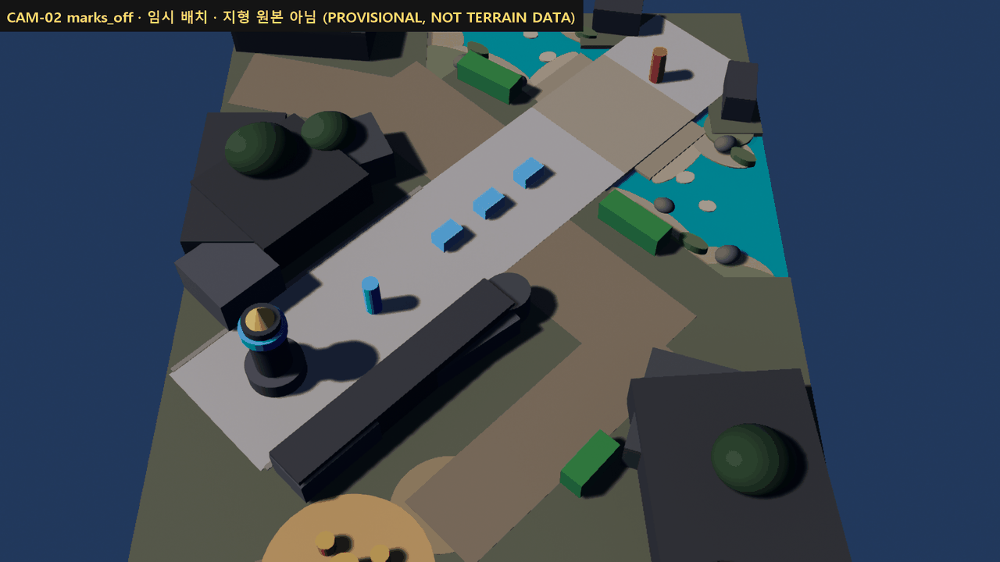


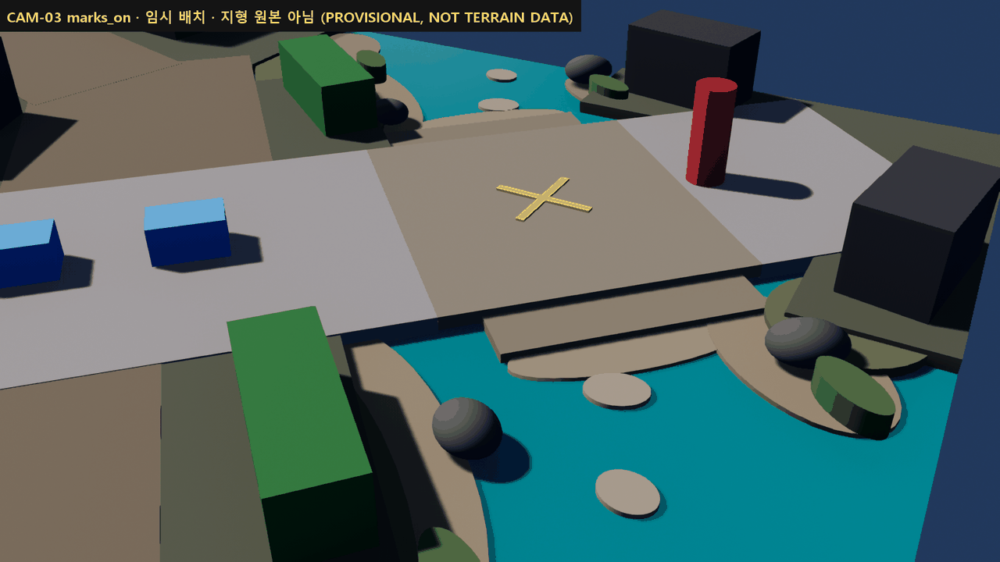
답변 완료정글 캠프와 길을 어느 안으로 다시 놓을지
대표 답변안 3 승인. 캠프 바깥 우회로와 강가·다음 캠프로 이어지는 길을 함께 수정합니다. (23:46 답변) 반영: 레벨 디자인이 준비해 둔 안 3의 변경분을 배치 지시서에 옮기고 환경 배치가 블록아웃에 적용합니다(00:02 배정). 적용한 뒤 전경을 다시 찍어 올립니다.
- 질문
- 22:07에 "정글몹동선이 좀 이상해"라고 하신 것을 받아, 레벨 디자인이 지금 배치에서 이상해 보일 수 있는 곳 다섯 군데를 찾고 고칠 안 세 가지를 냈습니다. 어느 곳을 가리키신 것인지는 추측하지 않았습니다. 첫째 그림의 번호가 그 다섯 군데입니다.
1. 길 세 갈래가 캠프 한가운데로 모입니다. 지나가려면 캠프의 몬스터 사이를 밟고 가야 합니다.
2. 남동쪽 길이 직각으로 꺾이고 강가로 바로 이어지지 않습니다. 길의 끝은 오른쪽 암반 밑으로 들어가 있습니다(놓은 값을 계산해 확인한 겹침입니다).
3. 포탑의 사거리 원이 캠프 바닥을 지나 가장 가까운 몬스터 바로 앞까지 닿습니다.
4. 캠프 아래의 일자 벽 때문에 다음 캠프로 내려가는 길이 막혀 보입니다.
5. 몬스터 네 마리가 방향 없이 흩어져 있어, 어디로 끌려 나오고 어디서 돌아가는지 보이지 않습니다.
어느 안으로 다시 놓을지 골라 주시겠습니까? 선택은 하나입니다.
- 안 1: 캠프를 벽 안쪽의 따로 떨어진 자리로 만들고 큰길은 캠프 바깥으로 돌립니다(1, 3, 5번을 고칩니다).
- 안 2: 캠프는 두고, 남동쪽 길을 강가로 곧게 잇고 아래의 일자 벽을 없앱니다(2, 4번을 고칩니다).
- 안 3(추천): 안 1과 안 2를 함께 합니다(다섯 군데를 모두 고칩니다). - 추천안과 이유
- 안 3을 추천합니다(임시 배치에 한함). 다섯 군데가 한 번에 정리됩니다. 세 안 모두 확정 좌표(포탑의 자리, 캠프 중심, 전장 중심, 사거리 775)는 그대로입니다. 환경 배치가 세 안을 사본에 놓고 다시 읽어, 세 안 모두 길과 암반의 겹침이 0이라고 보고했습니다(총괄은 그림으로만 확인했습니다). 레벨 디자인의 추천도 안 3입니다.
- 대안
- 안 1만 하면 캠프와 그 둘레만 먼저 고칩니다. 안 2만 하면 길의 이어짐만 고칩니다. 지금 그대로 두기를 원하시면 2번의 겹침(길이 암반 밑으로 들어간 것)만 고칩니다. 다섯 군데가 아닌 다른 곳이 이상하셨다면 그곳을 알려 주십시오. 그 부분만 고친 안을 다시 올리겠습니다.
- 플레이 차이
- 지금은 지형 원본이 들어오기 전의 임시 배치라 경기 규칙과 수치는 바뀌지 않습니다. 이 모양을 나중에 정식 지형에 쓰면, 정글러가 캠프의 몬스터를 건드리지 않고 바깥 길로 지나갈 수 있고(안 1, 안 3), 캠프에서 강가와 다음 캠프로 이어지는 길이 곧아집니다(안 2, 안 3).
- 구현·다른 설계 영향
- 고르신 안을 미드 구간의 블록아웃에 반영하고 전경(MAP-01)을 다시 찍어 올립니다. 정식 지형 원본을 받을 때 캠프의 입구와 길의 기준으로 씁니다.
- 결정 시점
- 급하지 않습니다. 블록아웃을 다음으로 손보기 전에 답해 주시면 됩니다. 안의 번호만 주셔도 됩니다.
- 숫자 상태
- 포탑의 자리와 사거리 775, 캠프 중심, 전장 중심은 기존 확정값이고 어느 안에서도 바뀌지 않습니다. 캠프의 반지름(320에서 260), 돌아가는 길의 폭 360, 새 벽의 크기, 몬스터의 자리, 끌려 나오는 범위를 표시한 원(반지름 550)은 모두 그림을 위한 시험값입니다. 그림은 임시 블록아웃이며 최종 그림이 아닙니다.


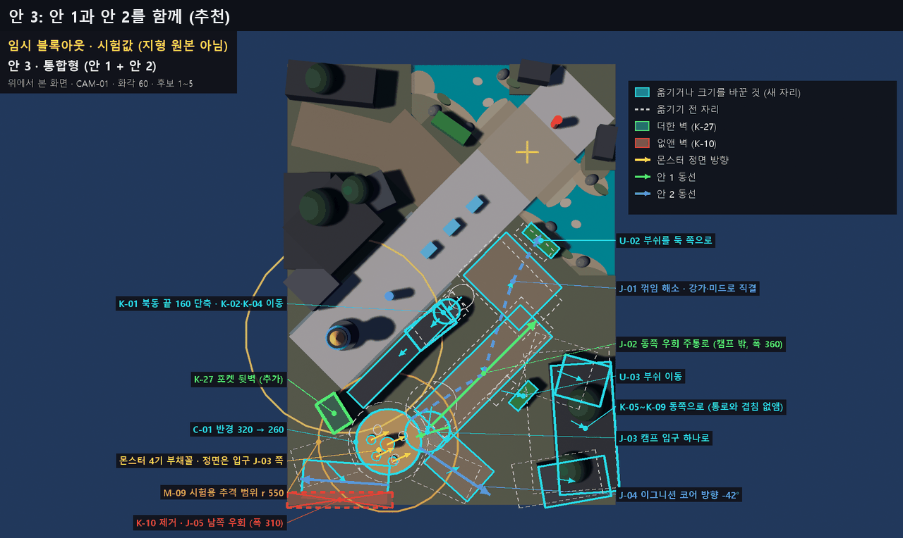

답변 완료받지 못한 문서: 「추가 전달사항 01」과 '20명 풀·팀당 2밴 목표'의 근거
대표 답변"이거 최종본은받았는데 01은못받았길래 대조해봐" (13:19 무렵, 「추가 전달사항 01」의 파일을 함께 주심) 반영: 선택지 A(문서를 보내 주심). 총괄이 01(131줄)을 02 최종본과 대조했고, QA A가 따로 다시 대조했습니다(14:13). 두 문서의 수치나 정책이 부딪치는 곳은 찾지 못했습니다. 아래는 QA A의 대조로 고친 글입니다. 1. 유도탄: 02의 3절은 01의 1절을 유지하면서 더 나눴습니다(거리는 실제 비행을 시작하는 순간의 값으로, 점유 시간은 선할당·비행·정리·취소의 항으로, 선할당이 있을 때는 할당 횟수의 후보식으로). 01에만 적힌 것은 13:57에 적은 넷보다 많습니다: 거리 예산의 두 값에 넣을 항목, 접근 속도의 후보 300(실제 유도 방식에서 보장되는지 확인한 뒤에 쓰는 값), 발사 횟수로 세는 식과 그 기호의 뜻(창의 길이가 발사 간격과 꼭 같을 때의 예, 추가 발사를 0으로 둘 수 있는 조건), 선할당이 없을 때의 등식과 안전 용량의 부등식, 경계 시험의 후보(드론 512기가 각각 두 발을 쏜 뒤 다수가 죽고 새 웨이브가 다시 쏘는 경우)와 그 경우에 실제로 닿을 수 있는지의 확인, 활성 탄만 저장해도 정적 풀의 메모리 비용은 남는다는 조건, 항목마다의 추가 보고 목록. 이들을 조건으로 넣어 경기 코어에 검산을 배정했고(14:05) 14:23에 자체 검산이 끝났습니다: 지금의 조준 방식으로는 접근 속도 300이 매 순간 보장되지 않고(완결된 50 ms 구간에서는 약 299.94 이상), 모든 이동을 덮는 충분조건도 입증하지 못했습니다. 그래서 1,068은 처리 예산으로 남기고 새 용량 후보는 내지 않았습니다. 무한 회피나 실제 초과가 증명된 것도 아닙니다. QA A의 독립 검산 뒤에 용량에 관한 결정 자료를 올립니다. 01과 02 모두 새 용량을 확정하지 않았습니다. 2. 리플레이: 02의 4절은 M1의 범위를 '참조 여부를 검사하지 않는 읽기 전용 목록, 지금 경기와 시리즈의 연결을 한 건씩 확인, 결과 화면 안에서의 제한된 다시 시도'로 바꿨습니다. 전체 저장을 거꾸로 훑는 참조 진단과 전용 관리 화면은 M2이고 01의 다섯 분류는 M2의 참고입니다. 부분 실패에서의 수렴과 결과의 중복 반영 금지, 이름 바꾸기의 원자성을 실제로 보장되는 범위로만 적는다는 01의 조건은 02에도 이어집니다. 계약 문장과 코어의 경로가 있음은 QA A가 코드에서 확인했습니다. 결과 화면이 실제로 언제 원래 자료를 놓는지, 장애와 전원 차단에서의 내구성은 확인하지 않았습니다. 3. MAP-04: 01은 안 A를 먼저 검토하되 선택 대기로 적었고, 06:21에 안 A를 채택하셨습니다. 01의 조건은 그대로 남습니다: 보행 비교의 +0.16초는 이동속도 350의 걷기이고 사냥 시간을 빼며 구간 밖 경로의 1.15배 가정을 포함합니다. 수풀의 여유 0.50초는 기하로 잰 접근 시간이지 반응 시간이나 공정성의 검증이 아닙니다. 02는 +174와 -120을 더한 +54 unit(약 0.154초)과 반올림의 단서, 실제 이동 반경과 통행, 관전 가독성, 지형 변이 뒤의 측정을 더 적었습니다. 안 A의 채택은 그 검증들이 끝났다는 뜻이 아닙니다. 4. '20명 풀과 팀당 2밴': 01에 없습니다(01에 나오는 10과 20은 캠프 수의 문턱입니다). 02는 그것을 기존 전체 기획의 목표로 부르며, 지금 M1(계약자 10명, 밴 없음)과 어느 단계에 적용되는지 구분해 연결하라고, 그 목표를 폐기하거나 M2로 자동으로 옮기지 말라고 적었습니다. 11-25의 계약자 기획안 묶음은 과거 요약의 20명과 팀당 2밴을 최신 출시 확정 규칙으로 잇지 않는다고 적습니다. 그래서 지금의 M1은 그대로 두고, 그 목표는 폐기하지도 M2로 옮기지도 않은 채 '적용 단계 미정'으로 둡니다. 원래 문서와 적용 단계는 확인하지 못했고, 밴이 들어오는 단계를 설계할 때 근거와 함께 여쭙니다. 15:00 갱신(14:47에 붙여 주신 대화 내용의 반영): 그 글은 02의 '20명 풀·팀당 2밴'을 정정해야 할 잘못된 인용으로 적었습니다. 그래서 위 4번의 '적용 단계 미정'을 거두고 그 문장을 목표로 다루지 않습니다. M1은 계약자 10명과 밴 없음 그대로입니다. 같은 글은 02가 01의 유효한 내용을 통합하고 대체하도록 고치는 것이 맞다고 적습니다. 총괄은 01을 직접 받아 대조했고 01에만 적힌 세부 전제는 검산의 조건으로 이미 넣었습니다. 고친 02를 따로 받으면 다시 대조합니다. 5. 01의 4절이 청한 구분으로 적습니다. 처리됨: 유도탄의 검산(경기 코어의 자체 검산 14:23, QA A의 독립 검산 14:44. 결론은 같습니다: 1,068은 처리 예산이고 새 용량을 정할 근거가 없습니다), 01과 02의 대조, MAP-04 안 A의 채택(06:21). 검산 필요: 모든 이동기와 재조준을 덮는 수명의 상한(이동 스킬이 들어온 뒤에야 따질 수 있습니다), 512기 경계 시나리오가 합법 경로로 닿는지, 탄착 시점의 보호막(경기의 피해 경로에 보호막 정산을 이은 뒤), 풀의 활성 수와 빈 슬롯 재사용의 직접 시험, 리플레이 재시도의 중간 상태와 임시 파일 반영의 보장 범위를 계약 문장과 줄 단위로 견주는 일(총괄의 밀린 일), MAP-04의 실제 통행과 가독성과 지형 변이 뒤의 측정. 채택 대기: 없습니다. 대표 선택 대기: 지금은 없습니다. 유도탄의 수명을 닫는 규칙을 둘지는 근거가 모이면 따로 여쭙니다. 그때까지 1,068을 넘으면 진단 기록을 남기고 그 경기를 무효로 끝내는 지금의 처리를 유지합니다.
- 질문
- (아래의 물음은 01을 받기 전의 기록입니다. 11-25 13:19에 01을 받았고 결과는 대표 답변 칸에 있습니다.) 06:21에 주신 「추가 전달사항 02 최종」은 「추가 전달사항 01」을 유지하고 그 1절(유도탄의 점유 시간과 충분조건), 2절(리플레이 참조 진단의 다섯 분류), 3절(MAP-04 안 A의 상세)을 보완한다고 적고 있습니다. 그런데 「추가 전달사항 01」은 총괄이 받은 기록이 없습니다. 받은 문서의 보관소와 저장소 전체에서 찾지 못했습니다(03:52의 통합 기준안, 그 뒤의 지시 넷, 이번 02만 있습니다). 02가 말하는 '기존 전체 기획의 20명 풀·팀당 2밴 목표'도 저장소의 문서에서 찾지 못했습니다. 기존 문서에 있는 것은 밴픽 모드 넷, 한 세트의 열 픽은 겹치지 않음, M1은 계약자 10명과 밴 없음으로 시작입니다. 02에 다시 적힌 내용은 그대로 적용하고 있습니다. 01에만 있는 내용(유도탄 충분조건의 전제, 리플레이 다섯 분류의 표)은 원문 없이 짐작으로 채우지 않습니다.
- 선택지 A: 「추가 전달사항 01」을(20명과 2밴의 근거가 다른 문서라면 그것도) 보내 주십니다. 받으면 02와 대조해 적용합니다.
- 선택지 B: 01 없이 02에 적힌 것만으로 진행합니다. 01에만 있는 전제는 '받지 못함'으로 적어 두고, 밴이 들어오는 단계는 기존 문서(M1은 10명과 밴 없음)까지만 잇습니다.
11-25 갱신: 11-25에 주신 계약자 기획안 묶음의 두 문서(계약자 검토, 출시 명단 우선순위)가 20명과 팀당 2밴을 출시 확정 규칙으로 승계하거나 인용하지 않는다고 적고 있습니다. 「추가 전달사항 01」의 원문은 여전히 받지 못했습니다. 답을 받기 전까지는 선택지 B의 방식(기존 문서의 M1 10명과 밴 없음까지만 잇기)으로 진행하고 있습니다. - 추천안과 이유
- 선택지 A를 추천합니다. 02가 01의 전제를 유지한다고 여러 번 적고 있어, 원문 없이는 그 전제가 지켜졌는지 확인할 수 없습니다.
- 대안
- 선택지 B는 바로 진행할 수 있지만, 유도탄의 용량 검산에서 01이 정한 전제를 빠뜨릴 수 있고 20명 풀과 팀당 2밴이 어느 단계의 목표인지 적지 못합니다.
- 플레이 차이
- 게임의 내용이 바로 바뀌지는 않습니다. 유도탄의 용량 검산이 원문의 전제에 맞는지와, 밴이 들어오는 단계의 연결이 달라집니다.
- 구현·다른 설계 영향
- A: 받는 대로 02와의 대조표를 만들고 다른 곳이 있으면 보고합니다. B: 유도탄의 충분조건은 02의 3.2절에 적힌 조건과 실제 계약 값으로만 검산하고, 밴픽의 세부 카드는 기존 문서만을 바탕으로 올립니다. 14:30대 갱신의 바로잡음(QA A의 대조): 위 B의 계획은 02의 3.2절(비행과 점유의 조건)만 들었는데 3.3절의 할당 횟수 상한도 함께 검산해야 했습니다. A로 답을 받아 01과 02의 조건을 모두 넣어 검산했습니다(경기 코어의 자체 검산 14:23, 독립 검산 전).
- 결정 시점
- 급하지 않습니다. 유도탄의 용량 검산과 밴픽의 세부 정리를 시작하기 전이면 됩니다. 다른 작업은 계속합니다.
- 숫자 상태
- 22와 512는 지금 계약의 포탑 수 상한과 드론 수 상한이고 1,068은 지금의 처리 예산입니다. 01을 받아 식의 전제를 읽었습니다(대표 답변 칸). 14:23의 자체 검산으로는 새 용량 후보를 내지 못했고 1,068은 처리 예산으로 남습니다(독립 검산 전). 20명과 팀당 2밴은 02에 적힌 이전 목표의 수이며, 그 원래 문서와 적용 단계는 확인하지 못했습니다. (14:30대 갱신에서 QA A의 독립 대조에 따라 고침) 15:00 갱신: 14:47에 붙여 주신 대화 내용이 02의 '20명 풀·팀당 2밴'을 정정해야 할 잘못된 인용으로 적었습니다. 그 수를 적용 단계를 정할 목표로 다루지 않습니다.
답변 완료안 3과 여울 건널목을 블록아웃에 적용한 결과 (임시 배치)
대표 답변11-25 16:36에 대표의 검토 의견(총괄 결정 보고 26건의 서면 대조)을 받았고, 18:49의 말씀 "내가 26건남아있을때 토론해서보냈는데 아직도남아있네"에 따라 닫습니다. 검토에서 짚으신 것은 17:40에 해당 카드의 본문에 반영했고 항목별 답은 REVIEW-00부터 REVIEW-06에 있습니다. 검토 의견은 새 승인이나 수치 확정이 아니라고 적어 주셨으므로, 승인이 아니라 검토를 마친 보고로 닫습니다. 카드에 적은 내용은 그대로 진행하며, 고칠 곳은 언제든 말씀해 주십시오. 총괄의 잘못: 검토를 받은 뒤에도 보고 탭에 그대로 두었습니다.
- 질문
- 23:46에 승인하신 안 3(MAP-02)과 여울 건널목의 보완(MAP-01)을 블록아웃에 적용한 결과입니다. 결정을 여쭙는 카드가 아니라 결과의 보고입니다. 보시고 다르게 가야 할 곳이 있으면 말씀해 주십시오. 답이 없으면 이대로 다음(지형 변이의 자리, 나머지 구간)으로 갑니다.
적용한 것: 캠프를 줄여 벽 안쪽에 넣고, 캠프 바깥의 우회로와 강가로 이어지는 길과 다음 캠프로 가는 길을 다시 놓았습니다(배치 도형 116개에서 144개). 여울 건널목은 평평한 상판을 없애고 낮은 평석과 자갈턱, 얕은 물 틈으로 바꿨습니다(144개에서 160개). - 추천안과 이유
- 이대로 진행을 추천합니다. 다만 그림에서 보이는 것 하나: 여울로 들어가는 첫 단의 긴 판 두 장이 길 양끝에서 곧은 판자처럼 읽힙니다. 돌처럼 보이게 모서리를 깨는 손질을 레벨 디자인의 다음 검토에 넣겠습니다.
- 대안
- 여울이 아직 다리처럼 보이면 평석의 수를 줄이고 물 틈을 넓히는 쪽으로, 반대로 건널 자리가 흐려 보이면 평석을 모으는 쪽으로 고칠 수 있습니다. 정글은 안 3 그대로입니다. 다른 안으로 돌아가려면 말씀해 주십시오.
- 플레이 차이
- 경기 판정은 바뀌지 않습니다. 이 배치는 관전 화면에서 읽히는 모양을 보는 임시 배치이고 지형 원본이 아닙니다. 판정에 쓰는 지형은 지형 원본이 들어온 뒤 따로 맞춥니다.
- 구현·다른 설계 영향
- 환경 배치가 적용했고(00:33까지 두 번의 커밋) 배치를 다시 읽어 160개가 지시서와 같은 것을 스스로 확인했습니다. 레벨 디자인이 결과를 검토한 뒤 지형 변이의 자리를 얹습니다. 아트의 환경 제작은 이 배치를 바탕으로 시작합니다.
- 결정 시점
- 급하지 않습니다. 다르게 가야 할 곳이 있을 때만 알려 주시면 됩니다.
- 숫자 상태
- 배치의 좌표와 크기는 모두 임시 배치의 값입니다(지형 원본 아님). 맵 표시 배율 1.0은 M1 파일럿 한정의 시험값입니다.

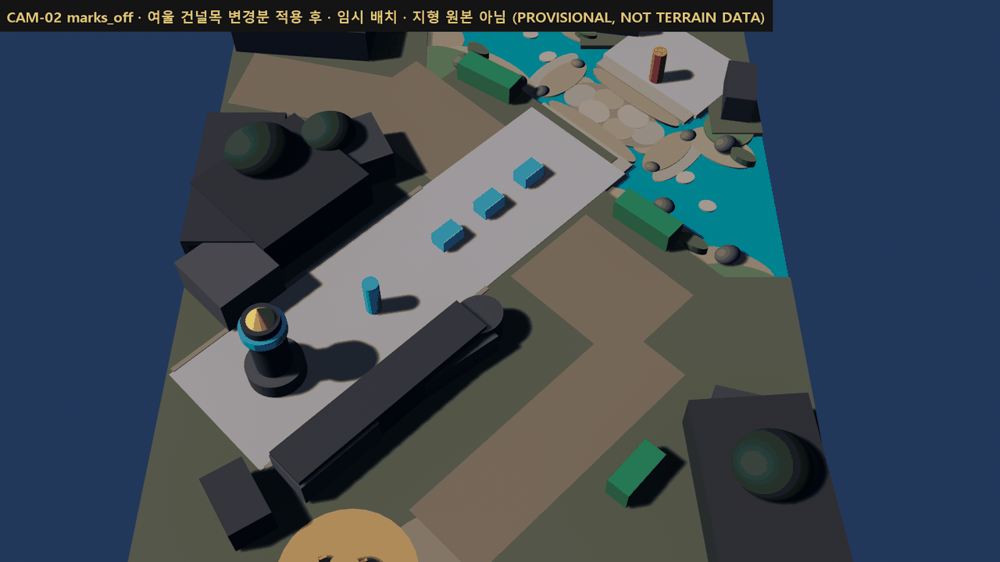


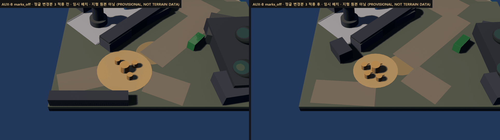
답변 완료정글 캠프의 동선 개선: 캠프를 벽으로 두른 주머니로 만들지 (02:30의 말씀, 임시 배치)
대표 답변"MAP-04 A: 대상 캠프의 동남쪽 입구·주변 벽·옆길 연결·수풀 보정을 진행합니다. 실제 통행과 관전 가독성 확인도 함께 이어 주세요." (06:21의 답) 반영: 안 A. 환경 배치에 미드 구간의 임시 배치 적용을 배정했고(06:27), 레벨 디자인에 같은 규칙으로 나머지 다섯 캠프 구간의 지형 초안을 배정했습니다(06:28). 확정 좌표는 바꾸지 않습니다. 함께 주신 검토 기준을 배정문에 옮겼습니다: 통행 폭은 개체의 실제 반경으로 재고 라인 드론의 시험 반경을 다른 개체에 쓰지 않음, 꺾인 입구는 통행 영역이 이어지는지를 도형으로 확인, 캠프의 경계는 중립 전투 문서의 캠프 영역과 홈 반경에 잇고 그림용 표시 원을 쓰지 않음, 미드 수풀의 거리(781과 623)를 캠프 입구의 값으로 쓰지 않음, 가까이 당겨 보는 것을 가독성의 보완 수단으로 삼지 않음, 안 C는 안 A에 실제 문제가 확인될 때만 보고한 뒤 검토. 채택은 정본과 코드와 실행 검증의 완료가 아닙니다. 안 A의 채택은 통행과 시야와 관전 가독성의 시험 완료가 아닙니다. 남은 것: 적용과 다시 재기, 실제 치수와 통행 폭의 표, 그림과 눈가림 비평, 정식 지형과 경기 판정으로의 연결, 지형 변이의 실행 규칙.
- 질문
- 02:30에 주신 말씀에 따라 만든 개선안입니다. 받은 말: "그 혹시 맵배치하는거 리그오브레전드 신규맵에 정글캠프쪽봐볼래? 그거참고해서배치하는게좋을듯? 똑같이하란소리는아니고 정글캠프동선에대해서 좀 더 좋게만들게하기위해사 참고하라는거야". 미드 옆의 캠프 한 곳(칼날 드론군)과 그 둘레의 길, 미드 양쪽 강가의 수풀을 어느 안으로 고칠지 골라 주십시오. 고르신 안의 규칙(벽으로 두른 주머니, 입구의 방향, 벽에 붙인 수풀, 캠프 옆의 두 번째 길)은 나머지 다섯 캠프의 지형 초안에도 그대로 씁니다.
지금 배치에서 잰 것(첫째 그림): (1) 캠프의 서쪽과 남쪽에 벽이 없어 입구가 바닥의 표시일 뿐이고 어디로든 걸어 들어갈 수 있습니다. (2) 캠프 남쪽의 두 번째 길이 다음 캠프로 가는 길과 273unit 끊겨 있습니다. (3) 동쪽의 수풀 하나가 벽에서 105unit 떨어져 빈 바닥에 떠 있습니다. (4) 미드 양쪽 강가의 수풀이 미드 중심에서 462unit과 568unit으로 서로 다릅니다. 가까운 쪽은 수풀에서 나온 적이 교전 거리(450unit)에 닿기까지 0.04초뿐입니다.
- 안 A(추천, 둘째 그림): 캠프의 서쪽과 남쪽에 벽을 세워 입구를 동남쪽 하나로 만듭니다. 남쪽의 두 번째 길을 다음 캠프로 가는 길에 잇습니다. 떠 있던 수풀을 벽에 붙이고, 미드 양쪽의 수풀을 바깥으로 밀어 대칭으로 놓습니다.
- 안 B(최소 보정, 셋째 그림): 길과 캠프는 그대로 두고 수풀만 고칩니다(벽에 붙이기, 미드 양쪽을 대칭으로). 벽은 세우지 않습니다.
- 안 C(넷째 그림): 안 A와 같되 입구만 동북쪽(미드로 가는 큰길 쪽)으로 엽니다.
세 안 모두 여울 건널목의 진입 석판 보완(MAP-03에서 말씀드린, 판자처럼 보이는 긴 판)을 함께 넣습니다. 확정된 좌표(캠프 중심 열두 곳, 포탑, 전장 중심, 둥지)는 어느 안에서도 바꾸지 않습니다. - 추천안과 이유
- 안 A를 추천합니다. 한쪽 진영의 여섯 캠프를 한 바퀴 도는 이동 시간은 지금 34.93초에서 35.09초로 0.16초 늘어납니다. 그 대신 얻는 것이 넷입니다. (1) 입구가 실제로 하나가 됩니다. (2) 캠프 옆으로 지나가는 두 번째 길이 끊기지 않고 이어집니다. (3) 미드 양쪽의 수풀이 대칭이 되고, 수풀에서 나온 적이 교전 거리에 닿기까지의 여유가 0.04초에서 0.50초로 늘어납니다. (4) 다음 버프 캠프(이그니션 코어)로 가는 길이 0.42초 줄어듭니다. 늘어나는 쪽은 서쪽 캠프(그림자 무리)에서 올 때입니다. 남쪽이 벽으로 막혀 돌아 들어가므로 0.58초 늘어납니다.
참고한 것과 그 한계: 새 맵은 2026-11-14의 티저에서 게임 화면 약 13초만 공개됐고 캠프의 배치도는 없습니다(전체 공개는 2027년 1월). 그래서 티저의 정지 화면에서 보이는 구조(한쪽만 열린 주머니 모양의 캠프, 벽 옆의 수풀)와 라이엇이 2023-11-23에 낸 공식 개발 글의 원칙을 기준으로 삼았습니다: 미드의 수풀을 바깥으로 밀어 적을 본 뒤의 여유를 약 20% 늘림, 수풀의 값은 옆의 벽에서 나옴, 길을 가르지 못하는 작은 섬 지형을 없앰, 두 진영의 공정함. 벽이 무너지는 조건 같은 추정은 넣지 않았습니다. 똑같이 옮긴 곳은 없습니다.
경과: 레벨 디자인이 02:47에 낸 첫 안은 환경 배치가 도형에서 따로 다시 잰 결과(03:17)와 일곱 곳에서 어긋나 고쳤습니다(반례 LVL-01). 이 카드의 수치는 고친 안을 환경 배치의 도구가 다시 잰 값이며, 총괄이 그 측정 파일과 하나씩 대조했습니다. - 대안
- 안 B: 한 바퀴의 시간(34.93초)과 미드로 가는 시간이 늘지 않습니다. 수풀의 대칭은 얻지만 여유는 0.32초이고(안 A는 0.50초), 벽이 없어 입구는 정식 지형이 들어올 때까지 표시뿐이며 두 번째 길의 끊김(273unit)도 남습니다. 안 C: 캠프에서 미드 중심으로 가는 시간이 9.00초로 안 A(9.21초)보다 약 0.2초 빠릅니다. 대신 서쪽에서 올 때 더 멀리 돌아 한 바퀴가 35.78초(0.85초 증가)가 됩니다. 여울만: 정글은 지금대로 두고 여울 건널목의 진입 석판만 먼저 고치는 길도 있습니다.
- 플레이 차이
- 지금은 임시 배치라 경기의 판정에 쓰이지 않습니다. 정식 지형이 이 규칙으로 만들어지면 달라지는 것: 벽으로 두른 캠프는 정글러가 사냥하는 동안 들어올 길이 하나라 기습의 방향을 읽기 쉽고, 캠프 옆의 두 번째 길은 캠프를 지나치는 우회와 추격과 도주에 쓰입니다. 미드에서는 양쪽 강가의 수풀에서 적이 나올 때 어느 진영이든 같은 여유를 갖습니다. 입구의 방향은 정글을 도는 순서에 닿습니다: 동남쪽 입구(안 A)는 버프 캠프로 이어 가기 좋고, 동북쪽 입구(안 C)는 미드와 강으로 나가기 좋습니다.
- 구현·다른 설계 영향
- 고르신 안의 도형과 여울 보완을 미드 구간의 임시 배치에 적용하고 실제 화면(위에서 본 화면, 관전 각도, 여울 가까이)을 다시 찍어 올립니다. 그 규칙으로 나머지 다섯 캠프 구간의 지형 초안을 씁니다. 캠프 중심을 옮기는 안은 내지 않았습니다(옮기려면 별도의 결정이 필요합니다). 지형 변이(시드 4종에 따라 바뀌는 지형)의 자리 제안과는 부딪히지 않습니다(프리즘 자리의 여유는 네 안이 같습니다). 04:39 추가: 편집기에서 찍은 비교 화면 셋(캠프, 미드, 여울)을 보고 카드 MAP-05에 올렸습니다.
- 결정 시점
- 급하지 않습니다. 나머지 캠프 구간의 지형 초안을 시작하기 전에 알려 주시면 됩니다. 답이 없는 동안에는 블록아웃을 지금대로 둡니다.
- 숫자 상태
- 시간은 걷는 시간만이고(사냥하는 시간 제외) 이동속도 350unit/s 기준입니다. 구간 밖의 다섯 캠프까지의 길은 직선 거리에 1.15를 곱한 가정이며 잰 값이 아닙니다. 그래서 한 바퀴의 절대값보다 안 사이의 차이(0.16초, 0.85초)를 봐 주십시오. 캠프 중심 열두 곳, 포탑의 좌표와 사거리 775, 이동속도 350은 기존 확정값입니다. 벽과 길과 수풀의 좌표와 크기, 교전 거리 450, 계수 1.15는 임시 배치의 시험값입니다.
| 항목 | 지금 | 안 A | 안 B | 안 C |
|---|---|---|---|---|
| 여섯 캠프 한 바퀴의 이동 | 34.93초 | 35.09초 (+0.16) | 34.93초 | 35.78초 (+0.85) |
| 서쪽 캠프에서 이 캠프까지 | 12.59초 | 13.17초 (+0.58) | 12.59초 | 13.71초 (+1.12) |
| 이 캠프에서 버프 캠프까지 | 6.57초 | 6.15초 (-0.42) | 6.57초 | 6.30초 (-0.27) |
| 이 캠프에서 미드 중심까지 | 8.91초 | 9.21초 (+0.30) | 8.91초 | 9.00초 (+0.09) |
| 미드 수풀에서 교전 거리까지의 여유 | 0.04초 | 0.50초 | 0.32초 | 0.50초 |
| 미드 양쪽 수풀의 거리 차 | 106unit | 0 | 0 | 0 |
| 캠프의 입구 | 표시뿐 | 벽으로 하나(동남) | 표시뿐 | 벽으로 하나(동북) |
| 캠프 옆 두 번째 길 | 273unit 끊김 | 이어짐 | 273unit 끊김 | 이어짐 |

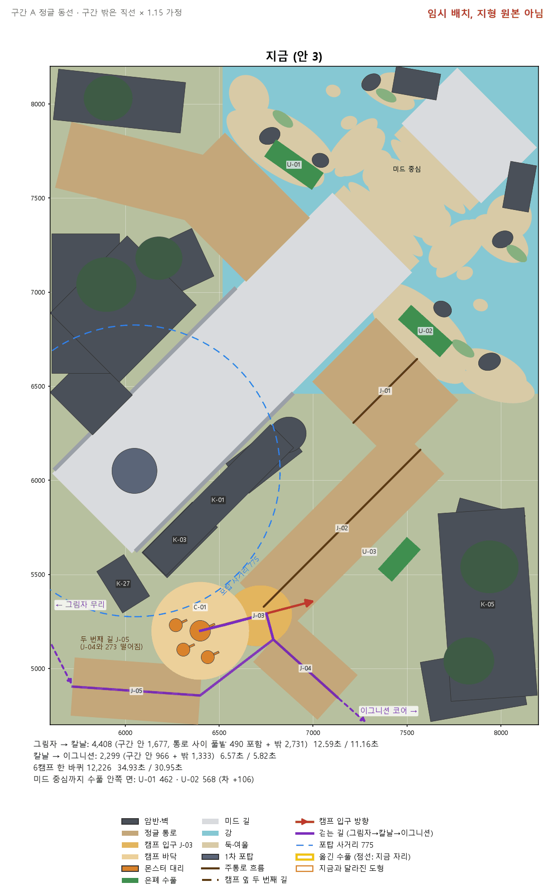


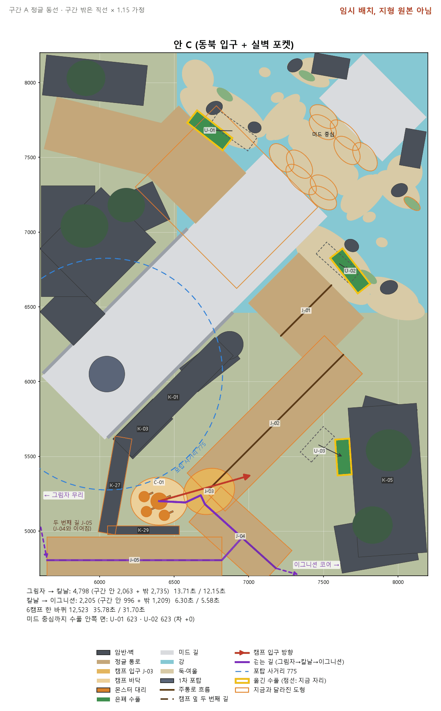
답변 완료정글 캠프의 동선 개선: 편집기에서 찍은 비교 화면 셋 (MAP-04를 고르실 때의 참고, 임시 배치)
대표 답변11-25 16:36에 대표의 검토 의견(총괄 결정 보고 26건의 서면 대조)을 받았고, 18:49의 말씀 "내가 26건남아있을때 토론해서보냈는데 아직도남아있네"에 따라 닫습니다. 검토에서 짚으신 것은 17:40에 해당 카드의 본문에 반영했고 항목별 답은 REVIEW-00부터 REVIEW-06에 있습니다. 검토 의견은 새 승인이나 수치 확정이 아니라고 적어 주셨으므로, 승인이 아니라 검토를 마친 보고로 닫습니다. 카드에 적은 내용은 그대로 진행하며, 고칠 곳은 언제든 말씀해 주십시오. 총괄의 잘못: 검토를 받은 뒤에도 보고 탭에 그대로 두었습니다.
- 질문
- MAP-04(어느 안으로 고칠지)를 고르실 때 보실 실제 화면입니다. 결정을 여쭙는 카드가 아닙니다. 환경 배치가 주 레벨을 건드리지 않고 사본 레벨 셋(지금, 안 A, 여울 보완)을 만들어 같은 카메라로 찍었습니다. 1. 캠프(첫째 그림): 안 A는 캠프의 서쪽과 남쪽 벽이 이어져 입구가 동남쪽 하나가 됩니다. 떠 있던 수풀이 벽에 붙습니다. 2. 미드(둘째 그림): 강가의 두 수풀이 미드 중심에서 같은 거리가 됩니다(수풀 중심까지 지금 626.5와 713.9, 안 A는 둘 다 781.0unit). 3. 여울(셋째 그림): 세 안에 공통으로 넣는 보완입니다. 널빤지처럼 보이던 긴 판 하나를 둥근 돌판 여럿으로 바꿉니다. 안 B와 안 C의 실제 화면은 찍지 않았습니다(평면도는 MAP-04에 있습니다).
- 추천안과 이유
- MAP-04의 추천(안 A)은 그대로입니다. 이 그림은 평면도의 수치(한 바퀴 0.16초 증가, 수풀의 여유 0.04초에서 0.50초)를 바꾸지 않습니다. 첫 촬영에서 안 A의 통로 바닥 셋이 같은 높이로 겹쳐 깜빡이는 무늬가 보였고, 레벨 디자인이 통로의 높이를 0.5씩 달리해 고친 뒤 다시 찍었습니다(위에서 본 거리와 시간은 그대로).
- 대안
- 안 B와 안 C의 화면이 필요하시면 말씀해 주십시오. 사본 레벨을 하나씩 더 만들어 같은 카메라로 찍습니다.
- 플레이 차이
- 임시 배치라 경기의 판정에 쓰이지 않습니다. 모양만 보시면 됩니다.
- 구현·다른 설계 영향
- 주 레벨은 바뀌지 않았습니다(환경 배치가 파일의 검사값이 그대로임을 확인). MAP-04의 답을 받으면 고르신 안을 주 레벨의 임시 배치에 적용합니다.
- 결정 시점
- MAP-04와 함께 보시면 됩니다.
- 숫자 상태
- 수풀 중심까지의 거리 626.5, 713.9, 781.0unit과 수풀 윤곽의 가장 가까운 점까지의 거리(지금 462.1과 568.1, 안 A 623.0)는 환경 배치가 도형에서 잰 값이며 그림 안에 적혀 있습니다. 벽과 길과 수풀의 좌표와 크기는 임시 배치의 시험값입니다.


답변 완료정글 캠프 동선(MAP-04 안 A): 미드 구간의 첫 촬영 비평과 원인 조사 기록 (넷째 촬영 통과와 확인은 MAP-07)
대표 답변11-25 16:36에 대표의 검토 의견(총괄 결정 보고 26건의 서면 대조)을 받았고, 18:49의 말씀 "내가 26건남아있을때 토론해서보냈는데 아직도남아있네"에 따라 닫습니다. 검토에서 짚으신 것은 17:40에 해당 카드의 본문에 반영했고 항목별 답은 REVIEW-00부터 REVIEW-06에 있습니다. 검토 의견은 새 승인이나 수치 확정이 아니라고 적어 주셨으므로, 승인이 아니라 검토를 마친 보고로 닫습니다. 카드에 적은 내용은 그대로 진행하며, 고칠 곳은 언제든 말씀해 주십시오. 총괄의 잘못: 검토를 받은 뒤에도 보고 탭에 그대로 두었습니다.
- 질문
- 결정을 여쭙는 카드가 아닙니다. 06:21에 채택하신 안 A를 미드 구간의 임시 배치에 적용한 결과입니다.
1. 놓인 값(환경 배치의 자체 실행, 07:20 보고): 도형 167개가 표와 모두 같습니다. 여섯 캠프 한 바퀴 35.09초, 미드 수풀의 반응 여유 0.50초로 계산값과 같습니다. 입구의 벽 사이 최단 폭 446.5, 둘째 길의 폭 310입니다. 통행 폭은 계약자와 몬스터의 반경이 문서에 없어 모두 '값 없음'입니다.
2. 대조 도구(검증·내러티브 엔진, 07:58 보고): 배치 역할이 대조 도구를 직접 고쳤던 것을 검증 역할이 자기 방식으로 다시 썼고, 따로 적용한 기대값 167개와 차이가 0입니다. 고치는 중에 배치와 대조가 함께 놓치는 경우 하나를 찾아 막았습니다(지금의 표에는 그런 줄이 없어 결과에는 영향 없음).
3. 눈가림 비평(08:00, 배치에 참여하지 않은 세션이 그림과 기준만 보고 판정): 결함 8건(치명 4, 중간 3, 사소 1)으로 종료 조건(치명 0, 중간 0)에 못 미칩니다. 그림 묶음은 받지 않았습니다.
- 치명 1, 2: 캠프 화면과 미드 화면에서 남쪽 벽, 둘째 길, 작은 몬스터 둘, 여울의 돌판, 차로 위의 상자의 몸체가 그림에서 사라지고 그림자만 남았습니다(아래 두 그림. 총괄이 그림을 열어 확인했습니다). 캠프의 남쪽이 열린 것처럼, 여울에 건널목이 없는 것처럼 틀리게 읽힙니다. 놓인 값은 표와 같으므로 촬영이나 표시의 결함으로 보고 원인을 찾습니다.
- 치명 3: 바닥 전투 표시의 대리(노란 원판) 셋 가운데 둘이 읽히지 않습니다. 남쪽 벽 뒤의 것은 벽에 가리고, 여울의 것은 돌판과 물 아래에 묻힙니다.
- 치명 4: 여울의 돌판이 틈 없이 포개져 돌판 사이의 물길이 이어지지 않고, 한쪽은 계단처럼 쌓여 얕은 물길이 아니라 돌무더기로 읽힙니다.
- 중간: 벽 뒤의 작은 몬스터가 윗면 끝만 보이고 개체들이 뭉쳐 보임, 갈색 길 하나가 바닥 한가운데서 끊기고 다른 끝은 바닥판 밖으로 나감, 떠 있는 판과 겹친 면의 얼룩과 벽 모서리의 틈.
4. 함께 온 측정(환경 배치의 계산): 기본 관전 각도에서 남쪽 벽 바로 뒤에 세운 계약자 크기 대리의 43%, 작은 몬스터 하나의 51%가 벽에 가려집니다. 대리 형상과 몬스터의 크기는 근거 없는 표시용 값입니다. 5. 몸체가 사라진 원인(09:45 보고, 환경 배치의 자체 실행 결과): 배치와 표시 설정이 아니라 촬영의 문제였습니다. 놓인 물체 167개의 표시 설정은 모두 정상입니다. 촬영 도구가 카메라를 연달아 옮긴 뒤 화면을 한 번만 그려 찍었고, 그 첫 그림에서 직전 카메라의 화면 밖에 있던 물체의 몸체가 가림 판정으로 빠지고 그림자만 남았습니다(그림자는 광원을 기준으로 따로 그려집니다). 캠프 화면에서 사라진 9개와 미드 화면에서 사라진 68개가 '직전 카메라의 화면 밖에 있던 물체'의 목록과 정확히 같습니다. 같은 카메라에서 한 번 더 그리면 모두 나타납니다(통제 실험. 총괄이 두 그림을 열어 확인했습니다). 나머지 여섯 장에서 사라진 물체는 0개입니다. 6. 레벨 디자인의 판정(09:49 도착, 총괄의 검토 전): 결함 8건 가운데 확정 좌표를 옮기거나 안 A의 구조를 버려야 하는 것은 없고, 설계 표의 수정(45행)과 삭제(12개)로 푼다는 판정입니다. 총괄이 검토해 커밋한 뒤, 환경 배치가 판정을 반영하고 촬영을 고쳐(찍기 전에 한 번 더 그림) 같은 카메라로 다시 찍습니다. 그다음 눈가림 비평을 다시 받습니다. 7. 레벨 디자인의 판정 문서를 10:14에 커밋했습니다(치명 1, 2의 원인과 조치를 통제 실험에 맞게 고친 뒤). 환경 배치가 판정의 적용, 촬영 수정, 같은 카메라로 다시 찍기를 하고 있습니다(10:00 배정).
16:09 갱신: 판정대로 고쳐 다시 찍은 넷째 촬영이 눈가림 비평을 통과했습니다(치명 0, 중간 0, 사소 2). 그림과 확인은 MAP-07에 있습니다. - 추천안과 이유
- 이 순서로 진행합니다. (1) 몸체가 사라진 원인을 먼저 찾습니다(환경 배치). (2) 레벨 디자인이 결함마다 설계의 표를 고칠 것, 배치나 촬영을 고칠 것, 받아들이지 않을 것을 판정합니다. (3) 고친 뒤 새 그림으로 다시 눈가림 비평을 받습니다. 안 A가 관전 화면에서 읽히는지의 판단은 그림이 바로잡힌 뒤에 합니다. 지금의 그림으로는 안 A의 문제인지 그림의 문제인지 가를 수 없습니다.
- 대안
- 안 C의 검토는 말씀대로 안 A에 실제 문제가 확인될 때만 보고드린 뒤에 합니다. 지금은 그 단계가 아닙니다.
- 플레이 차이
- 게임의 내용은 바뀌지 않습니다(임시 배치이며 정식 지형과 경기 판정이 아닙니다).
- 구현·다른 설계 영향
- 여울의 돌판과 물길(치명 4)은 여울 보완의 도형 표를 고쳐야 할 수 있습니다. 벽 뒤의 가림(치명 3, 중간)은 안 A의 벽 높이나 바닥 표시의 방식에 닿습니다. 판정 뒤에 다시 보고합니다.
- 결정 시점
- 몸체가 사라진 원인의 조사는 08:03에 배정했습니다. 결함의 판정은 레벨 디자인에 이어서 배정합니다. 새 그림과 다시 받은 비평을 올릴 때 이 카드를 고칩니다.
- 숫자 상태
- 거리와 시간과 치수는 임시 배치의 값입니다. 가림의 비율은 계산값이고, 비평의 가림은 눈으로 어림한 값입니다. 대리 형상의 크기는 표시용입니다.
변경 이력: 첫 촬영 당시에는 결함 8건으로 그림 묶음을 받지 않아 제목에 미수령으로 적었으며, 넷째 촬영은 15:57 눈가림 비평을 통과해 MAP-07로 이어졌습니다.


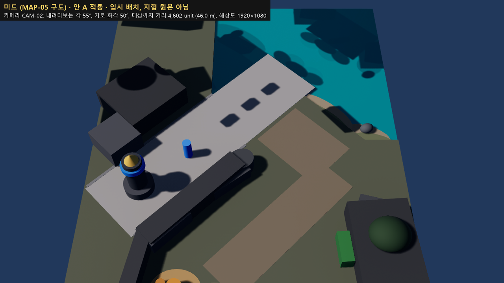
답변 완료아트 세션의 실행 모델(지정하신 모델의 주간 한도 98% 사용)
대표 답변아트 세션은 일단 대기합니다. (19:05 답변)
- 질문
- 아트 세션에 지정하신 모델은 주간 사용 한도가 98% 찬 상태입니다(18:55 조회, 초기화까지 약 1일 17시간). 그래서 아트 작업 배정을 보류하고 있습니다. 초기화 전까지 아트 작업을 어떻게 진행할까요?
- 선택지 A(추천): 초기화 전까지는 구현 세션과 같은 모델로 아트 작업을 진행하고, 초기화되면 지정하신 모델로 되돌립니다.
- 선택지 B: 초기화될 때까지 아트 작업을 쉬게 둡니다.
- 선택지 C: 지정하신 모델로 남은 한도만큼만 진행하고, 한도에 닿으면 멈춥니다. - 추천안과 이유
- 선택지 A를 추천합니다. 지금 아트가 할 수 있는 일(파일럿 준비 문서, 아이콘 초안 수정)은 문서와 벡터 그림 작업이라 모델을 잠시 바꿔도 약 이틀을 쉬지 않아도 됩니다. 조건: 유료 이미지 생성은 이 결정과 무관하게 ART-01의 승인 전에는 하지 않습니다. 모델을 바꿨을 때 결과물의 품질 차이는 재 보지 않았습니다.
- 대안
- 선택지 B는 한도를 전혀 쓰지 않지만 아트 준비가 약 이틀 멈춥니다. 선택지 C는 지시를 글자 그대로 따르지만 남은 2%로는 작업 하나를 끝내기 어렵고, 중간에 멈추면 15:57의 구현 세션 정지와 같은 일이 생깁니다.
- 플레이 차이
- 없습니다. 작업 세션의 운영 문제입니다.
- 구현·다른 설계 영향
- 아트 세션이 해당합니다. 같은 모델로 바꾼 통합·배포 세션은 지금 배정된 작업이 없어 영향이 없지만, 작업을 배정하면 같은 한도를 씁니다.
- 결정 시점
- 지금 정해 주시면 아트 작업을 바로 배정합니다. 답이 없으면 아트는 계속 대기합니다.
- 숫자 상태
- 98%와 초기화까지 남은 시간은 18:55에 조회한 사용량입니다. 게임 수치가 아닙니다.
답변 완료총괄 세션의 사용량(주간 한도의 12%, 한 시간에 약 6%)
대표 답변지금대로 유지합니다. 절약 운영도 하지 않아도 됩니다. (19:05 답변)
- 질문
- 총괄 세션만 지정하신 상위 모델을 쓰고 있습니다. 그 모델의 주간 사용량은 17:54에 3%, 18:17에 8%, 18:55에 12%였습니다. 18:03부터는 총괄만 이 모델을 쓰므로 최근 38분 동안 총괄 혼자 4%를 썼습니다(한 시간에 약 6%). 이 속도가 이어지면 남은 88%는 약 14시간 분량인데, 초기화까지는 약 3일 16시간이 남았습니다. 총괄의 사용량을 어떻게 줄일까요?
- 선택지 A(추천): 모델은 그대로 두고 절약해서 운영합니다. 세션 연락을 모아서 처리하고, 대화 맥락을 줄이고, 이미 통과한 검증은 다시 돌리지 않습니다. 한 시간 뒤에 다시 재서 한 시간에 3% 아래로 내려오지 않으면 선택지 B로 바꿉니다.
- 선택지 B: 총괄도 구현 세션과 같은 모델로 내리고, 계약 판정처럼 어려운 건만 상위 모델로 올려 처리합니다.
- 선택지 C: 지금대로 둡니다. - 추천안과 이유
- 선택지 A를 추천합니다. 계약 판정과 검수는 총괄의 일 가운데 잘못되면 여러 세션이 다시 일해야 하는 부분이라 상위 모델을 유지할 이유가 있습니다. 다만 절약 운영으로 얼마나 줄어드는지는 재 보지 않았으므로, 한 시간 뒤의 실측으로 판단하는 조건을 붙였습니다.
- 대안
- 선택지 B는 한도 걱정이 가장 작습니다. 대신 총괄이 구현 세션과 같은 주간 한도(18:55에 10% 사용)를 함께 쓰게 되고, 어려운 건을 가려 모델을 올리는 손이 한 번 더 갑니다. 선택지 C는 품질 위험이 없지만 약 14시간 뒤 한도에 닿아 총괄이 멈출 수 있습니다.
- 플레이 차이
- 없습니다. 작업 세션의 운영 문제입니다.
- 구현·다른 설계 영향
- 선택지 A에서는 세션의 보고와 질문에 대한 총괄의 답이 몇 분 늦어질 수 있습니다. 총괄이 멈추면 배정, 판정, 커밋, 현황판 갱신이 함께 멈춥니다.
- 결정 시점
- 오늘 안에 정해 주시면 됩니다. 답이 없으면 선택지 A처럼 절약해서 운영하되 모델은 바꾸지 않습니다.
- 숫자 상태
- 사용량은 17:54, 18:17, 18:55에 조회한 값이고 14시간은 최근 38분의 속도로 계산한 추정입니다. 3%는 초기화까지 남은 시간에 맞춘 시험 기준입니다.
답변 완료이전 통합·배포 세션 탭 닫기
대표 답변대표가 직접 닫았습니다. (19:05 답변)
- 질문
- 통합·배포 세션의 실행 방식을 바꾸면서(18:01) 새 세션을 띄웠고, 이전 세션의 탭은 쉬는 상태로 열어 두었습니다. 이전 탭을 닫을까요?
- 선택지 A(추천): 닫습니다.
- 선택지 B: 열어 둡니다. - 추천안과 이유
- 선택지 A를 추천합니다. 이전 세션이 맡았던 두 작업은 커밋과 보고서로 남아 있고 진행 중인 작업이 없습니다. 열어 두면 어느 탭이 지금 담당인지 헷갈릴 수 있습니다. 조건: 닫은 뒤에 그 세션의 대화 맥락을 다시 불러올 수 있는지는 확인하지 않았습니다.
- 대안
- 선택지 B는 이전 대화 맥락을 참고용으로 남깁니다. 쉬는 탭은 사용량을 쓰지 않습니다.
- 플레이 차이
- 없습니다. 작업 세션의 운영 문제입니다.
- 구현·다른 설계 영향
- 통합·배포의 다음 작업은 어느 쪽이든 새 세션에 배정합니다.
- 결정 시점
- 급하지 않습니다. 답이 없으면 열어 둡니다.
- 숫자 상태
- 해당 없음.
답변 완료'CLI로' 지시의 해석 확인(문서와 디자인 네 세션의 실행 방식)
대표 답변잘 열었습니다. 지금 방식 그대로 둡니다. (19:05 답변)
- 질문
- 게임 디자인·설계, UI/UX, 글 콘텐츠 검수, 현황 보고문 네 세션을 'CLI로' 바꾸라는 지시를, 같은 도구의 채팅 방식을 터미널 방식으로 바꾸는 것으로 해석해 18:02에 그렇게 바꿨습니다. 이 해석이 맞습니까?
- 선택지 A(추천): 맞습니다. 지금의 터미널 방식을 유지합니다.
- 선택지 B: 아닙니다. 구현 세션과 같은 실행 도구로 씌웁니다. - 추천안과 이유
- 선택지 A를 추천합니다. 네 세션 가운데 셋은 터미널 방식으로 작업을 받아 끝낸 것을 확인했고, 게임 디자인·설계는 18:46에 터미널 방식으로 첫 작업을 받았습니다. 선택지 B는 그 실행 도구에 해당 모델 제공사의 로그인이 한 번 필요한데 지금은 되어 있지 않습니다.
- 대안
- 선택지 B로 가면 로그인은 대표가 직접 하셔야 하고, 네 세션을 다시 띄우는 동안 진행 중인 작업을 한 번 끊어야 합니다.
- 플레이 차이
- 없습니다. 작업 세션의 운영 문제입니다.
- 구현·다른 설계 영향
- 네 세션에 작업을 전달하는 방식만 달라집니다. 산출물과 검수 절차는 같습니다.
- 결정 시점
- 급하지 않습니다. 답이 없으면 지금 방식을 유지합니다.
- 숫자 상태
- 해당 없음.
답변 완료11-25에 주신 운영 말씀의 처리 (총괄의 읽기 포함, 교정 대상)
대표 답변11-25 16:36에 대표의 검토 의견(총괄 결정 보고 26건의 서면 대조)을 받았고, 18:49의 말씀 "내가 26건남아있을때 토론해서보냈는데 아직도남아있네"에 따라 닫습니다. 검토에서 짚으신 것은 17:40에 해당 카드의 본문에 반영했고 항목별 답은 REVIEW-00부터 REVIEW-06에 있습니다. 검토 의견은 새 승인이나 수치 확정이 아니라고 적어 주셨으므로, 승인이 아니라 검토를 마친 보고로 닫습니다. 카드에 적은 내용은 그대로 진행하며, 고칠 곳은 언제든 말씀해 주십시오. 총괄의 잘못: 검토를 받은 뒤에도 보고 탭에 그대로 두었습니다.
- 질문
- 받은 말씀과 처리입니다.
1. "통합세션꺼져있는데" (11:25~11:28 사이): 통합·배포를 다시 열라는 뜻으로 읽었습니다. 11:33에 다시 열어, 받아 둔 미러시티 모델을 격리된 시험 경로에 넣는 일을 맡겼습니다.
2. "지금일단 모델링은 어제 내가 만들어놓은걸로만 진행시키고 더 추가로만들지마 크레딧이없어서" (같은 때): 새 모델의 생성, 재생성, 리깅, 애니메이션 발주를 멈췄습니다. 모델 제작과 레벨 디자인의 회신: 받지 않은 결과 0건, 억제기와 아크 코어는 발주되지 않았음, 재생성이 있어야 풀리는 항목은 보류 목록으로 둠. 아트 역할에는 전달이 대기열에 있습니다.
3. 총괄 세션의 실행 모델(모델의 이름은 공개 사이트에 적지 않습니다): 사용량 때문에 바꾸라는 말씀(11:33~11:34 사이)으로 11:42에 바꿨고, 사용량이 비슷한 것 같다며 되돌리라는 말씀(12:02~12:04 사이)으로 12:06에 되돌렸습니다. 사용량은 한 번에 읽는 양과 하위 작업과 왕복의 수를 줄여 아낍니다.
4. "UI/UX꺼졌따" (11:37): UI/UX와 환경 배치의 두 세션이 시스템 자원 부족 오류로 꺼져 있었습니다. 11:38에 같은 대화로 다시 열었고 하던 일은 남아 있었습니다. 꺼진 원인은 확인하지 못했습니다.
5. 현황 사이트가 멈췄다는 말씀(11:39~11:40 사이): 역할별 활동을 올리는 장치가 죽어 있어 다시 켰습니다(11:40). 본문은 11-22 12:50의 게시가 마지막이었고 이번 갱신이 그 뒤의 첫 갱신입니다.
6. "여유램 조금은 남겨야할것같아 지금 너무 램 99퍼로 다땡긴다 한 10퍼센트정도는 남기자 컴퓨터꺼질수도있으니까" (12:51~12:52 사이): 코어 빌드에 동시 컴파일 수의 상한이 없어 한 번에 18개씩 컴파일하고 있었습니다(논리 프로세서 16개, 램 31.1 GB). 12:55에 무거운 실행을 하는 역할들에 임시 규칙을 알리고, 상한을 빌드 도구에 넣는 일을 통합·배포에 맡겼습니다. 그런데 13:02에 여유가 거의 0(약 4 MB)까지 내려갔다가 2초 안에 회복됐습니다. 총괄이 그 배정문에서 '상한을 넣기 전의 값도 재라'고 시켜 상한 없는 빌드가 한 번 돌았기 때문입니다. 장비가 꺼질 수 있다고 하신 직후에 그런 실행을 시킨 것은 총괄의 잘못입니다. 컴파일러 프로세스 하나가 3 GB 넘게 쓰는 것을 그때 재서, 임시 상한을 8에서 3으로 낮췄습니다(처음 알린 8도 틀린 값이었습니다). 그 뒤 상한 3으로 돌린 전체 검증 두 번에서 최저 여유는 10.3 GB와 11.0 GB였습니다. UE 편집기를 쓰는 일은 편집기 쪽의 상한이 도구에 들어갈 때까지 멈춰 두었습니다.
7. "대표결정 내가 결정한것들도있지않아? 왜 갱신안하니?" (13:00 무렵): 총괄의 누락입니다. 받은 기획 셋에 적힌 확정 결정 23건을 답변이 끝난 결정으로 올렸습니다(STAFF, PLAYER, KIT).
8. "저거 총괄기획문 그리고 파일들 알아서 옮겨놔 내가 새로 기획짜서 또 넣어놓을거야 앞으로도" (13:01~13:04 사이): 13:12에 옮겼습니다. 기획 셋은 받은 기획의 보관 폴더로, 아트와 레벨의 인계 문서 아홉은 아트 원본 폴더로 이름 그대로 옮겼고(문서 안의 링크가 깨지지 않게 깊이를 맞춤), 그 폴더는 새 기획을 받는 곳으로 비워 두었습니다. 다른 역할이 따로 세어 옮겨서 깨진 링크가 0건임을 확인했습니다.
9. "ㅇㅇ 그럼 AI매치엔진세션 하나더만들어 기존 Core-match엔진도 냅두고 해당 세션에서 AI매치엔진 구현을 AI매치엔진세션으로 옮겨" (13:20~13:22 사이): 경기 AI 역할을 새로 열고(13:32) 경기 코어와 쓰기 경로를 나눴습니다. 경기 코어는 AI 인계 메모(95줄)를 써서 넘겼습니다.
10. QA 역할 둘을 열라는 말씀(13:22~13:23 사이. 말씀에 든 모델의 이름은 이 공개 페이지에 적지 않습니다): "QA A,B세션만들어 좀더복잡한건 [앞의 모델] 단순한건 [뒤의 모델]로". QA A(복잡한 검수)와 QA B(단순한 검수)를 열었습니다(13:32). 말씀하신 둘째 모델의 판은 목록에 없어 같은 계열의 가장 새 판으로 열었습니다(교정 대상). 두 역할 모두 첫 일을 13:41에 끝냈습니다.
11. "기존 아트세션 -> 아트검수세션(카본)한테 다 넘기고 아트세션은닫고 text review, status-writer세션 통합해서하나만쓰자 level-design level-place세션도 통합해서 하나만쓰고 세션창" (13:23~13:25 사이, 끝이 잘려서 옴): 아트 세션을 닫고 카본이 넘겨받게 했습니다. 현황 보고문은 글 콘텐츠 검수에(역할 이름: 글·현황 문장), 레벨 디자인은 환경 배치에(역할 이름: 레벨) 합쳤습니다(남길 쪽은 총괄의 선택, 교정 대상). 세션을 합친 뒤에도 만든 세션은 자기 결과물을 채점하지 않으며 독립 확인은 QA A·QA B와 검증·내러티브 엔진이 맡습니다(11-25 근거: 다섯 캠프 재계산 도구는 QA A가 13:41·14:56 독립 재검토에서 불합격 판정, 미드 구간 넷째 촬영은 QA A가 15:57 정지 화면 눈가림 비평 통과, 미드 구간 셋째 배치 도구·사양은 검증·내러티브 엔진이 11:35 독립 검토 치명 0·중간 0 확인. 합치기 전 환경 배치가 맡던 지형 초안 독립 재계산의 향후 전담 역할은 미확인). 닫은 아트 세션의 입력 줄에 보내지 않은 발주 글이 남아 있었는데 보내지 않았습니다(11:28의 말씀에 따라 새 모델을 만들지 않음).
12. 14:30대 갱신의 덧붙임. 여유 램: 통합·배포가 13:59에 상한을 빌드 도구에 넣었습니다(코어 3, UBT 3, 셰이더 2, 시작 전 여유 14 GB, 대기 최대 15분). 그런데 그 뒤의 커밋 기준 검증 첫 시도에서 시작 여유 16.29 GB가 45초 만에 5.98 GB(19%)까지 내려갔습니다. 대표께서 정하신 10%(3.2 GB)는 넘지 않았고 통합·배포가 6 GB에서 스스로 멈췄습니다. 다만 시작 여유가 문턱인 14 GB였다면 3.7 GB까지 내려갈 수 있는 소비입니다. 그래서 총괄이 13:58에 승인한 기본값의 승인을 거두고, '시작 문턱에서 최대 소비를 뺀 값이 6 GB 이상'이 되도록 다시 정하게 했습니다(코어 동시 2로 낮추거나 코어 빌드의 문턱을 17 GB 이상으로). 다시 정해질 때까지 코어 빌드는 동시 2로 돌립니다. 13:58의 승인은 측정 한 번의 최저값(8.06 GB)만 보고 한 것으로 총괄의 판단이 얕았습니다. UE 편집기를 띄워 촬영할 때의 여유는 아직 재지 않았고, UE 실행은 기본값이 다시 정해진 뒤에 엽니다. 받는 폴더: 13:11에 넣어 주신 카미시로와 태허주 기획(파일 11개)을 13:54에야 봤습니다. 새 파일을 알아채는 장치가 없었기 때문이며, 14:02에 장치를 넣었습니다(파일이 들어오면 총괄에 알리고 남아 있으면 30분마다 다시 알림). 문서는 보관했고 요약 초안이 나왔습니다. 아트의 임시·중복 파일 128개: 124개는 지우지 않고 추적하지 않는 보관 폴더로 옮기게 했고, 추적본과 바이트가 같은 중복 넷만 지우게 했습니다. 그래서 삭제의 승인은 청하지 않습니다. QA A가 13:57에 올린 대표 결정 카드들을 원문과 견줘 틀린 곳을 찾았습니다(치명 3, 중간 14, 사소 1). 이번 갱신에서 모두 고쳤습니다. 총괄이 대표의 결정을 넓히거나 빠뜨려 옮긴 것입니다.
13. 15:00 갱신의 덧붙임. 여유 램: 통합·배포가 기본값을 다시 정해 도구에 넣었습니다(코어 동시 2, UBT 3, 셰이더 2, 시작 전 여유 14 GB, 대기 최대 15분). 그 값으로 돌린 전체 검증 한 번의 측정값은 최저 여유 9.02 GB, 최대 소비 7.01 GB였습니다(전체 검증 한 번의 측정값이며 향후 모든 작업의 안전 보증이 아닙니다). 역할들이 쓰는 검증 명령이 여유 확인을 거치지 않던 누락은 14:44에 고쳐 잠금을 쥔 뒤 빌드 직전에 여유 14 GB(시험값)를 확인하고, 모자라면 기다리다 거절하며 아무것도 빌드하지 않게 했습니다. 다만 무거운 작업 잠금의 15:45 수정본은 16:23의 QA A 독립 확인을 통과하지 못해(치명 5, 중간 3, 직접 진입 스크립트 셋의 잠금 미획득 등, 반례 VER-02) 다시 만들고 있으며 그동안은 잠금을 쥐는 도구로만 무거운 작업을 돌립니다. UE 실행을 다시 열었습니다(레벨의 미드 구간 촬영부터). 편집기를 띄운 동안 여유가 5 GB 아래로 내려가면 닫게 했습니다. 실제 장면을 띄운 편집기의 메모리는 이 촬영이 첫 측정입니다. 컴파일러 한 개가 3.5 GB 넘게 쓰는 소스가 19개 있습니다(가장 큰 것은 4.1 GB). 원인은 아직 보지 않았습니다. 줄이면 빌드를 다시 빠르게 돌릴 수 있어 따로 조사합니다. 대표 결정의 목록: LEAGUE-01을 14:47에 붙여 주신 대화 내용으로 닫았습니다. 그 결정은 총괄이 받은 기록에 없었고 이번에 처음 받았습니다.
14. 15:26 갱신의 덧붙임. 15:14 무렵의 말씀 "작업 성능 결과물 성능을 저해하지않는선에서 토큰을아껴써줘 총괄세션인 너만"을 받았습니다. 총괄 세션만 해당합니다. 줄이는 것: 이미 읽은 자료를 다시 읽는 일, 넓은 범위 읽기, 변하지 않은 상태의 반복 조회, 긴 중간 보고. 줄이지 않는 것: 정본 대조, 시험을 먼저 쓰는 일, 게시 전 점검표, 독립 검증의 요청, 원장 기록. 다른 세션의 설정과 검증 범위는 그대로입니다. - 추천안과 이유
- 이대로 진행합니다. 1번의 읽기가 다르면(통합·배포를 꺼 둔 채로 두라는 뜻이었다면) 알려 주십시오.
- 대안
- 통합·배포를 다시 대기로 돌리고 반입을 미룰 수 있습니다. 그때는 실제 모델로 하는 배치 시험과 수풀의 관전 거리 촬영도 함께 미뤄집니다.
- 플레이 차이
- 경기 규칙과는 무관합니다.
- 구현·다른 설계 영향
- 받아 둔 모델 파일 122개 가운데 첫 묶음 11개를 격리된 시험 경로에 넣습니다. 반입은 채택이 아닙니다. 주 프로젝트에 들어간 새 에셋은 0개입니다.
- 결정 시점
- 편하실 때입니다.
- 숫자 상태
- 게임 수치는 없습니다. 첫 묶음의 저장 크기는 약 195MB이고, 저장소에 넣기 전의 크기 상한 200MB는 총괄이 정한 시험값입니다. 크기와 개수는 통합·배포의 자체 실행 결과이며 원본과의 정량 대조는 아직입니다. 6번의 10%는 대표의 목표입니다. 코어 빌드의 현행 기준은 동시 2, UBT 3, 셰이더 2이고 잠금을 쥔 뒤 빌드 직전에 여유 14 GB(대기 최대 15분)를 확인하며 모두 시험값입니다. 최저 여유 9.02 GB와 최대 소비 7.01 GB는 전체 검증 한 번의 측정값이며 모든 작업의 안전 보증이 아닙니다. 잠금 수정은 16:23의 독립 확인을 통과하지 못해(치명 5, 중간 3, 반례 VER-02) 다시 만들고 있습니다. 역할의 수는 13 그대로입니다(셋을 닫고 셋을 엶).
변경 이력: 코어 빌드의 동시 작업 수는 임시 상한 8에서 13:02 뒤 3으로 낮추고 13:58에 코어 3을 승인했다가 14:24에 승인을 거둔 뒤 14:29에 코어 2로 정했고, 14:44에 검증 명령의 여유 확인을 더했으며 15:45 잠금 수정본은 16:23 독립 확인에서 불합격해 재작업으로 넘겼습니다.
18:44의 갱신: 컴파일 메모리의 대책이 독립 확인(치명 0, 중간 0, 사소 0)을 거쳐 주 가지에 들어갔습니다. 3.5 GiB를 넘게 쓰던 번역 단위가 19개에서 0개, 가장 큰 단위가 4.122 GiB에서 2.217 GiB로 줄었습니다(이 장비의 측정값). 무거운 작업을 한 번에 하나만 돌리는 규칙은 잠금의 재작업이 끝날 때까지 그대로입니다. 그 뒤에 코어 빌드를 둘까지 동시에 돌릴 수 있는지를 측정으로 정합니다.
답변 완료받지 못한 1.2-final-r3 묶음
대표 답변받은 묶음이 r3입니다. 압축을 풀어 그대로 드린 것입니다. (20:06 답변) 반영: 기준선의 패키지 배포를 1.2-final-r3로 고쳤습니다. 첫 지시문에 패키지 배포 1.2-final-r3, 기술 계약 1.2-final-r2, 아트 가이드 증보5로 적혀 있었고 총괄이 r3를 따로 올 묶음으로 잘못 읽었습니다. 지시문이 말한 아트 최종 통합 보고서 이름의 파일은 받은 자료에 없고 아트 갱신 보고서를 받았습니다. 같은 문서로 보고 진행합니다.
- 질문
- 지시서에 적힌 1.2-final-r3 묶음과 아트 통합 보고서를 받지 못했습니다. 그 묶음을 넣어 주시겠습니까, 아니면 지금 상태(1.2-final-r2에 아트 증보5를 반영한 상태)를 기준으로 확정할까요?
- 추천안과 이유
- r3 묶음이 있으면 넣어 주시는 쪽을 추천합니다. 받으면 지금 저장소와 파일 단위로 대조해, 총괄이 직접 맞춘 문서 동기화에 빠진 변경이 없는지 확인할 수 있습니다. 묶음이 따로 없다면 지금 상태를 기준으로 확정합니다.
- 대안
- 지금 상태를 그대로 기준으로 확정합니다. 이 경우 문서 배포 표기는 r2로 두고, 아트만 증보5로 적습니다.
- 플레이 차이
- 없습니다. 문서 묶음의 판 관리 문제입니다.
- 구현·다른 설계 영향
- 기술 계약은 양쪽 모두 1.2-final-r2라서 코드 작업에는 영향이 없습니다. 아트 가이드 증보5는 이미 반영했습니다. r3에만 있는 문서 변경이 있다면 그 부분만 다시 맞춥니다.
- 결정 시점
- 급하지 않습니다. 아트 파일럿을 넓히기 전에 정하면 됩니다.
- 숫자 상태
- 해당 없음.
답변 완료Unreal Engine 버전 (미결 결정 OD-01의 버전 부분)
대표 답변일단 5.8.4로 갑니다. (19:33 답변)
- 질문
- 프로젝트의 Unreal Engine 버전을 5.8로 정할까요? 현재 설치된 판은 5.8.4입니다.
- 추천안과 이유
- 5.8로 정하는 것을 추천합니다. 현재 설치된 엔진이 이 판 하나이고, 통합·배포가 이 판으로 에디터 빌드와 자동화 검사를 통과시켰습니다. 다른 판을 고르면 설치와 재검증이 추가됩니다.
- 대안
- 다른 5.x 판을 새로 설치해 씁니다. 어떤 판이 더 나은지 비교한 근거는 아직 없습니다(미확인).
- 플레이 차이
- 없습니다. 경기 규칙과 결과는 엔진과 분리된 코어가 계산합니다.
- 구현·다른 설계 영향
- Unreal Engine 프로젝트 파일의 엔진 연결, 빌드 명령, 이후 반입할 에셋의 판이 이 선택을 따릅니다. 에셋은 만든 판보다 낮은 판에서 열 수 없으므로 에셋 반입이 시작된 뒤에는 판을 낮추기 어렵습니다. 아트 가이드가 근거로 든 공급사 문서는 5.5 기준이라, 판이 정해지면 아트 역할이 프리셋과 메뉴 이름을 그 판으로 다시 확인합니다. OD-01의 나머지(축 방향, 맵 단위와 표시 단위의 배율)는 이 질문에 넣지 않았고 화면 통합 전에 따로 묻습니다.
- 결정 시점
- 지금 정하는 것을 권합니다. Unreal Engine 프로젝트 뼈대가 만들어졌고, 에셋 반입 전에 정해야 재작업이 없습니다.
- 숫자 상태
- 5.8.4는 설치를 확인한 값입니다. 표시 배율 후보(1.0, 0.75)는 미결이며 이번 질문의 대상이 아닙니다.
답변 완료대표 환경 구간의 지형 원본 선행 입고 여부 (EXT-03 일부)
대표 답변아트 리소스에 있는 그림처럼 배치합니다. 다만 수로가 너무 진짜 수로 같으니 강가 느낌으로 배치합니다. 레벨 디자인이 지시하고, Unreal Engine을 직접 다룰 수 있는 작업 세션이 배치합니다. 제대로 배치했는지 확인하고 검토한 뒤 맵 전경을 사이트에 올립니다. (20:26 답변) 반영: 지형 원본을 기다리지 않고 참고 그림을 기준으로 대표 환경 구간(미드 쪽)을 직접 배치합니다. 이 배치는 임시 블록아웃이며 판정에 쓰는 지형 원본을 대신하지 않습니다. 레벨 디자인 역할을 새로 두어 배치 지시서를 쓰게 하고, 배치한 화면을 확인한 뒤 전경을 올리겠습니다. 레벨 디자인과 환경 배치 두 역할을 20:39에 시작했습니다. 배치가 끝나면 맵 전경을 이 사이트에 올립니다.
- 질문
- 아트 파일럿의 대표 환경 구간(X 5600~8200, Y 4700~8200)에 한해 벽·수로·부쉬·정글 입구의 지형 원본을 먼저 주실 수 있습니까?
- 추천안과 이유
- 먼저 주시는 쪽을 추천합니다. 아트 가이드는 대표 구간에 수로를 넣으라고 하는데 수로의 위치·폭·횡단 지점이 판정 자료에 없습니다. 지금은 임시 배치로만 블록아웃을 만들 수 있고, 원본이 오면 다시 맞춰야 합니다.
- 대안
- 지형 원본 전체(EXT-03)가 올 때까지 임시 배치로 진행합니다. 임시 배치는 판정에 쓰지 않고 파일과 캡처에 임시라고 적습니다.
- 플레이 차이
- 없습니다. 지형의 판정 자료는 EXT-03 전체가 들어온 뒤에 정해집니다.
- 구현·다른 설계 영향
- 대표 구간의 블록아웃 재작업 여부, 수로 모듈의 치수, 회색 상자 장면의 경계 겹쳐 보기가 이 자료를 따릅니다. 참고 이미지 2장은 시각 참고이며 좌표의 근거로 쓰지 않습니다.
- 결정 시점
- 아트 파일럿의 환경 구간 블록아웃을 시작하기 전.
- 숫자 상태
- 구간 범위(X 5600~8200, Y 4700~8200)는 아트 역할의 제안값이며 확정이 아닙니다.
답변 완료19:54 답변의 H가 가리키는 묶음
대표 답변h가 무효경기보류재경기일거야. (20:59 답변) 반영: H를 무효 경기 보류·재경기 묶음(2건)으로 보고, 19:54에 하신 "추천안대로"를 그 두 카드에 적용했습니다. 미결 결정 번호의 순서로 본 대응과도 같습니다. 루멘 시드·루멘 각성과 아포칼립스(5건), 코어 규칙의 빈 곳(17건)에는 답이 없어 열어 둡니다.
- 질문
- 19:54에 "H 추천안대로"라고 답하셨습니다. 현황판에는 A부터 H까지의 글자가 없어서 H가 어느 묶음인지 특정하지 못했습니다. B부터 G까지는 이름을 함께 적어 주셔서 확정했습니다(시야 도구, 전술 스펠·대시, 어시스트·처형사·현상금·반사, 타이탄·정글 캠프, 코어 동시 파괴, 다전제). 아직 답이 없는 규칙 묶음은 셋입니다. H는 어느 것입니까?
- 선택지 A: 무효 경기 보류·재경기(2건)
- 선택지 B: 루멘 시드·루멘 각성과 아포칼립스(5건)
- 선택지 C: 코어 규칙의 빈 곳(17건: 드론, 포탑, 경제와 성장, 사망과 부활, 기록의 정의) - 추천안과 이유
- 추천안은 없습니다. 총괄이 추측해서 반영하지 않았습니다. 참고로 미결 결정 번호 순서(05, 06, 08, 09, 10, 11, 14, 15)에 A부터 H를 붙이면 B부터 G까지가 적어 주신 이름과 모두 맞고, 그러면 H는 무효 경기 보류·재경기, A는 루멘 시드·루멘 각성과 아포칼립스가 됩니다. 확인된 것은 아닙니다. A에 해당하는 답은 19:54 답변에 없었습니다.
- 대안
- 세 묶음 모두 추천안대로라고 답하셔도 됩니다. 그러면 24건이 한 번에 반영됩니다.
- 플레이 차이
- 이 카드는 규칙을 바꾸지 않습니다. "추천안대로"를 어느 묶음에 적용할지만 정합니다.
- 구현·다른 설계 영향
- 지목하신 묶음의 카드가 답변 완료로 옮겨지고 원문 반영 대상에 들어갑니다.
- 결정 시점
- 지금 답하시면 진행 중인 원문 반영 작업에 함께 넣습니다.
- 숫자 상태
- 게임 수치가 없습니다. 2건, 5건, 17건은 현황판의 열린 카드 수입니다.
답변 완료모호한 요청에는 먼저 여쭙는 절차와 스킬·도구 활용 지침서 (04:55~04:57 사이의 지시)
대표 답변11-25 16:36에 대표의 검토 의견(총괄 결정 보고 26건의 서면 대조)을 받았고, 18:49의 말씀 "내가 26건남아있을때 토론해서보냈는데 아직도남아있네"에 따라 닫습니다. 검토에서 짚으신 것은 17:40에 해당 카드의 본문에 반영했고 항목별 답은 REVIEW-00부터 REVIEW-06에 있습니다. 검토 의견은 새 승인이나 수치 확정이 아니라고 적어 주셨으므로, 승인이 아니라 검토를 마친 보고로 닫습니다. 카드에 적은 내용은 그대로 진행하며, 고칠 곳은 언제든 말씀해 주십시오. 총괄의 잘못: 검토를 받은 뒤에도 보고 탭에 그대로 두었습니다.
- 질문
- 04:55~04:57 사이에 주신 지시(의도를 묻는 스킬의 설치, 스킬과 연결 도구의 전수 조사, 운영 규칙 셋, 통합 활용 지침서)를 반영해 06:05에 커밋했습니다. 답이 없어도 이대로 진행하며, 번호로 짚어 주시면 그 항목만 고칩니다.
1. 설치: 의도 확인 스킬(interview-me)을 원본 저장소의 파일 그대로 프로젝트의 스킬 폴더 두 곳에 넣었습니다(05:02). 총괄의 세션에서 읽히는 것을 확인했습니다(스킬 목록 40건에 포함). 다른 역할의 세션에서 읽히는지는 세션을 띄워 확인하지 않았습니다.
2. 전수 조사: 설치된 스킬 항목 97건(여러 도구의 폴더에 겹쳐 있는 것 포함)과 연결 도구를 조사해, 작업의 단계마다 무엇을 먼저 쓰는지 정리했습니다(아래 표). 말씀하신 것 가운데 설계안을 깨 보는 스킬(grill-me)과 인계 전용 스킬은 설치되어 있지 않습니다. 새로 들이지 않았고, 그 자리는 지금의 반박 우선 검토와 독립 검증, 원장과 인계서로 채웁니다.
3. 운영 규칙 셋(작업 지침 12절): (가) 상위 목표, 완료 기준, 제외 범위 가운데 하나라도 요청문과 문서로 정할 수 없으면 그 요청에 딸린 파일 생성과 코드 수정을 멈추고 한 번에 한 가지씩 여쭙니다. (나) 뜻이 맞춰지면 확정된 것만 의도 파일로 따로 저장하고 그 턴을 끝내며, 구현은 그 파일만 근거로 하는 배정문으로 다른 세션에서 합니다. (다) 의도 요약 직후, 정하지 않은 세부 선택지 하나를 '목표가 이것이면 이 선택은 이쪽'이라는 예측과 함께 여쭤 상위 목표를 맞게 읽었는지 확인합니다.
4. 총괄이 붙인 적용 조건(교정해 주실 곳): 여쭙는 것은 대표와 직접 말하는 총괄만 하고 결정 카드 한 장과 대화로 드립니다. 배정을 받은 역할은 빠진 것을 총괄에 알립니다. 멈추는 것은 그 요청에 딸린 작업뿐입니다. 한 가지로만 읽히는 요청, 사실 질문, 확정된 계약의 구현과 결함 수정, 조사로 답이 나오는 것, 빠른 처리를 명시하신 경우에는 여쭙지 않습니다.
5. 지침서: 0장부터 9장까지 열 장과 개정 기록입니다(이 문서의 자리, 작업의 한살이, 스킬이 읽히는 자리, 스킬 인벤토리, 연결 도구 인벤토리, 설계의 스트레스 테스트, 배정문 양식, 의도 파일 양식, 치트시트, 확인하지 않은 것과 한계).
6. 첫 적용: 출전·전술 화면의 말씀에 이 절차를 처음 썼습니다(UI-04의 첫 질문). - 추천안과 이유
- 이대로 진행을 추천합니다. 멈추는 범위를 그 요청으로만 좁힌 것은 정기 갱신과 확정된 구현이 질문 하나에 묶여 서지 않게 하려는 것입니다. 여쭙는 주체를 총괄로 모은 것은 질문이 결정 카드 한곳에만 있어야 한다는 앞선 지시와 맞추려는 것입니다.
- 대안
- (1) 모든 역할이 대표께 직접 여쭙게 하는 것입니다(질문이 여러 곳에서 올라와 한곳에서 답하실 수 없습니다). (2) 모호한 요청을 받으면 관계없는 작업까지 모두 멈추는 것입니다(지시의 글자에 더 가깝지만 진행 중인 구현과 정기 갱신이 함께 섭니다). (3) 설치되어 있지 않은 두 스킬을 새로 들이는 것입니다(지시가 있으면 설치합니다).
- 플레이 차이
- 게임의 내용은 바뀌지 않습니다. 일하는 방식의 변경입니다. 모호한 요청에서 짐작으로 만든 결과물이 줄고, 대신 시작이 질문 한두 번만큼 늦어집니다.
- 구현·다른 설계 영향
- 작업 지침에 절 하나(12절, 일곱 항), 지침서 한 권, 의도 파일의 자리, 프로젝트 스킬 폴더 둘이 생겼습니다. 통합 읽기본과 파일 목록을 다시 만들었고 문서 계약 검사 여덟 묶음이 통과했습니다(06:06). 06:16부터 보내는 배정문에 알림을 붙였습니다(검증·내러티브 엔진, 경기 코어·AI, 레벨 디자인, 환경 배치, UI/UX). 구단·대회·저장, UI 소스 작성, 글 콘텐츠 검수에는 다음 배정 때 붙입니다.
- 결정 시점
- 급하지 않습니다. 4번의 적용 조건이 뜻과 다르면 알려 주십시오.
- 숫자 상태
- 스킬 97건과 40건은 조사 시점(05:02~05:35)의 수입니다. 다른 역할의 세션에서 스킬이 읽히는지는 확인하지 않았습니다. 숫자로 정한 규칙은 없습니다.
| 작업의 단계 | 먼저 쓰는 것 | 비고 |
|---|---|---|
| 목표, 완료 기준, 제외 범위가 정해지지 않음 | 의도 확인 스킬로 한 가지씩 여쭘 | 뜻이 맞춰지면 의도 파일을 저장하고 그 턴을 끝냄 |
| 설계안이나 기획서가 이미 있음 | 반박 우선 검토와 토론, 독립 검증, 코드 검토 요청. 시각 결과물은 눈가림 시각 비평 | 설계안을 깨 보는 전용 스킬은 설치되어 있지 않음 |
| 구현, 디버깅, 완료 확인 | 시험을 먼저 쓰기, 체계적 디버깅, 완료를 말하기 전의 검증 | 완료 보고는 자체 실행 결과로 적고 합격은 따로 판정 |
| 세션 전환과 인계 | 원장, 인계서, 의도 파일 | 인계 전용 스킬은 설치되어 있지 않음 |
| 외부 사실(엔진과 라이브러리의 사용법, 다른 게임의 규칙, 공개 페이지) | 기억이 아니라 연결된 도구로 확인 | 필요한 도구가 그 세션에 없으면 추측하지 않고 총괄에 알림 |
답변 완료사양서형 배정문, 제작과 비평의 분리, 아트 제작 지침의 고도화 (05:20~05:27 사이의 지시와 양식)
대표 답변11-25 16:36에 대표의 검토 의견(총괄 결정 보고 26건의 서면 대조)을 받았고, 18:49의 말씀 "내가 26건남아있을때 토론해서보냈는데 아직도남아있네"에 따라 닫습니다. 검토에서 짚으신 것은 17:40에 해당 카드의 본문에 반영했고 항목별 답은 REVIEW-00부터 REVIEW-06에 있습니다. 검토 의견은 새 승인이나 수치 확정이 아니라고 적어 주셨으므로, 승인이 아니라 검토를 마친 보고로 닫습니다. 카드에 적은 내용은 그대로 진행하며, 고칠 곳은 언제든 말씀해 주십시오. 총괄의 잘못: 검토를 받은 뒤에도 보고 탭에 그대로 두었습니다.
- 질문
- 05:20~05:27 사이에 주신 지시와 양식을 반영해 06:05에 커밋했습니다. 답이 없어도 이대로 진행하며, 번호로 짚어 주시면 그 항목만 고칩니다. 아트 역할은 대기 중이고, 이 반영으로 유료 생성이나 본 제작을 시작하지 않았습니다.
1. 배정문의 다섯 항목(작업 지침 13절 1항): 새 작업의 구현·아트 배정문은 참고 레퍼런스, 충돌 시 우선순위, 정량 목표, 검증 방법, 종료 조건을 갖춥니다. 05:07과 05:33의 배정문부터 이 양식으로 보냈습니다.
2. 지휘, 구현, 비평의 분리(2항): 총괄은 배정문과 공용 기준을 관리하고, 구현 역할은 쓰기 허용 경로만 고치며, 만든 쪽은 자기 결과물을 채점하지 않습니다. 합격의 근거는 미리 정한 기준의 기계 판정, 작업 이력을 받지 않은 세션의 독립 검증이나 눈가림 비평, 대표의 승인 셋뿐입니다.
3. 비용(3항)과 승인 게이트(4항): 구조와 기능은 값싼 수단에서 먼저 확인합니다. 오디오의 최종 선택, 플레이 체감의 합격 판정, 되돌릴 수 없는 작업, 고비용 실행, 스틸컷 석 장의 선승인과 조절 손잡이의 최종 값 앞에서는 멈추고 결정 카드로 승인을 받습니다.
4. 아트 제작 지침의 증보 6: 바뀐 것은 아래 표와 같습니다.
5. 눈가림 시각 비평 스킬(art-critic): 작업 이력을 모르는 세션이 스크린샷, 레퍼런스, 판정 기준, 계측 로그만 받아 결함을 치명·중간·사소로 나누고 수정 단계(구조, 디테일, 빛과 카메라)와 화면의 위치와 근거를 붙여 돌려줍니다. 치명 0건과 중간 0건이면 반복을 끝냅니다. 수치로 재는 항목은 치수와 좌표, 카메라, 텍셀 밀도, UV, 프레임 시간, 추가 드로우콜, 깜빡임과 떨림, 반복 배치, 본체의 구성, 조절 손잡이, 격리의 열한 가지입니다.
6. 아트 브리프 양식: 주신 양식의 틀을 그대로 두고, 이 프로젝트에서 이미 정해진 값(관전 카메라, 맵 표시 배율)과 아직 없는 값을 표시해 양식 파일로 저장했습니다.
7. 총괄의 해석(교정해 주실 곳): (가) 치수 단일 원본은 표시용이며 판정의 기준은 맵 명세입니다. 둘이 다르면 맵 명세가 이깁니다. (나) 약 5%의 생략·변주와 3~15mm의 오프셋은 표시용 장식에만 주고, 판정에 대응하는 면(길의 폭, 벽과 암반의 경계, 여울의 건널목, 캠프의 경계, 수풀의 범위)은 옮기거나 빼지 않습니다. (다) 스틸컷의 '최종 품질'은 출력의 해상도와 화질을 가리키는 것으로 읽었습니다(에셋의 디테일이 최종이라는 뜻이 아님). (라) 관전 카메라의 값은 양식의 예시가 아니라 앞서 고르신 값을 씁니다(기본 관전: 내려다보는 각 50도, 화각 50도, 거리 31m. 전술 광각: 65도, 55도, 62m).
8. 아직 없는 것: 치수 단일 원본의 파일, 계측 스크립트, 모듈러 베이스 메시의 목록, 영상에서 프레임을 뽑는 도구, 이 순서로 만든 스틸컷과 계측 로그와 눈가림 비평의 기록. 받지 않은 값: 고정 시드, 주광원의 방향과 연무의 값, 프레임 시간과 추가 드로우콜의 공통 목표, 깜빡임의 기준값, 하루 예산 상한. - 추천안과 이유
- 이대로 진행을 추천합니다. 7번의 (가)와 (나)는 경기의 판정이 그림 쪽 파일이나 무작위 배치로 바뀌지 않게 하려는 조건입니다.
- 대안
- (나)의 대안: 판정에 대응하는 면에도 같은 오프셋과 생략을 주는 것입니다(보이는 벽과 판정의 벽이 어긋날 수 있어 권하지 않습니다). 승인 게이트의 대안: 커밋 기준 검증과 에디터 빌드까지 승인 대상으로 넣는 것입니다(되돌릴 수 있고 값이 싸서 넣지 않았습니다).
- 플레이 차이
- 게임의 규칙은 바뀌지 않습니다. 아트가 재개되면 본 제작 전에 스틸컷 석 장을 먼저 보시게 되고, 채도, 노멀 보정, 발광, 궤적 같은 값은 고르실 수 있게 손잡이로 나옵니다.
- 구현·다른 설계 영향
- 작업 지침 13절(다섯 항), 아트 제작 지침의 13장, 눈가림 시각 비평 스킬, 아트 브리프 양식, 치수 단일 원본의 틀, 외부 에셋 격리 폴더의 규칙을 썼습니다. 이전 판의 아트 제작 지침은 보관했습니다. 첫 눈가림 비평을 받았습니다(06:26): 만든 쪽의 자동화 검사가 통과한 관전 화면의 그림 열두 장에서 결함 11건(치명 3, 중간 7, 사소 1)이 나왔고, 총괄이 그림을 열어 치명 셋을 확인했습니다.
- 결정 시점
- 아트가 재개되기 전에만 교정해 주시면 됩니다. 하루 예산 상한의 값을 주시기 전에는 과금이 붙는 실행을 건마다 여쭙니다.
- 숫자 상태
- 512 px/m와 허용 오차 5%, 치수 오차 0.02m, 생략·변주 약 5%, 오프셋 3~15mm는 주신 값입니다(실측 확인은 아직). 관전 카메라의 값과 맵 표시 배율은 앞서 고르신 M1 한정의 시험값입니다. 프레임 시간, 드로우콜, 깜빡임, 하루 예산의 값은 받지 않았습니다.
| 항목 | 증보 5까지 | 증보 6 | 숫자의 지위 |
|---|---|---|---|
| 착수 전 지시 | 납품 기록용 작업 카드만 있음 | 착수 전에 아트 브리프 양식을 채운 배정문을 받음 | 해당 없음 |
| 치수의 기준 | 배치 지시서와 배치 스크립트의 표 | 미터 단위와 고정 시드의 단일 원본 파일 | 허용 오차 0.02m는 주신 값 |
| 텍셀 밀도 | 512 px/m는 시작 후보 | 512 px/m, 허용 오차 5% | 주신 값. 실측 확인은 아직 |
| 본체의 구성 | 사전 결합 본체는 파일럿의 비교 후보 | 환경 모듈과 프롭은 사전 결합된 단일 본체가 기본. 런타임 메시 병합을 쓰지 않음 | 해당 없음 |
| 반복 배치 | 규칙 없음 | 약 5%를 생략·변주하고 정렬 축에 3~15mm의 오프셋 | 주신 값 |
| 본 제작 전의 승인 | 승인 샘플 패키지 | 그 앞에 스틸컷 석 장의 선승인 | 해당 없음 |
| 수정의 순서 | 정해진 순서 없음 | 구조, 디테일, 빛과 카메라의 순서로만 | 해당 없음 |
| 합격의 판정 | 아트·기술·플레이백 승인의 구분 | 만든 세션은 채점하지 않음. 계측 스크립트, 눈가림 비평, 대표의 승인 | 해당 없음 |
| 외부 에셋 | 출처와 권리의 기록 | 엔진 최종 검수와 대표의 승인 전까지 격리 폴더 안에서만 | 해당 없음 |
| 감각으로 맞추는 값 | 마스터 재질의 조절 항목을 제안 | 코드에 박지 않고 파라미터로 내놓음. 최종 값은 대표가 정함 | 해당 없음 |
답변 완료코드로 지키는 가드레일: 1차 보고 (진단과 설계, 05:44~05:47 사이의 지시)
대표 답변11-25 16:36에 대표의 검토 의견(총괄 결정 보고 26건의 서면 대조)을 받았고, 18:49의 말씀 "내가 26건남아있을때 토론해서보냈는데 아직도남아있네"에 따라 닫습니다. 검토에서 짚으신 것은 17:40에 해당 카드의 본문에 반영했고 항목별 답은 REVIEW-00부터 REVIEW-06에 있습니다. 검토 의견은 새 승인이나 수치 확정이 아니라고 적어 주셨으므로, 승인이 아니라 검토를 마친 보고로 닫습니다. 카드에 적은 내용은 그대로 진행하며, 고칠 곳은 언제든 말씀해 주십시오. 총괄의 잘못: 검토를 받은 뒤에도 보고 탭에 그대로 두었습니다.
- 질문
- 05:44~05:47 사이의 지시에 따라 코드를 바꾸기 전에 진단과 설계를 먼저 보고합니다. 보고서는 저장소에 커밋했고(06:05) 요지는 아래와 같습니다. 진단은 추적 중인 소스에 대한 낱말·구문 스캔과 일부 직접 읽기이며, 컴파일러의 분석으로 센 것이 아닙니다. 답이 없어도 7번대로 진행하며, 멈추라고 하시면 멈춥니다.
1. 먼저 알릴 것: 지금 0건이지만 검사가 없는 것이 여럿입니다. 코어의 부동소수점, 벽시계와 난수와 순서가 불안정한 컨테이너, 경기 모듈의 동적 할당과 문자열 포매팅, 계약자 번호에 따른 분기, TODO 같은 표시가 모두 0건이고 변명성 낱말이 든 주석은 코어에 1건입니다. 그러나 이것을 막는 검사가 없어 관례로만 지켜지고 있습니다. 기존 코드를 손대지 않고 바로 오류 검사로 만들 수 있습니다.
2. 복제 위험이 큰 패턴 다섯: 아래 표와 같습니다.
3. 바로 넣을 검사 규칙 14개: 지금 0건인 것은 바로 오류로 켜고, 이미 있는 위반은 얼려 두고 새 위반만 오류로 잡습니다. 오류 글은 '하지 마라'가 아니라 무엇을 쓰라고 말합니다. 예: 경기 모듈에 동적 컨테이너를 쓰면 '고정 풀을 쓰고 넘침은 풀의 진단으로 알려라', 기능 코드에 규칙 수치를 적으면 '규칙 구조체에 항목을 더하고 규칙 표에서 읽어라'.
4. 검증 명령의 체계: 지금 여덟 군데에 흩어진 검증 명령을 한 명령으로 모으고(기능 지도, 린트, 모듈 시험, 계약 검사, 불변 조건 시험, 하네스, 커밋 기준 검증, 현황판 게시, 증거물 모으기), 완료 보고에는 증거물 셋(정적 분석과 빌드의 통과 기록, 하네스의 결과 요약, 상태 그림이나 화면 캡처)을 붙이게 합니다.
5. 불변 조건 시험의 우선순위: 첫째 유도탄(발사한 때의 값 보존, 닿은 때에만 명중, 한 번만 명중, 풀이 넘쳐도 날던 탄 보존), 둘째 틱 경계의 산술과 타이머, 셋째 결과 반영과 저장의 한 번만 반영. 아이템의 구매와 판매, 적응형 능력치, 전투와 비전투의 타이머는 구현과 함께 넣습니다. 지금의 시험 952건은 거의 모두 정한 사례의 시험이고 무작위 입력의 시험은 없습니다.
6. 작업 지침의 다이어트: 검사로 강제할 수 있는 문장 열일곱 묶음을, 검사가 들어간 뒤 문서에서 지우는 표로 만들었습니다. 이번 지시의 규칙은 작업 지침에 세 줄(14절)로만 두었고, 앞서 쓴 12절과 13절도 102줄에서 25줄로 줄였습니다.
7. 진행: 1단계(검사 넣기)를 검증·내러티브 엔진에 배정했습니다(06:16). 기존 코드는 고치지 않는 단계입니다. 2단계(얼린 위반 줄이기), 3단계(검증 명령과 불변 조건 시험), 4단계(작업 지침의 다이어트와 게이트)는 그 뒤입니다.
8. 따로 여쭐 것(해당 단계 앞에서 결정 카드로 올립니다): 게이트의 자리(소스 저장소에는 원격이 없어, 말씀하신 CI를 붙이려면 저장소를 밖에 두는 결정이 먼저 필요합니다), 구문 분석 도구를 들일지, 불변 조건 시험에 쓸 시간의 상한.
9. 총괄 자신의 사례: 현황판을 갱신할 때마다 일회용 스크립트를 새로 썼습니다(지금까지 24개). 검증 명령에 게시 명령을 넣어 없앱니다. - 추천안과 이유
- 1단계를 바로 시작하는 것을 추천합니다. 지금 0건인 규칙은 기존 코드를 바꾸지 않고 켤 수 있어 가장 싸고, 포지션 퀘스트 같은 다음 구현이 들어오기 전에 켜야 새 코드가 같은 패턴을 베끼지 않습니다.
- 대안
- (1) 네 단계의 설계를 모두 확인받은 뒤에 시작하는 것입니다(안전하지만 그동안 들어오는 구현은 검사 없이 들어옵니다). (2) 기존 위반까지 한 번에 고치는 것입니다(지시가 금하신 방식이고 저장 형식과 결과 해시를 건드릴 위험이 있습니다).
- 플레이 차이
- 게임의 내용은 바뀌지 않습니다. 구현 역할이 규칙을 어기는 코드를 쓰면 커밋 기준 검증이 실패하고, 오류 글이 고치는 길을 알려 줍니다.
- 구현·다른 설계 영향
- 1단계는 검사 도구와 범위 표와 그 시험을 더하고 커밋 기준 검증에 단계 하나를 넣습니다. 2단계에서 얼린 위반을 줄일 때는 저장 형식과 결과 해시가 그대로인지 매번 확인합니다. 구문 분석 도구가 지금 장비에 없어 1차는 낱말·구문 검사로 넣습니다. 놓치는 것과 잘못 잡는 것이 있을 수 있습니다.
- 결정 시점
- 1단계는 06:16에 배정해 06:33에 주 가지에 들어갔습니다. 검증·내러티브 엔진이 검사 규칙 14개를 넣었습니다(코드 규칙 13개는 커밋 기준 검증의 한 단계로, 배정문의 다섯 항목 검사는 따로). 지금 0건인 규칙은 오류로 켰고, 이미 있던 위반은 얼렸습니다(모듈 사이의 금지된 참조 11곳, 기능 코드의 규칙 수치 28줄, 같은 도우미 함수의 복제 15개, 호출의 결과를 버리는 곳 12곳). 새 시험 38건이 들어가 Python 시험이 73건에서 111건이 됐습니다. 총괄의 판정: 깨끗한 사본에 위반 셋(부동소수점 형, 금지된 모듈 참조, 규칙 수치의 직접 표기)을 일부러 넣자 셋 모두 고치는 길을 알리는 글과 함께 실패했습니다(06:38). 커밋 기준 전체 검증이 코드 규칙 단계를 포함해 통과했습니다(06:40과 06:47: 두 컴파일러 각 실행 파일 90개와 시험 952건, Python 시험 111건, 코드 규칙 오류 0). 1단계를 받았습니다. 낱말과 구문으로 찾는 검사라 놓치는 것과 잘못 잡는 것이 있을 수 있습니다. 8번의 세 가지는 해당 단계 앞에서 따로 여쭙니다.
- 숫자 상태
- 건수는 05:50~06:02의 스캔 값이며 '적어도 이만큼'으로 읽어 주십시오. 0건이라는 값은 1단계의 검사가 실제로 돈 뒤에 확정됩니다. 검사 규칙의 문턱(세 자리 이상의 숫자)과 낱말 목록은 시험값입니다.
| 순위 | 패턴 | 근거 | 막는 길 |
|---|---|---|---|
| 1 | 규칙 수치와 검증 범위를 코드에 직접 적기 | 규칙의 기준값이 코드의 생성 함수 다섯 개에 있고(119줄), 그 밖의 자리에도 세 자리 이상의 숫자가 26줄 있습니다 | 규칙 표 밖의 새 숫자를 오류로 잡기. 규칙 묶음의 파일 형식(CTR-07)을 정해 데이터로 빼기 |
| 2 | 같은 도우미를 파일마다 다시 정의하기 | 둘 이상의 파일에 같은 이름으로 정의된 도우미 13개. 기반 산술 헤더를 세 모듈이 한 기능 모듈에서 가져다 씁니다 | 공용 헤더 하나로 모으고, 이미 있는 이름의 새 정의를 오류로 잡기 |
| 3 | 모듈 사이의 의존을 검사하지 않기 | 순환과 역방향 의존이 있습니다(저장과 리플레이가 서로를 참조하는 것 등). 어느 것이 허용인지 적은 표가 없습니다 | 지금의 관계를 표로 얼리고 표에 없는 새 관계를 오류로 잡기 |
| 4 | 실패할 수 있는 호출의 결과를 버리고 주석으로 대신하기 | 코어 세 곳 | 확인을 코드에 넣은 접근 함수로 바꾸고, 결과 버리기를 오류로 잡기 |
| 5 | 같은 값을 두 곳에 두고 손으로 다시 맞추기 | 화면 폭의 가정과 실제가 달랐고(제출 단추 104 대 약 170 등), 저장 시험의 기준값을 오늘 세 번 다시 쟀으며, 파일 목록의 머리 정보에 낡은 판 번호가 남아 있었습니다(이번에 고침) | 폭을 재는 자동 시험. 기준값을 바꾼 커밋에는 까닭의 기록을 요구하는 검사 |
답변 완료총괄이 정한 기술 항목 다섯 건 (직접 정하실 것이 있는지 확인)
대표 답변11-25 16:36에 대표의 검토 의견(총괄 결정 보고 26건의 서면 대조)을 받았고, 18:49의 말씀 "내가 26건남아있을때 토론해서보냈는데 아직도남아있네"에 따라 닫습니다. 검토에서 짚으신 것은 17:40에 해당 카드의 본문에 반영했고 항목별 답은 REVIEW-00부터 REVIEW-06에 있습니다. 검토 의견은 새 승인이나 수치 확정이 아니라고 적어 주셨으므로, 승인이 아니라 검토를 마친 보고로 닫습니다. 카드에 적은 내용은 그대로 진행하며, 고칠 곳은 언제든 말씀해 주십시오. 총괄의 잘못: 검토를 받은 뒤에도 보고 탭에 그대로 두었습니다.
- 질문
- 보고 지침에 따라 아래 기술 항목은 낱개 카드로 올리지 않고 총괄이 정했습니다. 직접 정하실 항목이 있으면 알려 주세요. 그 항목은 독립 안건으로 다시 올립니다.
1. 사거리를 재는 기준: 모든 기본 공격 사거리를 충돌 원의 경계 사이 거리로 잽니다(공성 드론 사거리 카드에서 나눈 항목).
2. 블링크의 보정 경로: 반경 250의 최근접 착지 보정에도 최종 이동거리 상한 600을 적용합니다.
3. 계산의 끝자리: 포탑의 드론 상대 비율 피해는 올림, 부활 대기 시간의 마지막 끝자리는 내림입니다(승인하신 추천안의 계산 처리).
4. 상태 값 추가: 제어 토템의 휴대 수량을 담는 1바이트 값을 계약자의 시야 도구 상태에 더합니다(승인하신 추천안에 딸린 값).
5. 관리 번호: 정식 정산 수식 계수표에 외부 입력 번호를 새로 부여했습니다(맡기신 정산 토의에서 정함). - 추천안과 이유
- 이대로 진행하는 것을 추천합니다. 1번은 결정 자료의 추천과 같고, 리그 오브 레전드 위키도 포탑 사거리를 경계 기준으로 표기합니다. 충돌 반경이 큰 아크 코어나 보스를 근접 공격할 때 겉에 닿았는데 사거리 미달이 되는 일을 막습니다. 2번은 전방 탐색의 상한(총 600)과 같은 값을 보정에도 적용한 것으로, 600과 250은 시험값 그대로입니다. 3번과 4번은 이미 승인하신 추천안을 계산과 저장 형식에 옮기는 방법이고, 5번은 맡기신 토의의 결과입니다.
- 대안
- 1번의 다른 방법은 중심 사이 거리입니다. 계산은 단순하지만 큰 구조물의 근접 판정이 어긋납니다. 2번의 다른 방법은 보정 후보를 기본 사거리 425 이내로 더 좁히는 것입니다. 3번과 4번은 다른 방법을 따로 검토하지 않았습니다. 5번의 다른 방법은 번호를 늘리지 않고 기존 항목 아래에서 관리하는 것이었고, 입고 목록에서 빠지기 쉬워 고르지 않았습니다.
- 플레이 차이
- 1번은 큰 대상을 근접 공격할 때의 거리 감각에 닿습니다. 2번은 두꺼운 벽에 블링크를 썼을 때 벽 너머로 넘어가는 경우를 줄입니다. 3번, 4번, 5번은 플레이 차이가 없습니다.
- 구현·다른 설계 영향
- 규칙 명세와 기술 부록에 옮길 때 함께 반영합니다. 1번은 계약자 카탈로그의 기본 공격 사거리를 적는 기준이 됩니다. 4번은 정규 상태의 계약자 시야 도구 레코드가 1바이트 늘어납니다.
- 결정 시점
- M1 첫 단계와 둘째 단계의 구현 전입니다. 답이 없어도 이대로 진행하며, 빼라고 하신 항목만 멈춥니다.
- 숫자 상태
- 600, 250, 425는 시험값입니다. 포탑 775와 공성 드론 750(시험값)의 비교는 경계 기준에서도 그대로 성립합니다.
답변 완료총괄이 정한 기록의 정의와 구현 세부 여덟 가지
대표 답변11-25 16:36에 대표의 검토 의견(총괄 결정 보고 26건의 서면 대조)을 받았고, 18:49의 말씀 "내가 26건남아있을때 토론해서보냈는데 아직도남아있네"에 따라 닫습니다. 검토에서 짚으신 것은 17:40에 해당 카드의 본문에 반영했고 항목별 답은 REVIEW-00부터 REVIEW-06에 있습니다. 검토 의견은 새 승인이나 수치 확정이 아니라고 적어 주셨으므로, 승인이 아니라 검토를 마친 보고로 닫습니다. 카드에 적은 내용은 그대로 진행하며, 고칠 곳은 언제든 말씀해 주십시오. 총괄의 잘못: 검토를 받은 뒤에도 보고 탭에 그대로 두었습니다.
- 질문
- 아래 여덟 가지를 총괄이 정했습니다(6번은 22:48에, 7번은 23:22에, 8번은 23:40에 더했습니다). 답이 없으면 이대로 진행합니다. 직접 정하실 것이 있으면 알려 주십시오.
1. 피해 기록 세 가지(계약자에게 준 피해, 구조물에 준 피해, 받은 피해)가 세는 것: 방어로 줄어든 뒤에 보호막이 실제로 흡수한 양과, 남은 체력 안에서 실제로 깎인 양입니다. 남은 체력을 넘긴 초과 피해, 처형으로 지운 체력, 자기 체력 비용은 세지 않습니다. 지속 피해는 같은 기준으로 셉니다. 팀 공용 소환수(타이탄)가 포탑에 준 피해는 선수 개인의 기록에 넣지 않습니다.
2. 다전제 1세트의 진영: 진영 선택권을 가진 구단(1세트는 홈 구단, 2세트부터는 직전 세트의 패배 구단, 기존 확정값)이 선발 단계에서 블루나 레드를 직접 고릅니다(OD-14-Q3 선택지 A, UI-08의 10번). 고르지 않고 선발을 마치면 선택권 구단이 블루입니다(M1 한정 시험값). 정규 리그(8구단 두 바퀴 56시리즈 확정값)의 일정 생성기와 순위표는 독립 검증(치명 0, 중간 0, 사소 2)을 거쳐 11-25 16:12에 주 가지에 들어갔으며, 상위 시드·추첨 경기의 구현과 홈 표기 자리·1세트 선택권자의 자동 연결 여부는 미확인입니다.
3. 진영을 고르지 않았을 때와 AI 구단의 기본값: 전술 성향 평가가 생길 때까지 블루입니다(M1 한정).
4. 진영 선택의 기한: 다음 세트의 편성을 확정할 때까지 고르지 않으면 그때 기본값(선택권을 가진 구단이 블루)을 적용합니다.
5. 드론의 피격·충돌 반경: 근접·원거리 드론 48 unit, 공성·슈퍼 드론 65 unit을 시험값으로 씁니다. 지금 시험용으로 쓰는 값 그대로이고 따로 계산한 근거는 없습니다. 드론 모델이 들어오면 다시 맞춥니다. 명중 전달 방식(DSN-07-Q05)의 선택과 무관하게 씁니다.
6. 포탑 보호의 계산 순서: 백도어 보호와 05:00 이전 보호가 함께 걸리면 백도어 보호를 먼저, 05:00 이전 보호를 그다음에 적용하고 단계마다 소수점 아래를 버립니다.
7. 연속 데스 감쇠를 파밍 골드로 복구하는 규칙(300G마다 한 단계, 시험값)에서 글이 정하지 않은 세부: 드론 막타와 구조물과 오브젝트의 골드를 세고 자연 골드와 처치·어시스트·현상금의 골드는 세지 않습니다. 토큰(서포터의 드론 보조 골드)은 파밍으로 셉니다(해석). 감쇠 상태일 때만 쌓고, 0단계에 닿으면 누적을 비우며, 한 번에 많이 벌면 여러 단계를 복구하고 나머지를 남깁니다. 같은 순간에 겹치면 파밍 복구, 처치, 어시스트, 사망의 순서로 계산합니다.
8. 거리와 시간의 경계: 어시스트 창(최근 10,000ms), 처형사 판정창(13,000ms), 방호벽과 포탑 파괴의 지역 보상 반경(1,200unit), 포탑이 아군을 지키는 반경(1,350unit), 백도어 보호의 드론 반경(1,350unit)은 정확히 그 값일 때 안으로 셉니다. 검증·내러티브 엔진이 규칙의 글과 구현을 따로 대조하다가 글이 두 가지로 읽히는 곳으로 알려 온 것입니다. 구현이 이미 그렇게 되어 있어 글을 구현에 맞춥니다.
이 묶음에서 뺀 것: 같은 순간의 첫 처치와 첫 포탑의 판정, 방호벽 마지막 칸의 125G는 골드 지급을 바꾸는 규칙이라 따로 떼어 RULE-01과 RULE-02로 보고합니다(처형 귀속의 동률은 RULE-03). 포탑 가열의 3초 경계는 승인하신 식과 다르게 적었던 것을 되돌려 뺐습니다(OD-02-Q3). - 추천안과 이유
- 위 처리안 그대로를 추천합니다. 1은 경기의 진행을 바꾸지 않고 결과 화면과 기사에 나오는 숫자의 뜻만 정합니다. 2~4는 답하신 다전제 규칙을 코드로 옮기는 세부입니다. 5는 시험값입니다. 6은 정수 계산의 마지막 자리 처리입니다. 7은 승인된 복구 규칙을 코드로 옮길 때 필요한 세부입니다. 8은 경계 한 점의 처리입니다.
- 대안
- 1은 보호막이 흡수한 양을 빼는 안, 처형으로 지운 체력을 넣는 안, 초과 피해를 넣는 안이 있습니다. 5는 다른 값을 지정하는 안이 있습니다.
- 플레이 차이
- 1은 없습니다(표시되는 숫자만 달라집니다). 2~4는 M1에서 진영 선택의 기본 동작입니다. 5는 드론이 얽힌 사거리 판정에 닿습니다(사거리는 충돌 원의 경계 사이로 잽니다). 6은 두 보호가 함께 걸린 타격에서 피해가 많아야 1 단위 달라집니다. 7은 연속으로 쓰러진 선수의 처치 골드가 다시 오르는 속도에 닿습니다(토큰을 세므로 서포터도 파밍으로 복구됩니다). 8은 정확히 경계에 선 한 순간에만 달라집니다.
- 구현·다른 설계 영향
- 경기 코어·AI와 구단·대회·저장이 지금 구현 중입니다. 뒤집으시면 해당 부분만 고칩니다. 요약과 저장의 형식은 바뀌지 않습니다.
- 결정 시점
- 급하지 않습니다. 뒤집을 것이 있을 때만 알려 주시면 됩니다.
- 숫자 상태
- 새 확정 수치는 없습니다. 48과 65 unit은 시험값입니다.
변경 이력: 11-21 첫 게시에는 선택 창 없이 일정이 정한 진영을 그대로 쓴다고 적었으나, 11-22 11:17에 진영 선택 요청을 계약에 넣고 11:44에 서비스를 주 가지에 반영했으며 11-25 16:12에 정규 리그 일정 생성기를 병합했습니다.
답변 완료조합 아이템의 구현 세부 (총괄이 묶어 정함)
대표 답변11-25 16:36에 대표의 검토 의견(총괄 결정 보고 26건의 서면 대조)을 받았고, 18:49의 말씀 "내가 26건남아있을때 토론해서보냈는데 아직도남아있네"에 따라 닫습니다. 검토에서 짚으신 것은 17:40에 해당 카드의 본문에 반영했고 항목별 답은 REVIEW-00부터 REVIEW-06에 있습니다. 검토 의견은 새 승인이나 수치 확정이 아니라고 적어 주셨으므로, 승인이 아니라 검토를 마친 보고로 닫습니다. 카드에 적은 내용은 그대로 진행하며, 고칠 곳은 언제든 말씀해 주십시오. 총괄의 잘못: 검토를 받은 뒤에도 보고 탭에 그대로 두었습니다.
- 질문
- 조합 아이템으로 바꾸면서 총괄이 정한 세부입니다. 게임 디자인·설계가 닫히기 전에 낸 실행 설계와 총괄의 계약 변경 계획을 합친 것입니다. 답이 없으면 이대로 진행합니다. 직접 정하실 것이 있으면 알려 주십시오.
1. 형식 셋(경기 요약, 정규 상태, 전투 콘텐츠)의 판을 2에서 3으로 올립니다. 출시 전이라 앞선 판을 읽는 길은 두지 않습니다.
2. 경기 요약의 아이템 자리: 가방 여섯 칸에 실제로 든 것을 칸 순서대로 적습니다(재료 포함). 적립 단계의 자리는 없앱니다. 선수마다 지출, 판매 환불, 끝날 때의 보유 골드를 함께 적어 대조식을 요약만으로 검산합니다.
3. 조합표: 한 아이템의 직계 재료는 네 개까지이고 같은 재료를 두 번 쓸 수 있습니다. 전체 가격은 재료 가격의 합보다 작을 수 없고 그 차이가 조합 비용입니다.
4. 살 때: 가방에 있는 재료는 앞 칸부터 쓰고, 재료가 있으면 남은 금액만 냅니다. 살 돈이 모자라면 목표의 재료 가운데 비싼 것부터 삽니다.
5. 같은 전설 아이템은 둘을 들 수 없고 하위·상위는 같은 것을 여러 개 들 수 있습니다(19:54의 답). 신화는 선수당 하나입니다(22:28의 답).
6. 신화 아이템도 환불 기준액의 70%(확정값)에 팔 수 있고 판 뒤에는 다른 신화를 포함해 다시 만들 수 있으며, 동시에 드는 신화는 하나(확정값)이고 경기당 제작 1회 제한은 두지 않습니다. 신화의 조합식에 든 전설의 재구매·동시 보유 제한은 그 신화를 보유한 동안에만 적용하고 신화를 팔면 풀립니다(ITEM-09 선택지 B).
7. 구매 취소(되돌리기)는 넣지 않습니다. 선수 AI가 사므로 잘못 누르는 일이 없습니다.
8. 전설과 신화를 완성한 순간만 경기 기록의 사건으로 남깁니다. 재료를 산 것은 남기지 않습니다.
9. 감독의 아이템 계획은 완성품 여섯 개의 순서입니다. 재료를 사는 순서는 선수가 정합니다. 신화를 계획에 넣으면 재료인 전설을 먼저 만들고 이어서 올립니다.
10. 고유 지속효과의 기록 한도를 선수당 8에서 32로 넓힙니다.
11. 아이템 목록의 초안: 총괄이 시험값 표(하위, 상위, 전설, 신화. 작은 규모로 전체 34~40종)를 먼저 써서 사이트에 올리고 대표가 고치십니다. 시작 골드는 말씀대로 0G 그대로입니다.
추가(01:55에 정함, 판정 N-46): 12. 살 돈이 모자랄 때 보는 재료는 직계 재료만이 아니라 조합표를 끝까지 따라간 재료 전체입니다(전체 가격이 높은 것부터, 살 수 있는 것을 하나씩). 13. 구매는 선수가 살아서 우물 안에 있는 동안 0.05초마다 한 번 판단합니다(우물에 서 있는 동안 골드가 차면 다시 들어오지 않아도 삽니다). 14. 목표는 계획의 순서로 나아갑니다. 판매 규칙(ITEM-05 A)이 정해져 판매 뒤 AI가 다른 목표를 정할 수 있게 계약에 열었습니다(12:09). 선수의 판매 판단과 판 뒤 목표 전환은 M1의 범위이며 아직 구현되지 않았고, 자연 경기에서 조합 아이템을 실제로 사게 하는 구매 판단도 남아 있습니다. 15. 계획의 검사: 완성품(전설, 신화)만 두고, 같은 것을 두 번 두지 않으며, 신화는 하나까지이고, 신화의 재료인 전설은 계획에서 그 신화보다 뒤에 올 수 없습니다. 한 조합표에 같은 전설이 두 번 드는 것도 막습니다. 계획에 전설과 그것을 재료로 쓰는 신화가 함께 있다는 것만으로는 거부하지 않습니다. 가방에 동시에 들 수 있는지는 계획 검사와 따로 거래 때 봅니다(12:09). 16. 판 3에 시드의 종류 기록을 함께 넣습니다(팀마다 종류별 스택, 시드 처치마다의 종류, 주 파장). 형식의 판을 두 번 올리지 않으려는 것입니다. - 추천안과 이유
- 위 처리안 그대로를 추천합니다. 3과 4는 리그 오브 레전드의 공식 아이템 데이터(16.23.1)에서 총괄이 확인한 구조와 같습니다: 직계 재료는 0개에서 4개, 같은 재료 둘을 쓰는 조합이 있고, 조합 191개 모두 '전체 가격 = 재료 가격의 합 + 조합 비용'입니다. 6은 06:21 대표 결정(ITEM-09 선택지 B)을 반영한 현재 기준입니다.
- 대안
- 6을 두지 않으면 신화와 그 재료였던 전설을 함께 들 수 있습니다. 11은 목록을 직접 주시는 길도 있습니다. 그 경우 그때까지 시험용 표본으로만 개발합니다.
- 플레이 차이
- 1, 2, 7, 8, 10, 16은 경기의 진행을 바꾸지 않습니다. 3~6, 9, 12~15는 아이템을 사는 순서와 들 수 있는 조합에 닿습니다.
- 구현·다른 설계 영향
- 조합 형식의 전환(경기 요약, 상태, 저장)은 11-22 02:30에 주 가지에 들어갔습니다. 일반 아이템 판매(ITEM-05 선택지 A, 환불 70% 확정값)와 신화의 판매·재제작(ITEM-09 선택지 B)은 규칙 문서(11-22 06:42, 08:04, 08:24)와 계약 문서(11-22 12:09, 11-25 11:24·11:51)에 옮겼고, 상태 판 5와 우물 거래·능력치 합성의 코어 모듈은 독립 대조(구현 결함 0)와 전체 검증을 거쳐 11-25 13:22에 주 가지에 들어갔습니다. 자연 경기에서 조합 아이템을 사고파는 구매·판매 판단, 정식 아이템 목록, 세 화면의 가방 표시는 남아 있습니다.
- 결정 시점
- 계약 문서는 고쳤습니다. 뒤집을 것이 있을 때만 알려 주시면 됩니다.
- 숫자 상태
- 새 게임 수치는 없습니다. 목록의 종수(34~40종)는 범위의 제안이고 가격과 능력치는 초안에서 시험값으로 올립니다.
변경 이력: 11-22 06:21 대표 결정(ITEM-05 선택지 A, ITEM-09 선택지 B) 전에는 판매 부분을 비워 두고 신화로 올린 전설은 같은 경기에서 다시 살 수 없다는 총괄 처리안으로 적었으며, 우물 거래 반영 전에는 형식 전환 시작 단계로 적었습니다.
답변 완료리플레이 파일의 보관과 다음 세트 만들기의 세부 (총괄이 묶어 정함, M1 한정)
대표 답변11-25 16:36에 대표의 검토 의견(총괄 결정 보고 26건의 서면 대조)을 받았고, 18:49의 말씀 "내가 26건남아있을때 토론해서보냈는데 아직도남아있네"에 따라 닫습니다. 검토에서 짚으신 것은 17:40에 해당 카드의 본문에 반영했고 항목별 답은 REVIEW-00부터 REVIEW-06에 있습니다. 검토 의견은 새 승인이나 수치 확정이 아니라고 적어 주셨으므로, 승인이 아니라 검토를 마친 보고로 닫습니다. 카드에 적은 내용은 그대로 진행하며, 고칠 곳은 언제든 말씀해 주십시오. 총괄의 잘못: 검토를 받은 뒤에도 보고 탭에 그대로 두었습니다.
- 질문
- 총괄이 정한 기술 세부의 보고입니다(02:56, 판정 N-49). 결정을 여쭙는 카드가 아닙니다. 다르게 가야 할 곳이 있으면 말씀해 주십시오. 답이 없으면 이대로 갑니다.
1. 리플레이(경기 다시 보기) 파일은 저장 폴더 아래의 공용 자리 하나에 둡니다. 저장 슬롯마다 따로 두지 않습니다. 슬롯을 지워도 리플레이 파일은 지우지 않습니다.
2. 쓰다가 실패해도 반쪽 파일이 남지 않게 임시 이름에 쓴 뒤 이름을 바꿉니다. 쓰지 못하면 자동으로 다시 쓰지 않고 경기 결과는 그대로 반영합니다. 결과 화면에서 다시 시도할 수 있게 합니다(그 화면은 아직 없습니다).
3. 리플레이 파일은 자동으로 지우지 않습니다. 사용자 구단의 시리즈 도중에 게임을 끝내면 그 시리즈의 리플레이 파일이 어느 저장에서도 쓰이지 않는 채 남습니다(시리즈 안에서는 저장하지 않는다는 OD-14의 결과입니다). 남은 파일은 개발 창의 읽기 전용 목록 명령으로만 조회하고(5번, M1 한정), 저장 참조 진단과 정리 화면은 M2에 정합니다. 용량의 상한도 M1에는 두지 않습니다.
4. 다음 세트를 만들 때 진영 선택권이 열려 있지 않으면 만들지 않고 오류로 멈춥니다(직전 세트의 진영을 조용히 물려받지 않습니다). 정상 진행에서는 생기지 않는 상태입니다. 다음 세트의 밴픽 규칙은 시리즈에 적힌 것을 씁니다.
5. (04:39 추가, 경계 항목) 남은 리플레이 파일의 읽기 전용 목록: 03:52의 기준안의 추가 권고를 받아 목록만 M1에 넣기로 했습니다(파일 이름, 크기, 고친 시각, 경기 번호를 개발 창의 명령으로 봅니다). 옮기거나 지우지 않습니다. 저장들이 어느 파일을 가리키는지 가려 주는 진단은 M2의 관리 화면과 함께 합니다. 받은 문서의 '격리'는 무엇을 하는 동작인지 문서 어디에도 적혀 있지 않아(파일을 옮기는 동작이 없습니다) 쓰지 않습니다. 읽기 전용 목록과 미확인 표시는 계약 문서(11-22 08:24)와 주 가지 코드(04:56, 08:24)에 반영했습니다.
6. (04:39 추가) 다시 시도의 경계: 다시 시도는 같은 경기의 파일 쓰기만 합니다. 승패, 보상, 시리즈 진행은 다시 반영되지 않습니다(구단·대회·저장이 코드에서 확인했습니다: 바뀌는 것은 그 경기의 리플레이 기록뿐이고, 이미 있으면 거절하며, 결과를 다시 넣어도 아무 일도 하지 않습니다). 받은 파일의 경기 구성과 끝 기록(최종 상태의 검사값, 승리 진영, 경기 시간)이 확정된 결과와 같을 때만 받도록 원래 입력 대조(11-22 05:11)와 현재 경기 연결 확인 일곱 상태·실행 자료 없는 재시도 거절(08:24)을 계약 문서와 주 가지 코드에 반영했습니다.
7. (04:39 추가, M1 한정) 다시 시도할 수 있는 동안: 결과 화면이 열려 있는 동안입니다. 결과 화면을 떠나거나 게임을 끄면 그 경기의 리플레이는 다시 만들 수 없고 '리플레이 없음'으로 남습니다. 경기 결과는 그대로입니다. 다시 실행한 뒤에 되살리는 장치는 만들지 않습니다. 저장되지 않은 채 결과 화면을 떠나려 하면 한 번 알립니다. - 추천안과 이유
- 이대로를 추천합니다. 3에서 눈여겨보실 곳이 있습니다. 받은 문서(저장·리플레이 명세)의 문장은 "M1은 고아 후보를 목록화·격리할 뿐 자동 삭제하지 않는다"입니다(고아 후보는 어느 저장에서도 가리키지 않는 리플레이 파일입니다). M1에서는 읽기 전용 목록만 두고 참조 진단과 정리 화면은 M2로 두며, '격리'는 문서에 정의된 동작이 없어 쓰지 않습니다. 표본 경기 세 판의 리플레이 파일이 모두 636바이트였습니다(구단·대회·저장의 측정). 리플레이는 경기의 입력만 담아, 크기가 636바이트에 감독 오더 하나마다 8바이트이고 오더의 상한 256개를 다 써도 2,684바이트입니다.
- 대안
- 3의 대안: 남은 리플레이 파일의 목록 기능을 M1에 넣습니다(화면 없이 목록만). 넣으라고 하시면 넣겠습니다. 2의 대안: 쓰지 못했을 때 몇 번 자동으로 다시 씁니다. 실패의 원인이 디스크라면 되풀이해도 같아서 넣지 않았습니다. 5의 대안: 목록도 넣지 않기(처음의 처리안), 참조 진단까지 M1에 넣기(구단·대회·저장의 어림으로 하루에서 하루 반. 진행 중인 시리즈의 파일은 게임 안에서만 정확히 가릴 수 있습니다). 7의 대안: 실패한 리플레이의 자료를 디스크에 남겨 다시 실행한 뒤에도 다시 시도하게 하는 것입니다. 기준안이 범위를 그렇게 넓히지 말라고 적어 넣지 않았습니다.
- 플레이 차이
- 경기의 진행과 결과를 바꾸지 않습니다. 저장 폴더에 리플레이 파일이 쌓이는 방식과, 쓰지 못했을 때의 처리입니다.
- 구현·다른 설계 영향
- 보관 정책(11-22 03:13)과 읽기 전용 목록·다시 시도의 경계·현재 경기 연결 확인 일곱 상태·거절 조건(08:24, 보정 C-46)을 계약 문서에 반영했습니다. 보관 정책(03:14), 읽기 전용 목록(04:56), 원래 입력 대조(05:11), 연결 확인·실행 자료 없는 재시도 거절·시점 제한 시험(08:24)이 모두 주 가지에 들어갔고 총괄의 커밋 기준 전체 검증(09:39, 두 컴파일러 각 실행 파일 91개·시험 967건, 파이썬 114건 통과)을 마쳤습니다. 독립 검증으로 검증·내러티브 엔진이 거절 조건 19사례를 따로 계산해 구현과 일치함을 확인했고 빠졌던 6사례도 시험에 더했습니다(05:26). 남은 것은 결과 화면의 실패 알림과 다시 시도 단추 연결입니다(문구 초안 완료).
- 결정 시점
- 급하지 않습니다. 뒤집을 것이 있을 때만 알려 주시면 됩니다. M2에서 다시 설계합니다.
- 숫자 상태
- 새 게임 수치는 없습니다. 636바이트는 측정값이고 2,684바이트는 형식에서 계산한 값입니다(636 + 8 × 256 = 2,684).
변경 이력: 11-22 02:56 첫 게시에는 M1에서 목록도 만들지 않는다고 적었고 04:39에는 5~7번을 미구현·무검증으로 적었으나, 04:56~08:24 사이에 읽기 전용 목록, 원래 입력 대조, 독립 계산 19사례 대조, 계약 문서 반영과 주 가지 병합을 마쳤습니다.
답변 완료판매와 능력치 합성의 구현 중에 나온 계약의 빈 곳 셋 (총괄이 정함, 교정 대상)
대표 답변11-25 16:36에 대표의 검토 의견(총괄 결정 보고 26건의 서면 대조)을 받았고, 18:49의 말씀 "내가 26건남아있을때 토론해서보냈는데 아직도남아있네"에 따라 닫습니다. 검토에서 짚으신 것은 17:40에 해당 카드의 본문에 반영했고 항목별 답은 REVIEW-00부터 REVIEW-06에 있습니다. 검토 의견은 새 승인이나 수치 확정이 아니라고 적어 주셨으므로, 승인이 아니라 검토를 마친 보고로 닫습니다. 카드에 적은 내용은 그대로 진행하며, 고칠 곳은 언제든 말씀해 주십시오. 총괄의 잘못: 검토를 받은 뒤에도 보고 탭에 그대로 두었습니다.
- 질문
- 상태 판 5의 구현 중에 경기 코어·AI가 물어 온 셋입니다(11-25 11:18, 11:34, 11:47). 계약 문서에 넣었습니다(11:24, 11:51). 답이 없으면 이대로 진행합니다.
1. 기본 공격력을 올리는 입력은 받지 않습니다. 계약은 기본 공격력을 고정하고 고정 증가를 추가 공격력에만 더하는데, 상태효과가 기본 공격력을 가리키는 입력은 받고도 계산에 들어갈 자리가 없어 조용히 사라졌습니다. 그런 입력은 경기 시작 전의 콘텐츠 검사에서 거절하고, 공격력의 고정 증가는 추가 공격력으로만 넣습니다.
2. 우물에서 아이템을 사고팔아 최대 체력이나 최대 마나가 바뀌어도 현재값은 채워지지 않습니다. 현재값은 거래 전의 값과 새 최대값 가운데 작은 쪽입니다. 구매는 회복이 아니고 판매는 피해가 아닙니다.
3. 아이템이 올릴 수 있는 능력치를 지금은 넷(추가 공격력, 주문력, 추가 체력, 최대 마나)으로 닫았습니다. 나머지 장착 능력치는 계산 순서의 문장이 계약에 아직 없습니다. 아이템 목록을 만들 때 능력치마다 문장과 함께 엽니다. 받아 두고 무시하거나 경기 중 구매에서야 실패하게 두지 않습니다. - 추천안과 이유
- 이대로 진행합니다. 플레이에 닿는 것은 2번입니다. 레벨업 때 늘어난 만큼 현재값이 오르는 규칙은 그대로이고, 거래에는 그 규칙을 넓히지 않았습니다. 거래는 우물에서만 일어나고 우물 회복은 따로 돕니다. 2번을 따로 고르고 싶으시면 독립 안건으로 올리겠습니다.
- 대안
- 2번을 레벨업처럼 늘어난 만큼 채우게 하거나, 거래 전의 체력 비율을 유지하게 할 수 있습니다. 3번은 아이템 목록이 정해지는 대로 엽니다.
- 플레이 차이
- 2번의 예: 700/1000에서 체력 +200 아이템을 사면 700/1200입니다(900/1200이 아닙니다). 1150/1200에서 그 아이템을 팔면 1000/1000입니다. 1번과 3번은 지금 정식 아이템 목록이 없어 경기에 차이가 없습니다.
- 구현·다른 설계 영향
- 전투 콘텐츠 계약의 아이템과 상태효과 검사, 능력치 합성의 절에 닿습니다. 구현은 상태 판 5와 함께 11-25 13:22에 주 가지에 들어갔습니다(총괄의 전체 검증: 두 컴파일러 각 실행 파일 98개·시험 1,046건, 파이썬 155건, 코드 규칙 오류 0). 독립 검증에서 검증·내러티브 엔진이 계약 문장만으로 만든 참조(31사례 47단계, 불변식 14, 환불 17) 및 거래 뒤 체력·마나, 닫힌 능력치 목록 밖 아이템 거절(1,024개), 기본 공격력 입력 거절(123개)을 구현과 대조해 모두 같았습니다(구현 결함 0, 치명 0, 중간 0). 게임 디자인·설계가 낸 능력치 36종의 허용 제안은 그대로 채택하지 않았고, 닫아 둔 능력치를 쓰는 아이템은 지금 콘텐츠 검사를 통과하지 못합니다. 남은 것: 상태효과 기록의 카탈로그 2단계 검사(반례 C-53), 자연 경기에서 조합 아이템을 사게 하는 구매 판단.
- 결정 시점
- 상태 판 5 묶음은 11-25 13:22에 주 가지에 반영됐으며, 그 뒤에도 고칠 수 있습니다(M1 한정의 시험 해석입니다). 2번(거래 시 체력 보정이나 일괄 교체 도입)은 실제 플레이 규칙을 바꾸는 선택이므로 바꾸려면 별도 결정 카드로 다룹니다.
- 숫자 상태
- 새 게임 수치는 없습니다. 예의 숫자는 설명용입니다.
변경 이력: 11-25 12:20 첫 게시 때는 상태 판 5 작업 가지에서 구현 중이었고 주 가지 반영 전이었습니다.
답변 완료03:52에 주신 통합 기준안의 적용 현황: 무엇을 이었고 무엇이 남았는지 (단계별 표)
대표 답변11-25 16:36에 대표의 검토 의견(총괄 결정 보고 26건의 서면 대조)을 받았고, 18:49의 말씀 "내가 26건남아있을때 토론해서보냈는데 아직도남아있네"에 따라 닫습니다. 검토에서 짚으신 것은 17:40에 해당 카드의 본문에 반영했고 항목별 답은 REVIEW-00부터 REVIEW-06에 있습니다. 검토 의견은 새 승인이나 수치 확정이 아니라고 적어 주셨으므로, 승인이 아니라 검토를 마친 보고로 닫습니다. 카드에 적은 내용은 그대로 진행하며, 고칠 곳은 언제든 말씀해 주십시오. 총괄의 잘못: 검토를 받은 뒤에도 보고 탭에 그대로 두었습니다.
- 질문
- 03:52에 주신 통합 기준안과 지시를 받아 적용을 시작했습니다. 받은 지시의 다섯째: "D장 기준으로 정본 반영, 구현 커밋, 독립 검증, 실행 결과, 주 가지 반영을 구분해 보고해 주세요. 통제 보상 비교와 자연 완료 분포를 분리하고, 아직 시험하지 않은 결과를 완료로 기록하지 않습니다." 아래 표가 그 구분입니다. 지금까지 한 일과 총괄이 정한 것을 번호로 적습니다. 번호로 짚어 주시면 그 항목만 고칩니다.
1. 보관: 주신 글과 첨부 파일을 받은 그대로 보관하고 구현 역할들에 알렸습니다. RoleQuest의 수치는 하나도 바꾸지 않았습니다.
2. 유도탄(지시 넷째)부터 이었습니다. (가) 주 가지의 규칙 문서에 '풀이 넘치지 않는다'는 문장이 아직 남아 있었습니다. 03:24의 정정을 작업 가지에만 적은 총괄의 누락이며 04:12에 거뒀습니다. (나) 경계 항목: 기준안 C장 3절의 재검토 권고(조기 명중 제외)를 총괄이 04:08에 채택했습니다. 발사원마다 탄 둘이라는 제한과 셋째 탄의 조기 명중을 없애고, 탄은 닿은 때에만 맞게 합니다. 1,068은 예산으로만 둡니다. 근거와 되돌리는 길은 RULE-05의 2번에 적었습니다. (다) 검증을 둘로 나눠 배정했습니다: 조건 지정 검증(발사, 발사원의 사망, 탄의 유지, 자리의 재사용, 새 발사)과 자연 경기 측정(전체 최대 동시 탄, 죽은 발사원의 탄, 비행 시간, 초과와 무효 종료).
3. RoleQuest(B장): 탑, 정글, 미드의 1차 시험 기준으로 받았습니다. 지금은 현행 규칙 문서와 한 줄씩 대조하는 단계이고 구현과 시험은 시작하지 않았습니다. 통제 보상 비교와 자연 완료 분포는 둘 다 아직 실행하지 않았습니다.
4. 기준안과 지금의 규칙 문서가 다른 곳(지금까지 찾은 것). 기준안이 공통 변경 방향으로 적은 것이라 규칙 문서를 기준안 쪽으로 고칩니다(아직 고치지 않았습니다). (가) 가방과 전술 부츠: 지금 문서는 일반 가방 6칸에 전술 부츠 전용 1칸이고(ITEM-03의 답. 부츠는 값을 치르지 않고 받습니다), 부츠는 06:00(또는 킬과 어시스트 합계 3회, 05:00 이후)에 1단계, 12:00에 2단계가 저절로 열립니다. 기준안은 전술 부츠를 포함한 공용 6칸, 기본 전술 부츠는 300G로 사거나 특성으로 무료, 그 뒤 2티어로 올리기입니다. (나) 제어 토템: 지금 문서는 시야 도구가 가방을 쓰지 않습니다. 기준안은 제어 토템의 재고가 있으면 공용 한 칸을 예약으로 차지하고, 서포터의 해제 보상 뒤에 예약만 풉니다. (다) 탑의 20레벨: 지금 문서의 레벨 상한은 18입니다. (라) 경계 항목: 지금의 규칙 문서에는 경기 안의 '특성'이라는 체계가 없고 2티어 전술 부츠의 목록과 가격도 없습니다. 기준안은 이 둘을 특성과 아이템 목록에 잇도록 했습니다. 2티어 전술 부츠는 아이템 목록의 초안(총괄이 쓸 것)에 시험값으로 넣어 올리겠습니다. 무료 지급 특성의 내용(누가, 언제 받는지)은 받은 자료가 없어 기준안의 표시대로 미정으로 둡니다. 총괄이 아이템 목록의 초안과 함께 시험안을 결정 카드로 올리고, 그때까지 무료 지급 경로는 열지 않습니다.
5. 대표가 고르실 다섯 건(ITEM-05, ITEM-09, OD-05-Q2, UI-02, ART-01-KEY)은 그대로 열어 둡니다. 기준안의 권고(전술 부츠 환불 기준, 신화 A 우선, 미드 8%를 먼저 적용)는 승인으로 치지 않았습니다. 해당 카드의 글은 기준안에 맞춰 다음 갱신에서 고칩니다. 플레어의 적응형 판정을 추가 공격력 × 7 대 주문력 × 4로 통일하는 권고는 11-22 04:39에 총괄의 위임 시험 결정으로 채택해 규칙 문서(06:42)와 계약 문서(12:42)에 옮겼습니다(7번의 나, RULE-07의 2번).
6. UI-01의 B는 화면 코드에 들어가 있습니다(스크림이 아닌 경기에서 과제 칸을 접고 사유를 위에 한 번 표시). 기준안이 적은 대로, 이 반영과 다섯 명을 스크롤 없이 보이는 것은 별개의 완료 조건으로 둡니다.
7. (04:39 추가) 기준안의 나머지 권고에 대한 총괄의 채택 기록입니다. 대표의 승인이 아니라 총괄의 위임 시험 결정이며 짚어 주시면 되돌립니다. (가) 미드의 8%를 추가 능력치에 먼저, 플레어의 비율을 총 공격력에 나중에 적용하는 순서를 시험식으로 씁니다(OD-05-Q2의 답이 B이면 다시 정합니다). (나) 경계 항목: 플레어 각성의 적응형 판정을 추가 공격력 × 7 대 주문력 × 4로 통일합니다(RULE-07의 2번). (다) 경계 항목: 리플레이의 읽기 전용 목록은 목록만 M1에 넣고 참조 진단은 M2로 둡니다(DELEG-04의 5번). 다시 시도의 경계 둘을 정했습니다(DELEG-04의 6번, 7번). (라) 전술 부츠의 환불 기준과 신화의 두 갈래는 ITEM-05와 ITEM-09에 묶여 있어 채택하지 않았고, 두 카드의 글만 기준안에 맞췄습니다.
8. (05:16 추가) 표기를 정했습니다(04:48, 글 콘텐츠 검수의 검토서에 대한 총괄의 답). 경계 항목: 기준안의 '신발'은 대표가 정하신 이름 '전술 부츠'와 같은 것으로 읽고 표기는 '전술 부츠'를 유지합니다(기본 전술 부츠, 2티어 전술 부츠, 부츠 전용 칸). 기준안이 "전술 부츠도 한 칸을 사용하는"이라고 적은 것이 근거입니다. '신발'로 바꾸기를 원하시면 짚어 주십시오. 이 카드와 ITEM-05의 글은 06:30 갱신에서 '전술 부츠'로 고쳤습니다. 그 밖에 정한 것: 총칭은 '포지션 퀘스트'이고 역할별로 탑·정글·미드·원딜·서포터 퀘스트, 탑의 보상은 '강화 워프'와 '추가 워프', 보호막의 이름은 '일반 보호막', 정글의 세 보상은 '정글 특전'(수호형, 추격형, 기동형)입니다. 미라주의 비전투가 무엇으로 끊기는지도 정했습니다(RULE-06의 4번).
9. (05:16 추가) UI-02는 04:57~05:01 사이의 말씀(출전·전술 화면을 밴픽 화면으로)으로 전제가 바뀌어 보류로 표시했습니다. 고르신 것으로 치지 않았습니다. 범위는 UI-04에서 여쭙습니다. 6번의 '다섯 명을 스크롤 없이 보이기'도 화면을 다시 짠 뒤의 조건으로 미룹니다. (06:21 추가) 대표의 답으로 ITEM-05 A, ITEM-09 B, OD-05-Q2 A, UI-04 A, MAP-04 A가 채택됐습니다. 이 카드에서 열어 둔다고 적은 다섯 건 가운데 UI-02(보류)와 ART-01-KEY(대표가 직접 처리)만 남습니다. 채택된 내용을 규칙 문서와 계약 문서에 옮기는 일은 아직입니다. - 추천안과 이유
- 이 순서로 진행합니다. 먼저 유도탄(지시 넷째): 작업 가지에 조기 명중 제거를 넣고, 조건 지정 검증과 자연 경기 측정을 거쳐 주 가지에 넣습니다. 다음으로 RoleQuest: 대조표(기준안의 줄마다 현행 문서의 자리, 같음과 다름, 필요한 상태와 담당)를 만들고, 다른 곳은 규칙 문서와 계약 문서의 보정으로 한 번에 고친 뒤 구현을 배정합니다. 시험은 기준안의 구분대로 통제 보상 비교(같은 레벨과 장비에서 보상 전후)와 자연 완료 분포(점수표와 캠프 완주 규칙을 켠 경기)를 따로 돌리고, 헤더에 커밋과 계약의 판, 경기 시드, 채택한 계수와 연산 순서, 강제 해금 여부를 적습니다. 보고는 정본 변경, 실행 설정, 상태와 형식, 구현 진척, 실행 결과, 남은 일의 여섯 갈래로 드립니다. 리플레이의 일치는 재현성의 근거로만 쓰고, 진영의 공정함이나 경기가 끝나는지의 근거로 쓰지 않습니다.
- 대안
- 2의 (나)의 대안: 조기 명중을 그대로 두고 주 가지에 먼저 넣은 뒤 따로 고치는 것입니다. 가지 끝의 전체 검증과 저장 시험의 기준값 측정을 두 번 하게 되어, 넣기 전에 한 번에 고치는 쪽을 골랐습니다. 4의 대안: 전술 부츠와 제어 토템의 변경을 아이템 목록의 초안이 나올 때까지 규칙 문서에 적지 않고 차이만 기록해 두는 것입니다. 지금이 그 상태이며, 목록의 초안과 함께 한 번에 고칠 생각입니다.
- 플레이 차이
- 유도탄: 달아난 대상이 탄이 닿기 전에 맞는 일이 없어집니다(RULE-05의 2번). 전술 부츠: 지금은 모두가 06:00과 12:00에 부츠를 거저 받습니다. 기준안대로면 기본 전술 부츠를 300G에 사야 하고(무료 지급 특성이 정해지기 전까지), 전술 부츠가 공용 6칸 가운데 한 칸을 씁니다. 시작 골드 0G는 그대로입니다. 제어 토템: 재고를 들고 있으면 가방 한 칸이 줄어듭니다. RoleQuest: 탑은 1,000점으로 20레벨과 강화 워프, 정글은 캠프 20회 완주로 강타의 최종 단계와 특전 하나, 미드는 1,000점으로 추가 공격력 11 또는 주문력 18과 8% 증폭을 얻습니다(새 보상은 모두 기준안의 시험값).
- 구현·다른 설계 영향
- 규칙 문서(가방, 전술 부츠, 레벨 상한, 전술 스펠, 정글 성장), 계약 문서(경기 상태의 새 기록과 그 판, 저장과 리플레이), 아이템 목록, 구매 판단, 관전 화면의 가방 표시가 닿습니다. 상태의 새 기록이 필요한지는 지금 있는 기록을 먼저 대조해 정하고, 기준안이 적은 대로 예시 이름만으로 새 형식의 판을 올리지 않습니다. 바텀과 서포터의 진행 점수표, 서포터의 수입과 할인은 기준안에 없어 손대지 않습니다(서포터 지원 퀘스트 경제의 안은 총괄이 따로 냅니다).
- 결정 시점
- 급하지 않습니다. 먼저 봐 주실 것은 2의 (나)(조기 명중 제거의 채택)입니다. 답이 없으면 이대로 진행합니다. 4의 (라)(무료 지급 특성)는 총괄이 시험안을 결정 카드로 올릴 때 골라 주시면 됩니다. 8번의 경계 항목(부츠의 표기)도 봐 주십시오.
- 숫자 상태
- RoleQuest의 새 수치(1,000점, 5초마다 3점, 350 XP, 경험치 8%, 워프 210초와 330초, 추가 공격력 11과 주문력 18, 8% 증폭, 정글 특전의 값)는 모두 기준안의 1차 시험값이며 총괄이 바꾸지 않았습니다. 강타 600·900·1,200과 워프 360초는 지금 규칙 문서의 값 그대로입니다. 기본 전술 부츠 300G는 기준안의 값입니다. 2티어 전술 부츠의 가격과 목록, 무료 지급 특성은 미정입니다. 유도탄의 1,068은 예산입니다. 표의 시험 건수와 경기 수는 각 역할의 보고 값입니다.
변경 이력: 11-22 04:19 첫 게시 때는 플레어 적응형 7 대 4 통일 권고가 채택 전이었습니다.
| 작업 | 정본 반영 | 구현 커밋 | 독립 검증 | 실행 결과 | 주 가지 반영 |
|---|---|---|---|---|---|
| 조합 아이템의 형식(판 3) | 완료(01:49, 보완 02:02) | 형식의 전환만 완료. 구매 코드와 구매 판단은 남음 | 완료(문서 계약 검사, 참조 바이트) | 전체 검증 통과(02:53, 두 컴파일러 각 923건) | 02:30 반영 |
| 유도탄, 일렬 대형, 상태의 판 4 | 완료(03:11, 정정 03:29와 04:12와 04:22) | 완료(03:19, 보완 04:05와 04:20) | 유도 계산의 독립 대조 완료. 가지 끝의 전체 검증 통과(04:49 보고: 두 컴파일러 각 실행 파일 90개와 시험 947건, Python 시험 73건) | 기준값을 바꾸기 전과 뒤에 80경기씩 측정(RULE-05의 표). 무효 종료 0. 능력치가 같은 두 팀은 두 번 모두 40경기가 끝나지 않음(SIM-02). 기준값을 바꾼 뒤 강한 팀의 승리는 40경기 가운데 14(SIM-03). 원인 측정 완료(05:45 보고, 24묶음 960경기. SIM-02와 SIM-03에 적음) | 04:50 반영 |
| 조기 명중 제거(04:08 채택) | 완료(04:22) | 완료(04:20, 풀이 가득 찬 경우의 시험 04:27) | 검사와 참조를 고침(04:26). 죽은 발사원의 탄과 풀이 가득 찬 길을 따로 계산해 구조 일치. 탄착 시각의 숫자 대조는 없음. 가지 끝의 전체 검증 통과(04:49 보고) | 기준값을 바꾸기 전: 죽은 발사원의 탄 최대 2, 한 발사원 최대 1, 무효 0. 바꾼 뒤: 죽은 발사원의 탄 최대 2, 한 발사원 최대 2, 무효 0 | 04:50 반영 |
| 기준값을 규칙 문서의 값으로(드론과 포탑의 선딜, 드론의 충돌 반경, 표적 획득 반경) | 규칙 문서의 기존 값(바꾼 것 없음) | 완료(04:34) | 가지 끝의 전체 검증에 포함(04:49 보고). 값만의 독립 대조는 없음 | 둘째 측정(04:40 보고, RULE-05의 표). 저장 시험의 기준값을 다시 잼(04:42) | 04:50 반영 |
| 끝나지 않는 경기와 능력치·승패의 원인 측정 | 해당 없음(진단이며 규칙과 계약을 바꾸지 않음) | 하네스(시험 도구)만(05:19, 05:31) | 없음(다른 역할이 다시 재지 않음). 기본값의 출력이 앞선 측정 파일과 같음은 그 역할의 확인 | 24묶음 960경기(05:45 보고, 한 컴파일러. 기준값 한 묶음만 두 컴파일러). 결과는 SIM-02와 SIM-03 | 06:08 반영. 총괄의 커밋 기준 전체 검증 통과(06:11) |
| 리플레이 보관(DELEG-04) | 보관 정책은 완료(03:13). 목록과 다시 시도의 경계, 연결 확인의 상태, 보관의 거절 조건을 계약 문서에 넣음(08:24, C-46) | 완료(03:14). 읽기 전용 목록(04:56)과 다시 시도 때의 원래 입력 대조(05:11)도 완료. 결과 화면의 알림과 다시 시도 단추는 남음. 08:24에 지금 경기의 기록과 파일의 연결 확인(상태 일곱), 실행 자료가 없는 다시 시도의 거절, 목록의 미확인 표시, M1이 허용하는 시점에서만 저장과 읽기 | 만든 역할의 자체 검증. 거절 조건은 검증·내러티브 엔진이 따로 계산했고(19사례) 구현과 같음(05:26 보고). 그 계산에만 있던 여섯 사례를 시험으로 더함 | 그 역할의 전체 검증 보고(05:26): 두 컴파일러 각 실행 파일 90개와 시험 952건, Python 시험 73건. 총괄의 커밋 기준 전체 검증 통과(09:39: 두 컴파일러 각 실행 파일 91개와 시험 967건, Python 시험 114건) | 반영(08:24에 연결 확인과 시험을 더함) |
| 월드 시계와 달력 | 완료(03:45, 보완 03:51). 결과 기사의 시각을 경기가 끝난 분으로 두는 문장을 계약 문서에 넣음(08:24, C-46) | 달력 읽기, 날짜 검사, 시계 진행(03:49), 다음 세트의 시각(05:04) | 저장 파일 검사의 한 조건만 독립 구현(03:47). 다음 세트의 시각은 독립 검증을 요청하지 않음(식이 계약 문서에 있고 숫자 사례를 고정) | 그 역할의 전체 검증 보고(05:12, 위와 같은 실행) | 반영 |
| RoleQuest(탑, 정글, 미드) | 원문 보관. 조항 대조와 상태 제안 도착(05:01), 조항 표 79줄 도착(05:12), 표기를 정함(04:48). 규칙 문서와 계약 문서의 보정은 아직. 총괄의 판정 초안(12:41): 물음 16건과 빈 곳 20건을 기술 판정, 대표께 여쭐 설계 질문(넷으로 묶음), 이미 다른 문서가 정한 것으로 나눔. 총괄이 검토한 뒤 설계 질문 넷은 반박 검토를 거쳐 결정 카드로, 기술 판정은 규칙 문서와 계약 문서로 옮김 | 없음 | 독립 참조 계산을 씀(05:12 보고: 기준안의 표와 검산 예시를 재현, 답이 하나로 정해지지 않는 곳 20건을 찾음). 구현이 없어 대조할 대상은 아직 없음 | 없음(통제 비교와 자연 완료 분포 모두 미실행) | 문서와 참조만 반영(05:12). 구현은 없음 |
| 가방, 전술 부츠, 제어 토템의 공통 구조 | 규칙 문서 완료(06:42, 보정 C-45: 공용 가방 여섯 칸에 전술 부츠 포함, 부츠 전용 칸은 원딜 퀘스트의 보상, 제어 토템의 수량이 가방 한 칸을 예약). 계약 문서 완료(12:09): 제어 토템의 수량과 예약 해제, 부츠 전용 칸과 그 열림, 상태를 읽을 때의 조건, 우물 거래 단계와 거절의 순서. 상태의 판은 구현 커밋에서 4에서 5로 | 상태와 거래 절차의 제안 완료(11:57 보고). 상태 판 5의 가지를 열어 계약의 판 전환(12:19)과 계약 검사(12:32)를 먼저 올림. 구현을 같은 가지에 배정(12:47) 11-25 13:22: 거래 단계와 함께 주 가지에 들어감. | 문서 계약 검사 여덟 묶음 통과(06:42). 그 밖의 대조 없음. 계약 문서를 넣은 뒤 문서 계약 검사 아홉 묶음 통과(12:10). 검증 역할이 계약 문장만으로 거래 규칙의 참조를 만듦(12:32: 27사례 43단계, 읽을 때의 조건 14사례, 환불 참조값 9). 구현이 오면 이 참조와 대조 | 없음 | 11-25 13:22 반영(구현 포함) |
| UI-01의 B(과제 칸 접기) | 화면 설계에 반영 | 완료(00:39) | 자동화 검사 통과(필수 67건을 포함해 80건) | 실제 창의 그림으로 확인. 표시 배율 125%와 150%는 미확인 | 반영 |
| 관전·중계 화면(UI-03) | 화면 설계와 손질안 반영(03:36). 폭과 남은 내부 표기의 값은 UI/UX가 정했고(05:01) 총괄이 읽고 커밋(05:47). 다시 비평의 판정을 규격 문서에 옮기고(10:43) 새 키 30건과 그 문구를 넣음(10:47) | 시험 데이터 위의 조립. 오더 줄을 한 줄로(04:19), 내부 표기를 문구로(04:36), 폭 보정과 남은 내부 표기(05:51). 결함 수정(07:51 배정): 세 단계와 보정 하나를 09:59까지 주 가지에 넣음. 다음 수정 묶음(관전 화면의 남은 결함과 결과 화면의 결함 다섯)을 배정(10:54) | 자동화 검사 88건(필수 67건 포함, 그 역할의 05:56 보고). 하위 방침 단추 한 곳은 미충족으로 남김. 눈가림 비평(06:26): 결함 11건(치명 3, 중간 7, 사소 1)으로 종료 조건에 못 미침. UI/UX가 결함 11건을 판정(06:54): 규격을 고칠 것 여섯, 구현이나 촬영을 고칠 것 넷, 하나는 둘로 나눠 한쪽은 구현 수정이고 한쪽은 받아들이지 않음. 다시 눈가림 비평(10:14, 제작과 앞선 비평에 참여하지 않은 세션): 이번 범위 치명 0, 중간 7, 사소 7로 종료 조건에 못 미침. 총괄이 중간 셋을 그림에서 확인. UI/UX가 판정함(10:30 보고: 이번 범위 14건 가운데 규격 10, 구현이나 촬영 2, 받아들이지 않음 2) 11-25의 눈가림 비평(12:38): 치명 0, 중간 5, 사소 6. 글의 잘림과 말줄임과 내부 표기는 25장 모두 0건. 종료 조건 미충족. UI/UX가 판정 중. | 실제 경기와의 연결 없음. 그림 넷(UI-03). 새 그림 열두 장은 비평에서 걸림. 구조와 폭, 문구, 그림의 순서로 고친 뒤 다시 비평. 그 역할의 UE 빌드와 자동화 검사 통과(필수 67건 포함 89건, 그 역할의 자체 실행) 11-25: 남은 결함을 고친 코드에서 관전 화면 25장을 다시 찍음(11:22~11:33, UI 소스 작성의 자체 실행 결과). 눈가림 비평은 아직. | 조립분만 반영 |
| 경기 전의 선발과 차례 선택(UI-04 A) | 계약 문서와 공통 헤더(10:13, 보완 10:18. C-47). 진영 선택 요청과 막다른 선택의 거절(11:17~11:19, C-49). 화면 설계(11:13)와 문구 51건(11:21). 진영 선택권에 1세트 홈 구단을 포함(11:33). 화면 설계에 진영 선택을 엶(11:41). 상대 선택의 남은 목록 거르기와 사용자 없는 구단의 선발·스펠(11:57, C-50), 등록 순서의 출처(12:09) | 서비스 완료(11:10 보고). 상대 구단의 선택 판단 완료(10:40 보고). 진영 선택 요청의 서비스와 막다른 선택의 거절 완료(11:42 보고). UE 연결의 짝 수정 완료(11:23, 요청 9·10의 변환과 검사). 화면 구현은 다음. C-50의 서비스 완료(12:24 보고): 상대 선택의 남은 목록 거르기, 사용자 없는 구단의 빈 스펠 채우기, 일정 생성이 부를 선발 채우기 | 상대 판단의 규칙 표(네 판, 선택 40)를 총괄이 계약 문서의 난수 식으로 따로 계산해 모두 일치(10:40~10:42) | 총괄의 커밋 기준 전체 검증 통과(10:19, 계약의 첫 커밋까지: 두 컴파일러 각 실행 파일 91개와 시험 969건). 보완 커밋까지의 검증 통과(10:23: 실행 파일 91개와 시험 970건). 상대 판단의 가지 끝 검증 통과(10:43: 실행 파일 93개와 시험 978건). 문서 계약 검사 여덟 묶음 통과(10:13). 서비스를 넣은 주 가지의 커밋 기준 전체 검증 통과(11:18: 실행 파일 94개와 시험 1005건). 진영 선택을 넣은 주 가지의 커밋 기준 전체 검증 통과(11:50: 실행 파일 95개와 시험 1016건). C-50을 넣은 주 가지의 커밋 기준 전체 검증 통과(12:04: 실행 파일 96개와 시험 1017건). C-50 서비스를 넣은 주 가지의 커밋 기준 전체 검증 통과(12:29: 실행 파일 97개와 시험 1027건) | 계약, 상대 판단, 서비스(11:12), UE 연결(11:23), 진영 선택(11:44), C-50 서비스(12:24) 반영. 화면은 아직 |
| 판매, 신화의 재제작, 능력치 합성의 순서(06:21의 답) | 규칙 문서 완료(06:42, 보정 C-45: 판매와 환불의 표, 신화의 판매와 재제작, 전술 부츠, 합성의 순서와 미드 8%의 단계, 플레어의 속성 판정, 미라주의 비전투와 시야물 타격). 계약 문서의 보정은 남음(신화 제작 수를 적는 자리, 판매 절차, 부츠의 지급 이력과 출처). 08:04에 판매 판단이 M1의 범위라는 문장으로 고침. 08:24에 빈 곳을 판정해 넣음(C-46): 환불의 반올림, 2단계 부츠는 300 골드 이상, 부츠는 계약자마다 한 켤레(시험 읽기), 제어 토템의 구매도 가방 검사를 받음, 해제 보상의 토템 재고 유지, 보유한 신화의 조합식에 든 전설은 모두 막음, 미라주의 설계 이유. 남은 빈 곳 둘(가방이 가득 찰 때의 전술 부츠 지급, 다른 공격 비율 효과). 계약 문서의 보정 완료(12:09): 신화 제작 수는 상태에서 빼고(판정이 읽지 않음), 판매 절차와 환불의 정수식, 판매마다 남기는 기록, 지출에 제어 토템을 넣음. 부츠의 무료 지급 이력과 출처는 전술 특성의 묶음으로 미룸. 검증 역할이 두 갈래로 읽힌 사례를 찾아 계약에 한 문장을 더함(12:33): 가방 때문에 막힌 목표는 그 재료도 사지 않음. 능력치 합성의 순서(공격력의 다섯 단계, 주문력은 미드 8%와 플레어를 더해 한 번 곱함), 플레어 적응형, 미라주의 비전투를 계약 문서로 옮김(12:42). 두 갈래로 읽힌 규칙 문장 여섯은 총괄이 규칙 문장 옆에 읽는 법을 적어 정함(대표의 문장은 그대로) 11-25: 구현 중에 나온 빈 곳 셋을 계약 문서에 넣음(11:24, 11:51. DELEG-05). | 제안 완료(11:57 보고). 구현은 다음 배정(지금 경기는 아직 조합 아이템을 사지 않고, 빠진 규칙인 시각 부츠를 줌) 11-25: 상태 판 5의 가지에서 구현을 다시 시작함. 완료 보고는 아직. 12:02에 우물 거래와 능력치 합성의 구현이 구현 가지에 올라왔고, 그 역할의 코드 규칙 위반 12건도 정리됨(12:38 보고, 자체 실행 결과: 그 역할의 시험과 코드 규칙 통과, 40경기 오류 0). 상태 판을 5로 바꾼 데 딸린 다른 역할의 시험 일곱 건은 소유 역할이 고치는 중(총괄 1건과 구단·대회·저장 2건은 끝남, 검증 역할 4건과 자연 골드 시험 1건이 남음). 11-25 13:14: 구현 역할의 마지막 검증 통과(자체 실행 결과). | 문서 계약 검사 여덟 묶음 통과(06:42, 08:04, 08:24). 검증 역할의 조항 표 25줄과 문서 검산(08:05 보고): 환불 표, 받은 부츠, 신화의 재제작, 가방의 점유, 합성의 순서 예시, 속성 판정의 경계를 다시 계산해 39건 일치, 불일치 0. 원문 대조 3건과 빈 곳 7건은 총괄이 판정(08:04에 하나, 08:24에 일곱. 빈 곳 둘은 남김) 11-25: 보정 뒤 문서 계약 검사 아홉 묶음 통과(11:25, 11:52), 가지에서 열 묶음 통과. 계약 문장만으로 만든 거래 참조와 구현의 독립 대조를 검증 역할에 배정(12:35). 결과는 아직. 독립 대조 완료(11-25 12:56): 계약 문장만으로 만든 거래 참조(31사례 47단계, 불변식 14, 환불 17)와 구현이 모두 같음. 거래 뒤의 체력과 마나, 닫힌 능력치 목록의 거절(1,024개), 기본 공격력 입력의 거절(123개)도 같음. 구현 결함 0, 치명 0, 중간 0. | 총괄의 커밋 기준 전체 검증 통과(11-25 13:22: 두 컴파일러 각 실행 파일 98개와 시험 1,046건, Python 시험 155건, 코드 규칙 0). 조합 아이템을 실제로 사는 경기의 수치는 아직 재지 않음 | 11-25 13:22 반영 |
| 코드 규칙 검사 1단계(가드레일) | 해당 없음(검증 도구) | 완료(06:32, 보완 06:33). 얼린 위반의 예외 판정(10:40). 2단계의 첫 일로 공용 단위 상수를 계약에 넣음(10:58, C-48). 3단계 첫 묶음(검증 명령 하나와 기능 지도) 배정(10:42). 3단계 첫 묶음 완료(11:32 보고): 검증 명령 하나(명령 아홉, 명령마다 같은 모양의 요약)와 기능 지도 23줄 | 총괄이 깨끗한 사본에 위반 셋을 넣어 확인(06:38): 넣기 전 통과, 넣은 뒤 셋 모두 실패. 총괄이 새 명령으로 계약 검사, 코드 규칙, 기능 지도 검사를 돌려 모두 통과(11:32~11:33) | 커밋 기준 전체 검증 통과(06:40과 06:47: 두 컴파일러 각 실행 파일 90개와 시험 952건, Python 시험 111건, 코드 규칙 오류 0). 단위 상수를 넣은 뒤의 커밋 기준 전체 검증 통과(11:09: 실행 파일 93개와 시험 978건, 코드 규칙 오류·경고·알림 0) | 06:33 반영 |
| 기초 행동 결함 셋(귀환의 고리 둘, 다가가지 않음) | 해당 없음(표본 계획의 판단. 총괄의 판정 06:44) | 완료(07:19) | 총괄이 통제 시험 여섯의 단언을 배정문의 표와 대조(일치). 총괄이 주 가지의 빌드로 85 대 75의 40경기를 직접 다시 돌려 같은 수를 얻음(07:47). 다른 구현으로 잰 독립 측정은 없음 | 그 역할의 자체 실행(07:30 보고): 통제 시험 여섯 통과. 85 대 75에서 귀환 시작 34,595 → 2,596, 귀환 채널의 완료 4.2% → 83.5%. 강한 팀의 승리는 80, 85, 90, 95 대 75에서 40, 0, 19, 4(고치기 전 40, 14, 0, 40). 80 대 80은 그대로 모두 한도 | 07:42 반영. 총괄의 커밋 기준 전체 검증 통과(07:42: 두 컴파일러 각 실행 파일 91개와 시험 958건, Python 시험 111건, 코드 규칙 오류 0) |
| 반응 지연 200ms의 판단 주기 절벽(N-58) | 해당 없음(값과 규칙은 그대로. 엔진 명세의 틱 단계 순서를 바꿔야 하면 멈추고 보고) | 완료(10:23 보고): 영웅이 예약이 효력을 내는 틱의 시작에 판단하도록 고침, 통제 시험 셋. 그중 하나(T2)를 정확한 계단으로 강화(10:40 보고) | 총괄이 시험 둘(T1, T3)의 단언을 배정문과 대조(일치). T2는 배정문의 기준이 약해 고치기 전 코드도 통과했음(총괄의 허점). 정확한 계단으로 바꾼 T2는 고치기 전 코드에서 실패함을 그 역할이 확인. 다른 구현으로 잰 독립 측정은 없음 | 그 역할의 측정(10:23 보고): 판단 주기는 지연 151~200ms가 200ms, 201~250ms가 250ms. 강한 팀의 승리는 80, 85, 90, 95 대 75에서 5, 19, 20, 0(고치기 전 40, 0, 19, 4). 80 대 80은 40경기 가운데 20경기가 코어 파괴로 끝남(고치기 전 모두 시간 한도). 75 대 75는 그대로 모두 시간 한도. 총괄이 주 가지의 빌드로 두 묶음을 다시 돌려 같은 수를 얻음(10:36): 기본 40경기에서 팀 A 19승, 중앙 길이 26:56. 지연 199 대 200은 팀 A 26승, 두 팀 모두 다음 판단까지 200ms | 주 가지 반영(10:28). 총괄의 커밋 기준 전체 검증 통과(10:28, 가지 끝: 두 컴파일러 각 실행 파일 92개와 시험 970건). 강화한 T2는 10:44 반영 |
| 50ms 경계에 따른 경기 양상의 갈림(N-59) | 엔진 명세 4.1절에 설명 문단을 넣음(11:57). 규칙과 계약은 바꾸지 않음 | 진단 배정(10:56): 요인을 하나씩 바꾼 통제 실행으로 원인을 가름. 중간 보고(11:26), 진단 완료(11:41 보고). 하네스의 진단 인자만 넣음(고친 것 없음). 거울에 가까운 두 팀이 싸우지 않는 까닭의 진단을 배정(12:04, 구현 없음). 진단 완료(12:46 보고): 거울에서 다가가거나 칠지 정하는 점수의 문턱이 닫혀 있음. 진단 인자만 주 가지에 넣음(12:47) | 없음 | 그 역할의 측정(10:23 보고): 능력치 75 대 75에서 지연 199 대 198은 40경기 가운데 26경기가 코어 파괴(중앙 46:58), 199 대 200은 40경기 모두 코어 파괴(중앙 27:53). 중간 보고(11:26, 그 역할의 통제 실행): 영웅 기본 공격의 타격이 틱 시작에 떨어지면 엔진 명세의 같은 시각 처리 순서 때문에 한 틱 늦게 보이는 것이 갈림의 원인으로 좁혀짐. 영웅의 선딜만 1ms 옮겨도 두 쌍의 결과가 서로 바뀜, 드론과 포탑의 선딜은 효과 없음. 진단 완료(11:41 보고, 그 역할의 24묶음 960경기): 명세가 정한 동작이며 잘못 적용된 규칙은 없음. 선택지 여섯 모두 계단을 옮길 뿐 없애지 못함. 총괄 판정: 명세 유지. 갈림의 실제 계기인 대칭 교착(두 팀이 서로 싸움을 걸지 않음, 200 대 200은 40경기 모두 킬 0)은 선수 판단의 검토안에서 다룸 | 하네스의 진단 인자만(11:41) |
| 나머지 다섯 캠프 구간의 지형 초안 | 해당 없음(초안이며 정식 지형과 경기 판정이 아님) | 초안 문서(07:46), 고친 판 r2(10:14) | 환경 배치가 독립으로 다시 잼(09:45 보고): 열 항목 가운데 여섯 같음, 넷 다름(포탑 사거리 침범, 180° 돌린 레드 쪽의 지형 변이 겹침, 한 입구의 여유 반경, 한 바퀴 거리). 레벨 디자인의 판정 전. 레벨 디자인이 넷을 고친 판 r2(10:14): 그 역할의 자체 실행으로 포탑 사거리 침범 0, 지형 변이 겹침 0. 환경 배치가 r2를 독립으로 다시 잼(12:32 보고): 포탑 사거리 침범 0, 지형 변이 겹침 0, 열 항목 모두 레벨 디자인의 값과 같음. 미드 구간이 155개로 바뀐 영향은 한 바퀴 거리의 한 구간뿐(+57.55). 다시 잰 도구는 검증 역할이 검토 중 11-25: 재계산 도구의 수정본을 재검토하는 중에 형식이 어긋난 줄을 건너뛰는 결함이 나옴(11:55, LVL-02). 도구는 커밋하지 않음. 재검토 완료(12:34): 치명 1, 중간 2, 사소 3. 환경 배치가 다시 고치는 중. 초안의 한 바퀴 거리는 레벨 디자인이 138개 기준으로 다시 계산하는 중. | 없음(초안) | 문서만 |
| MAP-04 안 A의 적용(미드 구간의 임시 배치) | 해당 없음(임시 배치이며 정식 지형과 경기 판정이 아님) | 편집기 사본에 적용(06:39~06:50). 배치 도구는 08:04에 커밋. 판정 적용과 같은 카메라의 재촬영(11:58 보고), 배치 도구 커밋(12:07) 11-25: r3 배치 도구와 사양을 커밋(11:44). | 검증 역할이 대조 도구를 자기 방식으로 다시 쓰고(07:58 보고) 따로 적용한 기대값 167개와 차이 0. 눈가림 비평(08:00): 결함 8건(치명 4, 중간 3, 사소 1)으로 종료 조건에 못 미침. 총괄이 치명 둘을 그림에서 확인. 몸체가 사라진 원인은 촬영(09:45 보고, 통제 실험의 두 그림을 총괄이 확인). 레벨 디자인의 결함 판정 도착(09:49, 총괄의 검토 전). 레벨 디자인의 판정 문서 커밋(10:14): 확정 좌표 이동 없이 설계 표 45행 수정과 12개 삭제. 환경 배치가 적용과 다시 찍기 중(10:00 배정). 검증 역할의 배치 도구 검토(12:06): 치명 0, 중간 0, 사소 2, 질문 1, 기준이 느슨해지지 않음. 질문(평탄 바닥판의 그림자 끄기 범위)은 레벨 디자인이 두 레벨 모두로 정함(12:13). 새 그림 여덟 장의 눈가림 비평(12:11, 배치와 앞선 비평에 참여하지 않은 세션): 결함 20건(치명 2, 중간 4, 사소 14)으로 종료 조건에 못 미침. 총괄이 치명 둘(캠프의 북쪽과 동쪽이 열려 입구 하나로 읽히지 않음, 남쪽 벽 뒤의 바닥 표시가 거의 보이지 않음)을 그림에서 확인. 레벨 디자인의 판정(12:37 보고, 12:38 커밋): 캠프 북쪽 벽이 설계에서 빠졌던 것이라 벽 하나를 더해 입구 하나로 닫고, 벽 뒤의 표시는 설계 몫(가리는 도형 옮김)과 표시 방식의 몫(꺼지지 않는 전투 표시)으로 나눔. 확정 좌표와 카메라는 그대로. 고친 표(155개에서 138개)를 환경 배치가 적용 중(12:38 배정) 11-25: 배치 도구와 사양의 독립 검토에서 치명 0, 중간 0(11:35 보고). r3 그림의 눈가림 비평은 아직. r3 그림 여덟 장의 눈가림 비평(12:37): 치명 0, 중간 4, 사소 5. 종료 조건 미충족. 레벨 디자인이 판정 중. | 그 역할의 자체 실행(07:20 보고): 놓인 것 167개가 표와 모두 같음, 거리와 시간이 계산값과 같음, 실제 치수의 표, 그림 여덟 장. 통행 폭은 개체의 반경이 문서에 없어 모두 '값 없음'. 그림 여덟 장은 받지 않음(MAP-06). 다시 찍은 뒤의 자체 실행(11:58 보고): 놓인 것 155개가 표와 같음, 단위 시험 23, 몸체 사라짐 0 r3 적용과 재촬영(11-22 13:20: 놓인 138개와 표의 차이 0, 그림 여덟 장. 환경 배치의 자체 실행 결과). | 없음 |
답변 완료같은 순간에 두 팀이 함께 이룬 첫 처치와 첫 포탑의 판정 (새로 적용한 규칙)
대표 답변11-25 16:36에 대표의 검토 의견(총괄 결정 보고 26건의 서면 대조)을 받았고, 18:49의 말씀 "내가 26건남아있을때 토론해서보냈는데 아직도남아있네"에 따라 닫습니다. 검토에서 짚으신 것은 17:40에 해당 카드의 본문에 반영했고 항목별 답은 REVIEW-00부터 REVIEW-06에 있습니다. 검토 의견은 새 승인이나 수치 확정이 아니라고 적어 주셨으므로, 승인이 아니라 검토를 마친 보고로 닫습니다. 카드에 적은 내용은 그대로 진행하며, 고칠 곳은 언제든 말씀해 주십시오. 총괄의 잘못: 검토를 받은 뒤에도 보고 탭에 그대로 두었습니다.
- 질문
- 총괄이 정한 규칙입니다. 대표가 승인하신 것은 코어 동시 파괴의 판정 기준(OD-11)이고, 그 기준을 첫 처치와 첫 포탑에도 쓰는 것은 승인받지 않은 새 적용입니다. 구분해 보고합니다. 답이 없으면 이대로 진행합니다.
처리안: 같은 시각의 같은 처리 단계에 두 팀이 함께 첫 처치(또는 첫 포탑)를 이루면 초과 피해가 큰 쪽의 기록으로 합니다. 그것도 같으면 진영에 치우치지 않는 추첨으로 정합니다. 첫 처치의 +100G는 한 명만 받습니다. 두 팀 사이의 동률과 같은 팀 두 선수의 동률이 한 순간에 함께 나면 팀 사이를 먼저 정하고, 이긴 팀 안에서만 +100G를 받을 한 명을 정합니다(초과 피해가 큰 처치, 같으면 추첨). - 추천안과 이유
- 처리안 그대로를 추천합니다. 코어 동시 파괴에 승인하신 기준(초과 피해가 큰 쪽, 같으면 추첨)과 같은 방식이라 규칙이 하나로 읽히고, 경기 요약의 형식(첫 처치와 첫 포탑의 주인은 한 팀)을 바꾸지 않습니다. 진영을 바꿔도 같은 팀이 뽑히도록 추첨의 키를 보정했습니다(C-32).
- 대안
- (가) 초과 피해를 보지 않고 바로 추첨합니다. (나) 누구의 선취도 아닌 것으로 두고 +100G를 주지 않습니다. (다) 두 팀 모두의 기록으로 두고 +100G를 양쪽에 줍니다(경기 요약의 형식을 바꿔야 합니다).
- 플레이 차이
- 같은 밀리초의 같은 처리 단계에 두 팀이 함께 이룬 경우에만 갈립니다. 아주 드뭅니다. 갈릴 때는 첫 처치의 +100G와 첫 포탑의 기록이 어느 팀에게 가는지가 달라집니다.
- 구현·다른 설계 영향
- 첫 포탑과 첫 처치 모두 경기 코어·AI가 구현했습니다. 한 순간에 추첨이 둘 이상일 때의 순서는 22:51에 계약 문서에 적었고(C-37) 구현을 거기에 맞추는 중입니다. 뒤집으시면 그 부분만 고칩니다.
- 결정 시점
- 급하지 않습니다. 뒤집을 것이 있을 때만 알려 주시면 됩니다.
- 숫자 상태
- +100G는 기존 확정값입니다. 새 수치는 없습니다.
답변 완료14:00 전에 1차 포탑이 무너질 때 마지막 방호벽 칸의 125G (승인된 규칙의 해석)
대표 답변11-25 16:36에 대표의 검토 의견(총괄 결정 보고 26건의 서면 대조)을 받았고, 18:49의 말씀 "내가 26건남아있을때 토론해서보냈는데 아직도남아있네"에 따라 닫습니다. 검토에서 짚으신 것은 17:40에 해당 카드의 본문에 반영했고 항목별 답은 REVIEW-00부터 REVIEW-06에 있습니다. 검토 의견은 새 승인이나 수치 확정이 아니라고 적어 주셨으므로, 승인이 아니라 검토를 마친 보고로 닫습니다. 카드에 적은 내용은 그대로 진행하며, 고칠 곳은 언제든 말씀해 주십시오. 총괄의 잘못: 검토를 받은 뒤에도 보고 탭에 그대로 두었습니다.
- 질문
- 총괄이 정한 해석입니다. 규칙은 방호벽 칸이 깨질 때마다 125G이고, 14:00 전에 포탑이 무너지는 경우의 예외는 적혀 있지 않습니다. 글자대로 읽어, 포탑이 무너지며 깨지는 마지막(다섯째) 칸에도 125G를 포탑 파괴 보상과 따로 지급합니다. 답이 없으면 이대로 진행합니다.
- 추천안과 이유
- 글자대로 읽은 해석을 추천합니다. 원문에 예외가 없고, 게임 디자인·설계도 원문의 뜻과 같다고 확인했습니다(21:58 보고). 칸이 깨지는 각 시점에 포탑에서 1,200unit(확정값) 안에 살아 있는 적격 계약자가 있으면 칸마다 지역 보상 125G(확정값)를 나눠 받아 다섯 칸 모두 적격자가 있을 때 합계 625G가 되며, 적격자가 0명인 칸의 125G는 지급하지 않습니다(RULE-04). 포탑 파괴 보상은 기존 팀 합계와 사건 순서대로 따로 지급합니다.
- 대안
- 마지막 칸의 125G는 지급하지 않습니다(포탑 파괴 보상에 포함된 것으로 봅니다). 이 경우 14:00 전에 1차 포탑을 무너뜨린 팀이 받는 골드가 125G 줄어듭니다.
- 플레이 차이
- 14:00 전에 1차 포탑이 무너지는 시점에 반경 1,200unit(확정값) 안에 살아 있는 적격 계약자가 있으면 마지막 칸의 지역 보상 125G(확정값)가 더해져 그 팀의 골드가 125G 달라집니다(적격자가 0명이면 미지급).
- 구현·다른 설계 영향
- 경기 코어·AI가 방호벽과 함께 구현했습니다. 뒤집으시면 그 부분만 고칩니다.
- 결정 시점
- 첫 단계의 경제 검산 전입니다. 뒤집을 것이 있을 때만 알려 주시면 됩니다.
- 숫자 상태
- 125G는 기존 확정값입니다. 새 수치는 없습니다.
변경 이력: 처음 본문은 각 지급 시점에 지역 보상 적격자가 있어야 한다는 조건을 생략한 채 625G를 언제나 받는 합계처럼 적었습니다.
답변 완료포탑이나 몬스터에게 쓰러진 계약자의 처치가 두 선수에게 똑같이 걸릴 때 (새로 적용한 규칙)
대표 답변11-25 16:36에 대표의 검토 의견(총괄 결정 보고 26건의 서면 대조)을 받았고, 18:49의 말씀 "내가 26건남아있을때 토론해서보냈는데 아직도남아있네"에 따라 닫습니다. 검토에서 짚으신 것은 17:40에 해당 카드의 본문에 반영했고 항목별 답은 REVIEW-00부터 REVIEW-06에 있습니다. 검토 의견은 새 승인이나 수치 확정이 아니라고 적어 주셨으므로, 승인이 아니라 검토를 마친 보고로 닫습니다. 카드에 적은 내용은 그대로 진행하며, 고칠 곳은 언제든 말씀해 주십시오. 총괄의 잘못: 검토를 받은 뒤에도 보고 탭에 그대로 두었습니다.
- 질문
- 총괄이 정한 규칙입니다. 승인된 규칙은 여기까지입니다: 계약자가 포탑이나 몬스터에게 쓰러졌을 때, 최근 13초 안에 관여한 적 계약자가 있으면 그 처치는 가장 최근에 관여한 적 계약자의 것입니다. 가장 최근 시각이 밀리초까지 같은 적 계약자가 둘 이상일 때는 정해진 것이 없었습니다. 또 규칙의 글은 포탑과 중립 몬스터와 보스의 막타만 적고 드론의 막타는 적지 않았습니다. 드론의 막타로 쓰러진 경우도 같은 규칙으로 처리합니다(23:46에 DSN-07-Q15의 선택지 A로 확정해 주셨습니다). 승인받지 않은 새 적용이라 구분해 보고합니다. 답이 없으면 이대로 진행합니다.
처리안: 가장 최근 관여 시각이 같으면 추첨으로 한 명을 정합니다. 진영을 바꿔도 같은 선수가 뽑히게 합니다. - 추천안과 이유
- 처리안 그대로를 추천합니다. 이 규칙의 기준은 '누가 가장 최근에 쳤는가'이고, 그것이 정확히 같을 때는 어느 쪽에도 치우치지 않는 추첨이 맞다고 보았습니다. 경기 도중의 상태에 값을 더 담지 않아도 되어, 중간 지점에서 이어 돌린 경기도 결과가 같습니다.
- 대안
- (가) 역할 순서로 정합니다(TOP, JGL, MID, BOT, SUP 순). 구현 세션이 처음 택한 방식인데, 겹칠 때마다 앞 역할이 처치를 가져가 선수 기록이 한쪽으로 쏠립니다. (나) 겹친 타격 가운데 큰 타격을 낸 쪽으로 정합니다. 경기 도중의 상태에 타격의 크기를 더 담아야 합니다.
- 플레이 차이
- 가장 최근 관여가 같은 밀리초에 겹칠 때만 갈립니다. 기본 공격의 주기가 같은 두 계약자가 함께 치기 시작하면 생길 수 있습니다. 갈릴 때는 처치 한 건과 그 골드가 두 선수 가운데 누구에게 가는지가 달라집니다(같은 팀 안의 일입니다).
- 구현·다른 설계 영향
- 경기 코어·AI가 구현하는 중입니다(22:51에 계약 문서에 적음, C-37). 뒤집으시면 그 부분만 고칩니다.
- 결정 시점
- 급하지 않습니다. 뒤집을 것이 있을 때만 알려 주시면 됩니다.
- 숫자 상태
- 13초(13,000ms)는 기존 시험값입니다. 새 수치는 없습니다.
답변 완료포탑을 부쉈을 때 지역 보상을 받는 선수의 범위 (규칙의 글에 없던 곳)
대표 답변11-25 16:36에 대표의 검토 의견(총괄 결정 보고 26건의 서면 대조)을 받았고, 18:49의 말씀 "내가 26건남아있을때 토론해서보냈는데 아직도남아있네"에 따라 닫습니다. 검토에서 짚으신 것은 17:40에 해당 카드의 본문에 반영했고 항목별 답은 REVIEW-00부터 REVIEW-06에 있습니다. 검토 의견은 새 승인이나 수치 확정이 아니라고 적어 주셨으므로, 승인이 아니라 검토를 마친 보고로 닫습니다. 카드에 적은 내용은 그대로 진행하며, 고칠 곳은 언제든 말씀해 주십시오. 총괄의 잘못: 검토를 받은 뒤에도 보고 탭에 그대로 두었습니다.
- 질문
- 총괄이 정한 적용입니다. 승인된 규칙은 포탑 파괴 보상의 금액까지입니다(1차는 지역 총 250G와 전원 각 50G, 2차는 425G와 50G, 3차는 150G와 50G, 쌍둥이 포탑은 없음). '지역'이 어디까지이고 누가 받는지는 글에 없었고, 구현에는 이 보상이 통째로 빠져 있었습니다(23:30에 발견). 골드가 누구에게 가는지에 닿아 따로 보고합니다. 답이 없으면 이대로 진행합니다.
처리안: 지역 보상은 포탑이 부서지는 순간 포탑에서 1,200unit 안에(경계 포함) 살아 있는 상대 계약자들이 나눠 받습니다. 방호벽 칸의 보상과 같은 기준입니다. 받을 사람이 없으면 지역 보상은 지급하지 않습니다. 전원 보상 50G는 거리와 생사에 관계없이 다섯 명이 받습니다. 억제기와 아크 코어에는 파괴 골드가 없습니다. - 추천안과 이유
- 처리안을 추천합니다. 방호벽과 같은 기준이라 규칙이 하나로 읽힙니다. 1,200은 리그 오브 레전드의 지역 보상 반경과도 같습니다(위키의 포탑 문서에서 확인).
- 대안
- 리그 오브 레전드는 여기에 더해, 막타를 냈거나 최근 10초 안에 파괴를 도운 선수는 멀리 있거나 죽어 있어도 지역 보상의 몫을 받습니다(같은 문서). 이 예외는 우리 규칙의 글에 없어 넣지 않았습니다. 넣으시려면 알려 주십시오(방호벽에도 같이 적용할지 함께). 참고로 그 문서의 변경 기록에는 지금 판에서 포탑의 지역 보상을 0으로 바꿨다고 적혀 있습니다.
- 플레이 차이
- 포탑을 부술 때 근처에 있던 선수와 멀리서 도운 선수의 골드가 달라집니다. 예외를 넣으면 포탑을 치다가 죽거나 빠진 선수도 몫을 받습니다.
- 구현·다른 설계 영향
- 경기 코어·AI가 처리안으로 구현했고(23:39) 검증·내러티브 엔진이 규칙의 글과 따로 대조해 맞는 것을 확인했습니다. 뒤집으시면 그 부분만 고칩니다.
- 결정 시점
- 급하지 않습니다. 뒤집을 것이 있을 때만 알려 주시면 됩니다.
- 숫자 상태
- 250G, 425G, 150G, 50G는 기존 확정값입니다. 1,200unit은 포탑 파괴에 대해서는 글에 없던 값이라 시험값입니다.
답변 완료선수가 스스로 뛰는 첫 단계: 무엇을 하고 능력치가 어떻게 드러나는지
대표 답변11-25 16:36에 대표의 검토 의견(총괄 결정 보고 26건의 서면 대조)을 받았고, 18:49의 말씀 "내가 26건남아있을때 토론해서보냈는데 아직도남아있네"에 따라 닫습니다. 검토에서 짚으신 것은 17:40에 해당 카드의 본문에 반영했고 항목별 답은 REVIEW-00부터 REVIEW-06에 있습니다. 검토 의견은 새 승인이나 수치 확정이 아니라고 적어 주셨으므로, 승인이 아니라 검토를 마친 보고로 닫습니다. 카드에 적은 내용은 그대로 진행하며, 고칠 곳은 언제든 말씀해 주십시오. 총괄의 잘못: 검토를 받은 뒤에도 보고 탭에 그대로 두었습니다.
- 질문
- 총괄이 정한 범위입니다(23:36). M1의 임계 경로인 '계약자에게 명령을 내는 쪽'의 첫 단계를 경기 코어·AI의 제안을 받아 이렇게 정했습니다. 답이 없으면 이대로 진행합니다.
1. 하는 일: 우물을 떠나 라인에 서고, 드론의 막타를 노리고, 유리하면 싸우고 불리하면 물러나 귀환하고, 웨이브와 함께 구조물을 칩니다. 이동, 기본 공격, 귀환만 씁니다. 스킬, 구매, 시야 도구, 정글은 다음 단계입니다.
2. 감독의 전술: 템포, 아군 차로 돌보기, 적 주력 노리기가 선수의 판단에 들어갑니다.
3. 선수 능력치: 다섯 가지 가운데 둘을 먼저 잇습니다. 조작(Mechanics)은 반응 지연으로(시험값: 능력치 0에서 350ms, 100에서 150ms), 라인전(Laning)은 막타 판단의 오차로(시험값: 드론의 체력을 잘못 읽는 폭이 능력치 0에서 ±5%, 100에서 0) 드러납니다. 한타(Teamfight), 운영 판단(MacroOrder), 멘탈(Mental)은 그 행동(스킬과 한타, 오브젝트, 압박 상황)이 생기는 단계에서 잇습니다. 능력치는 계약자의 공격력이나 체력을 키우지 않습니다(규칙 명세의 원칙).
4. 캠프가 들어오기 전의 정글러는 미드에 붙습니다(감독이 돌볼 차로를 정하면 그 차로). 정글이 들어오면 없어지는 임시 규칙입니다.
5. 정보: 선수는 자기 팀이 본 것만 압니다. 보이지 않는 적의 상태를 읽는 길을 만들지 않습니다. - 추천안과 이유
- 이대로를 추천합니다. 능력치의 뜻은 로스터 명세에 이미 있고(조작은 조작 정확도와 반응, 라인전은 막타와 거리 유지) 그 뜻에서 나오는 연결입니다. 다섯을 한 번에 이으면 조정할 값이 세 배가 되어 어느 능력치가 결과를 갈랐는지 가리기 어렵습니다.
- 대안
- 다섯 능력치를 첫 단계에 모두 잇는 안, 첫 단계는 능력치 없이 흐름만 닫는 안이 있습니다.
- 플레이 차이
- 첫 단계의 경기에서는 능력치 차이가 막타 수와 맞교환의 반응 속도로 드러납니다. 한타와 운영의 차이는 아직 드러나지 않습니다.
- 구현·다른 설계 영향
- 경기 코어·AI가 세 번에 나눠 구현했습니다(관측과 예약, 과업과 명령, 대량 실행). 약속한 표본 경기의 시간표는 아래 표입니다. 이어서 자리를 바꾼 20쌍 40경기를 쟀습니다(01:57 보고). 40경기 모두 코어 파괴로 끝났고(26분 29초에서 27분 56초) 경기마다 만든 리플레이의 다시 재생이 40건 모두 맞았으며 두 컴파일러의 결과가 같았습니다. 그러나 블루 자리가 40경기를 모두 이겨 강한 팀(85)의 승률이 50%였습니다(목표: 강한 팀 75~82%, 블루 49~51%). 원인을 찾았습니다. 시험용 드론 대형의 가로 자리 값이 두 진영에서 거울처럼 맞지 않아 한 차로의 싸움이 진영마다 다르게 풀립니다. 커밋하지 않은 진단용 대칭 값으로 재면 블루 승률이 50%가 되고 강한 팀이 40경기를 모두 이겼습니다. 치우침의 방향은 조건에 따라 달라서, 능력치가 같은 팀끼리(80 대 80)는 시험용 대형 그대로에서 블루가 40경기 가운데 11경기(27.5%)만 이겼습니다. 같은 80 대 80을 진단용 값으로 재면 40경기 가운데 23경기가 측정 한도인 60분까지 끝나지 않았습니다(끝난 17경기에서 블루 8승). 또 하나, 진단용 값에서 반응 지연의 식이나 막타 오차의 크기를 바꾸면 강한 팀이 대부분 지는 조건이 나옵니다(오차를 다섯 배로 하면 40경기 가운데 12승, 반응 지연의 식을 바꾸면 1승). 강한 팀이 막타와 골드에서 뒤지면서도 구조물을 먼저 깨서 이기는 판이 많아, 지금 단계의 승패는 능력치의 차이보다 웨이브를 미는 때가 정합니다. 결과를 억지로 맞추지 않았습니다. 일렬 대형(RULE-05)을 넣은 뒤 다시 재고, 그때도 능력치와 승패가 나란히 가지 않으면 어떤 판단에 능력치를 더 이을지 제안을 올리겠습니다.
- 결정 시점
- 급하지 않습니다. 바꾸실 것이 있으면 알려 주십시오.
- 숫자 상태
- 반응 지연과 막타 오차의 식과 범위는 모두 시험값이고 경기를 돌려 재서 조정합니다. 전력 85 대 75에서 강팀 승률 75~82%라는 기존 목표는 아이템과 스킬이 없는 이 단계에서는 재 보기만 합니다.
| 항목 | 값 |
|---|---|
| 첫 계약자가 우물을 떠남 | 0분 2.65초 |
| 첫 막타 | 1분 23초 |
| 첫 귀환 | 2분 28초 |
| 첫 처치 | 3분 46초 |
| 첫 포탑 파괴 | 11분 24초 |
| 끝 | 26분 29초, 코어 파괴, 블루(85) 승 |
| 처치 | 블루 21 / 레드 16 |
| 골드 | 블루 33,168 / 레드 30,929 |
| 막타 | 블루 252 / 레드 263 |
| 잃은 구조물 | 블루 5 / 레드 11 |
| 귀환 | 42번 |
답변 완료드론과 포탑의 유도 투사체와 드론 대형: 탄속, 처리 용량, 간격, 이동속도 상한 (23:46 답의 계산 결과)
대표 답변11-25 16:36에 대표의 검토 의견(총괄 결정 보고 26건의 서면 대조)을 받았고, 18:49의 말씀 "내가 26건남아있을때 토론해서보냈는데 아직도남아있네"에 따라 닫습니다. 검토에서 짚으신 것은 17:40에 해당 카드의 본문에 반영했고 항목별 답은 REVIEW-00부터 REVIEW-06에 있습니다. 검토 의견은 새 승인이나 수치 확정이 아니라고 적어 주셨으므로, 승인이 아니라 검토를 마친 보고로 닫습니다. 카드에 적은 내용은 그대로 진행하며, 고칠 곳은 언제든 말씀해 주십시오. 총괄의 잘못: 검토를 받은 뒤에도 보고 탭에 그대로 두었습니다.
- 질문
- 23:46의 글에서 맡기신 세 가지의 결과입니다. 주신 문장은 이렇습니다: '원거리·공성 드론의 탄속과 투사체 처리 용량은 총괄·설계가 검산해 명시합니다', '드론 이동 간격 90: 중심 간 거리라면 충돌 반경 48/65와 맞는지 확인하고, 겹치지 않는 값으로 보정합니다. 대형 A 자체는 승인한 상태입니다', '투사체 용량: “포탑 22기이므로 동시 포탄도 22발”이라는 가정으로 끝내지 말고, 이전 탄이 남아 있는 동안 다음 탄이 발사되는 경우까지 계산합니다'. 여기에 계산하면서 함께 정한 것(4~7번)을 더했습니다. 답이 없으면 이대로 진행합니다. 번호로 짚어 주시면 그 항목만 고치고, 직접 정하실 항목은 독립 안건으로 다시 올립니다.
승인 원문과 다름: 3번. 말씀하신 보정의 결과로, 카드 DSN-07-Q06의 선택지 A에 시험값으로 적혀 있던 간격 90unit을 쓰지 않습니다. 중심 사이 90은 드론의 충돌 반경의 합(96, 113, 130)보다 작아 겹칩니다.
1. 드론의 탄속: 원거리·공성 드론의 탄은 1,200unit/s입니다(포탑의 탄과 같은 값).
2. 처리 용량(04:08에 고침): 기본 공격의 탄은 스킬용 투사체(128개)와 다른 전용 풀을 씁니다. 용량 1,068개는 예산이며 전체 탄의 보장 상한이 아닙니다. 넘치면 다른 처리 용량과 같이 그 경기를 무효로 끝냅니다(넘칠 때 탄을 바로 맞히거나 지우지 않습니다). 03:52에 주신 기준안의 재검토 권고에 따라, 한 발사원(포탑 한 기, 드론 한 기)의 탄을 둘로 묶던 제한과 '셋째 탄을 쏠 때 가장 오래된 탄을 그 순간 명중으로 처리'하던 규칙을 없애기로 정했습니다(총괄의 위임 결정, 시험). 탄은 실제로 닿은 때에만 맞습니다. 문서와 코드를 고쳤고, 가지 끝의 전체 검증이 통과한 뒤 04:50에 주 가지에 넣었습니다. 그 전의 기록: 처음에 640으로 정해 규칙 문서에 적었고(01:49 커밋), 그 근거(원거리·공성 드론의 동시 생존 292기)가 '웨이브가 온전한 채로 쌓인다'는 가정에 기대고 있어 02:19에 1,068(쏘는 포탑 22기와 드론 풀의 상한 512기를 더한 534의 두 배)로 고쳤습니다(02:23 커밋, 반례 CTR-13). 그때 적은 '가정이 필요 없는 값'이라는 말도 틀렸습니다: 1,068은 살아 있는 발사원의 탄만 센 값이었습니다(03:24의 정정).
3. 드론 대형의 간격: 이웃한 두 드론의 중심 사이 간격은 충돌 반경 48끼리 136unit, 48과 65 사이 160unit, 65끼리 184unit입니다(근접·원거리 드론이 48, 공성·슈퍼 드론이 65). 스폰은 한 점에서 간격에 맞는 시차(약 0.42초, 0.49초, 0.57초)를 두고 차례로 출발합니다. 보완(02:44): 웨이브의 드론을 한꺼번에 만들어 한 점에 세워 두지 않고, 스폰 점에서 이 시차로 하나씩 만들어 내보냅니다. 이 값은 90도까지의 모퉁이에서 겹치지 않는 값입니다. 정식 지형에 90도보다 급하게 꺾이는 차로가 있으면 같은 식으로 다시 계산합니다.
4. 값을 정하는 때: 공격하는 쪽의 값(공격력, 포탑의 성장 단계와 가열 단계)은 발사한 때에 정하고, 맞는 쪽의 값(방어, 보호, 보호막)은 탄이 닿은 때의 상태로 계산합니다. 발사한 포탑이나 드론이 그 사이에 파괴돼도 이미 쏜 탄은 날아가 맞습니다.
5. 계약자의 이동속도 상한: 이동속도는 (기본 + 고정 증가) × (1 + 비율 증가의 합) × (1 − 둔화)로 계산하고 900unit/s를 넘지 않습니다. 비율 증가끼리는 더하고(곱하지 않음), 둔화는 걸린 것 가운데 가장 센 것 하나만 적용합니다. 대시와 블링크 같은 강제 이동은 이 상한의 대상이 아닙니다. 그전에는 이동속도의 합성 순서와 상한이 규칙 문서에 없었습니다.
6. 드론의 반격 표적(DSN-07-Q01 A)의 범위: 드론이 '아군 계약자를 친 적 계약자'를 먼저 노리는 것은, 맞은 아군 계약자와 친 적 계약자가 모두 그 드론의 표적 획득 반경 안에 있을 때입니다.
7. 귀환의 도착 자리: 귀환이 끝나 도착하는 자리는 시작과 부활에 쓰는 역할별 자리(DSN-07-Q14 A)와 같습니다. - 추천안과 이유
- 처리안을 추천합니다. 1: 정지한 대상에게 최대 사거리에서 탄이 닿는 시간이 원거리 드론 약 0.55초, 공성 드론 약 0.73초라 다음 탄을 쏘기 전에 앞의 탄이 닿습니다. 2: 발사원은 쏘는 포탑 22기와 드론 풀의 상한 512기를 넘을 수 없으므로 534이고, 둘씩이면 1,068입니다. 정정(03:24): 여기에 '웨이브의 구성, 이동속도, 블링크, 대시와 상관없이 성립하므로 풀이 넘쳐 경기가 무효가 되는 길이 없다'고 적었던 문장은 틀렸습니다. 1,068은 살아 있는 발사원이 가진 탄의 상한입니다. 쏜 드론이 죽어도 그 탄은 계속 날고(4번), 죽은 드론의 자리를 새 드론이 채워 또 쏘면 그만큼 더해지므로 원리상으로는 넘칠 수 있습니다. 검증·내러티브 엔진이 그 순서를 찾아 알려 왔습니다. 넘치면 다른 처리 용량과 같이 그 경기를 무효로 끝냅니다. 실제로 닿기는 매우 어렵다고 봅니다: 보통의 이동에서는 한 발사원의 탄이 하나만 날고 있어, 드론 512기가 모두 살아 있으면서 저마다 탄 둘을 날리고 있는 때에 가까워야 합니다. 이것은 추정이며, 대량 경기 검증에서 동시에 날던 탄의 최대 수를 재서 확인하겠습니다. 용량과 규칙은 바꾸지 않습니다. 3: 간격은 두 드론의 충돌 반경의 합(96, 113, 130)에 2의 제곱근(약 1.414)을 곱해 올린 값입니다. 90도로 꺾인 모퉁이를 돌 때 두 드론 사이의 직선 거리가 길 위의 간격의 약 0.707배까지 줄기 때문입니다. 지금 코드에는 드론끼리 밀어내는 처리가 없어 간격으로 겹침을 막습니다. 5: 상한 900은 탄속 1,200보다 낮아 탄이 반드시 따라붙습니다. 지금 문서에 있는 증가를 모두 더하면 841unit/s라 상한에 닿지 않습니다(기본 350에 부츠 45, 오버드라이브 40%와 미라주 스택 20%와 미라주 각성의 8%와 45%. 총괄의 계산이고, 아직 들어오지 않은 계약자 스킬과 아이템의 이동속도는 빠져 있습니다). 1과 3은 경기 코어·AI와 검증·내러티브 엔진이 따로 계산해 같은 값을 냈습니다. 04:08의 결정과 근거(2번): 조기 명중을 없앱니다. 이 규칙을 남길 근거는 살아 있는 발사원의 탄을 1,068로 묶는 것이었는데, 03:24에 그 값은 이미 전체의 상한이 아니게 됐습니다. 그리고 이 규칙이 쓰이는 때에는 판정이 화면과 어긋납니다: 포탑의 탄 둘이 블링크나 워프로 멀어진 계약자를 쫓는 동안 포탑이 다른 표적에게 다음 탄을 쏘면, 멀리 있는 계약자가 탄이 닿기 전에 맞습니다. 4번(맞는 쪽의 값은 탄이 닿은 때의 상태)과도 맞지 않습니다. '셋째 탄을 쏘지 않고 기다리기'는 워프 하나로 포탑의 공격을 멈출 수 있어 받지 않았습니다. 용량의 근거는 둘로 나눠 적습니다. 조건이 붙은 계산(검증·내러티브 엔진, 04:12): 강제 이동 없이 계약자가 이동속도 상한 900으로 곧게 달아나고, 선딜이 시작될 때 사거리의 끝에 있던 경우에 탄 하나의 비행은 길어야 포탑 4.07초, 원거리 드론 2.96초, 공성 드론 3.83초, 이클립스 오라를 받는 공성 드론 4.67초입니다. 그동안 발사원이 다른 표적에게 계속 쏘면 한 발사원의 탄은 포탑 4발, 드론 3발까지 겹칩니다(포탑의 반경 110과 계약자의 반경 65는 정식 값이 없어 시험 자료의 값을 썼습니다). 이 조건을 모든 발사원에 한꺼번에 주면 22 × 4 + 512 × 3 = 1,624로 1,068을 넘습니다. 그래서 1,068은 계산으로 보장되는 값이 아닙니다. 그 상태가 되려면 모든 포탑과 드론이 저마다 달아나는 계약자 서넛을 쫓고 있어야 합니다. 자연 경기의 측정(경기 코어·AI, 04:00 보고, 작업 가지, 조기 명중을 없애기 전의 코드, 한 컴파일러): 80경기에서 동시에 날던 탄의 최대는 41개였습니다(능력치 85 대 75의 40경기에서 41, 80 대 80의 40경기에서 34). 최대 관측치이며 상한의 증명이 아닙니다. 정정(04:12): 앞에 적은 '보통의 이동에서는 한 발사원의 탄이 하나만 날고 있다'는 말은 정지한 대상이나 같은 대상에게 다시 쏠 때에만 맞습니다. 달아나는 대상을 두고 다른 표적에게 쏘면 위처럼 서넛이 됩니다. 04:28의 보고(2번): 조기 명중을 없앤 코드로 같은 80경기를 다시 쟀고, 그 전의 결과와 경기마다의 검사값이 모두 같았습니다. 이 경기들에서는 조기 명중이 한 번도 일어나지 않았다는 뜻입니다(지금의 선수 판단에는 블링크, 워프, 대시가 없습니다). 측정값은 아래 표입니다. 한 발사원이 동시에 날린 탄은 두 조건 모두 최대 1발, 죽은 발사원의 탄은 최대 2발이었습니다. 풀이 가득 찼을 때의 처리도 시험으로 확인했습니다: 풀의 칸을 둘로 줄이고 셋째 탄을 쏘게 하면 그 순간 경기가 무효로 끝나고, 날고 있던 두 탄은 맞지도 사라지지도 않은 채 그대로입니다. 11-25 15:00 갱신(추가 전달사항 01과 02의 조건으로 한 검산): 경기 코어의 자체 검산(14:23)과 QA A의 독립 검산(14:44)의 결론이 같습니다. 1,068은 처리 예산으로 남기고 새 용량 후보는 내지 않습니다. 지금의 조준 방식에서는 접근 속도 300이 매 순간 보장되지 않고(완결된 50 ms 구간에서는 약 299.94 이상), 모든 이동과 강제 이동을 덮는 충분조건은 입증되지 않았습니다. 먼 거리(500 unit 이상)의 일반 이동에서는 중간에 다시 조준해도 탄이 꾸준히 다가간다는 증명이 있고, 가까운 거리에서 거리가 되돌아오는 꼴은 지금의 합법 입력(주문은 틱 경계에만 실행)으로는 만들 수 없습니다. 세션의 90분 한계는 실행의 안전 한계이지 탄이 정상으로 반환되는 시간의 상한이 아닙니다. 무한 회피나 실제 초과가 증명된 것도 아닙니다. 독립 검산이 짚은 중간 결함 셋의 후속(14:58 뒤 처리): 15:25에 경기 코어가 세 장면에서 활성 탄의 수, 반환한 슬롯의 재사용, 최고 점유를 회귀 시험이 직접 단언하도록 보강하고 주석과 보고서 문장을 바로잡았으며(경기 시험 257건·참조 벡터 31건 자체 통과), 15:51에 QA A의 독립 재확인(치명 0, 중간 0, 사소 0, 직접 만든 변이 넷 모두 검출)을 거쳐 15:52에 주 가지에 반영했습니다. 풀 슬롯의 실제 누수가 발견된 기록은 없으며 앞선 지적은 시험 단언의 공백이었습니다. 탄착 시점의 보호막 정산은 경기 코어가 직접 피해 경로에 연결하는 중입니다(판정 N-62, 반례 CMB-01).
- 대안
- 1의 대안: 탄속 1,050은 포탑의 탄과 드론의 탄의 속도 차이가 화면에 보이는 대신, 달아나는 계약자를 쫓을 때 원거리 드론 한 기의 탄이 둘로 겹칩니다(1,200에서는 하나). 900은 이클립스 공성 드론이 코어를 칠 때 정지한 대상에게도 탄이 둘 겹칩니다(비행 1.52초가 발사 사이의 여유 1.37초보다 깁니다). 2의 대안: 풀을 640으로 두고 드론이 날리는 탄을 하나까지로 줄이는 것입니다(512에 포탑의 44를 더한 556이라 640 안에 들지만, 빠른 계약자를 쫓는 드론의 앞 탄이 더 자주 앞당겨 맞습니다). 스킬용 풀을 늘려 함께 쓰는 것은 탄 하나의 상태 기록이 1,755바이트라 기록이 커집니다. 3의 대안: 간격을 하나로 통일하면 184(모퉁이까지 안전, 일곱 기의 줄이 1,104unit)나 130(직선만 안전, 모퉁이에서 최대 38unit 겹침)입니다. 정한 값으로는 일곱 기의 줄이 864unit입니다. 04:08의 결정(2번)의 대안: 조기 명중을 그대로 두는 것입니다. 살아 있는 발사원의 탄은 1,068 안에 묶이지만, 멀리 있는 대상이 탄이 닿기 전에 맞는 일이 남습니다. 2번을 짚어 주시면 되돌립니다.
- 플레이 차이
- 멀리서 맞을수록 피해가 늦게 들어옵니다(최대 사거리에서 원거리 드론 약 0.55초). 포탑 사거리 밖으로 벗어나도 이미 쏜 탄은 따라와 맞고, 탄이 날아오는 동안 대상이 죽거나 지정할 수 없게 되면 탄은 사라집니다. 04:08에 고침(2번): 탄은 닿은 때에만 맞습니다. 블링크나 워프로 멀어져도 이미 쏜 탄은 끝까지 따라오고, 닿기 전에 앞당겨 맞는 일은 없습니다. 워프로 멀리 간 대상에게는 탄이 그만큼 날아가 맞습니다(그동안 대상이 죽거나 지정할 수 없게 되면 사라집니다). 이 모습이 어색하면 '멀리 순간 이동한 대상의 탄은 사라진다' 같은 규칙을 독립 안건으로 올리겠습니다(전투 양상을 바꾸는 선택입니다). 일렬 대형은 가로 자리 값이 없어, 지금의 시험용 대형이 만든 진영 치우침(AI-01의 측정, 반례 SIM-01)을 없앨 것으로 봅니다. 넣은 뒤 다시 재서 확인합니다. 잰 결과(40경기씩): 블루 자리의 승리는 일렬 대형을 넣기 전 40, 넣은 뒤 21(52.5%), 기준값을 바꾼 뒤 18(45.0%)입니다. 40경기로는 목표(49~51%)에 들었는지 가를 수 없습니다.
- 구현·다른 설계 영향
- 규칙 명세에 적어 커밋했습니다(01:49, 용량의 정정 02:23). 02:44에 남은 계약(탄을 상태에 기록하는 자리, 유도탄이 대상을 따라가는 계산 방식, 드론을 하나씩 만들어 내보내기)을 정했고 경기 코어·AI가 받아 구현을 시작했습니다. 상태 기록의 배치가 바뀌어 형식의 판을 3에서 4로 한 번 더 올립니다(경기 요약과 저장의 형식은 그대로입니다). 구현 뒤 진영별 승률을 다시 잽니다. 발사원마다 날고 있는 탄이 둘 이하인지를 보는 시험을 함께 둡니다. 보완(03:30 갱신): 03:11에 계약 문서(탄의 기록, 따라가는 계산의 식, 드론을 하나씩 만드는 기록, 상태 형식의 판 4)를 작업 가지에 적었고, 03:19에 경기 코어·AI가 구현을 같은 가지에 커밋했습니다. 검증·내러티브 엔진이 따라가는 계산을 따로 구현해 대조하는 중이고, 가지 끝의 전체 검증이 통과하면 주 가지에 넣습니다. 계산의 빈 곳 둘을 03:03에 채웠습니다: 탄이 닿기로 계산된 1/1000초에 대상이 순간 이동하면 그 탄은 닿은 것으로 봅니다. 대상의 속도나 경로가 바뀌면 다음 계산 때까지 미루지 않고 그 순간에 다시 겨냥합니다. 03:24의 정정(용량의 근거)에 따라 규칙 문서와 계약 문서의 그 문장을 다시 고칩니다(작업 가지에서). 04:08: 조기 명중을 없애는 일을 작업 가지의 구현에 이었습니다(주 가지에 넣기 전). 순서는 경기 코어·AI의 고침, 검증·내러티브 엔진의 검사와 참조의 갱신, 조건 지정 검증(발사, 발사원의 사망, 탄의 유지, 자리의 재사용, 새 발사), 저장 시험의 기준값 한 번 측정, 가지 끝의 전체 검증입니다. 상태 기록의 배치와 형식의 판 4는 그대로입니다. 주 가지의 규칙 문서에 남아 있던 '풀이 넘치지 않는다'는 문장은 04:12에 거뒀습니다(03:24의 정정을 작업 가지에만 적었습니다. 총괄의 누락입니다). 04:28 기준의 단계(2번의 고침): 정본은 작업 가지에 적었습니다(04:22). 구현은 작업 가지에 커밋됐습니다(04:20, 풀이 가득 찬 경우의 시험 04:27). 독립 검증은 검증·내러티브 엔진이 검사와 참조를 고치고(04:26), 발사한 드론이 죽은 뒤에도 탄이 날고 그 자리를 새 드론이 채워 쏘는 길과 풀이 가득 찬 길을 따로 계산해 구조가 맞음을 확인했습니다(탄착 시각의 숫자 대조는 시험이 그 값을 내지 않아 하지 못했습니다). 실행 결과는 만든 역할의 사본에서 두 컴파일러의 전체 시험이 저장 기준값 하나만 빼고 통과입니다(그 값은 기준값의 변경 뒤에 한 번 다시 잽니다). 주 가지에는 아직 넣지 않았습니다. 04:50: 가지 끝의 전체 검증이 통과해(04:49 보고) 주 가지에 넣었습니다. 기준값을 바꾼 뒤의 측정은 표의 아래 두 줄입니다. 능력치가 같은 두 팀이 끝나지 않는 것(SIM-02)과 능력치가 높은 팀이 덜 이기는 것(SIM-03)의 원인 측정을 05:07에 배정했습니다.
- 결정 시점
- 급하지 않습니다. 구현 전(형식의 전환 뒤)에 알려 주시면 고치는 값이 작습니다.
- 숫자 상태
- 드론 탄속 1,200, 풀 1,068(예산이며 보장 상한이 아님), 발사원마다 둘이라는 제한은 04:08에 없애기로 함, 간격 136·160·184, 이동속도 상한 900은 모두 총괄이 정한 시험값입니다. 포탑의 탄속 1,200과 선딜(포탑 300ms, 드론은 근접 300·원거리 250·공성 300·슈퍼 300ms)은 23:46에 고르신 선택지의 시험값 그대로입니다. 충돌 반경 48·65는 DELEG-02의 5번에서 보고한 시험값입니다. 11-25 15:00: 1,068은 두 검산 뒤에도 처리 예산입니다(보장 상한이 아님). 새 용량은 정하지 않았습니다.
변경 이력: 15:00 게시 당시에는 독립 검산이 짚은 회귀 시험 단언 보강과 주석 정정이 경기 코어에 배정된 직후였고, 15:51 독립 재확인과 15:52 주 가지 반영 전이었습니다.
| 조건 | 시도 | 종료 | 미종료 | 무효 | 동시에 날던 탄의 최대 | 죽은 발사원의 탄의 최대 | 한 발사원의 최대 | 탄의 최장 비행 |
|---|---|---|---|---|---|---|---|---|
| 85 대 75, 기준값을 바꾸기 전 | 40 | 40 | 0 | 0 | 41 | 2 | 1 | 1.325초 |
| 80 대 80, 기준값을 바꾸기 전 | 40 | 0 | 40 (60분 한도) | 0 | 34 | 0 | 1 | 0.584초 |
| 85 대 75, 기준값을 바꾼 뒤 | 40 | 40 | 0 | 0 | 69 | 2 | 2 | 1.305초 |
| 80 대 80, 기준값을 바꾼 뒤 | 40 | 0 | 40 (60분 한도) | 0 | 38 | 2 | 1 | 0.729초 |
답변 완료루멘 시드 4종: 대표의 글에 없어 총괄이 채운 세부 (출현, 스택 효과의 계산)
대표 답변11-25 16:36에 대표의 검토 의견(총괄 결정 보고 26건의 서면 대조)을 받았고, 18:49의 말씀 "내가 26건남아있을때 토론해서보냈는데 아직도남아있네"에 따라 닫습니다. 검토에서 짚으신 것은 17:40에 해당 카드의 본문에 반영했고 항목별 답은 REVIEW-00부터 REVIEW-06에 있습니다. 검토 의견은 새 승인이나 수치 확정이 아니라고 적어 주셨으므로, 승인이 아니라 검토를 마친 보고로 닫습니다. 카드에 적은 내용은 그대로 진행하며, 고칠 곳은 언제든 말씀해 주십시오. 총괄의 잘못: 검토를 받은 뒤에도 보고 탭에 그대로 두었습니다.
- 질문
- 23:46에 주신 시드 4종의 글을 규칙 문서에 옮기면서, 글에 없던 세부를 총괄의 시험 해석으로 채웠습니다. 말씀하신 대로 해석임을 밝혀 적었고 여기에 모읍니다. 주신 수치(스택 표)는 바꾸지 않았습니다. 답이 없으면 이대로 진행합니다. 번호로 짚어 주시면 그 항목만 고칩니다.
먼저 봐 주실 것은 1번과 2번입니다. 경기의 양상에 닿는 선택이라, 빼라고 하시면 독립 안건으로 다시 올립니다.
1. 다음 시드의 종류가 보이는 때: 다음에 나올 시드의 종류는 그 출현이 예약되는 때부터 양 팀과 관전 화면에 보입니다. 첫 시드는 경기 시작부터, 그 뒤의 시드는 앞 시드가 처치된 때부터입니다(출현은 처치 5분 뒤).
2. 셋째 시드의 종류: 23:46의 글에 '기본안으로 검토'라고 적어 주신 안(앞의 두 종류를 뺀 나머지 둘 가운데 하나)을 시험 기준으로 구현합니다. 확정으로 적지 않았습니다.
3. 오로라 스택의 회복 시점: 경기 시각이 5초의 배수인 때마다, 살아 있는 계약자가 그 순간의 잃은 체력에 표의 비율을 곱한 양을 한 번에 회복합니다. 스택을 얻은 때부터 따로 세지 않고 모든 계약자가 같은 시각에 회복합니다. 같은 순간의 피해를 먼저 계산한 뒤의 체력으로 재고, 치유 감소를 적용합니다.
4. 미라주의 비전투: 최근 5초 동안 전투 피해를 주지도 받지도 않은 상태입니다. (04:48에 정함, 총괄의 시험 해석. 경계 항목) 이 5초를 끊는 전투 피해의 상대는 적 계약자, 적 구조물, 적 라인 드론, 중립 몬스터(캠프의 몬스터와 둥지의 대형 오브젝트), 적이 소환한 타이탄입니다. 준 피해와 받은 피해를 모두 세고, 보호막이 흡수한 피해와 주기 피해도 셉니다. 자기 체력을 비용으로 쓴 것은 세지 않습니다. 그래서 몬스터를 막 잡은 정글러는 그 뒤 5초가 지나기 전에는 미라주의 비전투 효과를 받지 못합니다. 03:52의 기준안이 명시하라고 한 곳이며, 규칙 문서(11-22 06:42, 보정 C-45)와 계약 문서(11-22 12:42)에 옮겼습니다(세부 판정 코드의 전체 반영 범위는 미확인). 이 조건은 이동속도에만 걸고 둔화 저항은 늘 적용합니다(뒤의 문장은 주신 글 그대로입니다).
5. 둔화 저항: 둔화의 세기를 줄입니다(둔화 40%에 저항 24%이면 30.4%). 둔화의 지속시간은 줄이지 않습니다(지속시간은 강인함이 줄입니다).
6. 시드 개체의 전투 수치: 네 종류가 같은 수치를 씁니다(종류는 주는 효과만 다릅니다).
7. 능력치 합성: OD-05-Q2의 답을 받기 전까지 권고안(고정 증가를 먼저 더하고 종류별 비율을 한 번 곱함)을 시험 기준으로 구현합니다. (04:39 추가) 미드의 포지션 퀘스트 보상이 들어오면 03:52의 기준안의 순서를 씁니다: 미드의 8%를 추가 능력치에 먼저, 플레어의 비율을 총 공격력에 나중에(BASE-01의 7번). - 추천안과 이유
- 처리안 그대로를 추천합니다. 1은 시드가 나오기 5분 전부터 두 팀이 무엇을 노릴지 준비하고 관전자가 흐름을 읽게 하려는 것입니다. 2는 주 파장이 앞의 두 종류와 겹치지 않아 한 경기에 세 종류의 효과가 나오게 합니다. 3은 모든 계약자가 같은 시각에 회복해 기록과 다시 재생이 단순합니다. 4의 5초는 따로 계산한 근거가 없는 시험값입니다.
- 대안
- 1의 대안: 시드가 나오는 순간에야 종류가 보이게 하는 것입니다(미리 준비할 수 없어 운의 몫이 커집니다). 2의 대안: 셋째도 네 종류 가운데 아무것이나 나오게 하는 것입니다(앞의 종류와 겹칠 수 있고, 겹치면 한 경기에 두 종류만 나옵니다). 3의 대안: 스택을 얻은 때부터 계약자마다 따로 5초를 세는 것입니다(회복 시각이 흩어집니다). 5의 대안: 둔화 저항이 지속시간도 줄이게 하는 것입니다(강인함과 겹칩니다). 4번의 대안: 적 계약자와 주고받은 피해만 세는 것입니다. 정글러가 사냥 중에도 미라주의 이동속도를 받아 합류가 빨라지지만, 정글의 공통 보상과 같은 조건에 겹쳐 쌓이고 '전투 피해'라는 지금 문장과 어긋나 고르지 않았습니다. 짚어 주시면 바꿉니다.
- 플레이 차이
- 1과 2는 시드를 둘러싼 준비와 주 파장의 구성을 바꿉니다. 3~7은 수치가 적용되는 순간과 경계입니다. 스택 효과의 크기는 주신 표 그대로입니다.
- 구현·다른 설계 영향
- 규칙 명세에 적어 커밋했습니다(01:49). 시드의 종류를 경기 요약과 상태에 기록하는 형식은 지금 하는 판 3 전환에 함께 넣었습니다(판을 두 번 올리지 않으려는 것입니다). 시드 4종의 출현과 스택 효과의 구현은 그 뒤이고, 능력치와 이동속도와 회복 같은 상태 효과가 경기에 연결된 뒤에 할 수 있습니다(지금은 기본 공격 단계입니다). 지형 변이는 벽이 생기고 없어질 때의 충돌·시야·길찾기 같은 실행 규칙 일곱 가지를 아직 정하지 못했습니다(자리의 제안은 레벨 디자인이 냈습니다).
- 결정 시점
- 급하지 않습니다. 시드의 구현이 닿기 전에만 알려 주시면 고치는 값이 작습니다. 2번은 뒤집으셔도 기록의 형식은 그대로이고 추첨의 범위만 바뀝니다.
- 숫자 상태
- 미라주 비전투의 5초는 총괄의 시험값입니다. 오로라의 5초 주기와 회복 비율, 스택 표의 값은 주신 값 그대로입니다. 2번은 주신 글의 검토용 기본안이고 확정값이 아닙니다.
변경 이력: 11-22 04:48 추가 당시에는 미라주 비전투의 정의를 규칙 문서와 계약 문서에 옮기기 전이었습니다.
답변 완료루멘 각성 넷: 대표의 글에 없어 총괄이 채운 세부 (발동 조건, 맞는 대상, 끊는 피해)
대표 답변11-25 16:36에 대표의 검토 의견(총괄 결정 보고 26건의 서면 대조)을 받았고, 18:49의 말씀 "내가 26건남아있을때 토론해서보냈는데 아직도남아있네"에 따라 닫습니다. 검토에서 짚으신 것은 17:40에 해당 카드의 본문에 반영했고 항목별 답은 REVIEW-00부터 REVIEW-06에 있습니다. 검토 의견은 새 승인이나 수치 확정이 아니라고 적어 주셨으므로, 승인이 아니라 검토를 마친 보고로 닫습니다. 카드에 적은 내용은 그대로 진행하며, 고칠 곳은 언제든 말씀해 주십시오. 총괄의 잘못: 검토를 받은 뒤에도 보고 탭에 그대로 두었습니다.
- 질문
- 23:46에 주신 각성 넷의 글에서 명세에 적으라고 하신 곳(적응형 피해의 기준, 주변 피해의 대상, 아포칼립스와의 연결, 유효 시전의 기준)과 글에 없던 곳을 총괄의 시험 해석으로 채웠습니다. 주신 식과 쿨타임은 바꾸지 않았습니다. 답이 없으면 이대로 진행합니다. 번호로 짚어 주시면 그 항목만 고치고, 직접 정하실 항목은 독립 안건으로 다시 올립니다.
1. 발동 조건 '적 계약자에게 기본 공격 또는 스킬로 피해를 입힐 때'(플레어, 오로라): 기본 공격과 계약자 스킬이 적 계약자에게 유효하게 맞은 때입니다. 스킬의 주기 피해와 보호막이 흡수한 피해는 넣습니다. 무적과 회피로 막힌 것, 아이템의 지속효과, 각성 자신의 피해, 아포칼립스 화상, 반사, 소환수의 피해는 넣지 않습니다. 내부 쿨타임은 계약자마다 따로 돌고 사망 중에도 흐릅니다.
2. 플레어의 적응형 피해(04:39에 고침, 경계 항목): 피해의 속성은 추가 공격력 × 7이 주문력 × 4보다 크면 물리, 작으면 마법, 같으면 계약자마다 정해 둘 기본 속성입니다. 03:52의 기준안의 권고(여러 적응형 효과의 기준을 하나로)를 총괄이 받았습니다. 대표의 승인이 아니라 총괄의 시험 결정이며, 짚어 주시면 되돌립니다. 피해의 식(추가 공격력의 25%, 주문력의 18%, 추가 체력의 3%)은 그대로입니다. 그 전의 기준은 '추가 공격력의 25%가 주문력의 18% 이상이면 물리'였습니다. 달라지는 것은 추가 공격력이 주문력의 약 0.57배보다 크고 0.72배보다 작은 계약자입니다(마법에서 물리로). 미드의 보상은 완료 때 한 번, 정글의 추격형과 플레어는 발동할 때마다 판정하는 차이는 그대로 둡니다. 규칙 문서(11-22 06:42, 보정 C-45)와 계약 문서(11-22 12:42)에 옮겼고, 유효 능력치 합성 모듈은 11-25 13:22에 주 가지에 들어갔습니다(플레어 적응형 세부 코드 범위는 미확인이며 각성 자체의 경기 연결은 아직입니다). 계약자의 기본 속성은 계약자 자료에 칸이 없어 새로 더합니다. 방어와 관통은 보통의 피해처럼 적용하고 치명타와 흡혈은 없습니다.
3. 플레어의 범위와 주변 대상: 3.5m는 350unit입니다(1unit은 1cm). 맞은 대상에서 350unit 안의 적 계약자, 적 라인 드론, 적이 소환한 타이탄이 맞습니다. 구조물, 토템, 중립 개체(정글 캠프와 둥지의 대형 오브젝트)는 맞지 않습니다.
4. 플레어와 아포칼립스: 폭발 피해는 화상을 붙이지 않고 처형 판정을 새로 열지 않습니다. 주변에 맞은 적에게는 폭발 피해만 들어갑니다. 처음 맞은 대상은 원래의 기본 공격이나 스킬이 연 처형 판정에서 폭발 피해까지 더한 뒤의 체력으로 판정합니다.
5. 프리즘 보호막의 상한: 충전하는 순간의 최대 체력으로 계산합니다. 충전은 각 층을 상한까지 되돌리는 것이고 넘겨 쌓이지 않습니다(이 문장은 주신 글 그대로입니다).
6. 프리즘의 5초를 끊는 피해: 적 계약자와 대형 오브젝트의 피해이고 주기 피해와 보호막이 흡수한 피해도 셉니다. 대형 오브젝트는 둥지의 네 종류(타이탄, 시드, 이클립스, 아포칼립스)와 적이 소환한 타이탄입니다. 포탑, 라인 드론, 캠프 몬스터의 피해는 끊지 않습니다. 부활하면 부활한 때부터 5초를 셉니다.
7. 오로라의 자원 회복: 마나와 기력에만 줍니다. 자원이 없는 계약자와 분노·열처럼 따로 규칙이 있는 자원에는 주지 않습니다(글의 '구분합니다'를 이렇게 읽었습니다).
8. 오로라의 쿨 감소: Q·W·E의 남은 재사용 대기시간을 0.5초(확정값) 줄입니다. 충전형 기본 스킬은 진행 중인 충전 시간을 줄입니다. 고정 재사용 대기(스킬 가속 미적용)로 정의된 기본 스킬(예: 태허주 기획안 설화 E의 고정 6,000ms 시험값)에 이 정액 0.5초 차감을 허용할지와 별도 최소 전환 잠금을 둘지는 아직 정하지 않았으며(지금 규칙 문서에는 예외 문장이 없어 Q·W·E 모두에 적용됨), 실제 플레이 성능을 바꾸는 선택이라 따로 결정 카드로 여쭙니다.
9. 미라주의 유효 시전: 궁극기의 시전이 확정되어 재사용 대기가 시작되는 때 한 번입니다. 재시전 단계와 유지형 스킬의 되풀이로는 다시 발동하지 않습니다.
10. 이동속도의 합성: 미라주 각성의 상시 8%, 시드 스택의 비전투 이동속도, 궁극기 발동의 45%는 서로 더합니다(RULE-05의 5번 식). - 추천안과 이유
- 처리안 그대로를 추천합니다. 1에서 아이템의 지속효과를 뺀 것은 주신 글이 '기본 공격 또는 스킬'이라고 적었기 때문입니다(아포칼립스는 공격형 아이템 지속효과도 넣습니다). 2는 계약자가 키운 쪽의 능력치를 따라가게 합니다. 3에서 드론을 넣은 것은 폭발이 웨이브 정리에도 쓰이게 하려는 것이고, 구조물과 중립 개체를 뺀 것은 각성이 공성과 오브젝트 싸움을 직접 빠르게 하지 않게 하려는 것입니다. 6에서 포탑과 드론과 캠프를 뺀 것은 주신 글('적 계약자·대형 오브젝트를 기준')을 따른 것입니다.
- 대안
- 1의 대안: 스킬의 주기 피해를 빼는 것(지속 피해 스킬을 가진 계약자의 발동이 줄어듭니다)이나 아이템의 지속효과를 넣는 것입니다. 3의 대안: 주변 대상에서 드론을 빼면 폭발이 웨이브 정리에 쓰이지 않고, 중립 개체를 넣으면 오브젝트 싸움이 빨라집니다. 6의 대안: 포탑의 피해도 5초를 끊게 하면 포탑 아래의 싸움에서 보호막이 다시 차지 않습니다. 7의 대안: 분노·열에도 최대치의 6%를 주는 것입니다.
- 플레이 차이
- 각성 넷의 피해 식과 계수는 주신 그대로입니다(확정값). 다만 플레어의 적응형 속성 판정을 추가 공격력 × 7 대 주문력 × 4로 통일했으므로(2번, 총괄의 위임 시험 결정), 추가 공격력이 주문력의 약 0.57배보다 크고 0.72배보다 작은 계약자는 속성이 마법에서 물리로 바뀌며 상대의 방어력·마법저항력과 관통에 따라 최종 피해가 달라질 수 있습니다. 그 밖의 항목은 발동 조건과 피격 대상과 초기화 경계이며, 3과 6은 웨이브 정리와 포탑 아래의 싸움에 닿습니다.
- 구현·다른 설계 영향
- 규칙 명세에 적어 커밋했습니다(01:49). 각성의 구현은 상태 효과와 스킬이 경기에 연결된 뒤에 할 수 있습니다(지금은 기본 공격 단계입니다). 각성 넷은 지금의 효과 문법으로 다 표현되지 않아(발동 출처의 구분, 맞은 대상 중심의 광역, 두 보호막의 재충전, 자원 회복과 쿨 감소, 궁극기와의 연결) 그 단계에서 문법의 확장을 함께 정합니다. 검증·내러티브 엔진이 빈 곳을 표로 냈습니다.
- 결정 시점
- 급하지 않습니다. 각성의 구현이 닿기 전에만 알려 주시면 됩니다.
- 숫자 상태
- 350unit은 주신 3.5m를 단위 계약(1unit은 1cm)으로 옮긴 값입니다. 각성의 식, 내부 쿨타임, 지속시간은 주신 값 그대로이고 경기로 재 보기 전입니다. 이 카드에 총괄이 새로 정한 수치는 없습니다.
변경 이력: 11-22 04:39 기록 당시에는 플레어 적응형 기준을 규칙·계약 문서에 옮기기 전이었고 본문이 성능 변화가 없는 것처럼 읽힐 수 있었으며, 8번에는 고정 재사용 대기 스킬과의 관계 안내가 없었습니다.
답변 완료M1 범위의 정산 수식 계수표 처리 방식 (전면 거부 유지 대 M1 한정 정책 무변동 표 승인)
대표 답변경기 결과 정산은 게임 디자인·설계와 한번 토의해서 결정하라고 맡기셨습니다. (19:54 답변) 반영: 총괄과 게임 디자인·설계가 토의해 20:24에 정했습니다. 선택지 A입니다. M1 전용 정책 무변동 계수표를 승인된 표로 둡니다. M1 한정 결정이며 출시판의 정산 규칙이 아닙니다. 공식전과 스크림의 경기 정산에만 통하고 솔로랭크 정산은 계속 거부합니다. 숙련도, 시그니처, 피로, 컨디션, 성장, 구단 순위의 정책 값과 대회 순위표는 바꾸지 않고 미산출로 보입니다. 출전과 승패 횟수, 누적 전적, 시리즈 진행, 기사 보관, 저장은 정상으로 반영됩니다. 토의에서 총괄의 안 하나는 거뒀습니다. 총괄은 이 표로 진행한 월드를 정식 시즌으로 이어 가도 된다고 보았으나, 기존 저장 호환 규칙이 수식 버전의 정확 일치를 요구하고 숙련도와 피로가 0인 채 수십 경기를 치른 선수가 생기므로 게임 디자인·설계의 안대로 이어하기를 막았습니다. 그런 월드는 정식 표가 들어온 뒤에는 기록, 기사, 리플레이만 열 수 있습니다.
- 질문
- 정식 솔로랭크·숙련도·피로·성장용 정산 수식 계수표가 아직 확정되지 않은 현재 M1 단계(공식전 한 경기 실행부터 결과·정산·기사·저장까지의 완결 흐름 검증)에서 월드 정산기 처리 방식을 어떻게 정할까요?
- 선택지 A(추천): M1 공식전·스크림에 한해 숙련도 점수·피로·컨디션·성장 정책 셀 변동이 없음을 명시적으로 선언한 M1 전용 승인 정산 수식 계수표 버전을 두어 기존 원자적 정산 계약을 수정하지 않고 출전·승패 횟수, 개인 누적 전적 25종, 구단·시리즈 승패, 10인 기록 표·기사 저장 흐름을 닫음.
- 선택지 B: 정식 정산 수식 계수표 전체가 확정될 때까지 정식 월드에서 모든 경기 결과 정산 거부를 그대로 유지.
- 선택지 C: 지금 즉시 M1용 최소 실제 숙련도·피로·성장 수치표를 설계해 투입.
- 선택지 D: 정산 계약을 수정해 승인된 계수표가 있는 도메인만 부분 반영하고 나머지는 건너뛰도록 변경. - 추천안과 이유
- M1 전용으로 범위와 버전 이름을 분리한 정책 무변동 정산 수식 계수표를 승인하는 선택지 A를 추천합니다. 현재 정산 계약은 단 하나의 도메인이라도 승인된 정산 수식 계수표가 없으면 전체 정산을 거부하고 롤백하며, 정산이 거부되면 경기 이력 보관과 다전제 다음 세트 전환 및 정산 후 월드 저장까지 모두 막혀 M1 목표인 한 경기 완결 루프를 정식 월드에서 실행할 수 없습니다. 선택지 A를 채택하면 정산 계약의 원자성 불변식을 한 줄도 훼손하지 않으면서 확정된 사실 기록(출전·승패·누적 통계·시리즈 세트 진행·보존 기사)을 정상 저장할 수 있고, 전용 버전 번호와 기능 잠금 장치로 임시 무변동 계수표가 M2 정식 밸런스 값으로 굳는 위험도 원천 차단할 수 있습니다.
- 대안
- 선택지 B는 잘못된 수치가 들어갈 여지가 전혀 없지만 M1 내내 정식 월드에서 경기 후 정산·이력 저장·다전제 세트 전환이 모두 차단됩니다. 선택지 C는 당장 수치가 움직이나 휴식·훈련 일정 루프와 멘탈 3축 검증이 없는 M1 상태에서 근거 없는 피로·성장 숫자를 먼저 넣게 됩니다. 선택지 D는 이미 정산 완료로 찍힌 경기에 나중에 추가된 도메인을 다시 반영할 수 없게 만들어 원장 멱등성과 원자성을 파괴하므로 채택해서는 안 됩니다.
- 플레이 차이
- 선택지 A에서는 M1 공식전 종료 후 승패·10인 기록 표·누적 개인 기록·시리즈 스코어·기사가 월드에 정상 반영되고 디스크 저장까지 완료되며, 숙련도 점수·피로·컨디션 칸만 측정값 0이 아닌 미산출(비활성) 상태로 정직하게 표시됩니다.
- 구현·다른 설계 영향
- 기술 부록 05의 원자 정산 계약을 그대로 보존하며, 정산 수식 공급자 구현체 1종(M1 전용 버전 스탬프 부여, 솔로랭크 모드 호출 시 정산 거부 유지)과 결과 화면의 미산출 표시 규칙에 연결됩니다.
- 결정 시점
- M1 셋째~넷째 단계(월드 정산·기사 보관·저장 통합 검증) 착수 전 즉시 확정이 필요합니다.
- 숫자 상태
- 개인 누적 전적 25개 지표 합산식과 계약자별 출전·승·패 횟수 가산(+1)은 기존 확정 규칙이며, 솔로랭크 LP·MMR, 숙련도·시그니처 점수, 피로·컨디션·장기 성장 수치는 미정(임의 숫자를 생성하지 않음)입니다.
답변 완료정식 정산 수식 계수표의 외부 입력 식별자 부여와 담당 역할 지정
대표 답변경기 결과 정산은 게임 디자인·설계와 한번 토의해서 결정하라고 맡기셨습니다. (19:54 답변) 반영: 총괄과 게임 디자인·설계가 토의해 20:24에 정했습니다. 선택지 A입니다. 정식 정산 수식 계수표에 외부 입력 번호를 새로 부여해 외부 입력이 4건에서 5건이 되었습니다. 계수와 곡선과 상하한의 원본은 게임 디자인·설계와 총괄, 정수 실행기와 로더는 구단·대회·저장, 시즌 누적 편향과 경계 검증은 검증·내러티브 엔진이 맡습니다. 영역별로 나눠 입고할 수 있습니다. 숙련도·시그니처와 대회 승점·순위 규칙은 먼저 따로 들어올 수 있고, 피로·컨디션·성장은 일일 회복 루프와 미입력 41인의 세부 스탯과 한 묶음, 솔로랭크 LP·MMR은 네 가지 규칙이 다 갖춰진 뒤에 받습니다.
- 질문
- 현재 외부 입력 번호와 작성 책임 주체가 비어 있는 정식 정산 수식 계수표(솔로랭크 LP·MMR, 계약자 숙련도·시그니처, 피로·컨디션·성장, 대회 승점 규칙)의 관리 식별자와 역할 분담을 어떻게 지정할까요?
- 선택지 A(추천): 신규 외부 입력 식별자 EXT-05(정산 수식 계수표)를 부여해 추적하되, 계수·곡선·상하한 기획 원본은 게임 디자인·설계와 총괄이 소유하고 결정론 정수 실행기·로더는 구단·대회·저장이, 시즌 누적 편향·경계 검증은 검증·내러티브 엔진이 분담.
- 선택지 B: 별도 EXT 번호를 늘리지 않고 기존 GAP-SETTLE-01 아래 하위 작업으로만 관리하되 담당 분담은 선택지 A와 동일하게 지정.
- 선택지 C: 구단·대회·저장이 기본 계수 초안과 구현을 함께 작성한 뒤 사후 검토. - 추천안과 이유
- 명시적 외부 입력 식별자(EXT-05)를 부여하고 기획 수치 소유(게임 디자인·설계 + 총괄), 정수 실행기 구현(구단·대회·저장), 시즌 누적 검증(검증·내러티브 엔진)의 3자 경계를 고정하는 선택지 A를 추천합니다. 계약자 카탈로그(EXT-01)나 완성 패시브 아이템 카탈로그(EXT-02)와 마찬가지로 정산 수식 계수표 역시 코드에 직접 넣지 않는 불변 데이터 팩이므로, 독립 식별자와 입고 차단 조건이 있어야 시험용 샘플 수식이 정식 월드에 섞이는 사고를 막을 수 있습니다.
- 대안
- 선택지 B는 기존 외부 입력 4건 체계를 유지하는 장점이 있으나 데이터 입고 파이프라인과 콘텐츠 해시 검수 목록에서 정산 수식 계수표가 누락되기 쉽습니다. 선택지 C는 엔진 구현 역할이 게임 밸런스 수치를 임의 확정하지 않는다는 프로젝트 협업 원칙과 어긋납니다.
- 플레이 차이
- 직접적인 인게임 규칙 차이는 없으나, 정식 시즌 모드와 솔로랭크가 열리기 전에 검증된 성장·래더 경제만 정식 월드에 반입되도록 보장합니다.
- 구현·다른 설계 영향
- 대표 승인 시 잔여 결정 매트릭스의 외부 입력 목록 및 데이터 검증 파이프라인에 정산 수식 계수표 검수 게이트가 추가됩니다(승인 전 현재 문서의 외부 입력 4건 표기는 변경하지 않습니다).
- 결정 시점
- M1 정산 통합 단계에서 관리 체계를 먼저 확정하고, 실제 정식 계수 데이터 입고는 솔로랭크·시즌 루프 통합(M2 진입 전) 시점에 완료합니다.
- 숫자 상태
- 관리·소유권 결정 항목이며 게임플레이 수치는 포함하지 않습니다.
답변 완료포탑의 계약자 상대 피해 성장 시간표 (문장을 고쳐 다시 올림)
대표 답변A 승인. 02:00에 처음 +5, 이후 매분 +5, 21:00에 20번째 증가로 상한에 도달합니다. (23:46 답변) 반영: 규칙 명세의 포탑 성장 문장을 이 시간표로 확정하고 경기 코어·AI가 구현과 대조합니다. 피해 범위(1차 180에서 280, 2차 260에서 360, 3차 300에서 400, 쌍둥이 포탑 320 고정)는 그대로입니다.
- 질문
- 포탑의 계약자 상대 피해가 오르는 시점을 아래처럼 고쳐 적었습니다. 이 시간표로 확정할까요? 19:54에 추천안대로라고 답하셨고, 그 뒤 전달하신 검토 의견대로 문장을 고쳤습니다. 원래 문장은 "1분부터 21분까지 매 정분마다 5씩 20단계"였는데, 양 끝을 모두 오르는 시점으로 세면 21번이 되어 상한(100 증가)과 맞지 않았습니다. 피해 범위(1차 180에서 280, 2차 260에서 360, 3차 300에서 400, 쌍둥이 포탑 320 고정)와 정분마다 계단식으로 올린다는 방향은 그대로입니다.
- 선택지 A(추천): 2분 0초에 처음 5가 오르고 그 뒤 정분마다 5씩 올라, 21분 0초에 스무 번째로 올라 상한이 됩니다. 2분 전에는 기준값이고 21분 뒤에는 오르지 않습니다.
- 선택지 B: 1분 0초에 처음 5가 오르고 20분 0초에 스무 번째로 올라 상한이 됩니다. - 추천안과 이유
- 선택지 A를 추천합니다. 원래 문장의 양 끝(1분, 21분)과 횟수(20단계)가 모두 뜻을 갖는 읽기입니다. 1분은 첫 드론이 나와 성장 구간이 시작되는 시점이고, 1분 뒤인 2분에 처음 오릅니다. 검산: 2분부터 21분까지 정분은 20개이고 20 곱하기 5는 100으로, 1차 포탑의 280 빼기 180과 같습니다. 동의 조건은 원래 추천안과 같습니다. 정분에 오르는 값은 그 시각의 첫 단계에 반영하고, 이미 발사된 포탑 공격은 발사 시점의 공격력을 씁니다. 결정 자료를 쓴 게임 디자인·설계에 원래 뜻을 확인하고 있습니다. 게임 디자인·설계가 이 시간표가 원래 작성한 뜻과 같다고 확인했습니다(20:53).
- 대안
- 선택지 B는 오르는 횟수는 같지만 상한에 1분 일찍(20분) 닿고, 원래 문장의 "21분까지"가 뜻을 잃습니다. 처음 카드의 다른 안(4분부터 14분까지 10씩 10단계, 틱마다 선형 성장)은 고르지 않으셨으므로 다시 싣지 않았습니다.
- 플레이 차이
- 두 선택지의 차이는 같은 시각의 포탑 피해가 5만큼 다르다는 것뿐입니다. 1분부터 21분 전까지는 선택지 B가 5 높고, 그 밖의 시간에는 같습니다.
- 구현·다른 설계 영향
- 구조물 상태에 이미 있는 성장 단계 값을 그대로 씁니다. 성장 단계는 경기 시각을 1분으로 나눈 몫에서 1을 뺀 값이고 0 이상 20 이하입니다. 다른 포탑 규칙 네 건은 답을 받아 진행합니다.
- 결정 시점
- M1 첫 단계의 포탑 전투 구현 전입니다.
- 숫자 상태
- 피해 범위(180에서 280, 260에서 360, 300에서 400, 320)는 기존 확정값입니다. 성장 시간표(처음 오르는 시각, 5씩 20번)는 시험값입니다.
답변 완료포탑의 계약자 상대 비율 방어구 관통
대표 답변추천안대로 갑니다. (19:54 답변) 반영: 선택지 A.
- 질문
- 포탑 기본 공격이 계약자에게 적중할 때 대상 방어력을 몇 퍼센트 무시할까요?
- 선택지 A(추천): 30%(3,000 BP, 만분율).
- 선택지 B: 0%(0 BP, 순수 기본 피해량으로만 조정). - 추천안과 이유
- 초반 저방어 계약자의 생존 타수는 유지하면서 후반 고방어 탱커의 장기 체류만 억제하도록 30% 방어구 관통을 적용하는 선택지 A를 추천합니다. 시험값 계약자 프로필 검산 결과, 초반 다이브(1차 포탑 180, 체력 900·방어 45)에서는 방관 0%와 30% 모두 5타(4.8초)로 같고, 중반(2차 310, 체력 1,800·방어 90)은 7타→6타(1.2초 차이), 후반 탱커(3차 400, 체력 3,200·방어 180)만 12타(13.2초)→10타(10.8초)로 장기 포탑 무시 체류를 억제합니다.
- 대안
- 선택지 B(방관 0%)는 피해 계산식이 단순해지지만, 후반 방어 180 탱커를 잡으려 기본 피해를 올리면 초반 방어 40 원딜·메이지가 2~3타에 즉사하는 문제가 생깁니다.
- 플레이 차이
- 초반 1차 다이브 체감은 유지되면서, 후반 고방어 탱커가 포탑을 무시하고 13초 이상 버티는 장면만 줄어듭니다.
- 구현·다른 설계 영향
- 인게임 규칙 명세 §7.5와 전투 런타임 규칙 프로필(RuleProfile)의 포탑 공격 파라미터에 반영됩니다.
- 결정 시점
- M1 첫 단계(M1-Step1) 완료 전. 포탑 피해 감쇄 수식과 후반 공성 위험도 판단이 방어구 관통 유무에 따라 달라지므로 초기 전투 규칙 고정 단계에서 함께 확정해야 합니다.
- 숫자 상태
- 30%(3,000 BP)는 기술 부록 06의 미승인 보존 후보이며 최종 확정 요청값입니다. 검산에 쓴 계약자 프로필은 시험값입니다.
답변 완료계약자 표적이 바뀔 때의 포탑 가열 유지 규칙
대표 답변추천안대로 갑니다. (19:54 답변) 반영: 선택지 A. 가열 공백의 판정은 승인하신 식 그대로입니다: 마지막 계약자 발사 뒤 지난 시간이 3,000ms를 넘으면 초기화하고 정확히 3,000ms이면 유지합니다. 총괄이 한때 3,000ms 이상이면 초기화한다고 적고 구현하게 했던 것을 22:10에 원문에서, 22:12에 코드에서 되돌렸습니다(총괄의 잘못).
- 질문
- 포탑이 계약자를 연속 공격해 높아진 가열 피해 배율(100%→140%→180%→220%)을 다른 적 계약자로 표적이 바뀔 때 어떻게 처리할까요?
- 선택지 A(추천): 적 계약자 사이에서 표적이 바뀌어도 현재 가열 단계를 그대로 유지하고, 드론이나 타이탄 등 비계약자를 공격하거나 마지막 계약자 공격 뒤 3초(3,000ms)가 지나면 100%로 초기화.
- 선택지 B: 다른 적 계약자로 표적 전환 시 가열을 1단계(-40%p) 감쇠하고, 비계약자 타격 또는 3초 공백 시 100%로 초기화.
- 선택지 C: 표적이 다른 개체(다른 계약자 포함)로 바뀌면 즉시 100%로 초기화. - 추천안과 이유
- 적 계약자 사이에서 표적이 바뀌어도 현재 가열 단계를 유지하고 비계약자 타격이나 3초 공백 시 초기화하는 선택지 A를 조건부 추천합니다. 자율 인공지능이 사거리 경계를 짧게 드나들며 가열 배율을 비정상적으로 초기화하는 현상을 막고, 탱커 선진입 후 체력 분담 자체는 유효하게 유지합니다. 동의 조건: 3초 공백 판정은 직전 계약자 발사 시각(LastHeroShotMs) 대비 NowMs - LastHeroShotMs > 3000으로 고정합니다(공격 간격 1,200ms 기준 2회 연속 미발사 시 초기화). 구 시즌 외부 자료(Riot Games, League of Legends Patch 6.9 Notes)는 원문 직링크와 발행일이 미확인이라 추천 근거에서 제외했으며, 실제 다이브 성공률은 M1 하네스로 실측합니다.
- 대안
- 선택지 B(1단계 감쇠)는 숙련 AI 어그로 교대에 부분 보상을 주지만 초반 3인 다이브 억지력이 약해집니다. 선택지 C(즉시 초기화)는 다인 다이브에서 어그로 교대로 피해 없이 포탑을 깨는 장면이 늘어납니다.
- 플레이 차이
- 3~4인 다이브에서 첫 표적이 빠져도 220% 가열이 유지되므로 '1칸 획득 후 안전 이탈'과 '무리한 잔류 전멸'의 경계가 뚜렷해집니다.
- 구현·다른 설계 영향
- 인게임 규칙 명세 §7.5, 기술 부록 01 §7.2.6(HeatStage, LastHeroShotMs) 의미 고정, M1-Step1 가열 유지·3,000ms 경계 회귀 테스트에 반영됩니다.
- 결정 시점
- M1 첫 단계(M1-Step1) 완료 전. 자율 인공지능의 비정상 가열 초기화 현상을 첫 주행부터 막아야 합니다.
- 숫자 상태
- 가열 배율(100/140/180/220%)과 공격 간격(1,200ms)은 기존 확정값입니다. 공백 초기화 3,000ms와 계약자 간 유지 규칙은 기술 부록 06의 미승인 후보이며 최종 확정 요청값입니다.
답변 완료포탑 방호벽 파괴 직후 20초 불굴 저항 증가식
대표 답변추천안대로 갑니다. (19:54 답변) 반영: 선택지 A.
- 질문
- 14분 이전 1차 포탑의 방호벽 한 칸이 깨진 직후 20초(20,000ms) 동안 주변 적 계약자 수에 따라 방어력과 마법저항력을 얼마나 올릴까요?
- 선택지 A(추천): 파괴 시점 반경 1,200 unit(방호벽 골드 분배 반경과 동일) 내 적 계약자가 1명일 때는 추가 저항 없이(+0) 두고, 2명 이상일 때만 추가 인원 1명당 45씩 저항력 증가(max(0, N - 1) × 45: 2인 +45, 3인 +90, 4인 +135, 5인 +180).
- 선택지 B: 같은 반경 내 적 계약자 1명 이상일 때 N × 45 추가(1인 +45, 2인 +90, ..., 5인 +225, 0명일 때 +0).
- 선택지 C: 1명 이상일 때 단독 기본 +25(시험값) + 추가 인원당 +45. - 추천안과 이유
- 파괴 시점 주변 적 계약자가 1명일 때는 추가 저항 없이 두고 2명 이상일 때만 추가 인원당 45씩 높이는 선택지 A를 조건부 추천합니다. 탑·미드 1차는 5분 이전 50% 피해 감소가 이미 확정되어 있고, 단독(1명) 파괴까지 저항 +45를 걸면 물리 유효 체력(EHP)이 1,400에서 1,850(+32.1%)으로 올라 1대1 솔로킬 보상이 줄고 목표 경기 시간(28~32분)을 넘길 위험이 큽니다. 동의 조건: 규칙 프로필(RuleProfile)에 단독 기본치 슬롯(FortifyBaseBonus_Q, 기본 0)을 분리해 향후 하네스 실측 뒤 데이터만으로 조정할 수 있게 둡니다. 외부 1차 자료(Riot Games, League of Legends Patch 26.1 Notes, 발행일 2026-01-07 원문 직접 확인)도 20초 일시 저항(Bulwark) 구조를 두지만 원문에 1인당 +45 수치는 없으므로, +45와 (N - 1) × 45는 기술 부록 06 후보와 자체 EHP 검산(1,400~3,200 EHP)에만 근거합니다.
- 대안
- 선택지 B(N × 45)는 단독 솔로킬 뒤 연쇄 방호벽 채굴을 강하게 억제하지만 초반 라인전 우위가 포탑 철거로 덜 이어져 경기 시간이 길어질 수 있습니다. 선택지 C(기본 +25 시험값)는 단독 채굴에 소폭 제동을 겁니다.
- 플레이 차이
- 선택지 A에서는 1대1 솔로킬을 낸 라이너가 추가 저항 없이 방호벽 보상을 챙기고, 3~5인 집결 채굴(+90~+180)만 뚜렷하게 억제됩니다.
- 구현·다른 설계 영향
- 인게임 규칙 명세 §7.3, 기술 부록 01 §7.2.6(FortifyUntilMs, FortifyHeroCount), 기술 부록 02 §4.3(다중 칸 동시 파괴 시 해당 타격 미적용 후 다음 시각부터 반영)에 연결됩니다.
- 결정 시점
- M1 첫 단계(M1-Step1) 완료 전. 다인 집결 채굴 억제와 단독 솔로킬 보상 보전이 목표 경기 시간 안에 초반 라인전 결과를 정상 반영하기 위해 필요합니다.
- 숫자 상태
- 방호벽 1,000 HP × 5칸·14:00 만료·20,000ms 지속·골드 분배 반경 1,200 unit·05:00 이전 50% 감쇄는 기존 확정값입니다. +45 계수는 기술 부록 06 후보이며 반경 연동과 단독 기본치(0 대 25 시험값 대 45)는 최종 확정 요청 대상입니다.
답변 완료아군 계약자 피격 시 포탑 표적 전환 조건과 유지 규칙
대표 답변추천안대로 갑니다. (19:54 답변) 반영: 선택지 A.
- 질문
- 적 계약자가 포탑 근처의 아군 계약자를 공격했을 때 포탑이 언제 표적을 바꾸고 언제까지 유지할까요?
- 선택지 A(추천): 포탑이 드론 등 비계약자를 치고 있을 때만, 포탑 사거리(775 unit) 내 적 계약자가 포탑 중심 1,350 unit(시험값) 내 아군 계약자에게 최근 2초(2,000ms, 시험값) 이내 양수 전투 피해를 입히면 다음 발사에 즉시 전환하고, 이미 적 계약자를 공격 중일 때는 사망·사거리 이탈·지정 불가 전까지 유지(동률은 포탑 중심 거리제곱 오름차순, 정규 개체 키 순).
- 선택지 B: 이미 다른 적 계약자를 공격 중이어도 새 도발자가 생기면 매 발사마다 최근접 도발자로 즉시 재전환. - 추천안과 이유
- 포탑이 비계약자를 치고 있을 때만 최근 2초 안에 아군을 공격한 적 계약자로 즉시 전환하고 이미 적 계약자를 공격 중일 때는 표적이 죽거나 사거리를 벗어날 때까지 유지하는 선택지 A를 추천합니다. 여러 적 계약자가 동시에 아군을 공격할 때 포탑 조준이 매 발마다 좌우로 튀어 아무도 처치하지 못하는 오작동을 막습니다.
- 대안
- 선택지 B는 새 도발자에게 즉시 대응하지만 다인 다이브 중 포탑 피해가 분산되어 방어 억지력이 떨어집니다.
- 플레이 차이
- 다이브 상황에서 먼저 아군을 때려 어그로를 끈 적 계약자가 포탑 화력을 끝까지 받는지, 피해가 여러 명에게 분산되는지가 달라집니다.
- 구현·다른 설계 영향
- 인게임 규칙 명세 §7.5가 정의를 요구한 누락 수치를 채우며, M1-Step1 포탑 표적 선택과 다이브 AI 판단에 반영됩니다.
- 결정 시점
- M1 첫 단계(M1-Step1) 완료 전. 포탑 조준 오작동을 막기 위해 첫 주행 전에 정해야 합니다.
- 숫자 상태
- 포탑 사거리 775 unit과 백도어 보호 반경 1,350 unit은 기존 확정값입니다. 어그로 인식 시간창 2,000ms와 아군 피격 반경 1,350 unit 재사용은 시험값(최종 확정 요청 대상)입니다.
답변 완료포탑의 드론 상대 비율 피해 계산과 끝자리 처리
대표 답변리그 오브 레전드와 똑같은 방식으로 갑니다. (19:54 답변) 반영: 선택지 A. 포탑 한 발이 드론 최대 체력의 정해진 비율을 깎고 병종마다 처치 타수가 고정되는 방식입니다. 확인한 근거: 리그 오브 레전드 위키의 포탑 문서가 옮긴 6.22 패치 기록(근접 45%에 3발, 원거리 70%에 2발, 공성 14%에 8발, 슈퍼 5%에 20발)이 우리 확정 수치와 같습니다. 다른 점: 지금의 위키는 이 비율을 방어 적용 전 피해로 적고 슈퍼 미니언은 비율 7%에 방어력 100입니다. 우리 확정 수치(슈퍼 5%, 20타)는 방어를 적용하지 않을 때만 성립하므로 선택지 A로 반영했습니다. 공식 패치 노트 원문은 페이지가 열리지 않아 확인하지 못했습니다(미확인). 끝자리 올림은 타수를 지키는 계산 처리입니다.
- 질문
- 포탑이 라인 드론을 공격할 때 드론의 방어력을 무시하는 최대 체력 비율 피해로 확정할지와, 고정소수점(Q4) 정수 계산 끝자리를 올림과 내림 중 무엇으로 처리할까요?
- 선택지 A(추천): 드론 방어를 무시하는 최종 비율 피해(이클립스 오라 50% 감쇄만 반영)로 확정하고, 끝자리를 올림(ceil) 처리해 WaveTier 1~18 전 구간에서 병종별 사망 타수(슈퍼 20타·오라 40타, 8% 공성 오라 25타)를 고정.
- 선택지 B: 최종 비율 피해로 확정하되 다른 전투 수식과 동일하게 내림(floor)을 사용해 WaveTier 2~17에서 슈퍼 드론 21타(오라 41타)·8% 공성 오라 26타를 허용.
- 선택지 C: 비율 계수를 방어 감쇄 전 물리 원피해로 적용(근접 방어 0→16, 슈퍼 방어 100에 의해 추가 감쇄). - 추천안과 이유
- 드론 방어력을 무시하는 최종 비율 피해로 확정하고 끝자리를 올림(ceil) 처리하는 선택지 A를 조건부 추천합니다. 드론 방어력은 계약자·상대 드론의 물리 광역 클리어 속도를 제어하는 스탯이며, 포탑에 방어 100을 적용하면 슈퍼 드론 1기가 이클립스 오라 아래 80~81타(96초)를 버텨 공성 균형이 무너집니다. 또한 WaveTier 2~17의 17등분 보간 나머지(0.0001~0.0039 HP) 때문에 내림 시 타수가 1타 늘어나는 절삭 오차를 없애야 전 구간 타수가 고정됩니다. 동의 조건: 올림(ceil)은 포탑의 대드론 비율 원피해 산출 한 곳에만 국한하며, 이후 드론 보호막 흡수는 기존 공통 규칙을 따릅니다. 구 시즌 외부 자료(Riot Games, League of Legends Patch 4.20 / 8.23)는 원문 직링크와 발행일이 미확인이라 추천 근거에서 제외했으며, 현행 확정 명세 §8.1~§8.3과 WaveTier 1~18 자체 정수 타수 검산에만 근거합니다.
- 대안
- 선택지 B(내림)는 프로젝트 전반의 내림 관례와 통일되지만 WaveTier 2~17에서만 슈퍼 드론과 8% 공성 오라가 1타 더 버팁니다. 선택지 C(방어 적용 원피해)는 억제기 1개 파괴 후 슈퍼 드론이 40~81타를 버텨 후반 역전이 사실상 불가능해집니다.
- 플레이 차이
- 선택지 A에서는 초반이든 35분 후반이든 포탑이 기본 드론 웨이브를 지우는 시간(6기 15타=18.0초)과 막타 공식이 전 단계에서 동일하게 유지됩니다.
- 구현·다른 설계 영향
- 인게임 규칙 명세 §7.5·§8.1·§8.2와 기술 부록 02 §4.3(포탑 명중 피해 분기)에 반영됩니다. M1-Step1에서 WaveTier 1~18 전 구간 타수 일치 회귀 테스트를 추가합니다.
- 결정 시점
- M1 첫 단계(M1-Step1) 완료 전. 성장 단계마다 끝자리 차이로 생존 타수가 한 발씩 달라지는 현상을 첫 라인 주행 전에 막아야 합니다.
- 숫자 상태
- 근접 45%·원거리 70%·공성 14/11/8%·슈퍼 5%(방어 100)·이클립스 50% 감쇄는 기존 확정값입니다. 방어 무시 최종 비율(기술 부록 06 후보)과 올림(ceil) 보정은 최종 확정 요청값입니다.
| 드론(포탑 계수) | 최종 비율 + 올림(추천) | 최종 비율 + 내림 | 방어 적용 0% 관통 | 방어 적용 30% 관통 |
|---|---|---|---|---|
| 근접 (45%, 방어 0→16) | 3타 / 5타 (전 단계 동일) | 3타 / 5타 (전 단계 동일) | 3타 / 5~6타 (Tier 15~18 6타) | 3타 / 5타 |
| 원거리 (70%, 방어 0) | 2타 / 3타 (전 단계 동일) | 2타 / 3타 (전 단계 동일) | 2타 / 3타 | 2타 / 3타 |
| 공성 1차 (14%, 방어 0) | 8타 / 15타 (전 단계 동일) | 8타 / 15타 (전 단계 동일) | 8타 / 15타 | 8타 / 15타 |
| 공성 2차 (11%, 방어 0) | 10타 / 19타 (전 단계 동일) | 10타 / 19타 (전 단계 동일) | 10타 / 19타 | 10타 / 19타 |
| 공성 3차·쌍둥이 포탑 8% (방어 0) | 13타 / 25타 (전 단계 동일) | 13타 / 25~26타 (Tier 2~17 26타) | 13타 / 25~26타 | 13타 / 25~26타 |
| 슈퍼 (5%, 방어 100) | 20타 / 40타 (전 단계 동일) | 20~21타 / 40~41타 (Tier 2~17 +1타) | 40~41타 / 80~81타 | 35타 / 69타 |
게임 디자인·설계 산술 대조 결과(실제 엔진 실행 검증 전).
답변 완료본진 쌍둥이 포탑의 공성 드론 상대 피해 비율
대표 답변이것도 리그 오브 레전드와 똑같은 방식으로 갑니다. (19:54 답변) 반영: 선택지 A(8%). 확인한 근거: 리그 오브 레전드 위키의 공성 미니언 문서는 포탑 종류에 따라 14%, 11%, 8%라고 적습니다. 가장 안쪽 포탑이 8%라는 대응은 읽은 문장에 풀어 적혀 있지 않아, 바깥에서 안으로 갈수록 낮아지는 순서로 읽었습니다(미확인).
- 질문
- 본진 아크 코어 앞 쌍둥이 포탑이 공성 드론을 공격할 때 한 발당 최대 체력의 몇 퍼센트 피해를 줄까요?
- 선택지 A(추천): 3차 포탑과 동일한 8%(800 BP, 단일 포탑 13타·오라 25타, 쌍둥이 포탑 2기 합사 약 7.2~8.4초·오라 약 14.4~15.6초 생존).
- 선택지 B: 본진 방어선 유지를 위해 2차 포탑 수준인 11%(1,100 BP, 단일 포탑 10타·오라 19타, 쌍둥이 포탑 2기 합사 약 6.0초·오라 약 10.8~12.0초 생존). - 추천안과 이유
- 쌍둥이 포탑은 두 기가 함께 사격하므로 한 기당 피해 비율을 3차 포탑과 같은 8%로 두는 선택지 A를 조건부 추천합니다. 억제기가 깨진 라인에서는 공성 드론이 슈퍼 드론(5%)으로 대체되고, 2기 합사로 실제 생존 시간은 3차 단일 포탑의 절반 수준이며, 인게임 규칙 명세 §8.3의 29분 공성 검산(40.44초 종결)이 이 유지력을 전제로 합니다. 동의 조건: OD-03-Q3의 공성 드론 무피격 구간이 과도한 무혈 입성을 만드는지 M1-Step1 주행 로그에서 즉시 확인합니다.
- 대안
- 선택지 B(11%)는 타 라인에서 합류한 공성 드론을 약 30% 빠르게 제거해 수비 역전 여지가 커지지만, 29분 노버프 3인 공성(77.34초 프로필)에서 웨이브가 일찍 끊겨 백도어 보호가 켜질 확률이 올라갑니다.
- 플레이 차이
- 후반 본진 쌍둥이 포탑 공성에서 웨이브가 몇 초 버티며 백도어 보호 해제를 유지하는지가 달라집니다.
- 구현·다른 설계 영향
- 인게임 규칙 명세 §8.1과 규칙 프로필(RuleProfile)의 쌍둥이 포탑 대드론 계수 표에 반영됩니다.
- 결정 시점
- M1 첫 단계(M1-Step1) 완료 전. 본진 최종 방어선의 웨이브 제거 속도가 정해져야 우물에서 적 아크 코어까지의 첫 완주 주행과 후반 종결 공성 계산을 검증할 수 있습니다.
- 숫자 상태
- 1·2·3차 공성 계수(14/11/8%)는 기존 확정값입니다. 쌍둥이 포탑 8%(대안 11%)는 현행 규칙서 미기재 항목이며 기술 부록 06 후보 기반 최종 확정 요청값입니다.
답변 완료기본 공격 사거리 측정 기준과 공성 드론 사거리 유지 여부
대표 답변이건 포탑이 더 길어야 합니다. (19:54 답변) 반영: 이 카드에는 선택이 두 가지 들어 있어 나눴습니다. 첫째, 기본 공성 드론이 포탑 사거리 밖에서 공격할 수 있게 둘지는 답하신 대로 포탑이 더 깁니다. 공성 드론의 기본 사거리를 800에서 750(시험값)으로 낮추고, 포탑은 775, 이클립스 오라를 받을 때의 1,000은 그대로 둡니다. 기존 확정 수치 800을 바꾸는 결정이며 규칙 명세의 공성 검산을 다시 합니다. 둘째, 사거리를 재는 기준은 계산 방식이라 총괄이 정해 기술 항목 묶음으로 보고합니다.
- 질문
- 모든 개체의 기본 공격 사거리를 충돌 원 경계 간 거리와 중심점 간 거리 중 무엇으로 통일할지, 그리고 기존 확정 규칙 수치인 공성 드론 기본 사거리 800을 750으로 바꾸는 대안까지 선택할까요?
- 선택지 A(추천): 모든 기본 공격 사거리를 개체 충돌 원 경계 간 거리(Edge-to-Edge: 중심 거리 <= 사거리 + 공격자 반경 + 피격자 반경)로 통일하고, 기존 확정 수치인 공성 드론 기본 800·이클립스 1,000과 포탑 775를 그대로 유지.
- 선택지 B: 모든 기본 공격 사거리를 개체 중심 간 거리(Center-to-Center)로 통일(공성 드론 사거리 우위 동일, 대형 구조물 테두리 근접 판정만 변경).
- 선택지 C: 기본 공성 드론 사거리를 포탑 사거리 이하인 750 unit(시험값)으로 낮추고 이클립스 오라(1,000 unit)에만 포탑 사거리 초과를 허용(주의: 기존 확정 Ruleset v0.1 수치 800을 변경하는 승인에 해당). - 추천안과 이유
- 기본 공격 사거리를 개체 충돌 원의 경계 간 거리로 통일하고 기존 확정 규칙 수치(공성 드론 800, 포탑 775)를 그대로 유지하는 선택지 A를 조건부 추천합니다. 아크 코어(반경 300)나 보스·대형 계약자처럼 충돌 반경이 큰 대상을 근접 캐릭터가 때릴 때 모델 외곽에 닿았는데도 사거리 미달이 되는 부자연스러움을 막습니다. 동의 조건: 기본 공성 드론(800)과 포탑(775)의 상호작용이 과도한 무피격 백도어 해제를 만드는지 루멘 크로스 고유 지형·충돌 반경의 M1-Step1 주행 로그와 하네스에서 중점 검증합니다.
- 대안
- 선택지 B(중심 간 거리)는 제곱 거리만으로 계산이 단순하지만 대형 구조물 근접 판정이 어긋날 수 있고 EXT-01 근접 사거리 수치 기준이 바뀝니다. 선택지 C(750 unit 하향)는 이클립스 전 공성 드론의 유한 탱킹(8/10/13타)을 강제하지만, 기존 확정 Ruleset v0.1 수치(800)를 바꾸는 결정이며 초반 공성 압박이 줄어듭니다.
- 플레이 차이
- 대형 구조물·보스 대상 근접 공격 거리 감각과, 이클립스 버프 없이 공성 드론이 포탑 밖에서 포탑을 타격할 수 있는지가 달라집니다.
- 구현·다른 설계 영향
- 인게임 규칙 명세 §8.1, 전장 명세 §8(백도어 반경 1,350), 기술 부록 03 §5.6.2, 그리고 외부 카탈로그 EXT-01의 계약자 10인 기본 공격 사거리(AttackRangeMilli) 작성 기준에 직결됩니다.
- 결정 시점
- M1 첫 단계(M1-Step1) 완료 전 및 EXT-01 계약자 카탈로그 수치 작성 전(미룰 수 없음).
- 숫자 상태
- 포탑 사거리 775 unit, 공성 드론 기본 사거리 800 unit, 이클립스 사거리 1,000 unit, 아크 코어 반경 300은 기존 확정값입니다. 선택지 C의 750 unit은 시험값이며 채택 시 Ruleset v0.1 확정 수치(800) 변경에 해당합니다.
답변 완료1레벨부터 18레벨까지의 기본 부활 대기 시간표
대표 답변추천안대로 갑니다. (19:54 답변) 반영: 선택지 A.
- 질문
- 이미 확정된 다섯 기준 레벨(1레벨 10초, 6레벨 20초, 11레벨 32초, 16레벨 46초, 18레벨 52.5초) 사이의 나머지 레벨들에 대해 계약자 기본 부활 대기 시간을 어떤 배열로 채울까요?
- 선택지 A(추천): 각 기준점 구간을 등간격 정수로 선형 보간한 배열(구간 증분: 1~6레벨 +2,000ms, 6~11레벨 +2,400ms, 11~16레벨 +2,800ms, 16~18레벨 +3,250ms).
- 선택지 B: 기준점 5개는 유지하면서 2~5레벨 초반 구간을 1.0~1.5초 낮추고 전 레벨을 500ms 배수로 맞춘 배열(시험값).
- 선택지 C: 별도 18레벨 배열 지정. - 추천안과 이유
- 확정된 다섯 기준점 사이를 구간별 등간격으로 선형 보간한 선택지 A를 조건부 추천합니다. 18개 값 모두가 1ms 오차 없는 정확한 정수이고 자의적 보정 없이 기확정 기준점 5개의 매끄러운 곡선을 재현합니다. 초반 복귀는 워프 스펠과 5분 이전 1차 포탑 50% 감쇄로 완화되며, 후반 29분 기준 15~18레벨 부활 시간(52.27~63.525초)이 5인 종결 공성 시간(40.44초)과 정합합니다. 동의 조건: M1-Step3 1,000경기 스모크에서 초반 1데스 후 레벨 격차가 복구 불가 수준으로 벌어지는지 측정하고, 과도할 경우에만 선택지 B를 비교 프로필로 실험합니다. 외부 1차 자료(Riot Games, League of Legends Patch 13.20 Notes, 발행일 2023-10-10 원문 직접 확인)의 2~9레벨 하향 사례를 대안 B 비교 근거로 참고했으나, 루멘 크로스의 확정 끝점(1레벨 10초, 6레벨 20초) 자체는 바꾸지 않습니다.
- 대안
- 선택지 B(초반 완화 500ms 배열)는 2~4레벨 사망 시 복귀가 1.0~1.5초 빨라지고 숫자가 0.5초 단위로 깔끔하지만, 5→6레벨 구간 증가폭이 +3,000ms로 급해져 6레벨 전후 단차가 커집니다. 선택지 C는 별도 배열을 지정합니다.
- 플레이 차이
- 중후반(11~18레벨) 한타·종결 공성 판단은 두 안이 0.3초 이내로 같고, 초반 3~6분(2~5레벨) 솔로킬·갱킹 직후 피살 라이너가 드론 1~2기를 더 받아먹을 수 있는지가 달라집니다.
- 구현·다른 설계 영향
- 인게임 규칙 명세 §10.1, 매치 엔진 아키텍처 §8.2(종결 공성 AI), 기술 부록 01 §7.2.6(부활 시각과 SpawnEpoch), 기술 부록 04 §5.2(부활 카운트다운)에 연결됩니다.
- 결정 시점
- M1 첫 단계(M1-Step1) 완료 전. 계약자가 한 번이라도 사망하는 모든 경기 주행과 후반 종결 공성 인공지능 수식이 이 시간표를 바로 참조합니다.
- 숫자 상태
- 5개 기준점(1·6·11·16·18레벨)과 시간 증가 계수(TIF) 곡선, 29분 검산값(16레벨 55,660ms, 18레벨 63,525ms)은 기존 확정값입니다. 선택지 A의 나머지 13개 레벨은 최종 확정 요청값, 선택지 B 배열은 시험값입니다.
| 레벨 | 선택지 A(추천) | A @29:00(TIF 1.21) | 선택지 B(시험값) | B @29:00(TIF 1.21) | 구분 |
|---|---|---|---|---|---|
| 1 | 10,000 | 12,100 | 10,000 | 12,100 | 기확정 하한(10초) |
| 2 | 12,000 | 14,520 | 11,000 | 13,310 | 보간 대상 |
| 3 | 14,000 | 16,940 | 12,500 | 15,125 | 보간 대상 |
| 4 | 16,000 | 19,360 | 14,500 | 17,545 | 보간 대상 |
| 5 | 18,000 | 21,780 | 17,000 | 20,570 | 보간 대상 |
| 6 | 20,000 | 24,200 | 20,000 | 24,200 | 기확정 상한(20초) |
| 7 | 22,400 | 27,104 | 22,000 | 26,620 | 보간 대상 |
| 8 | 24,800 | 30,008 | 24,500 | 29,645 | 보간 대상 |
| 9 | 27,200 | 32,912 | 27,000 | 32,670 | 보간 대상 |
| 10 | 29,600 | 35,816 | 29,500 | 35,695 | 보간 대상 |
| 11 | 32,000 | 38,720 | 32,000 | 38,720 | 기확정 기준점(32초) |
| 12 | 34,800 | 42,108 | 34,500 | 41,745 | 보간 대상 |
| 13 | 37,600 | 45,496 | 37,500 | 45,375 | 보간 대상 |
| 14 | 40,400 | 48,884 | 40,500 | 49,005 | 보간 대상 |
| 15 | 43,200 | 52,272 | 43,000 | 52,030 | 보간 대상 |
| 16 | 46,000 | 55,660 | 46,000 | 55,660 | 기확정 기준점(46초) |
| 17 | 49,250 | 59,592 | 49,000 | 59,290 | 보간 대상(A 59,592.5 내림) |
| 18 | 52,500 | 63,525 | 52,500 | 63,525 | 기확정 기준점(52.5초) |
게임 디자인·설계 산술 대조 결과. 확정 기준점 5개는 두 선택지 모두 동일합니다.
답변 완료경기 시간 가중치 적용 방식과 최종 부활 시간 끝자리 처리
대표 답변추천안대로 갑니다. (19:54 답변) 반영: 선택지 A.
- 질문
- 경기 중반 이후 길어지는 부활 시간 가중치(TIF)를 사망 시각에 어떻게 곱하고, 마지막 밀리초 미만 끝자리를 어떻게 처리할까요?
- 선택지 A(추천): 중간 반올림 손실 없이 사망 시각을 하나의 유리수 분수식으로 한 번에 계산한 뒤 마지막 끝자리를 내림(floor) 처리.
- 선택지 B: 같은 단일 유리수 분수식을 쓰되 마지막 끝자리를 사사오입(round-half-up) 처리.
- 선택지 C: 시간 증가 계수(TIF)를 분 단위 계단으로 먼저 고정한 뒤 내림 처리. - 추천안과 이유
- 중간 반올림 손실 없이 사망 시각을 하나의 분수식으로 한 번에 계산한 뒤 마지막 끝자리를 내림 처리하는 선택지 A를 추천합니다. 중간 만분율(BP) 내림을 거치면 30~40분 구간 비정수 분 시각에서 최대 5ms의 이중 절삭 오차가 생기는 반면, 단일 분수식은 최대 중간 분자가 1.89×10^12로 64비트 정수 안에서 오버플로 없이 한 번에 계산되며 프로젝트 전투·경제 수식 전반의 내림 표준과 일치합니다.
- 대안
- 선택지 B(사사오입)는 0.5ms 편향은 없지만 반올림 보조 함수가 이원화되며 실제 플레이 차이는 1ms 이하입니다. 선택지 C(정분 계단 TIF)는 암산은 쉽지만 29:59.950과 30:00.000 사망 사이에 부활 시간이 수백 ms 계단 점프합니다.
- 플레이 차이
- 선택지 A와 B의 플레이 체감 차이는 1ms 이하로 없으며, 선택지 C만 분 경계에서 수백 ms 급변이 생깁니다.
- 구현·다른 설계 영향
- 인게임 규칙 명세 §10.1 정산식과 M1-Step1 RespawnSystem 경계 시각(15:00/29:00/30:00/40:00) 회귀 테스트에 반영됩니다.
- 결정 시점
- M1 첫 단계(M1-Step1) 완료 전. 컴파일러나 실행 환경에 상관없이 모든 경기에서 정확히 같은 시각에 계약자가 부활하도록 첫 사망과 부활 루프 구현 전에 정수 계산식을 고정해야 합니다.
- 숫자 상태
- TIF 구간식(15분 이하 1.0, 15~30분 분당 +1.5%, 30~40분 분당 +2.75%, 40분 이상 1.50)과 29분 검산값은 기존 확정값입니다. 단일 분수식과 최종 내림(floor)은 최종 확정 요청값입니다.
답변 완료적립 중인 아이템의 중도 목표 변경 허용 여부
대표 답변어차피 AI가 플레이하니 추천안대로 갑니다. (19:54 답변) 반영: 선택지 A.
- 질문
- 우물에서 이미 1단계(800G)나 2단계(1,600G) 골드를 적립하기 시작한 아이템을 완성 전에 다른 아이템으로 바꿀 수 있게 할까요?
- 선택지 A(추천): 아직 적립을 시작하지 않은 다음 순서 계획(0G)만 바꿀 수 있게 하고, 일단 첫 적립(800G 이상)이 들어간 현재 아이템은 완성할 때까지 목표를 잠금.
- 선택지 B: 본진 우물 안에서 목표를 바꾸면 기납입 골드(800G/1,600G)를 100% 새 목표 아이템의 같은 단계로 무손실 이전.
- 선택지 C: 목표 취소 시 기납입 골드의 70%(560G/1,120G, 시험값)만 현금으로 환불하고 슬롯 비움. - 추천안과 이유
- 아직 적립을 시작하지 않은 다음 순서 계획만 바꿀 수 있게 하고 첫 적립이 들어간 현재 아이템은 완성할 때까지 잠그는 선택지 A를 조건부 추천합니다. 적립식 구매는 모든 아이템이 같은 800G(25%)→1,600G(50%) 단계를 쓰므로, 선택지 B(무손실 이전)를 열면 귀환할 때마다 1,600G어치 부분 능력치를 공격력과 방어력·마법저항 사이에서 비용 없이 맞바꾸는 구조적 허점이 생깁니다. 동의 조건: 아직 납입이 시작되지 않은 미래 슬롯(0G)은 향후 AI 전술 정책이 상황에 맞춰 순서를 바꿀 수 있게 열어 두고, 800G 이상 납입된 현재 슬롯만 잠급니다.
- 대안
- 선택지 B(100% 이전)는 급변한 전황에 맞춰 즉시 방어·치유 감소로 선회할 수 있으나 무비용 스탯 스왑 악용 위험이 큽니다. 선택지 C(70% 환불)는 무비용 스왑은 막지만 AI가 목표를 바꿀 때마다 240G/480G가 영구 증발해 성장 폭락 위험이 생깁니다.
- 플레이 차이
- 감독이 경기 전에 정한 아이템 빌드 계획이 확실한 전략적 약속으로 작동하고, 800G·1,600G·완납 귀환 타이밍이 관전 화면에서 명확히 읽힙니다.
- 구현·다른 설계 영향
- 인게임 규칙 명세 §2.1, 기술 부록 01 §5.4·§7.2.6, 기술 부록 02 §8.1과 M1-Step1 우물 자동 적립 구매기 회귀 테스트에 반영됩니다.
- 결정 시점
- M1 첫 단계(M1-Step1) 완료 전 권장. 초기 경제 주행부터 무비용 스탯 스왑 허점을 차단해야 합니다.
- 숫자 상태
- 적립 단계(800G 25% → 1,600G 50% → 완납 100% + 패시브)와 가격 대역(2,600~3,200G)은 기존 확정값입니다. 목표 잠금은 최종 확정 요청값, 선택지 C의 70% 환불은 시험값입니다.
답변 완료같은 아이템 및 같은 고유 효과 계열의 중복 구매 제한
대표 답변추천안대로 갑니다. 다만 똑같은 하위 아이템은 여러 개 살 수 있게 합니다. 그런 메타가 올 수도 있습니다. (19:54 답변) 반영: 선택지 A(같은 완성 아이템의 중복 구매는 막고 같은 고유 효과 계열은 하나만 발동). 하위 아이템 부분은 바로 반영하지 못했습니다. 지금 설계에는 하위 아이템이 없고 완성 아이템 18종을 적립식으로 삽니다. 게임 디자인·설계가 먼저 검토한 뒤 따로 올립니다.
- 질문
- 다섯 칸의 일반 아이템 인벤토리에서 완전히 같은 아이템이나 같은 계열의 고유 효과를 가진 아이템을 중복 구매할 수 있게 할까요?
- 선택지 A(추천): 완전히 같은 아이템(ItemId)의 중복 구매는 막고, 서로 다른 아이템이 같은 고유 효과 계열을 공유할 때는 장착은 허용하되 가장 낮은 슬롯 1개의 고유 효과만 발동.
- 선택지 B: 같은 ItemId와 같은 고유 효과 계열을 가진 다른 아이템 모두 구매를 원천 차단.
- 선택지 C: 같은 ItemId 중복 장착 허용(스탯 중첩, 고유 효과 비중첩). - 추천안과 이유
- 완전히 같은 아이템의 중복 구매는 막고 서로 다른 아이템이 같은 고유 효과 계열을 공유할 때는 장착을 허용하되 효과만 한 번 발동하게 하는 선택지 A를 조건부 추천합니다. 18종 압축 목록에서 값싼 스탯 아이템 도배를 막으면서, 역할별 5칸 구매 계획이 구매 실패로 멈추는 위험을 피하고 기술 부록 02 §8.2의 대표 슬롯 규칙을 그대로 씁니다. 외부 1차 자료(Riot Games, League of Legends /dev: 2024 Item Changes 발행일 2023-11-29, Patch 14.1 Notes 발행일 2024-01-09 원문 직접 확인)도 상위 배타 잠금을 폐지하고 동일 아이템 금지와 고유 효과 비중첩으로 정리한 바 있습니다. 조건: 선택지 B를 선호하시면 EXT-02 입고 시 역할별 5코어 합법 조합이 최소 2벌 이상 있는지 정적 검증이 필요합니다.
- 대안
- 선택지 B(동일 계열 원천 차단)는 비효율 중복 구매를 원천 방지하지만 18종 목록 내 계열 수에 따라 특정 역할의 5코어 구성이 막힐 수 있습니다. 선택지 C(동일 아이템 허용)는 값싼 고효율 아이템 중복 도배 빌드가 생길 수 있습니다.
- 플레이 차이
- 18종 아이템 풀 안에서 각 역할이 선택할 수 있는 5코어 빌드 조합의 유연성이 달라집니다.
- 구현·다른 설계 영향
- 인게임 규칙 명세 §2.1, 기술 부록 02 §8.2(패시브 그룹 쿨타임 테이블), EXT-02 빌드 플랜 작성 규칙에 반영됩니다.
- 결정 시점
- M1 첫 단계(M1-Step1) 완료 전 권장. 완성 아이템 18종 목록에서 역할별 5칸 구매 계획의 검증 규칙이 먼저 필요합니다.
- 숫자 상태
- 일반 슬롯 5칸, 완성 아이템 18종은 기존 확정값입니다. 동일 ItemId 금지·이종 동일 계열 비중첩 정책은 최종 확정 요청값입니다.
답변 완료완성한 아이템의 되팔기 허용 여부
대표 답변조합식 기준 재작성 대기. 기존 적립식 전제의 A/B를 승인한 것으로 처리하지 마세요. (23:46 답변) 반영: 이 카드의 A와 B는 승인되지 않은 것으로 닫습니다. 조합 아이템에서의 판매 규칙을 ITEM-05(판매)와 ITEM-09(신화 아이템을 판 뒤 다시 만들 수 있는지)로 다시 올렸습니다. 말씀하신 네 가지(재료와 완성품의 판매 가능 여부, 환불률과 조합 뒤의 판매, 신화의 재제작, 재료가 차지하는 칸과 조합이 끝났을 때의 정리)를 그 두 장에 함께 적었습니다.
- 질문
- (조합 아이템 체계로 바꾸기로 정하셨으므로(22:28) 이 질문은 조합식의 뜻으로 다시 써서 올립니다. 조합식에서는 하위 재료의 판매와 환불 기준까지 함께 정해야 합니다. 아래는 적립식을 전제로 한 앞선 글입니다. 지금은 답하지 않으셔도 됩니다.) 이미 전액 적립해 완성한 아이템을 본진 우물에서 되팔아 골드를 돌려받는 기능을 초기 마일스톤(M1)에서 허용할까요?
- 선택지 A(추천): 완성한 아이템은 경기 끝까지 되팔 수 없게 고정하고, 고유 효과 재사용 대기시간 기록 상한(8칸)도 변경 없이 유지.
- 선택지 B: 우물 내 되팔기 허용(70% 환불, 시험값) + 공개 계약(기술 부록 01 §7.2.8·02 §8.2)의 계약자당 패시브 그룹 상한을 8칸에서 18칸으로 확장하는 계약 보정을 함께 수행. - 추천안과 이유
- 완성한 아이템은 경기 끝까지 되팔 수 없게 고정하는 선택지 A를 추천합니다. M1 세 화면에는 실시간 수동 상점 매매 UI가 없으며, 되팔기를 금지하면 장착 가능한 완납 아이템이 최대 5개이므로 활성·잔류 고유 효과 계열 수가 항상 5 이하(8칸 미만)로 유지되어 공개 계약 변경 없이 용량 초과 무효 종료(Runtime_CapacityOverflow) 반례를 원천 차단합니다.
- 대안
- 선택지 B(되팔기 허용 + 18칸 확장)는 45분 이상 초장기전에서 초반 가성비 아이템(2,600G)을 고가 아이템(3,200G)으로 교체할 수 있지만, 공개 계약 상수·정규 상태 해시 보정과 AI 판매 판단 로직이 추가로 필요합니다.
- 플레이 차이
- 목표 경기 시간(28~32분)에서는 대다수가 3~4코어(기본 수입 약 9,694G 기준)로 경기를 마치므로 체감 차이가 작고, 42분 이상 초장기전에서만 풀템 교체 가능 여부가 달라집니다.
- 구현·다른 설계 영향
- 선택지 A는 현행 공개 계약(8칸 상한)을 그대로 유지합니다. 선택지 B는 기술 부록 01 §7.2.8과 02 §8.2의 상수 변경(총괄 단일 계약 보정)이 필요합니다.
- 결정 시점
- 조합식의 뜻으로 다시 쓴 카드가 올라온 뒤에 답해 주십시오. 게임 디자인·설계가 쓰는 중입니다.
- 숫자 상태
- 패시브 그룹 상한 8칸은 구현 제안 기준선(선택지 A 채택 시 확정 가능)입니다. 선택지 B의 70% 환불과 18칸 확장은 시험값이며 공개 계약 변경이 수반됩니다.
답변 완료다섯 칸을 모두 채운 뒤 남는 골드의 처리 방식
대표 답변그대로 갑니다. 영약 같은 것 정도는 리그 오브 레전드처럼 둘 수도 있습니다. (19:54 답변) 반영: 선택지 A(다섯 칸을 채운 뒤 추가 소비처 없음). M1 한정 결정이며 출시판의 규칙이 아닙니다. 영약에 해당하는 일시 버프는 후속 검토 후보로 적어 두었습니다. 함께 물으신 와드는 있습니다. 시야 토템이 와드에 해당하고 시야 도구 묶음이 그 수치입니다.
- 질문
- 일반 아이템 다섯 칸을 모두 완성한 극후반에 추가로 벌리는 골드의 소비처를 따로 둘까요?
- 선택지 A(추천): 초기 마일스톤(M1)에서는 일시 소모품이나 무한 능력치 구매를 두지 않고 보유 골드와 누적 획득 골드 기록에만 남김.
- 선택지 B: M1은 선택지 A로 고정하되, 40분 이상 장기전 종결 보조용 일시 버프(영약 상당) 도입 여부를 M2 후속 검토로 예약. - 추천안과 이유
- 초기 마일스톤에서는 추가 소비처를 두지 않고 보유 골드와 누적 획득 골드 기록에만 남기는 선택지 A를 추천합니다. 산술 대조상 28분까지 한 라인 드론 총 골드가 8,526G이고 75% 수급 + 29분 자연 골드 합계가 9,694G(약 3.3코어)이므로, 5코어 완납(13,000~16,000G)은 32~38분 극후반에야 도달해 M1에서 추가 소모품을 설계할 실익이 낮습니다.
- 대안
- 선택지 B는 M1 구현 부담은 같으면서 40분 이상 장기전 해소 수단을 M2 검토 목록에 남겨 둡니다.
- 플레이 차이
- M1 단계에서는 두 선택지의 플레이 차이가 없고, 5코어 완납 이후 골드 통계가 그대로 누적됩니다.
- 구현·다른 설계 영향
- 인게임 규칙 명세 §2.1과 M1-Step1 5슬롯 완납 후 우물 재진입 차감 0G 회귀 테스트에 반영됩니다.
- 결정 시점
- M1 첫 단계(M1-Step1) 완료 전 권장. 우물 자동 구매기가 다섯 칸 완납 뒤 추가 차감 없이 정상 종료되도록 초기 경제 상태기의 완료 조건을 닫아야 합니다.
- 숫자 상태
- 일반 슬롯 5칸과 아이템 가격 대역(2,600~3,200G, 평균 2,900G)은 기존 확정값이며, 5코어 후 현금 보존은 최종 확정 요청값입니다.
답변 완료조합 아이템 체계로 언제 바꿀지
대표 답변아이템은 조합식으로아예바꿔 롤처럼. (22:28 답변) 반영: 선택지 B. M1 안에서 지금 적립식을 없애고 조합 아이템 체계로 다시 만듭니다. 추천안(선택지 A)과 다른 결정입니다. 게임 디자인·설계가 규칙과 자료 형태의 실행 설계를 쓰고(22:32 배정), 그 안이 나오면 총괄이 계약 문서를 고친 뒤 구매 코드, 경기 요약, 저장, 세 화면을 바꿉니다. 그때까지 지금의 구매 코드는 넓히지 않습니다. "롤처럼"에 해당하는 세부(재료가 있을 때의 차감, 되팔기의 환급, 구매 취소 등)는 그 게임의 자료를 직접 확인한 것만 같게 반영하고, 확인하지 못한 것은 미확인으로 적어 여쭙니다. 무엇이 얼마나 바뀌는지는 설계가 나오는 대로 사실만 보고드립니다. 확인한 것(22:56, 리그 오브 레전드 위키의 상점 문서): 상점 범위 안에서만 사고팔 수 있고, 재료를 갖고 있으면 남은 금액만 내며, 살 돈이 모자라면 재료부터 삽니다. 되팔면 대부분 70%를 돌려받고(시작 아이템 등은 40%), 조건이 맞으면 구매를 취소할 수 있습니다. 확인하지 못한 것: 조합 비용을 정하는 방식, 전설 아이템의 중복 제한이 걸리는 규칙, 가방이 찼을 때 합쳐 사는 조건.
- 질문
- 분할 납입 용어 카드(TERM-06)에 주신 답을, 이름이 아니라 구매 방식 자체를 리그 오브 레전드처럼 아랫단계 재료를 사서 윗단계로 합치는 조합 아이템 체계(하위, 상위, 전설, 신화)로 바꾸라는 지시로 읽었습니다. 이 방향을 정식 규칙으로 확정하되, 언제 바꿀지를 정해 주시겠습니까?
- 선택지 A(추천): 첫 개발 단계(M1)는 이미 만들어 검증한 적립식으로 한 경기의 완결 흐름을 먼저 닫고, 다음 단계(M2)의 첫 작업으로 조합 아이템 체계로 바꿉니다. 아이템 목록은 지금부터 조합형으로 준비합니다. 적립식은 지금 구현된 것만 두고 더 넓히지 않습니다.
- 선택지 B: M1 안에서 지금 바로 적립식을 없애고 조합 아이템 체계로 다시 만듭니다. - 추천안과 이유
- 선택지 A를 추천합니다(M1 한정). 조합 아이템 체계로 간다는 방향은 그대로 확정합니다. 지금 경기 요약, 저장, 세 화면은 적립식의 자료 형태에 맞춰 통합 테스트까지 통과해 있어, M1 한가운데서 그 형태를 바꾸면 네 역할의 작업이 함께 멈춥니다. 아이템 목록은 아직 들어오지 않았으므로 처음부터 조합형으로 준비하면 기획을 두 번 하지 않습니다. M1에는 그 가운데 전설 단계의 완성 능력치만 넣습니다.
- 대안
- 선택지 B는 첫 경기부터 하위 재료를 여러 개 사고 합치는 장면을 볼 수 있습니다. 대신 하위·상위 재료 수십 종의 가격과 조합표가 먼저 있어야 하고, 경기 요약과 저장의 자료 형태, 구매 코드, 세 화면의 가방 표시, 되팔기를 지금 함께 고쳐야 해 M1의 완결이 늦어집니다. 아이템 목록이 아직 없고 구매가 경기에 연결되기 전이라 자료 형태를 두 번 고치지 않는다는 장점은 있습니다.
- 플레이 차이
- 선택지 A에서는 M1의 시험 경기 동안만 800G, 1,600G, 완납의 세 단계로 사고 M2부터 조합이 열립니다. 선택지 B에서는 M1의 첫 경기부터 조합으로 삽니다.
- 구현·다른 설계 영향
- 선택지 A는 지금의 경기 요약, 저장, 화면을 그대로 두고 M2의 전환 형식과 조합형 아이템 목록을 함께 준비합니다. 선택지 B는 그 셋과 구매 판단, 되팔기(OD-07-Q3), 관련 문구가 지금 함께 바뀝니다. 어느 쪽이든 되팔기는 조합식에 맞춰 다시 정리해 여쭙니다.
- 결정 시점
- 아이템 목록의 작성 방식과 구매를 경기에 연결하는 범위를 정하기 전입니다. 세 장 가운데 가장 먼저 답해 주십시오.
- 숫자 상태
- 새 게임 수치는 없습니다. 800G와 1,600G의 단계는 기존 확정값이고, 적립식을 M1에 두는 것은 M1 한정입니다.
답변 완료신화 아이템의 뜻
대표 답변선수당 하나씩. (22:28 답변) 반영: 신화 아이템은 팀이 아니라 선수마다 하나입니다(선택지 C가 아닙니다). 재료가 완성한 전설 아이템인지(선택지 A) 하위·상위 재료인지(선택지 B)는 이 답으로 갈리지 않아, 추측하지 않고 ITEM-04로 한 번 더 여쭙니다.
- 질문
- 21:14에 적어 주신 "신화아이템(한게임에 한번 전설 아이템 조합)"은 읽는 방식에 따라 조합 재료와 나오는 시점이 달라집니다. 어느 뜻인지 정해 주시겠습니까?
- 선택지 A: 완성한 전설 아이템을 재료로 넣어, 선수마다 한 경기에 한 번만 신화 아이템으로 올립니다(글자 그대로 읽은 뜻).
- 선택지 B: 리그 오브 레전드에 있었던 신화 등급의 방식입니다. 전설 아이템을 재료로 쓰지 않고 하위·상위 재료로 바로 만들며, 한 선수가 신화 아이템을 하나만 가질 수 있고, 완성한 다른 전설 아이템마다 추가 능력치를 줍니다.
- 선택지 C: 선택지 A처럼 전설 아이템을 재료로 쓰되, 선수마다가 아니라 한 팀에서 한 경기에 한 번만 만듭니다. - 추천안과 이유
- 적어 주신 글자 그대로인 선택지 A를 기본으로 올립니다. 뜻을 추측해 정하지 않으려고 여쭙니다. 리그 오브 레전드의 신화 등급을 뜻하신 것이면 선택지 B입니다. 확인한 사실: 리그 오브 레전드의 신화 등급은 패치 10.23에 들어와 패치 14.1에서 없어졌고, 한 번에 하나만 가질 수 있었으며, 전설 아이템이 아니라 하위·상위 재료로 만들었습니다(공식 패치 노트 두 건의 해당 문장을 총괄이 22:14에 직접 확인). 지금의 리그 오브 레전드에는 신화 등급이 없습니다.
- 대안
- 선택지 B는 첫 완성 아이템부터 신화 아이템이 나와 거의 모든 경기에서 빌드의 방향을 가릅니다. 선택지 C는 누가 팀의 하나뿐인 조합을 쓸지 감독이 고르는 재미가 생기고, 나머지 네 선수는 신화 단계에 닿지 않습니다.
- 플레이 차이
- 선택지 A는 전설 아이템을 완성한 뒤인 중후반에 한 번 더 강해지는 단계가 됩니다. 선택지 B는 초반 첫 완성 아이템부터 빌드의 중심이 됩니다. 선택지 C는 팀의 주력 한 명에게 힘을 싣는 선택이 됩니다.
- 구현·다른 설계 영향
- 아이템 목록의 등급 구성과 조합표, 선수별 또는 팀별 조합 횟수의 기록, 관전·결과 화면의 신화 등급 표시가 이 답을 따릅니다.
- 결정 시점
- 조합형 아이템 목록을 설계하기 전입니다. ITEM-01 다음에 답해 주십시오.
- 숫자 상태
- 새 게임 수치는 없습니다. 리그 오브 레전드에서 신화 아이템을 되판 뒤 다른 신화 아이템을 다시 살 수 있었는지는 읽은 패치 노트에 없어 미확인입니다.
답변 완료조합 아이템 체계에서 일반 가방의 칸 수
대표 답변가방6칸. (22:28 답변) 반영: 선택지 B. 일반 가방을 6칸으로 늘리고 전술 부츠 전용 1칸은 그대로 둡니다(장비 자리는 모두 일곱 개가 됩니다). 추천안(선택지 A)과 다른 결정입니다. 경기 요약과 저장의 칸 수, 세 화면의 칸 배치를 6칸으로 넓힙니다. 확인한 것(22:56, 공식 패치 26.1 노트): 리그 오브 레전드의 기본 가방은 신발을 포함해 여섯 칸이고, 2026 시즌에는 바텀 라이너만 역할 퀘스트를 마친 뒤 신발이 따로 빠져 일곱째 칸이 열립니다. 반영한 방식(일반 6칸과 전술 부츠 전용 1칸)은 모든 계약자가 처음부터 그 상태인 셈이라 그 게임의 기본과는 다릅니다. 신발을 포함해 여섯 칸을 뜻하셨다면 지금의 설계(일반 5칸과 부츠 칸)가 그것이니 알려 주십시오.
- 질문
- 지금 설계는 일반 가방 5칸과 전술 부츠 전용 1칸입니다(시야 도구는 가방을 쓰지 않습니다). 조합 아이템 체계로 바꿀 때도 이 구성을 유지할지, 일반 가방을 6칸으로 늘릴지 정해 주시겠습니까?
- 선택지 A(추천): 일반 5칸과 전술 부츠 전용 1칸을 유지합니다. 전설 아이템의 바로 아래 재료를 두 개 이하로 설계하고, 완성품 네 개를 든 마지막 칸에서는 우물에서 한 번에 합쳐 사는 것을 허용합니다.
- 선택지 B: 일반 가방을 6칸으로 늘립니다(전술 부츠 전용 1칸은 그대로). - 추천안과 이유
- 선택지 A를 추천합니다. 리그 오브 레전드의 가방 6칸은 신발이 한 칸을 차지하는 것이 보통인데, 우리는 전술 부츠가 전용 칸에 있어 일반 5칸이 그 6칸과 같은 장비 용량입니다(이 비교는 게임 디자인·설계의 설계 판단이고 수치로 확인한 것이 아닙니다). 재료를 두 개 이하로 맞추고 마지막 칸의 한 번에 합치기를 허용하면 5칸에서도 조합이 막히지 않습니다. 세 화면의 5칸 구성도 그대로 씁니다.
- 대안
- 선택지 B는 값싼 하위 재료를 더 펼쳐 들 수 있어 중반의 여유가 늘지만, 전술 부츠까지 합치면 완성 장비가 일곱 개 분량이 되어 후반 능력치의 상한과 경기 시간의 균형을 다시 잡아야 하고, 경기 요약과 저장의 자료 형태와 세 화면의 칸 배치를 6칸으로 넓혀야 합니다.
- 플레이 차이
- 선택지 A는 완성 전투 장비 5칸을 유지해 중후반의 칸 효율 판단이 또렷합니다. 선택지 B는 초반에 하위 재료를 여러 개 드는 여유가 넓어지고 아주 긴 경기에서 완성 장비 하나를 더 올릴 수 있습니다.
- 구현·다른 설계 영향
- 조합표의 재료 개수 규칙, 경기 요약과 저장의 칸 수, 세 화면의 칸 배치가 이 답을 따릅니다.
- 결정 시점
- 조합형 아이템 목록의 재료 개수 규칙을 정하기 전입니다. ITEM-02 다음에 답해 주십시오.
- 숫자 상태
- 일반 가방 5칸과 전술 부츠 전용 1칸은 기존 확정값입니다. 선택지 B에서만 일반 가방이 6칸으로 바뀝니다.
답변 완료신화 아이템의 재료 (한 글자 확인)
대표 답변가 승인. 완성한 전설 아이템을 재료로 신화 아이템을 제작합니다. 선수당 신화 아이템 1개, 일반 가방 6칸이라는 기존 결정은 유지합니다. (23:46 답변) 반영: 신화 아이템은 완성한 전설 아이템을 재료로 넣어 만드는 방식으로 계약 문서를 고칩니다. 신화로 올린 전설 아이템을 같은 경기에서 다시 살 수 있는지 같은 세부는 총괄 결정 보고(DELEG-03)에 적었습니다. 판매 규칙은 ITEM-05와 ITEM-09로 여쭙니다.
- 질문
- 22:28에 신화 아이템은 "선수당 하나씩"이라고 답해 주셨습니다. 팀이 아니라 선수마다 하나라는 것은 정해졌습니다. 재료만 한 번 더 확인 부탁드립니다. 신화 아이템을 무엇으로 만듭니까?
- 선택지 가: 완성한 전설 아이템을 재료로 넣어 신화 아이템으로 올립니다. 21:14에 적어 주신 "한게임에 한번 전설 아이템 조합"의 글자 그대로입니다.
- 선택지 나: 전설 아이템을 재료로 쓰지 않고 하위·상위 재료로 바로 만듭니다. 리그 오브 레전드에 있었던 신화 등급의 방식입니다. - 추천안과 이유
- 선택지 가로 준비하고 있습니다. 21:14의 글자와 22:28의 답을 합쳐 읽은 것이고, 추측으로 확정하지 않으려고 여쭙니다. "선수당 하나씩"은 두 선택지 모두에 맞습니다. 답이 올 때까지 설계에서는 두 갈래에서 달라지는 문장만 나란히 써 둡니다.
- 대안
- 선택지 나는 리그 오브 레전드에 있었던 방식입니다. 그 게임의 신화 등급은 하위·상위 재료로 만들었고 한 번에 하나만 가질 수 있었습니다(공식 패치 노트 10.23에서 총괄이 22:14에 확인. 패치 14.1에서 없어졌습니다).
- 플레이 차이
- 선택지 가는 전설 아이템을 완성한 뒤인 중후반에 한 번 더 강해지는 단계가 됩니다. 선택지 나는 초반의 첫 완성 아이템부터 신화 아이템이 나와 빌드의 중심이 됩니다.
- 구현·다른 설계 영향
- 아이템 목록의 조합표에서 신화 아이템의 재료 칸, 가방 6칸에서 신화 아이템을 만들 때 재료가 차지하는 칸 수가 이 답을 따릅니다.
- 결정 시점
- 조합표의 구조를 확정하기 전입니다. 한 글자(가 또는 나)로 답해 주시면 됩니다.
- 숫자 상태
- 새 게임 수치는 없습니다.
답변 완료조합 아이템의 판매: 무엇을 얼마에 팔 수 있는지 (앞선 되팔기 질문을 조합식으로 다시 씀)
대표 답변"ITEM-05 A: 일반 아이템 판매를 허용합니다. 생존·자기 우물 조건, 출처별 기준액의 70% 환불, 무료 부츠 출처 구분과 판매 환불 별도 기록을 적용합니다." (06:21의 답) 반영: 선택지 A. 카드의 규칙 일곱 가지와 전술 부츠의 환불 기준 표를 그대로 씁니다. 함께 주신 기준: (1) 구매 정가와 환불 기준액을 나눕니다. 환불액은 기준액의 70%이고 0.5G 이상은 올립니다. 다른 할인이 없는 유료 아이템은 기준액이 정가와 같고, 300G에 산 기본 부츠는 210G, 값을 치르지 않고 받은 기본 부츠는 0G(칸을 비우는 처분은 됨), 그 부츠를 재료로 만든 2티어 부츠는 (정가 − 300G)의 70%입니다. (2) 공용 가방 여섯 칸이 모두 찼고 해금된 부츠 전용 칸에 하위 부츠가 있으면, 그 부츠를 상위 부츠로 조합해 전용 칸 안에서 바로 이어받을 수 있어야 합니다(중간에 공용 빈칸을 요구하지 않음). (3) 선수의 판매 판단에 대한 말씀: "판매는 손실을 감수한 합리적인 장비 전환을 허용하는 기능입니다. 선수 AI가 이유 없이 자주 팔게 만들지 말고, 현재 장비를 유지할 때와 판매·교체했을 때의 효용, 환불액, 보유 골드, 구매 가능한 목표와 가방 상태를 함께 판단하도록 연결해 주세요." 판매 횟수의 제한, 판매의 재사용 대기, 임의의 수치 문턱은 더하지 않습니다(말씀 그대로). 채택은 정본과 코드와 실행 검증의 완료가 아닙니다. 06:42에 규칙 문서에 옮겼습니다(보정 C-45). 문서 계약 검사 여덟 묶음이 통과했습니다(문서와 계약 헤더의 대조이며 구현의 검증이 아닙니다). 계약 문서의 세부와 구현과 검증은 남았습니다. 남은 것: 계약 문서의 보정(판매 절차, 부츠의 지급 이력과 출처의 상태), 우물의 판매 실행과 환불 계산, 판매 환불의 기록, 선수의 판매 판단, 독립 대조와 시험. 아이템의 가격표는 아직 없습니다. 08:04에 규칙 문서의 한 문장을 고쳤습니다(검증·내러티브 엔진의 원문 대조에서 나온 것): 선수의 판매 판단이 들어오기 전에는 팔지 않는다고 읽히던 문장을, 판매 판단과 판 뒤의 목표 전환이 M1의 범위이며 그것이 없는 상태는 미구현이라는 문장으로 바꿨습니다.
- 질문
- 조합 아이템에서의 판매 규칙을 말씀하신 네 가지에 맞춰 한 번에 정리했습니다. (04:39에 03:52의 통합 기준안에 맞춰 2번, 5번을 고치고 7번을 더했습니다. 고르실 것은 그대로 선택지 A와 B입니다.) 아래 규칙으로 판매를 지금(M1)부터 넣을지 정해 주십시오.
1. 파는 곳과 때: 살아 있는 선수가 자기 본진 우물 안에 있을 때만 팝니다.
2. 팔 수 있는 것: 하위, 상위, 전설 아이템과 전술 부츠. 가방에 든 낱개 단위로 팝니다. 시야 도구는 팔 수 없습니다. 신화 아이템은 ITEM-09에서 정합니다. 그 전의 글은 "전술 부츠와 시야 도구는 팔 수 없습니다(무료로 받은 것입니다)"였습니다. 기준안에서 기본 전술 부츠가 300G에 사는 아이템(또는 특성으로 무료)이 되어 고쳤고, 전술 부츠의 환불 기준은 아래 표의 기준안 권고를 따릅니다. 전술 부츠의 환불 기준만 다르게 하시려면 표의 그 줄을 짚어 주십시오. 따로 고쳐 올립니다.
3. 환불률: 그 아이템 전체 가격의 70%. 1G 미만은 반올림합니다(0.5 이상은 올림).
4. 조합한 뒤에 팔 때: 완성품을 팔면 완성품 전체 가격의 70%를 돌려받습니다. 재료로 되돌아가지 않습니다.
5. 재료가 차지하는 칸과 정리: 하위·상위 재료는 하나가 한 칸을 차지합니다. 조합하면 쓰인 재료의 칸이 비고, 완성품은 빈칸(방금 빈 칸 포함) 가운데 가장 앞 칸에 들어갑니다. 나머지 아이템은 자리를 옮기지 않습니다. 가방이 꽉 차 있어도 조합으로 가방 속 재료가 하나라도 쓰이면 살 수 있습니다. 기준안의 식으로는, 재료가 쓰이고 완성품이 놓인 뒤의 상태에서 공용 가방의 아이템 수와 제어 토템의 예약 한 칸의 합이 6 이하이면 삽니다. 예: 가방에 다섯 개와 제어 토템의 예약 한 칸이 있을 때 가진 기본 전술 부츠를 재료로 2티어 전술 부츠를 사는 것은 됩니다(끝난 뒤에도 다섯 개와 한 칸입니다).
6. 기록: 판 돈은 판매 환불로 따로 적고 누적 획득 골드에 더하지 않습니다(DSN-07-Q16의 답).
7. 값을 치르지 않고 받은 부츠의 기록: 값을 치르지 않고 받은 기본 부츠는 한 경기에 한 번만 받습니다. 팔거나 조합에 쓰거나 그 경기의 상태를 되읽어도 다시 받지 않습니다. 그렇게 받은 부츠를 처분한 뒤 300G에 다시 산 부츠는 산 부츠로 칩니다(환불 210G).
- 선택지 A: 위 규칙으로 지금(M1)부터 판매를 넣습니다.
- 선택지 B: M1 한정으로 판매를 넣지 않습니다. 1, 5, 6은 그대로 쓰고 2~4는 M2에서 다시 정합니다. 대신 선수(AI)가 다음 목표의 재료가 아닌 아이템으로 마지막 빈칸을 채우지 못하게 합니다. - 추천안과 이유
- 선택지 A를 추천합니다. '롤처럼'이라고 하신 방향에 맞습니다. 70%는 리그 오브 레전드의 일반 아이템과 같은 비율입니다. 총괄이 공식 아이템 데이터(16.23.1)에서 확인했습니다: 살 수 있는 협곡 아이템 254종 가운데 204종이 70%, 34종이 40%, 나머지는 0이거나 예외입니다. 1G 미만의 처리도 그 데이터와 같게 반올림으로 잡았습니다(875G가 613G, 1,337G가 936G, 3,333G가 2,333G). 코어에 더하는 일은 작습니다. 다만 M1의 선수 AI는 감독이 정한 계획대로만 사므로 M1의 경기에서 판매가 실제로 일어나는 일은 드뭅니다. 03:52의 기준안도 선택지 A를 권고합니다(칸을 되찾는 길과 나중의 빌드 변경). 기준안은 선택지 B에서 구매가 반드시 막힌다고 보지 않습니다: B에는 목표와 무관한 재료로 마지막 칸을 채우지 못하게 하는 예방책이 있고, M1의 구매는 계획의 순서를 따릅니다. 전술 부츠의 환불에서 무료로 받은 몫을 빼는 까닭은 값을 치르지 않는 기본 부츠 특성의 값이 부츠를 가지고 올리는 데에 쓰이게 하려는 것입니다(기준안의 설명).
- 대안
- 선택지 B는 판매 코드와 AI의 판매 판단을 만들지 않아 M1의 일이 조금 줄지만, 가방이 목표와 상관없는 아이템으로 찼을 때 비울 길이 없어 AI의 구매 규칙으로 그 경우를 막아야 합니다. 환불률을 70%가 아닌 값으로 하시려면 값을 알려 주십시오. 그 게임의 40%는 시작 아이템의 값인데, 시작 골드가 0G라 시작 아이템을 두지 않으므로 넣지 않았습니다.
- 플레이 차이
- A: 초반에 산 재료를 손해(30%)를 보고 팔아 칸을 비우거나 후반에 장비를 바꿀 수 있습니다. B: 한 번 산 아이템은 그것을 재료로 쓰는 아이템으로만 없어집니다.
- 구현·다른 설계 영향
- A: 우물의 판매 실행, 환급 계산, AI의 판매 조건, 판매 환불의 기록을 만듭니다. 팔고 다시 사기를 되풀이해도 지속효과 기록이 넘치지 않게 한도를 넓힙니다(DELEG-03). B: AI의 구매 제한 규칙만 만듭니다. 어느 쪽이든 저장 형식은 같게 준비하므로 나중에 바꿔도 형식을 다시 올리지 않습니다.
- 결정 시점
- 상점 코드와 AI의 구매 판단을 쓰기 전입니다. 조합 아이템의 계약 문서는 이 답을 기다리지 않고 먼저 고칩니다(판매 부분만 비워 둡니다).
- 숫자 상태
- 70%는 리그 오브 레전드의 값을 확인한 것이고 우리 게임에는 새로 들이는 값이라 최종 확정을 청하는 값입니다. 반올림은 그 게임의 데이터 네 예와 맞춘 것이고 그 게임의 일반 규칙 문장은 확인하지 못했습니다. 아이템의 가격은 아직 없습니다(목록의 초안에서 정합니다). 기본 전술 부츠 300G와 그 70%인 210G는 03:52의 기준안의 값입니다. 2티어 전술 부츠의 정가는 아직 없습니다(아이템 목록의 초안에서 정합니다). 전술 부츠에 할인이나 환급이 생기면 실제로 낸 돈을 쫓을지 300G를 정액으로 뺄지를 먼저 정합니다.
| 전술 부츠의 출처 | 판매 | 환불 |
|---|---|---|
| 300G에 산 기본 부츠 | 됨 | 210G |
| 특성으로 값을 치르지 않고 받은 기본 부츠 | 됨 | 0G |
| 산 기본 부츠로 올린 2티어 부츠 | 됨 | 전체 정가의 70% (다른 할인이나 환급이 없을 때) |
| 값을 치르지 않고 받은 기본 부츠로 올린 2티어 부츠 | 됨 | (전체 정가 − 300G)의 70% (다른 할인이나 환급이 없을 때) |
답변 완료신화 아이템을 판 뒤 다시 만들 수 있는지 (ITEM-05에서 판매를 넣을 때만)
대표 답변"ITEM-09 B: 신화 판매와 판매 후 재제작을 허용합니다. 동시에 하나만 보유하며 경기당 제작 1회 제한은 적용하지 않습니다. 재료 전설의 재구매 제한은 해당 신화를 보유한 동안만 적용하고 판매 시 해제합니다." (06:21의 답) 반영: 선택지 B. 추천안(선택지 A)과 다른 결정입니다. 신화도 환불 기준액의 70%에 팔 수 있고, 판 뒤에는 다른 신화를 포함해 다시 만들 수 있습니다. 동시에 드는 신화는 하나입니다. 지난 제작 기록을 판 뒤의 제작 금지 조건으로 쓰지 않습니다. 전설을 만들고 이어서 신화를 만드는 보통의 순서는 그대로 됩니다. 함께 주신 말씀: "기존의 고정 구매 계획을 이유로 신화 재제작을 막지 말고, 판매 뒤 목표를 변경하는 경로를 연결합니다." 감독의 아이템 계획 검사(DELEG-03)를 제작의 순서와 지금 가방의 동시 보유 제한으로 나눠 고칩니다. 채택은 정본과 코드와 실행 검증의 완료가 아닙니다. 06:42에 규칙 문서에 옮겼습니다(보정 C-45). 문서 계약 검사 여덟 묶음이 통과했습니다(문서와 계약 헤더의 대조이며 구현의 검증이 아닙니다). 계약 문서의 세부와 구현과 검증은 남았습니다. 남은 것: 계약 문서의 보정(신화 제작 수를 적는 자리의 범위와 뜻을 지금 가방의 신화 기준으로 고치기), 신화를 판 뒤 재료 제한이 풀리는 처리와 다시 만들기, 동시에 둘을 드는 것의 차단, 판 뒤 목표를 바꾸는 선수 판단, 저장하고 되읽은 뒤에도 같은 규칙이 적용되는지의 시험. 08:04에 규칙 문서에 '고정된 구매 계획을 이유로 승인된 신화의 재제작을 막지 않는다'를 적었습니다(말씀의 문장을 옮긴 것).
- 질문
- 판매를 넣는다면(ITEM-05의 선택지 A) 신화 아이템도 팔 수 있게 할지, 판 뒤에 다른 신화 아이템을 만들 수 있게 할지 정해 주십시오. 신화 아이템은 완성한 전설 아이템을 재료로 만듭니다(ITEM-04의 답).
- 선택지 A: 신화 아이템은 팔 수 없고 한 경기에 한 번만 만들 수 있습니다. 한 번 고르면 그 경기 끝까지 바꾸지 못합니다. 만든 기록은 그 경기의 상태에 남겨, 상태를 되읽어도 제한이 풀리지 않게 합니다.
- 선택지 B: 신화 아이템도 70%에 팔 수 있고, 판 뒤에는 다른 신화 아이템을 다시 만들 수 있습니다. 동시에 둘은 들 수 없습니다. 신화를 들고 있는 동안에만 그 재료였던 전설을 다시 사거나 함께 드는 것을 막고, 신화를 팔면 그 제한이 풀립니다. 그래서 신화를 팔고 그 전설을 다시 사서 다른 신화를 만드는 길이 열립니다.
(04:39에 03:52의 통합 기준안에 맞춰 두 선택지의 글을 채웠습니다. 전설을 만들고 이어서 신화를 만드는 보통의 순서는 어느 선택지에서도 막지 않습니다.) - 추천안과 이유
- 선택지 A를 추천합니다. 21:14에 적어 주신 '한게임에 한번'의 글자 그대로이고, 신화로 올릴 때 쓴 전설 아이템의 값 계산이 얽히지 않습니다. 03:52의 기준안도 선택지 A를 먼저 권고합니다(경기마다 핵심 빌드를 한 번 고르게 하고, M1의 고정된 구매 계획과 맞습니다).
- 대안
- 선택지 B는 아주 긴 경기에서 상대에 맞춰 신화 아이템을 갈아타는 길을 엽니다. 리그 오브 레전드에 신화 아이템이 있던 때에 판 뒤 다른 신화를 살 수 있었는지는 확인하지 못했습니다.
- 플레이 차이
- A: 신화 아이템을 만드는 순간이 되돌릴 수 없는 선택이 됩니다. B: 큰 손해(30%)를 보면 바꿀 수 있습니다.
- 구현·다른 설계 영향
- A: 선수마다 신화를 만든 횟수를 상태에 적어 다시 만들기와 판매를 막습니다. B: 지금 가방에 신화가 있는지만 봅니다. 어느 쪽이든 상태의 자리는 같습니다. 선택지 B를 고르시면 감독의 아이템 계획 검사(DELEG-03의 14번과 15번)를 지금 들고 있는 신화와 지금의 목표에 맞춰 고치고, 판 뒤에 목표를 바꾸는 규칙을 함께 정합니다. 지난 제작 기록을 판 뒤의 구매 금지 조건으로 쓰지 않습니다. 고르지 않으신 쪽은 구현하지 않습니다.
- 결정 시점
- ITEM-05와 함께 답해 주시면 됩니다. ITEM-05가 B이면 이 카드는 필요 없습니다.
- 숫자 상태
- 새 수치는 없습니다. 70%는 ITEM-05의 값입니다. 가격표가 없어, 신화를 갈아탈 때의 손해는 절대값이 아니라 판 값의 약 30%로만 적습니다.
답변 완료계약자 고유 체력 재생의 회복 강화 스탯 적용 및 개인 치유 통계 포함 여부
대표 답변리그 오브 레전드와 똑같이 갑니다. (19:54 답변) 반영: 선택지 A. 확인한 근거: 리그 오브 레전드 위키의 치유 배율 표에서 체력 재생은 치유·보호막 강화의 영향을 받지 않고 치유 감소의 영향은 받습니다. 추천안과 같습니다. 개인 치유 통계에 재생을 넣는지는 리그 오브 레전드 쪽 정의를 확인하지 못했습니다(미확인). 추천안대로 제외로 두었고 다르게 확인되면 다시 올립니다.
- 질문
- 계약자의 기본 체력 재생에 서포터용 회복 강화 능력치(HealPowerBP)를 곱할지와, 기본 재생으로 찬 체력을 선수 개인 치유 통계(TotalHealAndShield_Q)에 넣을지 선택해 주시겠습니까?
- 선택지 A(추천): 고유 체력 재생에는 고통스러운 상처의 40% 치유 감소만 적용하고, 회복 강화 능력치와 선수 개인 치유 통계에서는 모두 제외.
- 선택지 B: 자기 자신의 회복 강화 능력치를 고유 체력 재생에도 곱하거나, 고유 체력 재생량을 본인 개인 치유 통계에 포함. - 추천안과 이유
- 고유 체력 재생에는 40% 치유 감소만 적용하고 회복 강화 능력치와 선수 개인 치유 통계에서는 모두 제외하는 선택지 A를 추천합니다. 회복 강화 능력치는 서포터·강화술사의 치유 스킬과 아이템 효과를 증폭하는 능력치이고 기본 재생 증가는 별도 스탯(HealthRegen)이 담당합니다. 또한 기본 체력 자연 재생까지 개인 치유 통계에 넣으면 탱커의 자연 재생량이 서포터의 실제 아군 치유·보호막 기여도를 가리게 됩니다.
- 대안
- 선택지 B는 회복 강화 스탯을 고유 체력 재생에도 곱하거나 자연 재생량을 선수 개인 치유 통계에 합산합니다.
- 플레이 차이
- 고유 재생의 통계 포함 여부는 경기 중 실제 체력이나 생사 판정을 바꾸지 않고 경기 결과표의 치유 통계 숫자만 바꿉니다. 회복 강화 스탯 적용 여부만 회복 강화 보유 계약자의 초당 재생량에 미세한 차이를 만듭니다.
- 구현·다른 설계 영향
- 대표 확인 뒤 총괄이 기술 부록 02 §5.3.1·§5.3.3에 한 줄 보정으로 반영하면 스키마와 바이트 변경 없이 닫힙니다. 기존 명세로 이미 답이 나온 3건(고유 체력 재생은 치유 감소 40% 적용, 마나 재생은 치유 감소·회복 강화 없이 별도 마감, 시스템 회복 정렬 키 RootActionId=0·DeliverySerial=1/2 고정)은 그대로 유지합니다.
- 결정 시점
- M1 첫 단계 전. 경기 코어의 매 밀리초 주기 회복 정산식을 구현할 때 고유 재생의 배율과 경기 요약 통계 귀속 기준이 하나로 고정되어야 합니다.
- 숫자 상태
- 치유 감소 3,000ms·40% 감소(6,000 BP)는 기존 확정값, 시스템 회복 정렬 키(0, 1, 0, 0)는 구현 제안, 회복 강화 미적용과 개인 치유 통계 제외는 최종 확정 요청값입니다.
답변 완료중립 몬스터와 보스의 귀환 회복에 대한 치유 감소 적용 여부
대표 답변리그 오브 레전드와 똑같이 갑니다. (19:54 답변) 반영: 선택지 A(귀환 회복에 치유 배율을 적용하지 않음)로 두었습니다. 리그 오브 레전드 위키는 몬스터가 초기화하며 초당 최대 체력의 6%를 회복한다고만 적고, 이 회복에 치유 감소가 적용되는지는 적지 않습니다(미확인). 플레이 차이는 귀환이 끝나는 시간뿐입니다. 다르게 확인되면 다시 올립니다.
- 질문
- 인내심이 바닥나 원래 자리로 돌아가는 중립 몬스터와 보스의 귀환 체력 회복에 고통스러운 상처 같은 치유 배율(bApplyHealingModifiers)을 적용할까요?
- 선택지 A(추천): 모든 정식 중립 몬스터·보스의 귀환 회복에 치유 배율을 적용하지 않음(bApplyHealingModifiers = false, 100% 고정).
- 선택지 B: 귀환 중인 몬스터도 잔류 치유 감소(3,000ms) 동안 회복량이 40% 줄어들도록 허용(bApplyHealingModifiers = true). - 추천안과 이유
- 귀환 중인 중립 개체가 치유 감소 때문에 최대 체력에 도달하지 못해 복귀 완료가 지연되는 일이 없도록 치유 배율을 적용하지 않는 선택지 A를 추천합니다. 기술 부록 03 §6.6.2에 따라 귀환 중인 캠프는 홈 반경 도달 후 최대 체력(HP == MaxHP)이 되어야 복귀가 완료되므로 코드 기본값(false)과 일치시키는 편이 안전합니다.
- 대안
- 선택지 B는 리시 이탈 직후 잔류 치유 감소가 남아 있는 3초 동안 중립 몬스터의 귀환 회복 속도가 40% 줄어듭니다.
- 플레이 차이
- 리시 이탈 직후 중립 몬스터가 최대 체력으로 복귀 완료하는 시간에만 영향을 주며, 일반 전투 체력 결과는 달라지지 않습니다.
- 구현·다른 설계 영향
- 중립 정적 데이터 스키마(기술 부록 03 §7.2)가 요구하는 귀환 회복 배율 허용 여부의 정식 기본값을 고정하고, 중립 전투와 주기 회복 묶음 검증을 일관되게 맞춥니다.
- 결정 시점
- M1 첫 단계 전. 중립 정적 데이터 기본값과 주기 회복 묶음 검증을 맞추기 위해 지금 정해야 합니다.
- 숫자 상태
- 치유 감소 3,000ms·40% 감소와 기술 부록 03 분모 10^11은 기존 확정값, 시스템 회복 정렬 키(0, 2, 0, 0)는 구현 제안, bApplyHealingModifiers = false 정식 기본값은 최종 확정 요청값입니다.
답변 완료드론: 표적 우선순위
대표 답변A. 아군 계약자에게 피해를 준 적에게 반격하는 표적 우선순위 채택. (23:46 답변) 반영: 규칙 문서에 확정으로 적고 경기 코어·AI가 지금 구현과의 차이를 표로 낸 뒤 맞춥니다(00:02 배정).
- 질문
- 라인 드론이 주변 적들 가운데 무엇을 먼저 공격할지, 그리고 적 계약자가 아군 계약자를 공격했을 때 드론이 그 적 계약자를 반격하게 할까요?
- 선택지 A(추천): 1순위 최근 2,000ms(시험값) 이내에 반경 내 아군 계약자에게 전투 피해를 입힌 적 계약자(아군 드론 피격은 제외) → 2순위 가장 가까운 적 라인 드론(병종 무관 최근접) → 3순위 공격 가능한 적 구조물(포탑 → 억제기 → 아크 코어) → 4순위 비도발 상태의 적 계약자(동률 해소는 거리 제곱 오름차순 → 진영 대칭 순서 키).
- 선택지 B: 아군 계약자 피격 도발 없이 정적 순위(적 라인 드론 → 공격 가능한 적 구조물 → 적 계약자)만 사용.
- 선택지 C: 현행 시험 픽스처처럼 드론 내부도 병종 순위(근접 → 원거리 → 공성 → 슈퍼)로 나누고 계약자 → 구조물 순서 유지. - 추천안과 이유
- 선택지 A를 추천합니다. 첫째, 초반 라인전에서 적 계약자가 아군 드론 무리 안에서 아군 계약자를 기본 공격할 때 드론 반격이 있어야 선수 라인전 능력치에 따른 견제 거리 조절과 웨이브 축적 전략이 성립합니다. 둘째, 비도발 적 계약자를 구조물보다 뒤에 두어야(3순위 구조물 → 4순위 비도발 계약자) 웨이브가 적 포탑에 닿았을 때 드론이 포탑을 치지 않고 포탑 뒤 적 계약자를 쫓아가는 현상을 막을 수 있습니다. 셋째, 아군 드론 피격은 어그로에서 제외해야 표적이 매 타격마다 흔들리지 않으며, 도발 판정은 기술 부록 01 §7.2.10 Block 8 EnemyContribution[10][10]의 LastDamageMs를 그대로 읽어 상태 해시 바이트 추가 없이 구현됩니다. 참고 사례(Riot Games, League of Legends Patch 26.10 Notes, 발행일 2026-05-12 원문 확인): Minion Aggro 절은 적 챔피언이 아군 미니언을 공격하면 어그로 우선순위 목록에 들어가던 것을 없앴다고 적습니다(무작위 표적 변경처럼 느껴지지 않게 하려는 이유). 이 패치 노트는 없앤 조건 하나만 다루고 남은 순위는 적지 않으며, 전체 순위표 공식 원문은 미확인입니다.
- 대안
- 선택지 B(정적 순위만 사용)는 구현이 가장 단순하지만 초반 1~3레벨 원거리 계약자가 적 드론 무리 한복판에서 반격 피해 없이 일방 견제를 반복할 수 있습니다. 선택지 C(현행 시험 픽스처 병종 순위 + 계약자 우선)는 근접 드론이 눈앞의 원거리 드론을 지나쳐 이동하거나 포탑 철거 대신 적 계약자를 추격해 공성 속도가 느려집니다.
- 플레이 차이
- 선택지 A에서는 큰 적 웨이브 앞에서 무리하게 적 계약자를 때리면 드론 일점사를 맞아 체력 교환에서 손해를 보게 되며, 포탑에 도달한 아군 웨이브는 흔들림 없이 포탑 방호벽을 깎습니다.
- 구현·다른 설계 영향
- 현행 원문(인게임 규칙서·기술 부록 01~06)에는 포탑 표적 우선순위만 있고 드론 표적 우선순위는 없으며, 기술 부록 01 §7.2.6 Drone tail에 AttackTarget 필드만 선언되어 있습니다. 현재 코드는 규칙 입력으로만 받으며 시험 픽스처는 아군 계약자 피격 반응 없이 근접→원거리→공성→슈퍼→계약자→포탑→억제기→아크 코어 순서를 씁니다. 확정 시 규칙 프로필과 드론 표적 획득 로직(AcquireDroneTarget)에 반영됩니다.
- 결정 시점
- M1 둘째 단계(M1-Step2) 계약자 기본 공격·스킬 전투 연결 전 결정 필요(M1-Step1 드론 단독 주행에서는 계약자 공격이 없어 임시 보류 가능).
- 숫자 상태
- 우선순위 구조는 규칙 방향 확정 요청이며 도발 인식 시간창 2,000ms는 시험값입니다.
답변 완료드론: 표적을 잡는 반경
대표 답변A. 기본 탐지 650, 공격 사거리가 더 길면 해당 사거리까지 탐지. 기본 공성 750, 이클립스 공성 최종 1,000 반영. (23:46 답변) 반영: 규칙 문서에 확정으로 적고 경기 코어·AI가 지금 구현과의 차이를 표로 낸 뒤 맞춥니다(00:02 배정).
- 질문
- 라인 드론이 걸어가다가 몇 유닛 안의 적을 발견했을 때 교전을 시작할지, 그리고 기본 사거리가 더 긴 공성 드론의 감지 반경을 어떻게 맞출까요?
- 선택지 A(추천): 기본 감지 반경을 650 unit(시험값)으로 두되, 각 드론의 실제 표적 획득 반경을 max(기본 감지 반경 650 unit[시험값], 자신의 현재 유효 기본 공격 사거리)로 계산(근접·원거리·슈퍼 드론은 650 unit[시험값], 공성 드론은 평시 750 unit·이클립스 오라 적용 중 1,000 unit; 거리 측정 방식은 OD-03-Q3 사거리 기준과 일치).
- 선택지 B: 전 병종 단일 획득 반경을 1,000 unit(시험값) 이상으로 크게 통일.
- 선택지 C: 병종별 고정 획득 반경 4개를 따로 입력(이클립스 오라 중에 공성 드론의 사거리가 1,000 unit으로 바뀌는 것에 맞춘 연동을 따로 넣어야 함). - 추천안과 이유
- 선택지 A를 추천합니다. 지금 코드처럼 모든 드론에 단일 반경 700 unit만 적용하면, 사거리가 그보다 긴 공성 드론이 적을 사거리 안에 두고도 표적으로 잡지 못해 700 unit까지 더 걸어 들어갑니다. 평시 공성 드론(사거리 750 unit)은 50 unit을 더 들어가는 데 그치지만, 이클립스 오라 중의 공성 드론(사거리 1,000 unit)은 포탑 사거리(775 unit) 밖에서 쏘는 것이 규칙인데도 포탑 사거리 안쪽인 700 unit까지 들어가 포탑에 맞게 됩니다. max(기본 감지 반경, 현재 유효 공격 사거리)를 쓰면 근접·원거리 드론이 옆 정글 싸움으로 끌려 나가는 현상은 650 unit(시험값)에서 막으면서 공성 드론이 자기 사거리(평시 750, 이클립스 오라 중 1,000 unit)에서 멈춰 쏘게 됩니다. 평시 공성 드론은 사거리가 포탑보다 짧으므로 포탑 사거리 안에서 싸웁니다(대표 답변 OD-03-Q3). 앞서 이 카드는 답변 전의 수치 800으로 적혀 있었습니다. 바로잡았습니다. 참고 사례: 같은 장르 공식 1차 패치 노트에서 라인 유닛의 기본 표적 획득 반경 상수는 공개 확인되지 않아 미확인입니다.
- 대안
- 선택지 B(전 병종 1,000 unit 이상 단일 통일, 시험값)는 공성 드론 사격은 작동하지만 근접·원거리 드론이 강가·정글 입구 교전에 멀리서 끌려가 차로 유지력이 무너집니다. 선택지 C(병종별 고정 반경 4개 분리)는 이클립스 오라 중에 공성 드론의 사거리가 1,000 unit으로 바뀌는 것에 맞춰 획득 반경도 바꾸는 연동이 추가로 필요합니다.
- 플레이 차이
- 선택지 A에서는 이클립스 오라 중의 공성 드론이 포탑 사거리(775 unit) 바깥인 1,000 unit 지점에서 제때 멈춰 포탑을 포격하고, 평시 공성 드론은 750 unit 지점에서 멈춰 포탑 사거리 안에서 싸우며, 일반 드론은 차로를 벗어나 정글 교전에 휩쓸리지 않습니다.
- 구현·다른 설계 영향
- 원문에는 전장 명세서 §6.2에 '적 탐지·공격 개시 반경' 항목 이름만 있고 수치는 없으며(포탑 사거리 775와 이클립스 오라 중의 공성 드론 1,000은 확정, 평시 공성 드론 750은 대표가 답한 시험값), 현재 코드는 FLaneDroneRules::AcquireRadiusMilli를 단일 입력으로 받아 시험 픽스처에서 전 병종 700 unit을 쓰고 있습니다. 추천안 채택 시 드론 표적 획득(AcquireDroneTarget) 수식 보정이 따릅니다.
- 결정 시점
- 지금(M1-Step1 완료 전, OD-03-Q3과 함께) 결정 필요(AcquireDroneTarget 수식 보정 수반).
- 숫자 상태
- 포탑 775 unit과 이클립스 오라 중의 공성 드론 1,000 unit은 기존 확정값이고 평시 공성 드론 750 unit은 대표가 답한 시험값입니다(OD-03-Q3). 이클립스 오라는 사거리에 일정량을 더하는 것이 아니라 공성 드론의 최종 사거리를 1,000 unit으로 정합니다(규칙 명세의 정의. 평시 750에서 250이 늘어나는 셈입니다). max(기본 감지 반경, 유효 공격 사거리) 연동은 산식 확정 요청, 기본 감지 반경 650 unit(대안 1,000 unit)은 시험값입니다.
답변 완료드론: 표적 고정 시간
대표 답변A. 기본 표적 유지 2초와 사망·지정 불가·추격 한계·반격 전환 예외 적용. (23:46 답변) 반영: 규칙 문서에 확정으로 적고 경기 코어·AI가 지금 구현과의 차이를 표로 낸 뒤 맞춥니다(00:02 배정).
- 질문
- 라인 드론이 한 번 표적을 잡은 뒤 주변의 더 가까운 다른 대상으로 눈을 돌리지 않고 최소 몇 초 동안 현재 표적을 유지할까요?
- 선택지 A(추천): 기본 표적 고정 시간을 2,000ms(시험값)로 두고, 고정 시간 중이라도 현재 표적이 사망·지정 불가·추격 한계 이탈 상태가 되면 즉시 해제하며, 비계약자(드론·구조물)를 치고 있을 때 DSN-07-Q01의 1순위(아군 계약자 피격 도발)가 새로 발생하면 다음 20Hz 판단 정각에 적 계약자로 즉시 전환하고, 적 계약자로 전환한 뒤에는 2,000ms(시험값) 만료 시 다시 주변 드론·구조물 우선순위로 재평가.
- 선택지 B: 표적 고정 시간 0ms(매 50ms 틱마다 최우선·최근접 표적으로 즉시 재선택).
- 선택지 C: 현재 표적이 죽거나 획득 반경을 벗어날 때까지 무기한 유지(도발 전환만 예외 허용). - 추천안과 이유
- 선택지 A를 추천합니다. 고정 시간이 너무 짧으면 두 드론이 스쳐 지나갈 때마다 매 공격마다 표적이 바뀌어 선수 AI의 막타 예측(라인전)이 흔들리고, 너무 길면 한 대 견제한 적 계약자를 4~5초 동안 끝까지 쫓아다녀 차로 전선이 망가집니다. 참고 사례(Riot Games, League of Legends Patch 26.10 Notes, 발행일 2026-05-12 원문 확인): Minion Aggro 절에서 미니언이 가끔 무작위로 표적을 바꾸는 것처럼 느껴지는 것을 막으려 한다는 의도는 확인되나, 표적을 얼마 동안 고정하는지는 그 글에 없으며 타사 공식 1차 문서의 정확한 밀리초 상수는 미확인입니다.
- 대안
- 선택지 B(고정 시간 0ms)는 구현은 단순하나 교전 대열이 미세하게 움직일 때 화력이 여러 드론에 흩어집니다. 선택지 C(무기한 유지)는 일점사는 강하나 이미 뒤로 밀려난 드론을 무리하게 쫓아 들어가는 경우가 생깁니다.
- 플레이 차이
- 선택지 A에서는 드론 화력이 약 2초 단위로 한 대상에 안정적으로 집중되어 막타 타이밍이 일정해지고, 적 계약자를 한 번 견제한 뒤 뒤로 빠지면 약 2초 뒤 드론 추격이 자연스럽게 풀립니다.
- 구현·다른 설계 영향
- 원문에는 기술 부록 01 §7.2.6 Drone tail에 TargetAcquireMs·TargetLockUntilMs 필드만 선언되어 있고 수치는 없습니다. 현재 코드는 FLaneDroneRules::TargetLockMs 입력으로만 받아 시험 픽스처에서 2,000ms를 쓰며, 표적 사망 시 즉시 해제하고 만료 후 외부 틱 시작 정각에 재선택합니다. 확정 시 규칙 프로필과 도발 전환 분기에 반영됩니다.
- 결정 시점
- 기본 고정 시간은 M1-Step1 완료 전, 도발 즉시 전환 예외는 M1-Step2 계약자 전투 연결 전 결정 가능.
- 숫자 상태
- 2,000ms는 시험값입니다.
답변 완료드론: 선딜
대표 답변B. 근접/원거리/공성/슈퍼 선딜 300/250/300/300ms를 시험값으로 적용하고 실제 비행 시간을 별도로 계산. (23:46 답변) 반영: 추천안(A)과 다른 결정입니다. DSN-07-Q05의 B(실제 유도 투사체)와 짝입니다. 규칙 문서에 확정으로 적고 경기 코어·AI가 지금 구현과의 차이를 표로 낸 뒤 맞춥니다(00:02 배정).
- 질문
- 라인 드론 네 종류가 공격 동작을 시작한 뒤 실제 피해가 들어가기까지 걸리는 선딜 시간을 병종별로 얼마로 둘까요?
- 선택지 A(추천): DSN-07-Q05 추천안(코어 투사체 미생성·선딜 종료 시 즉시 적중)에 맞춰 원거리·공성 드론의 탄환 비행 체감 시간을 선딜 안에 반영한 근접 드론 300ms · 원거리 드론 400ms · 공성 드론 500ms · 슈퍼 드론 300ms(모두 시험값) 사용.
- 선택지 B: DSN-07-Q05에서 원거리·공성 드론에 실제 코어 비행 투사체를 도입할 경우 발사 동작 선딜만 짧게 (근접 300ms · 원거리 250ms · 공성 300ms · 슈퍼 300ms, 모두 시험값) 두고 탄착 지연은 비행 거리÷속도로 분리.
- 선택지 C: 현행 시험 픽스처 수치(근접 300ms · 원거리 350ms · 공성 500ms · 슈퍼 350ms, 모두 시험값) 유지. - 추천안과 이유
- 선택지 A를 추천합니다. 근접·슈퍼 드론(사거리 125·150 unit)은 타격 모션이 간결해야 자연스럽고, 원거리(550 unit)·공성(750 unit) 드론은 400~500ms의 선딜을 두어야 코어 투사체 개체를 따로 만들지 않아도 발사 모션 후 탄환이 꽂히는 시각 연출 여유와 계약자의 막타 개입 창이 확보됩니다(총 공격 주기는 1,000 / 1,250 / 1,667 / 1,429ms로 유지, 선딜 중 표적 사망 시 주기 미소비 취소는 N-20으로 확정). 참고 사례: 같은 장르 공식 1차 패치 노트에서 미니언·크립 병종별 기본 공격 선딜 밀리초 수치는 공개 확인되지 않아 미확인입니다.
- 대안
- 선택지 B(코어 비행 투사체 도입 시 발사 선딜만 분리, 300/250/300/300ms 시험값)는 DSN-07-Q05 선택지 B와 연동됩니다. 선택지 C(현행 시험 픽스처 300/350/500/350ms 시험값 유지)는 원거리 선딜이 50ms 더 짧고 슈퍼 선딜이 50ms 더 깁니다.
- 플레이 차이
- 아군 드론들의 일점사 사이사이에 계약자가 기본 공격을 넣어 막타를 챙길 수 있는 시간 간격(라인전 능력치 체감)과, 관전 화면에서 원거리·공성 드론 사격 연출의 호흡이 달라집니다.
- 구현·다른 설계 영향
- 원문에는 인게임 규칙서 §8.1의 공격속도(근접 1.0·원거리 0.8·공성 0.6·슈퍼 0.7)와 기술 부록 01 §7.2.6의 AttackWindupEndMs 필드만 있고 선딜 수치는 없습니다. 현재 코드는 1..AttackPeriodMs 범위 필수 입력으로 받으며 시험 픽스처는 300/350/500/350ms를 씁니다. 확정 시 규칙 프로필과 관전 연출 타이밍에 반영됩니다.
- 결정 시점
- 명중 전달 방식(DSN-07-Q05)을 먼저 정한 뒤에 확정합니다. 그 카드를 먼저 답해 주십시오. M1-Step1 규칙 프로필 구성 시 투입하되 M1-Step4 관전 애니메이션 연결 후 미세 조정 가능.
- 숫자 상태
- 공격속도(1.0/0.8/0.6/0.7)는 기존 확정값이며, 네 병종 선딜 수치는 모두 시험값입니다.
답변 완료드론: 원거리·공성 드론의 명중 전달 방식
대표 답변B. 실제 유도 투사체 사용. (23:46 답변) 반영: 추천안(A)과 다른 결정입니다. 원거리·공성 드론의 기본 공격을 실제로 날아가는 유도탄으로 만듭니다. 말씀하신 뜻대로, 이동하거나 블링크를 썼다는 이유만으로 빗나가지 않고, 이미 쏜 탄은 대상을 따라가며, 대상이 죽거나 다시 살아나거나 지정할 수 없게 되면 사라집니다. 이 카드의 대안 설명에 있던 '비행 중 순간이동 회피까지 재현'은 그 뜻과 달라 바로잡습니다. 탄의 속도와 동시에 떠 있는 탄의 최대 수는 총괄이 계산해 총괄 결정 보고로 올립니다(앞의 탄이 남아 있는 동안 다음 탄이 나가는 경우까지 셉니다). 경기 코어·AI와 검증·내러티브 엔진에 계산을 배정했습니다(00:02).
- 질문
- 원거리 드론과 공성 드론의 기본 공격을 지금처럼 코어 투사체 개체 없이 선딜이 끝나는 시각에 바로 적중시킬지, 아니면 실제 비행 투사체 개체를 만들까요?
- 선택지 A(추천): 4종 라인 드론 모두 코어 투사체·구역(ProjectileOrZone) 개체를 생성하지 않고 선딜 종료 정각(AttackWindupEndMs)에 즉시 명중 정산하는 현행 구조를 유지(관전 화면의 탄환 궤적은 CoreBridge가 시각 전용으로 표시).
- 선택지 B: 원거리·공성 드론 기본 공격을 실제 코어 유도 투사체(HomingProjectile) 개체로 생성(MAX_PROJECTILES_ZONES 128→512+ 확장 또는 드론 탄환 전용 풀·상태 해시 블록 신설 수반).
드론의 피격·충돌 반경(48 / 65 unit, 시험값)은 어느 쪽을 고르셔도 같이 쓰는 값이라 이 카드에서 빼고 총괄 결정 보고(DELEG-02의 5번)로 옮겼습니다. 앞서 선택지 A에만 반경이 묶여 있던 것을 나눴습니다. - 추천안과 이유
- 선택지 A를 추천합니다. OD-12 용량 검산에 따르면 원거리·공성 드론이 매 발사마다 740B 크기의 코어 ProjectileOrZone 슬롯을 할당하면, 3개 차로에서 대규모 웨이브가 맞붙을 때 드론 기본 공격 탄환만으로 MAX_PROJECTILES_ZONES=128 한도를 넘겨 경기가 용량 초과(Runtime_CapacityOverflow)로 무효 종료될 수 있습니다. 코어에서는 선딜 타이머로 적중 시각을 결정론적으로 고정하고 탄환 연출만 표시 계층에 맡기면 128슬롯 전량을 계약자 10인 스킬과 대형 보스 패턴에 안전하게 확보할 수 있습니다. 참고 사례: 상용 MOBA는 원거리·공성 유닛 공격을 유도 투사체로 두는 사례가 흔하나, 공식 1차 문서에서 서버 투사체 풀 분리 방식 및 미니언 충돌 반경 수치는 미확인입니다.
- 대안
- 선택지 B(실제 코어 유도 투사체 생성)는 거리에 따른 탄착 시간차와 비행 중의 추적까지 코어에서 재현되지만(정정 23:46: 유도탄은 대상을 따라가므로 이동이나 블링크로 빗나가지 않습니다), MAX_PROJECTILES_ZONES 한도를 크게 늘리거나(128→512+) 드론 탄환 전용 풀과 상태 해시 블록을 새로 열어야 하며 메모리·틱 연산량이 증가합니다.
- 플레이 차이
- 선택지 A에서는 후반 슈퍼·원거리 드론 대군집 교전에서도 투사체 풀 초과 무효 경기 없이 빠른 시뮬레이션 속도가 유지되며, 거리에 따른 미세 탄착 차이는 DSN-07-Q04의 선딜 시간으로 일관되게 체감됩니다.
- 구현·다른 설계 영향
- 원문(인게임 규칙서 §8.1)에는 사거리·피해량만 있고 명중 전달 방식과 피격 반경 수치는 없으며, 기술 부록 01 §2.3에 MAX_PROJECTILES_ZONES=128이 정의되어 있습니다. 현재 코드는 드론 공격에 투사체 풀을 쓰지 않고 선딜 종료 정각 즉시 적중하며, 시험 픽스처 피격 반경은 48/48/65/65 unit입니다. 코어 풀 예산과 정규 상태 해시 범위에 직결됩니다.
- 결정 시점
- 드론 선딜(DSN-07-Q04)보다 먼저 답해 주십시오. 지금(M1-Step1~2 투사체 런타임 구현 전) 결정 필요(코어 풀 예산·정규 상태 해시 범위 직결).
- 숫자 상태
- MAX_PROJECTILES_ZONES=128은 기존 확정 계약이며, 코어 투사체 비할당은 구조 확정 요청입니다. 피격 반경은 이 카드의 선택과 무관합니다.
답변 완료드론: 대형
대표 답변A. 근접 → 공성·슈퍼 → 원거리의 차로 중심선 일렬 대형. (23:46 답변) 반영: 대형 A로 구현합니다. 개체 사이의 간격 90은 드론의 충돌 반경(48, 65)과 겹치므로, 말씀대로 총괄이 겹치지 않는 값으로 고쳐 보고합니다(계산 배정 00:02).
- 질문
- 한 웨이브의 드론들이 스폰되어 차로를 따라 전진할 때 어떤 순서와 간격의 대형으로 행군하게 할까요?
- 선택지 A(추천): 전역 (X, Y) 평행이동 오프셋을 폐기하고, 한 웨이브의 모든 드론이 동일한 차로 중심 폴리라인(횡방향 오프셋 0)을 따라 근접 드론 3기(선두) → 공성·슈퍼 드론 1~2기(중간) → 원거리 드론 3기(후미) 일렬 종대(개체 간 종방향 간격 90 unit, 이동속도 325 unit/s 기준 약 277ms 간격, 시험값)로 행군하다가 교전 시작 시 사거리 차이와 원형 충돌 회피로 자연스럽게 전·후열을 형성.
- 선택지 B: 일렬 종대 순서를 근접 드론 3기 → 원거리 드론 3기 → 공성·슈퍼 드론 1~2기(최후미)로 배치.
- 선택지 C: 선분 진행 방향 기준 로컬 (전후, 좌우) 2열 대형 사용. - 추천안과 이유
- 선택지 A를 추천합니다. 현행 시험 픽스처처럼 미드 대각선 기준 전역 고정 오프셋(-450, -450 등)을 탑·바텀 외곽 차로에 그대로 더하면, 수직(X=1350)·수평(Y=1350)으로 꺾이는 ㄱ자 외곽 차로에서 후미 드론이 차로 바깥 외벽(X=900)이나 정글 벽 안쪽으로 450~600 unit 밀려나 정식 지형(EXT-03) 반입 즉시 맵 이탈(FormationOutsideMap) 또는 벽 침범 오류를 일으키는 반례가 생깁니다. 차로 중심선을 따른 일렬 종대 행군을 쓰면 3개 차로 어디서나 벽 침범이 사라지고 언제나 근접 드론 3기가 먼저 도착해 앞선을 지킵니다. 참고 사례: 상용 MOBA는 스폰 지점에서 근접 유닛이 선두, 공성·원거리 유닛이 후미로 일렬 종대 행군하다가 조우 시 전열을 펼치나, 공식 1차 문서에서 개체 간 출발 간격 수치는 미확인입니다.
- 대안
- 선택지 B(공성·슈퍼 드론 최후미 배치)는 공성 드론의 첫 포격 시작이 약 0.8초 늦어지나 원거리 드론보다 더 뒤쪽에서 보호받습니다. 선택지 C(로컬 2열 대형)는 행군 폭이 넓어져 정식 지형(EXT-03)의 모든 차로·억제기 입구 여유 폭 요건이 커지고 코너 회전 시 내·외측 이동 거리 차이가 생깁니다.
- 플레이 차이
- 선택지 A에서는 미드·탑·바텀 어느 차로에서도 벽에 끼는 드론 없이 근접 드론 3기가 정확히 먼저 부딪혀 탱킹하고, 그 뒤에서 공성 드론과 원거리 드론이 안정적으로 화력을 보탭니다.
- 구현·다른 설계 영향
- 원문(전장 명세서 §6.1~§6.2)에는 웨이브 초기 대형 요건 이름만 있고 구체 규칙·수치는 없으며, 기술 부록 01 §7.2.6에 FormationOffset 필드가 있습니다. 현재 코드는 전역 (X, Y) 고정 오프셋 8개를 입력으로 받아 평행이동합니다. 추천안 채택 시 FormationOffset은 출발 종방향 순서 계산에만 쓰거나 (0, 0)으로 정규화하고 EXT-03 라인 폴리라인 베이킹과 맞춥니다.
- 결정 시점
- EXT-03 정식 라인 폴리라인 베이킹 및 M1-Step2 개체 충돌 통합 전 결정 필요.
- 숫자 상태
- 이동속도 325 unit/s는 기존 확정값이며, 중심선 일렬 종대 방식과 병종 순서는 구조 확정 요청, 종방향 간격 90 unit은 시험값입니다.
답변 완료드론: 라인 복귀
대표 답변A. 차로 이탈 추격 한도와 가까운 전방 차로 복귀 적용. (23:46 답변) 반영: 규칙 문서에 확정으로 적고 경기 코어·AI가 지금 구현과의 차이를 표로 낸 뒤 맞춥니다(00:02 배정).
- 질문
- 적을 쫓아 차로를 벗어났던 라인 드론이 차로에서 최대 얼마까지 따라가다 포기할지, 그리고 교전이 끝난 뒤 차로의 어느 지점으로 돌아오게 할까요?
- 선택지 A(추천): 드론의 자기 차로 중심 폴리라인 대비 최대 이탈 추격 거리(1,000 unit, 시험값; 이클립스 오라를 받은 공성 드론은 1,200 unit, 시험값)를 두어 이를 넘으면 표적을 해제하고 복귀하며, 복귀 목표점은 멀리 있는 다음 꼭짓점 직선이 아니라 현재 위치에서 해당 차로 폴리라인의 현재·전방 선분 위 가장 가까운 투영점(벽 차폐 시 국소 우회 탐색 사용)으로 먼저 합류한 뒤 이후 웨이포인트를 따라 전진.
- 선택지 B: 현행 코드처럼 전방 첫 체인 꼭짓점으로 복귀하되 EXT-03 지형 국소 우회 탐색만 붙이고, 추격 해제는 표적 획득 반경 이탈(DSN-07-Q02)에만 맡김. - 추천안과 이유
- 선택지 A를 추천합니다. 이탈 한계가 없으면 이동속도가 빠른 계약자가 적 드론 웨이브 전체를 정글 깊숙이 끌고 다니는 비정상 유인 플레이가 가능해집니다. 또한 긴 직선 차로의 다음 꼭짓점이 수천 유닛 앞에 있을 때 그리로 곧장 대각선 이동하면 정식 지형(EXT-03)의 강가 외벽·정글 벽에 가로막히므로, 가장 가까운 차로 선분 위로 먼저 복귀하는 편이 지형 안전성이 높습니다. 참고 사례(Riot Games, League of Legends Patch 26.10 Notes, 발행일 2026-05-12 원문 확인): Minion Aggro 절에는 복귀 규칙이 없고 미니언은 어차피 넥서스를 부수러 가야 한다는 한 문장만 있어 방향 참고로만 봅니다(타사의 차로 이탈 감속·최대 추격 거리 세부 수치는 공식 원문 미확인).
- 대안
- 선택지 B(전방 첫 꼭짓점 복귀 + 표적 획득 반경 이탈 의존)는 꼭짓점을 촘촘히 찍으면 동작하나 한 번 물린 드론이 징검다리 추격으로 정글 입구까지 따라올 수 있습니다.
- 플레이 차이
- 선택지 A에서는 계약자가 드론 어그로를 끈 채 강가나 정글로 빠져나가도 일정 거리에서 드론이 깔끔하게 원래 차로로 돌아와 정상 라인전이 유지됩니다.
- 구현·다른 설계 영향
- 원문에는 매치 엔진 명세서 §6.1의 일반 4단계 이동만 있고 드론 차로 이탈 한계와 복귀 목표점 규칙은 없습니다. 현재 코드는 별도 이탈 한계 없이 전방 첫 라인 체인 꼭짓점(NextLanePointAhead)으로 직선 복귀합니다. 확정 시 EXT-03 지형·벽 충돌 및 M1-Step2 이동 통합에 반영됩니다.
- 결정 시점
- EXT-03 지형·벽 충돌 및 M1-Step2 이동 통합 전 결정 필요(M1-Step1 직선 시험 맵에서는 현행 유지 가능).
- 숫자 상태
- 최근접 차로 선분 합류는 규칙 확정 요청이며 이탈 한계 1,000 unit(이클립스 공성 1,200 unit)은 시험값입니다.
답변 완료포탑: 선딜
대표 답변A. 실제 투사체 기준 발사 선딜 300ms. (23:46 답변) 반영: 규칙 문서에 확정으로 적고 경기 코어·AI가 지금 구현과의 차이를 표로 낸 뒤 맞춥니다(00:02 배정).
- 질문
- 포탑이 사거리 안의 표적을 조준한 뒤 포탄을 발사하기까지 걸리는 선딜 시간을 얼마로 둘까요?
- 선택지 A(추천): 포탑 공격 간격(1,200ms) 안에서 발사 선딜을 300ms(시험값)로 설정(만약 DSN-07-Q10에서 코어 투사체를 쓰지 않는 즉시 적중 방식을 고를 경우에는 비행 시간을 합친 450ms[시험값] 권장).
- 선택지 B: 현행 시험 픽스처 수치인 250ms(시험값)로 더 짧게 설정. - 추천안과 이유
- 선택지 A를 추천합니다. 포탑 조준선이 켜진 뒤 발사까지 약 0.3초의 예고 구간이 있어야 관전 화면에서 다이브 첫 피격 타이밍을 명확히 알아볼 수 있고, 사거리 경계에서 마지막 드론이 죽는 순간 계약자에게 예고 없이 즉발 타격이 꽂히는 억울함을 줄여 줍니다(연속 발사 주기 자체는 1,200ms 그대로 유지). 참고 사례(Riot Games, League of Legends Patch 25.S1.1 Notes, 발행일 2025-01-07 원문 확인): 포탑 조준 연출(targeting animations) 존재는 확인되나 공식 1차 문서에서 포탑 발사 선딜의 정확한 밀리초 수치는 미확인입니다.
- 대안
- 선택지 B(250ms, 시험값)는 포탑 사거리 끝자락에서 치고 빠지는 원거리 견제에 대한 포탑의 반격 성공률이 높아집니다.
- 플레이 차이
- 포탑 사거리(775 unit) 경계를 드나들며 견제하거나 다이브를 시작할 때 첫 포탑 포탄이 발사되기까지의 반응 여유가 달라집니다.
- 구현·다른 설계 영향
- 원문(인게임 규칙서 §7.5)에는 포탑 사거리 775 unit·공격 간격 1,200ms만 확정되어 있고 기술 부록 01 §7.2.6 Structure tail에 AttackWindupEndMs 필드만 선언되어 있습니다. 현재 코드는 FTurretRules::AttackWindupMs 필수 입력으로 받으며 시험 픽스처는 250ms를 씁니다. 규칙 프로필 상수 교체로 언제든 조정할 수 있습니다.
- 결정 시점
- M1-Step1 구조물 규칙 프로필 정리 시 함께 지정 권장(RuleProfile 상수 교체로 언제든 조정 쉬움).
- 숫자 상태
- 포탑 사거리 775 unit·공격 간격 1,200ms는 기존 확정값이며, 선딜 300ms(즉발 시 450ms, 대안 250ms)는 모두 시험값입니다.
답변 완료포탑: 표적을 유지하고 바꾸는 규칙 (비도발 상황 및 타이탄 진입)
대표 답변A. 기존 표적 유지와 도발 전환, 일반 드론 공격 중 타이탄 진입 시 전환 규칙 적용. (23:46 답변) 반영: 규칙 문서에 확정으로 적고 경기 코어·AI가 지금 구현과의 차이를 표로 낸 뒤 맞춥니다(00:02 배정).
- 질문
- 아군 계약자 피격 도발(OD-02-Q5)이 없는 일반 상황에서 포탑이 한 번 잡은 표적을 언제까지 유지하고, 사거리 안에 소환형 타이탄이나 후속 드론이 뒤늦게 들어왔을 때 표적을 바꿀까요?
- 선택지 A(추천): 한 번 잡은 표적(웨이브보다 먼저 진입해 잡힌 비도발 적 계약자 및 일반 라인 드론 포함)은 사망·사거리 이탈·지정 불가 전까지 유지하되, OD-02-Q5(비계약자 타격 중 아군 계약자 피격 도발 발생 시 즉시 적 계약자로 전환)에 더해 포탑이 일반 라인 드론(순위 2~4)을 치고 있을 때 사거리 안에 적 타이탄 소환수(순위 1)가 새로 진입하면 다음 발사에 타이탄으로 전환.
- 선택지 B: OD-02-Q5 도발 전환만 예외로 두고, 타이탄이 뒤늦게 진입해도 현재 치고 있던 드론 1기가 죽을 때까지 유지.
- 선택지 C: 매 발사(1,200ms)마다 사거리 안 후보 전체를 §7.5 순위로 다시 정렬해 즉시 교체. - 추천안과 이유
- 선택지 A를 추천합니다. 첫째, 아군 드론보다 성급하게 먼저 포탑 사거리에 들어가 포탑 조준이 잡힌 적 계약자는 뒤늦게 드론이 들어왔다고 사거리 안에서 자동으로 풀려나서는 안 됩니다('웨이브 동반 후 진입' 공성 원칙 유지). 둘째, 일반 드론끼리도 원거리 드론을 치다 말고 뒤늦게 들어온 공성 드론으로 바꾸면 체력이 어중간하게 깎인 드론만 남아 막타 계산이 어지러워집니다. 셋째, 반면 타이탄은 충돌 시 2,250 고정 피해를 입히는 대형 공성 개체이므로 일반 드론을 치던 포탑은 다음 발사부터 타이탄을 우선 요격해야 §7.5의 타이탄(순위 1) 배치가 실전에서 제 역할을 합니다. 참고 사례: 공식 1차 자료로 확인한 사례가 없습니다(미확인). 같은 장르의 포탑이 먼저 조준한 대상을 사거리를 벗어나거나 죽을 때까지 유지한다고 알려져 있으나 공식 문서에서 확인하지 못해 판단 근거로 쓰지 않았습니다.
- 대안
- 선택지 B(타이탄 전환 예외 없음)는 조건문이 더 단순하나 포탑이 타이탄에 넣는 요격 타수가 1~2발 줄어듭니다. 선택지 C(매 발사마다 전체 재정렬)는 먼저 들어가 포탑에 맞던 적 계약자도 드론이 도착하는 순간 사거리 안에서 어그로가 풀려 다이브가 지나치게 쉬워집니다.
- 플레이 차이
- 선택지 A에서는 드론보다 앞서 들어간 계약자는 반드시 사거리 밖으로 빠져야 포탑 조준을 풀 수 있고, 수비 포탑은 타이탄이 들어오면 일반 드론 대신 타이탄을 먼저 쏴 두 번째 박치기 저지를 돕습니다.
- 구현·다른 설계 영향
- 원문(인게임 규칙서 §7.5)에는 기본 우선순위만 있고 도발 외 일반 표적의 유지·재선택 조건은 없습니다(도발 전환은 OD-02-Q5). 현재 코드는 현재 표적이 죽거나 사거리 밖으로 나갈 때까지 유지합니다(도발과 타이탄 순위는 아직 월드 미구현). 확정 시 포탑 표적 선택기와 타이탄 통합 규칙에 반영됩니다.
- 결정 시점
- 기본 유지 규칙은 지금(M1-Step1) 그대로 적용 가능하며 타이탄 전환 예외는 M1-Step2 타이탄 통합 전 확정 필요.
- 숫자 상태
- 타이탄 충돌 고정 피해 2,250·포탑 공격 간격 1,200ms는 기존 확정값이며 신규 숫자는 없는 규칙 확정 요청입니다.
답변 완료포탑: 투사체 속도
대표 답변A. 포탑도 실제 유도 투사체 사용. (23:46 답변) 반영: 포탑의 기본 공격을 실제 유도 투사체로 만듭니다(속도 1,200 unit/s는 시험값). 쏜 탄은 대상이 사거리 밖으로 나가도 따라가 맞고, 대상의 사망·부활·지정 불가에서만 사라집니다. 동시에 떠 있는 탄의 수는 포탑 22기라서 22발이라는 가정으로 끝내지 않고 다시 계산해 보고합니다.
- 질문
- 포탑의 공격을 실제 비행 속도를 가진 유도 투사체로 판정할지, 아니면 지금처럼 코어 투사체 개체 없이 선딜이 끝나는 즉시 적중시키고 광탄은 화면 연출로만 그릴까요?
- 선택지 A(추천): 포탑 기본 공격은 기술 부록 02 §3.2의 코어 유도 투사체(HomingProjectile, 비행 속도 1,200 unit/s[시험값])로 판정(발사 확정 후에는 대상이 775 unit 사거리 밖으로 벗어나도 현재 목숨 SpawnEpoch를 끝까지 추격해 적중하며, 도달 전 사망·부활·지정 불가 전환 시에만 소멸).
- 선택지 B: 현행 코드처럼 포탑도 코어 투사체를 만들지 않고 선딜 종료 정각에 즉시 적중(탄환 비행은 CoreBridge 시각 연출로만 표현). - 추천안과 이유
- 선택지 A를 추천합니다. 첫째, 최대 512기까지 늘어나는 라인 드론과 달리 양 진영 포탑은 전장 전체에 총 22기뿐이고 발사 간격이 1,200ms이므로 동시 비행 포탑 투사체는 이론상 최대 22개(일반 교전 시 2~6개)에 그쳐 MAX_PROJECTILES_ZONES=128 용량을 전혀 압박하지 않습니다. 둘째, 포탑 다이브 직후 블링크로 빠져나온 저체력 계약자를 마지막 포탑 광탄이 따라가 쓰러뜨리거나 탄이 날아오는 약 0.5~0.65초 동안 전술 스펠 이지스 보호막·아군 회복으로 살려내는 핵심 이스포츠 명장면이 코어 판정과 3D 관전 화면에서 오차 없이 일치합니다. 참고 사례: 상용 MOBA의 포탑 포탄은 유도 투사체로 작동하나, 공식 1차 문서에서 정확한 포탑 탄속 수치는 미확인입니다.
- 대안
- 선택지 B(코어 투사체 없이 선딜 종료 즉시 적중)는 M1-Step1 코드를 그대로 유지할 수 있으나, 포탑 바로 밑(100 unit)에 서 있을 때와 최대 사거리(775 unit) 끝에 있을 때의 탄착 시간차가 사라지고 발사 후 보호막 반응 구간이 선딜 구간과 합쳐집니다.
- 플레이 차이
- 선택지 A에서는 포탑 다이브 후 사거리 밖으로 탈출한 뒤에도 이미 발사된 포탑 광탄이 날아오는 시간 동안 전술 스펠 이지스나 아군 보호막으로 버텨야 하는 실제 생존 공방이 생깁니다.
- 구현·다른 설계 영향
- 원문(인게임 규칙서 §7.5)에는 사거리 775 unit·공격 간격 1,200ms만 있고 투사체 유무와 속도는 없으며, 기술 부록 02 §3.2·§5.4에 유도 투사체와 부활 시 구형 유도탄 무효화 규칙이 정의되어 있습니다. 현재 코드는 투사체 풀을 쓰지 않고 선딜 종료 정각에 즉시 적중합니다. M1-Step2 투사체·전술 스펠 통합에 직결됩니다.
- 결정 시점
- M1-Step1은 현행 즉발 코드로 진행 가능하며 M1-Step2 투사체·전술 스펠(이지스·블링크) 통합 전에 결정 필요.
- 숫자 상태
- 포탑 22기·사거리 775 unit·공격 간격 1,200ms·MAX_PROJECTILES_ZONES=128은 기존 확정값이며, 유도 투사체 채택 여부는 구조 확정 요청, 비행 속도 1,200 unit/s는 시험값입니다.
답변 완료경제·성장: 레벨업 때의 현재 체력(및 마나)
대표 답변A. 살아 있는 계약자의 레벨업 시 늘어난 최대 체력·마나만큼 현재 값도 증가. (23:46 답변) 반영: 지금 구현과 같습니다. 규칙 문서에 확정으로 적습니다.
- 질문
- 살아 있는 계약자가 레벨업을 해 최대 체력(과 최대 마나)이 늘어날 때 현재 체력(과 현재 마나)도 늘어난 양만큼 바로 올려 줄까요?
- 선택지 A(추천): 지금 코드처럼 살아 있는 계약자가 레벨업할 때 늘어난 최대 체력·최대 마나 상승분(NewMax - OldMax)만큼 현재 체력·현재 마나를 즉시 가산(사망 중이면 0 유지, 치유 감소 40% 미적용, 개인 치유·보호막 통계 TotalHealAndShield_Q 미산입).
- 선택지 B: 레벨업 전의 현재 체력·마나 비율(floor(OldCurrent × NewMax / OldMax))만 유지.
- 선택지 C: 최대 체력·마나만 올리고 현재 체력·마나는 동결. - 추천안과 이유
- 선택지 A를 추천합니다. 첫째, 인게임 규칙서 §4.2는 '솔로 7드론 선 2레벨'과 '듀오 9드론 선 2레벨'을 명시적 라인전 설계 축으로 삼고 있는데, 저체력 맞교전 도중 먼저 레벨업을 달성했을 때 성장 체력분이 온전히 들어와야 선레벨 주도권과 교전 역전이 살아납니다. 둘째, 회복 효과가 아니라 최대치 확장에 따른 연동 증가이므로 치유 감소와 개인 회복 통계를 건드리지 않습니다. 셋째, 선택지 C를 쓰면 체력 210 / 1,000(21%)이던 계약자가 레벨업으로 최대 체력만 1,100이 되는 순간 비율이 19.1%로 떨어져 오히려 아포칼립스 처형 기준(20% 미만, 인게임 규칙서 §9.3)에 걸리는 역설이 생깁니다. 참고 사례: 공식 1차 자료로 확인한 사례가 없습니다(미확인). 같은 장르에 최대치가 늘어난 만큼 현재 값을 더해 주는 방식과 비율만 유지하는 방식이 둘 다 있다고 알려져 있으나 공식 문서로 확인하지 못해 두 방식의 차이만 참고했습니다.
- 대안
- 선택지 B(비율 유지)는 아포칼립스 비율 역전 문제는 없으나, 체력이 10% 남은 급박한 교전 중 레벨업 시 얻는 체력이 1/10에 그쳐 선레벨 역전 변수가 크게 줄어듭니다. 선택지 C(현재 체력·마나 동결)는 아포칼립스 20% 처형 역설 때문에 비추천합니다.
- 플레이 차이
- 선택지 A에서는 라인전에서 드론 한 기 차이로 먼저 2레벨이나 6레벨에 도달하는 순간 체력과 마나가 즉시 늘어 과감한 교전 개시와 저체력 생존 역전이 일어납니다.
- 구현·다른 설계 영향
- 원문(인게임 규칙서 §4.1)에는 레벨별 요구 경험치와 사망자 XP 획득 시 부활 불변 규칙만 있고 생존 계약자의 레벨업 시 현재 체력·마나 처리 식은 없습니다. 현재 코드는 살아 있는 계약자의 현재 체력을 최대 체력 상승분만큼 그대로 올립니다(사망 중이면 0 유지). 전투·레벨업 정산식에 반영됩니다.
- 결정 시점
- 지금(M1-Step1~2 전투 연결 전) 결정 권장.
- 숫자 상태
- 치유 감소 40%·아포칼립스 처형 20% 미만은 기존 확정값이며 신규 숫자는 없는 산식 확정 요청입니다.
답변 완료경제·성장: 토큰의 범위
대표 답변기존의 A/B 중 하나를 그대로 선택하는 대신, 롤의 지원 퀘스트형 경제를 참고해 우리 게임에 맞게 재설계해 주세요. (23:46 답변) 반영: 재설계 지시로 받았습니다. A와 B는 고르지 않은 것으로 닫습니다. 다시 설계할 내용: 지정 서포터에게 주기적으로 충전되는 수입 수단을 두고, 아군과 함께 있을 때 적 계약자나 구조물을 견제하거나 드론 처치를 나누는 것으로 충전을 써서 수입과 퀘스트 진행도를 얻습니다. 함께 있던 아군의 파밍 보상은 줄지 않습니다. 진행에 따라 지원 기능과 시야 도구가 자라고, 끝난 뒤의 수입과 시야 유지도 정합니다. 기존의 +8G는 새 체계로 바꾸고 겹쳐 주지 않습니다. 시작 골드 0G와 가방 6칸은 그대로입니다. 충전 주기, 최대 충전 수, 단계별 보상, 완료 문턱은 우리 경기 길이와 조합 아이템 가격에 맞춰 총괄이 계산해 안으로 올립니다. 새 체계가 정해질 때까지 코드는 지금의 +8G 규칙으로 돕니다. 필요한 선택만 새 카드로 올립니다.
- 질문
- 서포터가 반경 1,400 unit 안에서 받는 +8G 수당을 '서포터 외 아군 계약자가 드론 막타를 쳤을 때'만 줄지 아군 드론·포탑에 죽은 드론까지 다 줄지, 그리고 죽은 서포터에게는 주지 않는 것이 맞을까요?
- 선택지 A(추천): 지금 코드처럼 지정 서포터 본인이 살아 있고(Alive == true), 사망 드론 반경 1,400 unit 안에 있으면서, 서포터 외 아군 계약자가 적 근접·원거리 드론의 막타를 쳤을 때만 +8G(SupportTributeCount + 1) 지급.
- 선택지 B: 서포터가 살아 있고 반경 1,400 unit 안에 다른 살아 있는 아군 계약자가 함께 있기만 하면, 적 근접·원거리 드론을 아군 드론·포탑이 처치해도 +8G 지급(서포터 본인 막타는 기존 규칙대로 제외). - 추천안과 이유
- 선택지 A를 추천합니다. 첫째, 파트너 원딜·라이너의 막타 성공률(라인전 능력치)이 곧 서포터의 수당 수입과도 연결되어 바텀 듀오의 라인전 기량 차이가 자연스럽게 드러납니다. 둘째, 만약 아군 드론·포탑 막타까지 모두 +8G를 주면 파트너가 귀환해 비어 있는 차로에서 서포터가 원거리 드론(14G)을 직접 치지 않고 구경만 해도 +8G가 들어오거나 원딜 기량과 무관하게 매 웨이브 고정 +48G가 자동 보장됩니다. 셋째, 죽은 시체 위치 기준으로 수당이 쌓이지 않아야 교전 생존 가치가 유지됩니다. 참고 사례(Riot Games, League of Legends Patch 14.1 Notes, 발행일 2024-01-09 원문 확인): 서포터 시작 장비 World Atlas는 18초마다 충전을 얻고(최대 3) 주변에 아군 챔피언이 있을 때에만 충전을 소비해 골드를 얻는다고 적습니다(타사는 충전식 장비이며 사망 중의 처리는 그 글에 없어 미확인).
- 대안
- 선택지 B(아군 계약자 동반 시 아군 드론·포탑 막타도 지급)는 포탑 아래로 밀려 막타를 놓치는 열세 팀 서포터의 최소 골드는 완화되나 원딜 막타 기량의 경제적 파급력이 줄어듭니다.
- 플레이 차이
- 선택지 A에서는 막타 기량이 높은 원딜과 호흡을 맞추고 라인에서 살아남은 서포터일수록 장비를 갖추는 속도와 결과 화면의 토큰 횟수가 뚜렷하게 앞섭니다.
- 구현·다른 설계 영향
- 원문(인게임 규칙서 §2.4)에는 지정 서포터 1명·반경 1,400 unit·근접/원거리 +8G·공성/슈퍼 및 본인 막타 제외가 확정되어 있으나 아군 드론·포탑 막타 포함 여부와 사망 중 수급 자격은 없습니다. 현재 코드는 서포터 외 아군 계약자 막타만 인정하고 사망한 서포터에게는 지급하지 않습니다.
- 결정 시점
- 지금(M1-Step1 경제 규칙 동결 시) 결정 권장.
- 숫자 상태
- +8G와 반경 1,400 unit은 기존 확정값이며 지급 범위만 규칙 확정 요청입니다.
답변 완료경제·성장: 같은 시각의 처치와 사망
대표 답변A. 동시 처치 보상은 사망 전 상태로 지급하고, 처치 처리 뒤 본인 사망을 반영. (23:46 답변) 반영: 규칙 문서에 확정으로 적고 경기 코어·AI가 지금 구현과의 차이를 표로 낸 뒤 맞춥니다(00:02 배정).
- 질문
- 두 계약자가 정확히 같은 밀리초에 서로를 쓰러뜨려 처치와 사망이 동시에 일어났을 때 연속 킬·개인 현상금과 연속 데스 단계를 어떤 결과로 남길까요?
- 선택지 A(추천): 양측에 지급되는 킬·어시스트 골드·현상금·경험치는 기존 확정 규칙대로 그 시각 시작 스냅샷으로 각각 정상 지급하고, 개인 연속 상태 전이는 참가 슬롯 순서와 무관하게 '처치 효과 먼저 반영 → 본인 사망 효과 최종 반영' 순서로 통일하여 최종 상태를 KillStreak=0, PersonalKillBounty=0, DeathStreak=1로 끝냄(OD-09-Q3에서 킬 달성 시 데스 감쇠 즉시 복구를 채택한 경우에도 0단계 복구 → 동시 사망 +1단계 순서로 적용해 DeathValueStage=1[274G]로 귀결).
- 선택지 B: 본인 사망 먼저 반영(연속 킬 0 초기화) → 같은 시각 처치 나중 반영으로 두어 동시 광역기 등으로 2킬을 올리고 함께 죽은 계약자가 부활 시 KillStreak=2(+150G 현상금)를 가진 채 시작하게 함. - 추천안과 이유
- 선택지 A를 추천합니다. 결국 그 교전에서 사망해 우물에서 새로 부활하는 계약자가 사망 순간의 동시 타격 때문에 부활 직후부터 연속 킬 현상금을 달고 나오는 것은 어색합니다. 또한 '처치 먼저 → 사망 나중' 순서를 적용하면 적을 1ms 먼저 잡고 직후 1ms 뒤에 쓰러진 일반 맞교환과 정확히 같은 밀리초 맞교환의 상태 결과가 완전히 일치해 밀리초 우연에 따른 불연속이 사라집니다. 참고 사례: 같은 장르 공식 1차 패치 노트에서 동일 밀리초 상호 처치 시 내부 연속 킬·연속 데스 갱신 순서는 공개 확인되지 않아 미확인입니다.
- 대안
- 선택지 B(사망 먼저 → 처치 나중)는 다중 처치 누적이 이어지나 죽어서 현상금을 내준 직후 다시 현상금이 붙는 모순이 생깁니다.
- 플레이 차이
- 선택지 A에서는 동시 투사체 적중이나 반사 피해(OD-13)로 양쪽 계약자가 함께 쓰러졌을 때 서로 상대방의 기존 현상금을 정상 획득하고, 부활할 때는 두 선수 모두 깔끔하게 연속 킬 0 상태에서 다시 출발합니다.
- 구현·다른 설계 영향
- 원문(인게임 규칙서 §4.1)에는 동일 시각 보상은 정산 전 스냅샷을 사용한다고만 되어 있고 동시 처치·사망의 연속 상태 전이 순서는 없습니다. 현재 코드는 시작 스냅샷으로 양측 보상을 지급하고 최종 KillStreak=0, PersonalKillBounty=0, DeathStreak=1로 끝냅니다. OD-09·OD-13 통합 정산기에 반영됩니다.
- 결정 시점
- M1-Step2 계약자 전투·반사(OD-13) 및 OD-09 현상금 통합 전 결정 필요.
- 숫자 상태
- 감쇠 1단계 274G·2연속 킬 +150G는 기존 확정값이며 신규 숫자는 없는 상태 전이 순서 확정 요청입니다.
답변 완료사망·부활: 시작 위치와 부활 위치
대표 답변A. 경기 시작·부활 모두 우물 안 역할별 다섯 자리 사용. (23:46 답변) 반영: 규칙 문서에 확정으로 적고 경기 코어·AI가 지금 구현과의 차이를 표로 낸 뒤 맞춥니다(00:02 배정).
- 질문
- 경기 시작 때와 사망 후 부활할 때 다섯 계약자를 본진 우물 한가운데 한 점에 겹쳐 세울지, 아니면 우물 안 역할별 다섯 자리에 나눠 세울까요?
- 선택지 A(추천): .lmap 섹션 3에 이미 선언된 참가 슬롯별 스폰 좌표 SpawnPos[0..9](우물 중심에서 약 180~220 unit[시험값] 반경 원호 위에 탑은 좌상단 출구 쪽, 정글·미드는 중앙 대각선 쪽, 원딜·서포터는 우하단 출구 쪽으로 180도 점대칭 배치하며 5곳 모두 우물 회복·구매 반경 850 unit 안임을 보장)를 경기 시작(00:00)과 사망 후 부활 양쪽 모두에 동일하게 사용.
- 선택지 B: 경기 시작(00:00)만 슬롯별 5개 좌표를 쓰고 부활은 우물 중심 (400, 400) / (14600, 14600) 사용.
- 선택지 C: 시작과 부활 모두 우물 중심 1점 사용(우물 반경 안에서는 유닛 충돌 비활성화 예외 추가 필요). - 추천안과 이유
- 선택지 A를 추천합니다. 첫째, 5명을 정확히 같은 (400, 400) 한 점에 생성하면 M1-Step2에서 개체 원형 충돌을 켰을 때 시작 정각과 다인 동시 부활 정각마다 중심 거리 0(완전 중첩)이 일어나고, M1-Step4 3D 관전 화면에서도 캐릭터 5명이 한 몸처럼 포개져 보입니다. 둘째, 시작과 부활 모두 같은 슬롯별 좌표를 쓰면 .lmap 바이트 구조를 한 글자도 늘리지 않고 섹션 3의 기존 120바이트 테이블 하나로 시작·부활·우물 자동 납입이 모두 깔끔하게 처리됩니다. 참고 사례: 같은 장르 게임들은 우물 내부에 참가 슬롯별 고정 좌표를 원호 형태로 두나, 공식 1차 문서에서 내부 오프셋 좌표 수치는 미확인입니다.
- 대안
- 선택지 B(부활만 우물 중심 사용)는 부활 출발점이 전장 명세서 §5.2 중심점과 일치하나, 광역 한타 전멸 후 같은 밀리초에 2명 이상이 부활할 때 원점 중첩 문제가 다시 생깁니다. 선택지 C(시작·부활 모두 우물 중심 1점)는 관전 시작 장면에서 5인이 한 점에 겹쳐 보이는 시각 품질 저하가 남습니다.
- 플레이 차이
- 선택지 A에서는 경기 시작 화면과 한타 후 동시 부활 장면에서 다섯 계약자가 자기 담당 차로 방향 우물 자리에 정돈되어 서며, 서로 몸이 포개지거나 튕기는 일 없이 즉시 출격합니다.
- 구현·다른 설계 영향
- 원문(전장 명세서 §2.1, 기술 부록 03 §5.6.2 .lmap 섹션 3)에 우물 중심(블루 400,400 / 레드 14600,14600, 반경 850 unit)과 계약자 초기 스폰 오프셋 10개 필드가 이미 선언되어 있으나 구체 오프셋 좌표와 부활 시 재사용 여부는 없습니다. 현재 코드는 시작과 부활 모두 우물 중심 단일 좌표를 씁니다. EXT-03 정식 .lmap 베이킹과 원형 충돌·관전 화면에 반영됩니다.
- 결정 시점
- EXT-03 정식 .lmap 베이킹 및 M1-Step2 원형 충돌·M1-Step4 관전 연결 전 결정 필요(M1-Step1 무충돌 주행은 현행 우물 중심 유지 가능).
- 숫자 상태
- 우물 중심(400,400 / 14600,14600)과 반경 850 unit은 기존 확정값이며, 시작·부활 동일 슬롯 좌표 사용은 규칙 확정 요청, 반경 180~220 unit 원호 배치는 시험값(EXT-03 입고 시 확정)입니다.
답변 완료사망·부활: 비계약자(포탑·드론·몬스터) 처치 시 첫 처치 보너스 보존과 드론 처형사 처리
대표 답변A. 무관여 처형사에서는 상대 킬·골드·처치 경험치를 주지 않고 첫 처치 보너스를 보존. (23:46 답변) 반영: 지금 구현과 같습니다. 선택지 A에 들어 있던 대로 드론의 막타로 쓰러진 경우도 같은 규칙입니다. 총괄 결정 보고 RULE-03에 해석으로 적었던 드론 부분은 이 답으로 확정됩니다.
- 질문
- 적 계약자의 관여 없이 포탑·라인 드론·중립 몬스터에게 당해 처형사 처리됐을 때 경기 첫 처치 보너스(+100G) 자격을 지우지 않고 다음 실제 계약자 처치까지 남겨 둘지, 그리고 라인 드론 막타 무관여 사망도 똑같이 처형사로 다룰까요?
- 선택지 A(추천): 포탑·정글 몬스터·보스뿐 아니라 적 라인 드론에게 마지막 타격을 맞고 사망한 경우에도 OD-09-Q2의 적 계약자 관여 시간창(13,000ms 시험값) 안에 관여한 적 계약자가 있으면 가장 최근 관여 적 계약자에게 정식 킬을 귀속하고, 관여한 적 계약자가 전혀 없으면 똑같이 처형사(Executed)로 처리하며(사망자 Deaths + 1, 적 킬·어시스트·골드·처치 경험치 모두 0, 사망자의 KillStreak·PersonalKillBounty·DeathValueStage 유지), 처형사는 첫 처치 보너스(FirstBlood +100G 및 요약 마일스톤)를 소모하지 않고 경기 최초의 '계약자 귀속 킬'에서 정상 지급·기록.
- 선택지 B: 첫 처치 보너스 보존은 선택지 A와 같되, 포탑·라인 드론 처형사 발생 시 반경 1,400 unit 안에 살아 있는 적 계약자가 있으면 골드 없이 처치 경험치만 공유 지급(채택 시 기존 게시 카드 OD-09-Q2 문구 보정 필요). - 추천안과 이유
- 선택지 A를 추천합니다. 중립 캠프 처형사에는 상대 진영(KillerSide)이 존재하지 않아 애초에 기술 부록 01 §5.5의 FirstBlood 마일스톤에 기록할 수 없으며, 초반 사냥 실수나 무관여 처형 때문에 양 팀의 첫 킬 보너스 목표가 증발하면 초반 교전 유인이 꺾입니다. 또한 라인전 교전 끝에 적 드론 막타에 죽은 경우 13초 내 때린 적 계약자에게 킬이 가야 자연스럽고, 무관여 시에는 처형사로 묶어야 기술 부록 01 §5.5 봉인 검증(팀 킬 <= 상대 데스)이 예외 없이 성립합니다. 참고 사례(Riot Games, League of Legends Patch 26.1 Notes, 발행일 2026-01-07 원문 확인): First Blood가 처치자에게 +100G를 주는 보상임을 확인했으나, 포탑·미니언·몬스터에 의한 처형(Executed)이 첫 처치를 소모하는지와 처형 시 주변 경험치 지급 세부 조건은 그 글에 없어 미확인입니다.
- 대안
- 선택지 B(포탑·라인 드론 처형사 시 반경 1,400 unit 내 생존 적 계약자에게 처치 경험치만 공유)는 고의 포탑 처형 회피의 손해를 키우나 기존 게시 카드 OD-09-Q2('적 킬·어시스트·골드·경험치를 0으로 두고')와 충돌하므로 채택 시 OD-09-Q2 문구 보정이 함께 필요합니다.
- 플레이 차이
- 선택지 A에서는 초반에 정글 몬스터나 포탑에 무관여 처형사가 나오더라도 양 팀의 첫 처치 보너스(+100G) 경쟁이 그대로 유지되며, 적 계약자와 싸우다 적 라인 드론 막타에 쓰러진 경우에도 마지막으로 관여한 적 계약자에게 정당하게 킬과 보상이 돌아갑니다.
- 구현·다른 설계 영향
- 원문(인게임 규칙서 §3.1, 기술 부록 01 §5.5)에 첫 계약자 처치 +100G와 FirstBlood 마일스톤·처형사 예외는 있으나, 처형사 선행 시 첫 처치 보너스 보존 여부와 라인 드론 막타 무관여 사망의 처형사 포함 여부는 명시되어 있지 않습니다. 현재 코드는 계약자 처치자가 없는 사망 시 사망자 Deaths만 +1 올리고 FirstBlood를 소모하지 않습니다. OD-09-Q2 및 요약 봉인 검증과 연결됩니다.
- 결정 시점
- M1-Step2 계약자 처치·마일스톤 봉인(01 §5.5) 연결 전 결정 필요(OD-09-Q2와 함께 확정 권장).
- 숫자 상태
- 첫 처치 보너스 +100G는 기존 확정값, 무관여 시간창 13,000ms는 기존 OD-09-Q2의 시험값이며 신규 숫자는 없는 규칙 확정 요청입니다.
답변 완료기록의 정의: 누적 골드에 시작 골드와 자연 골드를 넣는지
대표 답변롤처럼 보유 골드와 경기 중 획득 기록을 구분하되, 세부 정의는 우리 게임의 경제에 맞춰 명시해 주세요. (23:46 답변) 반영: 정해 주신 뜻대로 적습니다. 현재 보유 골드는 지금 쓸 수 있는 현금입니다. 누적 획득 골드는 시작 지급, 자연, 파밍, 처치, 구조물, 오브젝트, 지원 퀘스트, 현상금으로 새로 얻은 합계입니다. 지출은 아이템과 조합의 추가 비용과 제어 토템처럼 실제로 낸 금액이고, 판매 환불은 따로 적습니다. 사도 누적 획득 골드는 줄지 않고, 판 돈을 누적 획득 골드에 다시 더하지 않습니다. 조합할 때는 더 낸 금액만 지출이고, 무료 부츠와 무료 시야 도구는 획득에 넣지 않습니다. 대조식은 '현재 보유 골드 = 누적 획득 골드 − 총지출 + 판매 환불'입니다. 시작 골드는 0G 그대로입니다. 전광판, 경기 결과, 선수 기록, 기사가 같은 누적 획득의 뜻을 쓰고, 팀 현상금의 평가값은 이 기록과 따로 정의합니다. 경기 요약에 지출과 환불과 끝날 때의 보유 골드를 적을 자리를 조합 아이템의 계약 보정에서 함께 정합니다(구단·대회·저장이 00:08에 형식 제안을 냈습니다).
- 질문
- 선수와 팀의 '누적 획득 골드' 기록과 팀 전술 현상금의 12퍼센트 격차 계산에 시작 골드와 시간에 따라 자동으로 오르는 자연 골드를 포함할까요?
- 선택지 A(추천): 지금 코드처럼 개인 CumulativeEarnedGold(01 §5.4, 저장 MetricId=8)와 팀 CumulativeGold(01 §7.2.4, 관전 전광판, 인게임 규칙서 §3.3 팀 전술 현상금 비율 분모) 모두 '시작 골드 + 자연 골드 + 모든 전투·파밍·구조물·오브젝트·수당·현상금 획득 골드' 전체 합계(전술 부츠는 제외)로 통일.
- 선택지 B: 전광판·10인 기록 표의 CumulativeEarnedGold에는 시작·자연 골드를 포함하되, 팀 전술 현상금의 12% 비율 분모에서만 자연 골드를 제외.
- 선택지 C: 모든 누적 획득 골드에서 시작·자연 골드를 제외. - 추천안과 이유
- 선택지 A를 추천합니다. 첫째, 시작·자연 골드를 포함해야 '현재 보유 골드 + 아이템 누적 납입액 + 그 밖의 지출 = 개인 누적 획득 골드'라는 대조식이 성립합니다. 그 밖의 지출은 지금 정해진 것으로는 제어 토템 구매(개당 75G, OD-06-Q4)입니다. 예를 들어 1,000G를 벌어 제어 토템 하나만 사면 보유 925G, 아이템 납입 0G, 그 밖의 지출 75G입니다. 앞서 이 카드는 지출을 아이템 납입액만으로 적어 제어 토템 구매액을 빠뜨렸습니다. 바로잡았습니다. 그 밖의 지출 합계는 지금 기록 표에 없으므로, 전광판의 숫자만으로 장비 총액을 정확히 읽으려면 그 합계를 기록에 더해야 합니다(더할지는 이 카드와 따로 정합니다). 둘째, 인게임 규칙서 §3.3의 팀 전술 현상금 두 발동 문턱(절대 격차 2,500G 이상 및 상대 격차 12% 이상)을 14:00 시점에 검산하면 5인 자연 골드 합계는 7,500G(1인당 1,500G)입니다. 자연 골드를 포함해야 14:00 우세 팀 총 골드가 약 22,000~24,000G가 되어 12%(2,640~2,880G)와 2,500G가 정교하게 맞물리며, 자연 골드를 빼면 분모가 14,000~16,000G로 작아져 2,500G 차이가 곧바로 15.6~17.9%가 되어 초중반에 12% 조건이 사문화됩니다. 참고 사례: 이스포츠 전광판·경기 통계는 총 골드에 시작·자연 골드를 포함하는 것이 일반적이나, Riot Developer Portal Match-V5 레퍼런스의 정적 원문 직접 열람은 미확인입니다.
- 대안
- 선택지 B(현상금 비율 분모에서만 자연 골드 제외)는 열세 팀 현상금이 더 일찍 켜지나, 전광판에 찍힌 두 팀 총 골드로 계산한 격차 비율과 실제 현상금 발동 비율이 달라져 감독에게 혼란을 줍니다. 선택지 C(모든 누적 골드에서 제외)는 아이템을 모두 사는 데 쓴 골드보다 경기 종료 누적 획득 골드가 수천 골드 작게 기록되는 모순이 생깁니다(앞선 글은 적립식의 다섯 칸 총액 약 14,500G를 예로 들었습니다. 조합식과 6칸에서는 총액이 달라지므로 다시 계산합니다).
- 플레이 차이
- 선택지 A에서는 관전 전광판과 경기 결과 표의 골드 숫자가 실제 아이템 구매력과 정확히 일치하며, 팀 전술 현상금도 14분 이후 설계된 격차(약 2,700G 이상에서 시작해 후반으로 갈수록 비례 상승)에서 안정적으로 켜집니다.
- 구현·다른 설계 영향
- 원문(인게임 규칙서 §2.1~§2.3·§3.3, 기술 부록 01 §5.4·§7.2.4)에 시작 골드 0G·자연 골드 01:30부터 초당 2G·소비 전 총 획득 정의는 있으나 자연 골드와 시작 골드 포함을 직접 적은 문장은 없습니다. 현재 코드는 시작 골드 + 자연 골드 + 보상 골드의 합을 기록합니다. 진행 중인 경기 요약(MatchSummary) 생산과 팀 전술 현상금 계산에 바로 쓰입니다.
- 결정 시점
- 지금(M1-Step1 경기 요약 봉인 작업 진행 중) 결정 필요(MatchSummary 생성과 팀 전술 현상금 계산이 이 정의를 바로 사용함).
- 숫자 상태
- 시작 골드 0G·자연 골드 500ms당 1G·현상금 발동 문턱(2,500G·12%·14:00)은 기존 확정값이며 신규 숫자는 없는 기록·수식 정의 확정 요청입니다.
답변 완료기록의 정의: 골드 격차와 최대 발동 적격 골드 격차의 갱신 범위
대표 답변기존 A안을 그대로 승인한 것으로 처리하지 말고, 롤의 오브젝트 현상금 구조를 참고해 우리 게임에 맞게 재설계해 주세요. (23:46 답변) 반영: 재설계 지시로 받았습니다. A는 승인되지 않은 것으로 닫습니다. 다시 설계할 원칙: 발동 자격과 지급 금액을 나누고, 자격은 골드 열세를 중심으로 경험치·포탑·시드와 각성의 우위를 함께 봅니다. 목표물을 얻었을 때의 보상은 목표물별 기본값과 지금의 열세로 계산하고, 열세가 줄거나 뒤집히면 줄이거나 끝냅니다. 예고·활성·종료를 관전 화면에서 알 수 있게 하고, 같은 목표물과 같은 사건의 중복 지급을 막고 지급 이력을 남깁니다. 14분, 2,500G, 12%, 25%, 1,500G는 확정값으로 다루지 않고 우리 경기 길이와 골드 유입량과 6칸 조합 아이템과 새 각성에 맞춰 다시 계산합니다. 경기 전체의 누적 예산을 둘지 목표물 1회의 상한을 중심으로 할지는 비교안으로 올립니다. 총괄이 안을 씁니다.
- 질문
- 팀 전술 현상금의 최대 지급 예산(격차의 25퍼센트, 최대 1,500G)을 정하는 '최대 발동 적격 골드 격차'를 현상금이 실제로 켜진 구간에서만 재고, 도중에 격차가 더 벌어지면 남은 예산 한도도 함께 늘려 줄까요?
- 선택지 A(추천): 블록 2의 MaxObservedGoldDeficit은 경기 시작(00:00)부터 무조건 재는 값이 아니라, 해당 팀에 팀 전술 현상금이 발동 확정된 상태(BountyPhase == Active)인 동안 매 골드 변동 정산 완료 시점마다 max(기존 MaxObservedGoldDeficit, 상대 CumulativeGold - 자기 팀 CumulativeGold)로 갱신하며, 총예산 상한 TotalCap = min(1500, floor(MaxObservedGoldDeficit × 25 / 100))이 커지면 누적 기지급액 TotalSpent를 유지한 채 BountyBudgetRemaining = max(0, TotalCap - TotalSpent)로 남은 예산도 함께 늘려 줌(해제 후 재발동 시에도 기존 MaxObservedGoldDeficit과 TotalSpent 비초기화).
- 선택지 B: 최초 Active 발동 순간의 격차로 예산을 고정하고, 같은 Active 구간 안에서 격차가 더 벌어져도 해제 후 재발동하기 전에는 상한을 늘리지 않음.
- 선택지 C: 현상금 발동 여부와 무관하게 경기 시작부터 관측된 전체 최대 열세 골드를 MaxObservedGoldDeficit에 기록. - 추천안과 이유
- 선택지 A를 추천합니다. 인게임 규칙서 §3.3의 명칭 자체가 단순 최대 격차가 아닌 '최대 발동 적격 골드 격차'이므로 14:00 이전이나 포탑·시드가 우세해 발동 자격이 없던 구간의 일시적 열세를 예산 한도에 넣으면 안 됩니다. 반대로 2,600G 열세(상한 650G)에서 막 켜진 뒤 상대에게 한타를 더 패해 6,000G 열세(상한 1,500G)로 밀렸다면, 늘어난 상한에서 이미 받은 금액만 뺀 차액을 열어 주어야 대패 위기 구단의 추격 장치가 650G에서 일찍 잠기지 않으면서도 경기당 총 1,500G 상한과 기사용 예산 비초기화 원칙이 정확히 지켜집니다. 참고 사례(Riot Games, League of Legends Patch 14.21 Notes, 발행일 2024-10-22 원문 확인): 오브젝트 현상금이 더 알맞은 때에 켜지고 꺼지게 고쳤고 지는 팀이 이미 따라잡고 있으면 현상금 값을 줄였다고 적으나, 격차에 따른 배율의 식은 그 글에 없어 미확인입니다(루멘 크로스의 25% 누적 총예산 상한은 독자 규칙).
- 대안
- 선택지 B(최초 Active 발동 시점 격차 고정)는 갱신 횟수는 줄어드나 2,500G 문턱을 갓 넘겨 켜진 뒤 연속 실점해 6,000G로 벌어진 팀이 총 625G만 받고 현상금이 영구 종료되는 사각지대가 생깁니다. 선택지 C(경기 시작부터 전체 최대 열세 기록)는 14:00 이전의 비적격 격차가 후반 현상금 예산을 부풀려 인게임 규칙서 §3.3의 '발동 적격' 표현과 어긋납니다.
- 플레이 차이
- 선택지 A에서는 중반에 현상금이 켜진 뒤 격차가 2,600G에서 6,000G로 더 벌어진 열세 팀도 이미 수령한 금액을 제외한 나머지 한도(총합 최대 1,500G)까지 포탑·대형 오브젝트 추격 보너스를 계속 노릴 수 있습니다.
- 구현·다른 설계 영향
- 원문(인게임 규칙서 §3.3, 기술 부록 01 §7.2.4)에 누적 예산 상한 min(1500G, 최대 발동 적격 골드 격차 × 25%)와 MaxObservedGoldDeficit·BountyBudgetRemaining 필드는 선언되어 있으나 갱신 상태 구간과 잔액 연동 식은 없습니다. 현재 코드는 팀 전술 현상금 런타임이 없어 CurrentGoldLead와 MaxObservedGoldDeficit을 자리표시값 0으로 둡니다. M1-Step2 팀 전술 현상금 상태기(OD-09-Q5 연동)에 반영됩니다.
- 결정 시점
- M1-Step2 팀 전술 현상금 상태기 구현(OD-09-Q5와 동시 작업) 전 결정 필요.
- 숫자 상태
- 25% 계수와 1,500G 상한은 기존 확정값이며 신규 숫자는 없는 갱신 구간·산식 확정 요청입니다.
답변 완료유료 3D·이미지 생성 도구 사용 승인 (Meshy Pro 1개월 상한)
대표 답변제 계정에 구독이 있으니 그것을 쓰면 됩니다. (20:26 답변) 반영: 새로 결제하지 않고 대표의 기존 구독을 씁니다. 생성 정책 네 가지(유료 플랜 생성물만 반입, 승인된 컨셉 시트만 입력으로 사용, 생성 결과는 초안으로 두고 판정 통과 뒤에만 승격, 생성 조건과 수작업 변경 이력 기록)와 상한 1,000크레딧은 추천안대로 지킵니다. 캐릭터 생성은 대표가 주실 시안 시트를 받은 뒤 시작합니다. 구독의 인증 상태는 작업 전에 확인합니다. 연결 상태를 확인했습니다. 결과는 새 카드 ART-01-KEY에 있습니다.
- 질문
- 아트 파일럿의 직접 제작 대 생성 경로 비교를 위해 Meshy Pro 1개월(전체 상한 1,000크레딧, 예상 US$20) 사용과 아래 생성 정책(G-1~G-4)을 승인해 주시겠습니까?
- 함께 정할 정책: 유료 플랜 생성물만 저장소 반입(G-1), 대표가 승인한 컨셉 시트만 입력 사용(G-2), 생성 결과는 초안으로 입고 판정 통과 후에만 승격(G-3), 생성 조건·수작업 변경 이력을 작업 카드에 기록(G-4). - 추천안과 이유
- Meshy Pro 1개월(상한 1,000크레딧, 우선순위 AR-1 → AR-1a → AR-2 → AR-3, 상한 도달 시 중단)과 G-1~G-4 정책을 함께 승인하는 쪽을 추천합니다. 아트 가이드 §8.4가 요구한 직접 제작 대 생성 경로 비교 근거를 확보할 수 있고, 유료 플랜은 Private 라이선스라 저작자 표시 조건을 에셋마다 추적하지 않아도 됩니다. 월 구독이므로 결제 직후 자동 갱신을 해지해 1회 결제로 제한하며, 실행 전 화면 크레딧이 추정과 다르면 화면 값을 따르되 상한(1,000)은 넘지 않습니다.
- 대안
- 1) 전부 Blender 직접 제작(요금 없음): 블록아웃·실루엣과 직접 제작 시간은 얻지만 두 경로 비교가 미실행으로 남고 채색 컨셉 일러스트가 나오지 않습니다.
2) Meshy 무료 플랜(요금 없음, 월 100크레딧): 텍스처 포함 초안 2개 남짓에 그치고 CC BY 4.0 저작자 표시 조건이 붙으며 텍스처 모델 내려받기 제한(미확인)이 있을 수 있습니다.
3) 컨셉 이미지만 대표가 직접 생성해 입고: AR-2가 빠져 필요량이 668→380크레딧으로 줄지만 대표의 작업 시간과 생성 입력 조건(중립 배경·무그림자·A/T 자세) 맞춤이 필요합니다.
4) 로컬 ComfyUI에 이미지·3D 모델 설치(요금 없음): 현재 설치된 모델은 영상용뿐이라 모델 내려받기와 라이선스 확인을 대표 승인 뒤에 먼저 해야 합니다. - 플레이 차이
- 게임 규칙과 플레이에는 차이가 없으며, 아트 제작 파이프라인에서 생성 도구 채택 범위 결정과 초기 캐릭터 시각 품질 검증에 영향을 줍니다.
- 구현·다른 설계 영향
- 결제와 계정은 대표 소관이며 승인 전에는 어떤 유료 생성도 실행하지 않습니다. 승인이 나면 AR-1~AR-3 순으로 진행하고 모든 이력을 작업 카드에 남겨 출시 시 생성형 AI 공개 분류 근거로 씁니다. Tripo·Hyper3D Rodin 가격은 조사하지 않았으며 Meshy 표준 채택 결정이 아닙니다.
- 결정 시점
- 아트 파일럿의 생성 경로 비교와 채색 컨셉 이미지 착수 전(무료 Blender 블록아웃·계측은 승인 없이 가능).
- 숫자 상태
- 크레딧 단가(Image to 3D 25, Texture/Split 각 10, AI Texturing 10, Text/Image to Image 3~12)는 2026-11-21 공식 문서 열람 값이며, Smart Topology는 공식 문서 간 불일치(15 대 5)로 상한 계산에 15를 썼습니다. 플랜 요금(Pro 월 US$20·1,000크레딧)과 무료 내려받기 제한은 2026-10-27 2차 자료 기준이라 결제 화면에서 직접 재확인이 필요합니다.
| 번호 | 대상 | 도구·옵션 | 횟수 상한 | 예상 크레딧 |
|---|---|---|---|---|
| AR-1 | 경로 비교용 3D 초안: 미카엘 의상 세트, 세이라 소총, 헤어 1개 | Image to 3D + Texture | 9회 (3×3) | 315 (9×35) |
| AR-1a | AR-1 보조 처리: Smart Topology 3회, UV 유지 Retexture 2회 | 보조 처리 | 5회 | 65 (3×15+2×10) |
| AR-2 | 컨셉 이미지: 계약자 2명 실루엣 변형 3안, 턴어라운드, 생성 입력 시트 | Text/Image to Image | 24장 | 최대 288 (24×12) |
| AR-3 | 남은 크레딧으로만: 세이라 의상, 미카엘 검, 두 번째 헤어, 근접 드론, 1차 포탑 | Image to 3D + Texture | 9회 이내 | 최대 315 (9×35) |
| 합계 | AR-1+1a+2 = 668크레딧, AR-3 포함 시 최대 983크레딧 | 전체 상한 1,000크레딧 | 추가 구매 없음 | 예상 US$20(1개월) |
실패 작업은 크레딧 환불(공식 문서 기준). 요금 US$20은 2차 자료 기준이므로 결제 화면 재확인 필요.
답변 완료생성 서비스의 키 확인: 닫습니다 (11-24부터 대표의 직접 지시로 그 서비스를 쓰고 있습니다)
대표 답변11-25 16:36에 대표의 검토 의견(총괄 결정 보고 26건의 서면 대조)을 받았고, 18:49의 말씀 "내가 26건남아있을때 토론해서보냈는데 아직도남아있네"에 따라 닫습니다. 검토에서 짚으신 것은 17:40에 해당 카드의 본문에 반영했고 항목별 답은 REVIEW-00부터 REVIEW-06에 있습니다. 검토 의견은 새 승인이나 수치 확정이 아니라고 적어 주셨으므로, 승인이 아니라 검토를 마친 보고로 닫습니다. 카드에 적은 내용은 그대로 진행하며, 고칠 곳은 언제든 말씀해 주십시오. 총괄의 잘못: 검토를 받은 뒤에도 보고 탭에 그대로 두었습니다.
- 질문
- 11-25 갱신: 11-24에 대표께서 아트 쪽에 직접 지시해 생성 서비스로 미러시티 모델을 만드셨습니다(아트 탭). 그래서 이 확인은 더 필요하지 않다고 보고 닫습니다. 총괄은 키가 어디에 저장됐는지 확인하지 않았고 키를 쓰지 않았습니다. 11-25에 새 생성을 멈추라는 말씀을 받았습니다(OPS-05). 아래는 11-22의 기록입니다.
09:32에 받은 말씀입니다: "meshy AI APi키 여기 맨밑에있잖아 뭐가비어있따는거야" (파일의 위치는 공개 사이트에 적지 않습니다). 확인한 것(09:32~09:40, 키의 값은 읽지 않거나 가렸습니다): 알려 주신 파일은 9월 20일 뒤로 저장된 적이 없습니다. 맨 아래 줄은 다른 서비스의 이름이 붙은 키이고, Meshy 공식 문서의 키 형식(msy_로 시작)이 아닙니다. 파일에 Meshy라는 글자가 든 줄은 없고, 그 파일을 연 편집기 창도 없었습니다. 추가하신 줄이 저장되지 않았을 수 있습니다. 앞서 '비어 있다'고 적은 곳은 셋입니다: 이 파일(Meshy 줄 없음), 이 PC의 환경 변수(Meshy 키 없음), 작업 도구의 Meshy 연결 설정(꺼져 있고 키 항목 없음). 파일에 Meshy 줄을 넣고 저장하신 뒤 알려 주십시오. - 추천안과 이유
- 닫습니다. 다시 여쭐 것은 없습니다.
- 대안
- Meshy 웹에서 직접 만들고 결과 파일만 넘겨 주셔도 됩니다. 그때는 연결이 필요 없습니다.
- 플레이 차이
- 경기 규칙과는 무관합니다.
- 구현·다른 설계 영향
- 아트 파일럿의 3D 생성은 이 연결과 유료 생성의 승인이 있은 뒤에 시작합니다. 이 답을 유료 생성의 승인으로 넓혀 읽지 않습니다. 이 PC의 다른 도구 설정에 있는 키는 06:21의 말씀대로 쓰지 않습니다.
- 결정 시점
- 편하실 때입니다. 아트와 통합·배포는 대기 중이라 지금 이 일로 막힌 구현은 없습니다.
- 숫자 상태
- 게임 수치는 없습니다. 총괄은 키와 크레딧을 쓰지 않았습니다. 11-24와 11-25의 생성과 크레딧의 기록은 아트 쪽에 있습니다(아트 탭).
답변 완료아트 파일럿 범위 (대표 환경 구간 후보 A, 근접 드론 1종, 1차 포탑, 베이크 도구)
대표 답변일단 추천안대로 가고 미드 쪽만 구현해 둡니다. (20:26 답변) 반영: 대표 환경 구간 후보 A(미드 중앙, 수로, 정글 입구, 캠프), 근접 드론 1종, 1차 포탑, Blender 베이크로 시작합니다.
- 질문
- 아트 파일럿 첫 범위를 대표 환경 구간 후보 A(미드 중앙·수로·정글 입구·캠프, X 5600~8200·Y 4700~8200), 라인 드론 1종=근접 드론, 포탑 1종=1차 포탑으로 확정하고, 텍스처·베이크 도구는 Blender로 시작할까요?
- 추천안과 이유
- 후보 A + 근접 드론 1종 + 1차 포탑 + Blender 베이크 시작을 추천합니다. 후보 A는 전장 4.0%의 가장 작은 면적에 가이드가 요구한 4요소(라인·수로·정글 입구·캠프)와 확정 앵커 2개(블루 미드 1차 포탑, 칼날 드론군 캠프), 드론·포탑을 모두 담고 180도 점대칭 짝도 가깝습니다. 근접 드론은 기본 웨이브 6기 중 3기이고 미카엘과 겹칠 때 가독성을 바로 검증할 수 있으며, 1차 포탑은 A 구간에 포함되어 방호벽 보호 표현까지 함께 시험합니다. Substance 등 별도 베이크 도구가 없으므로 파일럿은 Blender 내장 기능으로 시작합니다.
- 대안
- 환경 후보 B(하단 성소 둥지 입구·수로·버프 캠프, 5.4%)는 랜드마크 검증에 좋지만 라인·포탑이 없고 미확정 입구 선분(Gate) 의존도가 가장 커 재작업 위험이 큽니다(2차 구간으로 권장). 후보 C(바텀 외곽 코너, 9.6%)는 캠프·정글 입구가 빠집니다. 베이크는 별도 유료 툴(Substance 등)을 도입하는 대안이 있습니다.
- 플레이 차이
- 게임 규칙 차이는 없으며, 첫 화면에서 캐릭터·드론·포탑·전장 구역 가독성을 검증하는 대표 장면이 결정됩니다.
- 구현·다른 설계 영향
- 가이드 §2의 모호한 표현('일반 드론')을 승인 뒤 '근접 드론 1종'으로 맞추며, 지형 원본(EXT-03) 입고 전까지 구간 통로·벽·수로는 임시 배치로 표시합니다. 텍셀 밀도는 512 px/m 시작 후보로 두고 타일 재질·트림 시트·데칼 조합으로 설계합니다.
- 결정 시점
- 아트 파일럿의 환경·드론·포탑 블록아웃 착수 전.
- 숫자 상태
- 포탑·캠프 앵커 좌표와 사거리(775)는 기존 확정값입니다. 구간 범위(A 2600×3500, 4.0%)와 텍셀 밀도 후보(512 px/m)는 제안값이며, 배율 환산(1.0/0.75 cm/unit)은 OD-01 미결에 따른 병기 산술입니다.
답변 완료계약자 표시 신장과 관전 카메라 조건
대표 답변Art3ㅇㅇ이것도 한번봐야 결정할듯 사이트에올려봐. (20:26 답변) 반영: 미드 구간의 임시 블록아웃에 대리 형상을 놓고 비교 화면 10장을 찍었습니다. 선택을 하나씩 다섯 장의 카드(ART-03A, ART-03B, ART-03C, ART-03D, ART-03E)로 나눠 그림과 함께 올렸습니다.
- 질문
- 계약자의 화면 표시 신장과 관전 카메라 조건(기본 관전·전술 광각·확대 카메라의 투영 방식, 각도·높이, 시야각 또는 직교 폭)을 지금 정해 주시겠습니까, 아니면 기준 스켈레톤 FBX와 임시 카메라 조건으로 초안을 먼저 본 뒤 정할까요? (20:26에 "한번 봐야 결정할 수 있으니 사이트에 올려 달라"고 하셨습니다. 임시 카메라 조건으로 만든 화면을 준비해 이 카드에 올리겠습니다. 그때까지 이 카드는 열어 둡니다.)
- 추천안과 이유
- 기준 스켈레톤(UE 템플릿 마네킹) FBX를 통합·배포에서 받아 그 메시 높이를 임시 기준으로 삼고, 임시 카메라 조건을 명시한 관전 크롭 초안을 먼저 만든 뒤 실제 화면을 보고 함께 확정하는 방식을 추천합니다. 문서 어디에도 표시 신장과 카메라 수치가 없으며, 계약자 충돌 반경(EXT-01) 및 맵 배율(OD-01: 1.0 대 0.75 cm/unit)과 어긋나 보이지 않게 실제 관전 화면에서 맞춰야 합니다.
- 대안
- 표시 신장(예: 170~180cm 등)과 관전 카메라 각도·거리를 대표가 지금 바로 지정해 블록아웃 절대 치수를 먼저 잠급니다.
- 플레이 차이
- 관전 화면에서 캐릭터 크기, 포탑·통로 대비 비례, 한타 시 전장 시야 범위가 직접 결정됩니다.
- 구현·다른 설계 영향
- 확정 전까지 무기 길이, 소켓 오프셋(머리 위 헤일로 약 25cm 포함), 환경 모듈의 문·난간 높이 등 절대 치수는 잠그지 않고 200cm 높이자 옆에서 비례만 검증합니다.
- 결정 시점
- 아트 파일럿의 실제 관전 크롭(S5) 확정과 절대 치수 잠금 전.
- 숫자 상태
- 표시 신장과 관전 카메라 조건은 문서에 없는 미결 항목입니다. 블록아웃 준비 문서의 180cm(배율 1.0 시 180 unit·포탑 사거리 23%, 배율 0.75 시 240 unit·31%)는 환산 예시일 뿐 제안값이 아닙니다.
답변 완료맵 표시 배율: 1.0 대 0.75
대표 답변맵배율 1.00. (22:28 답변) 반영: 맵 표시 배율을 1.0cm/unit으로 합니다(M1 파일럿 한정의 시험값). 추천안과 같습니다.
- 질문
- 비교 그림을 보시고 맵 표시 배율을 1.0cm/unit과 0.75cm/unit 가운데 어느 쪽으로 할지 정해 주시겠습니까? 그림마다 왼쪽이 1.0, 오른쪽이 0.75입니다. 앞선 ART-03 카드를 선택 하나씩 다섯 장으로 나눈 것 가운데 첫째입니다.
- 추천안과 이유
- 1.0을 추천합니다(M1 파일럿 한정의 시험값). 그림에서 보이는 것만 적습니다. 0.75에서는 근접 드론 세 기와 옆의 계약자가 서로 붙어 보이고(첫째 그림), 1차 포탑이 미드 길에서 차지하는 몫이 눈에 띄게 커집니다(둘째 그림). 1.0에서는 포탑과 계약자 둘레에 빈 자리가 남습니다. 캐릭터가 작아 보이는 쪽이 더 걸리시면 0.75가 맞습니다. 레벨 디자인의 검토 의견도 1.0입니다.
- 대안
- 0.75cm/unit: 같은 화면에서 계약자와 드론이 4/3배 크게 보이고 전장이 조밀해집니다. 포탑과 벽의 비중도 함께 커집니다.
- 플레이 차이
- 경기 계산(이동속도, 사거리, 충돌, 시야, 승패)은 바뀌지 않습니다. 관전 화면에서 계약자와 포탑, 길 폭, 벽 사이의 비례와 교전의 밀집도만 달라집니다.
- 구현·다른 설계 영향
- 표시 계층의 좌표 변환 배율 하나가 정해집니다. 이어서 환경 모듈의 발자국(한 칸 100cm 대 75cm), 무기 길이, 벽과 난간 높이 같은 절대 치수를 잠급니다. M1 파일럿 한정이며 지형 원본과 최종 캐릭터 모델이 들어온 뒤 다시 조정할 수 있습니다.
- 결정 시점
- 아트 파일럿의 절대 치수 잠금과 환경 모듈 제작 전. 다섯 장 가운데 이 카드를 먼저 답해 주시면 나머지가 이 배율을 따릅니다.
- 숫자 상태
- 배율 후보 1.0과 0.75, 임시 길 폭 600, 분리벽 높이 155는 표시용 시험값입니다. 포탑 사거리 775는 기존 확정값입니다. 0.75의 그림은 지형을 줄이는 대신 계약자, 드론, 포탑, 벽을 4/3배 키워 찍었습니다(비례는 같습니다. 부쉬와 물가 바위는 키우지 않아 0.75에서 상대적으로 낮아 보입니다). 그림은 대리 형상(원기둥은 계약자, 상자는 드론)을 놓은 임시 블록아웃입니다. 최종 그림이 아닙니다.


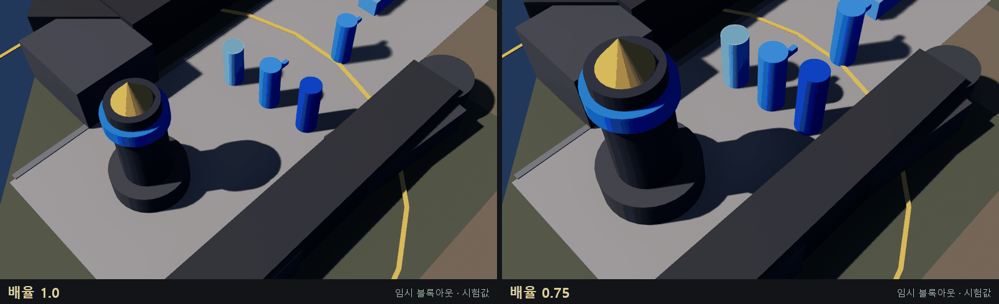
답변 완료계약자의 기준 표시 신장: 160, 180, 200cm
대표 답변기준 표시 신장 180cm 승인. 캐릭터별 체격 차이는 이 기준에서 조정합니다. (23:46 답변) 반영: 계약자의 기준 표시 신장을 180cm로 둡니다. 캐릭터와 무기의 치수 기준, 관전 지시서의 계산값을 180cm로 확정합니다.
- 질문
- 아래 그림에서 포탑 옆에 선 세 원기둥을 보시고 계약자의 기준 표시 신장을 정해 주시겠습니까? 왼쪽부터 160cm(옅은 파랑), 180cm(가운데, 앞에 막대가 달린 것), 200cm(짙은 파랑)입니다.
- 추천안과 이유
- 180cm를 추천합니다(M1 파일럿 한정의 시험값). 그림에서 180cm는 포탑과 분리벽 옆에서 묻히지 않으면서 길을 좁게 만들지 않습니다. 비교 화면 열 장의 계약자 대리 형상은 모두 180cm로 놓았습니다. 레벨 디자인의 검토 의견도 180cm입니다.
- 대안
- (가) 160cm: 전장이 넓어 보이지만 캐릭터의 존재감이 줄어듭니다. (나) 200cm: 캐릭터가 또렷하지만 포탑과 벽 옆에서 커 보입니다.
- 플레이 차이
- 경기 계산은 바뀌지 않습니다. 충돌 반경은 외부에서 들어올 계약자 자료가 정하고, 이 값은 화면에 그리는 키입니다.
- 구현·다른 설계 영향
- 기준 스켈레톤의 높이, 무기 길이, 머리 위 표시의 높이가 이 값을 따릅니다. 계약자마다의 체격 차이는 이 기준에서 가감합니다. M1 파일럿 한정이며 최종 캐릭터 모델이 들어온 뒤 다시 조정할 수 있습니다.
- 결정 시점
- 아트 파일럿의 캐릭터 블록아웃 치수를 잠그기 전. 배율 카드(ART-03A) 다음에 답해 주시면 됩니다.
- 숫자 상태
- 160, 180, 200cm는 비교용 후보이고 모두 시험값입니다. 원기둥의 지름 70cm도 임시값입니다. 그림은 대리 형상(원기둥은 계약자, 상자는 드론)을 놓은 임시 블록아웃입니다. 최종 그림이 아닙니다.
답변 완료기본 관전 카메라: 후보 A 대 B
대표 답변기본b. (22:28 답변) 반영: 기본 관전 카메라를 후보 B(내려다보는 각 50도, 화각 50도, 거리 3,100)로 합니다(M1 파일럿 한정의 시험값). 추천안과 같습니다.
- 질문
- 기본 관전 카메라를 후보 A(내려다보는 각 55도, 화각 45도, 거리 2,800)와 후보 B(50도, 화각 50도, 거리 3,100) 가운데 어느 쪽으로 할지 정해 주시겠습니까? 그림의 왼쪽이 A, 오른쪽이 B입니다.
- 추천안과 이유
- B를 추천합니다(M1 파일럿 한정의 시험값). 그림에서 A는 왼쪽 아래의 포탑과 위쪽의 레드 뒷줄이 화면 밖으로 잘리고, B는 블루 포탑, 양 팀 계약자 열 명, 드론 여섯 기, 강가까지 한 화면에 들어옵니다. A는 캐릭터가 더 크게 보입니다. 레벨 디자인의 검토 의견도 B입니다.
- 대안
- A: 캐릭터와 드론이 더 크고 또렷하지만 한 번에 보이는 전선이 좁습니다. 두 후보의 중간값으로 다시 찍어 보는 것도 가능합니다.
- 플레이 차이
- 경기 계산과 시야 공개 규칙은 바뀌지 않습니다. 관전 중 한 번에 읽을 수 있는 전선의 폭과 캐릭터의 크기가 달라집니다.
- 구현·다른 설계 영향
- 관전 화면의 기본 카메라 값, 아트 파일럿의 관전 크롭 검수 기준, 벽이 가릴 때의 표시 기준이 이 값을 따릅니다. M1 파일럿 한정이며 실제 관전 HUD와 최종 캐릭터 모델을 올린 뒤 다시 조정할 수 있습니다.
- 결정 시점
- 관전 화면의 카메라 구현과 아트 파일럿의 관전 크롭 검수 전.
- 숫자 상태
- 각도, 화각, 거리는 모두 시험값입니다. 화면 속 180cm 계약자의 높이는 A 약 85.5px, B 약 76.8px이며 그림에서 잰 값이 아니라 1920×1080 기준의 계산값입니다. 배율 1.0으로 찍었습니다. 관전 HUD를 겹친 화면은 아직 없습니다. 그림은 대리 형상(원기둥은 계약자, 상자는 드론)을 놓은 임시 블록아웃입니다. 최종 그림이 아닙니다.

답변 완료전술 광각 카메라: 후보 A 대 B
대표 답변광각 b. (22:28 답변) 반영: 전술 광각 카메라를 후보 B(65도, 화각 55도, 거리 6,200)로 합니다(M1 파일럿 한정의 시험값). 추천안과 같습니다.
- 질문
- 전술 광각 카메라를 후보 A(내려다보는 각 60도, 화각 50도, 거리 4,800)와 후보 B(65도, 화각 55도, 거리 6,200) 가운데 어느 쪽으로 할지 정해 주시겠습니까? 그림의 왼쪽이 A, 오른쪽이 B입니다.
- 추천안과 이유
- B를 추천합니다(M1 파일럿 한정의 시험값). 그림에서 A는 아래쪽 캠프의 절반이 잘리고, B는 구간 전체(포탑, 캠프, 정글 통로, 강 굽이, 양 팀의 대치)가 잘리지 않고 들어옵니다. 다만 B에서는 캐릭터가 매우 작습니다. 넓게 보는 용도이므로 범위를 우선했습니다. 레벨 디자인의 검토 의견도 B입니다.
- 대안
- A: 캐릭터가 B보다 크게 보여 진영과 방향을 읽기 쉽지만 구간의 일부가 화면 밖입니다. 두 후보의 중간값으로 다시 찍어 보는 것도 가능합니다.
- 플레이 차이
- 경기 계산과 시야 공개 규칙은 바뀌지 않습니다. 운영을 볼 때 한 화면에 들어오는 범위와 캐릭터를 알아보는 정도가 달라집니다.
- 구현·다른 설계 영향
- 관전 화면의 광각 카메라 값과, 멀리서 볼 때 캐릭터를 대신할 표시(아이콘 등)가 필요한지의 판단이 이 값을 따릅니다. M1 파일럿 한정이며 실제 관전 HUD를 올린 뒤 다시 조정할 수 있습니다.
- 결정 시점
- 관전 화면의 카메라 구현 전. 기본 관전 카드(ART-03C) 다음에 답해 주시면 됩니다.
- 숫자 상태
- 각도, 화각, 거리는 모두 시험값입니다. 화면 속 180cm 계약자의 높이는 A 약 38.6px, B 약 22.6px이며 그림에서 잰 값이 아니라 계산값입니다. 블록아웃이 미드 구간만 있어 그림의 가장자리는 빈 바탕입니다. 그림은 대리 형상(원기둥은 계약자, 상자는 드론)을 놓은 임시 블록아웃입니다. 최종 그림이 아닙니다.

답변 완료확대 카메라: 후보 A 대 B
대표 답변확대는 일단은도입하지말고 최대 확대는 맵배율 1.00 저기 보이는정도까지가 최대확대. (22:28 답변) 반영: 확대 카메라(후보 A, B)는 지금 넣지 않습니다. 추천안(후보 A)과 다른 결정입니다. 가장 가깝게 당긴 화면의 기준이 되는 그림은 배율 카드의 1.0 그림 두 장 가운데 어느 것인지 ART-03F로 한 번 더 여쭙니다.
- 질문
- 확대 카메라를 후보 A(내려다보는 각 35도, 화각 42도, 거리 1,100)와 후보 B(22도, 화각 38도, 거리 820) 가운데 어느 쪽으로 할지 정해 주시겠습니까? 그림의 왼쪽이 A, 오른쪽이 B입니다.
- 추천안과 이유
- A를 추천합니다(M1 파일럿 한정의 시험값). 그림에서 A는 대상 계약자의 전신과 둘레의 드론, 맞선 상대, 강가가 함께 들어와 경기 중의 확대 장면에 맞습니다. B는 계약자 한 명이 화면을 채워 인물과 무기를 따로 살펴볼 때에 가깝습니다. 레벨 디자인의 검토 의견도 A입니다.
- 대안
- B: 캐릭터와 무기의 세부가 가장 크게 보이지만 둘레의 상황이 덜 보입니다. 두 후보를 용도를 나눠 둘 다 두는 것도 가능합니다(경기 중 확대는 A, 인물 검수는 B).
- 플레이 차이
- 경기 계산과 시야 공개 규칙은 바뀌지 않습니다. 확대했을 때 캐릭터의 크기와 둘레 상황이 보이는 정도가 달라집니다.
- 구현·다른 설계 영향
- 캐릭터 모델과 무기의 세부를 어디까지 만들지(가까이에서 보이는 정도)의 기준이 이 값을 따릅니다. M1 파일럿 한정이며 최종 캐릭터 모델을 올린 뒤 다시 조정할 수 있습니다.
- 결정 시점
- 아트 파일럿의 캐릭터 세부 수준을 정하기 전. 다섯 장 가운데 마지막에 답해 주셔도 됩니다.
- 숫자 상태
- 각도, 화각, 거리는 모두 시험값입니다. 화면 속 180cm 계약자의 높이는 A 약 335px, B 약 567px이며 그림에서 잰 값이 아니라 계산값입니다. 이 두 장은 사거리 표시 원을 끄고 찍었습니다. 그림은 대리 형상(원기둥은 계약자, 상자는 드론)을 놓은 임시 블록아웃입니다. 최종 그림이 아닙니다.

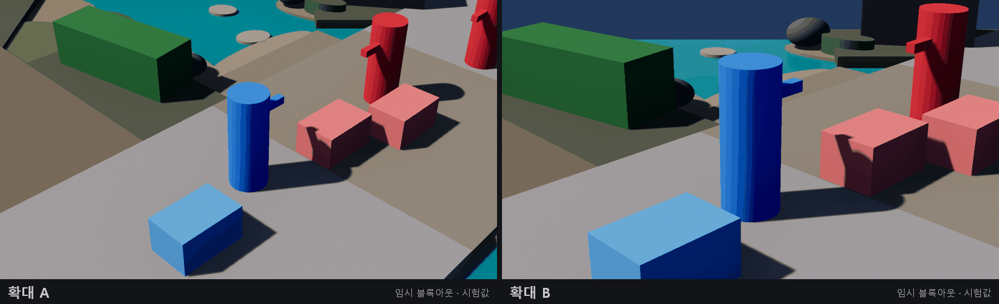
답변 완료가장 가깝게 당긴 관전 화면의 기준 그림 (한 글자 확인)
대표 답변캐릭터의 세부 모델 품질이 두드러지게 보일 정도의 근접 확대는 원하지 않습니다. 현재 확보할 수 있는 캐릭터 디테일 수준에 맞춰 최대 확대를 제한해 주세요. (23:46 답변) 반영: 선택지 가와 나 가운데 하나를 숫자로 확정하신 것이 아닙니다. 맵 배율 1.0, 기본 관전 B, 전술 광각 B는 그대로입니다. 선택지 나(거리 1,950)는 확정하지 않습니다. 선택지 가(거리 2,800) 수준을 먼저 시험 기준으로 삼고, 실제 캐릭터 모델을 넣은 뒤 실루엣과 무기 식별과 전투 가독성을 보고 가장 가까운 거리를 조정합니다. 가까이에서 감상하는 카메라는 지금 더하지 않습니다. 2,800은 시험값이며 확정값이 아닙니다.
- 질문
- 22:28에 "최대 확대는 맵배율 1.00 저기 보이는정도까지"라고 답해 주셨습니다. 배율 카드(ART-03A)에는 1.0 그림이 두 장 있고 카메라의 거리가 서로 다릅니다. 어느 그림의 정도를 뜻하셨는지 확인 부탁드립니다. 아래 그림의 왼쪽이 가, 오른쪽이 나입니다.
- 선택지 가: 첫째 그림(미드 길의 교전). 거리 2,800이고 기본 관전 후보 A와 같은 카메라입니다.
- 선택지 나: 둘째 그림(포탑과 분리벽 근처). 거리 1,950으로 더 가깝습니다. - 추천안과 이유
- 추천은 없습니다. 가리키신 그림을 추측하지 않으려고 여쭙니다. 참고로 고르신 기본 관전 B의 거리는 3,100입니다. 가를 고르시면 기본에서 조금만 더 당길 수 있고, 나를 고르시면 오른쪽 그림만큼 당길 수 있습니다.
- 대안
- 두 그림의 사이나 다른 정도를 원하시면 "가보다 조금 더 가깝게"처럼 알려 주십시오. 그 값으로 다시 찍어 보여 드리겠습니다.
- 플레이 차이
- 경기 규칙은 바뀌지 않습니다. 관전 화면을 가장 가깝게 당겼을 때의 거리만 달라집니다.
- 구현·다른 설계 영향
- 관전 카메라가 가장 가깝게 당겨지는 한계를 이 답으로 잠급니다. 확대 카메라(ART-03E의 후보 A, B)는 답하신 대로 지금 넣지 않습니다.
- 결정 시점
- 급하지 않습니다. 관전 카메라를 Unreal Engine 화면에 넣기 전까지 답해 주시면 됩니다. 한 글자(가 또는 나)로 충분합니다.
- 숫자 상태
- 거리 2,800과 1,950, 내려다보는 각 55도, 화각 45도는 비교 그림을 찍을 때 쓴 시험값입니다(M1 파일럿 한정). 그림은 대리 형상(원기둥은 계약자, 상자는 드론)을 놓은 임시 블록아웃입니다. 최종 그림이 아닙니다.

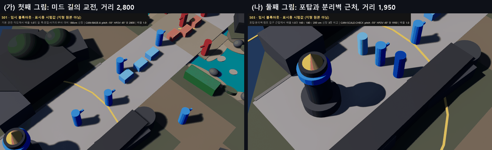
답변 완료미카엘 캐릭터 디자인 선택 (M-1~M-7)
대표 답변캐릭터 시안 시트와 스킬 시트를 나중에 주겠습니다. (20:26 답변) 반영: 일곱 항목을 고르는 대신 대표가 주실 시안 시트를 기다립니다. 받기 전에는 무채색 대리 형상만 준비하고 컨셉은 확정하지 않습니다.
- 질문
- 한손검·세이버 근접 균형형 계약자 미카엘의 외형 설정 7항목(M-1 성별·체형, M-2 주요 특징 1개, M-3 헤일로·날개 계열 모티프, M-4 검 종류와 왼손, M-5 복장 계열, M-6 고유 색, M-7 연령대 인상과 분위기)을 선택해 주시겠습니까?
- 추천안과 이유
- 설정 자체는 대표와 기획의 결정이며, 제작 가독성 관점의 추천만 함께 적습니다. M-2는 검과 대비되는 비대칭 어깨·팔 장구(가), M-4는 왼손 빈손(직검·세이버는 실루엣 비교), M-5는 초기 복장 제한 안의 전술복 또는 짧은 제복, M-6은 진영색(청 #3B82F6·적 #EF4444)·루멘 강조색(금 #F3C669)·세이라 색과 겹치지 않는 색을 권합니다. M-1(성별·체형), M-3(헤일로·날개 모티프), M-7(연령대 인상)은 제작 쪽 추천 없이 대표가 직접 정합니다.
- 대안
- 답변이 오기 전에는 중립 마네킹, 직검 대리 형상(왼손 빈손), 무릎 위 전술복 대리 형상, 무채색 블록아웃으로 비례와 실루엣 변형 3안만 먼저 준비하며 컨셉은 확정하지 않습니다.
- 플레이 차이
- 게임 판정 차이는 없으며, 관전 화면과 초상·로스터에서 미카엘을 알아보는 실루엣과 방향 가독성, 캐릭터 정체성이 결정됩니다.
- 구현·다른 설계 영향
- 미카엘 컨셉 시트(S1~S7) 작성, 공용 기준 바디 1종 유지 여부(세이라와 체형 차가 크면 기준 바디 2종으로 확대), 왼손 소켓(socket_weapon_l) 검수 범위, 헤일로 소켓과 '루멘 각성' 효과의 구분 방식이 결정됩니다.
- 결정 시점
- 아트 파일럿의 미카엘 컨셉 확정과 3D 제작 착수 전.
- 숫자 상태
- 무기군(WPN_1H_BLADE), 공용 골격·9클립·소켓 6종, 진영색(#3B82F6·#EF4444)·루멘 강조색(#F3C669)은 기존 확정값입니다. 외형 설정 7항목은 미정입니다.
| 번호 | 항목 | 선택지 | 제작 관점 추천안 | 미응답 시 임시 범위 |
|---|---|---|---|---|
| M-1 | 성별과 체형 | 남성형 / 여성형 / 중성적 체형 | 대표 결정(1단계는 기준 바디 1개 조정 우선 시험) | 중립 마네킹 |
| M-2 | 주요 특징 1개 | (가) 비대칭 어깨·팔 장구 / (나) 머리 위 / (다) 등 / (라) 하체 | (가): 검·팔과 같은 방향 단서 확보, 등 장식 가림 방지 | (가)(나)(다) 3안 비교 |
| M-3 | 헤일로·날개 모티프 | 쓰지 않음 / 헤일로만 / 등 쪽 장치까지 | 대표 결정(사용 시 상시 발광 축소·루멘 각성과 구분 필수) | 모티프 없이 진행 |
| M-4 | 검 종류와 왼손 | 직검·세이버 / 왼손: 빈손·소형 방패·보조 장비 | 왼손 빈손(9클립 범위 최소화), 직검·세이버는 실루엣 비교 | 직검 대리·왼손 빈손 |
| M-5 | 복장 계열 | 전술복 / 제복 / 그 밖 | 무릎 위·절개 있는 전술복 또는 짧은 제복(긴 코트·큰 소매 제외) | 무릎 위 전술복 대리 |
| M-6 | 고유 색 | 대표 지정 | 청·적 진영색, 금색 루멘 강조색, 세이라 색과 비겹침 권장 | 무채색 블록아웃 |
| M-7 | 연령대 인상·분위기 | 대표 지정 | 추천 없음 | 얼굴 없는 블록아웃 |
로스터 TOP 선수 3명의 시그니처 계약자. 변신·분신·독립 소환수 금지.
답변 완료세이라 캐릭터 디자인 선택 (S-1~S-8)
대표 답변캐릭터 시안 시트와 스킬 시트를 나중에 주겠습니다. (20:26 답변) 반영: 여덟 항목을 고르는 대신 대표가 주실 시안 시트를 기다립니다. 받기 전에는 무채색 대리 형상만 준비하고 컨셉은 확정하지 않습니다.
- 질문
- 총기 원딜 계약자 세이라의 외형 설정 8항목(S-1 성별·체형, S-2 총 종류, S-3 주요 특징 1개, S-4 보조 시각 요소, S-5 헤어 길이, S-6 복장 계열, S-7 고유 색, S-8 연령대 인상과 분위기)을 선택해 주시겠습니까?
- 추천안과 이유
- 설정 자체는 대표와 기획의 결정이며, 제작 가독성 관점의 추천만 함께 적습니다. S-2는 돌격소총(가) 또는 레일건(나)(중화기는 9클립 공용 자세 이탈 위험), S-3은 머리 쪽 형상(나: 헤어·바이저, 총 자체는 같은 무기군과 겹침), S-4는 파일럿에서 부유 무장 없음, S-5는 어깨 길이 이하(추가 본 없이 시험), S-6은 전술복 또는 짧은 제복, S-7은 진영색·루멘 강조색·미카엘 색과 겹치지 않는 색을 권합니다. S-1(성별·체형)과 S-8(연령대 인상)은 제작 추천 없이 대표가 정합니다.
- 대안
- 답변이 오기 전에는 중립 마네킹, 길이 가변 소총 대리 형상, 짧은 헤어 덩어리, 무릎 위 전술복 대리 형상, 무채색 블록아웃으로 비례와 실루엣 변형 3안만 먼저 준비하며 컨셉은 확정하지 않습니다.
- 플레이 차이
- 게임 판정 차이는 없으며(총구 이펙트만 소켓을 쓰고 투사체 판정은 코어가 계산), 원딜 실루엣·조준 방향 가독성과 미카엘과의 시각 구분이 결정됩니다.
- 구현·다른 설계 영향
- 세이라 컨셉 시트(S1~S7) 작성, 양손 총기 주손·보조 손 접점 검수, 헤어 추가 본 필요 여부, 부유 무장 무기군(WPN_FLOATING_ORB)과의 혼동 방지 범위에 영향을 줍니다.
- 결정 시점
- 아트 파일럿의 세이라 컨셉 확정과 3D 제작 착수 전.
- 숫자 상태
- 무기군(WPN_RIFLE_CANNON), 공용 골격·9클립·소켓 6종(총구 socket_muzzle 포함), 진영색·루멘 강조색은 기존 확정값입니다. 외형 설정 8항목은 미정입니다.
| 번호 | 항목 | 선택지 | 제작 관점 추천안 | 미응답 시 임시 범위 |
|---|---|---|---|---|
| S-1 | 성별과 체형 | 여성형 / 남성형 / 중성적 체형 | 대표 결정(1단계는 기준 바디 1개 조정 우선 시험) | 중립 마네킹 |
| S-2 | 총의 종류 | (가) 돌격소총 / (나) 레일건 / (다) 중화기 | (가) 또는 (나): 양손 조준 9클립 호환(중화기는 이탈 위험) | 소총 대리 형상 |
| S-3 | 주요 특징 1개 | (가) 총 자체 / (나) 머리 쪽(헤어·바이저) / (다) 어깨·등 / (라) 하체 | (나): 같은 무기군과 비겹침, 총·팔과 분리 | (나)(다)(라) 3안 비교 |
| S-4 | 보조 시각 요소 | 없음 / 있음(부유 무장·조준 장치) | 파일럿에서는 없음(부유 무장군·독립 개체 혼동 방지) | 없이 진행 |
| S-5 | 헤어 길이 | 짧음 / 어깨 길이 / 긴 머리 | 어깨 길이 이하(추가 본·물리 없이 파일럿 시험) | 짧은 덩어리 형상 |
| S-6 | 복장 계열 | 전술복 / 제복 / 그 밖 | 무릎 위·절개 있는 전술복 또는 짧은 제복 | 무릎 위 전술복 대리 |
| S-7 | 고유 색 | 대표 지정 | 청·적 진영색, 금색 루멘 강조색, 미카엘 색과 비겹침 권장 | 무채색 블록아웃 |
| S-8 | 연령대 인상·분위기 | 대표 지정 | 추천 없음 | 얼굴 없는 블록아웃 |
로스터 BOT 선수 5명의 시그니처 계약자. 총은 별도 에셋으로 분리해 주손 소켓에 부착.
답변 완료역할 아이콘 다섯 개(TOP, JGL, MID, BOT, SUP)의 그림 방향 선택
대표 답변첨부한 이미지대로 갑니다. (20:26 답변) 반영: 대표가 첨부한 다섯 아이콘 그림을 방향으로 삼아 다시 그립니다. A안과 B안은 쓰지 않습니다. 첨부 그림은 TOP이 왼쪽 위 모서리가 밝은 틀과 대각선, JGL이 틀 안의 엇갈린 두 날, MID가 가운데 마름모가 있는 대각선, BOT이 오른쪽 아래 모서리가 밝은 틀과 대각선, SUP가 날개 달린 방패 모양입니다. 아트 역할이 대기 중이어서 다시 그리는 작업은 재개할 때 첫 작업으로 둡니다. 더 빨리 필요하시면 알려 주세요. 대표가 첨부한 그림을 보관했습니다. 아트 역할이 다시 시작하면 그 그림을 기준으로 역할 아이콘을 다시 그립니다.
- 질문
- 역할 아이콘 다섯 개(TOP, JGL, MID, BOT, SUP)의 그림 방향을 A안(미러 시티에서의 자리를 본뜬 모양)과 B안(역할이 하는 일을 본뜬 모양) 중 어느 쪽으로 할까요?
- 추천안과 이유
- B안을 추천합니다. 아트와 UI/UX가 모두 B안을 추천합니다. 아이콘만 단독으로 보이는 자리(관전 화면의 이름표, 능력치로 정렬한 후보 선수 표)에서 다섯 개의 바깥 모양이 모두 달라 바로 구별됩니다. B안을 고르면 세 곳을 다듬습니다: TOP이 '맨 위로' 단추처럼 보이는 점, SUP가 신호 표시처럼 보이는 점, MID의 꺾쇠와 마름모 사이 간격입니다.
- 대안
- A안입니다. 지도와 대응하고 실제 크기에서 선이 가장 또렷합니다. 다만 BOT과 SUP의 바깥 모양이 같아서 단독으로 보일 때 구별하기 어렵습니다. A안을 고르면 SUP를 다시 그려야 합니다.
- 플레이 차이
- 경기 규칙의 차이는 없습니다. 화면에서 역할을 알아보는 속도가 달라집니다.
- 구현·다른 설계 영향
- 아이콘 다섯 개의 마무리 제작과 엔진 반입, 세 화면(사전 편성, 관전, 결과)의 역할 표시에 반영됩니다. 나머지 아이콘 13개에는 영향이 없습니다.
- 결정 시점
- 아이콘을 엔진에 반입하기 전.
- 숫자 상태
- 정할 수치가 없습니다. 아이콘 크기 16은 이미 승인된 값입니다.

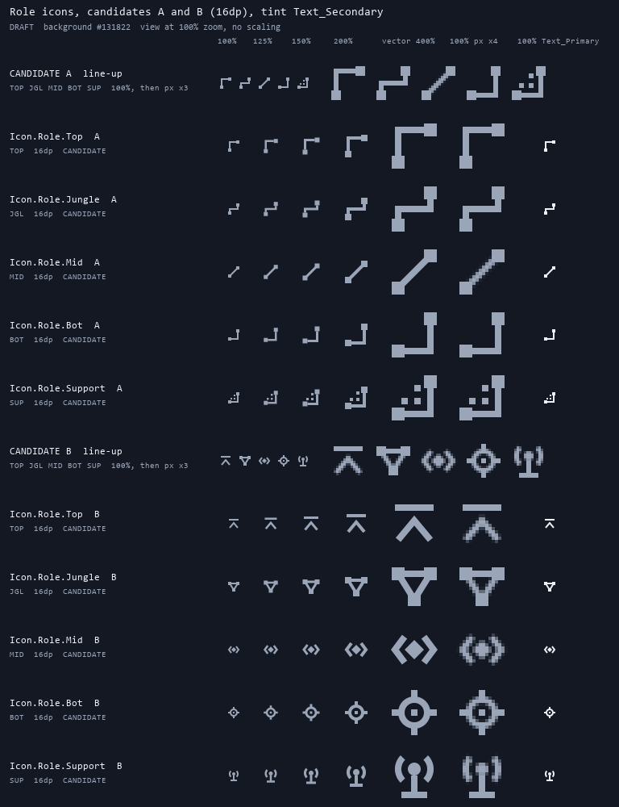
답변 완료공식전 편성 화면의 스크림 과제 칸: 슬롯마다 잠금 표시 대 접기
대표 답변B 승인. 스크림이 아닌 경기에서는 슬롯 안의 과제 칸을 접고, 사용 불가 이유는 상단에 한 번만 표시합니다. (23:46 답변) 반영: UI/UX가 규격을 B로 확정하고 UI 소스 작성이 출전·전술 화면을 고칩니다(지금 구현은 A입니다. 00:02 배정).
- 질문
- 공식전이나 솔로랭크처럼 스크림 과제를 쓰지 않는 경기의 출전·전술 화면에서, 다섯 역할 슬롯 안의 스크림 과제 칸을 어떻게 보일지 정해 주시겠습니까? M1 한정의 화면 배치이고 선택은 하나입니다. 첫째 그림의 왼쪽이 선택지 A, 오른쪽이 선택지 B입니다.
- 선택지 A(지금 구현): 슬롯마다 잠긴 과제 단추와 '공식전 편집 불가' 사유 줄을 그대로 보입니다.
- 선택지 B(추천): 스크림이 아닌 경기에서는 슬롯 안의 과제 단추와 사유 줄을 접고, 전술 구역의 머리글 한 곳에서만 사유를 한 줄로 알립니다. 스크림 경기에서는 둘째 그림처럼 과제 단추가 열립니다. - 추천안과 이유
- 선택지 B를 추천합니다(M1 한정). 그림에서 보이는 것만 적습니다. 선택지 A에서는 같은 잠금 단추와 같은 사유 줄이 다섯 번 되풀이되어, 높이 720의 창에서 슬롯이 두 개 반만 보입니다. 선택지 B에서는 같은 창에서 슬롯 네 개가 다 보입니다. 다만 이 폭(520)에서는 접더라도 다섯째 슬롯(SUP)은 스크롤해야 보입니다. 슬롯마다 잠긴 단추가 직접 보이는 쪽이 낫다고 보시면 선택지 A가 맞습니다. UI/UX의 추천도 선택지 B입니다.
- 대안
- 선택지 A는 추가 구현이 없고, 스크림 과제 기능이 있다는 것이 슬롯 안에서 바로 보입니다. 대신 공식전을 준비할 때마다 같은 잠금 문구가 다섯 번 보입니다.
- 플레이 차이
- 경기 규칙과 스크림 과제를 쓸 수 있는 경기의 범위는 바뀌지 않습니다(두 선택지 모두 스크림 경기에서만 과제를 고릅니다). 공식전을 준비할 때 한 화면에서 한눈에 보이는 슬롯의 수(두 개 반 대 네 개)만 달라집니다.
- 구현·다른 설계 영향
- 선택지 A는 지금 구현을 그대로 씁니다. 선택지 B는 슬롯 부품에 표시 조건 하나를 더하고 전술 구역의 머리글에 사유를 한 번 보입니다(경기 계약, 저장 형식, 문구의 수는 바뀌지 않습니다). 잘못된 과제 번호가 들어온 경우의 빨간 오류 표시는 선택지 B에서도 숨기지 않습니다.
- 결정 시점
- 급하지 않습니다. 지금 구현(선택지 A)이 빌드와 자동화 검사를 통과해 다른 작업을 막지 않습니다. 출전·전술 화면의 조립을 마무리하기 전에 답해 주시면 됩니다.
- 숫자 상태
- 게임 수치는 없습니다. 창 크기 1280x720과 슬롯 열의 폭 520은 비교를 위해 잡은 시험값입니다. 슬롯 하나의 높이(선택지 A 약 226px, 선택지 B 약 159px)는 캡처에서 잰 값이고, 정식 글꼴을 넣기 전의 대체 글꼴 기준입니다. 정식 글꼴, 표시 배율 125%와 150%, 더 넓은 폭에서의 모습은 아직 확인하지 않았습니다. 그림의 글자는 모두 표본입니다.

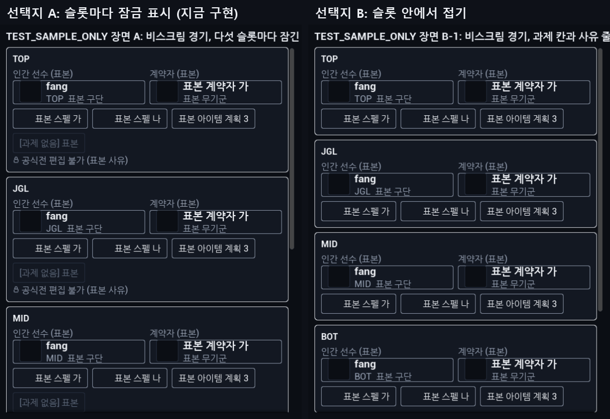

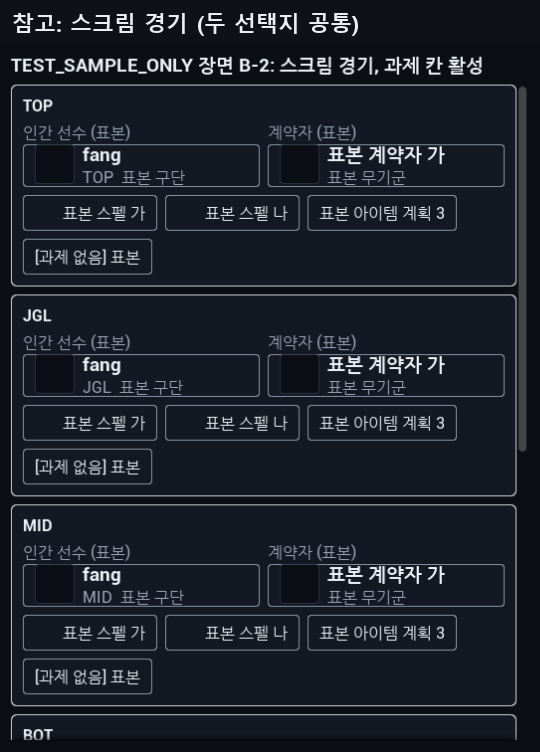
답변 완료출전·전술 화면의 첫 조립: 이 배치로 이어 갈까요
대표 답변11-25 18:49 대표: "대표결정탭에 UI시안저거는왜아직도남아있나". 총괄의 반영: 닫습니다. 이 카드의 배치(11-22의 첫 조립)는 쓰지 않습니다. 출전·전술 화면은 11-25 16:26의 말씀대로 대표의 시안 디자인에 설계서의 값을 담아 다시 설계하는 중이며(UI-12와 UI-13의 답), 화면이 서면 실제 그림으로 보여 드립니다. 총괄의 잘못: 11-22에 보류라고 적은 채 결정 필요 탭에 두었고, 16:26에 시안을 받고도 닫지 않았습니다.
- 질문
- (05:16 보류, 06:21 유지) UI-04가 선택지 A로 정해졌습니다(선발을 고른 뒤 실제로 차례대로 고르는 밴픽). 이 카드의 배치는 승인으로 치지 않고 보류로 둡니다. 지금은 고르지 않으셔도 됩니다. 선발을 고르는 화면과 밴픽 화면으로 다시 설계해 새 카드로 올립니다. 아래는 그 전의 글입니다.
M1의 세 화면 가운데 첫째인 출전·전술 화면을 실제 부품으로 처음 조립했습니다. 아래 그림이 그 화면입니다(공식전, 준비 완료 상태, 창 크기 1280x720). 왼쪽은 다섯 역할 슬롯, 오른쪽은 후보 선수와 비교 구역, 아래는 검증 상태와 시작 단추입니다. 이 배치로 이어 가도 될지, 고칠 곳이 있으면 알려 주십시오.
그림에서 아직 진짜가 아닌 것: 대회와 구단과 선수와 계약자의 이름(번호와 자리표시로 보입니다), 계약자·스펠·계획을 고르는 목록(칸을 눌러도 아직 열리지 않습니다), 'FullSim', 'OfficialWorld' 같은 내부 표기, '아이템 적립 계획'이라는 옛 글. 자료는 모두 표본입니다. - 추천안과 이유
- 이 배치로 이어 가는 것을 추천합니다. UI/UX의 화면 규격대로 놓였고 자동화 검사 8건(화면의 흐름, 편집, 문제 표시, 규칙, 폭)이 통과했습니다. 이름과 목록이 보이지 않는 것은 화면이 아니라 계약 문서의 빈 곳이라 총괄이 채웁니다. 내부 표기와 빠진 문구는 UI/UX와 글 콘텐츠 검수가 채웁니다.
- 대안
- 고칠 곳을 알려 주시면 UI/UX가 규격을 고치고 다시 조립합니다. 예: 슬롯의 크기와 순서, 후보 목록의 자리, 시작 단추의 자리.
- 플레이 차이
- 경기 규칙과는 무관합니다. 경기 전에 선수와 계약자를 고르는 화면의 생김새입니다.
- 구현·다른 설계 영향
- 이 배치를 기준으로 이름과 목록의 연결, 고르는 팝업, 결과 화면과 관전 화면의 조립을 이어 갑니다. 스크림 과제 칸의 표시(UI-01)는 지금 구현(선택지 A)으로 조립했고 답에 따라 바꿉니다.
- 결정 시점
- 보류했습니다. 두 단계 흐름의 설계가 나오면 새 카드로 올립니다.
- 숫자 상태
- 게임 수치는 없습니다. 그림의 번호와 글자는 모두 표본입니다. 창 크기 1280x720에서 찍었고, 정식 글꼴과 표시 배율 125%, 150%는 아직 확인하지 않았습니다. 실제 화면을 총괄이 직접 띄워 보는 확인도 아직 하지 않았습니다.

답변 완료출전·전술 화면을 밴픽 화면으로: 말씀의 범위 확인 (첫 질문)
대표 답변"UI-04 A: 인간 선수 선발 5명을 먼저 정한 뒤, 양 팀이 실제 차례에 따라 계약자를 선택하는 밴픽으로 진행합니다. 상대 선택을 보고 대응하는 실제 경기 준비 과정으로 구현해 주세요." (06:21의 답) 반영: 선택지 A. 경기 전을 선발을 고르는 화면과 실제로 차례대로 고르는 밴픽 화면의 두 단계로 다시 짭니다. 화면의 모양만 바꾸는 선택지 B는 쓰지 않습니다. UI-02는 보류로 둡니다. 말씀대로 기존 문서를 먼저 대조했습니다. 문서가 이미 정한 것: 밴픽 모드 넷(일반, 오버히팅, 소프트 피어리스, 하드 피어리스), 한 세트의 열 픽은 겹치지 않음, M1은 계약자 10명과 밴 없음으로 시작, 저장 형식에 밴과 픽을 차례대로 적는 자리와 다음 차례의 구단을 적는 자리가 있음. 지금의 화면 계약은 내 구단의 다섯 칸을 자유로 고치고 시작과 함께 굳히는 방식이라 차례 진행이 없습니다. 문서에 없는 것: 픽의 차례, 고른 계약자를 선수에게 주는 방식(교환), 차례의 시간 제한, 상대 구단이 고르는 판단, 전술 스펠과 아이템 계획과 팀 전술을 정하는 자리. 이 가운데 실제로 정하셔야 하는 것을 06:53에 카드 셋으로 올렸습니다(UI-05 차례, UI-06 배정의 때, UI-07 시간 제한). 총괄의 기본값은 UI-08에 모았습니다. 밴의 수와 세부 순번과 시간 제한을 총괄이 임의로 정하지 않습니다. 말씀하신 '20명 풀·팀당 2밴 목표'는 저장소의 문서에서 찾지 못해 BASE-02에서 여쭙니다. 채택은 정본과 코드와 실행 검증의 완료가 아닙니다. 남은 것: 차례 진행의 계약(화면과 서비스 사이, 저장), 상대 구단의 선택 판단, 두 화면의 설계와 구현, 실제 진행의 검증.
- 질문
- 04:57~05:01 사이에 주신 말씀입니다: "그리고 출전전술 ui개에반게 밴픽화면으로나와야지 선발선수는 그전에 뽑고 선발뽑았으면 픽하고 밴픽하는단계에서는 롤 밴픽화면처럼나와야지".
이 말씀대로 경기 전의 흐름을 다시 짭니다. 다만 무엇까지가 이번 범위이고 무엇이 되면 끝난 것인지가 글에 없어, 짐작으로 만들지 않고 한 번에 한 가지씩 여쭙습니다(04:55~04:57 사이에 주신 지시의 절차입니다). 이 카드가 첫 질문입니다.
총괄이 읽은 뜻: 경기 전을 두 단계로 나눕니다. 먼저 선발 다섯 명을 고르는 화면, 그다음에 리그 오브 레전드의 챔피언 선택 화면처럼 두 팀이 좌우에 서고 가운데에서 계약자를 차례로 고르는 밴픽 화면입니다. 지금처럼 편성표 한 장에서 칸마다 계약자를 지정하는 방식은 버립니다. 이 읽기의 확신은 60%쯤입니다. 모르는 것: 밴픽을 실제로 차례대로 진행하는 것인지, M1에 금지(밴)를 넣는지, 전술 스펠과 아이템 계획과 팀 전술을 어느 단계에서 정하는지, 무엇이 보이면 끝난 것으로 치시는지.
첫 질문: 밴픽 단계는 상대 구단도 그 자리에서 번갈아 고르고 고른 계약자가 차례대로 드러나는 '실제 진행'을 뜻하십니까, 아니면 진행은 지금처럼 두고 화면의 모양만 그 화면처럼 바꾸는 것입니까?
- 선택지 A: 실제 진행입니다. 정해진 차례에 따라 두 구단이 번갈아 고르고, 상대의 선택은 그 차례에 드러납니다.
- 선택지 B: 모양만 바꿉니다. 내 구단의 다섯 계약자를 자유로운 순서로 고르되 화면의 배치만 밴픽 화면처럼 합니다. 상대 구단의 선택이 언제 보이는지는 지금 화면의 규칙 그대로 둡니다. - 추천안과 이유
- 선택지 A로 짐작합니다. '밴픽하는 단계'라고 하셨고 선발을 '그 전에' 뽑는다고 순서를 말씀하셨기 때문입니다. 계약 문서에도 밴과 픽을 차례대로 적는 자리(다음 차례의 구단, 선택의 순번)가 이미 있어 방향이 같습니다. 짐작이 틀렸으면 B라고만 답해 주셔도 됩니다.
- 대안
- B의 경우: 새 규칙 없이 화면의 구조만 바꾸면 됩니다. 상대 구단이 고르는 판단과 차례의 규칙을 만들지 않아도 되어 가장 빨리 끝납니다. 대신 상대의 선택을 보고 맞받아 고르는 일은 없습니다.
- 플레이 차이
- A: 감독이 상대의 선택을 보고 다음 계약자를 고릅니다. 상대 구단도 내 선택을 보고 고릅니다. B: 지금처럼 내 편성을 미리 짜 두는 방식이고 보이는 모양만 달라집니다.
- 구현·다른 설계 영향
- A: 화면만이 아니라 새 규칙이 필요합니다(차례의 순서, 상대 구단이 고르는 판단, 시간 제한을 둘지, 고른 뒤 선수끼리 계약자를 바꿀 수 있는지). 새 규칙은 설계 검토를 거쳐 따로 올립니다. 그리고 기존 문서는 "M1은 10명 무밴 테스트로 시작한다"고 적고 있습니다. 계약자 10명을 두 팀이 다섯씩 고르면 남는 계약자가 없어 금지할 수 없습니다. 금지 단계를 지금 넣을지는 다음 질문으로 여쭙습니다. B: 화면 설계와 화면 코드만 바뀝니다. 어느 쪽이든 UI-02(지금 배치로 이어 갈지)는 보류하고, 선발을 고르는 화면과 밴픽 화면의 두 장으로 다시 설계합니다.
- 결정 시점
- 출전·전술 화면의 배치 작업이 이 답을 기다립니다. 다른 작업은 계속합니다. 답하신 뒤 다음 질문을 하나 더 드리고, 뜻이 맞춰지면 정리한 글을 확인받은 다음에 설계와 구현을 배정합니다.
- 숫자 상태
- 숫자는 없습니다. 확신 60%는 총괄의 어림입니다. 계약자 10명과 금지 없음은 기존 문서의 M1 범위입니다.
답변 완료밴픽: 두 팀이 계약자를 고르는 차례
대표 답변"픽순서 블1 레2 블2 레2 블2 레1이맞아" (07:41의 답) 반영: 선택지 A. 블루 1명, 레드 2명, 블루 2명, 레드 2명, 블루 2명, 레드 1명의 여섯 차례로 고릅니다. 채택은 계약과 코드와 실행 검증의 완료가 아닙니다. 남은 것: 차례 진행의 계약(화면과 서비스 사이, 저장), 상대 구단의 선택 판단, 밴픽 화면의 설계와 구현, 실제 진행의 검증.
- 질문
- UI-04 A(선발을 정한 뒤 실제로 차례대로 고르는 밴픽)를 만들려면 두 팀이 고르는 차례가 정해져야 합니다. 기존 문서에는 한 세트의 열 선택이 겹치지 않는다는 것과 선택을 차례대로 적는 자리만 있고, 누가 몇 번째에 몇 명을 고르는지는 없습니다. 06:21의 말씀대로 총괄이 임의로 정하지 않고 여쭙습니다. 문서 대조에서 남은 물음은 이 카드와 UI-06, UI-07의 셋입니다. 나머지는 UI-08에 총괄의 기본값으로 모았습니다.
- 추천안과 이유
- A. 블루 1명, 레드 2명, 블루 2명, 레드 2명, 블루 2명, 레드 1명의 여섯 차례입니다(열 선택). 리그 오브 레전드의 드래프트가 쓰는 차례입니다(블루가 먼저 하나를 고르고 그 뒤로 두 팀이 둘씩 번갈아 고름. 대회 방식도 밴 단계를 빼면 같은 순서). 먼저 고르는 쪽은 가장 원하는 하나를 가져가고, 나중에 고르는 쪽은 마지막 선택에서 상대의 다섯을 모두 보고 고릅니다. 근거: 말씀하신 '롤 밴픽화면처럼'에 따라 리그 오브 레전드의 방식을 그 게임의 위키(Team drafting 문서, 2026-11-22 확인)에서 확인했습니다. 다른 게임의 방식이며 이 게임의 균형을 보장하지 않습니다.
- 대안
- B. 한 명씩 번갈아 열 차례(블루, 레드, 블루, 레드 순서): 단순하지만 매 차례 먼저 고르는 쪽이 같아 유리함이 한쪽에 쌓입니다. C. 다섯 명씩 한 번에(블루 다섯 뒤 레드 다섯): 대응이 한 번뿐이라 채택하신 뜻(상대 선택을 보고 대응)이 약해집니다.
- 플레이 차이
- A에서는 감독이 차례마다 '지금 둘을 묶어 가져갈지, 상대의 다음 둘을 막을지'를 판단합니다. 마지막 한 자리를 가진 레드는 상대 조합을 다 보고 맞춤 선택을 하고, 블루는 첫 선택의 우선권을 가집니다. B는 판단이 매번 한 명 단위라 묶음 선택의 수 싸움이 없습니다. C는 사실상 한 팀이 먼저 다 보여 주는 방식입니다.
- 구현·다른 설계 영향
- 사전 편성의 저장 형식에는 선택을 차례대로 적는 자리와 다음 차례의 구단을 적는 자리가 이미 있습니다. 화면과 서비스 사이의 계약에 차례 진행을 더해야 하고(총괄), 서비스의 상태 진행(구단·대회·저장), 상대 구단의 선택 판단(경기 코어·AI), 밴픽 화면의 설계와 구현이 이 차례를 씁니다. 어느 구단이 블루인지를 정하는 기존 규칙은 바꾸지 않습니다.
- 결정 시점
- 지금. 차례 진행의 계약을 고치기 전에 필요합니다. 셋 가운데 이 카드가 가장 먼저입니다.
- 숫자 상태
- 차례(1, 2, 2, 2, 2, 1)는 최종 확정 요청입니다. 밴은 M1에서 0입니다(계약자 10명, 문서의 기존 결정. UI-08의 1번).
답변 완료밴픽: 고른 계약자를 어느 선수가 쓸지 정하는 때
대표 답변"선수배정 선발5명 포지션 고정시키고 못바꿔 그리고 후보만 있는형태" (07:41의 답) 반영: 선발 다섯 명과 그 포지션은 고정이고 밴픽 중에 바꾸지 않습니다. 고른 계약자는 고르는 순간 한 포지션의 선발 선수에게 정해지고, 열 선택이 끝난 뒤에 다시 나누거나 서로 바꾸지 않습니다. 카드의 선택지로는 B에 가장 가깝습니다. 총괄의 짐작(A)과 다른 답입니다. 총괄이 뜻을 넓게 읽었던 것이므로 설계를 고쳐 잡습니다: 수 싸움은 고르는 차례와 상대 선택에 대한 대응에 두고, 배정을 숨기거나 나중에 바꾸는 요소는 두지 않습니다. 고르는 순간 어느 포지션에 넣을지를 감독이 고르는 것으로 읽었습니다(UI-08의 7번, 교정 대상). '그리고 후보만 있는형태'는 뜻이 하나로 읽히지 않아 추측하지 않고 UI-09에서 여쭙니다. 채택은 계약과 코드와 실행 검증의 완료가 아닙니다.
- 질문
- 계약자를 고르는 순간에 그 계약자를 쓸 선수까지 정할지, 열 선택이 끝난 뒤에 다섯 선수에게 나눌지 정해 주십시오. 기존 문서에 없습니다. 이 카드는 총괄이 UI-04의 뜻을 바르게 읽었는지의 확인도 겸합니다. 총괄의 짐작: 채택하신 뜻이 '상대 선택을 보고 대응하는 실제 경기 준비'이므로 A를 고르실 것으로 봅니다. 답이 다르면 총괄이 목표를 잘못 읽은 것이므로 밴픽의 설계를 다시 잡습니다.
- 추천안과 이유
- A. 고를 때는 구단의 선택으로만 적고, 열 번째 선택 뒤의 확정 단계에서 다섯 선수에게 나눕니다. 상대는 확정 전까지 어느 선수가 그 계약자를 쓰는지 알 수 없습니다. 여러 자리에 쓸 수 있는 계약자를 먼저 고르고 상대의 선택을 본 뒤 자리를 정하는 수 싸움이 생깁니다. 리그 오브 레전드에서 선택을 모두 마친 뒤의 확정 단계에 같은 팀 선수끼리 챔피언을 바꾸는 것과 결과가 같습니다. 근거: 말씀하신 '롤 밴픽화면처럼'에 따라 리그 오브 레전드의 방식을 그 게임의 위키(Team drafting 문서, 2026-11-22 확인)에서 확인했습니다. 다른 게임의 방식이며 이 게임의 균형을 보장하지 않습니다.
- 대안
- B. 고르는 순간 선수를 정하고 바꾸지 못합니다: 화면이 단순하고 상대의 배치가 바로 읽히지만, 뒤의 선택을 보고 자리를 바꾸는 대응이 없습니다. C. 고르는 순간 선수를 정하되 확정 단계에서 바꿀 수 있습니다: 결과는 A와 같고, 선택하는 동안 화면에 임시 배정이 보입니다(상대의 임시 배정도 보임).
- 플레이 차이
- A와 C에서는 감독이 열 선택을 다 본 뒤 맞대결을 보고 자리를 정합니다. A는 상대의 자리를 확정 전까지 모르고, C는 임시 배정이 보여 읽을 거리가 하나 더 생깁니다. B에서는 먼저 고른 쪽의 자리가 고정되어 뒤에 고르는 쪽이 맞대결을 골라 잡습니다.
- 구현·다른 설계 영향
- A와 C는 사전 편성의 계약에 '선택은 구단 단위, 배정은 확정 단계'를 적습니다. 상대 구단의 판단도 같은 규칙으로 고르고 나눕니다. B는 지금의 계약(자리마다 선수와 계약자를 함께 적음)에 가깝습니다. 어느 쪽이든 선발 다섯 명과 그 포지션은 밴픽 전에 정해져 있습니다(UI-04 A).
- 결정 시점
- 지금. UI-05와 함께 차례 진행의 계약에 들어갑니다. 이 답을 받은 뒤 밴픽의 의도 문서를 적고 구현을 배정합니다.
- 숫자 상태
- 수치 없음.
답변 완료밴픽: 차례마다의 시간 제한
대표 답변"밴픽제한시간은 게임시작할때설정하거나 게임중간에 설정에서설정가능" (07:41의 답) 반영: 카드의 두 선택지와 다른 새 결정입니다. 제한 시간은 사용자가 정하는 설정으로 두고, 게임을 시작할 때 정하며 진행 중에도 설정에서 바꿀 수 있게 합니다. 고를 수 있는 값, 기본값, 시간이 다 됐을 때의 처리는 말씀에 없어 총괄의 시험값을 UI-08의 6번에 적었습니다(교정 대상). 채택은 계약과 코드와 실행 검증의 완료가 아닙니다. 남은 것: 게임 시작 화면과 설정 화면의 항목, 시간이 다 됐을 때의 처리와 그 시험.
- 질문
- 고르는 차례마다 시간 제한을 둘지 정해 주십시오. 기존 문서에 없고, 06:21의 말씀대로 총괄이 임의로 정하지 않습니다.
- 추천안과 이유
- A. M1에서는 두지 않습니다. 상대가 사람이 아니어서 기다리게 할 상대가 없고, 시간 제한을 두면 시간이 다 됐을 때 무엇을 자동으로 고르는지의 규칙을 새로 정해야 합니다. 대회의 긴장감은 뒤의 단계에서 선택 사항으로 더할 수 있습니다.
- 대안
- B. 차례마다 30초를 두고, 다 되면 정해 둔 기준으로 자동 선택합니다: 리그 오브 레전드의 드래프트가 차례마다 30초를 씁니다. 긴장감이 생기지만 자동 선택의 기준, 일시 정지와 저장의 처리, 남은 시간의 표시가 따라옵니다.
- 플레이 차이
- A에서는 감독이 상대의 선택을 보고 충분히 따져 고릅니다(경기 준비를 차분히 하는 플레이). B에서는 시간 안에 판단해야 하고, 늦으면 원하지 않는 계약자가 정해질 수 있습니다.
- 구현·다른 설계 영향
- A는 더할 규칙이 없습니다. B는 시간이 다 됐을 때의 처리와 그 시험, 화면의 시간 표시가 필요합니다.
- 결정 시점
- 밴픽 화면의 설계 전. UI-05와 UI-06 다음입니다.
- 숫자 상태
- 30초는 다른 게임의 값을 옮긴 시험값입니다. A는 M1 한정이며 뒤의 단계에서 다시 정할 수 있습니다.
답변 완료밴픽: 문서에 없던 나머지의 기본값 (총괄이 정해 진행, 교정 대상)
대표 답변11-25 16:36에 대표의 검토 의견(총괄 결정 보고 26건의 서면 대조)을 받았고, 18:49의 말씀 "내가 26건남아있을때 토론해서보냈는데 아직도남아있네"에 따라 닫습니다. 검토에서 짚으신 것은 17:40에 해당 카드의 본문에 반영했고 항목별 답은 REVIEW-00부터 REVIEW-06에 있습니다. 검토 의견은 새 승인이나 수치 확정이 아니라고 적어 주셨으므로, 승인이 아니라 검토를 마친 보고로 닫습니다. 카드에 적은 내용은 그대로 진행하며, 고칠 곳은 언제든 말씀해 주십시오. 총괄의 잘못: 검토를 받은 뒤에도 보고 탭에 그대로 두었습니다.
- 질문
- UI-04 A를 만들려면 정해져야 하는데 기존 문서에 없던 것 가운데, 총괄이 기본값으로 정해 진행하는 것입니다. 답이 없어도 이대로 진행하며, 틀린 곳은 교정해 주십시오.
1. 밴: M1에서는 0입니다. M1의 계약자는 10명이고 한 세트의 열 선택은 겹치지 않으므로, 하나라도 밴을 하면 열 자리를 채울 수 없습니다. 기존 문서의 결정(M1은 10명, 밴 없음)과 같습니다. 화면에는 밴의 자리를 두되 M1에서는 비워 둡니다. 계약자가 늘어 밴이 가능해지면 밴의 수와 차례를 따로 여쭙니다. 말씀하신 20명 풀과 팀당 2밴 목표의 근거는 BASE-02에서 여쭈었습니다.
2. 상대의 선택은 그 차례가 끝나는 순간 보입니다. 보여야 대응할 수 있기 때문입니다.
3. 전술 스펠, 아이템 계획, 팀 전술은 열 번째 선택 뒤의 확정 단계에서 정합니다. 고르는 동안에는 정하지 않습니다.
4. 확정 단계에서 시작을 누르면 편성이 굳고 경기로 넘어갑니다(지금의 계약과 같습니다).
5. 상대 구단이 무엇을 고르는지의 판단은 경기 코어·AI에 설계를 맡깁니다. 공개된 정보(남은 계약자, 두 팀의 선택)만 쓰게 합니다.
6. 제한 시간의 설정(07:41의 답에 따름): 게임을 시작할 때 정하고 진행 중에는 설정에서 바꿉니다. 고를 수 있는 값은 없음, 30초, 60초, 90초이고 기본값은 없음입니다(모두 시험값). 시간은 차례마다 잽니다. 시간이 다 되면 그 차례에 남은 선택마다, 고르려고 가리켜 둔 계약자가 있으면 그 계약자가 정해지고, 없으면 남은 계약자 가운데 목록의 첫째가 비어 있는 포지션의 위쪽부터 정해집니다(시험값). 진행 중에 바꾼 값은 다음 밴픽부터 씁니다.
7. 고르는 순간 감독이 그 계약자를 넣을 포지션(아직 비어 있는 선발)을 함께 고릅니다. 정한 뒤에는 바꿀 수 없습니다(07:41의 답을 총괄이 읽은 것). 8. 데려갈 후보(10:13 계약에 적음): 후보는 시리즈의 등록 명단이며, M1에서는 사용자가 후보를 골라 데려가는 요청을 두지 않습니다. 선발 화면에 함께 보이고, 교체는 2세트부터의 선발 단계에서 합니다(총괄의 읽기, 교정 대상). 9. 상대 구단의 선택(10:40에 만들고 10:44에 주 가지에 넣음): M1에서는 빈 포지션을 위쪽(탑, 정글, 미드, 원딜, 서포터)부터 채우고, 남은 계약자 가운데 하나를 경기마다 정해진 난수로 고릅니다. 계약자의 역할 정보가 아직 없어(외부 입력 대기) 역할에 맞춰 고르지는 않습니다. 역할 정보가 들어오면 역할이 맞는 계약자를 먼저 고르게 바꿀 수 있습니다(총괄의 M1 선택, 교정 대상). 10. 진영 선택(11:17에 계약에 넣음): 진영 선택권을 가진 구단(1세트는 홈 구단, 2세트부터는 직전 세트의 패배 구단)이 사용자 구단이면 선발 단계에서 블루나 레드를 직접 고릅니다. 앞서 M1에서는 이 선택 창을 두지 않고 선택권 구단을 블루로 정했는데, 대표 결정(OD-14)대로 고를 수 있게 바꿨습니다. 고르지 않고 선발을 마치면 그때처럼 선택권 구단이 블루입니다(M1 한정). - 추천안과 이유
- 이대로 진행합니다. 1번은 기존 문서의 결정을 그대로 따른 것이고, 2번부터 5번까지는 차례대로 고르는 방식이 성립하려면 필요한 최소한입니다.
- 대안
- 1번의 대안은 계약자 풀을 늘린 뒤 밴을 넣는 것입니다(계약자 카탈로그가 먼저 필요합니다). 3번의 대안은 고르는 동안에도 스펠과 계획을 고치게 하는 것입니다(화면이 복잡해집니다).
- 플레이 차이
- M1의 밴픽은 밴 없이 열 선택만 차례대로 합니다. 감독은 상대의 선택을 차례마다 보고, 열 선택이 끝난 뒤 스펠과 계획과 전술을 한 번에 정합니다.
- 구현·다른 설계 영향
- 사전 편성의 계약과 저장 형식에는 밴을 적는 자리가 이미 있어 M1에서는 0개로 둡니다. 2번부터 4번은 화면과 서비스 사이의 계약에 적습니다.
- 결정 시점
- 10:13에 계약에 적었습니다(C-47, 보완 10:18): 화면과 서비스 사이의 요청 둘(선택 시작, 한 번의 선택), 차례 표, 세 단계(선발, 선택, 확정), 저장의 검사, 상대 구단의 선택 판단의 입력과 출력. 서비스는 10:20에 구단·대회·저장에 배정했습니다. 상대 구단의 선택 판단은 10:40에 완료되어 10:44에 주 가지에 넣었습니다. 서비스는 11:12에 주 가지에 들어왔습니다. 진영 선택 요청은 11:17에 계약에 넣고 11:19에 구단·대회·저장에 배정했습니다. 11:33에 1세트의 홈 구단도 선택권자임을 계약 문장에 맞췄고, 진영 선택의 서비스는 11:44에 주 가지에 들어왔습니다.
- 숫자 상태
- 밴 0은 M1 한정입니다(기존 결정). 제한 시간의 값(없음, 30초, 60초, 90초)과 기본값(없음)과 시간이 다 됐을 때의 처리는 시험값입니다.
답변 완료밴픽: 답의 한 구절 '후보만 있는형태'의 뜻 확인
대표 답변"그냥 후보라는 기능은있고 실제로 esports에서도 잘안쓰거든? 그래서 선발에서 후보데려가고 이제 세트끝나고 다음세트들어갈때 정하는형식으로 구현해놔" (07:58의 답) 반영: 카드의 A에 가깝고, 교체의 때가 더 정해졌습니다. 후보 선수는 선발을 정하는 단계에서 함께 데려가고(시리즈에 등록), 후보와의 교체는 한 세트가 끝나고 다음 세트에 들어갈 때 정합니다. 밴픽 중에는 선발도 포지션도 바꾸지 않습니다. 기존 결정(세트 사이의 후보 교체 허용, 시리즈를 시작할 때의 등록 후보 명단)과 같은 방향이라 새 규칙을 만들지 않고 그 계약에 화면을 잇습니다. 후보의 비중은 크게 두지 않습니다(말씀 그대로). '구현해놔'라고 하셨으므로 뜻을 더 여쭙지 않고 의도 문서를 적은 뒤 계약 보정과 구현 배정으로 넘어갑니다. 총괄이 정한 나머지(UI-08)는 교정 대상으로 그대로 둡니다. 채택은 계약과 코드와 실행 검증의 완료가 아닙니다.
- 질문
- 07:41의 답 가운데 "그리고 후보만 있는형태"의 뜻이 하나로 읽히지 않아, 추측으로 만들지 않고 여쭙습니다. 앞 구절(선발 다섯 명의 포지션은 고정이고 바꾸지 않음)은 그대로 반영했습니다. 지금의 가설은 A이고 확신은 60%쯤입니다. '선발'과 짝이 되는 말이 '후보'라서 그렇게 읽었습니다.
- 추천안과 이유
- A로 읽었습니다. 경기에 나서는 것은 포지션이 고정된 선발 다섯 명이고, 그 밖에는 후보 선수만 있는 구조라는 뜻입니다. 밴픽 화면의 내 구단 쪽에는 선발 다섯 칸만 포지션 순서로 두고, 후보 선수는 선발을 정하는 앞 화면에서만 다룹니다. 밴픽에 들어간 뒤에는 선발도 포지션도 바꾸지 않습니다.
- 대안
- B. 밴픽 중에 바꿀 수 있는 것은 후보 선수와의 교체뿐이라는 뜻입니다(선발끼리 포지션을 바꾸는 것은 안 되고, 선발 한 명을 후보 선수와 바꾸는 것은 됨). C. 밴픽 화면에는 고를 수 있는 계약자 후보의 목록만 둔다는 뜻입니다(스펠, 아이템 계획, 전술 같은 다른 조작은 이 화면에 두지 않음). C는 A나 B와 함께 맞을 수 있습니다.
- 플레이 차이
- A에서는 밴픽에 들어가면 선수 구성은 끝난 것이고 계약자만 고릅니다. B에서는 상대의 선택을 보고 선발 한 명을 후보 선수로 바꾸는 대응이 생깁니다. C는 화면에 무엇을 두느냐의 차이입니다.
- 구현·다른 설계 영향
- A는 지금 잡은 설계 그대로입니다. B는 밴픽 중 교체의 규칙(횟수, 이미 고른 계약자의 처리, 상대에게 보이는 때)을 새로 정해야 합니다. C는 UI-08의 3번(스펠과 계획과 전술은 열 번째 선택 뒤에 정함)과 같은 방향입니다.
- 결정 시점
- 지금. 이 답을 받으면 밴픽의 의도 요약을 올려 확인을 받고, 그 뒤 계약을 고치고 구현을 배정합니다.
- 숫자 상태
- 수치 없음.
답변 완료관전·중계 화면의 첫 조립 (시험 데이터 위의 화면, 결과 보고)
대표 답변11-25 16:36에 대표의 검토 의견(총괄 결정 보고 26건의 서면 대조)을 받았고, 18:49의 말씀 "내가 26건남아있을때 토론해서보냈는데 아직도남아있네"에 따라 닫습니다. 검토에서 짚으신 것은 17:40에 해당 카드의 본문에 반영했고 항목별 답은 REVIEW-00부터 REVIEW-06에 있습니다. 검토 의견은 새 승인이나 수치 확정이 아니라고 적어 주셨으므로, 승인이 아니라 검토를 마친 보고로 닫습니다. 카드에 적은 내용은 그대로 진행하며, 고칠 곳은 언제든 말씀해 주십시오. 총괄의 잘못: 검토를 받은 뒤에도 보고 탭에 그대로 두었습니다.
- 질문
- 관전·중계 화면을 시험 데이터 위에 처음 조립한 결과입니다. 결정을 여쭙는 카드가 아니라 결과의 보고입니다. 보시고 다르게 가야 할 곳이 있으면 말씀해 주십시오. 답이 없으면 이대로 다음으로 갑니다.
들어간 것: 위의 전광판(두 팀, 처치, 경기 시각, 누적 획득 골드와 격차, 포탑과 억제기의 수, 타이탄 소환권), 오른쪽의 다섯 명 줄 둘(역할 순서, 체력, 레벨, 사망과 부활까지 남은 시간, 시야 밖), 사건 기록과 재생 조작(일시정지, 1·4·16배속, 리플레이의 탐색), 아래의 감독 오더(교전 템포, 오브젝트 방침, 전술 포커싱, 재사용 대기), 선수를 고르면 뜨는 카드, 종료와 무효 종료의 배너.
아직 없는 것: 왼쪽의 전장 화면(지금은 빈 자리입니다. 실제 경기 화면을 그리는 일은 통합·배포가 다시 움직일 때 합니다), 미니맵, 선수별 처치·막타·골드와 가방, 시드의 종류와 각성의 이름, 중계 자막.
보이는 대로 적습니다: 영어로 보이는 글(Turrets, Inhibitors, LifeTransition, Actor, Target 같은 것)은 문구가 아직 없어 계약의 이름을 그대로 보인 자리입니다. 1280×720에서는 아래의 오더 줄이 세 줄로 접혀 전장의 세로가 줄어듭니다(둘째 그림). 문구는 글 콘텐츠 검수에, 배치는 UI/UX에 맡깁니다.
(05:16 보완) 손질 둘이 화면 코드에 들어갔습니다. 아래의 오더 줄이 한 줄이 됐고(04:19), 영어로 보이던 계약의 이름이 문구로 바뀌었습니다(04:36). 셋째, 넷째 그림이 그 뒤의 화면입니다(1280×720). 보이는 대로 적습니다: 오더 줄 왼쪽의 방침 칸에서 글이 '교전 템포 …'처럼 줄고, 재사용 대기 중에는 고르는 단추가 '…'만 보입니다. 사건 기록의 분류 가운데 '대형 오브…'가 잘립니다. 이름이 없는 표본은 번호(PLR_1005, CTR_0013)로 보이고, 역할은 영어 약자(TOP, JGL, MID, BOT, SUP)입니다. UI/UX가 폭과 글의 값을 정했고(05:01 보고) 화면 코드에는 아직 넣지 않았습니다. - 추천안과 이유
- 이대로 다음 단계(문구 채우기, 오더 줄의 배치 고치기, 실제 경기 장면을 화면이 읽는 길의 계약)로 가는 것을 추천합니다. 화면의 모든 값은 시험 전용 표본이고 실제 경기와 아직 이어져 있지 않습니다.
- 대안
- 전장 화면이 들어올 때까지 이 화면의 손질을 미루는 길도 있습니다. 그 경우 감독 오더와 재생 조작의 확인이 늦어집니다.
- 플레이 차이
- 게임의 규칙을 바꾸지 않습니다. 감독이 경기 중에 보는 정보와 누르는 자리의 배치입니다.
- 구현·다른 설계 영향
- UI 소스 작성이 02:10에 커밋했고 손질 둘과 형식의 판 3 맞춤(02:36)까지 Unreal Engine 자동화 검사를 통과했습니다(세션 보고 02:38: 필수 67건을 포함해 80건. 일부러 망가뜨린 변경 열 가지를 모두 잡음). 총괄은 그림 둘을 직접 열어 봤습니다. 감독 오더를 수락한 뒤의 화면은 그림으로 찍지 못했고 자동화 검사로만 확인됐습니다. 계약의 빈 곳 넷(경기 장면을 화면이 읽는 길, 선수별 기록과 가방, 시드와 각성의 표시 자료, 중계 자막)은 총괄이 정합니다. 04:19와 04:36의 손질은 그 역할의 보고로 Unreal Engine 자동화 검사 82건(필수 67건 포함)을 통과했습니다. 총괄은 새 그림 둘을 직접 열어 봤습니다.
- 결정 시점
- 급하지 않습니다. 고칠 곳이 보이실 때 알려 주시면 됩니다.
- 숫자 상태
- 화면의 숫자와 이름은 모두 시험 전용 표본입니다. 감독 오더의 재사용 대기 90초는 기존 확정값입니다.

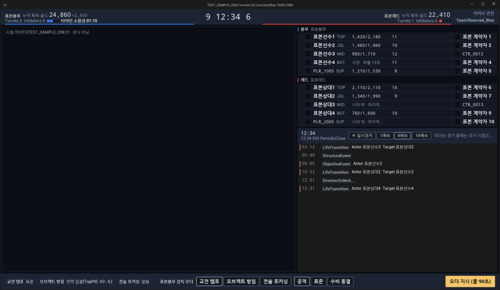

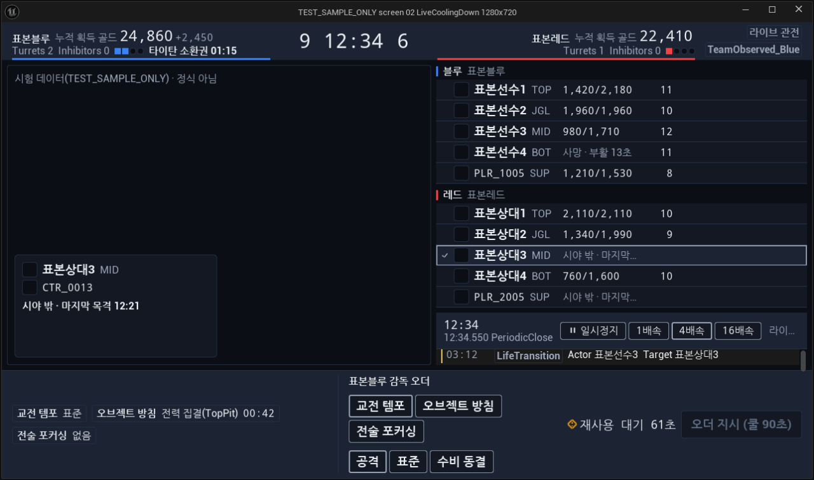

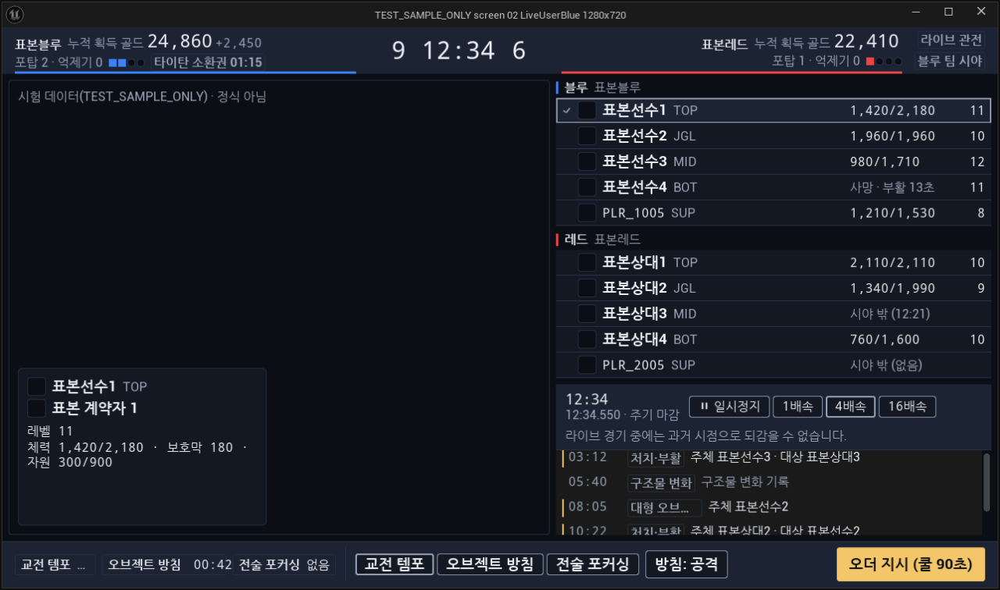

답변 완료서울 제니스 주전 원딜 Ruleris (PLR_1004) 발음 확정
대표 답변Ruleris → 룰러리스. (23:46 답변) 반영: 발음 사전에 확정으로 적고 로스터의 발음과 조사 선택을 함께 맞춥니다(글 콘텐츠 검수, 00:02 배정). 승인 이력: 32번에 '추천대로'라고 답하신 것을 32~38번의 발음 묶음 전체에 적용하는 뜻으로 정리해 주셨습니다.
- 질문
- Ruleris의 공식 한국어 발음 메타데이터(PronunciationKo)를 '룰러리스', '룰레리스', '룰리스' 중 어느 읽기로 확정할까요?
- 추천안과 이유
- 추천안 없음. 로스터 명세와 초기 로스터 데이터(61인)에 한국어 발음 표기가 없고 영어 사전에 없는 창작 조어입니다. 로스터 명세 §3.3은 원본에 없는 고유 콜사인 발음을 임의로 채우지 말고 작성자 지정 발음을 기준으로 삼도록 정하므로 대표가 직접 읽기를 지정해야 합니다.
- 대안
- 후보와 조사 결과: 룰러리스 / 룰레리스 / 룰리스 모두 끝 음절 '스'(받침 없음)로 조사 결과(Ruleris가/를/로)는 같지만, 발음 사전 통일·검색·향후 음성 안내 기준이 달라지므로 1종으로 고정해야 합니다.
- 플레이 차이
- 서울 제니스 주전 원딜이 등장하는 중계·기사에서 'Ruleris가/를/로' 조사가 정상 출력되며(미확정 시 무조사 폴백 문장으로 강등), 발음 표기가 일관됩니다.
- 구현·다른 설계 영향
- 발음 메타데이터(PLR_1004)와 초기 로스터 CSV의 발음 열을 갱신하고, 확정 시 발음 누락 컴파일 오류(LexiconError_MissingPronunciationMeta)가 해제됩니다.
- 결정 시점
- M1 조사 포매터 통합 및 서울 제니스 포함 시험 경기 중계·기사 생성 전.
- 숫자 상태
- 해당 없음.
답변 완료네온 바이퍼스 주전 원딜 Vipera (PLR_1011) 발음 확정
대표 답변Vipera → 바이페라. (23:46 답변) 반영: 발음 사전에 확정으로 적고 로스터의 발음과 조사 선택을 함께 맞춥니다(글 콘텐츠 검수, 00:02 배정). 승인 이력: 32번에 '추천대로'라고 답하신 것을 32~38번의 발음 묶음 전체에 적용하는 뜻으로 정리해 주셨습니다.
- 질문
- Vipera의 공식 한국어 발음 메타데이터(PronunciationKo)를 '바이페라', '바이퍼라', '비페라' 중 어느 읽기로 확정할까요?
- 추천안과 이유
- 추천안 없음. 로스터 명세와 61인 데이터에 발음 기재가 없습니다. 소속 구단명 '네온 바이퍼스'에서 '바이퍼-' 계열 정황은 있으나 콜사인 자체는 라틴어형(Vipera)이어서 영어식('바이페라'/'바이퍼라')과 라틴어식('비페라') 중 의도된 읽기를 문서만으로 단정할 수 없습니다.
- 대안
- 후보와 조사 결과: 바이페라 / 바이퍼라 / 비페라 모두 끝 음절 '라'(받침 없음)로 조사 결과(Vipera가/를/로)는 같지만 정식 발음 사전 통일을 위해 1종 확정이 필요합니다.
- 플레이 차이
- 네온 바이퍼스 주전 원딜이 등장하는 중계·기사에서 'Vipera가/를/로' 조사가 정상 출력됩니다(미확정 시 무조사 폴백).
- 구현·다른 설계 영향
- 발음 메타데이터(PLR_1011)와 초기 로스터 CSV 발음 열을 갱신하고 발음 누락 컴파일 오류를 해제합니다.
- 결정 시점
- M1 조사 포매터 통합 및 네온 바이퍼스 포함 시험 경기 중계·기사 생성 전.
- 숫자 상태
- 해당 없음.
답변 완료네온 바이퍼스 주전 서포터 Hook (PLR_1012) 발음 확정
대표 답변Hook → 훅. (23:46 답변) 반영: 발음 사전에 확정으로 적고 로스터의 발음과 조사 선택을 함께 맞춥니다(글 콘텐츠 검수, 00:02 배정). 승인 이력: 32번에 '추천대로'라고 답하신 것을 32~38번의 발음 묶음 전체에 적용하는 뜻으로 정리해 주셨습니다.
- 질문
- Hook의 공식 한국어 발음 메타데이터(PronunciationKo)를 받침이 있는 '훅'과 받침이 없는 '후크' 중 어느 쪽으로 확정할까요?
- 추천안과 이유
- 추천안 없음. 로스터 명세와 61인 데이터에 발음 기재가 없습니다. 이스포츠 구어 '훅'(받침 ㄱ)과 외래어 표기 관례 '후크'(받침 없음)가 모두 널리 쓰이며, 선택에 따라 모든 조사가 정반대로 갈리므로 문서 근거 없이 임의 선택할 수 없습니다.
- 대안
- 후보와 조사 결과:
- '훅'(받침 ㄱ): Hook이 / Hook을 / Hook으로(이스포츠 중계 구어 감각에 자연스러움).
- '후크'(받침 없음): Hook가 / Hook를 / Hook로(외래어 표기법에 충실하나 영문 뒤 'Hook가'가 어색하게 읽힐 수 있음). - 플레이 차이
- 네온 바이퍼스 경기 중계·기사에서 감독이 보는 조사 자체가 'Hook이/을/으로' 대 'Hook가/를/로'로 달라집니다.
- 구현·다른 설계 영향
- 발음 메타데이터(PLR_1012)와 초기 로스터 CSV 발음 열을 갱신하며, 종성 유무가 갈려 포매터 회귀 테스트 기대값이 달라집니다.
- 결정 시점
- M1 조사 포매터 통합 및 네온 바이퍼스 포함 시험 경기 중계·기사 생성 전.
- 숫자 상태
- 해당 없음.
답변 완료메트로 가디언즈 후보 미드 RookieZ (PLR_1048) 발음 확정
대표 답변RookieZ → 루키즈. (23:46 답변) 반영: 발음 사전에 확정으로 적고 로스터의 발음과 조사 선택을 함께 맞춥니다(글 콘텐츠 검수, 00:02 배정). 승인 이력: 32번에 '추천대로'라고 답하신 것을 32~38번의 발음 묶음 전체에 적용하는 뜻으로 정리해 주셨습니다.
- 질문
- RookieZ의 공식 한국어 발음 메타데이터(PronunciationKo)를 '루키즈', '루키지', '루키제트', '루키젯' 중 어느 읽기로 확정할까요?
- 추천안과 이유
- 추천안 없음. 로스터 명세와 61인 데이터에 발음 기재가 없습니다. 끝에 대문자 Z가 붙은 혼합 콜사인이라 복수형 변형('루키즈')인지 알파벳 읽기('루키지'/'루키제트'/'루키젯')인지 문서 근거가 없으며, '루키젯'은 받침(ㅅ)이 생겨 조사 분기까지 바뀝니다.
- 대안
- 후보와 조사 결과:
- '루키즈' / '루키지' / '루키제트'(받침 없음): RookieZ가 / RookieZ를 / RookieZ로.
- '루키젯'(받침 ㅅ): RookieZ이 / RookieZ을 / RookieZ으로. - 플레이 차이
- 메트로 가디언즈 로스터·이적·유망주 기사에서 RookieZ 뒤에 붙는 조사가 '가/를/로' 대 '이/을/으로'로 달라집니다.
- 구현·다른 설계 영향
- 발음 메타데이터(PLR_1048)와 초기 로스터 CSV 발음 열을 갱신하고 종성 분기를 고정합니다.
- 결정 시점
- M1 전체 61인 발음 사전 동결 및 기사·스카우팅 텍스트 검증 전.
- 숫자 상태
- 해당 없음.
답변 완료메트로 가디언즈 후보 정글 MetroB (PLR_1049) 발음 확정
대표 답변MetroB → 메트로비. (23:46 답변) 반영: 발음 사전에 확정으로 적고 로스터의 발음과 조사 선택을 함께 맞춥니다(글 콘텐츠 검수, 00:02 배정). 승인 이력: 32번에 '추천대로'라고 답하신 것을 32~38번의 발음 묶음 전체에 적용하는 뜻으로 정리해 주셨습니다.
- 질문
- MetroB의 공식 한국어 발음 메타데이터(PronunciationKo)를 '메트로비'로 확정할까요, 아니면 다른 읽기를 사용할까요?
- 추천안과 이유
- '메트로비'를 추천합니다. 소속 구단명이 '메트로 가디언즈'로 확정되어 앞부분 읽기가 '메트로'로 분명하며, 로스터 명세 §3.3이 영문 끝 글자 B를 '비'(받침 없음)로 읽는 사례를 직접 언급합니다. 다만 약어 접미 고유 콜사인은 작성자 지정 발음 기준(§3.3)에 따라 대표 승인이 필요합니다.
- 대안
- 후보와 조사 결과: '메트로비'와 '메트로브' 모두 받침이 없어 조사(MetroB가/를/로)는 같지만, '메트로브'는 구단명+이니셜 조합보다 직관성이 떨어집니다.
- 플레이 차이
- 메트로 가디언즈 로스터·스크림 관련 문장에서 'MetroB가/를/로' 조사가 정상 출력됩니다(미확정 시 무조사 폴백).
- 구현·다른 설계 영향
- 발음 메타데이터(PLR_1049)와 초기 로스터 CSV 발음 열을 갱신하고 로스터 명세 §3.3의 B→비 회귀 사례와 연결합니다.
- 결정 시점
- M1 전체 61인 발음 사전 동결 전.
- 숫자 상태
- 해당 없음.
답변 완료호라이즌 프롬 후보 서포터 twig (PLR_1056) 발음 확정
대표 답변twig → 트위그. (23:46 답변) 반영: 발음 사전에 확정으로 적고 로스터의 발음과 조사 선택을 함께 맞춥니다(글 콘텐츠 검수, 00:02 배정). 승인 이력: 32번에 '추천대로'라고 답하신 것을 32~38번의 발음 묶음 전체에 적용하는 뜻으로 정리해 주셨습니다.
- 질문
- 소문자 콜사인 twig의 공식 한국어 발음 메타데이터(PronunciationKo)를 받침 없는 '트위그'와 받침 있는 '트윅' 중 어느 쪽으로 확정할까요?
- 추천안과 이유
- 추천안 없음. 로스터 명세(소문자 보존 대상)와 61인 데이터에 발음 기재가 없습니다. 외래어 표기 관례 '트위그'(받침 없음)와 구어 읽기 '트윅'(받침 ㄱ)이 모두 쓰이며, 선택에 따라 모든 조사(이/가, 을/를, 으로/로)가 달라지므로 대표 확정이 필요합니다.
- 대안
- 후보와 조사 결과:
- '트위그'(받침 없음): twig가 / twig를 / twig로(외래어 표기법에 맞음).
- '트윅'(받침 ㄱ): twig이 / twig을 / twig으로(짧은 구어 호출감에 맞음). - 플레이 차이
- 호라이즌 프롬 로스터·경기 기사에서 감독이 보는 조사 자체가 'twig가/를/로' 대 'twig이/을/으로'로 달라집니다(소문자 twig 표기 자체는 유지).
- 구현·다른 설계 영향
- 발음 메타데이터(PLR_1056)와 초기 로스터 CSV 발음 열을 갱신하며 포매터 회귀 테스트 기대값이 결정에 따라 달라집니다.
- 결정 시점
- M1 전체 61인 발음 사전 동결 전.
- 숫자 상태
- 해당 없음.
답변 완료주요 FA 정글러 ZeroOne (PLR_9004) 발음 확정
대표 답변ZeroOne → 제로원. (23:46 답변) 반영: 발음 사전에 확정으로 적고 로스터의 발음과 조사 선택을 함께 맞춥니다(글 콘텐츠 검수, 00:02 배정). 승인 이력: 32번에 '추천대로'라고 답하신 것을 32~38번의 발음 묶음 전체에 적용하는 뜻으로 정리해 주셨습니다.
- 질문
- ZeroOne의 공식 한국어 발음 메타데이터(PronunciationKo)를 영어식 '제로원'으로 확정할지, 한국어 숫자식 '영일' 또는 '공일'로 확정할까요?
- 추천안과 이유
- '제로원'을 추천합니다. 로스터 명세, 랭크와 스카우팅 명세, 61인 데이터 모두 아라비아 숫자 01이 아니라 영문 단어 ZeroOne으로 표기되어 있어 영어 철자를 그대로 읽는 '제로원'이 가장 자연스럽습니다. 다만 한국어 숫자 읽기를 의도한 경우 ㄹ 받침 예외로 '으로/로' 조사가 바뀌므로 대표 확정이 필요합니다.
- 대안
- 후보와 조사 결과:
- '제로원'(받침 ㄴ): ZeroOne이 / ZeroOne을 / ZeroOne으로.
- '영일' 또는 '공일'(받침 ㄹ): ZeroOne이 / ZeroOne을 / ZeroOne로. - 플레이 차이
- 주요 FA 영입 기사, 스카우팅 리포트, 중계에서 'ZeroOne으로' 대 'ZeroOne로' 조사가 달라집니다.
- 구현·다른 설계 영향
- 발음 메타데이터(PLR_9004)와 초기 로스터 CSV 발음 열을 갱신하고 일반 받침(ㄴ) 대 ㄹ 받침 예외 회귀 사례에 반영합니다.
- 결정 시점
- M1 전체 61인 발음 사전 동결 및 FA 영입·스카우팅 문구 검증 전.
- 숫자 상태
- 해당 없음(초기 PA 96·희망 연봉 12,000만 원은 기존 로스터 원문 값 유지).
답변 완료영문 콜사인 발음 후보 54건 일괄 승인
대표 답변39번 PRON-08의 나머지 54건은 게시된 후보대로 일괄 승인합니다. (23:46 답변) 반영: 발음 사전의 54건을 확정으로 올리고 로스터와 조사 선택을 함께 맞춥니다(글 콘텐츠 검수, 00:02 배정).
- 질문
- 통상 한국어 읽기가 분명한 초기 로스터 선수 영문 콜사인 발음 후보 54건을 발음 사전 확정(Confirmed) 상태로 일괄 승인할까요?
- 추천안과 이유
- 아래 54건 일괄 승인(Candidate에서 Confirmed로 변경)을 추천합니다. Haneul(PLR_1024)은 로스터 명세 §3.2·§3.5에 발음 '하늘'과 조사 예시(Haneul이, 하늘로)가 직접 명시되어 있고, Aegis(PLR_1002)는 규칙 명세 §6의 '이지스'와 같습니다(동명 충돌 해결은 TERM-09에서 별도 결정). 나머지 52건도 일반 영어 단어·외래어 통상 읽기로 종결음(모음·ㄹ·기타 받침)에 이견이 없으며, 형식 버전 1 사전 검사에서 오류 0건·경고 0건 및 61인 로스터 일치 검증을 통과했습니다. 읽기 분기가 있는 7건(PRON-01~PRON-07)은 개별 카드로 분리했습니다.
- 대안
- 대안 A: 54건 중 이견이 있는 일부 콜사인만 후보(Candidate)로 보류하고 나머지를 일괄 승인(대다수 선수의 한국어 조사를 즉시 활성화하면서 수정 대상만 개별 조정). 대안 B: 일괄 승인하지 않고 54건 전부를 개별 검토 뒤 승인(승인 완료 전까지 영문 콜사인 전원이 조사 없는 문장으로만 출력되어 M1 중계·기사 검수가 지연됨).
- 플레이 차이
- 승인 전에는 발음 사전의 모든 선수 행이 미확정 상태라 조사 포매터가 읽는 행이 0건이므로, 61인 영문 콜사인 전원이 정상 조사 대신 조사 없는 폴백 문장('Sovereign 선수가 ...' 등)으로만 나갑니다. 54건을 일괄 승인하면 미확정 7인을 제외한 54인의 중계·기사·오류 안내 문장에 자연스러운 한국어 조사가 즉시 적용됩니다.
- 구현·다른 설계 영향
- 발음 사전에서 승인된 54건의 상태를 확정(Confirmed)으로 바꾸며(일부 수정 시 발음·종결음 함께 갱신), 조사 포매터와 발음 사전 검사기가 승인 즉시 54건을 읽기 대상으로 인식합니다. 스타팅 계약자 10건(모두 완성형 한글 이름)은 한글 표기에서 종성을 직접 계산할 수 있어 이번 54건 대상에서 제외하고 회귀 기준 사례로 유지합니다.
- 결정 시점
- M1 조사 포매터 통합 및 첫 시험 경기 중계·기사·오류 문구 생성 검증 전.
- 숫자 상태
- 해당 없음.
| 번호 | 선수 ID | 콜사인 | 후보 읽기 | 종결음 | 조사 예시 (이/가 · 을/를 · 으로/로) |
|---|---|---|---|---|---|
| 1 | PLR_1001 | Summit | 서밋 | 기타 받침 | Summit이 / Summit을 / Summit으로 |
| 2 | PLR_1002 | Aegis | 이지스 | 모음(받침 없음) | Aegis가 / Aegis를 / Aegis로 |
| 3 | PLR_1003 | Sovereign | 소버린 | 기타 받침 | Sovereign이 / Sovereign을 / Sovereign으로 |
| 4 | PLR_1005 | Conductor | 컨덕터 | 모음(받침 없음) | Conductor가 / Conductor를 / Conductor로 |
| 5 | PLR_1006 | Pebble | 페블 | ㄹ 받침 | Pebble이 / Pebble을 / Pebble로 |
| 6 | PLR_1007 | Mint | 민트 | 모음(받침 없음) | Mint가 / Mint를 / Mint로 |
| 7 | PLR_1008 | Raze | 레이즈 | 모음(받침 없음) | Raze가 / Raze를 / Raze로 |
| 8 | PLR_1009 | Feral | 페럴 | ㄹ 받침 | Feral이 / Feral을 / Feral로 |
| 9 | PLR_1010 | Mirage | 미라지 | 모음(받침 없음) | Mirage가 / Mirage를 / Mirage로 |
| 10 | PLR_1013 | fang | 팽 | 기타 받침 | fang이 / fang을 / fang으로 |
| 11 | PLR_1014 | Spark | 스파크 | 모음(받침 없음) | Spark가 / Spark를 / Spark로 |
| 12 | PLR_1015 | Bastion | 바스티온 | 기타 받침 | Bastion이 / Bastion을 / Bastion으로 |
| 13 | PLR_1016 | Anchor | 앵커 | 모음(받침 없음) | Anchor가 / Anchor를 / Anchor로 |
| 14 | PLR_1017 | Glacier | 글레이셔 | 모음(받침 없음) | Glacier가 / Glacier를 / Glacier로 |
| 15 | PLR_1018 | Cannon | 캐논 | 기타 받침 | Cannon이 / Cannon을 / Cannon으로 |
| 16 | PLR_1019 | Harbor | 하버 | 모음(받침 없음) | Harbor가 / Harbor를 / Harbor로 |
| 17 | PLR_1020 | Tide | 타이드 | 모음(받침 없음) | Tide가 / Tide를 / Tide로 |
| 18 | PLR_1021 | Shell | 쉘 | ㄹ 받침 | Shell이 / Shell을 / Shell로 |
| 19 | PLR_1022 | Frost | 프로스트 | 모음(받침 없음) | Frost가 / Frost를 / Frost로 |
| 20 | PLR_1023 | Comet | 코멧 | 기타 받침 | Comet이 / Comet을 / Comet으로 |
| 21 | PLR_1024 | Haneul | 하늘 | ㄹ 받침 | Haneul이 / Haneul을 / Haneul로 |
| 22 | PLR_1025 | Pixie | 픽시 | 모음(받침 없음) | Pixie가 / Pixie를 / Pixie로 |
| 23 | PLR_1026 | Whisper | 위스퍼 | 모음(받침 없음) | Whisper가 / Whisper를 / Whisper로 |
| 24 | PLR_1027 | Snow | 스노우 | 모음(받침 없음) | Snow가 / Snow를 / Snow로 |
| 25 | PLR_1028 | Breeze | 브리즈 | 모음(받침 없음) | Breeze가 / Breeze를 / Breeze로 |
| 26 | PLR_1029 | Ashen | 애셴 | 기타 받침 | Ashen이 / Ashen을 / Ashen으로 |
| 27 | PLR_1030 | Kindle | 킨들 | ㄹ 받침 | Kindle이 / Kindle을 / Kindle로 |
| 28 | PLR_1031 | Flare | 플레어 | 모음(받침 없음) | Flare가 / Flare를 / Flare로 |
| 29 | PLR_1032 | Hyperion | 하이페리온 | 기타 받침 | Hyperion이 / Hyperion을 / Hyperion으로 |
| 30 | PLR_1033 | Feather | 페더 | 모음(받침 없음) | Feather가 / Feather를 / Feather로 |
| 31 | PLR_1034 | Ember | 엠버 | 모음(받침 없음) | Ember가 / Ember를 / Ember로 |
| 32 | PLR_1035 | Wing | 윙 | 기타 받침 | Wing이 / Wing을 / Wing으로 |
| 33 | PLR_1036 | Lancer | 랜서 | 모음(받침 없음) | Lancer가 / Lancer를 / Lancer로 |
| 34 | PLR_1037 | Radar | 레이더 | 모음(받침 없음) | Radar가 / Radar를 / Radar로 |
| 35 | PLR_1038 | Cipher | 사이퍼 | 모음(받침 없음) | Cipher가 / Cipher를 / Cipher로 |
| 36 | PLR_1039 | Arrow | 애로우 | 모음(받침 없음) | Arrow가 / Arrow를 / Arrow로 |
| 37 | PLR_1040 | Compass | 컴퍼스 | 모음(받침 없음) | Compass가 / Compass를 / Compass로 |
| 38 | PLR_1041 | Dagger | 대거 | 모음(받침 없음) | Dagger가 / Dagger를 / Dagger로 |
| 39 | PLR_1042 | Pulse | 펄스 | 모음(받침 없음) | Pulse가 / Pulse를 / Pulse로 |
| 40 | PLR_1043 | Oldboy | 올드보이 | 모음(받침 없음) | Oldboy가 / Oldboy를 / Oldboy로 |
| 41 | PLR_1044 | sheriff | 셰리프 | 모음(받침 없음) | sheriff가 / sheriff를 / sheriff로 |
| 42 | PLR_1045 | Crownless | 크라운리스 | 모음(받침 없음) | Crownless가 / Crownless를 / Crownless로 |
| 43 | PLR_1046 | Steady | 스테디 | 모음(받침 없음) | Steady가 / Steady를 / Steady로 |
| 44 | PLR_1047 | Warden | 워든 | 기타 받침 | Warden이 / Warden을 / Warden으로 |
| 45 | PLR_1050 | Cliff | 클리프 | 모음(받침 없음) | Cliff가 / Cliff를 / Cliff로 |
| 46 | PLR_1051 | Drift | 드리프트 | 모음(받침 없음) | Drift가 / Drift를 / Drift로 |
| 47 | PLR_1052 | Dawn | 던 | 기타 받침 | Dawn이 / Dawn을 / Dawn으로 |
| 48 | PLR_1053 | Pebbles | 페블스 | 모음(받침 없음) | Pebbles가 / Pebbles를 / Pebbles로 |
| 49 | PLR_1054 | Bell | 벨 | ㄹ 받침 | Bell이 / Bell을 / Bell로 |
| 50 | PLR_1055 | Seed | 시드 | 모음(받침 없음) | Seed가 / Seed를 / Seed로 |
| 51 | PLR_9001 | Exile | 엑자일 | ㄹ 받침 | Exile이 / Exile을 / Exile로 |
| 52 | PLR_9002 | Berserk | 버서크 | 모음(받침 없음) | Berserk가 / Berserk를 / Berserk로 |
| 53 | PLR_9003 | Maestro | 마에스트로 | 모음(받침 없음) | Maestro가 / Maestro를 / Maestro로 |
| 54 | PLR_9005 | Trigger | 트리거 | 모음(받침 없음) | Trigger가 / Trigger를 / Trigger로 |
형식 버전 1 사전 검사 오류 0건·경고 0건, 61인 로스터 일치 확인(나머지 7인은 PRON-01~PRON-07 개별 카드).
답변 완료M1 경기 결과 기사 한국어 문장 템플릿 36건 일괄 승인
대표 답변40번 TMPL-01: 기본 기사 문장 36건 일괄 승인. (23:46 답변) 반영: 정식 문장 묶음의 상태를 확정으로 올립니다(글 콘텐츠 검수). 그 뒤 구단·대회·저장이 경기 결과에서 저장과 기사 생성까지 정식 묶음으로 잇습니다.
- 질문
- M1 경기 결과 기사에 쓸 요약 팩트 12종(1001~1012)의 한국어 문장 템플릿 후보 36건을 확정(Confirmed) 상태로 일괄 승인할까요?
- 추천안과 이유
- 아래 36건 일괄 승인(Candidate에서 Confirmed로 변경)을 추천합니다. 요약 팩트 12종(경기 결과, 팀 처치, 팀 골드, 선수 KDA·CS·골드·계약자 피해·구조물 피해, 첫 처치, 첫 포탑, 타이탄 처치, 루멘 각성)마다 3개씩 총 36건을 객관적 기사체 평서형으로 작성했습니다. 모든 행에 조사 토큰 본문(PrimaryText)과 조사 없는 폴백(FallbackText)을 함께 두어 발음 미확정 선수나 신규 이름에도 깨지지 않게 했고, 요약 기록(StatSummary) 어조만 사용해 풀경기와 시뮬경기 양쪽에서 미관측 장면·실수·심리를 지어내지 않도록 맞췄으며, 독자 범위도 전광판 공개(1001·1002)와 전체 관전·경기 뒤(1003~1012)로 분리했습니다. 내러티브 묶음 검사기에서 정식 묶음 Candidate 관련 항목 외 오류 0건·경고 0건을 확인했습니다.
- 대안
- 대안 A: 36건 중 문체를 수정할 일부 행만 보류(Candidate 유지)하고 나머지를 일괄 승인(결과 기사 출력을 바로 열면서 표현 조정이 필요한 문장만 개별 다듬기). 대안 B: 12종 팩트별로 나누어 순차 승인(세밀한 검토는 가능하지만 모든 종류가 승인될 때까지 기사에서 일부 기록 항목이 빠진 채 출력됨).
- 플레이 차이
- 승인 전에는 정식 템플릿 묶음(CANONICAL_M1)에 확정(Confirmed) 문장이 없어 경기 결과 화면의 기사가 전혀 만들어지지 않습니다. 36건을 일괄 승인하면 경기 종료 직후 승패·팀 기록·선수 수행 기록·주요 마일스톤을 요약한 한국어 기사가 정상 출력되며, 발음이 아직 미확정인 콜사인도 조사 없는 폴백 문장으로 깨짐 없이 표시됩니다.
- 구현·다른 설계 영향
- 정식 템플릿 묶음 36건의 상태를 Candidate에서 Confirmed로 변경하고, 승인된 요약 팩트 12종과 결합해 새 묶음 해시(TemplatePackHash)를 확정합니다. 1012 루멘 각성 템플릿 3건(101201~101203)은 TERM-02 추천안('루멘 각성')을 적용했으므로 TERM-02에서 다른 표기가 선택되면 해당 3행의 표기를 함께 갱신합니다. 4자리 이상 큰 숫자(골드·피해량)에 결과 화면 표와 같은 천 단위 쉼표 구분자를 넣는 문체 정책은 포매터 출력 규약과 연동합니다.
- 결정 시점
- M1 경기 결과·기사·저장 화면 통합 및 첫 경기 결과 기사 생성 검증 전.
- 숫자 상태
- 해당 없음.
| 번호 | 팩트 종류 | 독자 범위 | 본문 (PrimaryText) | 무조사 폴백 (FallbackText) |
|---|---|---|---|---|
| 100101 | 1001 경기 결과 | 공개 · 전체 관전/경기 뒤 | {WinnerTeam:이/가} {LoserTeam:을/를} 상대로 {Duration} 만에 승리했다. | 승리 구단 {WinnerTeam}, 패배 구단 {LoserTeam}, 경기 시간 {Duration} 기록으로 경기를 마쳤다. |
| 100102 | 1001 경기 결과 | 공개 · 전체 관전/경기 뒤 | {WinnerTeam:은/는} {Duration} 경기 끝에 {LoserTeam:을/를} 꺾고 승리를 거뒀다. | {WinnerTeam} 구단 승리, {LoserTeam} 구단 패배로 {Duration} 경기가 종료됐다. |
| 100103 | 1001 경기 결과 | 공개 · 전체 관전/경기 뒤 | {Duration} 동안 이어진 경기에서 {WinnerTeam:이/가} {LoserTeam:을/를} 제압했다. | 경기 시간 {Duration} 기준 {WinnerTeam} 구단이 승리하고 {LoserTeam} 구단이 패배했다. |
| 100201 | 1002 팀 처치 | 공개 · 전체 관전/경기 뒤 | {Team:은/는} 이번 경기에서 총 {Kills}킬을 기록했다. | {Team} 구단 팀 합계 {Kills}킬을 기록했다. |
| 100202 | 1002 팀 처치 | 공개 · 전체 관전/경기 뒤 | {Team:이/가} 올린 팀 킬 합계는 {Kills}킬이다. | {Team} 구단의 팀 처치 합계는 {Kills}킬이다. |
| 100203 | 1002 팀 처치 | 공개 · 전체 관전/경기 뒤 | {Team:은/는} 경기 종료 시점까지 {Kills}킬을 쌓았다. | {Team} 구단 누적 팀 킬: {Kills}킬. |
| 100301 | 1003 팀 골드 | 전체 관전/경기 뒤 | {Team:은/는} 경기 동안 총 {Gold} 골드를 획득했다. | {Team} 구단 누적 획득 골드는 {Gold} 골드다. |
| 100302 | 1003 팀 골드 | 전체 관전/경기 뒤 | {Team:이/가} 기록한 팀 누적 골드는 {Gold} 골드다. | {Team} 구단 팀 누적 골드: {Gold} 골드. |
| 100303 | 1003 팀 골드 | 전체 관전/경기 뒤 | {Team:은/는} 최종 {Gold} 골드 수입으로 경기를 마쳤다. | {Team} 구단 총 획득 골드 {Gold} 골드를 기록했다. |
| 100401 | 1004 선수 KDA | 전체 관전/경기 뒤 | {Team} 소속 {Player:은/는} {Contractor:으로/로} {Kills}킬 {Deaths}데스 {Assists}어시스트를 기록했다. | {Team} 소속 {Player} 선수({Contractor} 계약자)는 {Kills}킬 {Deaths}데스 {Assists}어시스트를 기록했다. |
| 100402 | 1004 선수 KDA | 전체 관전/경기 뒤 | {Team}의 {Player:이/가} {Contractor:을/를} 맡아 {Kills}킬 {Deaths}데스 {Assists}어시스트 성적을 남겼다. | {Team} 구단 {Player} 선수, 계약자 {Contractor} 기준 {Kills}킬 {Deaths}데스 {Assists}어시스트를 기록했다. |
| 100403 | 1004 선수 KDA | 전체 관전/경기 뒤 | {Team} 소속 {Player:은/는} 계약자 {Contractor:과/와} 함께 {Kills}킬 {Deaths}데스 {Assists}어시스트로 경기를 마쳤다. | {Team} 소속 {Player} 선수({Contractor}): {Kills}킬 {Deaths}데스 {Assists}어시스트. |
| 100501 | 1005 선수 CS | 전체 관전/경기 뒤 | {Player:은/는} {Contractor:으로/로} CS {CreepScore} 기록을 남겼다. | {Player} 선수({Contractor} 계약자)는 CS {CreepScore} 기록을 남겼다. |
| 100502 | 1005 선수 CS | 전체 관전/경기 뒤 | {Player:은/는} 계약자 {Contractor:을/를} 맡아 CS {CreepScore} 성적으로 경기를 마쳤다. | {Player} 선수, 계약자 {Contractor} 기준 최종 CS {CreepScore} 기록으로 경기를 마쳤다. |
| 100503 | 1005 선수 CS | 전체 관전/경기 뒤 | {Player:이/가} {Contractor:으로/로} 누적 CS {CreepScore} 기록을 세웠다. | {Player} 선수({Contractor}) 누적 CS: {CreepScore} 기록. |
| 100601 | 1006 선수 골드 | 전체 관전/경기 뒤 | {Player:은/는} {Contractor:으로/로} 누적 {Gold} 골드를 획득했다. | {Player} 선수({Contractor} 계약자)는 누적 {Gold} 골드를 획득했다. |
| 100602 | 1006 선수 골드 | 전체 관전/경기 뒤 | {Player:이/가} {Contractor:을/를} 맡아 기록한 개인 수입은 {Gold} 골드다. | {Player} 선수, 계약자 {Contractor} 기준 누적 획득 골드는 {Gold} 골드다. |
| 100603 | 1006 선수 골드 | 전체 관전/경기 뒤 | {Player:은/는} {Contractor:으로/로} 최종 {Gold} 골드를 쌓으며 경기를 마쳤다. | {Player} 선수({Contractor}) 개인 누적 골드: {Gold} 골드. |
| 100701 | 1007 계약자 피해 | 전체 관전/경기 뒤 | {Player:은/는} {Contractor:으로/로} 적 계약자에게 총 {Damage} 피해를 기록했다. | {Player} 선수({Contractor} 계약자)는 적 계약자 대상 {Damage} 피해를 기록했다. |
| 100702 | 1007 계약자 피해 | 전체 관전/경기 뒤 | {Player:이/가} {Contractor:을/를} 맡아 상대 계약자에게 {Damage} 피해를 누적했다. | {Player} 선수, 계약자 {Contractor} 기준 대계약자 피해량은 {Damage} 수치로 집계됐다. |
| 100703 | 1007 계약자 피해 | 전체 관전/경기 뒤 | {Player:은/는} {Contractor:으로/로} 상대 계약자 대상 {Damage} 피해 기록을 남겼다. | {Player} 선수({Contractor}) 상대 계약자 피해량: {Damage} 기록. |
| 100801 | 1008 구조물 피해 | 전체 관전/경기 뒤 | {Player:은/는} {Contractor:으로/로} 구조물에 {Damage} 피해를 기록했다. | {Player} 선수({Contractor} 계약자)는 구조물 피해 {Damage} 기록을 남겼다. |
| 100802 | 1008 구조물 피해 | 전체 관전/경기 뒤 | {Player:이/가} {Contractor:을/를} 맡아 기록한 구조물 피해량은 {Damage} 수치로 집계됐다. | {Player} 선수, 계약자 {Contractor} 기준 구조물 피해는 {Damage} 기록이다. |
| 100803 | 1008 구조물 피해 | 전체 관전/경기 뒤 | {Player:은/는} {Contractor:으로/로} 구조물 대상 누적 {Damage} 피해 기록을 올렸다. | {Player} 선수({Contractor}) 구조물 피해량: {Damage} 기록. |
| 100901 | 1009 첫 처치 | 전체 관전/경기 뒤 | {Team:이/가} 경기 시각 {Time} 시점에 첫 처치를 기록했다. | 경기 시각 {Time} 시점에 {Team} 구단이 첫 처치를 기록했다. |
| 100902 | 1009 첫 처치 | 전체 관전/경기 뒤 | 경기의 첫 처치는 {Time} 시점에 {Team:이/가} 가져갔다. | 첫 처치 기록: {Team} 구단, {Time} 시점. |
| 100903 | 1009 첫 처치 | 전체 관전/경기 뒤 | {Team:은/는} {Time} 시점에 선취점을 올렸다. | {Team} 구단은 {Time} 시점에 첫 처치를 확보했다. |
| 101001 | 1010 첫 포탑 | 전체 관전/경기 뒤 | {Team:이/가} 경기 시각 {Time} 시점에 첫 포탑을 파괴했다. | 경기 시각 {Time} 시점에 {Team} 구단이 첫 포탑을 파괴했다. |
| 101002 | 1010 첫 포탑 | 전체 관전/경기 뒤 | 첫 포탑 파괴 기록은 {Time} 시점에 {Team:이/가} 가져갔다. | 첫 포탑 파괴 기록: {Team} 구단, {Time} 시점. |
| 101003 | 1010 첫 포탑 | 전체 관전/경기 뒤 | {Team:은/는} {Time} 시점에 첫 포탑 철거를 기록했다. | {Team} 구단은 {Time} 시점에 첫 포탑을 철거했다. |
| 101101 | 1011 타이탄 처치 | 전체 관전/경기 뒤 | {Team:이/가} 경기 시각 {Time} 시점에 타이탄을 처치했다. | 경기 시각 {Time} 시점에 {Team} 구단이 타이탄을 처치했다. |
| 101102 | 1011 타이탄 처치 | 전체 관전/경기 뒤 | 타이탄 처치 기록은 {Time} 시점에 {Team:이/가} 확보했다. | 타이탄 처치 기록: {Team} 구단, {Time} 시점. |
| 101103 | 1011 타이탄 처치 | 전체 관전/경기 뒤 | {Team:은/는} {Time} 시점에 타이탄 처치에 성공했다. | {Team} 구단은 {Time} 시점에 타이탄을 확보했다. |
| 101201 | 1012 루멘 각성 | 전체 관전/경기 뒤 | {Team:이/가} 경기 시각 {Time} 시점에 루멘 각성을 달성했다. | 경기 시각 {Time} 시점에 {Team} 구단이 루멘 각성을 달성했다. |
| 101202 | 1012 루멘 각성 | 전체 관전/경기 뒤 | 루멘 각성은 {Time} 시점에 {Team:이/가} 확보했다. | 루멘 각성 달성 기록: {Team} 구단, {Time} 시점. |
| 101203 | 1012 루멘 각성 | 전체 관전/경기 뒤 | {Team:은/는} {Time} 시점에 영구 루멘 각성 단계에 도달했다. | {Team} 구단은 {Time} 시점에 루멘 각성을 기록했다. |
내러티브 묶음 검사기에서 정식 묶음 Candidate 항목 외 오류 0건·경고 0건 확인. 101201~101203은 TERM-02 결정과 연동.
답변 완료M1 풀경기 팀 목표 합계 기사 문장 템플릿 18건 일괄 승인
대표 답변41번 TMPL-02: 목표물 합계 문장 18건 일괄 승인. (23:46 답변) 반영: 정식 문장 묶음의 상태를 확정으로 올립니다(글 콘텐츠 검수).
- 질문
- 풀경기(FullSim) 결과 기사에 쓸 팀 목표 합계 팩트 6종(1013~1018: 포탑 파괴, 억제기 파괴, 루멘 시드, 타이탄 처치, 이클립스 처치, 아포칼립스 처치)의 한국어 문장 템플릿 후보 18건을 확정(Confirmed) 상태로 일괄 승인할까요?
- 추천안과 이유
- 아래 18건 일괄 승인(Candidate에서 Confirmed로 변경)을 추천합니다. 팀 목표 합계 6종은 값 출처 태그가 없어 풀경기(FullSim) 실측 요약에서만 문장 근거로 쓰며(시뮬경기 제외), 종류마다 3개씩 총 18건을 객관적 기사체 평서형(StatSummary)으로 작성했습니다. 모든 행에 조사 토큰 본문(PrimaryText)과 조사 없는 폴백(FallbackText)을 함께 두었고, 합계가 승리의 원인이었다는 인과 해석 없이 요약 수치만 서술했습니다. 현행 형식 버전 1에는 값 조건(> 0 등)이 없어 실측 0 값에도 팩트가 생성되므로 0이 들어가도 어색하지 않은 중립 기록 문장('~ 0기를 기록했다', '~ 0회다' 등)으로 맞췄으며, 재생성 포함 누적 횟수인 억제기 파괴에는 '회' 단위를 적용했습니다. 내러티브 묶음 검사기에서 초안(Candidate) 경고 외 오류 0건을 확인했습니다.
- 대안
- 대안 A: 18건 중 표현을 다듬을 일부 행만 보류(Candidate 유지)하고 나머지를 일괄 승인(풀경기 목표 합계 기사를 바로 열면서 문구 조정이 필요한 항목만 개별 수정). 대안 B: 실측 0인 목표 합계는 아예 기사에서 생략하거나 별도 미달성 문구로 분리하도록 팩트 생성 조건 또는 입력 형식 확장을 먼저 설계한 뒤 승인('타이탄 처치 0회' 같은 0건 문장 노출을 줄일 수 있으나 형식·로더·검사기 변경이 선행되어야 해 승인 시점이 늦어짐).
- 플레이 차이
- 승인 전에는 풀경기 결과 기사에서 팀 포탑·억제기·루멘 시드·타이탄·이클립스·아포칼립스 합계 문장이 출력되지 않습니다. 18건을 일괄 승인하면 풀경기(FullSim) 종료 뒤 팀 목표 합계 기록이 기사에 함께 표시되며, 시뮬경기(FastSim)에는 적용되지 않아 미산출 값을 0으로 오서술할 위험이 없습니다.
- 구현·다른 설계 영향
- 정식 템플릿 묶음(CANONICAL_M1)에서 101301~101803 18건의 상태를 Candidate에서 Confirmed로 변경하고 새 묶음 해시(TemplatePackHash)를 확정합니다. 18건 모두 풀경기 실측(Resolution=FullSim, Origin=MeasuredFullSim)과 전체 관전·경기 뒤(Audience=OmniscientSpectatorOrPostMatch)로 제한되어 시뮬경기나 실시간 전광판 범위로 새지 않습니다. 또한 총괄 판정(N-17)에 따라 값이 모두 0인 팩트는 기사 틀의 자리마다 싣거나 빼도록 정했고, 팀 목표 합계 자리는 빼는 쪽으로 시험용 틀을 두었습니다. 정식 틀은 아직 초안을 쓰기 전이며 문장과 같이 대표 승인 대상입니다. 0일 때만 쓰는 미달성 전용 문장이 필요해지면 추후 템플릿 묶음 형식 2에서 조건 열을 별도로 제안받아 검토합니다.
- 결정 시점
- M1 풀경기 결과·기사 생성 통합 검증 전(TMPL-01과 함께 일괄 결정 가능).
- 숫자 상태
- 해당 없음.
| 번호 | 팩트 종류 | 실행 모드·독자 범위 | 본문 (PrimaryText) | 무조사 폴백 (FallbackText) |
|---|---|---|---|---|
| 101301 | 1013 팀 포탑 파괴 | FullSim · 전체 관전/경기 뒤 | {Team:은/는} 이번 경기에서 포탑 파괴 {Turrets}기를 기록했다. | {Team} 구단은 이번 경기에서 포탑 파괴 {Turrets}기를 기록했다. |
| 101302 | 1013 팀 포탑 파괴 | FullSim · 전체 관전/경기 뒤 | {Team:이/가} 기록한 팀 포탑 파괴 합계는 {Turrets}기다. | {Team} 구단의 팀 포탑 파괴 합계는 {Turrets}기다. |
| 101303 | 1013 팀 포탑 파괴 | FullSim · 전체 관전/경기 뒤 | {Team:은/는} 포탑 파괴 {Turrets}기 기록으로 경기를 마쳤다. | {Team} 구단 팀 포탑 파괴 합계: {Turrets}기. |
| 101401 | 1014 팀 억제기 파괴 | FullSim · 전체 관전/경기 뒤 | {Team:은/는} 이번 경기에서 억제기 파괴 {Inhibitors}회를 기록했다. | {Team} 구단은 이번 경기에서 억제기 파괴 {Inhibitors}회를 기록했다. |
| 101402 | 1014 팀 억제기 파괴 | FullSim · 전체 관전/경기 뒤 | {Team:이/가} 기록한 억제기 파괴 합계는 {Inhibitors}회다. | {Team} 구단의 억제기 파괴 합계는 {Inhibitors}회다. |
| 101403 | 1014 팀 억제기 파괴 | FullSim · 전체 관전/경기 뒤 | {Team:은/는} 억제기 파괴 {Inhibitors}회 기록으로 경기를 마쳤다. | {Team} 구단 팀 억제기 파괴 합계: {Inhibitors}회. |
| 101501 | 1015 팀 루멘 시드 | FullSim · 전체 관전/경기 뒤 | {Team:은/는} 이번 경기에서 루멘 시드 {Seeds}스택을 기록했다. | {Team} 구단은 이번 경기에서 루멘 시드 {Seeds}스택을 기록했다. |
| 101502 | 1015 팀 루멘 시드 | FullSim · 전체 관전/경기 뒤 | {Team:이/가} 기록한 루멘 시드 누적 합계는 {Seeds}스택이다. | {Team} 구단의 루멘 시드 누적 합계는 {Seeds}스택이다. |
| 101503 | 1015 팀 루멘 시드 | FullSim · 전체 관전/경기 뒤 | {Team:은/는} 루멘 시드 {Seeds}스택 기록으로 경기를 마쳤다. | {Team} 구단 팀 루멘 시드 합계: {Seeds}스택. |
| 101601 | 1016 팀 타이탄 처치 | FullSim · 전체 관전/경기 뒤 | {Team:은/는} 이번 경기에서 타이탄 처치 {Kills}회를 기록했다. | {Team} 구단은 이번 경기에서 타이탄 처치 {Kills}회를 기록했다. |
| 101602 | 1016 팀 타이탄 처치 | FullSim · 전체 관전/경기 뒤 | {Team:이/가} 기록한 타이탄 처치 합계는 {Kills}회다. | {Team} 구단의 타이탄 처치 합계는 {Kills}회다. |
| 101603 | 1016 팀 타이탄 처치 | FullSim · 전체 관전/경기 뒤 | {Team:은/는} 타이탄 처치 {Kills}회 기록으로 경기를 마쳤다. | {Team} 구단 팀 타이탄 처치 합계: {Kills}회. |
| 101701 | 1017 팀 이클립스 처치 | FullSim · 전체 관전/경기 뒤 | {Team:은/는} 이번 경기에서 이클립스 처치 {Kills}회를 기록했다. | {Team} 구단은 이번 경기에서 이클립스 처치 {Kills}회를 기록했다. |
| 101702 | 1017 팀 이클립스 처치 | FullSim · 전체 관전/경기 뒤 | {Team:이/가} 기록한 이클립스 처치 합계는 {Kills}회다. | {Team} 구단의 이클립스 처치 합계는 {Kills}회다. |
| 101703 | 1017 팀 이클립스 처치 | FullSim · 전체 관전/경기 뒤 | {Team:은/는} 이클립스 처치 {Kills}회 기록으로 경기를 마쳤다. | {Team} 구단 팀 이클립스 처치 합계: {Kills}회. |
| 101801 | 1018 팀 아포칼립스 처치 | FullSim · 전체 관전/경기 뒤 | {Team:은/는} 이번 경기에서 아포칼립스 처치 {Kills}회를 기록했다. | {Team} 구단은 이번 경기에서 아포칼립스 처치 {Kills}회를 기록했다. |
| 101802 | 1018 팀 아포칼립스 처치 | FullSim · 전체 관전/경기 뒤 | {Team:이/가} 기록한 아포칼립스 처치 합계는 {Kills}회다. | {Team} 구단의 아포칼립스 처치 합계는 {Kills}회다. |
| 101803 | 1018 팀 아포칼립스 처치 | FullSim · 전체 관전/경기 뒤 | {Team:은/는} 아포칼립스 처치 {Kills}회 기록으로 경기를 마쳤다. | {Team} 구단 팀 아포칼립스 처치 합계: {Kills}회. |
내러티브 묶음 검사기 오류 0건(정식 묶음 54행 모두 초안 경고 1건만 확인, TemplatePackHash 0xCE265B9DE42A6D97).
답변 완료M1 기본 경기 결과 기사 틀(10001, 3문단 6자리) 확정 승인
대표 답변42번 FRAME-01: 3문단·최대 12문장의 기본 틀 승인. (23:46 답변) 반영: 기사 틀 10001을 확정으로 올립니다. 말씀대로 지금은 이 규모로 쓰고, 문장과 기사 유형을 늘리는 것을 후속 과제로 적었습니다. 문장 묶음과 기사 틀을 함께 반영하고 경기 결과·저장·기사 생성까지 잇습니다.
- 질문
- 풀경기(FullSim)와 시뮬경기(FastSim) 공용으로 쓸 M1 기본 경기 결과 기사 틀 10001(3문단 6자리, 최대 12문장: 1문단 승패·팀 처치·팀 골드 / 2문단 주요 마일스톤·팀 목표 합계 / 3문단 선수 개인 기록)을 확정(Confirmed) 상태로 승인할까요?
[예시 기사] 시험용 이름과 수치를 넣어 손으로 짠 예시이고 실제 엔진 출력이 아닙니다.
서울 제니스가 네온 바이퍼스를 상대로 31:05 만에 승리했다. 서울 제니스는 이번 경기에서 총 18킬을 기록했다. 네온 바이퍼스가 올린 팀 킬 합계는 8킬이다. 서울 제니스는 경기 동안 총 61,400 골드를 획득했다. 네온 바이퍼스는 최종 52,500 골드 수입으로 경기를 마쳤다.
서울 제니스가 경기 시각 03:05 시점에 첫 처치를 기록했다. 첫 포탑 파괴 기록은 10:00 시점에 네온 바이퍼스가 가져갔다. 서울 제니스는 이번 경기에서 포탑 파괴 9기를 기록했다. 서울 제니스가 기록한 이클립스 처치 합계는 1회다.
Haneul은 미카엘로 구조물에 4,320 피해를 기록했다. 서울 제니스 소속 Sovereign은 아스카로 7킬 0데스 6어시스트를 기록했다. Mirage가 녹스를 맡아 상대 계약자에게 21,800 피해를 누적했다. - 추천안과 이유
- 틀 번호 10001(3문단 6자리, 최대 12문장)을 그대로 확정(Candidate에서 Confirmed로 변경) 승인하는 안을 추천합니다(TMPL-01·TMPL-02 문장 승인과 함께 적용). 1) 역피라미드 보도 구조: 1문단에서 경기 결론(승패·시간)과 양 팀 총괄 스코어(처치·누적 골드)를 먼저 제시해 첫 문단만 읽어도 승패와 전력 격차를 바로 파악할 수 있습니다. 2) 양 팀 수치 대칭 보장: 팀 처치(1002)와 팀 골드(1003)를 각각 별도 자리(상한 각 2문장)로 분리해 무작위 추첨에 관계없이 항상 블루·레드 두 구단의 킬과 골드가 나란히(FactId 순서) 실립니다. 3) 18종 승인 요약 팩트 전수 수용 및 과밀 방지: 승인된 요약 팩트 18종(1001~1018)이 빠짐없이 들어가 초안 문장 54종 전부가 활용되며, 2문단(마일스톤 자리는 발생한 것 가운데 최대 2문장. 어느 것이 실릴지는 시드가 고르고 순서는 번호순[발생 시각순이 아님] + 팀 목표 합계 최대 2문장)과 3문단(선수 기록 최대 3문장)에 상한을 두어 표 숫자를 끝없이 나열하는 현상을 막습니다. 4) 0값 필터(Skip) 정합: 2문단 팀 목표 합계 자리에 Skip을 적용해 미처치 오브젝트(타이탄 0회, 아포칼립스 0회 등)가 기사에 나오는 것을 차단하고, 3문단 선수 기록 자리에도 Skip을 적용해 구조물 피해 0이나 0킬 0데스 0어시스트 같은 무의미한 0 기록이 뽑히지 않게 했습니다(0킬 3데스 0어시스트는 모든 값이 0이 아니므로 정상 포함). 5) 풀경기·시뮬경기 단일 틀 겸용: 시뮬경기(FastSim)에서는 풀경기 전용인 팀 목표 합계 자리가 자동으로 비고 나머지 자리만 모델 산출 기록으로 채워져 틀 하나로 두 모드를 일관되게 처리합니다.
- 대안
- 대안 A(선수 기록 선행형: 1문단 승패·선수 기록 → 2문단 마일스톤·목표 합계 → 3문단 팀 합계): 선수 이름이 앞 문단에 먼저 등장하지만, 현재 문장 선택기는 MVP 가중치 없이 균등 추첨하므로 패배 팀 후보 포지션의 단순 골드·CS 문장이 경기 전체 스코어와 오브젝트 경과보다 먼저 나와 기사 맥락이 산만해질 수 있습니다. 대안 B(시험 틀 9301 직결 축약형: 5자리 최대 9문장, 팀 골드 1003 제외 또는 1002|1003 통합 상한 2): 분량은 2~3문장 짧아지지만 1003을 빼면 팀 골드 문장 3종이 쓰이지 못하고, 1002|1003을 한 자리에 합치면 한쪽 구단 기록만 뽑히는 비대칭이 생깁니다. 대안 C(문장 수 확대형: 마일스톤 상한 4 + 팀 목표 합계 상한 4 + 선수 기록 상한 5, 최대 18문장): 더 많은 수치가 담기지만 좌측 10인 기록 표·마일스톤 패널과 중복이 커지고 우측 기사 패널의 스크롤 부담이 늘어납니다.
- 플레이 차이
- 승인 전에는 정식 기사 틀 묶음(CANONICAL_M1)에 확정(Confirmed) 틀이 0개여서 문장 템플릿이 승인되더라도 경기 결과 화면에 기사가 생성되지 않습니다(NotGenerated 빈 상태 유지). 틀 10001과 문장 템플릿이 함께 승인되면 경기 종료 직후 우측 기사 패널에 3문단(시뮬경기 마일스톤 미산출 시 2문단) 구성의 한국어 결과 기사와 문장별 근거 배지가 출력됩니다.
- 구현·다른 설계 영향
- 정식 기사 틀 묶음에서 틀 10001의 상태를 Candidate에서 Confirmed로 바꾸고, 문장 템플릿(TMPL-01·TMPL-02) 확정과 함께 세 파일 통합 해시(TemplatePackHash, LMNTPK02)를 갱신합니다. 보관 기사의 TemplateId 필드에는 문장 번호가 아니라 이 기사 틀 번호(10001)가 기록됩니다. 문장 템플릿이 아직 미승인(Candidate)인 동안 틀만 먼저 Confirmed로 바꾸면 모든 자리에 확정 문장이 없다는 경고가 발생하고 기사는 생성되지 않으므로 문장 템플릿 승인과 함께 전환하는 것이 안전합니다.
- 결정 시점
- M1 경기 결과·기사·저장 화면 통합 및 정식 기사 생성 검증 전(TMPL-01·TMPL-02와 동시 결정 권장).
- 숫자 상태
- 정식 틀 번호 10001(시험 대역 9000..9999 및 6자리 문장 번호 100101..과 비충돌), 6자리, 문단 3개, 최대 문장 수 합계 12(보관 근거 행 상한 128 및 본문 바이트 상한 16,384B 이내). 검사기 통과 확인 세 파일 해시 0xF47AFB23F47EC7DC(오류 0건).
| 자리 | 문단 | 허용 팩트 종류 | 필수 여부 | 문장 상한 | 0값 처리 | 설명 |
|---|---|---|---|---|---|---|
| 1 | 1 | 1001 (승패·경기 시간) | 필수(Required) | 1 | 유지(Keep) | 승패와 경기 시간은 결과 기사의 필수 1문장으로 고정 |
| 2 | 1 | 1002 (팀 처치 합계) | 선택(Optional) | 2 | 유지(Keep) | 블루·레드 2건 대칭 표기(0킬 완봉패 포함) |
| 3 | 1 | 1003 (팀 누적 골드) | 선택(Optional) | 2 | 유지(Keep) | 블루·레드 누적 골드 2건 대칭 표기 |
| 4 | 2 | 1009|1010|1011|1012 (마일스톤) | 선택(Optional) | 2 | 유지(Keep) | 발생한 것 가운데 최대 2문장. 어느 것이 실릴지는 시드가 고르고 순서는 번호순(발생 시각순이 아님) |
| 5 | 2 | 1013~1018 (팀 목표 합계) | 선택(Optional) | 2 | 제외(Skip) | 풀경기(FullSim) 실측 전용. 판정 N-17에 따라 0값 팩트 제외, 시뮬경기에서는 빈 자리로 통과 |
| 6 | 3 | 1004~1008 (선수 개인 기록) | 선택(Optional) | 3 | 제외(Skip) | 10인 개인 기록 중 최대 3문장. 모든 측정값이 0인 기록(구조물 피해 0, 0/0/0 등)만 제외 |
내러티브 묶음 검사기 세 파일 대조 오류 0건, 세 파일 해시 0xF47AFB23F47EC7DC 확인(초안 경고 2건만 존재).
답변 완료게임명 국문·영문 콜론 표기 표준 확정
대표 답변게임명 추천안대로 ㄱ. (21:14 답변) 반영: 국문은 루멘 크로스, 영문은 LUMEN: CROSS로 통일합니다. 용어집과 화면 문구, 기사 틀은 글 콘텐츠 검수가 고치는 중이고 명세 문서의 표기는 그 뒤에 맞춥니다.
- 질문
- 공식 문서·화면·기사에서 게임명을 국문 '루멘 크로스'와 '루멘: 크로스', 영문 'LUMEN: CROSS'와 'LUMEN CROSS' 중 어느 표기로 통일할까요?
- 추천안과 이유
- 국문 '루멘 크로스', 영문 'LUMEN: CROSS'(약칭 '루멘' 또는 '루크')를 추천합니다. 프로젝트 마스터 인덱스 §2.1 기준표가 이 표기를 명시하고 있으며, 현행 문서 집계에서도 '루멘 크로스'가 16회(UI 설계 포함 17회) 쓰여 '루멘: 크로스' 4회보다 많습니다. 영문도 'LUMEN: CROSS'가 2회, 'LUMEN CROSS'가 1회입니다.
- 대안
- 대안 A: 국문도 '루멘: 크로스'로 통일(제호 대칭성은 좋으나 문장·UI 가독성이 떨어지고 16곳 이상 수정 필요). 대안 B: 로고·타이틀만 '루멘: 크로스'를 허용하고 일반 문장은 '루멘 크로스'로 통일(검수 규칙 예외 1건 추가).
- 플레이 차이
- 타이틀 화면, 뉴스 헤드라인, 대회 안내 문구에서 감독이 보는 게임명의 콜론 유무가 통일됩니다.
- 구현·다른 설계 영향
- 프로젝트 마스터 인덱스 §1 등 문서 5곳을 정비하고 용어집 항목 001 확인 필요 상태를 해제합니다. '크로스'는 받침이 없어 조사 분기는 같습니다.
- 결정 시점
- M1 UI 문구 키 확정 및 첫 공개 기사·화면 검수 전.
- 숫자 상태
- 해당 없음.
답변 완료루멘 시드 4스택 영구 상태 명칭 확정
대표 답변시드4스택상태 루멘각성(각성상태). (21:14 답변) 반영: 표준 표기는 루멘 각성입니다. 풀어 쓸 때는 각성 상태라고 써도 되는 것으로 반영했습니다(괄호의 뜻은 총괄이 읽은 것입니다). 용어집과 화면 문구, 기사 틀은 글 콘텐츠 검수가 고치는 중이고 명세 문서의 표기는 그 뒤에 맞춥니다.
- 질문
- 한 팀이 루멘 시드 4스택을 달성했을 때 부여되는 영구 상태를 '루멘 각성'과 '4스택 영혼' 중 어느 표기로 통일할까요?
- 추천안과 이유
- '루멘 각성'을 추천합니다. 인게임 규칙 명세, 아트 명세, 관전 화면 설계, 미카엘 브리프까지 총 6회 쓰였고 기술 부록 01의 코드명(LumenAwakened)과 1:1로 일치합니다. '4스택 영혼'은 마스터 인덱스 §7.2에 1회만 등장하며 타 게임 용어와 연상이 겹칩니다.
- 대안
- 대안 A: '4스택 영혼'으로 통일(타 장르 익숙한 이용자에게 직관적이나 기존 규칙·아트·UI·코드명과 어긋납니다).
- 플레이 차이
- 관전 상단 상태 배지, 중계 자막, 경기 결과 기사에서 4스택 달성 상태를 부르는 명칭이 달라집니다.
- 구현·다른 설계 영향
- 프로젝트 마스터 인덱스 §7.2 1곳을 정비하고 용어집 항목 035 확인 필요 상태를 해제합니다. 두 표기 모두 받침이 있어 조사 분기는 같습니다.
- 결정 시점
- M1 관전·중계 화면 문구 확정 및 중계 템플릿 작성 전.
- 숫자 상태
- 해당 없음(루멘 각성 전투 효과 수치 자체는 별도 미결 항목으로 관리).
답변 완료상단 대형 오브젝트 구역 명칭 확정 ('상단 심연 둥지' / '상단 둥지')
대표 답변상단옵젝 흑식의 심연(이클립스 어비스). (21:14 답변) 반영: 상단 구역의 정식명을 흑식의 심연(영문 Eclipse Abyss)으로 합니다. 선택지에 없던 새 이름이고, 흑식은 받은 글자 그대로 적었습니다. 좁은 화면의 짧은 표기 상단 둥지는 답에 없어 지금처럼 함께 쓰는 것으로 두었습니다. 용어집과 화면 문구, 기사 틀은 글 콘텐츠 검수가 고치는 중이고 명세 문서의 표기는 그 뒤에 맞춥니다.
- 질문
- 타이탄과 이클립스가 출현하는 상단 구역을 '상단 심연 둥지'로 통일할지, '상단 둥지'로 통일할지, 아니면 정식명과 약칭을 병행할까요?
- 추천안과 이유
- 정식명 '상단 심연 둥지', UI·중계 짧은 표기 '상단 둥지' 병행 허용을 추천합니다. 전장 명세와 기술 부록 03은 고유 지명 '상단 심연 둥지'(2회)를, 규칙 명세와 기술 부록 03은 '상단 둥지'(4회)를 씁니다. TERM-04와 대칭으로 두면 세계관 표현과 좁은 화면 제약을 모두 충족합니다.
- 대안
- 대안 A: 모두 '상단 심연 둥지'로 통일(일관성은 높으나 좁은 미니맵·중계 배너에서 길어짐). 대안 B: 모두 '상단 둥지'로 통일(간결하나 고유 지명 '심연'이 사라짐).
- 플레이 차이
- 미니맵 툴팁, 중계 자막, 기사에서 상단 오브젝트 교전 위치를 부르는 표현의 길이와 분위기가 달라집니다.
- 구현·다른 설계 영향
- 단일 표기 선택 시 전장 명세 또는 규칙 명세·기술 부록 03을 정비합니다. 용어집 항목 038 확인 필요 해제. 두 표기 모두 받침이 없어 조사 분기는 같습니다.
- 결정 시점
- M1 관전·중계 화면 라벨 및 중계 템플릿 작성 전.
- 숫자 상태
- 해당 없음.
답변 완료하단 대형 오브젝트 구역 명칭 확정 ('하단 성소 둥지' / '하단 둥지')
대표 답변하단옵젝 여명의 성소(루멘 생텀). (21:14 답변) 반영: 하단 구역의 정식명을 여명의 성소(영문 Lumen Sanctum)로 합니다. 짧은 표기 하단 둥지는 지금처럼 함께 씁니다. 용어집과 화면 문구, 기사 틀은 글 콘텐츠 검수가 고치는 중이고 명세 문서의 표기는 그 뒤에 맞춥니다.
- 질문
- 루멘 시드와 아포칼립스가 출현하는 하단 구역을 '하단 성소 둥지'로 통일할지, '하단 둥지'로 통일할지, 아니면 정식명과 약칭을 병행할까요?
- 추천안과 이유
- TERM-03과 대칭으로 정식명 '하단 성소 둥지', UI·중계 짧은 표기 '하단 둥지' 병행 허용을 추천합니다. 전장 명세·기술 부록 03·아트 구간 제안서에서 '하단 성소 둥지'가 6회, 규칙 명세·기술 부록 03·UI 설계에서 '하단 둥지'가 5회 쓰였습니다.
- 대안
- 대안 A: 모두 '하단 성소 둥지'로 통일(좁은 UI 줄바꿈 부담). 대안 B: 모두 '하단 둥지'로 통일(고유 지명 '성소'가 사라짐).
- 플레이 차이
- 미니맵 툴팁, 중계 자막, 기사에서 하단 오브젝트 교전 위치를 부르는 표현의 길이와 분위기가 달라집니다.
- 구현·다른 설계 영향
- 단일 표기 선택 시 전장 명세·아트 제안서 또는 규칙 명세·UI 설계를 정비합니다. 용어집 항목 039 확인 필요 해제. 조사 분기는 같습니다.
- 결정 시점
- M1 관전·중계 화면 라벨 및 중계 템플릿 작성 전.
- 숫자 상태
- 해당 없음.
답변 완료공용 라인 전투 유닛 명칭 확정 ('라인 드론' / '자율 드론')
대표 답변라인전투유닛 드론. (21:14 답변) 반영: 표준 표기는 드론입니다. 정글 캠프의 드론군처럼 다른 드론과 구분해야 하는 문장에서만 라인 드론이라고 씁니다(구분 표기는 총괄의 반영 방식입니다). 용어집과 화면 문구, 기사 틀은 글 콘텐츠 검수가 고치는 중이고 명세 문서의 표기는 그 뒤에 맞춥니다.
- 질문
- 각 라인에서 30초마다 생성되어 전진하는 공용 전투 유닛을 '라인 드론'과 '자율 드론' 중 어느 표기로 통일할까요?
- 추천안과 이유
- '라인 드론'을 추천합니다. 규칙 명세, 기술 부록 03, 마스터 인덱스, 아트 명세·가이드·파일럿 문서까지 총 17회 쓰였고 '자율 드론'은 전장 명세 도입 문장에 1회뿐입니다. 정글 캠프('칼날 드론군')·장식용 드론과 역할을 구분하기에도 유리하며 타 게임 금지어 규칙과도 맞습니다.
- 대안
- 대안 A: '자율 드론'으로 통일(SF 어감은 있으나 다른 드론 명칭과 구분이 흐려지고 17곳 수정 필요).
- 플레이 차이
- 경기 규칙 도움말, 중계 문장(웨이브·백도어 보호 해제), 코치 리포트에서 라인 유닛 명칭이 달라집니다.
- 구현·다른 설계 영향
- 전장 명세 §1 1곳을 정비하고 용어집 항목 058 확인 필요 상태를 해제합니다. 두 표기 모두 '드론'(받침 ㄴ)으로 조사 분기는 같습니다.
- 결정 시점
- M1 중계·코치 리포트 템플릿 작성 전.
- 숫자 상태
- 해당 없음.
답변 완료아이템 분할 납입 구매 방식 명칭 확정 ('적립식 구매' / '적립 구매' / '아이템 적립')
대표 답변분할납입구매 걍 이거 롤이랑똑같이 조합아이템 하위아이템 상위아이템 전설아이템 신화아이템(한게임에 한번 전설 아이템 조합). (21:14 답변) 반영: 이름을 고르신 것이 아니라 구매 방식 자체를 조합식으로 바꾸라는 지시로 읽었습니다. 이름은 정하지 않았습니다. 지금 설계는 완성품 18종을 나눠 내는 방식이고 조합 단계가 없어서, 게임 디자인·설계가 바뀌는 범위와 시점의 안을 검토하고 있습니다. 검토가 오면 언제 바꿀지와 신화 아이템의 뜻(한 사람이 한 경기에 하나만 갖는 것인지, 전설 아이템을 재료로 한 번만 조합하는 것인지)을 카드로 여쭙겠습니다. 리그 오브 레전드의 지금 등급은 시작, 기본, 서사, 전설의 넷이고 신화 등급은 지금 목록에 없습니다(위키의 아이템 문서, 21:18 조회). 그때까지 구현은 지금 방식 그대로 둡니다. 용어집과 화면 문구, 기사 틀은 글 콘텐츠 검수가 고치는 중이고 명세 문서의 표기는 그 뒤에 맞춥니다.
- 질문
- 800G→1,600G→완납으로 이어지는 아이템 구매 방식을 공식 문장과 UI에서 '적립식 구매', '적립 구매', '아이템 적립' 중 무엇으로 통일할까요?
- 추천안과 이유
- 규칙·기사 설명 문장은 '적립식 구매', 짧은 UI 라벨·섹션명은 '아이템 적립' 병행 허용을 추천합니다. '적립식 구매'(기술 부록 06)와 '적립 구매'(마스터 인덱스)는 각 1회이나 '아이템 적립'은 규칙·기술 부록 02·M1 UI 설계에서 총 12회 쓰였습니다. '적립 구매'는 포인트 적립으로 오해될 여지가 있어 설명에는 '적립식 구매'가 분명합니다.
- 대안
- 대안 A: 모두 '적립식 구매'로 통일(UI 버튼·헤더가 길어지고 UI 설계 10곳 수정 필요). 대안 B: 모두 '아이템 적립'으로 통일(기사·규칙 문장에서 구매 방식 의미가 약해짐). 대안 C: '적립 구매'로 통일(분할 납입 의미가 모호함).
- 플레이 차이
- 출전·전술 화면의 아이템 계획 패널, 관전 화면의 적립 진행 표시, 도움말·기사에서 구매 시스템을 부르는 말이 달라집니다.
- 구현·다른 설계 영향
- 마스터 인덱스 §6.1과 필요 시 UI 설계 문서를 정비하고 용어집 항목 065를 확정합니다. '구매'(무받침)와 '적립'(받침 ㅂ)은 조사 분기가 다르므로 템플릿 고정 전 확정이 필요합니다.
- 결정 시점
- M1 출전·전술 화면 문구 키 확정 전.
- 숫자 상태
- 해당 없음(800G/1,600G/완납 구간 수치는 기존 M1 기준값 유지).
답변 완료무료 이동속도 장비 명칭 확정 ('무료 전술 부츠' / '전술 부츠' / '무료 부츠')
대표 답변무료이동장비 전술부츠. (21:14 답변) 반영: 표준 표기는 전술 부츠입니다. 용어집과 화면 문구, 기사 틀은 글 콘텐츠 검수가 고치는 중이고 명세 문서의 표기는 그 뒤에 맞춥니다.
- 질문
- 전용 1칸에 무료로 해금되는 이동속도 장비를 '전술 부츠', '무료 전술 부츠', '무료 부츠' 중 어느 표준 표기로 통일할까요?
- 추천안과 이유
- 장비 표준명 '전술 부츠'(최초 안내·규칙 설명 문맥에서는 '무료 전술 부츠' 병기 허용, '무료 부츠'는 공식 UI·문장 사용 지양)를 추천합니다. 규칙 명세 §2.1이 전용 칸 이름을 '전술 부츠'로 정의했고, '무료 부츠'(총 5회)는 대부분 골드 합산 제외를 강조하는 내부 설명 문맥이었습니다.
- 대안
- 대안 A: '무료 전술 부츠'로 전체 통일(UI 칸·중계 자막에 반복되면 길고 어색함). 대안 B: '무료 부츠'로 전체 통일(짧지만 장비 고유의 '전술' 정체성이 빠짐).
- 플레이 차이
- 인벤토리 전용 칸 라벨, 관전 중계('1단계 전술 부츠 해금' 대 '1단계 무료 부츠 해금'), 결과 표의 장비명이 달라집니다.
- 구현·다른 설계 영향
- 규칙 명세 §2.2·§12, 상세도 명세 §4.2, 기술 부록 06 OD-13, 결과 화면 설계 §2.1을 정비하고 용어집 항목 067을 확정합니다. 조사 분기는 모두 같습니다.
- 결정 시점
- M1 관전·결과 화면 문구 키 확정 및 중계 템플릿 작성 전.
- 숫자 상태
- 해당 없음(05:00/06:00/12:00, +25/+45 수치는 기존 M1 기준값 유지).
답변 완료지정 서포터 드론 보조 골드 명칭 확정 ('서포터 수당' / '지원 수당' / '공물')
대표 답변서포터보조골드 토큰. (21:14 답변) 반영: 표준 표기를 토큰으로 합니다. 선택지에 없던 새 이름입니다. 시야 토템과 한 글자 차이라 중계 문장과 기사에서 헷갈리는 곳이 생기는지 글 콘텐츠 검수가 살펴보고, 생기면 예문과 함께 알려 드리겠습니다. 용어집과 화면 문구, 기사 틀은 글 콘텐츠 검수가 고치는 중이고 명세 문서의 표기는 그 뒤에 맞춥니다.
- 질문
- 지정 서포터가 주변 아군의 근접·원거리 드론 처치 시 받는 +8G 보상을 공식 UI·문장에서 '서포터 수당', '지원 수당', '공물' 중 무엇으로 통일할까요?
- 추천안과 이유
- '서포터 수당'을 추천합니다. 규칙 명세 §2.4 절 제목이 '서포터 수당'이며, '공물'은 영문 내부 필드명(SupportTributeCount) 직역에서 유래해 결과 화면 설계 초안(2회)으로 이어졌습니다. 현대 이스포츠·차원 도심 세계관에서는 판타지 어감의 '공물'보다 역할이 바로 드러나는 '서포터 수당'이 맞으며, 영문 필드명은 코드 호환상 그대로 둘 수 있습니다.
- 대안
- 대안 A: '지원 수당'으로 통일(서포터 전용 규칙 조건이 덜 분명함). 대안 B: '공물'로 통일(코드 필드명·결과 화면 초안과 바로 맞으나 판타지 어감과 타 게임 연상이 강함).
- 플레이 차이
- 경기 결과 상세 표의 열 이름('서포터 수당 횟수' 대 '공물 횟수')과 코치·경제 리포트 문장이 바뀝니다.
- 구현·다른 설계 영향
- 규칙 명세 §2.4, 기술 부록 01 §3.2, 기술 부록 05 §6, 결과 화면 설계 2곳을 정비하고 용어집 항목 068을 확정합니다. '수당'(받침 ㅇ)과 '공물'(받침 ㄹ)은 '으로/로' 조사 분기가 다릅니다.
- 결정 시점
- M1 결과·기사·저장 화면 표 열 이름 확정 전(UI 설계 초안에 '공물'이 들어가 있어 빠른 확정 필요).
- 숫자 상태
- 해당 없음(+8G·반경 1,400 수치는 기존 M1 기준값 유지).
답변 완료선수 콜사인 Aegis(PLR_1002)와 전술 스펠 이지스(Aegis) 동명 충돌 해결
대표 답변둘다유지 스펠이나 챔피언명겹치는건뭐 상관없어. (21:14 답변) 반영: 선수 콜사인 Aegis와 전술 스펠 이지스를 둘 다 그대로 둡니다. 구분 표기를 강제하지 않고, 한 문장에 함께 나와 읽기 어려운 곳만 문장을 고칩니다. 용어집과 화면 문구, 기사 틀은 글 콘텐츠 검수가 고치는 중이고 명세 문서의 표기는 그 뒤에 맞춥니다.
- 질문
- 서울 제니스 주전 정글러 Aegis(PLR_1002)와 공용 전술 스펠 이지스(Aegis)의 영문·한국어 발음 동명 충돌을 어느 쪽 변경 또는 구분 표기 규칙으로 해결할까요?
- 추천안과 이유
- 추천안 없음. 기존 확정 규칙은 '계약자 이름을 선수 콜사인으로 재사용 금지'만 정했을 뿐 선수 콜사인과 전술 스펠 간 우선순위는 정하지 않았습니다. 어느 쪽을 바꿀지 또는 둘 다 유지할지는 구단 로스터 정체성과 스펠 명명 방향의 기획 판단이라 문서 근거만으로 한쪽을 추천할 수 없습니다.
혼동 예문: '서울 제니스의 Aegis가 한타 직전 이지스를 켜고 버틴 뒤 반격했다'(발음상 '이지스가 이지스를 켜고'), '상대 미드가 이지스로 피해를 흡수한 순간 Aegis가 둥지로 진입했다'. - 대안
- 대안 A: 전술 스펠 '이지스(Aegis)' 명칭 변경(61인 로스터 시드 보존·혼동 원천 제거, 규칙·전투·UI 아이콘명 수정 및 새 이름 확정 필요). 대안 B: 선수 PLR_1002 콜사인 'Aegis' 변경(스펠 6종 유지, 서울 제니스 주전 정글러 로스터 시드·발음 사전 수정 필요). 대안 C: 양쪽 유지하고 문장에서 '전술 스펠 이지스' 등 접두어 구분(수정량 최소, 문장 길이 증가·동음 반복 잔존).
- 플레이 차이
- 서울 제니스 경기 중계, 킬·스펠 로그, 기사에서 선수 호칭과 보호막 스펠의 혼동 여부가 직접 바뀝니다.
- 구현·다른 설계 영향
- 대안 A는 규칙 명세 §6·기술 부록 02·용어집 수정, 대안 B는 로스터 명세 §4.2·61인 CSV·발음 사전 수정, 대안 C는 검수 기준표·중계 템플릿 규칙 추가가 필요합니다. 용어집 항목 076·발음 PLR_1002 갱신 및 조사 회귀 재검증이 따릅니다.
- 결정 시점
- M1 중계 템플릿 작성 및 스펠·로스터 데이터 동결 전.
- 숫자 상태
- 해당 없음(이지스 보호막 120~460·재사용 180초는 기존 M1 기준값 유지).
답변 완료체력 회복 감소 효과 공식 표기 확정 ('고통스러운 상처' / '치유 감소')
대표 답변회복억제 추천안대로. (21:14 답변) 반영: 표준 표기는 치유 감소입니다. 용어집과 화면 문구, 기사 틀은 글 콘텐츠 검수가 고치는 중이고 명세 문서의 표기는 그 뒤에 맞춥니다.
- 질문
- 적격 피해 시 3초간 체력 회복·재생량을 40% 줄이는 효과의 공식 UI·문장 표준 표기를 '치유 감소'와 '고통스러운 상처' 중 어느 쪽으로 통일할까요?
- 추천안과 이유
- '치유 감소'를 추천합니다. 규칙 명세 §5.4 절 제목이 '치유 감소', 본문 효과명이 '고통스러운 상처'로 1:1이나, 약칭 '치감'이 문서 전반에 17회 쓰여 개념 기준이 '치유 감소'에 가깝고 '고통스러운 상처'는 타 게임의 대표 고유 상태명과 동일합니다.
- 대안
- 대안 A: '고통스러운 상처'를 공식 상태명으로 쓰고 '치유 감소'는 설명에만 사용(타 게임 용어와 완전히 겹치고 두 용어를 함께 노출하게 됩니다).
- 플레이 차이
- 아이템 패시브 툴팁, 상태이상 아이콘 이름, 코치 리포트에서 회복 억제 효과 명칭이 달라집니다.
- 구현·다른 설계 영향
- 규칙 명세 §5.4 1곳을 정비하고 용어집 항목 080 확인 필요 상태를 해제합니다. 두 표기 모두 받침이 없어 조사 분기는 같습니다.
- 결정 시점
- 완성 패시브 아이템 18종(EXT-02) 툴팁 문구 및 중계·분석 템플릿 작성 전.
- 숫자 상태
- 해당 없음(3,000ms·40% 감소·보호막 미적용은 기존 M1 기준값 유지).
답변 완료FullSim 국문 표준 표기 확정 ('정밀 경기' / '정밀 모드')
대표 답변Fullsim 풀경기. (21:14 답변) 반영: 국문 표기를 풀경기로 합니다. 선택지에 없던 새 이름입니다(앞선 표기는 정밀 경기). 코드의 이름 FullSim은 그대로입니다. 용어집과 화면 문구, 기사 틀은 글 콘텐츠 검수가 고치는 중이고 명세 문서의 표기는 그 뒤에 맞춥니다.
- 질문
- 20Hz 외부 틱과 1ms 정수 사건으로 계산하는 FullSim의 공식 국문 표기를 '정밀 경기'와 '정밀 모드' 중 어느 쪽으로 통일할까요?
- 추천안과 이유
- '정밀 경기'를 추천합니다. 소유 명세인 경기 상세도와 솔로랭크 실행 명세(7회), 매치 엔진 명세(5회), 작업 지침·규칙·랭크·UI 설계까지 총 18회 쓰였고, '정밀 모드'는 랭크와 스카우팅 명세 §4의 묶음 표현('정밀·간이 모드') 1회뿐입니다.
- 대안
- 대안 A: 설정 화면 라벨은 '정밀 모드', 개별 경기는 '정밀 경기' 병행(검수 기준 이중화). 대안 B: 전체 '정밀 모드' 통일(기존 18곳 수정 필요).
- 플레이 차이
- 상세도 설정 화면, 경기 결과 상단 배지, 스카우트 리포트의 관전 근거 안내 문구가 통일됩니다.
- 구현·다른 설계 영향
- 랭크와 스카우팅 명세 §4 1곳을 정비하고 용어집 항목 102 확인 필요 상태를 해제합니다. 조사 분기는 같습니다.
- 결정 시점
- M1 결과·기사·저장 화면 문구 키 확정 및 상세도 설정 문구 작성 전.
- 숫자 상태
- 해당 없음.
답변 완료FastSim 국문 표준 표기 확정 ('간이 경기' / '간이 모드')
대표 답변Fastsim 시뮬경기. (21:14 답변) 반영: 국문 표기를 시뮬경기로 합니다. 선택지에 없던 새 이름입니다(앞선 표기는 간이 경기). 코드의 이름 FastSim은 그대로입니다. 용어집과 화면 문구, 기사 틀은 글 콘텐츠 검수가 고치는 중이고 명세 문서의 표기는 그 뒤에 맞춥니다.
- 질문
- 4페이즈 통계 모델로 결과를 산출하는 FastSim의 공식 국문 표기를 '간이 경기'와 '간이 모드' 중 어느 쪽으로 통일할까요?
- 추천안과 이유
- '간이 경기'를 추천합니다. TERM-11의 '정밀 경기'와 짝을 이루며 상세도 명세(5회), 매치 엔진 명세(2회), M1 결과 화면 설계(5회)까지 총 12회 쓰였고 '간이 모드'는 랭크와 스카우팅 명세 §4 1회뿐입니다.
- 대안
- 대안 A: 설정 화면 라벨만 '간이 모드' 병행(검수 기준 이중화). 대안 B: 전체 '간이 모드' 통일(기존 12곳 수정 필요).
- 플레이 차이
- 상세도 설정 화면, 간이 결과 리플레이 미지원 안내 문구, 기사 출처 표기가 통일됩니다.
- 구현·다른 설계 영향
- 랭크와 스카우팅 명세 §4 1곳(TERM-11과 동일 문장)을 정비하고 용어집 항목 103 확인 필요 상태를 해제합니다. 조사 분기는 같습니다.
- 결정 시점
- M1 결과·기사·저장 화면 문구 키 확정 및 FastSim 요약 템플릿 작성 전.
- 숫자 상태
- 해당 없음.
답변 완료일반 시야 토템의 충전·지속·시야 반경·체력·설치 사거리·교체 규칙
대표 답변시야 도구는 모두 추천안대로 갑니다. (19:54 답변) 반영: 선택지 A.
- 질문
- 기본 시야 도구인 일반 시야 토템의 충전 수량과 충전 시간, 설치 후 지속 시간, 시야 반경, 체력(타격 횟수), 은신 전환 시간, 그리고 인당 동시 설치 상한(3개) 도달 시 교체 방식을 어떻게 정할까요?
- 선택지 A(추천): 초기 1충전·최대 2충전, 본인 레벨 1~18 선형 보간으로 충전 시간 180초→100초·지속 시간 90초→120초, 시야 반경 900 unit·설치 사거리 600 unit, 체력 3타·설치 후 1.5초 뒤 은신·파괴 보상 10골드, 4번째 설치 시 가장 먼저 설치한 자기 일반 토템을 먼저 소멸시킨 뒤 교체(시험값).
- 선택지 B: 레벨 보간 없이 충전 150초·지속 105초 고정(시험값).
- 선택지 C: 충전 210초→120초·지속 90초→120초로 초반 시야를 더 좁게 제한(시험값). - 추천안과 이유
- 레벨 비례 충전(180초→100초)·지속(90초→120초)과 체력 3타·선해제 교체 방식인 선택지 A를 조건부 추천합니다. 인게임 규칙 명세 §11.1이 임의 단일값 확정을 금지한 90~120초 지속 범위를 레벨 성장으로 자연스럽게 수용하면서, 초반 라인전에서는 정글 갱킹 경로가 열려 있고 중후반 대형 오브젝트 교전에서는 비서포터도 최소한의 측면 시야(1인당 평균 유지 0.50→1.20개)를 확보할 수 있습니다. 동의 조건: 상한 3개 도달 상태에서 새 토템을 놓을 때는 반드시 자기 구형 토템을 먼저 해제한 뒤 새 슬롯을 할당해 40개 만석 경계에서도 가짜 용량 초과가 나지 않게 합니다.
- 대안
- 선택지 B(고정 150초/105초, 시험값)는 계산이 가장 단순하지만 초반 시야가 상대적으로 넓고 후반 시야 회전이 답답합니다. 선택지 C(210초→120초, 시험값)는 초반 갱킹 성공률을 높이지만 자율 AI가 정보 부족으로 수동적 행동에 머물 시간이 길어집니다.
- 플레이 차이
- 선택지 A에서는 초반에는 제한된 토템 1~2개를 언제 강가 부쉬에 쓸지가 중요하고, 후반에는 오브젝트 대치 전후로 시야선이 빠르게 이동합니다.
- 구현·다른 설계 영향
- 인게임 규칙 명세 §6(14분 이후 아군 토템 워프 대상)·§11.1, 매치 엔진 명세 §7.1(VisionRefCount 증감), 기술 부록 01 §7.2.6(Totem 및 HeroVisionTool 레코드)에 직결됩니다.
- 결정 시점
- M1 둘째 단계(M1-Step2) 완료 전. 시야 참조 카운터 무누수 검증과 팀 관측 기반 매크로·마이크로 AI 검증 전에 확정해야 합니다.
- 숫자 상태
- 전역 상한 MAX_TOTEMS=40과 인당 기본 일반 토템 동시 설치 상한 3개는 기존 확정값입니다. 충전(180→100초, 150초, 210→120초), 지속(90→120초, 105초), 반경(900 unit), 설치 사거리(600 unit), 체력(3타), 은신 진입(1,500ms), 보상(10G)은 모두 시험값이며 VisionRefCount 무누수 회귀와 1,000경기 시야 점유 로그로 검증합니다.
답변 완료스캐너의 재사용 대기시간·지속 시간·탐지 반경·무력화 규칙
대표 답변시야 도구는 모두 추천안대로 갑니다. (19:54 답변) 반영: 선택지 A.
- 질문
- 적 은신 토템을 찾아 지우는 스캐너 도구의 충전·재사용 구조와 지속 시간, 탐지 반경, 적 토템 무력화 범위를 어떻게 정할까요?
- 선택지 A(추천): 단일 재사용 대기시간 방식으로 본인 레벨 1~18에 따라 90초→60초 단축, 작동 지속 6초, 시전자 추종 반경 750 unit 내 적 일반 은신 토템을 즉시 노출 및 시야 기여 무력화(제어 토템은 무력화 제외), 본진 우물에서 일반 토템 도구와 상호 전환 가능(시험값).
- 선택지 B: 최대 2충전 스캐너 방식으로 충전 160초→100초, 지속 6초 또는 8초, 반경 750 unit(시험값, 서포터 병행 시 상태 해시 필드 추가 필요). - 추천안과 이유
- 단일 재사용 대기시간(90초→60초, 지속 6초, 반경 750 unit, 시험값)인 선택지 A를 추천합니다. 기술 부록 01 §7.2.6의 정규 상태 해시(HeroVisionTool)에 이미 단일 스캐너 타이머(ScannerReadyMs, ScannerActiveUntilMs)가 정의되어 있어, 선택지 A를 택하면 서포터가 시야석 충전(Charges)과 스캐너를 동시에 보유하더라도 공개 계약 바이트를 고치지 않고 그대로 표현됩니다. 또한 지속 6초는 공격속도 0.65~1.0인 계약자 1인이 체력 3타 토템 1~2개를 확정 제거하기에 충분한 시간입니다.
- 대안
- 선택지 B(2충전 스캐너, 시험값)는 빈 부쉬에 스캐너를 헛썼을 때의 부담이 줄어들지만, 서포터가 시야석 충전과 2충전 스캐너를 함께 가지려면 기술 부록 01 §7.2.6에 스캐너 전용 충전 필드를 추가하는 계약 보정이 필요합니다.
- 플레이 차이
- 선택지 A에서는 오브젝트 출현 30~60초 전에 정글러와 서포터가 스캐너를 아껴 두었다가 핵심 진입로를 한 번에 지우는 시야 장악 타이밍 싸움이 또렷해집니다.
- 구현·다른 설계 영향
- 기술 부록 01 §7.2.6(ScannerReadyMs, ScannerActiveUntilMs, DisabledUntilMs, VisionContributionEnabled, RevealMask) 및 매치 엔진 명세 §7.1(무력화 시 해당 토템의 VisionRefCount 일시 차감 후 해제 시 복원, 만료·파괴 시 이중 차감 금지)에 연결됩니다.
- 결정 시점
- M1 둘째 단계(M1-Step2) 완료 전. 시야 제거 AI 행동(TaskKind=Vision)과 시야 카운터 상태 전이 검증 전에 확정해야 합니다.
- 숫자 상태
- 스캐너 타이머와 토템 무력화·노출 필드의 존재는 기존 기술 계약이며, 재사용 대기시간(90→60초, 대안 160→100초), 지속(6,000ms, 대안 8,000ms), 반경(750 unit)은 모두 시험값입니다.
답변 완료서포터 전용 시야석의 해금 조건·우물 충전 수량·전장 동시 설치 상한
대표 답변시야 도구는 모두 추천안대로 갑니다. (19:54 답변) 반영: 선택지 A.
- 질문
- 경기 시작 시 지정된 서포터 1명에게 부여하는 전용 시야석의 해금 조건과 본진 우물 보충 수량, 그리고 전장 동시 설치 상한을 어떻게 정할까요?
- 선택지 A(추천): 일반 아이템 5칸을 소비하지 않는 시야 도구 진화 방식으로 서포터 수당 40회(320골드, 미달 시 08:00 보장)에 1단계 시야석(우물 귀환 시 일반 토템 3충전 보충 + 스캐너 자동 병행), 수당 75회(600골드, 미달 시 14:00 보장)에 2단계 시야석(우물 귀환 시 4충전 보충)으로 해금하되 전장 동시 활성 일반 토템 상한은 인당 3개로 유지(시험값).
- 선택지 B: 수당 횟수와 무관하게 06:00 정각에 우물 4충전 시야석 + 스캐너 일괄 해금 및 전장 상한 3개 유지(시험값).
- 선택지 C: 서포터만 일반 토템 전장 동시 설치 상한을 4개로 확대(시험값, 제어 토템 병행 시 소유 배열 4칸 초과). - 추천안과 이유
- 수당 연동 2단계 해금(시간 안전망 포함) + 우물 3→4충전 + 전장 동시 활성 3개 유지인 선택지 A를 추천합니다. M1 인벤토리 5칸은 완성 패시브 전투 아이템 전용이므로 시야석을 시스템 시야 도구 진화로 두어야 서포터도 5코어 아이템 성장이 막히지 않습니다. 또한 보유 충전량을 4개로 주면서 전장 동시 활성 상한만 3개(4번째 설치 시 가장 오래된 자기 토템 교체)로 유지하면, 서포터가 상단 둥지에서 하단 둥지로 시야선을 한 번에 옮기는 기동성은 확보하면서도 기술 부록 01의 계약자당 소유 배열(OwnedTotems[4]: 일반 3 + 제어 1)과 전역 40개 상한을 지킬 수 있습니다.
- 대안
- 선택지 B(06:00 고정 시각 해금, 시험값)는 구현이 단순하지만 라인전 수당 수행(SupportTributeCount)과의 성장 연결고리가 사라집니다. 선택지 C(전장 활성 4개 허용, 시험값)는 제어 토템 1개와 합쳐 서포터 소유 토템이 5개가 되므로 OwnedTotems[4] 배열 확장과 타 선수 상한 축소가 연쇄 발생합니다.
- 플레이 차이
- 선택지 A에서는 바텀 라인전을 안정적으로 수행한 서포터가 약 6~7분 첫 시드·타이탄 교전 직전에 시야석과 스캐너를 동시에 갖추어 팀의 시야 주도권을 이끕니다.
- 구현·다른 설계 영향
- 인게임 규칙 명세 §2.4(서포터 수당 1,400 unit 내 +8G)·§11.1, 기술 부록 01 §5.4(SupportTributeCount)·§7.2.6(SupportTributeEligible, HeroVisionTool.Charges/MaxCharges)과 직결됩니다.
- 결정 시점
- M1 둘째 단계(M1-Step2) 완료 전. 서포터 시야 AI 및 충전·우물 보충 상태기 검증 전에 확정해야 합니다.
- 숫자 상태
- 지정 서포터 1인 수당 자격(반경 1,400 unit, 근접·원거리 드론 처치 시 +8G)과 인당 기본 일반 토템 상한 3개는 기존 확정값이며, 해금 문턱(40회/75회 및 08:00/14:00 안전망, 대안 06:00)과 우물 충전량(3→4충전)은 모두 시험값입니다.
답변 완료제어 토템의 공급 방식·휴대 및 동시 설치 수량·성능과 MAX_TOTEMS=40 배정
대표 답변시야 도구는 모두 추천안대로 갑니다. (19:54 답변) 반영: 선택지 A.
- 질문
- 상시 노출된 채 주변 적 은신 토템을 무력화하는 제어 토템의 구매·보충 방식, 휴대 수량, 인당 전장 동시 설치 상한, 세부 성능을 어떻게 정해 전역 상한(MAX_TOTEMS=40)을 닫을까요?
- 선택지 A(추천): 본진 우물에서 개당 75골드에 시야 도구 전용 재고(일반 역할 최대 1개, 2단계 시야석 서포터 최대 2개 휴대)로 구매하고, 전장 동시 활성 상한은 전 역할 인당 1개(새 설치 시 기존 자기 제어 토템 선해제 교체), 영구 지속·체력 4타·시야 및 무력화 반경 900 unit·파괴 보상 30골드, 오브젝트 생성 시야체 0개로 고정(시험값, HeroVisionTool에 휴대 재고 1바이트 추가 필요).
- 선택지 B: 골드 구매 재고 없이 우물 귀환 시 자동 1회 보충(재설치 대기 90초) 및 인당 전장 동시 활성 1개 유지(시험값, 기존 바이트 무변경).
- 선택지 C: 향후 오브젝트 시야체 슬롯 4개를 비워 두기 위해 제어 토템 설치 자격을 팀당 서포터·정글러 2인 및 서포터 동시 2개(팀당 3개, 양 팀 6개)로 제한(시험값). - 추천안과 이유
- 우물 75골드 전용 재고 구매(일반 1개·서포터 2개 휴대) + 전 역할 인당 전장 동시 활성 1개 상한 + 오브젝트 시야체 0개인 선택지 A를 조건부 추천합니다. 이 구성에서는 비서포터 일반 토템(8×3=24) + 서포터 일반 토템(2×3=6) + 전원 제어 토템(10×1=10) + 오브젝트(0) = 정확히 40개가 되어, 적 토템 강제 삭제나 용량 초과 무효 종료 없이 MAX_TOTEMS=40과 개인 소유 배열(일반 3 + 제어 1 = 4칸)이 수학적으로 동시에 성립합니다. 동의 조건: 정규 상태 해시 폐쇄 원칙(기술 부록 01 §7.2.1)을 지키기 위해 총괄이 HeroVisionTool에 제어 토템 휴대 수량 필드(ControlCharges:u8) 1바이트를 추가 보정해야 합니다(바이트 변경을 피하려면 선택지 B 사용 가능).
- 대안
- 선택지 B(시험값)는 HeroVisionTool 바이트 변경 없이 바로 구현되지만 시야 장악에 골드를 투자하는 경제적 선택지가 사라집니다. 선택지 C(시험값)는 향후 오브젝트 시야체 여유 4칸을 남기지만 탑·미드·원딜이 자기 라인 부쉬에 제어 토템을 박을 수 없게 되고, 서포터 동시 2개를 허용할 경우 OwnedTotems[4]를 5칸으로 늘려야 합니다.
- 플레이 차이
- 선택지 A에서는 오브젝트 한타 직전 서포터가 제어 토템 2개를 들고 나가 둥지 시야를 먼저 지운 뒤 다음 교전지로 제어권을 한 번 더 옮길 수 있으며, 라이너도 75골드를 아껴 갱킹 방어용 제어 토템을 유지하는 운영이 생깁니다.
- 구현·다른 설계 영향
- 인게임 규칙 명세 §11.1, 기술 부록 01 §7.2.6(TotemClass=Control[2], EndMs=0 영구 수명, 선택지 A 채택 시 HeroVisionTool.ControlCharges:u8 추가), 매치 엔진 명세 §7.1(제어 토템 반경 진입·이탈·파괴 시 적 일반 토템 시야 기여 토글)에 반영됩니다.
총괄 의견 1: 추천안(선택지 A)은 상한 40개를 정확히 다 써서 여유가 0입니다. 규칙 명세가 서포터·오브젝트 등 별도 시야 개체의 예약 여유라고 적은 10칸을 모두 제어 토템에 쓰는 안이라 나중에 오브젝트 시야체를 넣으려면 상한을 올려야 합니다.
총괄 의견 2: 추천안(선택지 A)을 고르면 상태 기록(HeroVisionTool)에 휴대 수량 1바이트를 더해야 하는데, 상태 직렬화가 아직 구현 전이라 지금이 바꾸는 비용이 가장 낮습니다. - 결정 시점
- M1 둘째 단계(M1-Step2) 완료 전. 특히 선택지 A와 B 중 무엇을 고르는지에 따라 기술 부록 01 §7.2.6의 HeroVisionTool 바이트 보정 여부가 갈리므로 시야 모듈 구현 착수 전에 정해야 합니다.
- 숫자 상태
- MAX_TOTEMS=40, TotemClass(Ward=1, Control=2), OwnedTotems[4] 구조는 기존 확정 계약입니다. 가격(75G), 휴대량(1개/2개), 인당 활성 상한(1개), 체력(4타), 반경(900 unit), 보상(30G), 대안 B 대기(90초)와 대안 C 제한(팀당 3개)은 모두 시험값이며 생성 경로별 최대 동시 점유(<=40) 단위·스트레스 검증으로 확인합니다.
| 생성 경로 | 대상 수 | 인당 전장 동시 상한 | 상한 도달 시 교체 규칙 | 최악 동시 점유 |
|---|---|---|---|---|
| 비서포터 기본 일반 토템 | 양 팀 8인 | 3개 | 가장 오래된 자기 일반 토템 선해제 후 할당 | 24 (8×3) |
| 지정 서포터 시야석 일반 토템 | 양 팀 2인 | 3개 (우물 재고 3→4충전) | 가장 오래된 자기 일반 토템 선해제 후 할당 | 6 (2×3) |
| 전 역할 제어 토템 | 양 팀 10인 | 1개 (휴대 일반 1 / 서포터 2) | 기존 자기 제어 토템 선해제 후 할당 | 10 (10×1) |
| 계약자 스킬·아이템 파생 개체 | 계약자 10인·아이템 18종 | 0개 | M1 컴파일 단계 원천 차단 | 0 |
| 중립 캠프·4대 대형 오브젝트 | 12캠프·4보스 | 0개 | 토템 생성 경로 없음 | 0 |
| 전역 합계 (PeakTotems) | 전원 10인 | 계약자당 최대 4개(OwnedTotems[4]) | 적 토템 강제 삭제 0건, 여유 0칸 | 40 <= 40 |
게임 디자인·설계 산술 증명(실제 엔진 스트레스 검증 전). 40/40 만석 교체 시 반드시 자기 기존 토템 선해제 후 신규 할당.
답변 완료루멘 시드 4스택 달성 시 영구 루멘 각성의 추가 전투 효과 유무와 수치
대표 답변기존 단일 루멘 시드 체계를 아래 플레어·프리즘·오로라·미라주 4종으로 변경합니다. (23:46 답변) 반영: A, B, C는 쓰지 않습니다. 모든 시드의 공통 +4% 규칙과 공통 각성 제안(스킬 가속 +15, 주는 피해 +4%)은 남기지 않습니다. 받은 설계를 요약하면 이렇습니다.
종류: 플레어(교전 화력과 광역 폭발), 프리즘(방어력과 물리·마법 이중 보호막), 오로라(유지력과 자원 회복과 스킬 회전), 미라주(합류와 기동과 둔화 저항).
출현: 첫 시드는 하단 성소 둥지에서 05:00. 첫째와 둘째는 네 종류 가운데 겹치지 않게 무작위. 셋째 시드가 나올 때 그 종류로 경기의 주 파장이 고정되고, 한 팀이 합산 4스택을 먼저 이룰 때까지 같은 종류가 다시 나옵니다. 먼저 4스택을 이룬 팀이 주 파장의 영구 각성을 얻고, 시드 단계가 끝나며 6분 뒤 아포칼립스가 나옵니다. 이미 얻은 종류별 스택 효과는 유지됩니다.
스택 효과(종류별로 따로 더하고, 각성을 가르는 합산 스택과는 따로 셉니다): 플레어 공격력·주문력 +4/8/12/16%, 프리즘 방어력·마법 저항력 +6/12/18/24%, 오로라 5초당 잃은 체력의 2.5/5/7.5/10% 회복, 미라주 비전투 이동 속도 +5/10/15/20%와 둔화 저항 +6/12/18/24%.
각성: 플레어 '태양풍 공명'(적 계약자에게 피해를 줄 때 대상과 반경 3.5m 안의 적에게 75 + 추가 공격력의 25% + 주문력의 18% + 추가 체력의 3%의 폭발 피해, 내부 쿨타임 6초), 프리즘 '이중 굴절 장막'(적 계약자와 대형 오브젝트에게 5초 동안 피해를 받지 않으면 물리 전용과 마법 전용 보호막을 각각 90 + 최대 체력의 5%로 충전), 오로라 '성역의 맥동'(적 계약자에게 피해를 줄 때 3초에 걸쳐 체력 120 + 추가 공격력의 25% + 주문력의 18% + 추가 체력의 6%와 최대 자원의 6% 회복, 기본 스킬의 남은 재사용 대기시간 0.5초 감소, 궁극기 제외, 내부 쿨타임 4초), 미라주 '광속 투영'(상시 이동 속도 +8%, 궁극기를 쓸 때 4초간 이동 속도 +45%와 유닛 충돌 무시, 내부 쿨타임 30초).
지형 변이: 셋째 시드가 나올 때 주 파장에 따라 성소와 길목이 바뀝니다(플레어는 엄폐벽 일부 제거, 프리즘은 거울 결정 벽, 오로라는 발광 수풀과 회복 열매, 미라주는 이동 속도 트랙). 각성 뒤에는 아포칼립스 단계의 연출로 바뀝니다.
원문에 없는 세부(적응형 피해를 가르는 기준, 보호막의 재충전 상한, 회복을 재는 시점, 이동 속도의 합성, 벽이 생기고 없어질 때의 충돌·시야·길찾기, 셋째 시드를 앞의 두 종류를 뺀 둘 가운데서 고르는 안)는 말씀대로 총괄이 해석으로 밝혀 규칙 문서에 적고 보고합니다. 수치는 주신 값이고 경기로 재 보기 전입니다. 지형이 바뀌는 자리의 제안은 레벨 디자인에 배정했습니다(00:02).
- 질문
- 한 팀이 루멘 시드 4스택을 달성해 영구 루멘 각성 상태가 되었을 때, 기존 시드 4스택 누적 보너스(공격력·주문력 +16%) 외에 별도의 영구 전투 효과를 부여할지와 어떤 형태·수치로 둘까요?
- 선택지 A(추천): 발동 사건이 없는 상시 경량 전투 보너스로 전 인원 스킬 가속 +15 및 계약자·보스·구조물 대상 주는 피해 +4% 부여(시험값).
- 선택지 B: 적 계약자 타격 시 4초 내부 쿨타임마다 추가 고정·적응형 폭발 피해 발동(시험값).
- 선택지 C: 별도 전투 효과 없이 시드 4스택 +16%와 6분 뒤 아포칼립스 해금만 유지. - 추천안과 이유
- 상시 경량 전투 보너스(스킬 가속 +15 및 주는 피해 +4%, 시험값)를 부여하는 선택지 A를 조건부 추천합니다. 인게임 규칙 명세 §9.2는 +16%만으로 각성 효과를 임의 대체하지 말라고 명시하고 있으며, 4스택 결정전이 앞선 1~3스택과 체감상 구별되고 머리 위 각성 왕관 연출(socket_halo)이 의미를 가지려면 고유 보상이 필요합니다. 발동형 폭발 대신 기존 상태효과 스탯 변경자(StatModifierRecord)만 쓰면 틱당 파생 사건 예산을 소비하지 않고 딜러·탱커·서포터 5인 전원이 고르게 혜택을 받습니다. 동의 조건: 수치는 시험값으로 두며 M1-Step3 하네스에서 각성 달성 팀 승률과 평균 경기 시간(28~32분)을 대조해 보정합니다. 외부 1차 자료(Riot Games, League of Legends Patch 9.23 발행일 2019-11-19, Patch 12.14 발행일 2022-07-26, Patch 13.20 발행일 2023-10-10 원문 확인)에서도 개별 스택 과열 시 4스택 완성 보상을 분리하는 원리를 참고했습니다.
- 대안
- 선택지 B(4초 내부 쿨타임 폭발 피해, 시험값)는 관전 타격감이 가장 뚜렷하지만 포킹·광역 조합에 편향되고 5대5 교전 중 파생 규칙 사건 수를 늘립니다. 선택지 C(추가 전투 효과 없음)는 밸런스 변수가 가장 적지만 3스택(+12%)에서 4스택(+16%)으로 넘어갈 때의 즉각적인 한타 결전 보상이 약해집니다.
- 플레이 차이
- 선택지 A에서는 3스택 팀이 4번째 시드를 눈앞에 두었을 때 양 팀 모두가 사활을 걸고 집결하는 중반 클라이맥스가 형성되며, 서포터와 탱커도 스킬 회전율 증가로 각성을 체감합니다. 선택지 C에서는 각성이 사실상 6분 뒤 아포칼립스 예약 타이머 역할에 머뭅니다.
- 구현·다른 설계 영향
- 인게임 규칙 명세 §9.2와 기술 부록 02 §3.5·§5.2(사망 후 부활 시 새 목숨 SpawnEpoch로 재구축되는 영구 팀 상태효과)에 연결됩니다. 선택지 A와 C는 새 C++ 분기 없이 정적 상태효과 테이블만으로 표현되며, 선택지 B는 TriggerSpec과 EffectList가 추가됩니다.
- 결정 시점
- M1 둘째 단계(M1-Step2) 완료 전. 정식 전투 검증과 대형 오브젝트 가치 평가 AI 구현 전에 확정해야 하며, M1-Step1 기본 주행 동안에는 미룰 수 있습니다.
- 숫자 상태
- 시드 스택당 공격력·주문력 +4%(4스택 +16%), 4스택 시 시드 종료, 6분 뒤 아포칼립스 출현은 기존 확정값입니다. 선택지 A의 스킬 가속 +15·주는 피해 +4%(10,400 BP)와 선택지 B의 폭발 수치는 모두 시험값이며 TC-03-17, TC-02-12 및 1,000경기 스모크로 검증합니다.
답변 완료능력치 합성 순서: 고정 증가를 먼저 더하고 플레어 비율을 곱하는 권고안 (검토 중)
대표 답변"OD-05-Q2 A: 고정 증가치를 먼저 더하고 플레어 비율을 적용합니다. 기존의 미드 추가 공격력 8% 선행 → 플레어 총공격력 증폭 후행 시험 순서는 유지합니다." (06:21의 답) 반영: 선택지 A. 아이템, 일반 버프, 이클립스 같은 고정 증가치를 먼저 더한 뒤 플레어의 비율을 곱합니다. 원본 기본 공격력은 그대로 두고 늘어난 만큼은 유효 추가 공격력에 넣습니다. 플레어의 스택은 비율을 더하며 1.04를 거듭 곱하지 않습니다. 예: 공격력 200, 이클립스 +40, 플레어 4스택이면 (200 + 40) × 1.16 = 278.4. 미드의 포지션 퀘스트 보상(추가 공격력 8%)을 먼저, 플레어의 총 공격력 증폭을 나중에 적용하는 시험 순서는 그대로 둡니다. 플레어로 늘어난 몫을 앞의 8% 단계에 다시 넣지 않습니다. 주문력의 같은 풀 증폭은 기존 문서의 연산을 먼저 쓰고 실제로 쓴 식을 적습니다. 단계마다의 정밀도와 절삭을 마지막 한 번으로 합치지 않습니다. 채택은 정본과 코드와 실행 검증의 완료가 아닙니다. 06:42에 규칙 문서에 옮겼습니다(보정 C-45). 문서 계약 검사 여덟 묶음이 통과했습니다(문서와 계약 헤더의 대조이며 구현의 검증이 아닙니다). 계약 문서의 세부와 구현과 검증은 남았습니다. 미드의 8% 단계와 플레어 증폭의 검산 예시, 플레어의 속성 판정, 미라주의 비전투 조건과 시야물 타격도 함께 적었습니다. 남은 것: 전투 자료의 보정, 구현, 독립 대조. 능력치와 상태 효과가 경기에 연결된 뒤에 구현할 수 있습니다(지금은 기본 공격 단계입니다).
- 질문
- 23:46에 이 카드는 '롤에서는 어떻게 계산하는가'를 물으신 것으로 정리해 주셨습니다. 앞선 선택지 A를 승인으로 적지 않았습니다. 아래는 함께 주신 권고안입니다. 이 권고안으로 확정할지 정해 주십시오.
권고안: 기본 능력치와 아이템·일반 버프·이클립스의 고정 증가치를 먼저 더하고, 그다음 플레어 스택 수에 따른 비율을 곱합니다. 최종 공격력 = (원본 기본 공격력 + 고정 추가 공격력) × (1 + 0.04 × 플레어 스택 수). 원본 기본 공격력은 그대로 두고 늘어난 만큼은 유효 추가 공격력에 넣습니다. 플레어 4스택은 1.16배이고 1.04를 네 번 곱하지 않습니다. 주문력도 같은 순서입니다. 프리즘 같은 다른 시드는 종류별 스택으로 따로 계산합니다.
- 선택지 A: 권고안대로. 예: 이클립스 전 공격력 200, 이클립스 +40, 플레어 4스택이면 (200+40)×1.16=278.4.
- 선택지 B: 이클립스의 고정치는 빼고 비율을 곱한 뒤 마지막에 더합니다. 같은 예에서 200×1.16+40=272.
(04:39 추가) 03:52의 통합 기준안은 선택지 A를 권고하고, 미드의 포지션 퀘스트 보상(추가 공격력과 주문력의 8% 증폭)이 들어올 때의 순서를 함께 적었습니다: 미드의 8%는 추가 능력치에 먼저, 플레어의 비율은 총 공격력에 나중에 적용합니다. 그 순서는 이 카드의 선택과 따로이며 총괄이 시험식으로 받았습니다(BASE-01의 7번). 이 카드에서 고르실 것은 그대로 선택지 A와 B입니다. - 추천안과 이유
- 선택지 A(권고안)를 추천합니다. 식이 하나라 설명하기 쉽고, 플레어를 모은 팀이 이클립스를 얻을 때 두 효과가 함께 커집니다. 리그 오브 레전드가 비슷한 경우를 실제로 어떻게 계산하는지는 총괄이 원문을 찾아 이 카드에 적겠습니다. 아직 확인하지 못했습니다.
- 대안
- 선택지 B는 이클립스의 고정 보너스가 플레어 스택과 무관하게 늘 같은 크기로 느껴지는 대신, 두 효과를 함께 가진 팀의 화력이 A보다 조금 낮습니다.
- 플레이 차이
- 플레어 4스택과 이클립스를 함께 가진 계약자의 공격력이 같은 예에서 278.4 대 272로 6.4 달라집니다. 스택이 적을수록 차이는 작습니다.
- 구현·다른 설계 영향
- 시드 4종의 규칙과 전투 자료의 능력치 계산 순서에 적습니다. 다른 능력치 변환 효과가 더해지면 계산 순서를 따로 적습니다. 기준안의 예(총괄이 다시 계산했습니다): 기본 공격력 100, 고정 추가 50, 미드의 고정 11과 8%, 플레어 16%일 때 미드를 먼저 적용하면 192.42, 플레어를 먼저 적용하면 193.70, 총 공격력에 24%를 한 번에 주면 199.64입니다. 시험에는 첫째 식 하나만 씁니다. 선택지 B를 고르시면 이 순서를 다시 정합니다.
- 결정 시점
- 시드 4종의 규칙을 구현하기 전입니다. 급하지 않습니다.
- 숫자 상태
- 스택당 +4%와 이클립스의 +40은 주신 값과 기존 값입니다. 새 수치는 없습니다. 실제 정수 처리는 공통 규칙을 따릅니다.
답변 완료아포칼립스 3초 화상의 피해 속성과 총량 곡선
대표 답변A 승인. 3초간 총 고정 화상 피해를 75 + 10×(시전자 레벨−1)로 적용. (23:46 답변) 반영: 규칙 문서와 전투 자료에 확정으로 적습니다. 구현은 대형 오브젝트의 단계에서 합니다.
- 질문
- 아포칼립스 버프 보유자가 적 계약자에게 부여하는 3초(3,000ms) 화상의 피해 속성과 3초 원피해 총량을 무엇으로 할까요?
- 선택지 A(추천): 고정 피해(True Damage) 속성이며 시전자 레벨 1~18 선형 곡선으로 3초 총량 75 + 10×(레벨-1), 즉 11레벨 175·16레벨 225·18레벨 245 부여(시험값).
- 선택지 B: 레벨과 무관한 단일 고정값으로 3초 총량 180 고정 피해 부여(시험값).
- 선택지 C: 마법 피해 속성이며 3초 총량 300 부여(시험값). - 추천안과 이유
- 시전자 레벨 비례 고정 피해(16레벨 기준 3초 총 225, 시험값)인 선택지 A를 추천합니다. 아포칼립스는 최소 26분 이후에 출현하는 후반 종결용 오브젝트이므로 방어·마법저항 180 이상의 후반 탱커에게도 체력을 20% 미만 처형선으로 밀어 넣는 일관된 압박(3,200 체력 기준 약 7%, 2,000 체력 딜러 기준 약 11.3%)을 주려면 고정 피해가 적합합니다. 또한 계약자 레벨 18단 곡선(HeroLevel18)은 기술 부록 02 §3.4 계약에 이미 존재하므로 스키마 변경 없이 즉시 데이터로 표현됩니다. 외부 1차 자료(Riot Games, League of Legends Patch 9.23 발행일 2019-11-19 및 Patch 26.1 발행일 2026-01-07 원문 확인)의 종결 버프 설계 원리를 참고하되 수치는 루멘 크로스 교전 대역에 맞춘 시험값으로 둡니다.
- 대안
- 선택지 B(단일 180 고정 피해, 시험값)는 직관적이지만 26분 조기 출현과 42분 초장기전 사이의 체력 성장 차이를 반영하지 못합니다. 선택지 C(마법 피해, 시험값)는 후반 탱커 상대 실효 피해가 약 107 수준으로 줄어 전선 돌파력이 떨어집니다.
- 플레이 차이
- 선택지 A에서는 후반 대치 구도에서 체력이 27~31% 남짓 남은 적을 아포칼립스 보유자가 한 번 스치면 3초 화상이 20% 미만 처형과 자연스럽게 이어져 교전 결단력이 크게 올라갑니다.
- 구현·다른 설계 영향
- 인게임 규칙 명세 §9.3, 기술 부록 02 §3.4(HeroLevel18 곡선)·§5.3(주기 피해 정산)·§6.1(범용 보호막 AllCombat은 일반 전투 고정 피해 화상을 흡수하되 20% 미만 처형만 모든 보호막을 우회)에 연결됩니다.
- 결정 시점
- M1 둘째 단계(M1-Step2) 완료 전. 아포칼립스 버프 정식 전투 데이터 작성과 TC-02-15·TC-02-21 검증 전에 필요합니다.
- 숫자 상태
- 버프 지속 150초, 전원 250골드, 화상 지속 3초(3,000ms), 20% 미만 엄격 처형은 기존 확정값입니다. 3초 총량 곡선(75~245 고정 피해, 단일 180, 마법 300)은 모두 시험값이며 TC-02-15A~C, TC-02-21 및 10,000경기 아포칼립스 출현·종결 지표로 검증합니다.
답변 완료아포칼립스 화상·처형의 발동 적격 피해 범위와 보호막·생존 경계
대표 답변A의 발동 범위·보호막·생존 조건 승인. 처형 임계값은 아래처럼 별도 검토. (23:46 답변) 반영: 발동 범위(살아 있는 보유자의 기본 공격, 직접 스킬, 공격형 아이템 효과의 유효한 피해. 보호막이 흡수한 경우 포함), 화상으로 임계값 아래가 됐을 때 시전자가 살아 있으면 처형, 무적·회피·반사·소환수·비전투 비용의 제외를 확정으로 적습니다. 처형 임계값은 20%에서 10~15%로 낮추는 방향을 검토합니다. 먼저 15% 미만과 10% 미만을 비교합니다(종결력, 평균 경기 시간, 역전 가능성). 15%는 확정값이 아닙니다. 정확히 임계값인 체력은 처형하지 않습니다. 비교는 풀경기를 대량으로 돌릴 수 있게 된 뒤에 할 수 있어, 그때까지 규칙 문서의 20%는 그대로 두고 시험 프로필로 15%와 10%를 둡니다. 새 플레어 각성의 폭발이 화상과 처형에 어떻게 이어지는지는 시드 4종의 규칙을 쓸 때 함께 적습니다.
- 질문
- 아포칼립스 버프 보유자의 어떤 피해가 3초 화상 부여와 20% 미만 처형을 발동시키는지, 그리고 대상에게 보호막이 남아 있거나 시전자가 도중에 사망했을 때 처형을 어떻게 판정할까요?
- 선택지 A(추천): 생존 중인 버프 보유자의 기본 공격·계약자 스킬·공격형 아이템 패시브가 적 계약자에게 유효 명중(무적·회피 제외, 보호막 흡수 포함 양수 전투 피해)하면 화상 부여 및 Step 5 처형을 판정하고, 아포칼립스 화상 자체의 주기 피해는 화상을 재갱신하지 않되 1ms 마감에서 체력을 20% 미만으로 낮추면 시전자 생존 중일 때 처형을 발동하며 반사·소환수·비전투 비용은 제외.
- 선택지 B: 기본 공격과 계약자 직접 스킬이 실제 체력을 깎았을 때만 화상·처형을 발동하고 아이템 패시브·보호막 흡수 타격·주기 화상 마감에서는 처형 미발동. - 추천안과 이유
- 선택지 A를 추천합니다. 아포칼립스 화상 자체가 화상을 다시 갱신하면 한 번 맞은 대상이 죽을 때까지 영원히 불타는 무한 루프가 생기므로 화상 자기 갱신은 반드시 막아야 합니다. 반면 화상 틱이 적 체력을 20.1%에서 19.9%로 넘겼을 때나 체력 18%인 적이 보호막만 두른 상태에서 버프 보유자에게 적격 타격을 맞았을 때 처형이 발동해야 인게임 규칙 명세 §5.3-A(아포칼립스 처형은 보호막을 거치지 않음) 및 기술 부록 02 §5.3.3(주기 마감 단계의 처형 후보 수집)과 모순 없이 맞물립니다.
- 대안
- 선택지 B는 발동 경로가 단순하지만, 큰 보호막을 가진 저체력 대상을 때려도 처형이 터지지 않아 보호막 우회 처형 규칙의 의미가 퇴색되고 화상으로 20% 미만이 된 적이 걸어서 살아 나가는 어색한 장면이 발생합니다.
- 플레이 차이
- 선택지 A에서는 아포칼립스 버프를 두른 팀을 상대로 체력 20% 미만인 채 보호막만으로 버티는 플레이가 불가능해져 명확한 종결 압박이 작동합니다. 체력이 25% 이상일 때 미리 보호막을 켜면 화상 피해 자체는 흡수할 수 있어 선제 대응 여지는 남습니다.
- 구현·다른 설계 영향
- 기술 부록 02 §3.5(EligibilityFlags의 RequireLivingSource, TriggerSpec의 ForbiddenProcMask)·§5.3.3(PeriodicClose 처형 후보 수집)·§9.1(파생 플래그) 및 매치 엔진 명세 §5 Step 5에 반영됩니다.
- 결정 시점
- M1 둘째 단계(M1-Step2) 완료 전. 처형 비중복 회귀 테스트와 주기 마감 경계 테스트 구현 전에 확정해야 합니다.
- 숫자 상태
- 처형 임계식(0 < HP_Q 및 5×HP_Q < MaxHP_Q, 정확히 20% 미처형)과 개체당 1회 처형 불변식은 기존 확정값이며, 적격 출처 집합과 시전자 생존 조건은 최종 확정 요청 사항(검산용 체력·보호막 프로필은 시험값)입니다.
답변 완료아포칼립스 화상의 발생 곡선 모드·갱신·다중 시전자 중첩 및 클렌즈 해제 불가 규칙
대표 답변A 승인. 대상당 단일 화상, 재타격 시 새 3초로 갱신, 기간 총량 보장, 클렌즈 해제 불가. (23:46 답변) 반영: 규칙 문서와 전투 자료에 확정으로 적습니다.
- 질문
- 아포칼립스 3초 화상을 기술 부록 02 §5.3의 두 주기 모드 중 무엇으로 계산하고, 같은 대상이 여러 번 맞거나 여러 버프 보유자에게 동시에 맞을 때 중첩·갱신과 클렌즈 해제 가능 여부를 어떻게 둘까요?
- 선택지 A(추천): 기간 총량 보장 모드(TotalRawBudget, 3,000ms)와 새 창 재시작(RestartWindow)·단일 슬롯 지속 갱신(RefreshDuration)을 사용해 대상당 아포칼립스 화상을 최대 1개로 유지하고 클렌즈 해제 불가(NotDispellable)로 고정.
- 선택지 B: 초당 균일률 모드(UniformRate) + 대상당 단일 화상 지속 갱신 + 클렌즈 해제 불가.
- 선택지 C: 시전자별 독립 중첩(Independent, 최대 5중첩) 허용. - 추천안과 이유
- 기간 총량 보장 모드(TotalRawBudget) + 새 창 재시작(RestartWindow) + 대상당 단일 화상 유지 + 클렌즈 해제 불가인 선택지 A를 추천합니다. 3,000ms 동안 어떤 정수 총량(예: 175, 205, 225)을 넣더라도 3으로 나누어떨어지지 않는 값에서 분수 절삭 손실 없이 정확히 원총량이 일치하며, 재타격 시 새 3초 창을 시작해야 갱신 후 무피해 구간이 생기지 않습니다(동일 시전자면 분수 잔여 유지, 다른 아군 시전자면 기술 부록 02 §5.3.4에 따라 직전 구간 정산 후 잔여 0·새 출처 교체). 또한 최상위 오브젝트 버프 효과를 일반 전술 스펠 클렌즈로 지우지 못하게 해야 오브젝트 권위가 유지됩니다.
- 대안
- 선택지 B(UniformRate)는 3초 총량이 3의 배수일 때만 선택지 A와 완전히 같고 3의 배수가 아니면 Q32 양자화로 최대 1 sub-unit 차이가 납니다. 선택지 C(5인 독립 중첩)는 5인 집중 사격 시 3초 고정 피해가 1,000 이상으로 폭증해 처형 규칙보다 화상 즉사가 앞서는 부작용이 생깁니다.
- 플레이 차이
- 선택지 A에서는 다인 포커싱에서도 화상 피해가 예측 가능한 단일 속도로 들어가고, 마지막으로 적격 타격을 입힌 버프 보유자에게 화상과 후속 처형 킬이 명확히 귀속됩니다.
- 구현·다른 설계 영향
- 기술 부록 02 §5.2(Cleanse 제외 확인)·§5.3.2(TotalRawBudget=2, RestartWindow=1)·§5.3.4(동일·타 시전자 교체 시 분수 잔여 규약)에 추가 필드 없이 그대로 매핑됩니다. 특히 이 질문의 클렌즈 해제 불가 여부는 11-21 19:54에 승인된 OD-08-Q4 선택지 A(전술 스펠 클렌즈 해제 범위, 확정값)와 같은 값으로 이어집니다.
- 결정 시점
- M1 둘째 단계(M1-Step2) 완료 전. 정식 상태효과 카탈로그에 필수 필드(PeriodicMode, BudgetRefreshPolicy)를 기입하기 전에 확정해야 합니다.
- 숫자 상태
- 화상 기간 3,000ms와 Q32·1ms 정산 순서는 기존 확정 계약이며, 모드·갱신·단일 슬롯·클렌즈 해제 불가 조합은 최종 확정 요청 사항(화상 총량 수치는 시험값, TC-02-15A~C·TC-02-21로 검증)입니다.
변경 이력: 질문 게시 당시에는 OD-08을 미결 결정으로 적었으나 11-21 19:54에 OD-08-Q1~Q5가 모두 승인됐습니다.
답변 완료블링크의 최대 사거리 제한과 벽·비보행 목표점 보정 규칙
대표 답변추천안대로 갑니다. (19:54 답변) 반영: 선택지 A. 전달하신 검토 의견대로 보정 경로의 빈 곳을 채웠습니다. 전방 탐색이 실패한 뒤에 쓰는 반경 250의 최근접 착지 보정에도 최종 이동거리 상한 600을 적용합니다(시험값). 실제 버그를 확인한 것이 아니라 구현 전에 명세를 완결한 것입니다.
- 질문
- 즉시 이동 스펠 블링크(최대 사거리 425 unit, 재사용 대기 300초)를 사거리 밖이나 벽 내부로 시전했을 때 최종 착지 좌표를 어떻게 정할까요?
- 추천안과 이유
- 선택지 A를 추천합니다. 시전 방향으로 먼저 425 unit 이내로 자른 뒤, 그 지점이 벽 내부이면 시전 방향 앞쪽으로 최대 175 unit(총 600 unit 이내 반대편 합법 지면 도달 시 벽 넘기 허용, 시험값)까지 탐색하고, 거기에도 합법 지면이 없으면 클램프 지점 반경 250 unit(시험값) 내 최근접 합법 보행점으로 스냅하며 모두 실패하면 벽 진입 직전 합법 위치에 착지하고 쿨타임을 소비합니다. 두꺼운 지형 경계에서 절반 이상을 넘겼을 때 자연스럽게 벽 너머로 안착하게 해 도주·진입 체감을 살리면서도, 너무 두꺼운 외벽에 잘못 썼을 때는 벽 앞 불발과 300초 쿨타임 소비가 발생해 선수 조작 실수 표현과 벽 내부 끼임 절대 금지(기술 부록 03 §5.1)를 동시에 만족합니다.
- 대안
- 선택지 B(추가 연장 없이 425 unit 이내에서 출발점 쪽으로만 되짚어 벽 앞 마지막 합법 보행점에 착지)는 규칙이 단순하지만 두께 430~500 unit인 강가·둥지 벽을 넘지 못하는 경우가 많아집니다. 선택지 C(착지점이 비보행이면 시전 자체를 거부하고 쿨타임 미소비)는 실수로 벽에 블링크를 박는 손실 자체가 사라져 선수 기량 변별력이 줄어듭니다.
- 플레이 차이
- 선택지 A에서는 숙련도가 높은 선수가 오브젝트 둥지 벽과 강가 지형을 활용해 극적인 진입·탈출을 보여주며, 미숙한 조준 오차는 벽 앞 제자리 블링크 실수로 관전 화면에 드러납니다.
- 구현·다른 설계 영향
- 인게임 규칙 명세 §6, 기술 부록 03 §5.1.1(폐타일 보행·클리어런스 검사 및 Nav_DashPassable 참조 여부), 기술 부록 04 §5.2(Type 8 InstantTeleport 사건)에 연결됩니다.
- 결정 시점
- M1 둘째 단계(M1-Step2) 완료 전. 정식 지형(EXT-03) 위에서 스펠 이동과 벽 경계 회귀 테스트를 실행하기 전에 확정해야 합니다.
- 숫자 상태
- 블링크 쿨타임 300초와 기본 최대 사거리 425 unit은 기존 확정값입니다. 벽 너머 전방 탐색 한도(+175 unit)와 최근접 탐색 반경(250 unit)은 시험값이며 정식 지형 반입 후 벽 경계 단위 테스트로 검증합니다.
답변 완료워프 집중 취소 시 쿨타임 소비·환불과 도착점 막힘 처리
대표 답변추천안대로 갑니다. (19:54 답변) 반영: 선택지 A.
- 질문
- 4초(4,000ms) 집중 후 이동하는 워프(재사용 대기 360초, 14분 전 아군 포탑·이후 아군 드론·토템 포함)가 도중에 취소되거나 도착 지점이 막혀 있을 때 어떻게 처리할까요?
- 추천안과 이유
- 선택지 A를 추천합니다. 시전 시작과 동시에 360초 쿨타임을 확정해 적 하드 CC 피격이나 지정 대상 파괴로 취소되어도 환불 없이 전액 소비하고 수동 취소는 두지 않으며, 완료 시 대상 외곽에서 아군 우물 방향(대상 반경 + 계약자 반경 + 50 unit, 시험값)을 우선 배치하되 막혀 있으면 반경 400 unit(시험값) 내 최근접 합법 보행 좌표로 배치합니다. 인게임 규칙 명세 §6은 이미 집중 중 대상 파괴 시 취소(무적 없음)를 확정했으므로, 수비 측이 위험을 무릅쓰고 시전자를 기절시키거나 대상을 점사해 깼을 때 360초 전액 손실을 입혀야 전략적 보상이 성립하며, 아군 우물 방향 우선 배치로 합류 위치가 예측 가능해집니다.
- 대안
- 선택지 B(아군 드론·토템 파괴로 취소될 때만 쿨타임 50%인 180초 환불, 적 CC 차단은 전액 소비, 시험값)는 공격적인 전방 드론 워프 실패 부담을 줄이지만 수비 측의 토템·드론 점사 보상이 반감됩니다. 선택지 C(시전자의 자발적 수동 취소를 허용하고 취소 시 잔여 쿨타임을 240초로 단축, 시험값)는 가짜 워프 심리전이 생기지만 자율 AI의 취소·재시전 판단 복잡도가 크게 늘어납니다.
- 플레이 차이
- 선택지 A에서는 감독이 오브젝트 방침으로 반대편 워프 스플릿 오더를 내렸을 때, 상대가 이를 끊느냐 못 끊느냐에 따라 향후 6분간의 사이드 운영 주도권이 크게 갈립니다.
- 구현·다른 설계 영향
- 인게임 규칙 명세 §6, 기술 부록 02 §3.5(CancelPolicyRecord.RefundCooldownBP=0, CooldownCommitPoint=CastStart)·§4.1(Channeling 취소), 기술 부록 04 §5.2(Type 5 CastCancelled 및 Type 8 InstantTeleport)에 반영됩니다.
- 결정 시점
- M1 둘째 단계(M1-Step2) 완료 전. 14분 전후 워프 대상 적격성 및 채널 중단 단위 테스트 구현 전에 확정해야 합니다.
- 숫자 상태
- 쿨타임 360초, 집중 4,000ms, 14:00 대상 확장 경계, 대상 파괴 시 취소 원칙은 기존 확정값입니다. 환불 비율(0 BP)은 최종 확정 요청값이고 도착 이격 거리(+50 unit), 탐색 반경(400 unit), 대안의 환불·단축(180초·240초)은 시험값입니다.
답변 완료20캠프 진화 강타의 계약자 대상 둔화 수치·지속 시간·사거리
대표 답변추천안대로 갑니다. (19:54 답변) 반영: 선택지 A.
- 질문
- 지정 정글러가 20캠프를 완주해 최종 진화한 강타를 적 계약자에게 사용할 때 적용할 둔화 비율, 지속 시간, 시전 사거리를 무엇으로 정할까요?
- 추천안과 이유
- 선택지 A를 추천합니다. 계약자 피해량 0 고정 하에 이동속도 감소 20%(2,000 BP)·지속 2,000ms(2초)·시전 사거리 500 unit을 부여하고, 강인함 감축 및 클렌즈 해제 적격으로 둡니다(시험값). 진화 강타는 마나 소모 없이 최대 2충전(사용 간격 15초)으로 즉시 적중하는 확정 타깃팅 수단이므로, 둔화 폭을 20%·2초로 절제해야 정글러의 추격 보조 역할은 수행하면서도 이동기가 없는 원딜·메이지를 과도하게 무력화하지 않습니다. 몬스터 대상 강타와 같은 500 unit 사거리를 쓰면 오브젝트 교전 중 대상 전환 시 사거리 혼선이 없습니다.
- 대안
- 선택지 B(이동속도 감소 30%인 3,000 BP·지속 2,000ms·사거리 500 unit, 시험값)와 선택지 C(이동속도 감소 35%인 3,500 BP·지속 1,500ms·사거리 500 unit, 시험값)는 중후반 정글러의 대인 교전 지배력을 높이지만 확정 타깃팅 CC의 가치가 지나치게 커져 오브젝트용 강타를 계약자에게 소모하는 AI 편향이 커질 수 있습니다.
- 플레이 차이
- 선택지 A에서는 중후반(약 18~22분 이후) 정글러가 강타 2스택 중 1스택을 아껴 보스 막타에 쓰고, 남는 1스택으로 도주하는 적의 발을 2초간 묶는 선택이 성립합니다.
- 구현·다른 설계 영향
- 인게임 규칙 명세 §6(계약자에게 1,200 고정 피해 미적용 불변식 준수), 기술 부록 02 §3.5(StatusDefRecord: Category=Slow[9], AffectedTenacity=true, DispelClass=CleanseableCC[1])·§7.1(강타 충전 상태기)에 연결됩니다.
- 결정 시점
- M1 둘째 단계(M1-Step2) 완료 전. 강타 진화 단계별 전투 회귀(TC-02-03, TC-02-04, TC-02-13 확장) 전에 확정해야 합니다.
- 숫자 상태
- 초기 1·최대 2스택, 90초 충전, 15초 최소 간격, 몬스터·드론 피해 600/900/1,200, 10/20캠프 진화 조건, 계약자 피해 0은 기존 확정값입니다. 둔화(20%, 대안 30%·35%), 지속(2,000ms, 대안 1,500ms), 사거리(500 unit)는 모두 시험값이며 정글 교전 스모크로 검증합니다.
답변 완료클렌즈의 세부 해제 범위 (넉백·치유 감소·실명·아포칼립스 화상 연결)
대표 답변추천안대로 갑니다. (19:54 답변) 반영: 선택지 A.
- 질문
- 공용 전술 스펠 클렌즈(재사용 대기 210초, 강인함 65% 3초 부여)가 일반 군중제어(기절·속박·침묵·둔화) 외에 실명류, 치유 감소(고통스러운 상처), 이미 발동된 넉백 변위, 아포칼립스 화상을 해제할 수 있게 할까요?
- 추천안과 이유
- 선택지 A를 추천합니다. 기절·속박·침묵·둔화(진화 강타 둔화 포함) 및 향후 카탈로그의 실명·매혹·공포·도발 등 일반 행동 제한 CC만 해제 가능(CleanseableCC)으로 두고, 확정된 넉백 강제 변위·치유 감소(고통스러운 상처)·아포칼립스 3초 화상·일반 지속 피해·스탯 감소는 해제 불가(NotDispellable)로 고정합니다. 인게임 규칙 명세 §6은 클렌즈를 모든 디버프 제거로 구현하지 말고 에어본·제압을 제외하라고 이미 못 박았으며, OD-05 다섯째 질문의 추천안(아포칼립스 3초 화상 클렌즈 해제 불가)과 일치하고 치유 감소 아이템 투자 가치와 에어본·넉백 판정 일관성도 보존됩니다.
- 대안
- 선택지 B(선택지 A에서 치유 감소만 추가로 해제 허용하고 넉백·아포칼립스 화상은 해제 불가 유지)는 회복형 브루저·원딜이 클렌즈를 들 유인을 넓히지만 2,600~3,200골드 치유 감소 완성 패시브 아이템의 대응력을 약화시킵니다. 선택지 C(진행 중인 넉백의 남은 강제 이동까지 클렌즈로 즉시 정지 허용)는 에어본 해제 금지 규칙과의 경계가 모호해집니다.
- 플레이 차이
- 선택지 A에서는 원딜과 메이지가 적의 핵심 기절·속박·침묵 연계를 끊기 위해 클렌즈를 선택하며, 아포칼립스 화상이나 치유 감소에는 클렌즈 대신 보호막(이지스)과 거리 조절로 대응하게 됩니다.
- 구현·다른 설계 영향
- 인게임 규칙 명세 §6, 기술 부록 02 §5.2·§11.1(EDispelClass::CleanseableCC=1 대 NotDispellable=0)에 반영됩니다. 특히 클렌즈의 해제 범위는 OD-05-Q5(아포칼립스 화상 클렌즈 해제 불가 여부)와 반드시 같은 값으로 이어져야 합니다.
- 결정 시점
- M1 둘째 단계(M1-Step2) 완료 전. 상태효과 카탈로그의 DispelClass 검증 규칙을 닫기 위해 정식 데이터 입고 전에 확정해야 합니다.
- 숫자 상태
- 클렌즈 쿨타임 210초, 후속 강인함 65%(6,500 BP)·3,000ms, 제압·에어본 해제 불가는 기존 확정값이며, 경계 효과별 CleanseableCC 지정 범위는 최종 확정 요청 사항입니다.
답변 완료진행 중 대시의 속박·침묵 중단 여부와 벽 내부 중단 시 착지 보정
대표 답변추천안대로 갑니다. (19:54 답변) 반영: 선택지 A.
- 질문
- 계약자 이동기(대시) 도중에 속박이나 침묵에 맞았을 때 이동을 멈출지, 그리고 벽 통과 대시가 벽 한가운데에서 중단되었을 때 어디에 착지시킬지 어떻게 정할까요?
- 추천안과 이유
- 선택지 A를 추천합니다. 시전 시작 전에는 속박·침묵 모두 대시 시전을 막되, 이미 출발한 일반 대시 도중에는 기절·에어본·넉백·제압·속박이 그 시각 정수 위치에서 대시를 즉시 중단시키고 침묵은 진행 중 물리 이동을 끊지 않으며, 벽 내부 비보행 타일에서 중단된 경우 벽 진입 직전 마지막 합법 보행 위치(ReturnLastValid=0)로 복귀시킵니다. 도주하는 적에게 속박을 맞혔을 때 대시가 멈춰야 논타깃 속박의 대응 가치가 살아나고, 벽을 넘다 CC에 걸린 대상이 오히려 벽 너머로 무료 탈출하는 역설을 막으며, 지나온 선분 위의 마지막 점을 쓰므로 180도 점대칭도 자동 보존됩니다(저지불가 궁극기 등은 CancelPolicyRecord에서 예외 지정 가능).
- 대안
- 선택지 B(중단 규칙은 선택지 A와 같되 벽 내부 중단 시 가장 가까운 합법 보행 위치 NearestValid=1, 동률 시 출발점 쪽 우선으로 투영)는 벽의 80% 이상을 넘었을 때 시각적 되돌림 폭이 작지만 기절에 맞고도 벽 너머로 넘어가는 경우가 생기고 정중앙 동률 규칙이 필요합니다. 선택지 C(속박은 진행 중 대시를 끊지 않고 착지 후 이동만 묶으며 벽 내부 중단은 반대편 출구 ContinueToExit=2까지 밀어냄)는 CC 적중 보상이 크게 줄어듭니다.
- 플레이 차이
- 선택지 A에서는 벽을 넘는 이동기를 가진 암살자·전사를 상대로 벽 진입 순간 기절이나 속박을 맞추면 벽 너머 도주를 확실하게 저지할 수 있습니다.
- 구현·다른 설계 영향
- 기술 부록 02 §3.5(CancelPolicyRecord: InterruptCCMask, StartBlockedCCMask, DashWallLandingMode=0 기본값)·§4.2(정속 대시 중단 위치 TC-02-09), 기술 부록 03 §5.1.1(보행 적격성), 기술 부록 04 §5.2(Type 7 DashBoundary 중단 좌표)에 직결됩니다.
- 결정 시점
- M1 둘째 단계(M1-Step2) 완료 전. 계약자 10인 스킬 시트(EXT-01)의 기본 CancelPolicy 작성과 TC-02-09 벽 경계 확장 테스트 전에 확정해야 합니다.
- 숫자 상태
- 정속 대시 거리식(02 §4.2)과 DashWallLandingMode 열거형(0/1/2)은 기존 기술 계약이며, 기본 중단 마스크(기절·에어본·넉백·제압·속박)와 기본 착지 모드(ReturnLastValid=0) 선택은 최종 확정 요청 사항입니다(TC-02-09 확장으로 검증).
답변 완료어시스트 인정 시간창과 아군 지원 기여 범위
대표 답변추천안대로 갑니다. (19:54 답변) 반영: 선택지 A.
- 질문
- 계약자 처치 시 어시스트 골드(감쇠 반영 기본 킬 골드의 50% 균등 분배)와 경험치를 받을 유효 관여 시간창과 아군 지원 기여 인정 범위를 어떻게 정할까요?
- 추천안과 이유
- 선택지 A를 추천합니다. 피해자 사망 시각 기준 최근 10초(10,000ms, 시험값) 이내 피해자에게 양수 전투 피해나 군중제어를 가한 아군, 또는 같은 최근 10초 이내에 킬러 및 적격 피해 기여 아군에게 유효 치유·보호막 부여·스탯 및 이동속도 버프를 제공한 아군을 어시스트로 인정하며, 보호막은 실제 피해 흡수 여부와 관계없이 교전 중 유효 부여 자체를 지원 기여로 인정합니다(개인 치유·보호막 통계 TotalHealAndShield_Q는 기존 계약대로 실제 흡수량만 집계). 10초 창은 라인전 갱킹부터 5대5 한타까지 탱커와 서포터 기여를 포착하면서도 이미 끝난 이전 교전의 과잉 어시스트를 막습니다.
- 대안
- 선택지 B(적 타격·CC 기여와 아군 지원 기여 모두 12초인 12,000ms 단일 시간창 적용, 시험값)는 장기 추격전 어시스트 누락이 줄어들지만 교전 이탈 후 합류하지 않은 인원까지 보상을 나눠 가져 1인당 몫이 묽어집니다. 선택지 C(적 타격·CC 기여 10초, 아군 지원 기여 6초인 6,000ms로 분리, 시험값)는 서포터가 교전 시작 때 건 버프·보호막이 어시스트에서 빠지는 불합리가 생깁니다.
- 플레이 차이
- 선택지 A에서는 서포터와 탱커가 교전 개시 후 10초 안에 마무리된 킬에서 안정적으로 어시스트 골드와 경험치를 공유받습니다.
- 구현·다른 설계 영향
- 인게임 규칙 명세 §3.1·§4.4, 기술 부록 01 §7.2.10(Block 8 EnemyContribution 및 SupportContribution의 시간 필터 정규화 기준과 보호막 부여 인정 한 줄 보정)에 직결됩니다.
- 결정 시점
- M1 둘째 단계(M1-Step2) 완료 전(경제 루프 정밀 검증 시 M1-Step1 후반부터 사용 가능). 킬·어시스트 분배 보존 회귀 검증 전에 확정해야 합니다.
- 숫자 상태
- 기본 킬 300골드, 퍼스트 블러드 +100골드, 어시스트 풀 50%(현상금·퍼스트 블러드 보너스 제외, 킬러 중복 제외)는 기존 확정값입니다. 어시스트 시간창 10,000ms(대안 12,000ms·6,000ms)는 시험값이며 다인 어시스트 골드·경험치 보존 테스트로 검증합니다.
답변 완료비계약자 피격 사망 시 처형사(Executed) 판정을 위한 적 무관여 시간창
대표 답변추천안대로 갑니다. (19:54 답변) 반영: 선택지 A.
- 질문
- 계약자가 포탑이나 정글 몬스터·보스에게 마지막 타격을 맞고 죽었을 때, 적 계약자의 관여가 몇 초 이상 없어야 킬 보상 없는 처형사(Executed)로 처리할까요?
- 추천안과 이유
- 선택지 A를 추천합니다. 사망 시각 기준 최근 13초(13,000ms, 시험값) 이내 적 계약자의 양수 피해·군중제어 관여가 전혀 없을 때만 처형사로 처리해 적 킬·어시·골드·경험치를 0으로 두고 피해자의 현상금과 연속 데스 단계를 유지하며, 13초 이내 관여한 적이 있으면 가장 최근 관여한 적 계약자에게 킬을 귀속합니다. 어시스트 창(10초)보다 3초 더 길게 두어야 도주 경로가 막힌 계약자가 적의 마지막 공격 뒤 3초만 시간을 끌어 포탑이나 보스에게 고의로 죽어 현상금을 지우는 회피 플레이를 막으면서도, 순수 정글 사냥 실수 사망은 처형사로 분리됩니다.
- 대안
- 선택지 B(어시스트 창과 동일하게 10초인 10,000ms 적용, 시험값)는 시간창 상수가 하나로 줄어 단순하지만 도주 중 고의 처형사 회피 빈도가 늘어납니다. 선택지 C(고의 포탑 자살 방지를 강화하기 위해 15초인 15,000ms 적용, 시험값)는 교전이 완전히 끝난 뒤 정글 캠프를 치다 죽은 경우까지 이전 교전 상대의 킬로 잡힐 수 있습니다.
- 플레이 차이
- 선택지 A에서는 불리한 교전 끝에 적 진영 깊숙이 고립된 계약자가 현상금을 지우기 위해 포탑에 뛰어드는 성공 조건이 까다로워져 추격 팀의 보상이 보호됩니다.
- 구현·다른 설계 영향
- 기술 부록 01 §5.5(킬 합계와 상대 사망 합계 대조 시 처형사 예외 분리)·§7.2.10(EnemyContribution 보존 창을 어시스트 창과 처형사 창 중 큰 값인 13,000ms 이상으로 유지)에 반영됩니다.
- 결정 시점
- M1 둘째 단계(M1-Step2) 완료 전. 포탑·중립 피격 사망 및 요약 봉인 검증(킬·데스 보존식) 전에 확정해야 합니다.
- 숫자 상태
- 처형사 발생 시 킬·골드 미지급 및 봉인 검증 예외 구조는 기존 계약이며, 무관여 시간창 13,000ms(대안 10,000ms·15,000ms)는 시험값입니다.
답변 완료연속 데스 감쇠 단계의 파밍·킬 복구 규칙과 임계치
대표 답변추천안대로 갑니다. (19:54 답변) 반영: 선택지 A.
- 질문
- 연속 데스로 기본 몸값이 낮아진 계약자(300→274→220→176→140→100골드, 0~5단계)이 어떤 조건과 골드 임계치로 원래 몸값(300골드)을 회복하게 할까요?
- 추천안과 이유
- 선택지 A를 추천합니다. 감쇠 상태(단계 1 이상)인 동안 자연 골드를 제외한 파밍·구조물·오브젝트 획득 골드를 누적해 300골드(시험값, 기본 드론 약 2.8웨이브 분량)마다 감쇠 단계를 1단계씩 복구하고, 계약자 킬 달성 시 즉시 0단계(300골드)로 완전 복구하며 어시스트 달성 시 1단계 복구합니다. 기술 부록 01 §7.2.6의 복구용 누적 필드(FarmGoldForRecovery)와 데스 단계(DeathValueStage)에 그대로 대응하며, 의도적으로 죽으면서 라인과 포탑만 미는 변칙 운영은 약 1.5분 파밍마다 몸값이 올라가 차단되고 파밍을 못 하는 열세 계약자는 낮은 몸값을 유지해 연속 킬 스노우볼로부터 보호받습니다.
- 대안
- 선택지 B(킬 즉시 초기화 없이 자연 골드를 제외한 모든 획득 골드 250골드당 1단계씩 점진 복구, 시험값)는 0킬 5데스 서포터·탱커가 우연히 1킬을 먹었다고 몸값이 바로 300골드로 뛰는 현상을 막아주나 캐리가 킬을 따낸 뒤 가치 정상화가 느립니다. 선택지 C(비자연 획득 골드 400골드당 1단계 복구 및 킬 달성 시 2단계 복구, 시험값)는 스플릿 푸시 악용 억제력이 약해집니다.
- 플레이 차이
- 선택지 A에서는 초반 연사로 밀린 라이너도 안전하게 CS를 받아먹어 성장 궤도에 복귀하면 몸값이 자연스럽게 정상화되고, 파밍도 못 한 채 집중 공격당하는 계약자를 반복 처치할 때의 보상은 100골드 하한으로 제한됩니다.
- 구현·다른 설계 영향
- 인게임 규칙 명세 §3.1·§4.4(데스 감쇠 연동 처치 XP), 기술 부록 01 §7.2.6(FarmGoldForRecovery, DeathValueStage 전이 규칙)에 직결됩니다.
- 결정 시점
- M1 둘째 단계(M1-Step2) 완료 전. 연속 데스·파밍 복구 경제 회귀 테스트 구현 전에 확정해야 합니다.
- 숫자 상태
- 감쇠 6단계 배열(300/274/220/176/140/100G)과 하한 100G는 기존 확정값이며, 복구 임계치 300G(대안 250G·400G)와 킬·어시 단계 복구량은 시험값입니다.
답변 완료개인 현상금의 연속 킬 단계 곡선·동일 역할 파밍 리드 산식·초기화 규칙
대표 답변추천안대로 갑니다. (19:54 답변) 반영: 선택지 A.
- 질문
- 개인 추가 현상금(2연속 킬 +150G 시작, 합산 상한 +700G 기확정)의 3연속 킬 이후 증가표, 파밍 리드 비교 산식, 피살 시 초기화 방식을 어떻게 정할까요?
- 추천안과 이유
- 선택지 A를 추천합니다. 연속 킬 현상금은 2킬 +150·3킬 +300·4킬 +400·5킬 +500·6킬 +600·7킬 이상 +700골드로 두고, 파밍 현상금은 마지막 사망 이후 자신의 드론·정글 골드가 상대 팀 동일 배정 역할(AssignedRole 1:1 매칭)보다 300골드 이상 앞설 때 +50골드 및 이후 추가 200골드 리드마다 +50골드를 더한 뒤 합계 +700골드 상한으로 자르며, 적에게 처치되어 현상금을 지급하면 개인 현상금과 비교 누적을 모두 0으로 초기화합니다(시험값). 양 팀 5역할 1:1 편성(01 §3.2)에 맞춰 비교하므로 서포터 저수입이나 역할 차이 왜곡이 없고, 피살 시 전액 초기화로 과도한 역전 연쇄를 막으며 전광판 표시도 직관적입니다.
- 대안
- 선택지 B(산식은 선택지 A와 같되 합산 원금이 +700골드를 넘었을 때 1회 지급만 +700골드로 제한하고 남은 초과분을 다음 목숨으로 이월, 시험값)는 초고성장 캐리를 두 번 연속 잡을 때 역전 보상이 커지지만 한 번의 실수로 두 번 현상금을 내주는 가혹함이 있습니다. 선택지 C(파밍 리드 비교 대상을 상대 비서포터 4인 평균 파밍 골드로 계산, 시험값)는 정글러와 라이너의 파밍 속도 차이에 따른 오차가 생깁니다.
- 플레이 차이
- 선택지 A에서는 킬 없이 CS만 압도적으로 앞서 나간 사이드 라이너에게도 +50~+200골드 현상금이 붙어 상대 팀에게 명확한 제압 목표(감독 오더의 전술 포커싱 대상)를 제시합니다.
- 구현·다른 설계 영향
- 인게임 규칙 명세 §3.2, 기술 부록 01 §7.2.6(KillStreak, PersonalKillBounty, PersonalFarmBounty 분리 저장; 어시스트 풀 및 피딩 XP 계산에는 추가 현상금 미참조 불변식 유지)에 반영됩니다.
- 결정 시점
- M1 둘째 단계(M1-Step2) 완료 전. 개인 현상금 상한(+700G) 및 어시스트 풀 분리 회귀 테스트 전에 확정해야 합니다.
- 숫자 상태
- 2연속 킬 +150G 시작과 합산 추가 현상금 상한 +700G는 기존 확정값이며, 3~7킬 단계표와 파밍 리드 문턱(300G 시작, 200G당 +50G)은 시험값입니다.
답변 완료팀 전술 현상금의 해제 조건 연속 유지 시간
대표 답변추천안대로 갑니다. (19:54 답변) 반영: 선택지 A.
- 질문
- 열세 팀에게 활성화된 팀 전술 현상금이 해제 문턱(상대 격차 8% 이하 또는 절대 격차 1,500골드 이하)에 도달했을 때 몇 초 연속 유지되어야 종료할까요?
- 추천안과 이유
- 선택지 A를 추천합니다. 해제 문턱 진입 시 유예 상태(Cooling)로 전환해 10초(10,000ms, 시험값) 연속 유지되면 종료하되, 도중 격차가 다시 벌어지면 활성 상태(Active)로 복귀하고 오브젝트 타격으로 타이머를 연장하지 않으며 누적 예산이 0이 되면 유예 없이 즉시 종료합니다. 한 라인 웨이브 정리로 잠깐 8% 경계를 스쳤다가 바로 다시 벌어질 때 현상금이 1초 단위로 꺼졌다 켜지며 30초 발동 대기를 다시 타는 깜빡임을 10초 완충이 막아주면서, 누적 예산 상한(최대 1,500골드, 적격 격차의 25%)이 따로 잠겨 있어 과잉 역전 지급 위험도 통제됩니다.
- 대안
- 선택지 B(연쇄 오브젝트 회수로 인한 역전 과열을 막기 위해 5초인 5,000ms 연속 유지 후 즉시 종료, 시험값)는 급격한 추격을 더 빨리 끊지만 8% 경계 근처의 일시적 웨이브 골드 등락에 민감해집니다. 선택지 C(웨이브 수급 깜빡임을 줄이기 위해 15초인 15,000ms 연속 유지 후 종료, 시험값)는 격차를 1,500골드 안으로 좁힌 뒤에도 한타 승리 직후 두 번째 구조물 현상금까지 추가로 챙길 여지가 커집니다.
- 플레이 차이
- 선택지 A에서는 열세 팀이 오브젝트 한타 승리나 반대편 워프 스플릿으로 격차를 8% 이하로 좁힌 뒤 10초 안에 마무리되는 직후 목표까지만 추격 보너스를 받고 깔끔하게 정상 국면으로 돌아옵니다.
- 구현·다른 설계 영향
- 인게임 규칙 명세 §3.3, 기술 부록 01 §7.2.4(Block 2의 BountyPhase=Inactive[0]/Pending[1]/Active[2]/Cooling[3], BountyExpiryMs, BountyBudgetRemaining 전이)와 1:1로 맞물립니다.
- 결정 시점
- M1 둘째 단계(M1-Step2) 완료 전. 팀 전술 현상금 발동·해제·재발동 시 기사용 예산 비초기화 회귀 테스트 전에 확정해야 합니다.
- 숫자 상태
- 14:00 발동 하한, 2,500G·12% 발동 조건과 30,000ms 대기, 포탑 250G·오브젝트 300G 보상, 예산 상한 min(1,500G, 최대 격차×25%), 1,500G·8% 해제 문턱은 기존 확정값이며, 해제 유지 시간 10,000ms(대안 5,000ms·15,000ms)는 시험값입니다.
답변 완료반사 효과(Reflect) 허용 여부와 반사 피해의 RootActionId·킬·통계 귀속 규칙
대표 답변추천안대로 갑니다. (19:54 답변) 반영: 선택지 A.
- 질문
- 정식 전투 카탈로그(계약자 스킬·완성 패시브 아이템 18종)에서 피격 시 공격자에게 피해를 되돌려주는 반사 효과를 허용할지, 그리고 허용한다면 반사 피해의 행동 식별자(RootActionId)와 킬·어시스트·피해량 통계를 누구에게 귀속할까요?
- 선택지 A(추천): 정식 카탈로그에서 반사 효과 문법을 허용하되(실제 아이템·스킬 포함 여부와 수치는 입고 시트로 결정), 반사 피해 발생 시 반사 보유 계약자를 주체로 새 RootActionId를 발급하고 ParentRootActionId에 원공격의 RootActionId를 기록하며, 파생 깊이 +1 및 재반사·아이템 연쇄 차단 플래그를 함께 설정해 킬·어시스트·계약자 대상 피해량 통계를 반사 보유자에게 귀속.
- 선택지 B: M1 범위에서는 반사 효과를 전면 금지해 카탈로그 검사기에서 거부하고 선택지 A의 새 RootActionId 귀속 규칙은 M2 확장용으로만 예약.
- 선택지 C: 반사 효과는 허용하되 새 RootActionId를 발급하지 않고 원공격의 RootActionId를 그대로 유지. - 추천안과 이유
- 반사 문법을 열어 두면서 반사 보유자 주체의 새 RootActionId를 발급하고 재반사·아이템 연쇄를 차단하는 선택지 A를 추천합니다. M1은 사용형 아이템이 없는 순수 패시브 장비 체계이므로, 기본 공격 위주 원딜·전사를 상대하는 방어형 탱커의 대표 대응 수단(피격 반응 반사 패시브)을 문법에서 미리 막을 이유가 없습니다(입고 시트에 반사 항목이 0건이면 런타임 비용도 0입니다). 또한 기술 부록 01·02에 이미 ParentRootActionId 필드와 재반사 차단 비트(Proc_DisallowReflectChain)가 준비되어 있어 추가 바이트 변경이 없으며, 새 RootActionId를 반사 보유자에게 발급해야 반사로 적을 쓰러뜨렸을 때 자해나 처형사가 아닌 정당한 탱커의 킬·어시스트·피해량으로 기록됩니다.
- 대안
- 선택지 B(M1 반사 전면 금지)는 동일 밀리초 Step 7 파생 경로가 흡혈 위주로 단순해지고 최악 파생 깊이가 1단계 여유를 얻지만, 완성 패시브 아이템 18종(EXT-02)이나 계약자 패시브(EXT-01)에 피격 반사 설계가 들어올 경우 계약을 다시 열어야 합니다. 선택지 C(원공격 RootActionId 재사용)는 하나의 RootActionId 안에 서로 다른 두 진영의 주체가 섞여 보스 동시 막타 합산식과 킬·자해 판정을 오염시키므로 채택해서는 안 됩니다.
- 플레이 차이
- 선택지 A에서는 방어형 계약자나 반사 패시브 아이템을 갖춘 탱커를 저체력 원딜이 무리하게 기본 공격으로 때리다 반사 피해로 역처치당하는 장면이 성립하며, 10인 기록 표에서도 해당 피해와 킬·어시스트가 반사 보유 선수에게 투명하게 집계됩니다.
- 구현·다른 설계 영향
- 기술 부록 01 §2.2(NextMatchActionSeq 단조 발급)·§5.4~§5.5(킬·어시스트·DamageDealtToHeroes_Q·DamageTaken_Q 귀속)·§7.2.10(Block 8 적 기여 기록), 기술 부록 02 §4.3 Step 7·§9.1(ParentRootActionId, CausalDepth + 1, Proc_DisallowReflectChain 및 Proc_DisallowItemChain)·§11.1~§11.2, 기술 부록 03 §6.4.2(보스 동시 막타 RootActionId 합산 격리) 및 TC-02-20 회귀 검증에 직결됩니다.
- 결정 시점
- M1 둘째 단계(M1-Step2) 완료 전. 정식 계약자·아이템 카탈로그(EXT-01·EXT-02) 입고 검수와 CombatVM Step 7 파생 정산 구현 전에 확정해야 합니다.
- 숫자 상태
- 파생 깊이 상한(MAX_CAUSAL_DEPTH=4)과 재반사 금지 원칙은 기존 기술 계약이며, 임의의 반사 아이템·스킬 수치는 창작하지 않았습니다(실제 반사 피해량·계수는 EXT-01·EXT-02 정식 시트 입고 대상).
답변 완료중립 타이탄의 19:45 소멸 규칙과 교전 중 유예 허용 여부
대표 답변추천안대로 갑니다. (19:54 답변) 반영: 선택지 A.
- 질문
- 상단 둥지에 08:00 출현하는 미처치 중립 타이탄이 19:45(20:00 이클립스 출현 15초 전)에 도달했을 때 교전 중 유예를 둘까요?
- 추천안과 이유
- 선택지 A를 조건부 추천합니다. 비전투 상태이면 19:45 정각에 즉시 소멸하되, 적격 대상과 실제 교전 중이면 교전이 풀릴 때 또는 늦어도 19:55(10초 유예, 시험값) 정각에 소멸하도록 유예를 허용합니다(기존 19:45 단일 소멸 규칙에 교전 유예 예외를 추가하는 선택). 19:30 무렵 타이탄을 치기 시작해 체력이 거의 다 깎인 상태에서 19:45 정각에 눈앞에서 보스가 증발하는 불합리한 경험을 막아주면서도 19:55 마감 뒤 5초의 빈 둥지 여유가 보장되어 20:00 이클립스 첫 스폰과 충돌하지 않으며, 기술 부록 03 §6.6.5·§7(CombatGrace)에 실행 조건이 이미 준비되어 있습니다.
- 대안
- 선택지 B(현행 인게임 규칙 명세 §9 문구 그대로 교전 여부나 잔여 체력과 관계없이 19:45 정각에 무조건 즉시 소멸, HardAtTime)는 기존 규칙 문구를 바꾸지 않으며 매크로 AI가 늦어도 19:20 이전에만 사냥을 시작하도록 시간 경계가 가장 단순해집니다.
- 플레이 차이
- 선택지 A에서는 19분대 막바지 타이탄 버스트와 스틸 공방이 끝까지 성립하며, 선택지 B에서는 수비 팀이 19:45까지만 시간을 끌면 처치 없이 타이탄을 소멸시키는 지연 수비가 가능해집니다.
- 구현·다른 설계 영향
- 인게임 규칙 명세 §9(유예 예외 병기 여부), 기술 부록 03 §6.4.1·§6.6.5(CombatGrace=2, GraceDurationMs=10,000), TC-03-14(비전투 19:45 소멸 유지 + 교전 중 19:55 소멸 케이스 병행)에 반영됩니다.
- 결정 시점
- M1 둘째 단계(M1-Step2) 완료 전. 상단 둥지 상태기 및 매크로 오브젝트 개시 AI 구현 전에 확정해야 합니다.
- 숫자 상태
- 08:00 스폰, 기본 19:45 소멸, 20:00 이클립스 첫 스폰은 기존 확정값입니다. 교전 유예 선택 시 10,000ms(19:55 상한)는 시험값이며 기존 19:45 무예외 규칙에 대한 예외 승인에 해당합니다.
답변 완료타이탄 소환권의 만료 정책과 보유 지속 시간
대표 답변추천안대로 갑니다. (19:54 답변) 반영: 선택지 A.
- 질문
- 중립 타이탄을 처치한 팀이 얻는 1회용 라인 소환권(FTitanRightState)의 유효 기간과 만료 정책을 어떻게 정할까요?
- 추천안과 이유
- 선택지 A를 추천합니다. 처치 획득 시각으로부터 240초(4분, 240,000ms, 시험값) 동안 유효하며 미사용 만료 시 자동 소멸(AfterAcquisitionDuration)하도록 둡니다. 만료 기한이 없으면 10분에 잡은 타이탄을 30분 후반 한타까지 아껴 두어 중반 운영 오브젝트 정체성이 무너지는 반면, 240초를 주면 귀환·아이템 적립 후 원하는 라인 웨이브에 맞춰 소환할 전술적 여유(약 8웨이브)는 충분하면서도 최후 시점인 19:55에 처치해도 23:55 전에는 소진되어 극후반 비축이 자연스럽게 차단됩니다.
- 대안
- 선택지 B(획득 후 240초와 경기 시각 20:00 중 더 이른 시각에 만료 EarlierOfBoth, 시험값)는 이클립스 출현 이후 타이탄 등장을 완전히 막지만 19:30~19:50 처치 팀에게 10~30초 안에 급히 써야 하는 과도한 압박을 줍니다. 선택지 C(만료 기한 없이 경기 종료 또는 사용 시까지 영구 보유 NoExpiry)는 후반 공성 중첩 위험이 큽니다.
- 플레이 차이
- 선택지 A에서는 타이탄을 획득한 뒤 4분 안에 어느 라인 1·2차 포탑을 뚫을지 감독 오더(오브젝트 방침·전술 포커싱)와 맞물린 중반 공성 타이밍이 선명해집니다.
- 구현·다른 설계 영향
- 기술 부록 01 §7.2.4(TitanRight12), 기술 부록 03 §6.5.1·§6.6.5·§7(ETitanRightExpiryPolicy::AfterAcquisitionDuration=2, RightDurationMs=240,000)에 그대로 매핑됩니다.
- 결정 시점
- M1 둘째 단계(M1-Step2) 완료 전. 타이탄 소환 AI 판단식과 소환권 만료 Step 1 경계 검증 전에 확정해야 합니다.
- 숫자 상태
- 1회용 라인 소환권 부여와 만료 시 사용 불가 원칙은 기존 계약이며, 보유 시간 240,000ms는 시험값입니다.
답변 완료라인 소환 타이탄의 주행·돌진·선딜·저지불가·일반 공격·최대 수명 수치
대표 답변추천안대로 갑니다. (19:54 답변) 반영: 선택지 A.
- 질문
- 라인에 소환된 타이탄(체력 3,600~5,300·저항 50/50·포탑 충돌 2,250 고정 피해·최대 2회·65% 자해 비용 기확정)의 이동·돌진 수치, 돌진 중 저지불가 여부, 기본 공격 유무, 최대 수명을 어떻게 정할까요?
- 추천안과 이유
- 선택지 A를 추천합니다. 전진 속도 325 unit/s(라인 드론과 동일), 합류 반경 150 unit, 박치기 포착 사거리 650 unit, 선딜 1,500ms·돌진 속도 1,000 unit/s·충돌 후딜 1,000ms·재충돌 최소 간격 3,000ms, 선딜·돌진 중 저지불가(true), 근접 기본 공격 보유(true), 소환 후 최대 수명 180초로 둡니다(시험값). 타이탄 자체는 백도어 보호를 해제하지 못하므로 아군 드론(325 unit/s)을 앞질러 피해 0 박치기로 자해하지 않게 속도를 맞추는 것이 핵심이며, 경기당 1회 전략 보상이 단발 기절기에 증발하지 않도록 저지불가를 주고 교착 방지용 180초 수명 상한을 둡니다.
- 대안
- 선택지 B(수치는 선택지 A와 같되 박치기 선딜 중 적 하드 CC에 의한 돌진 취소 허용 및 수명 무제한)는 수비 측 CC 스킬의 가치를 높이지만 단 한 번의 기절로 8~19분 대형 오브젝트 보상이 무력화될 수 있습니다. 선택지 C(기본 공격 없이 구조물 박치기만 수행 bHasBasicAttack=false, 시험값)는 첫 박치기 뒤 적 드론에 길막당할 때 스스로 길을 열지 못합니다.
- 플레이 차이
- 선택지 A에서는 타이탄이 아군 웨이브와 함께 밀고 들어가며, 수비 팀은 타이탄 본체를 점사할지 주변 적 라인 드론을 먼저 지워 백도어 보호(고정 피해 면역)로 박치기를 0피해 소모시킬지 명확한 수비 선택을 하게 됩니다.
- 구현·다른 설계 영향
- 기술 부록 03 §6.5.2·§6.6.5·§7(FTitanSummonSpec 전체 필수 필드)에 1:1 대응하며 TC-03-15·TC-03-16 주행 검증의 입력값이 됩니다.
- 결정 시점
- M1 둘째 단계(M1-Step2) 완료 전. 타이탄 8단계 상태기와 라인 주행 통합 테스트 전에 확정해야 합니다.
- 숫자 상태
- 체력식(3,500+100×평균레벨), 저항(50/50), 고정 피해(2,250), 최대 2회 및 65% 사후 자해 차감, 백도어 미해제는 기존 확정값입니다. 이동·돌진 속도(325 / 1,000 unit/s), 반경·사거리(150 / 650 unit), 시간(선딜 1,500ms, 후딜 1,000ms, 최소 간격 3,000ms, 수명 180,000ms)은 모두 시험값입니다.
답변 완료정글 캠프 부분 처치 리셋·재교전 시 포기 기한 처리와 완주 1스택 귀속 규칙
대표 답변추천안대로 갑니다. (19:54 답변) 반영: 선택지 A.
- 질문
- 정글 캠프 일부 몬스터만 잡히고 리셋되었을 때 남은 몬스터의 포기 기한 처리(특히 귀환 완료 후 재교전 시 기한 취소 여부)와, 캠프 완주 시 강타 진화 1스택 수혜자를 어떻게 정할까요?
- 추천안과 이유
- 선택지 A를 추천합니다. 부분 처치 리셋 후 60초(60,000ms, 시험값) 뒤 잔여 개체를 무보상 소멸시키고 리젠을 여는 정책(DespawnSurvivorsAfterTimeout)을 쓰되, 귀환 도중뿐 아니라 귀환 완료 후 부분 대기 상태(PartiallyCleared)에서 다시 교전(Engaged)에 들어갔을 때도 포기 기한을 즉시 취소해 사냥 도중 눈앞 소멸을 막고(다시 리셋되면 새 60초 예약), 완주 1스택은 같은 세대의 대형 몬스터 처치자(LargeMonsterKillerOnClear)에게 귀속합니다. 카운터 정글로 리젠을 60초 늦추는 전략은 살리면서 영구 방치와 교전 중 증발을 함께 막고, 강타 싸움의 핵심인 대형 몬스터 처치자에게 보상을 직관적으로 귀속합니다.
- 대안
- 선택지 B(포기 기한 없는 전통적 유지 정책 KeepKilledDeadUntilFullClear + 대형 몬스터 처치자 귀속)는 코드가 단순하고 교전 중 소멸 문제가 없으나 AI가 적 진영 잔여 소형을 안 치우면 캠프가 수 분간 잠길 수 있습니다. 선택지 C(60초 소멸 정책을 쓰되 현행 원문 문구대로 귀환 완료 후 재교전 중에도 기한 정각 강제 소멸 + 마지막 생존 개체 처치자 FinalSubMonsterKiller에게 완주 귀속)는 정글러가 버프를 치던 중 눈앞에서 몬스터가 사라지는 체감 결함이 남습니다.
- 플레이 차이
- 선택지 A에서는 적 정글에 침투해 대형 몬스터만 강타로 뺏고 빠지면 적 캠프 회전이 1분간 마비되면서도, 적 정글러가 돌아와 남은 몬스터를 마저 정리하는 도중에는 캠프가 증발하지 않습니다.
- 구현·다른 설계 영향
- 지금 구현은 원문 글자대로 귀환 도중에만 포기 기한을 취소합니다. 추천안을 고르면 원문과 구현을 함께 고칩니다. 기술 부록 03 §6.3.1(PartiallyCleared → Engaged 전이 시 기한 취소 한 줄 보정과 캠프 런타임 반영)·§6.3.2(LargeMonsterKillerOnClear=1), 기술 부록 01 §5.4·§7.2.6(JungleCampsCleared는 수혜자 기록, PurgeCampCount는 지정 정글러일 때만 +1)에 반영됩니다.
- 결정 시점
- M1 둘째 단계(M1-Step2) 완료 전. 이미 구현된 캠프 런타임(CampRuntime)의 단위 테스트(TC-03-11, TC-03-12, TC-03-22) 기준을 확정하기 위해 지금 결정해야 합니다.
- 숫자 상태
- 세대별 보상 1회성 불변식과 단일 세대 최대 1스택 상한은 기존 확정 계약이며, 포기 기한 60,000ms는 시험값, 재교전 시 기한 취소 및 대형 처치자 귀속 선택은 최종 확정 요청 사항입니다.
답변 완료중립 몬스터·보스의 인내심 유지와 귀환 중 피해·재교전·회복 범위 규칙
대표 답변추천안대로 갑니다. (19:54 답변) 반영: 선택지 A.
- 질문
- 정글 몬스터와 4대 대형 보스의 인내심 감소 중 재교전 시 복원 여부, 그리고 인내심이 0이 되어 귀환할 때의 피격·재교전·체력 회복 범위를 어떻게 정할까요?
- 추천안과 이유
- 선택지 A를 추천합니다. 인내심 감소 중 재교전은 모두 남은 인내심 유지(KeepRemaining)로 두어 경계 왕복 어그로 저글링을 막고, 인내심 0 귀환 시 일반 정글 캠프는 연성 리셋(피해 정상 적용 + 적격 영역 내 피격 시 귀환 중단·재교전 허용 + 귀환 전 구간 초당 최대 체력 10% 회복), 4대 대형 보스는 엄격 리셋(피해 정상 적용 + 홈 복귀 완료 전 재교전 불가 + 귀환 전 구간 초당 최대 체력 15% 회복), 기본 최대 인내심 6,000ms·타깃 교체 비용 1,500ms를 적용합니다(시험값). 일반 캠프는 카이팅 실수에 의한 전면 초기화를 막고 대형 보스는 입구 어그로 무한 교대 악용을 차단하며, 기술 부록 03 §7 스키마가 이미 캠프·보스 독립 정책을 지원합니다.
- 대안
- 선택지 B(일반 캠프와 대형 보스 모두 인내심 0 도달 시 재교전 불가 엄격 리셋 CommittedReturn으로 통일, 시험값)는 규칙이 일원화되지만 원거리 정글러의 카이팅 실수 한 번에 초반 정글링이 크게 무너질 수 있습니다. 선택지 C(귀환 중인 몬스터·보스는 전투 피해를 0으로 무시 IgnoreCombatDamage + CommittedReturn, 시험값)는 리셋 도중 막타 스틸을 막지만 저체력 몬스터가 무적이 되어 걸어 돌아가는 어색함이 생깁니다.
- 플레이 차이
- 선택지 A에서는 초반 정글 캠프 사냥은 매끄럽게 이어지면서도, 대형 보스 한타에서는 양 팀이 보스 인내심(타깃 교체당 1.5초 차감)을 관리하며 둥지 안쪽 자리를 차지하려는 진영 싸움이 중요해집니다.
- 구현·다른 설계 영향
- 기술 부록 03 §6.6.2~§6.6.3·§7.2(EPatienceReengagePolicy, EReturnDamagePolicy, EReturnReengagePolicy, EReturnHealScope), 앞선 CTR-03-Q2(귀환 회복 치유 감소 미적용 기본값 false 연동), TC-03-23·TC-03-24에 직결됩니다.
- 결정 시점
- M1 둘째 단계(M1-Step2) 완료 전. 정식 중립 카탈로그 로드 시 미선택(Unselected=0) 정책을 거부하므로 M1-Step2 전 확정이 필수입니다.
- 숫자 상태
- 인내심·귀환 4종 열거형 계약과 분모 10^11 정산식은 기존 기술 계약이며, 기본 인내심(6,000ms), 타깃 교체 비용(1,500ms), 귀환 회복률(캠프 1,000 BP/s, 보스 1,500 BP/s)은 모두 시험값입니다.
답변 완료동일 정수 밀리초(ms)에 양측 아크 코어가 함께 파괴됐을 때의 처리 규정
대표 답변추천안대로 갑니다. (19:54 답변) 반영: 선택지 A.
- 질문
- 정밀 경기에서 정확히 같은 정수 밀리초(ms)와 같은 시간 단계 안에 블루 진영과 레드 진영 양쪽 아크 코어의 체력이 모두 0 이하로 내려갔을 때 경기 결과를 어떻게 판정할까요?
- 선택지 A(추천): 단일 세트는 항상 승자를 확정하되, 1차로 해당 종료 단계에서 양측 아크 코어가 입은 초과 파괴 피해량(비클램프 음수 잔여 체력의 절댓값)을 비교해 더 깊게 파괴한 진영을 승자로 판정하고, 초과 피해량까지 최소 정밀도 단위로 완전 동률일 때만 예약된 종료 타이브레이크 난수 도메인(도메인 3)의 무편향 1비트 판정으로 승자를 확정.
- 선택지 B: 초과 피해량 비교 없이 동일 시각·동일 단계 동시 파괴 발생 즉시 종료 타이브레이크 난수 도메인(도메인 3)으로 무편향 50대50 승자 확정.
- 선택지 C: 솔로랭크·스크림은 선택지 A로 승자를 정하고 공식 대회 경기에서만 해당 세트를 무승부 재경기로 돌림.
- 선택지 D: 모든 모드에서 무승부 결과를 신설해 승자 없음으로 정산. - 추천안과 이유
- 비클램프 초과 파괴 피해량 1차 비교 후 완전 동률 시 도메인 3 무편향 시드 타이브레이크로 승자를 확정하는 선택지 A를 추천합니다. 첫째, 기술 부록 02의 주기·직접 피해 마감 규약에 이미 종료 규칙용 비클램프 부호 있는 체력 스크래치 보존이 명시되어 있고, 기술 부록 01에도 종료 타이브레이크 모드 필드와 도메인 3 난수 키 및 동시 파괴 카운터가 예약되어 있어 기존 요약·저장·시리즈 계약을 한 바이트도 고치지 않고 구현됩니다. 둘째, 한 팀은 아크 코어 잔여 체력 5를 450 피해로 강타하고 다른 팀은 간신히 1만큼 넘긴 상황에서 더 큰 결정타를 넣은 쪽이 이기는 편이 전투 개연성이 높으며, 완전 대칭 미러 입력에서는 도메인 3의 최상위 비트 판정이 진영 배열 순서(블루 0번, 레드 1번) 편향 없이 정확히 50대50 공정성을 보장합니다. 셋째, 실제 이스포츠 공식 규정집 역시 단판 MOBA 무승부를 두지 않고 엔진이 산출한 단일 승자를 최종 결과로 채택합니다.
- 대안
- 선택지 B(즉시 시드 타이브레이크)는 산식이 한 줄 더 단순하지만 막타 화력 차이가 명백한 동시 타격에서도 난수로 승패가 갈립니다. 선택지 C(공식전만 재경기)는 같은 경기 코어 전투 결과가 경기 출처 모드에 따라 완료와 무효로 갈라져 순수 코어 격리 원칙을 해치고 요약 봉인 계약을 수정해야 합니다. 선택지 D(무승부 신설)는 완료 요약의 승자 필수 규칙, 다전제 완료 세트 승자 기록, 토너먼트 브래킷 진출, 솔로랭크 승패 정산 전체를 새로 고쳐야 합니다.
- 플레이 차이
- 선택지 A에서는 극히 드문 1밀리초 양측 아크 코어 동시 파괴가 일어나더라도 블루 우선 같은 숨은 시스템 편향 없이 결정타 화력 우위(완전 동률 시 무편향 시드 결정)로 즉시 승자가 가려지며, 결과 요약에 동시 파괴 타이브레이크로 결판났다는 기록 코드가 남습니다.
- 구현·다른 설계 영향
- 기술 부록 01 §5.3·§7.1·§7.2.3(EndTiebreakMode, EndCheckTieBreak = 3, CoreTieSeq), 기술 부록 02 §5.3.3(비클램프 음수 체력 스크래치 대조), 그리고 진영 반전 쌍 무편향 회귀 검증(TC-01-09)에 직결됩니다.
- 결정 시점
- M1 첫째~셋째 단계(M1-Step3 대규모 1,000/10,000경기 및 진영 반전 무편향 인증 전 필수, 경기 코어 종료 판정기 작성 시 즉시 반영 가능) 완료 전 확정이 필요합니다.
- 숫자 상태
- 아크 코어 체력 5,500(방어력·마법저항력 0, 초당 20 회복)과 결정론 난수 믹서 산식은 기존 확정 계약이며, 새로 추가되는 밸런스 수치는 없습니다.
답변 완료공식전·스크림 무효 종료(InitFailed / AbortedInvalid) 시 일정 보류와 공식 재경기 절차
대표 답변추천안대로. (19:54 답변. H가 이 묶음이라는 것은 20:59에 확인) 반영: 선택지 A. 공식전이나 스크림이 무효로 끝나면 일정과 정산을 보류하고 진단과 동결 입력을 보존합니다. 시드를 다시 뽑거나 간이 경기로 낮춰 넘기지 않습니다. 같은 입력으로 다시 돌릴 수 있으면 원래 경기 번호로 재실행하고, 입력을 바꿔야 하는 결함이면 원래 경기를 무효 사유와 함께 마감한 뒤 같은 시리즈, 같은 세트 번호의 새 경기 번호로 재경기를 편성합니다. 구현은 구단·대회·저장의 다음 작업입니다.
- 질문
- 내 구단 또는 타 구단의 공식 대회 경기(및 스크림)가 초기화 실패나 런타임 용량·불변식·최대 틱 초과로 무효 종료됐을 때 일정 보류와 재실행 절차를 어떻게 정할까요?
- 선택지 A(추천): 무효 종료 즉시 월드 시간 진행과 월드 정산을 보류하고 진단 정보·동결 입력을 보존한 뒤, 자동 시드 재추첨이나 간이 경기 강등을 절대 수행하지 않으며, 패치·데이터 복구로 동일 동결 입력 재실행이 가능한 경우에는 원래 경기 ID로 재실행하고 입력·조합 변경이 필요한 결함인 경우에만 원래 경기 ID를 무효 사유와 함께 원장에 마감한 뒤 같은 시리즈·같은 세트 번호의 새 경기 ID로 공식 재경기를 편성.
- 선택지 B: 모든 공식전 무효 종료 시 기존 경기를 즉시 원장 무효 처리하고 항상 새 경기 ID와 새 시드를 발급해 편성 단계부터 다시 진행.
- 선택지 C: 타 구단 배경 공식전은 백그라운드에서 새 시드로 1회 자동 재경기 처리하고 내 구단 경기만 보류. - 추천안과 이유
- 무효 발생 시 일정을 즉시 보류해 원인을 보존하고, 동일 입력 복구 재실행과 원장 마감 후 신규 경기 ID 공식 재경기 편성을 분리하는 선택지 A를 추천합니다. 결정론 엔진에서 시드를 몰래 다시 뽑거나 간이 경기로 강등해 경기를 넘기면 경기 코어 풀 초과나 데이터 결함이 은폐되어 마일스톤 인증이 무너집니다. 동시에 원래 경기 ID의 무효 이력을 원장에 남긴 채 같은 세트 번호의 새 경기 ID를 발행하는 경로를 공식 재경기 절차로 두면, 기존 원장 불변식(경기 ID 재사용 금지 및 무효 결과 영구 거부)을 하나도 깨지 않고 대회를 복구할 수 있습니다.
- 대안
- 선택지 B(항상 새 시드·새 편성 재경기)는 절차가 하나로 단순하지만, 단순 콘텐츠 팩 누락이나 패치 복구 후 원래 시드 그대로 재현·검증할 수 있는 경기까지 처음부터 다시 편성하게 만듭니다. 선택지 C(타 구단 공식전 자동 시드 재추첨)는 상세도·솔로랭크 명세 §11의 오류 은폐 금지 원칙과 정면으로 충돌합니다.
- 플레이 차이
- 선택지 A에서는 공식전 도중 치명적 오류가 나더라도 가짜 패배나 몰수패가 기록되지 않고 정확한 진단 안내와 함께 직전 정산 상태로 일정이 보호되며, 원인 해결 또는 감독 확인을 거쳐 정식 재경기로 해당 세트를 다시 치르게 됩니다.
- 구현·다른 설계 영향
- 월드 스케줄러의 무효 경기 보류 상태, 정산기의 실행 중(Dispatched) 실패 해제 또는 원장 무효 전환 후 동일 세트 대체 예약 생성 절차, 결과 화면의 무효 차단 안내에 연결됩니다.
- 결정 시점
- M1 셋째~넷째 단계(M1-Step3~4, 오류 주입 회귀 테스트 및 3화면 통합) 완료 전 확정이 필요합니다.
- 숫자 상태
- 무효 결과의 월드 정산 절대 금지와 런타임 안전 상한(90분, 108,000틱)은 기존 계약이며, 추가 전투 수치는 없습니다.
답변 완료백그라운드 솔로랭크 무효 종료 시 Voided 전환 정책과 00:00 천상계 일일 정산 진행 규칙
대표 답변추천안대로. (19:54 답변. H가 이 묶음이라는 것은 20:59에 확인) 반영: 선택지 A. 일반 플레이에서는 무효로 끝난 솔로랭크 경기 하나만 사유 코드와 함께 무효로 확정하고, 참가 10인의 점수와 전적은 그대로 둡니다. 뒤따르는 정산과 00:00 일일 정산은 멈추지 않습니다. 개발과 인증 실행에서는 즉시 실패로 멈춰 결함을 잡습니다. 구현은 구단·대회·저장의 다음 작업입니다.
- 질문
- 주간 수천 판 규모로 돌아가는 백그라운드 솔로랭크 경기 중 한 방이 무효 종료(초기화 실패·런타임 무효)됐을 때 원장 전환과 매일 00:00 천상계 일일 정산 처리를 어떻게 정할까요?
- 선택지 A(추천): 개발·인증 하네스에서는 즉시 실패로 중단해 결함을 잡고, 일반 월드 플레이에서는 무효 진단 로그와 누적 카운터를 기록·고지한 뒤 해당 솔로랭크 경기 ID를 즉시 명시적 사유 코드와 함께 무효(Voided) 상태로 확정하여 참가 10인의 LP·MMR·전적·숙련도·휴면 뱅크 면역일을 변동 없이 보존하고 후속 솔로랭크 월드 정산 및 00:00 천상계 일일 정산이 멈추지 않게 진행.
- 선택지 B: 백그라운드 솔로랭크 1건이 무효 종료되어도 월드 전체 진행과 00:00 천상계 일일 정산을 즉시 일시정지하고 사용자 수동 확인을 거쳐 무효 전환.
- 선택지 C: 무효 종료된 솔로랭크 방의 같은 10인을 새 시드로 자동 재매칭·재실행. - 추천안과 이유
- 하네스에서는 즉시 실패로 결함을 차단하고, 일반 플레이 월드에서는 진단 기록·고지 후 해당 방만 즉시 Voided로 마감해 10인 무변동 보호 및 00:00 천상계 일일 정산 진행을 보장하는 선택지 A를 추천합니다. 정산 계약상 앞선 일정 키의 경기가 예정 상태(Scheduled)로 남아 있으면 뒤따르는 모든 경기의 월드 정산과 00:00 천상계 일일 정산이 대기하게 되므로, 백그라운드 솔로랭크를 보류 상태로 방치하면 구단 운영 달력 전체가 멈춥니다. 해당 방을 원장에 사유 코드와 함께 Voided로 확정하면 늦게 도착한 중복 응답도 영구 거부되고 10인 전원의 점수와 휴면 뱅크 면역일이 안전하게 지켜집니다.
- 대안
- 선택지 B(사용자 수동 승인 전 전체 월드 정지)는 오류 인지는 확실하지만 내 구단과 무관한 AI 솔로랭크 1건 때문에 시즌 진행 흐름이 끊깁니다. 선택지 C(새 시드 자동 재실행)는 명세상 금지된 자동 시드 재추첨으로 결정론 오류를 덮어버리고 선수 일정 중복 방어까지 복잡하게 만듭니다.
- 플레이 차이
- 선택지 A에서는 백그라운드 솔로랭크 방 하나에 오류가 발생해도 참가 선수 10명 누구에게도 억울한 LP 감점이나 가짜 휴면 뱅크 면역일이 붙지 않으며, 오류 사실이 진단 알림으로 투명하게 기록된 뒤 00:00 천상계 일일 정산과 다음 날 일정이 정상 진행됩니다.
- 구현·다른 설계 영향
- 기술 부록 05 §2.1·§3.1·§6.5의 솔로랭크 무효 전환기, 00:00 천상계 일일 정산 게이트, 원장 무효 사유 코드표 및 TC-05-03 검증 케이스에 직결됩니다.
- 결정 시점
- M1 셋째~넷째 단계(M1-Step3~4) 완료 전 확정이 필요합니다.
- 숫자 상태
- 무효 경기 시 휴면 뱅크 면역일 미적립 및 전 도메인 미반영은 기존 확정 규칙이며, 추가 밸런스 수치는 없습니다.
답변 완료다전제 세트 사이(BetweenSets) 디스크 저장·종료 허용 규정
대표 답변저장과 종료는 시리즈 시작 전에만 합니다. 시리즈 중간에는 저장할 수 없습니다. (19:54 답변) 반영: 선택지 B(시리즈의 승패가 정해질 때까지 세트 사이 저장 금지). 추천안(선택지 A)과 다른 결정입니다. 정밀 경기로 다전제를 치르다 중간에 끄면 그 시리즈를 처음부터 다시 치릅니다. 정책 값만 바꾸면 되므로 나중에 바꾸더라도 저장 형식은 그대로입니다.
- 질문
- 3전 2선승제(Bo3)나 5전 3선승제(Bo5) 다전제 진행 중 한 세트의 월드 정산이 끝난 시점부터 다음 세트 경기 시작 동결 전까지의 세트 사이 구간에서 디스크 저장과 게임 종료 후 이어하기를 허용할까요?
- 선택지 A(추천): 진행 중인 세트 도중 저장 불가는 엄격히 유지하되, 기본 공식전·스크림 규정에서 세트 사이 구간(직전 세트 정산 확정 후 ~ 다음 세트 시작 동결 전)의 디스크 저장과 종료 후 재개를 허용.
- 선택지 B: 다전제 시리즈 전체 승패가 최종 결정될 때까지 세트 사이 디스크 저장을 금지.
- 선택지 C: 직전 세트 결과 화면에서만 1회 디스크 저장을 허용하고 다음 세트 편성 화면에 진입한 뒤에는 저장을 잠금. - 추천안과 이유
- 세트 사이 구간의 디스크 저장·종료·재개를 기본 허용하는 선택지 A를 추천합니다. 정밀 경기 1세트를 실시간 관전·지휘하는 데 수십 분이 걸리므로 5전 3선승제를 한 자리에서 끝내지 못하면 완료된 1~2세트 결과까지 잃게 되는 선택지 B는 감독 플레이 피로도가 지나치게 큽니다. 이미 저장 포맷 V2는 완료된 이전 세트들의 픽·승패 이력과 시리즈 진행 상태를 바이트 단위로 완전 직렬화·검증하므로, 세트 사이 디스크 저장을 허용해도 오버히팅·소프트 피어리스·하드 피어리스 밴픽 잠금이나 시드 결정론이 전혀 훼손되지 않습니다.
- 대안
- 선택지 B(시리즈 종료 전 디스크 저장 금지)는 시리즈 도중 저장 파일 분기를 막는 데는 단순하지만 비정상 종료나 플레이 중단 시 타격이 너무 큽니다. 선택지 C(결과 화면 직후만 허용)는 편성 고민 도중 게임을 닫을 수 없어 불필요한 재진입 불편을 만듭니다.
- 플레이 차이
- 선택지 A에서는 다전제 1세트나 2세트 정산을 마친 뒤 안전하게 디스크 저장을 마치고 게임을 종료했다가, 다음 플레이 때 이전 세트 승수와 누적 계약자 잠금이 그대로 유지된 다음 세트 편성 화면으로 이어서 진행할 수 있습니다.
- 구현·다른 설계 영향
- 시리즈 레코드의 세트 사이 디스크 저장 정책 필드를 기본 허용 값으로 확정하며(특수 대회 프로필용 금지 분기 필드는 그대로 유지), 결과 화면과 일정 화면의 저장 활성 조건에 반영됩니다.
- 결정 시점
- M1 넷째 단계(M1-Step4, 3화면 통합 및 다전제 저장·복원 검증) 완료 전 확정이 필요합니다.
- 숫자 상태
- 논리 구단 기준 4종 밴픽 제한 모드(일반·오버히팅·소프트 피어리스·하드 피어리스)와 경기 진행 중 저장 금지는 기존 확정 규칙이며, 본 항목은 별도 전투 수치 없는 운영 정책 선택입니다.
답변 완료다전제 세트 사이 등록 후보 선수 교체 규정과 다음 세트 기본 선발 승계
대표 답변추천안대로 갑니다. (19:54 답변) 반영: 선택지 A.
- 질문
- 다전제 세트 사이에 구단 등록 로스터 안의 후보 선수로 선발을 교체할 수 있는지, 그리고 다음 세트 편성 화면이 열릴 때 기본 5인 선발을 어떻게 채울까요?
- 선택지 A(추천): 공식 다전제 기본값을 등록 로스터 내 후보 선수 교체 허용으로 확정하고, 직전 세트에 실제 출전한 5인을 다음 세트 기본 선발로 자동 승계한 뒤 해당 세트 밴픽 개시 전(무밴 모드에서는 경기 시작 동결 전)까지 등록 후보 선수와의 교체를 허용하며 교차 포지션 기용도 중복 출전만 아니면 허용.
- 선택지 B: 직전 세트 5인 승계 및 세트 사이 교체는 허용하되 선수 레코드의 주 역할과 일치하는 슬롯으로만 교체를 제한.
- 선택지 C: 시리즈 1세트 시작 때 확정한 5인을 시리즈 종료까지 교체 없이 고정. - 추천안과 이유
- 등록 로스터 내 세트 사이 후보 선수 교체를 허용하고 직전 출전 5인을 기본 승계하는 선택지 A를 추천합니다. 현재 LCL 8개 구단 초기 로스터는 모두 주전 5명과 후보 선수 2명의 7인 체제로 설계되어 있어 다전제 흐름을 바꾸는 후보 선수 기용이 감독 운영의 핵심 판단 요소이며, 계약자 누적 사용 잠금은 이미 개인이 아닌 논리 구단 단위로 묶여 있어 후보 선수를 투입해도 오버히팅·소프트 피어리스·하드 피어리스 잠금을 우회하는 악용이 불가능합니다. 또한 긴급 상황에서 후보 선수를 다른 라인에 변칙 기용하는 전략도 막지 않는 편이 구단 운영 자유도에 부합합니다.
- 대안
- 선택지 B(주 역할 일치 슬롯만 허용)는 잘못된 포지션 배정 실수를 원천 차단하지만 부상·컨디션 난조 시 변칙 포지션 기용이나 스왑 전술이 막힙니다. 선택지 C(시리즈 내 교체 금지)는 7인 로스터 중 후보 선수 2명의 다전제 전략 가치를 크게 떨어뜨립니다.
- 플레이 차이
- 선택지 A에서는 1세트 패배 후 2세트 편성 화면에서 방금 뛴 5명이 기본 배치된 상태로 열리며, 감독이 원하면 후보 선수를 투입해 운영 성향이나 시그니처 계약자 조합을 바꿀 수 있습니다.
- 구현·다른 설계 영향
- 시리즈 레코드의 후보 선수 교체 정책 기본값, 출전·전술 화면의 세트 사이 선수 슬롯 편집 잠금 조건, 그리고 정산 후 다음 세트 선발 승계 로직에 반영됩니다.
- 결정 시점
- M1 넷째 단계(M1-Step4) 완료 전 확정이 필요합니다.
- 숫자 상태
- 구단당 시리즈 등록 로스터 상한(저장 구조 최대 16명, LCL 초기 구단 각 7명)과 팀 내 5역할 고정 슬롯 순서는 기존 확정값입니다.
답변 완료다전제 세트별 진영 선택권(블루·레드 배정) 부여 규칙
대표 답변추천안대로, 실제 대회와 같은 형식으로 갑니다. (19:54 답변) 반영: 선택지 A.
- 질문
- 다전제 시리즈의 1세트와 2세트 이후 후속 세트에서 블루·레드 진영 선택권을 어느 구단에 부여할까요?
- 선택지 A(추천): 1세트는 대회 상위 시드 구단(정규 리그 대칭 일정은 해당 라운드 지정 홈 구단, 시드·홈 구분이 없는 중립 경기는 시리즈 시드 기반 결정론 동전 던지기)에게 진영 선택권을 부여하고, 2세트부터 최종 세트까지는 직전 세트 패배 구단에게 다음 세트 진영 선택권을 부여.
- 선택지 B: 1세트 배정 뒤 선택 절차 없이 매 세트 블루와 레드를 기계적으로 맞교대.
- 선택지 C: 2~4세트는 직전 세트 패배 구단이 선택하되 5전 3선승제의 최종 5세트만 결정론 동전 던지기로 진영 선택권을 다시 추첨. - 추천안과 이유
- 1세트 상위 시드(또는 홈·결정론 추첨) 부여 후 2세트부터 직전 세트 패배 구단에 선택권을 주는 선택지 A를 추천합니다. 실제 주요 이스포츠 공식 다전제 표준과 완전히 일치하며, 세트를 내준 구단이 다음 세트에서 선픽 주도권(블루 진영)과 후픽 카운터(레드 진영) 중 자신의 후보 선수 교체·소프트 피어리스 및 하드 피어리스 잔여 풀에 유리한 진영을 골라 반격 실마리를 잡게 해 다전제 전략 깊이를 높입니다(기한 내 미선택 또는 AI 기본값은 해당 구단 전술 성향 평가 후 동률 시 블루 진영 기본 선택).
- 대안
- 선택지 B(자동 교대)는 추가 선택 단계가 없어 진행이 가장 빠르지만 패배 구단이 레드 진영 카운터 전략을 연속으로 택하는 전술적 대안이 사라집니다. 선택지 C(5세트 재추첨)는 최종 세트 시드 이점을 중립화하나 4세트 패배 구단의 반격권이 운에 좌우됩니다.
- 플레이 차이
- 선택지 A에서는 내가 직전 세트를 패배했을 때 다음 세트 편성 진입 단계에서 블루 진영과 레드 진영 중 원하는 쪽을 직접 골라 밴픽과 전술 구상을 시작할 수 있습니다.
- 구현·다른 설계 영향
- 기술 부록 05 §4·§6.3의 다음 세트 진영 선택 구단 필드 갱신 로직과 다음 세트 예약 경기의 블루·레드 팀 ID 확정 절차에 직결됩니다.
- 결정 시점
- M1 넷째 단계(M1-Step4) 완료 전 확정이 필요합니다.
- 숫자 상태
- 수치 입력이 없는 대회 운영 규칙 결정 항목입니다.
답변 완료구단 자율 연구: 전면 위임, 중점 지시, 직접 개입을 모두 지원
대표 답변전달본의 승인 근거: 혼합형 운영 및 감독·코치 능력 연동 지시(자율 연구와 직접 개입의 공존, 실제 담당 인력 능력 반영), 전면 위임·직접 개입의 지시. 11-25 11:02에 받은 문서에 적힌 결정입니다. 13:00 무렵의 말씀("대표결정 내가 결정한것들도있지않아? 왜 갱신안하니?")에 따라 대표 결정의 목록에 올렸습니다. 정본 반영과 구현은 아직입니다.
- 질문
- 대표께서 먼저 정하신 것입니다(총괄이 여쭌 카드가 아닙니다). 전달본 1.1절: "구단 자율 연구를 기본으로 전면 위임·중점 지시·직접 개입을 모두 지원한다. AI 구단도 동일한 정보 권한·업무량·능력 적용 원칙으로 운영한다."
- 추천안과 이유
- 다시 여쭙지 않고 확정으로 둡니다. 전달본이 총괄에 맡긴 대로 기존 계약, 자료, 코드의 연결 지점을 대조해 담당 작업으로 잇습니다.
- 대안
- 대표께서 먼저 정하신 것이라 총괄의 대안은 없습니다. 전달본이 함께 적은 한계: 승인과 세부 수치의 확정을 혼동하지 않는다. 선수 관리, 동기부여, 기존 명성의 소비처는 정본 확인 대상이며 기존에 없는 효과를 자동으로 새로 만들지 않는다.
- 플레이 차이
- 연구를 구단에 모두 맡길 수도, 중점만 지시할 수도, 직접 정할 수도 있습니다. 다른 구단도 같은 정보 권한, 업무량, 능력 적용의 원칙으로 움직입니다.
- 구현·다른 설계 영향
- 기존 저장 계약은 지원 목록 밖의 실제 월드 상태가 생기면 저장과 재개를 거부하고, 그 상태에 필요한 저장 구획의 형식을 먼저 넓히도록 정해 두었습니다. 전달본은 기존 필드와 식별 구조를 먼저 쓰고, 파생해 계산할 수 있는 판단과 보존해야 하는 상태를 구분하며, 새 필드나 형식의 변경을 자동으로 확정하지도 무조건 금지하지도 않는다고 적습니다. 그래서 스태프와 연구의 상태 가운데 무엇을 보존해야 하는지는 항목마다 따로 대조합니다(대조 초안이 있고 총괄의 확인 전입니다). 기존 전투, 포지션 퀘스트, 가방, 신발, 스펠의 수치와 구조는 이 결정으로 바뀌지 않습니다(전달본의 말). (14:30대 갱신에서 QA A의 독립 대조에 따라 고침)
- 결정 시점
- 결정은 끝났습니다. 남은 것은 전달본이 맡긴 기존 계약 대조 보고, 정본 반영, 구현, 시험이며 각각 따로 적습니다. 기존 M1의 범위는 이 결정으로 줄이거나 다음 단계로 옮기지 않습니다(전달본의 말).
- 숫자 상태
- 구조와 방향의 확정입니다. 계수, 초기값, 성장 곡선 같은 세부 수치는 전달본이 미확정으로 적었고 총괄도 정하지 않았습니다.
답변 완료공개 경기 분석, 팀 내부 평가, 이번 경기 선택 평가의 책임을 나눔
대표 답변전달본 1.1절의 확정 항목입니다(문서의 상태: 대표 선택 완료 및 설계 검토 수렴). 11-25 11:02에 받은 문서에 적힌 결정입니다. 13:00 무렵의 말씀("대표결정 내가 결정한것들도있지않아? 왜 갱신안하니?")에 따라 대표 결정의 목록에 올렸습니다. 정본 반영과 구현은 아직입니다.
- 질문
- 대표께서 먼저 정하신 것입니다(총괄이 여쭌 카드가 아닙니다). 전달본 1.1절: "공개 경기 분석, 팀 내부 평가, 이번 경기 선택 평가의 논리적 책임을 분리한다. 평가와 추천은 관측·현재 조건에 근거한 추정이며 정답 정보가 아니다."
- 추천안과 이유
- 다시 여쭙지 않고 확정으로 둡니다. 전달본이 총괄에 맡긴 대로 기존 계약, 자료, 코드의 연결 지점을 대조해 담당 작업으로 잇습니다.
- 대안
- 대표께서 먼저 정하신 것이라 총괄의 대안은 없습니다. 전달본이 함께 적은 한계: 승인과 세부 수치의 확정을 혼동하지 않는다. 선수 관리, 동기부여, 기존 명성의 소비처는 정본 확인 대상이며 기존에 없는 효과를 자동으로 새로 만들지 않는다.
- 플레이 차이
- 화면의 평가와 추천은 관측과 지금 조건에 근거한 추정으로 보입니다. 정답을 알려 주는 정보가 아닙니다. 물리적인 표나 저장소의 개수는 정하지 않았습니다(전달본 2절).
- 구현·다른 설계 영향
- 기존 저장 계약은 지원 목록 밖의 실제 월드 상태가 생기면 저장과 재개를 거부하고, 그 상태에 필요한 저장 구획의 형식을 먼저 넓히도록 정해 두었습니다. 전달본은 기존 필드와 식별 구조를 먼저 쓰고, 파생해 계산할 수 있는 판단과 보존해야 하는 상태를 구분하며, 새 필드나 형식의 변경을 자동으로 확정하지도 무조건 금지하지도 않는다고 적습니다. 그래서 스태프와 연구의 상태 가운데 무엇을 보존해야 하는지는 항목마다 따로 대조합니다(대조 초안이 있고 총괄의 확인 전입니다). 기존 전투, 포지션 퀘스트, 가방, 신발, 스펠의 수치와 구조는 이 결정으로 바뀌지 않습니다(전달본의 말). (14:30대 갱신에서 QA A의 독립 대조에 따라 고침)
- 결정 시점
- 결정은 끝났습니다. 남은 것은 전달본이 맡긴 기존 계약 대조 보고, 정본 반영, 구현, 시험이며 각각 따로 적습니다. 기존 M1의 범위는 이 결정으로 줄이거나 다음 단계로 옮기지 않습니다(전달본의 말).
- 숫자 상태
- 구조와 방향의 확정입니다. 계수, 초기값, 성장 곡선 같은 세부 수치는 전달본이 미확정으로 적었고 총괄도 정하지 않았습니다.
답변 완료플레이어 감독도 능력치를 가짐: 본인이 맡은 업무에만 적용 (B)
대표 답변전달본의 승인 근거: B·C 선택 및 스카우터 도입 지시(플레이어 감독 능력치, 즉시 투영과 실제 재검토의 분리, 스카우터 직무). 11-25 11:02에 받은 문서에 적힌 결정입니다. 13:00 무렵의 말씀("대표결정 내가 결정한것들도있지않아? 왜 갱신안하니?")에 따라 대표 결정의 목록에 올렸습니다. 정본 반영과 구현은 아직입니다.
- 질문
- 대표께서 먼저 정하신 것입니다(총괄이 여쭌 카드가 아닙니다). 전달본 1.1절: "플레이어 감독도 능력치를 보유한다. 실제 본인 담당 업무에만 적용하고, 위임 업무에 감독 점수를 자동 가산하지 않는다(B)."
- 추천안과 이유
- 다시 여쭙지 않고 확정으로 둡니다. 전달본이 총괄에 맡긴 대로 기존 계약, 자료, 코드의 연결 지점을 대조해 담당 작업으로 잇습니다.
- 대안
- 대표께서 먼저 정하신 것이라 총괄의 대안은 없습니다. 전달본이 함께 적은 한계: 승인과 세부 수치의 확정을 혼동하지 않는다. 선수 관리, 동기부여, 기존 명성의 소비처는 정본 확인 대상이며 기존에 없는 효과를 자동으로 새로 만들지 않는다.
- 플레이 차이
- 감독의 능력은 감독이 직접 맡은 업무에만 반영됩니다. 맡긴 업무에는 감독의 점수가 자동으로 더해지지 않습니다.
- 구현·다른 설계 영향
- 기존 저장 계약은 지원 목록 밖의 실제 월드 상태가 생기면 저장과 재개를 거부하고, 그 상태에 필요한 저장 구획의 형식을 먼저 넓히도록 정해 두었습니다. 전달본은 기존 필드와 식별 구조를 먼저 쓰고, 파생해 계산할 수 있는 판단과 보존해야 하는 상태를 구분하며, 새 필드나 형식의 변경을 자동으로 확정하지도 무조건 금지하지도 않는다고 적습니다. 그래서 스태프와 연구의 상태 가운데 무엇을 보존해야 하는지는 항목마다 따로 대조합니다(대조 초안이 있고 총괄의 확인 전입니다). 기존 전투, 포지션 퀘스트, 가방, 신발, 스펠의 수치와 구조는 이 결정으로 바뀌지 않습니다(전달본의 말). (14:30대 갱신에서 QA A의 독립 대조에 따라 고침)
- 결정 시점
- 결정은 끝났습니다. 남은 것은 전달본이 맡긴 기존 계약 대조 보고, 정본 반영, 구현, 시험이며 각각 따로 적습니다. 기존 M1의 범위는 이 결정으로 줄이거나 다음 단계로 옮기지 않습니다(전달본의 말).
- 숫자 상태
- 구조와 방향의 확정입니다. 계수, 초기값, 성장 곡선 같은 세부 수치는 전달본이 미확정으로 적었고 총괄도 정하지 않았습니다.
답변 완료평가의 즉시 투영과 실제 재검토를 나눔 (C)
대표 답변전달본의 승인 근거: B·C 선택 및 스카우터 도입 지시. 11-25 11:02에 받은 문서에 적힌 결정입니다. 13:00 무렵의 말씀("대표결정 내가 결정한것들도있지않아? 왜 갱신안하니?")에 따라 대표 결정의 목록에 올렸습니다. 정본 반영과 구현은 아직입니다.
- 질문
- 대표께서 먼저 정하신 것입니다(총괄이 여쭌 카드가 아닙니다). 전달본 1.1절: "확보된 평가의 현재 조건 투영은 즉시 처리하고, 원자료를 새롭게 검토하는 일은 실제 업무로 처리한다(C)."
- 추천안과 이유
- 다시 여쭙지 않고 확정으로 둡니다. 전달본이 총괄에 맡긴 대로 기존 계약, 자료, 코드의 연결 지점을 대조해 담당 작업으로 잇습니다.
- 대안
- 대표께서 먼저 정하신 것이라 총괄의 대안은 없습니다. 전달본이 함께 적은 한계: 승인과 세부 수치의 확정을 혼동하지 않는다. 선수 관리, 동기부여, 기존 명성의 소비처는 정본 확인 대상이며 기존에 없는 효과를 자동으로 새로 만들지 않는다.
- 플레이 차이
- 이미 확보한 평가를 지금 조건에 비추는 일은 바로 됩니다. 원자료를 새로 검토하는 일은 사람과 시간을 쓰는 실제 업무입니다.
- 구현·다른 설계 영향
- 기존 저장 계약은 지원 목록 밖의 실제 월드 상태가 생기면 저장과 재개를 거부하고, 그 상태에 필요한 저장 구획의 형식을 먼저 넓히도록 정해 두었습니다. 전달본은 기존 필드와 식별 구조를 먼저 쓰고, 파생해 계산할 수 있는 판단과 보존해야 하는 상태를 구분하며, 새 필드나 형식의 변경을 자동으로 확정하지도 무조건 금지하지도 않는다고 적습니다. 그래서 스태프와 연구의 상태 가운데 무엇을 보존해야 하는지는 항목마다 따로 대조합니다(대조 초안이 있고 총괄의 확인 전입니다). 기존 전투, 포지션 퀘스트, 가방, 신발, 스펠의 수치와 구조는 이 결정으로 바뀌지 않습니다(전달본의 말). (14:30대 갱신에서 QA A의 독립 대조에 따라 고침)
- 결정 시점
- 결정은 끝났습니다. 남은 것은 전달본이 맡긴 기존 계약 대조 보고, 정본 반영, 구현, 시험이며 각각 따로 적습니다. 기존 M1의 범위는 이 결정으로 줄이거나 다음 단계로 옮기지 않습니다(전달본의 말).
- 숫자 상태
- 구조와 방향의 확정입니다. 계수, 초기값, 성장 곡선 같은 세부 수치는 전달본이 미확정으로 적었고 총괄도 정하지 않았습니다.
답변 완료감독의 출신 배경과 성장, 무명 A형
대표 답변전달본의 승인 근거: 세 가지 권고안에 대한 "1 2 3 그대로 ㄱ"(유망주 지도 1개 추가, 2군 기본 1명·0~2명, 무명 감독 A형). 11-25 11:02에 받은 문서에 적힌 결정입니다. 13:00 무렵의 말씀("대표결정 내가 결정한것들도있지않아? 왜 갱신안하니?")에 따라 대표 결정의 목록에 올렸습니다. 정본 반영과 구현은 아직입니다.
- 질문
- 대표께서 먼저 정하신 것입니다(총괄이 여쭌 카드가 아닙니다). 전달본 1.1절: "감독의 출신 배경별 초기 강점과 실제 업무 기반 성장을 사용한다. 무명 A형은 낮은 초기 명성과 실제 능력을 분리하고 초기 전문 분야를 선택하며, 공통 성장 규칙을 따른다."
- 추천안과 이유
- 다시 여쭙지 않고 확정으로 둡니다. 전달본이 총괄에 맡긴 대로 기존 계약, 자료, 코드의 연결 지점을 대조해 담당 작업으로 잇습니다.
- 대안
- 대표께서 먼저 정하신 것이라 총괄의 대안은 없습니다. 전달본이 함께 적은 한계: 승인과 세부 수치의 확정을 혼동하지 않는다. 선수 관리, 동기부여, 기존 명성의 소비처는 정본 확인 대상이며 기존에 없는 효과를 자동으로 새로 만들지 않는다.
- 플레이 차이
- 감독은 출신 배경에 따라 처음의 강점이 다르고 실제로 한 업무로 성장합니다. 무명 A형은 처음의 명성이 낮지만 실제 능력은 따로이며, 처음의 전문 분야를 고릅니다.
- 구현·다른 설계 영향
- 기존 저장 계약은 지원 목록 밖의 실제 월드 상태가 생기면 저장과 재개를 거부하고, 그 상태에 필요한 저장 구획의 형식을 먼저 넓히도록 정해 두었습니다. 전달본은 기존 필드와 식별 구조를 먼저 쓰고, 파생해 계산할 수 있는 판단과 보존해야 하는 상태를 구분하며, 새 필드나 형식의 변경을 자동으로 확정하지도 무조건 금지하지도 않는다고 적습니다. 그래서 스태프와 연구의 상태 가운데 무엇을 보존해야 하는지는 항목마다 따로 대조합니다(대조 초안이 있고 총괄의 확인 전입니다). 기존 전투, 포지션 퀘스트, 가방, 신발, 스펠의 수치와 구조는 이 결정으로 바뀌지 않습니다(전달본의 말). (14:30대 갱신에서 QA A의 독립 대조에 따라 고침)
- 결정 시점
- 결정은 끝났습니다. 남은 것은 전달본이 맡긴 기존 계약 대조 보고, 정본 반영, 구현, 시험이며 각각 따로 적습니다. 기존 M1의 범위는 이 결정으로 줄이거나 다음 단계로 옮기지 않습니다(전달본의 말).
- 숫자 상태
- 구조와 방향의 확정입니다. 계수, 초기값, 성장 곡선 같은 세부 수치는 전달본이 미확정으로 적었고 총괄도 정하지 않았습니다.
답변 완료스태프의 핵심 공통 능력치 일곱
대표 답변전달본의 승인 근거: 세 가지 권고안에 대한 "1 2 3 그대로 ㄱ"(유망주 지도 1개 추가). 11-25 11:02에 받은 문서에 적힌 결정입니다. 13:00 무렵의 말씀("대표결정 내가 결정한것들도있지않아? 왜 갱신안하니?")에 따라 대표 결정의 목록에 올렸습니다. 정본 반영과 구현은 아직입니다.
- 질문
- 대표께서 먼저 정하신 것입니다(총괄이 여쭌 카드가 아닙니다). 전달본 1.1절: "핵심 공통 능력치는 전술 이해·경기 분석·기술 지도·전술 지도·유망주 지도·기량 판단·잠재력 판단의 7개로 확정한다."
- 추천안과 이유
- 다시 여쭙지 않고 확정으로 둡니다. 전달본이 총괄에 맡긴 대로 기존 계약, 자료, 코드의 연결 지점을 대조해 담당 작업으로 잇습니다.
- 대안
- 대표께서 먼저 정하신 것이라 총괄의 대안은 없습니다. 전달본이 함께 적은 한계: 승인과 세부 수치의 확정을 혼동하지 않는다. 선수 관리, 동기부여, 기존 명성의 소비처는 정본 확인 대상이며 기존에 없는 효과를 자동으로 새로 만들지 않는다.
- 플레이 차이
- 스태프의 핵심 공통 능력치가 일곱 가지로 정해졌습니다. 각 능력이 어디에 쓰이는지는 전달본 6절이 적고 있습니다.
- 구현·다른 설계 영향
- 기존 저장 계약은 지원 목록 밖의 실제 월드 상태가 생기면 저장과 재개를 거부하고, 그 상태에 필요한 저장 구획의 형식을 먼저 넓히도록 정해 두었습니다. 전달본은 기존 필드와 식별 구조를 먼저 쓰고, 파생해 계산할 수 있는 판단과 보존해야 하는 상태를 구분하며, 새 필드나 형식의 변경을 자동으로 확정하지도 무조건 금지하지도 않는다고 적습니다. 그래서 스태프와 연구의 상태 가운데 무엇을 보존해야 하는지는 항목마다 따로 대조합니다(대조 초안이 있고 총괄의 확인 전입니다). 기존 전투, 포지션 퀘스트, 가방, 신발, 스펠의 수치와 구조는 이 결정으로 바뀌지 않습니다(전달본의 말). (14:30대 갱신에서 QA A의 독립 대조에 따라 고침)
- 결정 시점
- 결정은 끝났습니다. 남은 것은 전달본이 맡긴 기존 계약 대조 보고, 정본 반영, 구현, 시험이며 각각 따로 적습니다. 기존 M1의 범위는 이 결정으로 줄이거나 다음 단계로 옮기지 않습니다(전달본의 말).
- 숫자 상태
- 일곱이라는 수는 확정입니다. 전달본의 말: 유망주 지도 추가는 확정이지만 합성 계수·초기값·성장 곡선은 아직 확정되지 않았다.
답변 완료분석 담당 코치와 분석관의 훈련 겸임
대표 답변전달본의 승인 근거: 기술·전술·전력분석 코치 구성 및 분석 담당의 훈련 겸임 지시(운영 방식·배경·직무 유연성). 11-25 11:02에 받은 문서에 적힌 결정입니다. 13:00 무렵의 말씀("대표결정 내가 결정한것들도있지않아? 왜 갱신안하니?")에 따라 대표 결정의 목록에 올렸습니다. 정본 반영과 구현은 아직입니다.
- 질문
- 대표께서 먼저 정하신 것입니다(총괄이 여쭌 카드가 아닙니다). 전달본 1.1절: "분석 담당 코치와 선택 채용 분석관도 관련 지도 능력과 실제 가용 시간을 사용하여 훈련을 겸임할 수 있다."
- 추천안과 이유
- 다시 여쭙지 않고 확정으로 둡니다. 전달본이 총괄에 맡긴 대로 기존 계약, 자료, 코드의 연결 지점을 대조해 담당 작업으로 잇습니다.
- 대안
- 대표께서 먼저 정하신 것이라 총괄의 대안은 없습니다. 전달본이 함께 적은 한계: 승인과 세부 수치의 확정을 혼동하지 않는다. 선수 관리, 동기부여, 기존 명성의 소비처는 정본 확인 대상이며 기존에 없는 효과를 자동으로 새로 만들지 않는다.
- 플레이 차이
- 분석을 맡은 코치와 분석관도 관련 지도 능력과 남은 시간이 있으면 훈련을 함께 맡을 수 있습니다.
- 구현·다른 설계 영향
- 기존 저장 계약은 지원 목록 밖의 실제 월드 상태가 생기면 저장과 재개를 거부하고, 그 상태에 필요한 저장 구획의 형식을 먼저 넓히도록 정해 두었습니다. 전달본은 기존 필드와 식별 구조를 먼저 쓰고, 파생해 계산할 수 있는 판단과 보존해야 하는 상태를 구분하며, 새 필드나 형식의 변경을 자동으로 확정하지도 무조건 금지하지도 않는다고 적습니다. 그래서 스태프와 연구의 상태 가운데 무엇을 보존해야 하는지는 항목마다 따로 대조합니다(대조 초안이 있고 총괄의 확인 전입니다). 기존 전투, 포지션 퀘스트, 가방, 신발, 스펠의 수치와 구조는 이 결정으로 바뀌지 않습니다(전달본의 말). (14:30대 갱신에서 QA A의 독립 대조에 따라 고침)
- 결정 시점
- 결정은 끝났습니다. 남은 것은 전달본이 맡긴 기존 계약 대조 보고, 정본 반영, 구현, 시험이며 각각 따로 적습니다. 기존 M1의 범위는 이 결정으로 줄이거나 다음 단계로 옮기지 않습니다(전달본의 말).
- 숫자 상태
- 구조와 방향의 확정입니다. 계수, 초기값, 성장 곡선 같은 세부 수치는 전달본이 미확정으로 적었고 총괄도 정하지 않았습니다.
답변 완료스태프 정원: 1군 코치, 2군 전담 코치, 분석관, 스카우터
대표 답변전달본의 승인 근거: 스카우터 A안에 대한 "ㅇㅇ a안 ㄱㄱ"(구단 공용 기본 1명·0~2명), 세 가지 권고안에 대한 "1 2 3 그대로 ㄱ"(2군 기본 1명·0~2명). 11-25 11:02에 받은 문서에 적힌 결정입니다. 13:00 무렵의 말씀("대표결정 내가 결정한것들도있지않아? 왜 갱신안하니?")에 따라 대표 결정의 목록에 올렸습니다. 정본 반영과 구현은 아직입니다.
- 질문
- 대표께서 먼저 정하신 것입니다(총괄이 여쭌 카드가 아닙니다). 전달본 1.1절: "1군 코치는 기본 2명·1~3명, 2군 전담 코치는 기본 1명·0~2명, 공용 분석관은 0~1명, 공용 스카우터는 기본 1명·0~2명으로 운영한다."
- 추천안과 이유
- 다시 여쭙지 않고 확정으로 둡니다. 전달본이 총괄에 맡긴 대로 기존 계약, 자료, 코드의 연결 지점을 대조해 담당 작업으로 잇습니다.
- 대안
- 대표께서 먼저 정하신 것이라 총괄의 대안은 없습니다. 전달본이 함께 적은 한계: 승인과 세부 수치의 확정을 혼동하지 않는다. 선수 관리, 동기부여, 기존 명성의 소비처는 정본 확인 대상이며 기존에 없는 효과를 자동으로 새로 만들지 않는다.
- 플레이 차이
- 구단은 이 범위 안에서 스태프를 둡니다. 기본 인원은 최소 채용 인원이 아닙니다. 2군 전담 코치는 0명일 수 있지만 2군의 업무와 책임이 사라지지는 않습니다. 운영에 필요한 업무는 감독이나 함께 쓰는 코치 같은 실제 담당자에게 배정하고 그 사람의 시간을 씁니다. 배정되지 않은 스태프의 지도는 있는 것으로 치지 않습니다. 특정 훈련이 배정되지 않았다고 경기를 무효나 진행 불가로 보지 않으며, 새 최소 채용 인원을 만들지 않습니다(전달본 5절과 9절). (14:30대 갱신에서 QA A의 독립 대조에 따라 고침)
- 구현·다른 설계 영향
- 기존 저장 계약은 지원 목록 밖의 실제 월드 상태가 생기면 저장과 재개를 거부하고, 그 상태에 필요한 저장 구획의 형식을 먼저 넓히도록 정해 두었습니다. 전달본은 기존 필드와 식별 구조를 먼저 쓰고, 파생해 계산할 수 있는 판단과 보존해야 하는 상태를 구분하며, 새 필드나 형식의 변경을 자동으로 확정하지도 무조건 금지하지도 않는다고 적습니다. 그래서 스태프와 연구의 상태 가운데 무엇을 보존해야 하는지는 항목마다 따로 대조합니다(대조 초안이 있고 총괄의 확인 전입니다). 기존 전투, 포지션 퀘스트, 가방, 신발, 스펠의 수치와 구조는 이 결정으로 바뀌지 않습니다(전달본의 말). (14:30대 갱신에서 QA A의 독립 대조에 따라 고침)
- 결정 시점
- 결정은 끝났습니다. 남은 것은 전달본이 맡긴 기존 계약 대조 보고, 정본 반영, 구현, 시험이며 각각 따로 적습니다. 기존 M1의 범위는 이 결정으로 줄이거나 다음 단계로 옮기지 않습니다(전달본의 말).
- 숫자 상태
- 정원의 수는 확정입니다(1군 코치 기본 2명과 1~3명, 2군 전담 코치 기본 1명과 0~2명, 분석관 0~1명, 스카우터 기본 1명과 0~2명).
답변 완료낮은 평가가 합법적인 직접 선택을 막지 않음
대표 답변전달본 1.1절의 확정 항목입니다(문서의 상태: 대표 선택 완료 및 설계 검토 수렴). 11-25 11:02에 받은 문서에 적힌 결정입니다. 13:00 무렵의 말씀("대표결정 내가 결정한것들도있지않아? 왜 갱신안하니?")에 따라 대표 결정의 목록에 올렸습니다. 정본 반영과 구현은 아직입니다.
- 질문
- 대표께서 먼저 정하신 것입니다(총괄이 여쭌 카드가 아닙니다). 전달본 1.1절: "낮은 평가·미검증·저숙련·자동 연구 제외는 기존 규칙상 합법적인 직접 선택을 새로 금지하는 사유로 사용하지 않는다."
- 추천안과 이유
- 다시 여쭙지 않고 확정으로 둡니다. 전달본이 총괄에 맡긴 대로 기존 계약, 자료, 코드의 연결 지점을 대조해 담당 작업으로 잇습니다.
- 대안
- 대표께서 먼저 정하신 것이라 총괄의 대안은 없습니다. 전달본이 함께 적은 한계: 승인과 세부 수치의 확정을 혼동하지 않는다. 선수 관리, 동기부여, 기존 명성의 소비처는 정본 확인 대상이며 기존에 없는 효과를 자동으로 새로 만들지 않는다.
- 플레이 차이
- 평가가 낮거나, 검증되지 않았거나, 숙련이 낮거나, 자동 연구에서 빠진 대상이어도 기존 규칙이 허용하면 직접 고를 수 있습니다. 계약자의 픽과 밴뿐 아니라 선수의 영입과 기용, 훈련과 연구의 지시도 같습니다. 낮은 평가는 위험을 알리는 조건이지 금지의 사유가 아닙니다(전달본 4.3절, 10절, 12절). (14:30대 갱신에서 QA A의 독립 대조에 따라 고침)
- 구현·다른 설계 영향
- 기존 저장 계약은 지원 목록 밖의 실제 월드 상태가 생기면 저장과 재개를 거부하고, 그 상태에 필요한 저장 구획의 형식을 먼저 넓히도록 정해 두었습니다. 전달본은 기존 필드와 식별 구조를 먼저 쓰고, 파생해 계산할 수 있는 판단과 보존해야 하는 상태를 구분하며, 새 필드나 형식의 변경을 자동으로 확정하지도 무조건 금지하지도 않는다고 적습니다. 그래서 스태프와 연구의 상태 가운데 무엇을 보존해야 하는지는 항목마다 따로 대조합니다(대조 초안이 있고 총괄의 확인 전입니다). 기존 전투, 포지션 퀘스트, 가방, 신발, 스펠의 수치와 구조는 이 결정으로 바뀌지 않습니다(전달본의 말). (14:30대 갱신에서 QA A의 독립 대조에 따라 고침)
- 결정 시점
- 결정은 끝났습니다. 남은 것은 전달본이 맡긴 기존 계약 대조 보고, 정본 반영, 구현, 시험이며 각각 따로 적습니다. 기존 M1의 범위는 이 결정으로 줄이거나 다음 단계로 옮기지 않습니다(전달본의 말).
- 숫자 상태
- 구조와 방향의 확정입니다. 계수, 초기값, 성장 곡선 같은 세부 수치는 전달본이 미확정으로 적었고 총괄도 정하지 않았습니다.
답변 완료선수 능력: 여섯 기량과 별도의 멘탈, 모두 41개
대표 답변설계서 부록 C의 결정 이력에 적힌 결정입니다. 11-25 11:02에 받은 문서에 적힌 결정입니다. 13:00 무렵의 말씀("대표결정 내가 결정한것들도있지않아? 왜 갱신안하니?")에 따라 대표 결정의 목록에 올렸습니다. 정본 반영과 구현은 아직입니다.
- 질문
- 대표께서 먼저 정하신 것입니다(총괄이 여쭌 카드가 아닙니다). 설계서 부록 C: "선수 능력은 6대 기량과 별도 멘탈로 구분하고 최신 구성 41개 유지" 설계서의 명칭 정리: 40개 선수 스탯이라는 옛 표현은 기량 34개 + 멘탈 7개 = 41개로 통일.
- 추천안과 이유
- 다시 여쭙지 않고 설계 기준으로 둡니다. 설계서가 맡긴 기존 계약과의 대조를 마친 뒤 PLAN-02에 적은 순서로 잇습니다.
- 대안
- 대표께서 먼저 정하신 것이라 총괄의 대안은 없습니다. 설계서가 함께 적은 한계: 이 이력은 문서의 설계 기준을 추적하기 위한 대화 결정 요약이며 실제 코드 반영 완료나 외부 규정 검증을 뜻하지 않는다.
- 플레이 차이
- 선수 화면에 기량 34개와 멘탈 7개가 보입니다. 예전에 말하던 40개가 아니라 41개입니다.
- 구현·다른 설계 영향
- 지금 경기 AI의 경로가 읽는 선수 능력은 기본 다섯 가운데 둘(메카닉, 라인전)입니다. 기존 계약과 저장에는 기본 능력치 다섯과 선택적으로 켜는 확장 능력치 스물, 현재 능력과 잠재 능력의 칸이 있습니다. 설계서의 20점 척도 41개와는 개수, 척도, 이름이 달라 대응을 정해야 하며, 설계서는 내부 표현과 세이브의 형식·필드의 변경을 별도 검토로 두었습니다. 선수의 능력은 판단과 입력과 실수에만 닿고 계약자의 체력, 공격력, 쿨타임을 바꾸지 않습니다. (14:30대 갱신에서 QA A의 독립 대조에 따라 고침)
- 결정 시점
- 결정은 끝났습니다. 설계서가 꼽은 첫 검증은 실제 5대5 한 경기의 관전입니다. 정본 반영과 구현은 PLAN-02의 순서대로 잇습니다.
- 숫자 상태
- 개수와 정의는 확정 기준입니다. 가중치와 계수는 설계서가 정하지 않았고 총괄도 정하지 않았습니다.
답변 완료정글과 서포터의 기본기는 따로 구성
대표 답변설계서 부록 C의 결정 이력에 적힌 결정입니다. 11-25 11:02에 받은 문서에 적힌 결정입니다. 13:00 무렵의 말씀("대표결정 내가 결정한것들도있지않아? 왜 갱신안하니?")에 따라 대표 결정의 목록에 올렸습니다. 정본 반영과 구현은 아직입니다.
- 질문
- 대표께서 먼저 정하신 것입니다(총괄이 여쭌 카드가 아닙니다). 설계서 부록 C: "정글과 서포터의 기본기를 별도로 구성하고 정글 갱회피·갱승 제외"
- 추천안과 이유
- 다시 여쭙지 않고 설계 기준으로 둡니다. 설계서가 맡긴 기존 계약과의 대조를 마친 뒤 PLAN-02에 적은 순서로 잇습니다.
- 대안
- 대표께서 먼저 정하신 것이라 총괄의 대안은 없습니다. 설계서가 함께 적은 한계: 이 이력은 문서의 설계 기준을 추적하기 위한 대화 결정 요약이며 실제 코드 반영 완료나 외부 규정 검증을 뜻하지 않는다.
- 플레이 차이
- 정글과 서포터는 라인 포지션과 다른 기본기 구성을 가집니다. 정글에는 갱회피와 갱승이 없습니다.
- 구현·다른 설계 영향
- 지금 경기 AI의 경로가 읽는 선수 능력은 기본 다섯 가운데 둘(메카닉, 라인전)입니다. 기존 계약과 저장에는 기본 능력치 다섯과 선택적으로 켜는 확장 능력치 스물, 현재 능력과 잠재 능력의 칸이 있습니다. 설계서의 20점 척도 41개와는 개수, 척도, 이름이 달라 대응을 정해야 하며, 설계서는 내부 표현과 세이브의 형식·필드의 변경을 별도 검토로 두었습니다. 선수의 능력은 판단과 입력과 실수에만 닿고 계약자의 체력, 공격력, 쿨타임을 바꾸지 않습니다. (14:30대 갱신에서 QA A의 독립 대조에 따라 고침)
- 결정 시점
- 결정은 끝났습니다. 설계서가 꼽은 첫 검증은 실제 5대5 한 경기의 관전입니다. 정본 반영과 구현은 PLAN-02의 순서대로 잇습니다.
- 숫자 상태
- 개수와 정의는 확정 기준입니다. 가중치와 계수는 설계서가 정하지 않았고 총괄도 정하지 않았습니다.
답변 완료갱회피, 갱승, 클러치가 쓰이는 곳
대표 답변설계서 부록 C의 결정 이력에 적힌 결정입니다. 11-25 11:02에 받은 문서에 적힌 결정입니다. 13:00 무렵의 말씀("대표결정 내가 결정한것들도있지않아? 왜 갱신안하니?")에 따라 대표 결정의 목록에 올렸습니다. 정본 반영과 구현은 아직입니다.
- 질문
- 대표께서 먼저 정하신 것입니다(총괄이 여쭌 카드가 아닙니다). 설계서 부록 C: "갱회피·갱승은 라인전 및 실제 사이드 운영 피습에 적용" 같은 이력의 다른 줄: 유효 갱회피와 클러치가 겹치면 더 높은 원점수 선택.
- 추천안과 이유
- 다시 여쭙지 않고 설계 기준으로 둡니다. 설계서가 맡긴 기존 계약과의 대조를 마친 뒤 PLAN-02에 적은 순서로 잇습니다.
- 대안
- 대표께서 먼저 정하신 것이라 총괄의 대안은 없습니다. 설계서가 함께 적은 한계: 이 이력은 문서의 설계 기준을 추적하기 위한 대화 결정 요약이며 실제 코드 반영 완료나 외부 규정 검증을 뜻하지 않는다.
- 플레이 차이
- 갱회피는 라인전의 갱·로밍·다이브 습격이나 실제 사이드 운영 중의 그런 습격을 받을 때의 생존에 쓰입니다. 갱승은 같은 습격에서의 반격과 역처치에 쓰이며, 모든 수적 열세의 싸움이나 본대 교전에 늘 쓰이는 값이 아닙니다. 클러치는 진행 중인 국지 팀 교전에서 혼자 남은 상황의 값입니다. 갱회피와 클러치가 실제로 함께 발동하면 둘을 더하지 않고 높은 원점수 하나를 쓰며, 둘 다 10 미만이면 높은 쪽을 골라도 감점이 남습니다. 갱승까지 겹칠 때의 합성과 상한은 설계서가 후속 검산으로 남겼습니다. (14:30대 갱신에서 QA A의 독립 대조에 따라 고침)
- 구현·다른 설계 영향
- 지금 경기 AI의 경로가 읽는 선수 능력은 기본 다섯 가운데 둘(메카닉, 라인전)입니다. 기존 계약과 저장에는 기본 능력치 다섯과 선택적으로 켜는 확장 능력치 스물, 현재 능력과 잠재 능력의 칸이 있습니다. 설계서의 20점 척도 41개와는 개수, 척도, 이름이 달라 대응을 정해야 하며, 설계서는 내부 표현과 세이브의 형식·필드의 변경을 별도 검토로 두었습니다. 선수의 능력은 판단과 입력과 실수에만 닿고 계약자의 체력, 공격력, 쿨타임을 바꾸지 않습니다. (14:30대 갱신에서 QA A의 독립 대조에 따라 고침)
- 결정 시점
- 결정은 끝났습니다. 설계서가 꼽은 첫 검증은 실제 5대5 한 경기의 관전입니다. 정본 반영과 구현은 PLAN-02의 순서대로 잇습니다.
- 숫자 상태
- 개수와 정의는 확정 기준입니다. 가중치와 계수는 설계서가 정하지 않았고 총괄도 정하지 않았습니다.
답변 완료상황형 능력: 20점 척도의 10이 중립
대표 답변설계서 부록 C의 결정 이력에 적힌 결정입니다. 11-25 11:02에 받은 문서에 적힌 결정입니다. 13:00 무렵의 말씀("대표결정 내가 결정한것들도있지않아? 왜 갱신안하니?")에 따라 대표 결정의 목록에 올렸습니다. 정본 반영과 구현은 아직입니다.
- 질문
- 대표께서 먼저 정하신 것입니다(총괄이 여쭌 카드가 아닙니다). 설계서 부록 C: "상황형은 20점 척도에서 10 중립으로 감점·가점" 설계서의 명칭 정리: 상황형은 가점만 제공이라는 옛 표현은 10 미만 감점, 10 중립, 10 초과 가점으로 통일.
- 추천안과 이유
- 다시 여쭙지 않고 설계 기준으로 둡니다. 설계서가 맡긴 기존 계약과의 대조를 마친 뒤 PLAN-02에 적은 순서로 잇습니다.
- 대안
- 대표께서 먼저 정하신 것이라 총괄의 대안은 없습니다. 설계서가 함께 적은 한계: 이 이력은 문서의 설계 기준을 추적하기 위한 대화 결정 요약이며 실제 코드 반영 완료나 외부 규정 검증을 뜻하지 않는다.
- 플레이 차이
- 상황형 능력이 10보다 낮으면 그 상황에서 손해를 보고 10보다 높으면 이득을 봅니다. 예전의 가점만 주던 방식이 아닙니다.
- 구현·다른 설계 영향
- 지금 경기 AI의 경로가 읽는 선수 능력은 기본 다섯 가운데 둘(메카닉, 라인전)입니다. 기존 계약과 저장에는 기본 능력치 다섯과 선택적으로 켜는 확장 능력치 스물, 현재 능력과 잠재 능력의 칸이 있습니다. 설계서의 20점 척도 41개와는 개수, 척도, 이름이 달라 대응을 정해야 하며, 설계서는 내부 표현과 세이브의 형식·필드의 변경을 별도 검토로 두었습니다. 선수의 능력은 판단과 입력과 실수에만 닿고 계약자의 체력, 공격력, 쿨타임을 바꾸지 않습니다. (14:30대 갱신에서 QA A의 독립 대조에 따라 고침)
- 결정 시점
- 결정은 끝났습니다. 설계서가 꼽은 첫 검증은 실제 5대5 한 경기의 관전입니다. 정본 반영과 구현은 PLAN-02의 순서대로 잇습니다.
- 숫자 상태
- 20점 척도와 중립 10은 확정 기준입니다. 감점과 가점의 크기는 정해지지 않았습니다(설계서가 수치 검산을 남은 일로 적음).
답변 완료능력의 육각형 표시는 세부 능력치의 단순 평균
대표 답변설계서 부록 C의 결정 이력에 적힌 결정입니다. 11-25 11:02에 받은 문서에 적힌 결정입니다. 13:00 무렵의 말씀("대표결정 내가 결정한것들도있지않아? 왜 갱신안하니?")에 따라 대표 결정의 목록에 올렸습니다. 정본 반영과 구현은 아직입니다.
- 질문
- 대표께서 먼저 정하신 것입니다(총괄이 여쭌 카드가 아닙니다). 설계서 부록 C: "세부 능력치 단순 평균으로 육각형 표시"
- 추천안과 이유
- 다시 여쭙지 않고 설계 기준으로 둡니다. 설계서가 맡긴 기존 계약과의 대조를 마친 뒤 PLAN-02에 적은 순서로 잇습니다.
- 대안
- 대표께서 먼저 정하신 것이라 총괄의 대안은 없습니다. 설계서가 함께 적은 한계: 이 이력은 문서의 설계 기준을 추적하기 위한 대화 결정 요약이며 실제 코드 반영 완료나 외부 규정 검증을 뜻하지 않는다.
- 플레이 차이
- 선수 화면의 육각형은 여섯 축마다 그 축에 든 세부 능력치의 단순 산술평균으로 그립니다. 포지션 기본기 축은 지금 포지션의 기본기 7개를, 한타 축은 클러치를 포함한 7개를, 나머지 네 축은 5개씩을 평균합니다. 멘탈 7개와 숙련 기록은 넣지 않습니다. 기본 프로필은 원래 평가값을 보이고 경기 중의 일시적인 실효값은 따로 구분합니다. (14:30대 갱신에서 QA A의 독립 대조에 따라 고침)
- 구현·다른 설계 영향
- 지금 경기 AI의 경로가 읽는 선수 능력은 기본 다섯 가운데 둘(메카닉, 라인전)입니다. 기존 계약과 저장에는 기본 능력치 다섯과 선택적으로 켜는 확장 능력치 스물, 현재 능력과 잠재 능력의 칸이 있습니다. 설계서의 20점 척도 41개와는 개수, 척도, 이름이 달라 대응을 정해야 하며, 설계서는 내부 표현과 세이브의 형식·필드의 변경을 별도 검토로 두었습니다. 선수의 능력은 판단과 입력과 실수에만 닿고 계약자의 체력, 공격력, 쿨타임을 바꾸지 않습니다. (14:30대 갱신에서 QA A의 독립 대조에 따라 고침)
- 결정 시점
- 결정은 끝났습니다. 설계서가 꼽은 첫 검증은 실제 5대5 한 경기의 관전입니다. 정본 반영과 구현은 PLAN-02의 순서대로 잇습니다.
- 숫자 상태
- 개수와 정의는 확정 기준입니다. 가중치와 계수는 설계서가 정하지 않았고 총괄도 정하지 않았습니다.
답변 완료전술 역할 21개와 계약자 병과 16개는 서로 다른 축
대표 답변설계서 부록 C의 결정 이력에 적힌 결정입니다. 11-25 11:02에 받은 문서에 적힌 결정입니다. 13:00 무렵의 말씀("대표결정 내가 결정한것들도있지않아? 왜 갱신안하니?")에 따라 대표 결정의 목록에 올렸습니다. 정본 반영과 구현은 아직입니다.
- 질문
- 대표께서 먼저 정하신 것입니다(총괄이 여쭌 카드가 아닙니다). 설계서 부록 C: "감독 역할 21개와 계약자 병과 16개를 분리" 같은 이력의 다른 줄: 선수와 계약자의 포지션 적합도를 별도로 표시.
- 추천안과 이유
- 다시 여쭙지 않고 설계 기준으로 둡니다. 설계서가 맡긴 기존 계약과의 대조를 마친 뒤 PLAN-02에 적은 순서로 잇습니다.
- 대안
- 대표께서 먼저 정하신 것이라 총괄의 대안은 없습니다. 설계서가 함께 적은 한계: 이 이력은 문서의 설계 기준을 추적하기 위한 대화 결정 요약이며 실제 코드 반영 완료나 외부 규정 검증을 뜻하지 않는다.
- 플레이 차이
- 전술 역할(21개)은 감독이 선수에게 주는 행동 우선순위와 훈련 추천의 묶음이고, 병과(16개)는 계약자의 스킬 구조와 전투 도구를 설명하는 계약자의 속성입니다(주 병과와 선택적인 부병과). 감독은 병과의 값을 고르지 않습니다. 계약자를 고를 때 그 병과를 참고합니다. 병과를 이유로 계약자의 포지션을 고정하지 않습니다. 포지션 적합도는 선수의 것과 계약자의 것이 따로 표시됩니다. (14:30대 갱신에서 QA A의 독립 대조에 따라 고침)
- 구현·다른 설계 영향
- 지금 경기 AI의 경로가 읽는 선수 능력은 기본 다섯 가운데 둘(메카닉, 라인전)입니다. 기존 계약과 저장에는 기본 능력치 다섯과 선택적으로 켜는 확장 능력치 스물, 현재 능력과 잠재 능력의 칸이 있습니다. 설계서의 20점 척도 41개와는 개수, 척도, 이름이 달라 대응을 정해야 하며, 설계서는 내부 표현과 세이브의 형식·필드의 변경을 별도 검토로 두었습니다. 선수의 능력은 판단과 입력과 실수에만 닿고 계약자의 체력, 공격력, 쿨타임을 바꾸지 않습니다. (14:30대 갱신에서 QA A의 독립 대조에 따라 고침)
- 결정 시점
- 결정은 끝났습니다. 설계서가 꼽은 첫 검증은 실제 5대5 한 경기의 관전입니다. 정본 반영과 구현은 PLAN-02의 순서대로 잇습니다.
- 숫자 상태
- 개수와 정의는 확정 기준입니다. 가중치와 계수는 설계서가 정하지 않았고 총괄도 정하지 않았습니다.
답변 완료계약자 연습은 개별 숙련과 병과 숙련을 함께 올림
대표 답변설계서 부록 C의 결정 이력에 적힌 결정입니다. 11-25 11:02에 받은 문서에 적힌 결정입니다. 13:00 무렵의 말씀("대표결정 내가 결정한것들도있지않아? 왜 갱신안하니?")에 따라 대표 결정의 목록에 올렸습니다. 정본 반영과 구현은 아직입니다.
- 질문
- 대표께서 먼저 정하신 것입니다(총괄이 여쭌 카드가 아닙니다). 설계서 부록 C: "계약자 연습 시 개별 숙련과 병과 숙련 동시 성장"
- 추천안과 이유
- 다시 여쭙지 않고 설계 기준으로 둡니다. 설계서가 맡긴 기존 계약과의 대조를 마친 뒤 PLAN-02에 적은 순서로 잇습니다.
- 대안
- 대표께서 먼저 정하신 것이라 총괄의 대안은 없습니다. 설계서가 함께 적은 한계: 이 이력은 문서의 설계 기준을 추적하기 위한 대화 결정 요약이며 실제 코드 반영 완료나 외부 규정 검증을 뜻하지 않는다.
- 플레이 차이
- 연습, 훈련, 스크림에서 계약자를 실제로 쓰면 그 계약자의 개별 숙련이 오르고, 그 계약자의 주 병과와 부병과가 구성과 수행 내용에 맞춰 경험을 받습니다. 같은 병과의 다른 계약자를 처음 쓸 때 공통 운용은 도움이 되지만 그 계약자의 개별 숙련이 자동으로 오르지는 않습니다. 같은 조작 손실을 병과 숙련과 개별 숙련에서 두 번 깎거나 같은 효과를 두 번 더하지 않습니다. (14:30대 갱신에서 QA A의 독립 대조에 따라 고침)
- 구현·다른 설계 영향
- 지금 경기 AI의 경로가 읽는 선수 능력은 기본 다섯 가운데 둘(메카닉, 라인전)입니다. 기존 계약과 저장에는 기본 능력치 다섯과 선택적으로 켜는 확장 능력치 스물, 현재 능력과 잠재 능력의 칸이 있습니다. 설계서의 20점 척도 41개와는 개수, 척도, 이름이 달라 대응을 정해야 하며, 설계서는 내부 표현과 세이브의 형식·필드의 변경을 별도 검토로 두었습니다. 선수의 능력은 판단과 입력과 실수에만 닿고 계약자의 체력, 공격력, 쿨타임을 바꾸지 않습니다. (14:30대 갱신에서 QA A의 독립 대조에 따라 고침)
- 결정 시점
- 결정은 끝났습니다. 설계서가 꼽은 첫 검증은 실제 5대5 한 경기의 관전입니다. 정본 반영과 구현은 PLAN-02의 순서대로 잇습니다.
- 숫자 상태
- 개수와 정의는 확정 기준입니다. 가중치와 계수는 설계서가 정하지 않았고 총괄도 정하지 않았습니다.
답변 완료개인 지침 36개, 지침 화면의 타일 24개, 역할별 기본값 504개
대표 답변설계서 부록 C의 결정 이력에 적힌 결정입니다. 11-25 11:02에 받은 문서에 적힌 결정입니다. 13:00 무렵의 말씀("대표결정 내가 결정한것들도있지않아? 왜 갱신안하니?")에 따라 대표 결정의 목록에 올렸습니다. 정본 반영과 구현은 아직입니다.
- 질문
- 대표께서 먼저 정하신 것입니다(총괄이 여쭌 카드가 아닙니다). 설계서 부록 C: "13장에 24타일 모달과 복합 상태·다층 상속·실제 기능 기반 잠금·상세 지침 대응을 통합하고, 14장에 21역할 × 24타일 기본값 504개를 작성했다." v1.3의 변경 기록: 합류 기본값 충돌 5건은 A32로 통일했다. 포지션 자동 잠금·전체 공성 비활성·파트너 유무만의 파밍 제한·인원수만의 충돌 판정을 채택하지 않았다. 기존 41스탯·21역할·16병과·36지침은 유지한다. 같은 v1.3 변경 기록의 앞 문장(풀어 적음): 받은 21역할 프리셋의 값 504개를 대조해 행동 기본값을 선별해 통합했고, 지원·성장 조합과 정글 특전은 추천 정보로 분리했습니다. (14:30대 갱신에서 QA A의 독립 대조에 따라 고침)
- 추천안과 이유
- 다시 여쭙지 않고 설계 기준으로 둡니다. 설계서가 맡긴 기존 계약과의 대조를 마친 뒤 PLAN-02에 적은 순서로 잇습니다.
- 대안
- 대표께서 먼저 정하신 것이라 총괄의 대안은 없습니다. 설계서가 함께 적은 한계: 이 이력은 문서의 설계 기준을 추적하기 위한 대화 결정 요약이며 실제 코드 반영 완료나 외부 규정 검증을 뜻하지 않는다.
- 플레이 차이
- 선수마다 지침을 줄 수 있고(36개), 지침 화면은 타일 24개로 보이며, 역할 21개마다 기본값이 있습니다. 포지션만으로 지침이 자동으로 잠기지 않습니다.
- 구현·다른 설계 영향
- 지금 경기 AI의 경로가 읽는 선수 능력은 기본 다섯 가운데 둘(메카닉, 라인전)입니다. 기존 계약과 저장에는 기본 능력치 다섯과 선택적으로 켜는 확장 능력치 스물, 현재 능력과 잠재 능력의 칸이 있습니다. 설계서의 20점 척도 41개와는 개수, 척도, 이름이 달라 대응을 정해야 하며, 설계서는 내부 표현과 세이브의 형식·필드의 변경을 별도 검토로 두었습니다. 선수의 능력은 판단과 입력과 실수에만 닿고 계약자의 체력, 공격력, 쿨타임을 바꾸지 않습니다. (14:30대 갱신에서 QA A의 독립 대조에 따라 고침)
- 결정 시점
- 결정은 끝났습니다. 설계서가 꼽은 첫 검증은 실제 5대5 한 경기의 관전입니다. 정본 반영과 구현은 PLAN-02의 순서대로 잇습니다.
- 숫자 상태
- 설계서가 이미 확정된 기준으로 적은 수는 선수 능력치 41, 포지션별 역할 21, 계약자 병과 16입니다. 타일 24와 개인 지침 기능 36은 v1.2에서 정한 구조로 유지됩니다. 504는 역할 21개와 타일 24개가 만드는 기본값의 수이고, 설계서는 14장의 역할별 설정을 초기 프리셋 설계안이라 부르며 단계의 실제 수치와 경기 중 적용 시점과 세이브 연결은 기존 정본과 대조하고 5대5 관전으로 검산한다고 적습니다. 11-25 13:36의 정적 대조로는, 먼저 시험하려던 지침 넷의 선택지 열둘 가운데 지금의 경기 AI가 구분할 수 있는 것은 넷입니다(경기 AI의 보고. 그 넷의 짝 경기는 14:08에 자체 실행으로 끝났습니다). (14:30대 갱신에서 QA A의 독립 대조에 따라 고침)
답변 완료능력 이름의 통일
대표 답변설계서 부록 C의 결정 이력에 적힌 결정입니다. 11-25 11:02에 받은 문서에 적힌 결정입니다. 13:00 무렵의 말씀("대표결정 내가 결정한것들도있지않아? 왜 갱신안하니?")에 따라 대표 결정의 목록에 올렸습니다. 정본 반영과 구현은 아직입니다.
- 질문
- 대표께서 먼저 정하신 것입니다(총괄이 여쭌 카드가 아닙니다). 설계서 부록 C의 표를 풀어 적습니다(따옴표 인용이 아닙니다): 귀환·복귀 템포는 귀환·정비 판단으로, 스킬샷 적중 / 콤보 숙련도는 조준 정확도 / 연계 정밀도로, 적 위치 추론 / 콜 안정감은 맵리딩·위치 추론 / 소통·콜 안정감으로 통일한다. 같은 표의 다른 줄: 포괄적인 강심장이라는 표현은 순간 압박 대응의 평정심과 무대 중압감 대응의 큰 경기 능력으로 나눔. 다전제 대응력은 독립 스탯으로 쓰지 않음. 시그니처는 기량 100% 고정이 아니라 계약자 미숙련에 따른 추가 손실의 최소화. (14:30대 갱신에서 QA A의 독립 대조에 따라 고침)
- 추천안과 이유
- 다시 여쭙지 않고 설계 기준으로 둡니다. 설계서가 맡긴 기존 계약과의 대조를 마친 뒤 PLAN-02에 적은 순서로 잇습니다.
- 대안
- 대표께서 먼저 정하신 것이라 총괄의 대안은 없습니다. 설계서가 함께 적은 한계: 이 이력은 문서의 설계 기준을 추적하기 위한 대화 결정 요약이며 실제 코드 반영 완료나 외부 규정 검증을 뜻하지 않는다.
- 플레이 차이
- 화면과 문서의 이름을 설계서의 최신 이름으로 맞춥니다. 이름만 바뀌는 것이 아닌 줄이 둘 있습니다. 다전제 대응력은 독립 능력으로 쓰지 않고, 그 요소(감정 회복, 누적 인지 피로, 경기 중요도)를 기존 멘탈의 소비처에 연결합니다. 시그니처는 기량을 100%로 고정하는 것이 아니라 계약자 미숙련에 따른 추가 손실을 줄이는 것이며, 기본 기량과 멘탈과 상대 조건은 그대로 작동합니다. (14:30대 갱신에서 QA A의 독립 대조에 따라 고침)
- 구현·다른 설계 영향
- 지금 경기 AI의 경로가 읽는 선수 능력은 기본 다섯 가운데 둘(메카닉, 라인전)입니다. 기존 계약과 저장에는 기본 능력치 다섯과 선택적으로 켜는 확장 능력치 스물, 현재 능력과 잠재 능력의 칸이 있습니다. 설계서의 20점 척도 41개와는 개수, 척도, 이름이 달라 대응을 정해야 하며, 설계서는 내부 표현과 세이브의 형식·필드의 변경을 별도 검토로 두었습니다. 선수의 능력은 판단과 입력과 실수에만 닿고 계약자의 체력, 공격력, 쿨타임을 바꾸지 않습니다. (14:30대 갱신에서 QA A의 독립 대조에 따라 고침)
- 결정 시점
- 결정은 끝났습니다. 설계서가 꼽은 첫 검증은 실제 5대5 한 경기의 관전입니다. 정본 반영과 구현은 PLAN-02의 순서대로 잇습니다.
- 숫자 상태
- 새 수치는 없습니다. 용어집과 화면 문구에 옮기는 일은 아직 배정하지 않았습니다.
답변 완료엘리시움은 세 명을 출시 때 함께 내고, 추가 인물은 이후 업데이트
대표 답변묶음에 적힌 대표의 말: "엘리시움은 일단 3캐릭만 출시할 때 같이 낼 거고 추후에 업데이트할 거니까 다른 지역부터." 11-25 11:02에 받은 문서에 적힌 결정입니다. 13:00 무렵의 말씀("대표결정 내가 결정한것들도있지않아? 왜 갱신안하니?")에 따라 대표 결정의 목록에 올렸습니다. 정본 반영과 구현은 아직입니다.
- 질문
- 대표께서 먼저 정하신 것입니다(총괄이 여쭌 카드가 아닙니다). 엘리시움은 현재 논의한 미카엘·라파엘·가브리엘 3인을 출시 시점에 함께 내고, 추가 인물은 이후 업데이트 대상으로 둔다.
- 추천안과 이유
- 묶음이 적은 범위까지만 확정으로 둡니다. 묶음의 안내문이 일괄 최종 승인본이 아니라고 적고 있어 수치는 시험값 표기 그대로 보관합니다.
- 대안
- 대표께서 먼저 정하신 것이라 총괄의 대안은 없습니다. 묶음이 그은 한계: 다른 엘리시움 인물의 구체적 출시 순서나 업데이트 날짜는 정하지 않았다.
- 플레이 차이
- 출시 때 엘리시움의 계약자는 미카엘, 라파엘, 가브리엘 셋입니다. 다른 엘리시움 인물은 출시 뒤의 업데이트로 들어옵니다.
- 구현·다른 설계 영향
- M1의 계약자 10명과 밴 없음은 바꾸지 않습니다(묶음의 검토 문서도 기존 방향을 M1 10명, 밴 없는 개발 시험으로 적음). 새 계약자의 스킬은 지금의 스킬 문법으로 표현되는지부터 대조해야 하며, 요구 기능의 요약 초안이 있고 총괄의 확인 전입니다. 정식 계약자 번호는 묶음도 배정하지 않았습니다.
- 결정 시점
- 기획 기준의 수용까지 끝났습니다. 정본 반영, 번호 배정, 구현은 하지 않았습니다. 첫 검증(5대5 관전) 뒤에 스킬 문법의 대조부터 잇습니다.
- 숫자 상태
- 출시 때 엘리시움은 미카엘, 라파엘, 가브리엘 세 명이라는 수는 대표의 방침입니다. 다른 엘리시움 인물의 출시 순서와 업데이트 날짜는 정하지 않았습니다(묶음의 말). 묶음은 일괄 최종 승인본이 아니며 각 문서의 시험값, 변경 제안, 미결 표기를 그대로 둡니다. 검산 완료는 문서 위의 산술이 맞았다는 뜻이며 엔진 실행 결과가 아닙니다. (14:30대 갱신에서 QA A의 독립 대조에 따라 고침)
답변 완료게헨나 다섯 명의 상세 명세와 출시 인원·우선순위 제안을 서면 검토 기준선으로 수용
대표 답변묶음의 게헨나 문서와 검토 문서에 같은 기록이 있습니다. 11-25 11:02에 받은 문서에 적힌 결정입니다. 13:00 무렵의 말씀("대표결정 내가 결정한것들도있지않아? 왜 갱신안하니?")에 따라 대표 결정의 목록에 올렸습니다. 정본 반영과 구현은 아직입니다.
- 질문
- 대표께서 먼저 정하신 것입니다(총괄이 여쭌 카드가 아닙니다). 게헨나 5인 1차 상세 명세와 출시 인원·우선순위 제안의 이번 서면 검토 기준선으로 수용(묶음의 11-24 기록)
- 추천안과 이유
- 묶음이 적은 범위까지만 확정으로 둡니다. 묶음의 안내문이 일괄 최종 승인본이 아니라고 적고 있어 수치는 시험값 표기 그대로 보관합니다.
- 대안
- 대표께서 먼저 정하신 것이라 총괄의 대안은 없습니다. 묶음이 그은 한계: 새 성능 변경·총괄 전달 완료·정본 반영 완료·출시 밸런스 승인으로 확대하지 않는다. 60명을 최종 출시 인원으로 별도 승인한 것으로 확대하지 않는다.
- 플레이 차이
- 게임의 내용은 아직 바뀌지 않습니다. 게헨나 다섯 명의 설계가 다음 검토의 기준이 됩니다.
- 구현·다른 설계 영향
- M1의 계약자 10명과 밴 없음은 바꾸지 않습니다(묶음의 검토 문서도 기존 방향을 M1 10명, 밴 없는 개발 시험으로 적음). 새 계약자의 스킬은 지금의 스킬 문법으로 표현되는지부터 대조해야 하며, 요구 기능의 요약 초안이 있고 총괄의 확인 전입니다. 정식 계약자 번호는 묶음도 배정하지 않았습니다.
- 결정 시점
- 기획 기준의 수용까지 끝났습니다. 정본 반영, 번호 배정, 구현은 하지 않았습니다. 첫 검증(5대5 관전) 뒤에 스킬 문법의 대조부터 잇습니다.
- 숫자 상태
- 출시 60명, 먼저 만들 20명, 지역별 배분은 추천이며 최종 승인이 아닙니다(묶음의 말). M1의 10명과는 다른 범위입니다.
답변 완료아르케아의 통합 기준서를 기획 기준으로 수용, 코발트와 바스티안의 상세화
대표 답변묶음은 대표께서 주신 시험 입력 셋(코발트 W의 방전, 바스티안 E, 바스티안 W와 P)을 사용자 신규 시험 입력으로 적었습니다. 11-25 11:02에 받은 문서에 적힌 결정입니다. 13:00 무렵의 말씀("대표결정 내가 결정한것들도있지않아? 왜 갱신안하니?")에 따라 대표 결정의 목록에 올렸습니다. 정본 반영과 구현은 아직입니다.
- 질문
- 대표께서 먼저 정하신 것입니다(총괄이 여쭌 카드가 아닙니다). 사용자는 r13의 기획 통합, 원안 대조 교정, AS-01~07 및 자원 산술을 수용하고 P2 코발트·바스티안 상세화를 진행하도록 지시했다.
- 추천안과 이유
- 묶음이 적은 범위까지만 확정으로 둡니다. 묶음의 안내문이 일괄 최종 승인본이 아니라고 적고 있어 수치는 시험값 표기 그대로 보관합니다.
- 대안
- 대표께서 먼저 정하신 것이라 총괄의 대안은 없습니다. 묶음이 그은 한계: r13을 후속 작업 기준으로 수용했다는 결정과, 이번 문서에서 새로 제안하는 수치·판정 정책의 최종 채택은 구별한다.
- 플레이 차이
- 게임의 내용은 아직 바뀌지 않습니다. 아르케아 여섯 명의 통합안이 기준이 되고 코발트와 바스티안은 상세 명세까지 있습니다.
- 구현·다른 설계 영향
- M1의 계약자 10명과 밴 없음은 바꾸지 않습니다(묶음의 검토 문서도 기존 방향을 M1 10명, 밴 없는 개발 시험으로 적음). 새 계약자의 스킬은 지금의 스킬 문법으로 표현되는지부터 대조해야 하며, 요구 기능의 요약 초안이 있고 총괄의 확인 전입니다. 정식 계약자 번호는 묶음도 배정하지 않았습니다.
- 결정 시점
- 기획 기준의 수용까지 끝났습니다. 정본 반영, 번호 배정, 구현은 하지 않았습니다. 첫 검증(5대5 관전) 뒤에 스킬 문법의 대조부터 잇습니다.
- 숫자 상태
- 셋을 구분합니다. 대표께서 수용하신 기획 기준(r13의 기획 통합과 원안 대조 교정, AS-01~07, 자원 산술). 대표께서 주신 새 시험 입력 셋(코발트 W 방전, 바스티안 E, 바스티안 W와 P). 상세 문서가 새로 제안한 스탯, 계수, 시간, 판정 정책(모두 시험 제안이며 최종 채택이 아닙니다. 묶음의 말). 검산 완료는 문서 위의 산술이 맞았다는 뜻이며 엔진 실행 결과가 아닙니다. (14:30대 갱신에서 QA A의 독립 대조에 따라 고침)
답변 완료아이젠가르드 여섯 명의 통합안 수용, 교정과 복원 여덟 건, 후속 시험 기준 여섯 항목
대표 답변교정 여덟 건의 예: 에델가르트의 P는 기본 방어력이 0인 원거리·공성 드론을 오라 대상에서 배제하지 않는다. 카스파르 Q의 강화 둔화는 돌진 종료 후 500ms 판정창을 유지한다. 11-25 11:02에 받은 문서에 적힌 결정입니다. 13:00 무렵의 말씀("대표결정 내가 결정한것들도있지않아? 왜 갱신안하니?")에 따라 대표 결정의 목록에 올렸습니다. 정본 반영과 구현은 아직입니다.
- 질문
- 대표께서 먼저 정하신 것입니다(총괄이 여쭌 카드가 아닙니다). 묶음의 기록: 대화에서 명시적으로 수용된 교정·복원 내용을 모은 기록(아이젠가르드 6인 전투 기획 통합안 v0.2 r1과 교정 여덟 건). 브룬힐트와 카스파르의 문서는 후속 시험 기준 6항목도 수용된 것으로 적습니다.
- 추천안과 이유
- 묶음이 적은 범위까지만 확정으로 둡니다. 묶음의 안내문이 일괄 최종 승인본이 아니라고 적고 있어 수치는 시험값 표기 그대로 보관합니다.
- 대안
- 대표께서 먼저 정하신 것이라 총괄의 대안은 없습니다. 묶음이 그은 한계: 상세안의 새 수치·정책 전체가 r1 수용과 동시에 승인됐다는 의미는 아니다. 카스파르 Q의 강화 창의 경계는 문서가 대표의 후속 제안과 다르게 잡았고, 묶음은 두 선택을 같은 승인 상태로 취급하지 않는다고 적었습니다.
- 플레이 차이
- 게임의 내용은 아직 바뀌지 않습니다. 아이젠가르드 여섯 명의 통합안이 기준이 되고 브룬힐트와 카스파르는 상세 명세까지 있습니다.
- 구현·다른 설계 영향
- M1의 계약자 10명과 밴 없음은 바꾸지 않습니다(묶음의 검토 문서도 기존 방향을 M1 10명, 밴 없는 개발 시험으로 적음). 새 계약자의 스킬은 지금의 스킬 문법으로 표현되는지부터 대조해야 하며, 요구 기능의 요약 초안이 있고 총괄의 확인 전입니다. 정식 계약자 번호는 묶음도 배정하지 않았습니다.
- 결정 시점
- 기획 기준의 수용까지 끝났습니다. 정본 반영, 번호 배정, 구현은 하지 않았습니다. 첫 검증(5대5 관전) 뒤에 스킬 문법의 대조부터 잇습니다.
- 숫자 상태
- 교정과 복원 여덟 건에 든 수는 수용된 것입니다. 예: 브룬힐트 P의 아군 피격 감지 거리 650과 E의 방어 분여 거리 550은 서로 독립, 브룬힐트 E의 초기 보호막 2,500 ms와 결속 3,500 ms, 카스파르 Q의 돌진 종료 후 500 ms 판정창. 상세 문서의 새 스탯, 수치, 시간, 정책은 모두 시험값이며 승인되지 않았습니다(묶음의 말). 카스파르 Q의 창이 끝의 정각을 포함하는지는 500 ms라는 길이의 수용과 별개로 남아 있습니다. 검산 완료는 문서 위의 산술이 맞았다는 뜻이며 엔진 실행 결과가 아닙니다. (14:30대 갱신에서 QA A의 독립 대조에 따라 고침)
답변 완료기획 작업의 순서와 출처에 관한 지시
대표 답변묶음에 적힌 대표의 말: "다른지역도 ㄱㄱ". 출시 인원의 제안과 우선순위는 대표께서 청하신 것이고, 그 결과는 추천입니다. 11-25 11:02에 받은 문서에 적힌 결정입니다. 13:00 무렵의 말씀("대표결정 내가 결정한것들도있지않아? 왜 갱신안하니?")에 따라 대표 결정의 목록에 올렸습니다. 정본 반영과 구현은 아직입니다.
- 질문
- 대표께서 먼저 정하신 것입니다(총괄이 여쭌 카드가 아닙니다). 묶음에 적힌 지시들: 엘리시움 다음은 다른 지역부터 설계한다. 아르케아에 이어 남은 지역도 진행한다. 브룬힐트 다음에 카스파르의 순서를 유지한다. 라파엘과 가브리엘은 대표의 채팅에 있는 최종 통합 정리본을 최우선 출처로 하되, 그 정리본이 유지한다고 밝힌 상세 수치와 스킬 효과는 기존 상세 원안을 함께 쓴다. 초기 아이디어는 한 작성 도구가 맡고 그 뒤의 대조와 상세화는 다른 작성 도구가 맡는다(도구의 이름은 원문에 있으며 이 공개 페이지에는 적지 않습니다). 종전의 아르케아 상세안은 별도의 비교안으로 보존하고, 그 안의 가칭, 자원 모델, 수치를 새 안에 섞지 않는다. (14:30대 갱신에서 QA A의 독립 대조에 따라 고침)
- 추천안과 이유
- 묶음이 적은 범위까지만 확정으로 둡니다. 묶음의 안내문이 일괄 최종 승인본이 아니라고 적고 있어 수치는 시험값 표기 그대로 보관합니다.
- 대안
- 대표께서 먼저 정하신 것이라 총괄의 대안은 없습니다. 묶음이 그은 한계: 정확히 60명은 추천이며 사용자 최종 승인으로 바꾸지 않는다. 이 문서는 밴 수나 모드 규칙을 새로 확정하지 않는다.
- 플레이 차이
- 게임의 내용이 아니라 기획 작업의 순서와 출처에 관한 지시입니다.
- 구현·다른 설계 영향
- M1의 계약자 10명과 밴 없음은 바꾸지 않습니다(묶음의 검토 문서도 기존 방향을 M1 10명, 밴 없는 개발 시험으로 적음). 새 계약자의 스킬은 지금의 스킬 문법으로 표현되는지부터 대조해야 하며, 요구 기능의 요약 초안이 있고 총괄의 확인 전입니다. 정식 계약자 번호는 묶음도 배정하지 않았습니다.
- 결정 시점
- 기획 기준의 수용까지 끝났습니다. 정본 반영, 번호 배정, 구현은 하지 않았습니다. 첫 검증(5대5 관전) 뒤에 스킬 문법의 대조부터 잇습니다.
- 숫자 상태
- 새 게임 수치는 없습니다.
답변 완료메가스캔 원본 여섯 개를 내려받아 주시겠습니까 (지면 재질 넷과 돌 둘, 모두 무료)
대표 답변11-25 16:22에 대표가 압축 파일 여섯 개를 받는 폴더에 넣어 주셨습니다(선택지 A). 총괄의 반영: 여섯 개를 압축 그대로 격리 폴더의 자리 여섯 곳으로 옮기고 크기와 해시를 적었습니다. 아트 역할이 변환과 계측과 관전 거리 그림을 시작합니다. 내용이 자리와 맞는지는 아트 역할이 풀어서 확인합니다.
- 질문
- 주신 변환 명세를 우리 맵에 시험하려면 메가스캔 원본 여섯 개가 있어야 합니다. 원본은 에픽게임즈 계정으로 로그인해야 받을 수 있어 아트 역할이 받지 못하고 멈췄습니다(로그인과 약관 동의는 대표의 계정으로만 할 수 있습니다). 여섯 개 모두 판매자가 Quixel Megascans이고 가격은 무료이며 스탠다드 라이선스입니다(아트 역할이 목록 페이지 열두 곳을 직접 열어 확인했고, 총괄이 그 가운데 한 곳을 다시 열어 이름과 규격이 같음을 확인했습니다).
- 선택지 A(추천): 아래 여섯 개를 내려받아 기획을 넣어 주시는 받는 폴더에 압축 파일 그대로 넣어 주십니다. 총괄이 격리 폴더로 옮기고, 아트 역할이 변환과 계측과 관전 거리 그림을 냅니다.
- 선택지 B: 이번 시험을 하지 않습니다. 지면은 지금의 단색 대리 재질로 계속 갑니다.
받을 것(목록 페이지의 이름): 1. 라인 보도: Asphalt Fresh. 2. 정글 흙: Soil. 3. 캠프 마당: Sandy Gravel Ground. 4. 강바닥: Wet Stone Ground. 5. 여울 평석: Flat Rock(3D). 6. 강가 자연석: Mossy Boulder(3D). 같은 이름의 다른 목록이 있을 수 있어 정확한 주소 여섯 개는 총괄이 대화로 드립니다. 품질은 낮은 것으로 충분합니다(결과물은 1024 px로 줄입니다). 3D 둘은 fbx나 glb 형식이면 됩니다. - 추천안과 이유
- 선택지 A를 추천합니다. 무료이고 시험은 격리 폴더 안에서만 하며, 수풀이 지면에서 구분되는지를 관전 거리(31 m와 62 m)에서 처음으로 재 볼 수 있습니다. 변환 도구는 모의 입력으로 자체 점검을 마쳤습니다(실제 원본으로는 아직입니다).
- 대안
- 선택지 B는 대표의 손이 가지 않지만 수풀의 배경 분리 시험이 계속 막힙니다(질감이 있는 지면이 있어야 잴 수 있습니다). 슬롯마다 둘째 후보의 주소도 확인해 두었으니 첫째가 마음에 들지 않으시면 말씀해 주십시오.
- 플레이 차이
- 게임의 플레이는 바뀌지 않습니다. 관전 화면의 지면이 단색에서 질감이 있는 재질로 바뀔 수 있는지를 보는 시험입니다. 채택은 결과 그림을 보시고 따로 정하십니다.
- 구현·다른 설계 영향
- 원본과 가공본은 저장소에 넣지 않습니다(격리 폴더, 추적하지 않음). 저장소에는 변환 스크립트와 목록만 둡니다. 아트 역할이 읽은 라이선스의 조건 둘을 지킵니다: 협업자와의 공유는 이 프로젝트의 목적으로만, 출시 때는 원본을 뽑아낼 수 없게 포장. 격리 폴더 밖으로 옮기는 일과 UE 반입은 결과를 보신 뒤 대표의 승인으로 합니다.
- 결정 시점
- 급하지 않습니다. 넣어 주시면 바로 시험합니다. 그동안 다른 작업은 계속합니다.
- 숫자 상태
- 목표 규격(1024 px, 미터당 512 px, 돌은 삼각형 2,000개와 3,200개)은 주신 변환 명세와 아트 지침에서 온 시험값입니다. 이 시험은 새 수치를 정하지 않습니다.
답변 완료출전·전술 화면의 기준 시안: 대표가 주신 웹 시안대로 만듭니다
대표 답변"이거 우리 출전 전술화면 html로가져왔어 이대로 ㄱ" (15:42 무렵, 시안 파일과 함께). 반영: 이 시안을 출전·전술 화면의 기준으로 삼았습니다. 위의 넷은 총괄의 읽기이며 15:47에 대화로도 알렸습니다. 16:09 갱신: 15:58의 말씀으로 원칙이 정리됐습니다. 디자인은 시안과 똑같이, 자리와 담는 내용은 우리 게임에 맞게 조절합니다(UI-11). 위의 넷은 그 '우리 게임에 맞게'에 해당합니다. 16:20 갱신: UI/UX가 시안과 지금의 계약·설계서를 견준 차이 목록을 냈습니다. 총괄이 정한 것: 계약자 순차 선택, 전술 스펠 두 칸, 진영 선택, 출력 옵션은 계약대로 둡니다. 시안 화면을 선발 단계와 확정 단계에 쓰고, 주 단추가 순차 선택으로 넘깁니다. 서비스가 주지 않는 값의 칸은 배치를 시안대로 두고 표본임을 표시합니다. 아이템 계획은 계약대로 선수마다 둡니다. 여쭐 것 셋은 UI-12(내용의 모델), UI-13(숙련도와 부하), UI-14(글꼴 셋의 반입)로 올렸습니다.
- 질문
- 출전·전술 화면(선발, 선수 개인 지침, 팀 전술, 상대 분석, 데이터 허브)을 어떤 모양으로 만들 것인가. 대표가 15:42에 웹 시안 한 편을 주셨습니다.
- 추천안과 이유
- 시안을 이 화면의 기준으로 삼아 구성, 배치, 모양을 그대로 옮깁니다. UI/UX가 시안을 화면 설계서로 옮기고 UI 소스 작성이 구현합니다. 총괄이 이렇게 두고 진행하는 것 넷(교정 대상): 1. 시안에는 계약자를 고르는 자리가 없습니다. 확정 계약(계약자 10명의 순차 선택)은 지우지 않고 시작 뒤에 잇습니다. 2. 선수 개인 지침과 팀 전술은 아직 경기에 닿지 않습니다. 화면을 먼저 만들되 실제 값이 이어지기 전의 칸은 표본임이 보이게 하고, 계약의 보정은 총괄이 따로 올립니다. 3. 시안의 숫자와 선수 이름, 초상, 맵 그림은 표본으로 봅니다. 초상과 글꼴은 출처와 라이선스를 확인한 뒤에만 게임에 넣습니다. 4. 다른 게임의 용어가 섞인 곳은 우리 용어로 바꿉니다.
- 대안
- 시안에 없는 계약자 선택 단계를 빼거나, 시안의 수행 부하·예상 승률을 실제 경기 값으로 만드는 길은 택하지 않았습니다.
- 플레이 차이
- 네 탭에서 선발 다섯과 경기 전 설정을 확인합니다. 출전은 선발 → 무밴 10명 순차 선택 → 확정 순서입니다. 시안에만 있던 숫자는 선수에게 적용하지 않으며 미리보기와 실제 제출을 구분합니다.
- 구현·다른 설계 영향
- 선수 지침과 팀 전술은 우리 설계의 항목을 씁니다. 대응하는 값이 없는 칸은 총괄과 UI/UX가 바꾸거나 빼며, 경기 입력이 없는 조작을 실제로 반영되는 것처럼 표시하지 않습니다.
- 결정 시점
- 16:26 지시로 시안에 없는 선택 단계나 표본 수치를 다시 여쭙지 않습니다. 화면 구현과 실제 게임 화면 검증은 별개입니다.
- 숫자 상태
- 시안의 숙련도, 수행 부하, 예상 승률, 맞대결 우위, 조절 값, 시즌 지표는 표본입니다. 게임 수치로 옮기지 않습니다. 화면의 치수와 색은 시안의 값을 따릅니다.
답변 완료관전 HUD의 기준 시안과 원칙: 디자인은 시안과 똑같이, 자리와 내용은 우리 게임에 맞게
대표 답변"경기관전HUD 디자인은 이렇게똑같이해주고 이제 우리 게임에 맞게 HUD 위치는 다시 수정하면서 조절하면될것같아 이해했지? 아까 선수출전도마찬가지고" (15:58 무렵, 시안 파일과 함께). 반영: 위의 원칙으로 받았고 16:01에 UI/UX와 UI 소스 작성에 전했습니다.
- 질문
- 관전 화면의 HUD를 어떤 모양으로 만들 것인가. 대표가 15:58에 웹 시안 한 편을 주시며 원칙을 정리해 주셨습니다.
- 추천안과 이유
- 원칙: 디자인(색, 글꼴, 패널과 카드와 표지의 생김새, 분위기)은 시안과 똑같이 만들고, HUD의 자리와 담는 내용은 우리 게임에 맞게 고쳐 가며 조절합니다. 출전·전술 화면(UI-10)도 같은 원칙입니다. 우리 게임에 맞게 고치는 곳으로 지금 보이는 것: 배속은 시안의 1배·2배·4배가 아니라 계약의 값(일시정지, 1배, 4배, 16배)을 시안의 단추 모양으로 둡니다. 다른 게임의 오브젝트 이름은 우리 용어로 바꿉니다. 스킬 칸은 스킬이 경기에 들어올 때까지 비워 둡니다(지어낸 값을 넣지 않습니다). 시안의 숫자와 이름과 초상은 표본입니다.
- 대안
- 시안의 자리까지 그대로 두는 길: 우리 경기에 없는 값(스킬, 다른 게임의 오브젝트)의 칸이 비거나 지어낸 값이 들어갑니다. 말씀하신 원칙과 다릅니다.
- 플레이 차이
- 위에 점수판과 경기 시계, 가운데 전장, 양옆에 팀마다 선수 카드 다섯, 아래에 고른 선수의 상세와 보드 셋(라인별 비교, 골드 격차 그래프, 전술 로그)과 미니맵. 전장의 계약자는 역할 글자가 든 팀색 원과 이름표, 레벨, 체력 띠로 보입니다. 지금 만드는 2D 전장의 표지를 이 모양으로 맞춥니다.
- 구현·다른 설계 영향
- 실시간 개인 지침을 새로 만들지 않습니다. 그 자리에는 기존 팀 감독 오더를 두고, 권한이 없는 관전에서는 지시할 수 없게 표시합니다. 시안의 숫자가 아니라 현재 경기에서 제공한 값만 보여 줍니다.
- 결정 시점
- 16:26 지시로 내용에 관한 추가 카드는 없습니다. 출전·관전 시안은 같은 원칙으로 적용합니다.
- 숫자 상태
- 시안의 점수, 골드, 시계, 체력, 막타 수는 표본입니다. 화면의 치수와 색은 시안의 값을 따르고 자리는 조절합니다.
답변 완료미드 구간 그레이박스의 스틸컷 석 장: 이 구조와 밝기로 다음 단계에 가도 되겠습니까
대표 답변11-25 16:27 대표: "우리 정글로들어가는입구가 미드에서는 하나가맞는데 우리 기지쪽에서들어가는 입구도있어야될것같긴해 리그오브레전드 맵 참고해서 배치해". 총괄의 반영: 미드 쪽 입구는 하나 그대로 두고 기지 쪽에서 정글로 들어가는 입구를 더합니다. 레벨 역할이 참고 맵의 구조를 자료로 확인해(주소와 날짜를 남김) 안을 둘 이상 견주고, 우리 맵의 치수와 점대칭에 맞게 배치한 뒤 스틸컷 석 장을 다시 냅니다. 그대로 베끼지는 않습니다. 밝기와 연무에 대한 말씀은 없었으므로 다음 스틸컷에서 함께 여쭙니다. 지금 단계는 그레이박스의 임시 배치이고, 벽과 통행의 정본 자료와 코어의 길 찾기 자료는 배치를 승인하신 뒤에 맞춥니다.
- 질문
- 미드 구간의 임시 배치(대리 도형)를 앞선 비평의 지적대로 고쳐 같은 카메라로 다시 찍었습니다. 아래 석 장을 보시고 골라 주십시오.
- 선택지 A(추천): 이 구조와 밝기를 미드 구간의 기준으로 삼고 다음 단계로 갑니다.
- 선택지 B: 고칠 곳을 말씀해 주십시오. 레벨이 고쳐 다시 찍고 비평을 다시 받습니다.
바뀐 것: 여울의 징검돌을 넷씩 두 줄로 놓아 그 사이가 건너는 물길로 읽히게 했습니다. 벽 뒤의 바닥 표시는 가려진 부분을 둘레선만으로 비쳐 보이게 했습니다. 그늘 안의 바닥과 벽이 구별되도록 조명을 실측으로 올렸습니다. 암반 위의 초록 도형 다섯은 수풀로 잘못 읽혀 지웠습니다. - 추천안과 이유
- 선택지 A를 추천합니다. 만들지 않은 세션의 눈가림 비평이 통과로 판정했습니다(치명 0, 중간 0, 사소 2. 사소 둘은 암반과 길 바닥의 가는 이음매입니다). 놓인 것 135개와 가독성 표지 160개가 설계의 표와 일치합니다(레벨의 자체 실행).
- 대안
- 선택지 B는 더 고칠 곳이 보이실 때입니다. 카메라의 값은 바꾸지 않고 배치와 빛만 고칩니다.
- 플레이 차이
- 게임의 내용은 바뀌지 않습니다. 임시 배치이며 정식 지형과 경기 판정이 아닙니다. 판정에 쓰는 지형은 맵 명세의 값입니다.
- 구현·다른 설계 영향
- A이면: 이 구간의 치수를 단일 원본으로 정리하고, 대리 도형을 실물로 바꾸는 시험(ART-07의 메가스캔 재질)과 다른 구간의 배치를 이 규칙으로 잇습니다. 조명의 보정값은 이 구간의 기준이 됩니다. B이면: 말씀하신 곳을 고친 뒤 같은 절차를 다시 밟습니다.
- 결정 시점
- 급하지 않습니다. 답을 기다리는 동안 다섯 캠프 재계산 도구의 재작업과 관전 화면의 일은 계속합니다.
- 숫자 상태
- 거리와 치수는 임시 배치의 값입니다. 조명 값은 그늘의 밝기 기준에 맞춰 실측으로 보정한 시험값입니다. 비평은 정지 화면만 보았습니다. 움직일 때의 깜빡임, 프레임, 메모리는 확인하지 않았습니다.


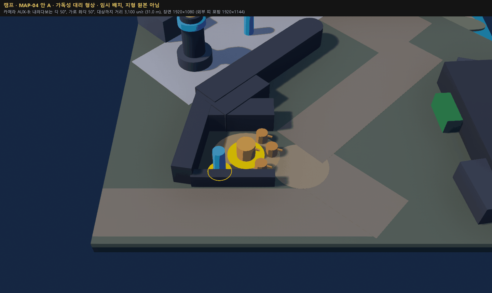

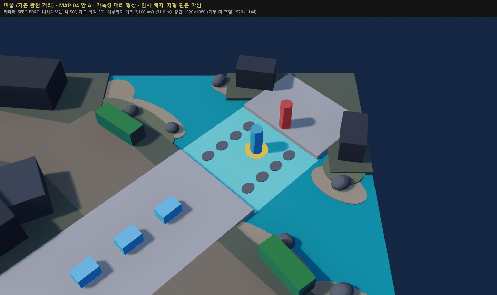
답변 완료출전·전술 화면에 담는 지침·역할·능력의 내용: 설계서대로인가, 시안의 간소판인가
대표 답변11-25 16:26 대표: "내가보낸 UI,HUD시안들은 디자인만 그대로 똑같이 하라는소리고 그안에있는값들은 우리원래설계서에있는 값들로 대체를하던가 수정을하면돼". 총괄의 반영: 선택지 A와 같습니다. 지침, 역할, 능력, 육각형의 축은 설계서의 것을 시안의 생김새에 담습니다. 15:58에 이미 주신 말씀을 총괄이 다시 여쭌 것이었습니다.
- 질문
- 화면의 생김새는 시안대로 만듭니다. 담는 내용만 여쭙니다. 시안은 개인 지침 12개(세 묶음에 넷씩, 켜고 끄기), 포지션마다 역할 3개씩 15개, 능력 6개를 보입니다. 앞서 주신 선수·포지션·전술 설계서는 개인 지침 36개(두 탭의 타일 24칸, 여러 단계의 선택), 역할 21개, 능력 41개(역할마다 6~8개를 보임)입니다.
- 선택지 A(추천): 내용은 설계서를 따릅니다. 시안의 생김새(패널, 지침 줄, 막대, 육각형)에 설계서의 지침·역할·능력을 담고, 지침 창은 설계서의 편집 방식(두 탭, 타일, 단계 선택)을 시안의 모양으로 만듭니다.
- 선택지 B: 내용도 시안의 간소판으로 합니다. 지침 12개, 역할 15개, 능력 6개로 줄이도록 설계서를 고칩니다. - 추천안과 이유
- 선택지 A를 추천합니다. 15:58에 주신 원칙(디자인은 시안과 똑같이, 내용은 우리 게임에 맞게)과 같고, 설계서는 대표가 주신 기획이며 그 가운데 아홉 항목은 결정으로 답해 주셨습니다. 선수 판단 시험(JUDGE-01)도 설계서의 지침 둘(웨이브 처리, 딜교환 빈도)의 뜻으로 재고 있습니다.
- 대안
- 선택지 B는 화면이 단순하고 시안과 칸 수까지 같습니다. 대신 설계서의 지침과 역할과 능력을 줄이는 개정이 필요하고, 앞서 답해 주신 선수 관련 결정과 어긋나는 곳을 다시 여쭤야 합니다.
- 플레이 차이
- A이면 선수마다 줄 수 있는 지침이 많고 단계가 있습니다(예: 딜교환 빈도를 자제, 표준, 적극에서 고름). 역할마다 보이는 능력이 다릅니다. B이면 켜고 끄는 지침 12개와 고정된 능력 6개입니다.
- 구현·다른 설계 영향
- UI/UX의 화면 설계서, 지침을 경기 입력에 싣는 계약 보정, 경기 AI가 읽는 지침의 목록이 이 답을 따릅니다.
- 결정 시점
- UI/UX가 관전 HUD를 먼저 설계하고 있어 그 사이에 답해 주시면 됩니다. 답이 올 때까지 이 칸은 설계서에 열어 둡니다.
- 숫자 상태
- 개수는 UI/UX가 시안과 설계서를 한 줄씩 견주어 센 값입니다. 총괄은 그 표의 일부만 읽었습니다. 지침, 역할, 능력을 따로 고르고 싶으시면 항목마다 답해 주셔도 됩니다.
답변 완료시안에만 있는 두 값: 전술 숙련도와 수행 부하를 어떻게 할까요
대표 답변11-25 16:26 대표: "내가보낸 UI,HUD시안들은 디자인만 그대로 똑같이 하라는소리고 그안에있는값들은 우리원래설계서에있는 값들로 대체를하던가 수정을하면돼". 총괄의 반영: 전술 숙련도와 수행 부하는 새 규칙으로 넣지 않습니다. 그 자리는 설계서에 있는 값으로 바꾸거나 자리를 고칩니다. 설계서에 대응하는 값이 없는 칸은 총괄과 UI/UX가 정하고 결과를 보고합니다. 관전 HUD의 실시간 개인 지침 자리도 같은 원칙으로 설계서와 계약에 있는 감독 오더로 채웁니다.
- 질문
- 시안의 선수 창에 '전술 숙련도 94%'와 '전술 이해도(19) 기반 수행 부하 적정, LOAD 63%'가 있습니다. 설계서에는 역할 숙련의 수치와 부하의 계산식이 없습니다.
- 선택지 A(추천): 자리는 시안대로 두고 값은 표본으로 표시합니다. 이 둘을 게임의 규칙으로 넣을지는 총괄이 설계 제안을 따로 올리고 그때 정하십니다.
- 선택지 B: 새 규칙으로 넣기로 하고 지금 설계를 시작합니다(예: 지침을 많이 줄수록 부하가 오르고, 전술 이해도가 낮으면 수행이 떨어지는 방식).
- 선택지 C: 두 값을 화면에서 뺍니다. - 추천안과 이유
- 선택지 A를 추천합니다. 화면 제작을 막지 않고, 새 규칙은 근거 조사와 설계 검토를 거쳐 정하는 것이 맞습니다.
- 대안
- B는 지침을 무한정 줄 수 없게 하는 제한이 생겨 전술 이해도 능력의 쓸모가 분명해집니다. 대신 지침의 값과 부하의 식을 새로 정해야 합니다. C는 가장 단순하지만 시안의 선수 창에서 두 자리가 빕니다.
- 플레이 차이
- B를 고르시면 선수에게 지침을 몇 개까지, 어떤 조합으로 줄지가 전술의 선택이 됩니다. A와 C는 지금의 경기 규칙을 바꾸지 않습니다.
- 구현·다른 설계 영향
- B이면 선수 능력(전술 이해도)과 지침의 계약, 경기 AI의 판단에 닿는 새 기획이라 설계 토론을 거칩니다. A이면 표본 표시만 더합니다.
- 결정 시점
- 급하지 않습니다. 답이 올 때까지 A처럼 표본으로 둡니다.
- 숫자 상태
- 94%, 19, 63%는 시안의 표본 값입니다. 게임 수치가 아닙니다.
답변 완료시안의 글꼴 셋을 게임에 넣어도 되겠습니까
대표 답변11-25 16:27 대표: "글꼴도 선택지 A로 ㄱㄱ". 총괄의 반영: 글꼴 셋을 넣습니다. 통합·배포가 격리 폴더를 거쳐 반입하고 라이선스 문서를 함께 둡니다. 관전 화면의 연결이 끝나는 대로 배정합니다. 그때까지는 대체 글꼴로 그립니다.
- 질문
- 시안은 글꼴 셋을 씁니다: 본문 글꼴(프리텐다드), 숫자 글꼴(젯브레인스 모노), 포지션 약어와 제목 글꼴(차크라 펫치). 앞의 둘은 우리 화면 키트의 설계에 이름이 들어 있지만 글꼴 파일은 아직 게임에 없어 대체 글꼴로 그리고 있고, 셋째는 키트에도 없습니다. 밖에서 가져온 것을 게임의 본 경로에 넣는 일이라 승인을 여쭙니다.
- 선택지 A(추천): 셋을 넣습니다. 통합·배포가 격리 폴더를 거쳐 반입하고 라이선스 문서를 함께 둡니다.
- 선택지 B: 넣지 않습니다. 지금처럼 대체 글꼴로 그립니다. - 추천안과 이유
- 선택지 A를 추천합니다. 무료이고 상업용 게임에 넣어도 되는 공개 글꼴 라이선스(SIL 오픈 폰트 라이선스 1.1)입니다. UI/UX가 배포처의 라이선스 원문에서 확인했습니다. 디자인을 시안과 똑같이 하려면 필요합니다.
- 대안
- 선택지 B이면 글자의 모양과 폭이 시안과 달라집니다. 셋 가운데 일부만 넣기를 바라시면 그렇게 답해 주셔도 됩니다.
- 플레이 차이
- 게임의 내용은 바뀌지 않습니다. 글자의 모양만 다릅니다.
- 구현·다른 설계 영향
- A이면 통합·배포가 글꼴 에셋을 반입하고 키트에 등록합니다. 비용은 없습니다. 지금까지의 화면 캡처는 대체 글꼴 기준이라 반입 뒤 다시 찍습니다.
- 결정 시점
- 화면 구현 전에 답해 주시면 됩니다. 그 전에는 대체 글꼴로 만들고 뒤에 바꿉니다.
- 숫자 상태
- 수치는 없습니다. 라이선스는 UI/UX의 확인이며 총괄이 원문을 직접 읽지는 않았습니다. 글꼴 파일이 게임에 없다는 것은 총괄이 저장소에서 확인했습니다.
답변 완료이번 주의 5대5 관전: 무엇까지 넣고 보실까요
대표 답변11-25 18:48 대표: "평타만으로도가자 5대5관전도". 총괄의 반영: 선택지 A입니다. 이번 주에 보시는 경기는 기본 공격만 쓰는 열 명이 라인전, 정글, 합류, 공성을 하는 경기입니다. 경기 코어와 경기 AI는 드론의 반격, 정글 캠프와 정글러의 동선, 라인전의 판단을 이어 갑니다. 스킬과 아이템은 이번 주에 설계와 실행부를 시작하고 관전에는 그 뒤에 넣습니다(카드의 선택지 A에 적은 범위입니다. 다르게 뜻하셨으면 말씀해 주십시오). 합격 판정은 그대로 대표가 하십니다.
- 질문
- 이번 주의 목표를 받았습니다(16:28): 선수 열 명의 5대5를 직접 보고 확인하시고, 선수 한 명 한 명의 플레이가 합리적이고 재미있다고 느끼실 때 완료입니다. 합격 판정은 대표가 하십니다.
지금 경기에 있는 것: 차로 드론, 포탑과 구조물, 기본 공격, 귀환, 처치와 경험치와 레벨. 없는 것: 계약자 스킬, 아이템, 시야 도구, 포지션 퀘스트. 정글 캠프는 부품과 시험만 있고 경기에 이어지지 않아 지금 정글러는 할 일이 없습니다. 최신 기준 여덟 경기는 60분 동안 처치도 구조물 파괴도 없었습니다.
- 선택지 A(추천): 이번 주는 화면과 판단을 먼저 합니다. 시안 디자인의 관전 화면에서 경기를 처음부터 끝까지 보시게 하고, 라인전의 판단(딜교환, 웨이브 처리, 드론의 반격), 정글 캠프와 정글러의 동선, 합류와 공성으로 승패가 나는 경기까지를 목표로 합니다. 스킬과 아이템은 이번 주에 설계와 실행부를 시작하되 관전에는 그 뒤에 들어갑니다.
- 선택지 B: 스킬을 이번 주 관전에 넣습니다. 스킬 실행부와 계약자 몇 명의 스킬을 먼저 만들고, 그만큼 정글과 판단 다듬기가 뒤로 갑니다. - 추천안과 이유
- 선택지 A를 추천합니다. 선수의 판단이 합리적인지는 스킬 없이도 보이고, 지금 가장 눈에 띄는 문제 둘(60분 동안 아무도 죽지 않음, 정글러가 할 일이 없음)은 스킬과 무관합니다. 스킬은 실행부가 코어에 아직 없어 열 명분을 한 주 안에 넣기는 어렵다고 봅니다. 다만 스킬과 아이템이 없으면 이번 주 안에 재미있다는 판정까지는 못 갈 수 있습니다. 그 점을 감안해 골라 주십시오.
- 대안
- 선택지 B는 볼거리가 빨리 생깁니다. 대신 판단과 정글이 덜 된 채로 스킬이 얹혀, 어색한 장면이 판단 때문인지 스킬 때문인지 가려내기 어려워집니다.
- 플레이 차이
- A이면 이번 주에 보시는 경기는 기본 공격만 쓰는 열 명이 라인전, 정글, 합류, 공성을 하는 경기입니다. B이면 일부 계약자가 스킬을 쓰지만 정글러의 동선과 라인전의 판단은 지금 수준에 가깝습니다.
- 구현·다른 설계 영향
- 경기 코어와 경기 AI의 이번 주 순서가 이 답을 따릅니다. 화면(관전, 출전·전술), 맵, 검증은 어느 쪽이든 그대로 갑니다.
- 결정 시점
- 오늘 답해 주시면 좋습니다. 답이 올 때까지는 두 선택지에 공통인 일(관전 화면, 드론의 반격, 딜교환과 웨이브의 시험, 보호막)을 계속합니다. 첫 관전 화면이 서면 바로 알립니다.
- 숫자 상태
- 여덟 경기와 60분은 독립 재측정으로 잰 값입니다. 한 주 안에 어렵다는 것은 총괄의 추정이며 잰 값이 아닙니다.
답변 완료기지 쪽 정글 입구를 더한 미드 구간: 이 구조와 밝기로 다음 단계에 가도 되겠습니까
대표 답변11-25 18:48 대표: "미드맵시안은 괜찮은것같아 그대로가자". 총괄의 반영: 선택지 A입니다(구조와 밝기 모두 이대로). 치수의 단일 원본에 이 입구를 넣고, 레벨은 다섯 캠프의 나머지 구간과 본 제작의 준비로 갑니다. 임시 배치 단계의 승인이며 판정 지형의 승인이나 본 제작의 승인이 아닙니다. 본 제작은 스틸컷 석 장으로 따로 여쭙니다.
- 질문
- 11-25 16:27의 말씀대로 미드 길의 입구는 그대로 두고, 기지 쪽에서 정글로 들어가는 입구를 방면마다 하나씩 더했습니다. 자리는 미드 길의 1차 포탑과 2차 포탑 사이입니다. 리그 오브 레전드의 맵에서는 같은 자리에서 길이 양쪽으로 갈라진다는 구조만 참고했고 모양과 비례는 따르지 않았습니다. 양쪽 입구에서 그쪽의 첫 캠프까지 길이 이어집니다. 조명과 연무는 앞선 촬영(MAP-07의 석 장) 그대로입니다. MAP-07에서는 구조에 대한 말씀만 주셔서 밝기를 여기서 함께 여쭙니다. 이 구조와 밝기로 다음 단계(실제 재질과 모델을 얹는 본 제작의 준비)에 가도 되겠습니까?
- 추천안과 이유
- 선택지 A(구조와 밝기 모두 이대로)를 추천합니다. 만들지 않은 역할의 눈가림 비평에서 치명 0, 중간 0, 사소 1로 통과했습니다(사소 하나는 넷째 그림 아래쪽 미드 판의 가는 접합선). 세 번의 비평을 거치며 입구가 통로로 읽히는지, 양쪽이 짝으로 읽히는지, 그늘 안에서 바닥과 벽과 개체가 구별되는지를 고쳤습니다.
- 대안
- 선택지 B: 구조는 이대로 두고 밝기와 연무를 다시 잡습니다(더 밝게, 더 어둡게, 연무를 줄이기처럼 방향을 한마디 주시면 됩니다). 선택지 C: 입구의 자리나 폭을 바꿉니다(예: 2차 포탑 쪽으로 더 붙이기, 더 넓히기). 이 경우 밝기는 다시 찍은 그림에서 함께 여쭙니다. 이 승인은 임시 배치 단계의 것이며 판정 지형의 승인이 아닙니다.
- 플레이 차이
- 기지에서 나온 선수가 미드 길을 강가까지 올라가지 않고 1차 포탑과 2차 포탑 사이에서 바로 정글로 들어갈 수 있습니다. 수비하는 쪽의 합류가 빨라지고, 공격하는 쪽은 1차 포탑을 민 뒤 이 입구로 정글에 들어갈 길이 생깁니다. 지금의 경기 판정에는 지형이 아직 없어 이 그림은 배치의 그림이며, 판정 지형에는 지형을 넣는 단계에서 반영합니다.
- 구현·다른 설계 영향
- A이면 치수의 단일 원본에 이 입구를 넣고 다섯 캠프의 나머지 구간과 본 제작의 준비로 갑니다. B나 C이면 그 부분만 고쳐 다시 찍어 올립니다. 판정 기하의 정본은 맵 명세이며, 입구의 좌표를 맵 명세에 넣는 일은 지형을 넣는 단계에서 따로 합니다.
- 결정 시점
- 지금 답하시면 레벨의 다음 구간 작업에 바로 반영합니다. 이번 주의 5대5 관전(위에서 본 2D 전장)에는 영향이 없어 급하지 않습니다.
- 숫자 상태
- 통로의 폭 360과 입구의 자리는 임시 배치의 값(시험값)이며 판정 지형의 값이 아닙니다. 그림은 상자와 판으로 만든 임시 배치이고 재질과 장식은 없습니다. 파란 원기둥은 계약자 한 명 크기의 가늠용 형상입니다. 독립 비평은 정지 화면 넉 장만 보았고 실제 통행과 충돌은 판단하지 않았습니다. 편집기에 놓은 169개 형상의 자리 대조와 대칭의 확인은 만든 역할의 자체 실행입니다. 총괄은 넉 장 가운데 위에서 본 한 장을 직접 봤습니다.


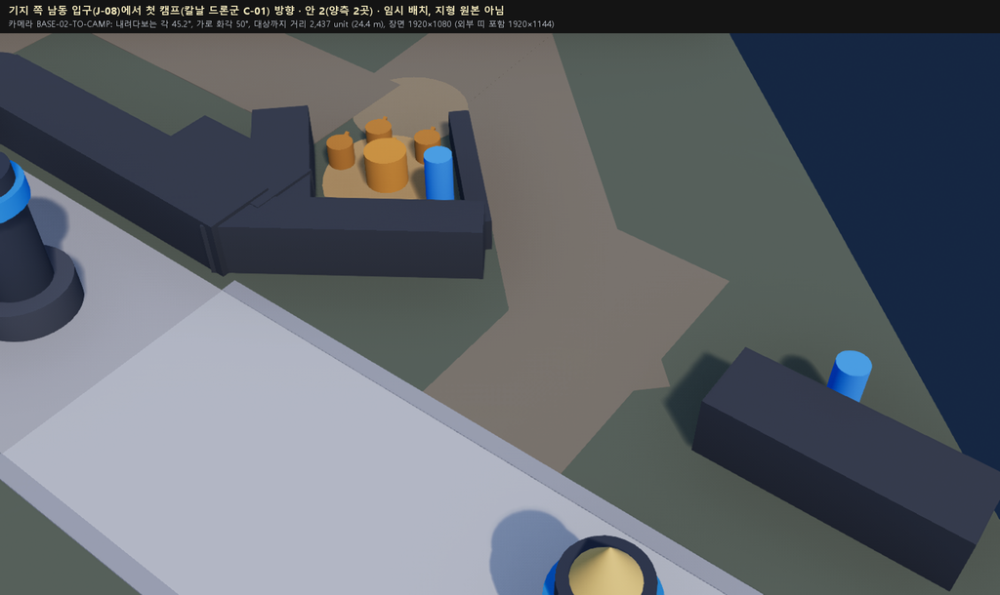

답변 완료라인 아이콘: 11-21에 정하신 참고 그림(1안)과 11-26 v4 시안의 엠블럼(2안) 중 어느 쪽으로 마무리할까요
대표 답변아이콘 1안 ㄱ (09:14 답변) 반영: 11-21 참고 그림 방향으로 정본 아이콘 다섯 장을 그려 출전, 관전, 결과 화면의 역할 표시에 씁니다. UI 소스 작성이 지금 하는 출전 흐름 작업 뒤에 이어 가고, 그 뒤 QA A가 그림만 보고 독립 비평을 합니다.
- 질문
- 11-21에 역할 아이콘(ART-06)을 '첨부한 이미지대로 갑니다'로 정하셨습니다. 그런데 11-26 출전 화면 v4 시안에 들어간 라인 엠블럼은 정글과 서포터 모양이 다릅니다. 참고 그림은 정글이 틀 안의 엇갈린 두 날, 서포터가 날개 달린 방패이고, v4 시안은 정글이 잎, 서포터가 삼지창 모양의 방패입니다. 탑, 미드, 원딜은 두 자료 모두 모서리 틀과 대각선 계열로 비슷합니다. 어느 쪽으로 정본 아이콘을 그릴까요?
- 추천안과 이유
- 1안(11-21 참고 그림)을 추천합니다. 아이콘만 놓고 직접 정하신 결정이 이것이고, v4 시안의 엠블럼은 화면 시안 안에 함께 들어간 작은 기호였습니다. 실제 화면 크기(10~12픽셀)에서 v4의 잎과 삼지창은 알아보기 어렵습니다. 1안 다섯 장은 UI 소스 작성이 초안으로 그려 두어, 답을 주시면 바로 마무리할 수 있습니다.
- 대안
- 2안(v4 시안의 엠블럼)입니다. 지금 게임 화면에 붙어 있는 모양이고, 고르시면 이 모양을 기준으로 정본 그림을 그립니다. 다만 작은 크기에서 정글과 서포터를 알아보기 어려운 점은 남습니다.
- 플레이 차이
- 경기 규칙의 차이는 없습니다. 출전, 관전, 결과 화면에서 역할을 알아보는 속도가 달라집니다.
- 구현·다른 설계 영향
- 고르신 쪽으로 정본 아이콘 다섯 장을 그려 출전, 관전, 결과 화면의 역할 표시에 씁니다. 화면에 엠블럼을 붙인 연결은 그대로 두고 그림만 바꿉니다. 그 뒤 QA A가 그림만 보고 독립 비평을 합니다.
- 결정 시점
- 정본 아이콘을 그리기 전입니다. 답을 주시면 바로 시작합니다.
- 숫자 상태
- 정할 수치가 없습니다. 아이콘 크기 16은 이미 승인된 값입니다.

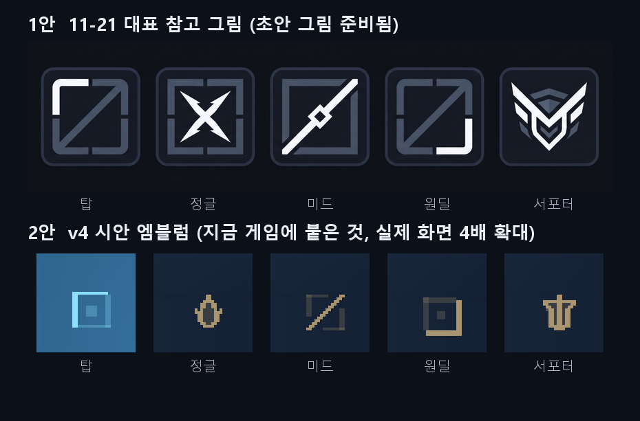
답변 완료팀 전술: 설계서의 선택형 축으로 할까요, v4 시안의 20~100 슬라이더로 할까요
대표 답변출전화면말고 설계서대로 하면돼 선택형 그 UI 시안은 순수하게 디자인만 가져온거라서 ㅇㅇ UI디자인만 그대로가고 거기 안에 버튼이나 이런것들은 모두다 설계서대로하면돼 (10:37 답변) 반영: 팀 전술은 설계서의 팀 방침 네 축(지원 투자, 성장 자원, 본대와 사이드 인원, 다음 공동 목표)을 선택형으로 만듭니다. 총괄이 더 제안했던 팀 템포와 시작 전술 포커싱은 설계서에 없어 팀 전술에 넣지 않고, 지금처럼 경기 중 감독 오더로 둡니다. v4 시안은 화면 외형만 따르고 단추와 입력 방식은 설계서대로 합니다. UI/UX가 출전 화면 명세의 팀 전술 탭을 이에 맞춰 고치고 있습니다.
- 질문
- 경기 전 지침 설정 단계의 팀 전술을 어떤 방식으로 고르게 할지 정합니다. 확정하신 선수·전술 설계서 v1.3은 팀 방침을 선택형으로 적습니다: 지원 투자(강측·균형·약측), 성장 자원(집중·균형·양보), 본대와 사이드 인원, 다음 공동 목표. 11-26 출전 화면 v4 시안은 초반 교전 공격성, 오브젝트 집결 우선도, 사이드 스플릿 비중을 20~100 슬라이더 세 개로 보여 줍니다. 두 자료가 달라 여쭙니다. 어느 방식으로 만들까요?
- 추천안과 이유
- 선택형을 추천합니다. 설계서의 역할별 추천 배분(강측·약측, 집중·양보)과 그대로 이어지고, 경기 중 감독 오더(교전 템포, 오브젝트 방침, 전술 포커싱)의 시작값으로 바로 쓸 수 있습니다. 축은 설계서의 네 가지에 경기 중 오더와 맞닿는 두 가지(팀 템포, 초반 1레벨 기조와 시작 전술 포커싱)를 더한 여섯 개를 제안합니다. 슬라이더의 78과 79처럼 한 칸 차이는 관전에서 선수 움직임의 차이로 확인하기 어렵습니다.
- 대안
- v4 시안의 슬라이더 세 개입니다. 조절이 세밀해 보이고 화면이 간단합니다. 고르시면 슬라이더 값과 선수 행동을 잇는 새 계산식을 정해야 하고, 설계서의 역할별 추천 배분과는 따로 맞춰야 합니다.
- 플레이 차이
- 선택형이면 '하체에 지원을 몰고 원딜에게 성장을 몰아준다'처럼 감독의 말로 작전을 짜고, 경기 중 오더로 그 기조를 바꿉니다. 슬라이더면 값을 조금씩 옮겨 성향을 정하지만, 작은 차이는 경기에서 구분되지 않습니다.
- 구현·다른 설계 영향
- 고르신 방식으로 경기 입력 계약의 팀 칸과 지침 설정 화면의 팀 전술 부분을 만듭니다. 개인 지침은 이 카드와 관계없이 설계서대로 진행합니다.
- 결정 시점
- 총괄이 경기 입력 계약에 지침 칸을 더하는 작업을 시작하기 전입니다. 이번 주 기본 공격 5대5 관전은 막지 않습니다.
- 숫자 상태
- 축마다의 선택지 수(세 개에서 다섯 개)는 총괄의 제안입니다. 시안에 적힌 78, 85, 64는 표본 값이며 쓰지 않습니다.
답변 완료포탑 골드: 롤과 같은 골드 체계에 우리 포탑 체력을 지킬까요, 롤의 포탑 체력까지 들일까요
대표 답변롤 포탑 규칙을 기준으로 동일화합니다. 기존 우리 체력·방어력 유지안은 변경합니다. 체력·저항·시간 변화·방패·보상·관련 공성 규칙을 한 묶음으로 대조해 주세요. (13:16 답변) 반영: 포탑 규칙을 롤 소환사의 협곡의 한 패치에 맞춥니다. 26.1부터 지금의 최신 패치까지 공식 패치 노트를 모두 확인해 기준 패치를 하나로 고정하고, 항목마다 출처와 적용 여부를 문서에 남깁니다. 이 카드에 적은 롤의 사실은 26.1 한 패치만 확인한 것이라, 뒤 패치의 변경(방호벽이 깨진 뒤의 임시 저항 증가, 결정 성장과 전령의 연결 등)까지 다시 대조합니다. 기본 공격 관전 경기 5001은 지금 규칙판으로 보존하고, 새 포탑 규칙은 새 규칙판으로만 켭니다. 방향과 범위를 정한 것이며 구현과 검증은 아직입니다.
- 질문
- 현행 롤처럼 포탑 골드 체계를 바꿉니다. 롤은 1~3차 라인 포탑에 영구 방패 다섯 칸(잃은 체력 10, 25, 45, 70, 100% 지점)을 두고 칸마다 골드를 주며, 완파 때의 지역 골드를 없애고 팀 전원 골드와 경기 첫 포탑 300골드를 둡니다. 같은 패치에서 롤은 외곽 포탑 체력을 9,000으로 올렸습니다. 우리는 1차 포탑에만 14분까지 방호벽 다섯 칸이 있고 1차 포탑 체력은 5,000입니다. 포탑 체력까지 롤과 같게 할지 정합니다.
- 추천안과 이유
- 골드 체계만 롤과 같게 하고 포탑 체력과 방어력은 우리 값을 지키는 안을 추천합니다. 골드 숫자만 바꾸고 방호벽을 지금대로 두면 14분 이후의 1차 포탑과 2·3차 포탑에서 지역 골드가 0이 되므로, 방호벽을 1~3차 포탑의 영구 다섯 칸으로 바꾸는 것까지 한 묶음입니다. 체력은 타이탄의 포탑 박치기 피해 2,250이 1차 포탑 체력 5,000의 45%가 되도록 맞춘 비례와 평균 경기 시간 28~32분 기준을 지키려고 유지합니다.
- 대안
- 롤의 포탑 체력(외곽 9,000 등), 시간에 따라 줄어드는 방어력, 포탑을 치는 쪽의 보조 효과까지 함께 들이는 안입니다. 롤과 가장 가깝지만 타이탄 박치기가 포탑 체력의 25%로 줄고 공성이 길어져, 타이탄과 공성 수치를 다시 맞춰야 합니다.
- 플레이 차이
- 추천안이면 2·3차 포탑을 깎을 때도 칸마다 골드가 나와 중반 사이드 압박의 보상이 생깁니다. 첫 포탑 보너스를 뺀 포탑 한 기 기준으로 10분에 깬 1차 포탑은 1,125골드에서 850골드로 줄고 3차 포탑은 400골드에서 725골드로 늡니다. 양 팀이 고르게 주고받는 경기에서는 구조물 골드 합계가 거의 같고(약 0.6~1.7% 증가), 한쪽이 일방적으로 미는 경기에서는 앞선 팀의 골드가 크게 늘어 더 빨리 커집니다.
- 구현·다른 설계 영향
- 경기 코어의 방호벽 규칙(14분 만료를 없애고 2·3차로 넓히며 칸 경계를 바꿈), 골드 지급, 경기 결과 기록, 규칙 명세를 고칩니다. 코어의 구조물 자료에는 이미 칸 다섯 개 자리가 있습니다. 경기 AI가 포탑을 칠 가치도 새 골드에 맞춰 다시 셉니다.
- 결정 시점
- 이번 주 기본 공격 5대5 관전 뒤의 규칙 개정 때입니다. 지금 정하시지 않아도 이번 주 목표는 막지 않습니다.
- 숫자 상태
- 롤의 값(1~3차 칸당 120골드, 1차만 11분부터 분당 10골드씩 4회 줄어 최저 80골드·2·3차는 120골드 유지, 첫 포탑 300골드, 전원 50·25·25골드)은 롤 공식 패치 노트의 사실입니다. 우리 적용값은 제안이고, 경제 영향은 서면 검산이며 경기 실측이 아닙니다.
답변 완료쌍둥이 포탑: 방호벽 없이 파괴 때 팀 전원 50골드만 줄까요
대표 답변방패 없이, 한 기 파괴 시 팀원당 50G라는 보상안을 채택합니다. 쌍둥이 본체의 체력·저항·재생·재생성 규칙은 TURRET-02의 동일화 범위에 포함해 정리해 주세요. (13:16 답변) 반영: 쌍둥이 포탑은 방호벽 없이 한 기 파괴마다 팀원당 50골드를 줍니다. 600골드 방호벽 보상은 붙이지 않습니다. 이 값이 롤의 지금 값과 같은지는 근거 확인 결과로 따로 적습니다. 쌍둥이의 체력·저항·재생·재생성은 포탑 동일화 범위에 넣습니다.
- 질문
- 코어 앞 쌍둥이 포탑을 깰 때의 보상을 정합니다. 지금 우리 쌍둥이 포탑은 골드를 주지 않습니다. 롤의 공식 패치 노트는 같은 문서 안에서도 넥서스 포탑의 방패를 두고 설명이 엇갈리고 액수가 없어, 롤과 같게 할 기준이 확인되지 않습니다.
- 추천안과 이유
- 방호벽 없이 쌍둥이 포탑 한 기를 깰 때마다 팀 전원에게 50골드씩 주는 안을 추천합니다. 확인된 롤 규칙(넥서스 포탑 파괴 때 전원 50골드)만 옮기고, 확인되지 않은 방패 골드는 넣지 않습니다.
- 대안
- 1~3차 포탑처럼 영구 방호벽 다섯 칸(칸당 120골드, 한 기 600골드)까지 두는 안입니다. 마지막 공성 직전에 쌍둥이를 조금씩 깎는 것만으로도 골드가 나옵니다.
- 플레이 차이
- 추천안이면 쌍둥이를 깬 팀이 한 기에 다섯 명 합계 250골드를 얻습니다. 대안이면 쌍둥이를 깎는 동안에도 골드가 쌓여, 끝내기 직전의 견제와 역전 시도의 보상이 커집니다.
- 구현·다른 설계 영향
- 경기 코어의 골드 지급과 규칙 명세를 고칩니다. 대안을 고르시면 쌍둥이 포탑에도 방호벽을 두는 규칙이 더 붙습니다.
- 결정 시점
- 포탑 골드 범위 카드와 함께 정하시면 됩니다. 이번 주 목표는 막지 않습니다.
- 숫자 상태
- 전원 50골드는 롤 공식 자료의 사실이고, 쌍둥이에 방패 골드가 있는지는 미확인입니다. 600골드는 다른 포탑의 값을 빌린 비교값입니다.
답변 완료상단 시간표: 유충형 오브젝트를 8분에 두고 타이탄을 15분으로 옮길까요
대표 답변신규 유충형 오브젝트 08:00 등장·14:45 소멸 → 타이탄 15:00 등장·19:45 소멸 방향으로 진행합니다. 첫 루멘 시드 05:00과 이클립스 20:00은 유지합니다. (13:16 답변) 반영: 유충형 오브젝트가 8분에 나와 14분 45초에 사라지고, 타이탄이 15분에 나와 19분 45초에 사라집니다. 5분 첫 루멘 시드와 20분 이클립스는 그대로입니다. 유충형 오브젝트가 준비되기 전에 타이탄만 15분으로 옮기지 않습니다. 타이탄 개체가 사라지는 시각과 처치한 팀이 얻은 공성 효과의 지속 시간은 따로 정합니다.
- 질문
- 롤의 공허 유충처럼 타이탄 전에 나오는 새 오브젝트(이름 미정)를 상단 둥지에 둡니다. 현행 롤은 유충이 8분에 세 마리 한 번 나오고 14분 45초에 사라지며, 전령이 15분에 나옵니다. 우리는 지금 같은 둥지에 타이탄이 8분에 나옵니다. 둘의 순서를 정합니다.
- 추천안과 이유
- 유충형 오브젝트를 8분에 한 번 세 기(14분 45초 소멸), 타이탄을 15분으로 옮기는 안을 추천합니다. 현행 롤과 같은 순서이고, 5분 첫 루멘 시드와 15분 타이탄 사이에 상단 목표가 하나 생겨 오브젝트가 3~5분 간격으로 나뉩니다. 이클립스 20분은 그대로입니다.
- 대안
- 타이탄 8분을 지키고 유충형 오브젝트를 5분(7분 45초 소멸)으로 당기는 안입니다. 확정된 타이탄 시각은 그대로지만, 5분에 첫 루멘 시드, 상단 유충형, 포탑 요새화 해제가 한꺼번에 몰리고 목표가 6레벨 전후의 짧은 구간에 놓여, 롤이 지난 시즌들에 줄인 초반 과밀이 다시 생깁니다.
- 플레이 차이
- 추천안이면 8분 유충형으로 첫 포탑을 압박하고 15분 타이탄으로 굳은 포탑을 뚫는 흐름이 생깁니다. 타이탄의 소멸 시각(19분 45초)은 그대로라 타이탄이 나와 있는 시간이 지금 11분 45초에서 4분 45초로 줄어듭니다. 대안이면 5분 전후에 목표가 몰려 정글러와 라이너의 판단이 겹칩니다.
- 구현·다른 설계 영향
- 타이탄 출현 시각은 확정된 규칙이라 규칙 명세, 경기 코어의 오브젝트 시간표, 경기 AI의 오브젝트 준비 판단(받으신 AI 설계서의 운영 부분 포함)을 함께 고칩니다.
- 결정 시점
- 이번 주 기본 공격 5대5 관전 뒤의 규칙 개정 때입니다.
- 숫자 상태
- 8분, 14분 45초, 15분은 현행 롤 공식 자료의 사실을 옮긴 제안입니다. 5분과 7분 45초는 대안의 시험값입니다.
답변 완료유충형 오브젝트의 효과: 소환수 없이 구조물 피해 강화로 할까요
대표 답변독립 소환물 없이 팀 1~3스택에 따른 구조물 추가 피해, 3마리 확보 시 추가 주기 피해 방향으로 진행합니다. 구체 수치는 새 포탑 환경에서 시험합니다. (13:16 답변) 반영: 소환수 없이, 팀이 잡은 수(1~3)만큼 구조물 추가 피해를 주고 세 마리를 모두 잡으면 주기적인 추가 피해를 줍니다. 피해량·주기·지속 시간·처치 골드·경험치는 새 포탑 환경에서 시험값으로 정합니다. 양 팀이 나눠 잡을 때의 스택, 같은 개체의 중복 보상, 여러 아군이 같은 포탑을 칠 때의 중첩, 효과를 일으키는 공격의 종류, 백도어 보호와의 관계를 시험합니다. 이 카드의 '포탑의 표적 규칙과 다이브 난도가 그대로'라는 설명은 틀렸습니다. 표적 규칙이 같아도 공성 속도가 바뀌면 다이브의 결과가 달라질 수 있습니다.
- 질문
- 롤은 유충을 잡은 수만큼 팀이 구조물에 주는 피해가 늘고, 세 마리를 모두 잡으면 포탑을 칠 때 작은 소환수(공허충)가 나와 함께 공격합니다. 우리 게임에서 독립 체력과 판단을 가진 소환수는 코어의 개체 수 상한과 아트 제한에 걸립니다. 효과를 어떻게 만들지 정합니다.
- 추천안과 이유
- 소환수 없이, 잡은 수(1~3)만큼 팀이 구조물을 칠 때 주는 고정 피해를 늘리고 세 기를 모두 잡으면 주기적인 추가 고정 피해를 주는 안을 추천합니다. 둥지 전투 중의 잡몹 소환도 뺍니다. 포탑의 표적 규칙과 다이브 난도가 그대로이고, 둥지 모델 한 종과 공용 효과만 있으면 됩니다.
- 대안
- 롤처럼 세 기를 모두 잡은 팀이 포탑을 칠 때 실제 소환수가 나오게 하는 안입니다. 포탑 밑에 소환수 무리가 붙는 장면이 생기지만, 코어의 개체 수 예산, 포탑 표적 규칙, 소환수 전용 모델과 동작을 새로 만들어야 합니다.
- 플레이 차이
- 추천안이면 관전 화면에서 스택 표시(1~3)와 포탑 체력바의 추가 피해로 공성이 빨라지는 것을 봅니다. 대안이면 소환수가 포탑 공격을 대신 맞을 수 있어 다이브와 공성의 계산이 달라집니다.
- 구현·다른 설계 영향
- 추천안은 경기 코어의 버프와 피해 규칙, 결과 기록, 관전 효과를 더합니다. 대안은 그 위에 새 소환 개체와 경기 AI의 소환수 판단이 더해집니다.
- 결정 시점
- 상단 시간표 카드와 함께 정하시면 됩니다.
- 숫자 상태
- 스택당 피해량, 세 기 효과의 추가 피해와 주기는 모두 시험값입니다.
답변 완료반영 단계: 이번 주 목표 뒤 포탑 골드부터 넣을까요
대표 답변기존 ‘포탑 골드 먼저’를 ‘포탑 규칙 전체 묶음 먼저’로 수정합니다. 이후 신규 상단 오브젝트와 타이탄 시간표 변경을 연결합니다. (13:16 답변) 반영: 순서는 다음과 같습니다. 5001의 규칙판·입력·기록 보존, 포탑 묶음의 기능별 구현, 새 포탑을 상대로 한 계약자·드론·타이탄의 피해와 보상 정산 확인, 유충형 오브젝트와 타이탄 15분의 동시 적용, 스킬·아이템 구매가 있는 경기에서 경제·공성·경기 길이 재측정입니다. 일부만 넣은 상태와 포탑 동일화를 마친 상태는 구별해 알려 드립니다. 평균 경기 시간 28~32분 목표는 그대로 두고, 규칙이 같아졌다고 경기 시간도 같다고 보지 않습니다.
- 질문
- 위에서 고르신 구성을 언제 경기 규칙에 넣을지 정합니다.
- 추천안과 이유
- 이번 주 기본 공격 5대5 관전을 마친 뒤 M1 규칙 개정에 포탑 골드부터 넣고, 유충형 오브젝트는 데이터와 모델이 준비되는 대로 이어서 넣는 안을 추천합니다. 포탑 골드는 코어의 구조물 자료에 이미 자리가 있어 변경이 작습니다.
- 대안
- 둘 다 M2 오브젝트 확장 단계로 미루는 안입니다. 지금 규칙이 길게 유지되어 비교 기준이 안정되지만, 요청하신 롤과 같은 골드 체계는 그만큼 늦어집니다.
- 플레이 차이
- 추천안이면 다음 시험 경기들부터 포탑 칸 골드가 보입니다. 대안이면 M2 전까지 지금의 14분 방호벽이 유지됩니다.
- 구현·다른 설계 영향
- 추천안은 규칙 명세, 경기 코어, 밸런스 경제 회귀, 관전 화면의 방호벽 표시를 차례로 고칩니다.
- 결정 시점
- 다른 네 카드와 함께 정하시면 됩니다.
- 숫자 상태
- 새 숫자는 없습니다.
총괄이 정리해 닫은 보고1건
일이 끝났거나 뒤 카드로 대체된 총괄 결정 보고입니다. 대표가 답하신 것이 아니며, 닫은 까닭은 총괄이 적었습니다.
총괄 결정 보고관전 화면에서 실제 경기 보기: 첫 단계의 범위와 순서
총괄의 정리이 보고가 정한 첫 단계(실제로 도는 경기를 관전 화면으로 보기)는 만들어졌고, 그 결과와 남은 일(만들지 않은 역할의 확인, 주 가지 반영)은 VIEW-02가 보고합니다. 끝난 것은 완료·종결 탭에 두라는 11-25 19:41의 말씀에 따라 여기로 옮겼습니다. 대표가 이 카드에 답하신 것은 아닙니다.
- 질문
- 관전 화면은 지금 표본 자료만 보여 줍니다. 실제로 도는 경기 한 판을 화면으로 보는 첫 단계를 어디까지로 잡을지 총괄이 정했습니다. 답이 없어도 진행합니다. 고치실 곳이 있으면 말씀해 주십시오.
- 추천안과 이유
- 첫 단계는 시험용 표본 경기 한 판을 위에서 내려다본 2D 전장으로 봅니다. 보이는 것: 계약자 열 명과 드론과 구조물의 자리, 체력, 생사, 처치와 구조물 파괴와 경기 종료의 알림, 재생과 일시정지와 배속(1배, 4배, 16배). 까닭 1: 지금의 경기에는 스킬, 중립 캠프, 보호막이 아직 없어 그릴 것이 이동과 기본 공격까지입니다. 까닭 2: 조사에서 한 틱의 계산이 0.1~0.15밀리초로 나와(총괄이 다시 재지는 않았고 배정한 작업에서 잽니다) 화면과 같은 흐름에서 경기를 돌려도 되므로, 계약이 정한 전달 장치(별도 실행 흐름과 완충)는 뒤 단계로 미뤄도 됩니다. 화면이 받는 값의 모양은 뒤 단계와 같게 계약에 적었으므로 뒤에는 전달 방법만 바꾸면 됩니다.
- 대안
- 가: 처음부터 3D 전장과 전달 장치를 모두 만든다. 첫 화면까지 오래 걸리고 그동안 경기를 눈으로 볼 수 없습니다. 나: 화면 없이 수치 보고만 계속한다. 지금의 방식이며 대표가 경기를 직접 보실 수 없습니다.
- 플레이 차이
- 첫 단계의 화면은 중계 화면이 아니라 확인용입니다. 캐릭터 모델, 모션, 스킬 효과, 시야 안개, 되감기가 없습니다. 계약자는 팀색 원, 드론은 점, 구조물은 각진 표지로 보입니다. 틱과 틱 사이의 움직임은 화면이 직선으로 이어 그리는 표시이며 판정과 무관합니다. 경기 결과는 화면을 붙여도 달라지지 않아야 하고, 그것을 시험으로 확인합니다.
- 구현·다른 설계 영향
- 계약 04를 보정했습니다(보정 C-55): 첫 단계의 범위, 화면이 받는 장면과 알림의 모양, 번호가 비어 있던 목록 둘, 문서 안에서 서로 달랐던 알림 종류의 폭. 표시 계약의 코드를 새로 썼습니다. 쓰다가 찾은 것 하나: 장면 한 벌이 약 1.02MB라 기본 실행 스택에 두면 넘칩니다. 계약과 코드에 적었습니다. 배정(15:19): 장면을 만드는 코어 쪽 부분은 경기 AI(경기 코어가 다른 일을 하는 동안 새 파일에 한해 맡기고 끝나면 경기 코어가 이어받습니다), 전장 그림은 UI 소스 작성, UE에서 경기를 돌려 화면에 잇는 일은 통합·배포(코어 쪽 선언이 나온 뒤)입니다.
- 결정 시점
- 지금 진행합니다. 대표의 선택이 필요한 것은 없습니다. 첫 화면이 나오면 만들지 않은 세션의 검수를 거쳐 보여 드리고, 그때 화면의 합격을 여쭙니다.
- 숫자 상태
- 정한 게임 수치는 없습니다. 표본 경기의 입력은 시험 표본이며 결과를 월드와 기록과 기사에 반영하지 않습니다. 화면의 표지 크기와 색은 시험값이고 UI/UX가 화면 설계로 확정합니다. 세 단계의 현재 상태(17:01 기준)를 구분해 적습니다. (1) 표본 자료로 화면이 표시되는 상태: 관전 화면의 2D 전장 1단계가 표본 자료 기준으로 자체 실행을 마쳤습니다(16:41, 자동화 97건·커밋 기준 검증 통과, 554개 표지 장면 그리기 0.063밀리초 측정값, 촬영 6장. 독립 확인과 시안 디자인 반영은 진행 중). (2) 실제 경기 좌표가 연결된 상태: 진행 중입니다(표시 계약 보정 C-55는 15:20 계약 시험 8건 자체 실행·계약 검사 11묶음 통과, 코어의 표시 생산자는 15:52 표본 경기 32,366틱 결과 일치·경기 시험 261건·계약 시험 144건 자체 통과 뒤 17:01 QA B 독립 확인에서 팀 킬 합 대조 단언 1건의 시험 빈 곳이 나와 보완 후 주 가지에 반영하며, 통합·배포의 UE 연결은 15:28 배정 뒤 진행 중이라 실제 경기 화면은 미완성). (3) 화면 가독성 검토를 통과한 상태: 아직입니다(첫 실제 연결 화면과 시안 디자인 반영 뒤에 만들지 않은 세션의 눈가림 비평을 받습니다). 17:04의 갱신: (2)는 통합 가지에서 이어졌습니다(VIEW-02, 자체 실행, 주 가지 전). (3)은 아직 하지 않았습니다.
변경 이력: 15:26 첫 게시 때는 표시 계약 코드의 자체 시험 8건만 있었고 코어 생산자, 2D 전장 1단계, 독립 확인 전이었습니다.
답변이 끝난 기획 검토3건
답변 완료질풍의 회전익: 완성 전에 한 발 맞히고 자리를 바꾸는 선택을 시험할까요?
대표 답변현행 아이템을 유지하면서 후속 격리 비교 시험을 허용합니다. 정식 반영은 아직 확정하지 않습니다. 기본 관전·스킬 실행 개발보다 먼저 착수할 필요는 없습니다. (13:16 답변) 반영: 질풍의 회전익은 지금처럼 공격 속도와 치명타 확률만 줍니다. 적중 뒤 이동 속도 안은 스킬·아이템 비교 환경이 준비된 뒤 격리 시험으로만 돌립니다. 증가량·지속 시간·갱신·중복·재구매 처리를 시험 명세에 적고, 다음 기본 공격 시각이 앞당겨지지 않는지, 포기한 기본 공격 피해·CS·생존을 함께 비교합니다. 시험 허용은 정식 반영 승인이 아닙니다.
- 받은 날
- 요약
- 현재 질풍의 회전익(C03)은 공격 속도와 치명타 확률만 줍니다. 비교할 안은 이 재료를 든 선수가 적 계약자를 기본 공격으로 맞힌 뒤 잠시 빨라지는 것입니다. 한 발 쏜 뒤 따라붙을지, 반격 사거리 밖으로 빠질지에 차이가 생기는지 보려는 제안입니다.
- 쟁점
- 시험안에서는 공격한 쪽과 맞은 적 계약자가 모두 살아 있고, 기본 공격 자체가 적의 체력을 줄이거나 보호막을 소모했을 때만 이동 속도가 오릅니다. 빗나간 공격, 피해 없는 타격, 드론·몬스터·구조물 타격, 스킬, 아이템 파생 피해로는 빨라지지 않습니다.
- 총괄 반박
- 첫 타격 뒤마다 거리를 벌릴 수 있다면 완성품을 사기보다 재료를 오래 들고 있는 편이 유리해질 수 있습니다. 첫 전설을 완성하기 전까지 후퇴에 성공한 횟수뿐 아니라 다음 기본 공격을 포기했는지도 함께 봐야 합니다.
- 게임디자인 의견
- 출시 후 시험 후보인 나디라의 권역 기획을 예로 들면, 좁은 통로에서 멈춘 적을 한 발 맞히고 직선으로 물러날 때 둘 사이의 거리는 벌어지지만 적의 옆을 돈 각도는 늘지 않습니다. 이동 속도 보너스를 나디라의 측면 이동 보상으로 세지 않습니다.
- 합의
- 권역 기획에서 비교 장면을 가져왔을 뿐, 원 기획 담당이 이 아이템 시험안에 동의한 것은 아닙니다. 효과와 실제 경기, 선수 AI의 구매·이동 판단은 아직 검증하지 않았습니다.
- 최종안
- 기존 가격과 능력치는 그대로 두고 적중 직후의 이동 속도만 먼저 비교하는 안을 권합니다. 증가량과 지속 시간은 미정입니다. 세 번째 타격의 추가 피해는 v0.3 r0에서 제안한 완성 전설 L02에만 남기고 C03에는 주지 않습니다. 공개 기준 v0.2 r1의 L02 효과나 부패의 소작집게(C10)의 기존 치유 감소는 바꾸지 않습니다.
- 대표에게 확인받을 항목
- C03을 산 뒤의 이동 속도만 별도로 시험할까요, 아니면 시험을 추가하지 않고 지금처럼 능력치만 주는 재료로 둘까요?
답변 완료선수 판단 검토안: 딜교환, 판단의 오차, 웨이브 처리 (총괄의 신규 제안)
대표 답변15:22 무렵 'JUDGE-01 선수 판단 개선안 토론 결과'라는 글 한 편을 붙여 주셨습니다. 글의 검토 결론: "① 짧은 딜교환 분리와 ③ 웨이브 처리 정책을 먼저 시험하고, ② 선수별 전력 추정 오차는 후순위로 보류할 것을 권고합니다." 글이 적은 한계: 서면 토론의 결과이며 구현 승인, 수치 확정, 엔진과 경기 검증의 완료를 뜻하지 않습니다. 새 구현과 계수는 시험 표본으로 관리합니다. 반영: 세 물음의 답으로 받았습니다(제안 1과 3은 먼저 시험, 제안 2는 뒤로). 총괄의 읽기(교정 대상): 기본으로 꺼 둔 시험 기능으로 만들어 네 조건(현행 기준, 딜교환만, 웨이브만, 둘 다)을 재는 데까지 진행합니다. 켠 상태를 기본으로 채택하는 일과 수치의 확정은 결과를 보신 뒤 대표가 정하십니다. 순서: 1. 최신 기준선의 재확인(검증이 진행 중인 시드 넷 48경기의 독립 재측정을 씁니다). 2. 글이 든 상세화 전의 확인 넷(코어가 읽는 선수 능력과 판단 항목의 연결, AI가 가정하는 전투 효과와 실제 정산의 일치, 중단 뒤 재접근의 조건, 웨이브 행동과 딜교환의 우선순위)을 코드에서 조사하고 있습니다. 3. 총괄이 상세 설계를 씁니다(종료와 재접근의 조건, 접근과 후퇴의 반복 검출, 탈락 사유의 집계 포함). 4. 경기 AI가 시험 기능으로 구현합니다(지금 하는 관전 작업 뒤). 5. 네 조건을 같은 입력과 시드로 재고 진영을 바꿔 다시 잽니다. 6. 만들지 않은 쪽이 독립으로 다시 잽니다. 총괄이 덧붙이는 사실 둘. (가) 글은 11-25의 결과를 단일 시드의 개선으로 적었지만 그 뒤 시드 넷 48경기로 넓힌 둘째 측정(15:27 독립 재측정 통과, 15:28 주 가지 반영)이 있습니다. 관찰된 결과: 선개전을 준 쪽과 생존 우선을 준 쪽이 각각 8경기를 모두 졌습니다. 원인 가설: 시드 0의 원래 진영 두 경기 기록에서는 두 포탑 사거리 밖에서 먼저 때렸으나 막타와 탑 구조물에서 뒤진 경로가 읽혔고(경기 AI 자체 분석), 나머지 경기의 패배 원인은 확인하지 않았습니다. 글의 '교전 횟수 증가만으로 성공 판정하지 않습니다'와 같은 방향이며 딜교환과 웨이브를 함께 재야 하는 근거입니다. (나) 시험 기능의 켜고 끔은 경기의 입력에 실어야 같은 입력에서 같은 경기가 나옵니다. 시험 표본 입력으로만 두고 정식 경기의 입력 형식은 바꾸지 않습니다. 보호막 정산이 경기의 피해 경로에 이어져 있지 않은 것은 글의 말대로 시험 범위에 적고, 확인 넷의 둘째에서 함께 봅니다. 15:50 갱신. (1) 시드 넷 48경기의 독립 재측정이 15:27에 끝났습니다(치명 0, 중간 0, 사소 2). 주 가지에 넣었습니다. (2) 최신 기준선: 두 팀 모두 지침 없이 능력치가 같을 때 시드 넷의 8경기가 모두 60분 한도까지 끝나지 않았습니다(처치 0:0, 잃은 구조물 0:0, 막타 412:412). 11-22의 진단은 최신 코드에서도 그대로입니다. (3) 글이 든 확인 넷을 코드에서 조사했습니다. 코어가 읽는 선수 능력은 둘뿐입니다(하나는 명령의 지연, 하나는 막타). 접근, 교전, 후퇴, 귀환의 판단은 선수 능력을 읽지 않습니다. AI의 교전 평가는 보이는 체력과 초당 피해의 비율뿐이라 방어, 선딜, 포탑, 드론을 셈하지 않습니다. 접근과 공격이 한 문턱을 같이 쓰고, 중단한 뒤의 기억이 없어 조건이 같으면 다음 판단에서 다시 다가갑니다. 계약자를 때린 계약자에게 드론이 반격하는 규칙(규칙 8.1-A)은 경기에 아직 구현되어 있지 않습니다. 딜교환의 값을 재려면 이것이 먼저 있어야 하므로 상세 설계에 선행 작업으로 넣습니다. (4) 총괄의 정정: 검토안의 요약에 '레인에서 막타만 치고 웨이브를 밀지 않음'이라고 적었는데 틀렸습니다. 막타가 없을 때는 사거리 안의 체력이 가장 낮은 적 드론을 칩니다. 두 팀이 똑같이 밀어 웨이브가 맞서는 것이 지금의 모습입니다. 웨이브 처리 정책(유지, 느린 푸시, 빠른 정리의 선택)의 뜻은 그대로이고, 설계의 출발점을 이 사실로 고칩니다. 16:09 갱신. 시험 설계를 썼습니다(총괄의 초안, 수치는 모두 시험값). 짧은 딜교환은 네 조건(합법 경로, 공격 준비, 철수 방향, 현재 위험)이 모두 맞을 때만 시작하고 접근, 타격, 이탈의 세 단계로 기록합니다. 한 번 마치거나 그만둔 계약자는 정해진 시간이 지나야 새 짧은 딜교환을 시작합니다. 잠기는 것은 그것 하나이고 막타, 전면 교전, 물러남은 막지 않습니다. 웨이브는 유지, 느린 푸시, 빠른 정리의 세 상태를 관측과 팀 목표로 고릅니다. 재는 조건은 양쪽 적용 넷과 한쪽 적용 셋이고 시드 0~7에 두 진영입니다. 선행 작업은 드론의 반격 규칙의 구현(경기 코어)입니다. 그 전의 측정에는 '드론 반격 없음'을 붙이고 구현 뒤에 다시 잽니다. 단계를 적을 자리는 이미 있는 상태 필드에 값의 뜻을 정해 마련했습니다(계약 보정, 배치와 판 번호는 그대로). 경기 AI가 15:58에 구현을 시작했습니다. 출전·전술 화면 시안의 라인전 지침 넷(라인 우선 푸시, 안전 거리 유지, 적극적 딜교환, 자원 세이브)을 이 시험의 입력 이름으로 씁니다.
변경 이력: 15:26 첫 기록에서는 시드 0의 두 경기에서 읽은 경로를 열여섯 경기 전체의 확정 원인처럼 적었고 독립 재측정 완료 전으로 적었습니다.
- 받은 날
- 요약
- 능력치가 같은 두 팀은 지금 싸우지 않습니다(11-22의 진단: 40경기에서 서로의 공격 사거리에 든 순간 0, 잃은 구조물 0:0). 막는 것은 셋입니다: 다가가기와 공격이 같은 교전 문턱 하나에 걸려 있음, 적 계약자의 평가에 선수의 오차가 없음, 레인에서 막타만 치고 웨이브를 밀지 않음. 이 셋은 선수·전술 설계서의 능력(딜교환 설계, 피해·생존 계산, 웨이브 관리)과 지침(딜교환 빈도, 라인 압박 목표, 웨이브 처리)이 가리키는 판단 지점과 같습니다. 그래서 설계서의 말로 세 가지를 제안합니다. 제안 1: 한 번 치고 물러나는 딜교환을 전면 교전과 다른 문턱으로 따로 판단한다(상대 드론이 2초 동안 나를 치는 손해를 셈에 넣음). 제안 2: 적 전력의 추정에 선수별 오차를 두고 피해·생존 계산이 높을수록 좁힌다. 제안 3: 레인에서 웨이브의 목표 상태(유지, 느린 푸시, 빠른 정리)를 고르게 한다. 선수의 능력과 지침은 판단에만 닿고 계약자의 수치는 바꾸지 않습니다. 수치는 모두 미정이고 구현 배정 전입니다.
- 쟁점
- 딜교환만으로 승패가 갈리는가. 오차로 싸움을 만드는 것이 능력의 뜻과 맞는가. 웨이브 처리의 기본값을 어떤 조건식으로 둘 것인가. 설계서의 피해·생존 계산 능력을 지금 코어가 읽지 않는데(코어가 읽는 선수 능력은 둘) 제안 2를 언제 넣을 것인가.
- 총괄 반박
- 제안 1: 딜교환만 있으면 체력만 깎고 귀환을 되풀이해 여전히 시간 한도로 끝날 수 있습니다. 스킬이 없는 동안 근접 계약자의 교환은 거의 늘 손해로 나올 수 있습니다. 제안 2: 오차만으로 싸움을 만들면 싸움이 늘 누군가의 오판에서만 시작되고 능력이 높은 팀끼리는 다시 싸우지 않습니다. 다양성의 수단이지 교착을 푸는 주된 수단이 아닙니다. 제안 3: 두 팀이 같은 지침이면 웨이브가 다시 가운데에서 상쇄됩니다. 기본값이 빠른 정리 쪽이면 모든 경기가 밀기 일변도가 됩니다.
- 게임디자인 의견
- 게임 디자인·설계 역할은 닫혀 있어 토론하지 못했습니다. 총괄이 초안을 쓰고 자기 안에 반박을 붙였습니다.
- 합의
- 합의한 것은 없습니다. 총괄 혼자 쓴 안입니다.
- 최종안
- 제안 1과 3을 함께 받아들이고, 제안 2는 그 결과를 본 뒤에 정합니다. 구현하면 계수는 모두 시험 행에 두고, 지금의 표본 행으로 돌린 경기는 결과가 바뀌지 않게 합니다. 받아들여지면 능력치가 같은 두 팀의 40경기에서 사거리 안 판단의 비율, 잃은 구조물의 수, 코어 파괴로 끝난 경기의 수를 재고, 만든 역할이 아닌 쪽(QA)이 다시 잽니다.
- 대표에게 확인받을 항목
- 제안 1(딜교환을 전면 교전과 따로 판단)을 받아들이시겠습니까.
- 제안 3(웨이브 처리의 선택)을 받아들이시겠습니까.
- 제안 2(선수별 추정 오차)는 1과 3의 결과를 본 뒤로 미뤄도 되겠습니까.
답변 완료포탑 골드를 현행 롤과 같게, 타이탄 전에 나오는 유충형 오브젝트 (대표 요청)
대표 답변이번 핵심 결정은 ‘포탑은 롤 기준으로 맞추고, 타이탄·신규 오브젝트의 공성 수치는 그 포탑 환경에서 검증한다’입니다. (13:16 답변) 반영: 다섯 결정 카드에 항목별로 적었습니다. 포탑 골드만이 아니라 체력·저항·방호벽·보상·공성 규칙 전체를 한 패치의 롤에 맞추고, 타이탄과 유충형 오브젝트의 수치는 새 포탑을 상대로 시험합니다.
- 받은 날
- 요약
- 대표께서 포탑 골드를 지금 시즌 롤과 같게 바꾸고, 롤의 공허 유충처럼 타이탄 전에 나오는 오브젝트를 만들자고 하셨습니다. 2026 시즌 롤은 1~3차 라인 포탑에 영구 방패 다섯 칸을 두고 칸마다 골드를 주며, 완파 때의 지역 골드를 없애고 팀 전원 골드와 경기 첫 포탑 300골드를 둡니다. 공허 유충은 8분에 세 마리가 한 번 나오고, 잡을수록 그 팀이 구조물에 주는 피해가 늘어납니다. 우리 게임은 1차 포탑에만 14분까지 방호벽이 있고, 상단 둥지의 첫 오브젝트는 8분의 타이탄입니다.
- 쟁점
- 골드 숫자만 옮기면 14분 이후의 1차 포탑과 2·3차 포탑에서 지역 골드가 0이 됩니다. 롤은 완파 골드를 방패 칸으로 옮겼기 때문에, 같게 하려면 방호벽 구조(1~3차 라인 포탑의 영구 다섯 칸)까지 함께 옮겨야 합니다. 유충을 롤과 같은 8분에 두면 같은 둥지의 타이탄을 옮겨야 합니다.
- 총괄 반박
- 총괄은 다섯 가지를 먼저 따졌습니다. '같게'의 범위(골드만, 방호벽 구조, 포탑 체력까지)를 정해야 합니다. 롤의 포탑 개편은 다른 골드 원천의 조정과 한 묶음이라 경제 검산이 필요합니다. 타이탄 시각은 확정 규칙이라 대표 결정이 필요합니다. 롤의 세 마리 효과(공허충 소환)는 독립 체력과 판단을 가진 새 개체라 코어의 개체 수 상한과 아트 제한에 걸립니다. 이번 주 기본 공격 5대5 관전의 길목이 아닙니다.
- 게임디자인 의견
- 게임 디자인·설계는 골드와 방호벽 구조를 함께 옮기는 데 동의하고, 롤의 포탑 체력(외곽 9,000)까지 옮기는 데는 반대했습니다. 우리 타이탄의 포탑 박치기 피해 2,250은 1차 포탑 체력 5,000의 45%로 맞춰져 있는데, 9,000이면 25%로 떨어지고 경기가 길어집니다. 소환수는 만들지 않고 구조물 고정 피해 스택으로 바꾸는 안을 추천했습니다. 밸런스 작성·수치검증의 서면 검산으로는 양 팀이 포탑을 고르게 주고받는 경기에서 구조물 골드 합계가 50~150골드(약 0.6~1.7%) 늘어 거의 같고, 이번 시험 경기에서 이긴 팀의 진격만 남긴 경우에는 1,950골드에서 3,080골드로 늘어납니다(약 58%).
- 합의
- 합의한 것: 골드 숫자만 바꾸는 안은 쓰지 않음, 다른 골드 원천은 지금 바꾸지 않음, 소환수 없는 안을 기본 추천, 롤 공식 자료가 엇갈리는 쌍둥이 포탑의 방패 골드는 미확인, 대표 답 전에는 구현을 배정하지 않음. 대표 결정으로 넘긴 것: 포탑 체력까지 옮길지, 쌍둥이 포탑 보상, 상단 시간표, 소환수 여부, 반영 단계(결정 카드 TURRET-02~06).
- 최종안
- 포탑 골드 체계(1~3차 라인 포탑의 영구 다섯 칸 방호벽, 칸마다 골드, 완파 지역 골드 없음, 팀 전원 골드, 첫 포탑 300골드)는 롤과 같게 하고 포탑 체력과 방어력은 우리 값을 지킵니다. 쌍둥이 포탑은 방호벽 없이 파괴 때 팀 전원 50골드씩 줍니다. 상단은 8분 유충형 오브젝트(14분 45초 소멸) 뒤 15분 타이탄입니다. 유충형 효과는 소환수 없이 구조물 고정 피해 스택으로 합니다. 이번 주 기본 공격 5대5 관전 뒤에 포탑 골드부터 넣습니다. 수치는 롤의 공식 값과 시험값이며 경기 실측 전입니다.
- 대표에게 확인받을 항목
- 포탑 골드 범위: 롤과 같은 골드 체계에 우리 포탑 체력을 지킬까요, 롤의 포탑 체력까지 들일까요? (TURRET-02)
- 쌍둥이 포탑: 방호벽 없이 파괴 때 팀 전원 50골드만 줄까요? (TURRET-03)
- 상단 시간표: 유충형 오브젝트 8분, 타이탄 15분으로 옮길까요? (TURRET-04)
- 유충형 효과: 소환수 없이 구조물 피해 강화로 할까요? (TURRET-05)
- 반영 단계: 이번 주 목표 뒤 포탑 골드부터 넣을까요? (TURRET-06)
종결된 반례51건
| 반례 | 출처 | 재현 방법 | 영향 범위 | 수정 | 상태 |
|---|---|---|---|---|---|
| CTR-06 | 기술 부록 01 §5.2 (경기 코어·AI 발견) | 무효 종료 진단 구조체, 런타임 오류 번호, 용량 초과 풀 번호표가 공통 계약 헤더와 원문에 선언되어 있지 않습니다. | 무효 종료 진단, 코어·브리지·하네스 오류 보고 | 원문 보정(C-24)으로 종결했습니다. 경기 코어·AI의 제안을 받아 기술 부록 01 §5.2에 오류 번호 공간과 풀 번호표, 진단 필드를 적고 공통 계약 헤더(MatchRunOutcome.h)를 추가했습니다. 초기화 군의 시작 번호만 제안(256)과 다르게 512로 정해 초안 수준 번호(256~261)와 겹치지 않게 했습니다. | 종결 |
| UI-BTN-CONTRAST | 키트 버튼 (총괄 실화면 확인, 15:24~15:29) | 실제 화면에서 비활성 버튼의 글자 화소가 #353D4C로 바탕과의 대비가 1.63:1입니다. 규격의 뜻은 Text_Muted(3.29:1)인데 엔진의 비활성 효과가 한 번 더 어둡게 만듭니다. | ManagementUI 공용 키트 비활성 버튼 가독성 | UI 소스 작성 셋째 작업에서 고쳤고, 총괄의 둘째 실화면 확인(18:32~18:35)에서 글자색 #5E6B80, 대비 3.29:1을 확인했습니다(V-01 종결). | 종결 |
| UI-NAME-CLIP | 선수·계약자 식별 컴포넌트 (총괄 실화면 확인, 15:24~15:29) | 좁은 자리(창 너비 380)에서 콜사인과 계약자 이름이 태그와 보조 글자보다 먼저 잘리며, 한 경우는 이름이 말줄임표만 남습니다. 규격의 순서와 반대이며 기존 자동화 테스트는 넘침만 검사했습니다. | 선수·계약자 식별 컴포넌트의 좁은 폭 배치, 자동화 검사 범위 | UI/UX가 이름 최소 너비 규격을 정했고 UI 소스 작성 셋째 작업에서 고쳐, 총괄의 둘째 실화면 확인(18:32~18:35, 폭 378)에서 콜사인이 온전하고 구단 이름이 먼저 줄어듦을 확인했습니다(V-02 종결; 배지가 줄바꿈되는 경우는 미확인). | 종결 |
| CTR-08 | 기술 부록 04 §7.1·§8 (UI 소스 작성 보고) | 사전 편성 요청 계약에 번호와 형식이 없는 곳 17건이 확인되었습니다: 제출 상태와 작업 종류의 번호, 완료 결과 코드, 검증(Validate) 오류 코드의 번호 공간(초안 단계 거부 포함), 필드 번호표, 슬롯 없는 오류의 표기, SeriesView의 필드, 콘텐츠 준비 오류의 형식, 시작 응답의 판정표, 스냅샷 핸들 타입, 출력 선택, 내 구단과 출처의 전달, 기준 Revision 불일치 뒤의 다시 불러오기. | 사전 편성 화면 ViewModel, CoreBridge 서비스, 저장 동결 검사 | 원문 보정(C-22)으로 기술 부록 04 §7.1에 값과 형식을 적고 공통 계약 헤더(UiRequestContract.h)를 추가했습니다. 초기화 실패 뒤 같은 경기의 재시작 허용만 OD-15에 남습니다. | 종결 |
| CR-UI-03 | 기술 부록 04 §7.1, 05 §6.3 (UI/UX 제기) | 사전 편성 초안(PreMatchDraft)의 필드별 편집 주체(사용자 입력 대 서비스 생성)가 명세에 정해져 있지 않았습니다. | 사전 편성 화면 데이터 모델, CoreBridge 서비스, 저장 계층 | UI/UX의 구분표 제안에 구단·대회·저장의 확인과 보정 네 곳을 반영해 기술 부록 04 §7.1에 적었습니다(C-20). | 종결 |
| CTR-02 | 참조 검사 도구(checks_bridge_persistence)의 표본 생성 함수 | 저장·리플레이 참조 픽스처가 정밀 경기(FullSim)인데 CalibrationLutHash가 3으로 들어 있었습니다. 기술 부록 01 §3.3은 정밀 경기에서 0으로 정규화하며 C++ 리더는 이를 정상 거부했습니다. | 저장·리플레이 참조 표본 대조 | 명세가 맞다고 판정해 검증·내러티브 엔진이 픽스처를 0으로 고쳤고, 13:38에 참조 검사 4종 재실행 통과와 리플레이 표본 C++ 대조 테스트 추가를 마쳤습니다. | 종결 |
| CTR-05 | 기술 부록 04 §2.2·§5.2·§8 (아트 역할 발견) | 표시 상태의 MoveState, LifeState, CancelReason, StopReason, RemoveReason과 개체 소멸 Reason이 u8로만 선언되어 값 목록이 어느 부록에도 없었습니다. | 표시 상태를 내보내는 코어, CoreBridge, 관전 화면, 아트 논리 표현 표 | 경기 코어·AI의 제안을 받아 기술 부록 04 §5.2-A에 여섯 열거형의 값을 선언(C-16)하고 공통 계약 헤더(DisplayEnums.h)를 추가했습니다. | 종결 |
| C-01 | 기술 부록 01 §3.2 | 팀 안 슬롯 순서가 정해져 있지 않아 같은 편성을 여러 500B 경기 설정으로 직렬화할 수 있었습니다. | 경기 설정 전송 규격, 리플레이, 저장, 사전 편성 화면 | 슬롯 s의 역할(Role)을 s mod 5로 명시하고 코덱이 불일치를 거부하도록 원문과 코드를 보정했습니다. | 종결 |
| C-02 | 기술 부록 01 §6.1 | 기준 문서의 분석 태그(AnalysisTag)가 기술 부록 01의 어느 필드에 대응하는지 찾을 수 없었습니다. | 내러티브, 경기 결과 화면, 글 콘텐츠 검수 | 내러티브 팩트 레코드의 FactTypeId와 EpistemicClass를 가리키며 요약 전송 규격에 별도 필드가 없음을 원문에 보정했습니다. | 종결 |
| C-03 | 기술 부록 02 §3.3 | 같은 문서 §3.5의 36B 배치는 ScalingTerms[4]와 DurationCurveId인데 §3.3은 [2]와 DurationMs로 서로 달랐습니다. | 전투 콘텐츠 헤더, 카탈로그 컴파일러 | §3.3 표기를 §3.5의 36B 배치에 맞춰 원문을 보정했습니다. | 종결 |
| C-04 | 기술 부록 02 §3.5 | 효과 연산 구조체(FEffectOp)의 TargetStat 필드를 읽는 효과 종류와 값 규칙이 없었습니다. | 카탈로그 컴파일러, 전투 실행기 | 현행 효과 종류에서는 0만 허용하도록 원문을 보정했습니다. | 종결 |
| C-05 | 기술 부록 02 §3.5·§11.1 | 무기군 식별자(WeaponFamilyId)의 숫자 대응표가 없어 컴파일러와 표시 계층이 다른 번호를 쓸 위험이 있었습니다. | 계약자 카탈로그, 무기군 클립·소켓 연결 | 아트와 관리 화면 제작 명세 §2.2 표 순서대로 무기군 열거형(EWeaponFamily 1~8)을 원문에 선언했습니다. | 종결 |
| C-06 | 기술 부록 03 §6.1 | 같은 좌표의 정글 캠프가 맵 명세와 기술 부록 03에서 서로 다른 이름으로 적혀 있었습니다. | 아트 자산 이름, 용어집, 문구 키 | 표시 이름의 정본은 맵 명세 §4이고 기술 부록 03 이름은 구현 약칭임을 대응 문장과 함께 원문에 보정했습니다. | 종결 |
| C-07 | 기술 부록 04 §7.1 | 독립 비동기 요청 세대(RequestGeneration) 슬롯 목록은 6종인데 같은 절의 작업은 8종으로 어긋나 있었습니다. | 관전 화면 데이터 모델(ViewModel), 비동기 디스패처 | 슬롯 목록에 Order와 Speed 2종을 추가해 8종으로 원문을 보정했습니다. | 종결 |
| C-08 | 기술 부록 04 §7.1 | UI가 500B 경기 설정을 직접 넘기는 서명이 기술 부록 05 §6.3의 서비스 동결 책임과 충돌했습니다. | 사전 편성 화면 데이터 모델, CoreBridge 서비스, 저장 | UI는 사전 편성 초안(PreMatchDraft)을 보내고 500B 경기 설정은 서비스가 생성하도록 원문을 보정했습니다. | 종결 |
| C-09 | 아트와 관리 화면 제작 명세 §4.4 | 기술 부록 04 §4가 이미 구현 기준으로 정한 모션 표본과 SpawnEpoch 처리를 미확정·제안 상태라고 적고 있었습니다. | 아트 검수, UI, CoreBridge | 기술 부록 04 §4를 따르며 구현 검증은 대기 상태임을 원문에 보정했습니다. | 종결 |
| C-10 | 미러 시티 전장 명세 §9 | 9.1 절 번호가 두 번 중복되어 절 번호 인용이 모호했습니다. | 전장 명세를 절 번호로 인용하는 문서 전반 | 뒤쪽 9.1 절을 9.5 절로 바꾸어 원문을 보정했습니다. | 종결 |
| C-11 | UI 세션 지침 §13 | 비동기 티켓 형식을 FUiAsyncTicket으로 적었으나 기술 부록 04의 선언은 FUiTicket이었습니다. | UI ViewModel 헤더, 심볼 검색 | 지침의 표기를 FUiTicket으로 맞춰 보정했습니다. | 종결 |
| C-12 | 기술 부록 05 §7.1 | 리플레이 헤더의 RequiredStamp·MatchId·MatchSeed와 내장 경기 설정(Setup) 필드의 일치 관계가 적혀 있지 않았습니다. | 리플레이 리더, 재생기 | 두 위치의 값이 같아야 하며 다르면 거부하도록 원문을 보정했습니다. | 종결 |
| C-13 | 기술 부록 05 §5.2 | 저장 헤더 WorldDateTick의 비트 위치가 명세에 없었습니다. | 저장 컨테이너 코덱, 저장 목록 화면 | 상위 비트부터 Season 16비트, Day 32비트, Minute 16비트로 원문을 보정했습니다. | 종결 |
| C-14 | 기술 부록 05 §6.0·§6.2 | 저장 레코드의 Pronunciation u8에 값 번호 정의가 없었습니다. | 저장 레코드, 조사 포매터, 발음 사전 | 0 지정 없음, 1 모음, 2 ㄹ, 3 기타 받침으로 원문을 보정했습니다. | 종결 |
| C-15 | 기술 부록 01 §6.2·§6.3, 05 §6.6 (검증·내러티브 엔진 발견) | 기사 보관 레코드의 EpistemicClass u8과 VisibilityScope u8에 값 번호가 선언되어 있지 않았습니다. | 기사 보관 레코드(05 §6.6), 문장 선택 단계, 중계 문장 DTO | 기술 부록 01에 EpistemicClass(0 ObservedEvent, 1 StatSummary, 2 EstimatedInterpretation)와 VisibilityScope(0..4)를 선언하고 공통 계약 헤더에 두 열거형을 추가했습니다. | 종결 |
| C-16 | 기술 부록 04 §2.2·§5.2·§8 (아트 역할 발견, CTR-05) | 표시 상태의 MoveState, LifeState, CancelReason, StopReason, RemoveReason, 개체 소멸 Reason이 u8로만 선언되고 값 목록이 없었습니다. | 표시 상태를 내보내는 코어, CoreBridge, 관전 화면, 아트 논리 표현 표 | 기술 부록 04 §5.2-A를 신설해 여섯 열거형(0은 모두 None)의 값을 선언하고 공통 계약 헤더 DisplayEnums.h를 추가했습니다. | 종결 |
| C-17 | 기술 부록 03 §7.1 (경기 코어·AI 발견) | 캠프 미사용 구성원 슬롯의 KillerSlot 바이트가 0인지 -1(0xFF)인지 정해지지 않았습니다. | 중립 wire, 정규 상태 해시, 저장 | 미사용·미스폰 슬롯은 KillerSlot 바이트도 0으로 두고(리더는 0이 아닌 바이트 거부), 스폰 뒤 미처치 구성원만 -1로 원문을 보정했습니다. | 종결 |
| C-18 | 기술 부록 01 §2.3·§5.2 (경기 코어·AI 발견) | 무효 종료 진단의 시각 표기가 §2.3(FaultTimeMs·FaultPhase)과 §5.2(FaultTick·FaultSubTick)에서 서로 달랐습니다. | 무효 종료 진단, 브리지, 하네스 | §5.2에 FaultTimeMs·FaultPhase를 기준으로 두고 FaultTick·FaultSubTick은 계산값(50으로 나눈 몫·나머지)으로 원문을 보정했습니다. | 종결 |
| C-19 | 기술 부록 01 §5.4·§6.1, 05 §6.6 (검증·내러티브 엔진 발견) | 팩트 레코드에 해상도(ResolutionMode)·상대 구단·다중 측정값 규칙·원시 사건 번호·측정값 번호 정본·두 해시 계산식이 없었고, 간이 경기(FastSim) 요약의 팀 목표 합계는 값 출처 태그가 없어 모델 값과 미산출 0을 구분할 수 없었습니다. | 문장 선택 단계, 기사 보관 레코드, 경기 사건 기록 | 기술 부록 01·05 원문을 보정하고 공통 계약 헤더(NarrativeFacts.h)를 추가했으며, 문장 입력 형식 버전 1을 승인했습니다(N-13). | 종결 |
| C-20 | 기술 부록 04 §7.1, 05 §2.3·§6.3·§10, 01 §3.2 (UI/UX·구단·대회·저장 보고) | 사전 편성 초안 편집 주체 표(CR-UI-03), 정산기 보류·거절 상태 코드 3종, 동결본의 규칙 프로필과 미러픽 출처, 스크림 과제 계획의 출처 제한이 명세에 없었습니다. | 사전 편성 화면, 저장 동결 검사, 정산기, 경기 설정(Setup) 코덱 | 구단·대회·저장의 보정 네 곳(되돌릴 수 없는 경계는 Dispatch, 교체 잠금은 세트 사이에만, 개발용 양 진영 편집은 Draft 밖, 계획 0은 유효한 기본 계획)을 반영해 04 §7.1에 편집 주체 표를 적고, 정산 상태 코드 9~11(HeldForCanonicalOrder, RejectedNotDispatched, NothingReady), 동결본 출처, Setup의 스크림·개발용 과제 계획 검증 규칙을 보정했습니다. | 종결 |
| C-21 | 기술 부록 05 §6.2·§6.6, 01 §6.1 | C-19에서 승인한 기사 근거 측정값 번호(MetricId) 목록의 1~3번과 11~20번이 05 §6.2의 기존 번호표(1 출전 ~ 25 시리즈패)와 다른 뜻으로 겹쳤습니다. 총괄이 승인할 때 기존 번호표와의 대조를 빠뜨려 측정값 번호가 겹쳤습니다. | 기사 보관 레코드, 팩트 종류 목록, 요약 팩트 생성 | 같은 날 번호 공간을 하나로(기존 표에 없는 측정값만 101 이상) 원문과 목록을 고치고, 검사기가 번호와 단위를 기존 표와 대조하도록 반영했습니다. | 종결 |
| C-22 | 기술 부록 04 §7.1·§8 (UI 소스 작성 보고, CTR-08) | 사전 편성 요청 계약에 번호와 형식이 없는 곳 17건이 확인되었습니다. | 사전 편성 화면 ViewModel, CoreBridge 서비스, 저장 동결 검사 | 기술 부록 04 §7.1에 값과 형식을 적고 공통 계약 헤더(UiRequestContract.h)를 추가해 CTR-08을 종결했습니다. 초기화 실패 뒤 같은 경기 재시작 허용만 OD-15에 남습니다. | 종결 |
| C-23 | 기술 부록 05 §2.1·§3.2·§4·§6.2·§6.6·§10, 04 §7.1 (구단·대회·저장 보고) | 측정값 17~25의 출처·대상·표본, 세트 사이 저장 금지 조건과 규칙 위반 월드의 상태 코드, 내보낸 경기가 있을 때의 저장, 세트 사이 저장 제한 대상 시리즈, 재생 판정 번호와 ArchiveHash64 계산식, 저장 어댑터의 슬롯 읽기 연산이 명세에 없었습니다. | 정산·저장 서비스, 측정값 번호표, 재생 호환 판정, 결과 화면 | 원문을 보정하고 공통 계약 헤더(MetricIds.h)를 추가했습니다. 저장 상태 9~11과 재생 판정 0~5를 더하고, 사용자 구단의 경기가 실행 중이면 저장을 거부하며, 세트 사이 저장 제한은 사용자 구단의 시리즈에만 걸도록 했습니다. 구현 반영은 구단·대회·저장의 넷째 작업에서 진행 중입니다. | 종결 |
| C-24 | 기술 부록 01 §5.2, 04 §7.1 (경기 코어·AI 보고, CTR-06) | 무효 종료 진단 계약(CTR-06)에 ErrorCode 폭과 번호 공간, 넘친 풀 번호표, 규칙 묶음·맵 자료 검증 실패 자리, 리플레이 불일치·동시 코어 파괴 코드가 없었고 봉인 결과는 오류를 참·거짓으로만 가졌습니다. | 경기 세션, 정산기 결과 입력, 사전 편성 화면 초기화 실패 표시, 관전 종료 표시 | ErrorCode를 u16 단일 번호 공간(1~255 Setup 검증, 256~511 요청 수준, 512~767 초기화, 768~1023 런타임, 1024~1279 반영)으로 정리하고 풀 번호표(1, 17~41)·진단 세부 자리·마지막 완료 틱을 선언했으며 봉인 결과에 ErrorCode를 그대로 담고 공통 계약 헤더(MatchRunOutcome.h)를 추가했습니다. | 종결 |
| C-25 | 기술 부록 05 §6.1·§6.6, 01 §6.4 (검증·내러티브 엔진 기사 조립 제안) | 문장이 여럿인 기사를 짜는 규칙, TemplateId의 의미, 문장 선택 순서·난수 키, 보관 행의 첫 값 기준, 기사 선택 난수 카운터 위치가 없었고 묶음 해시가 기사 틀 변경을 덮지 못했습니다. | 기사 조립, 기사 보관 검증, 결과 화면 기사 표시, 글 콘텐츠 검수의 틀 원고 | 01 §6.4에 기사 틀 규칙(자리 목록, 필수 자리 비면 기사 없음, 한 팩트 한 번, 자리 안 FactId 순서, 0값 팩트 필터, 문단 줄 끝 하나, 난수 키)을, 05 §6.6에 TemplateId=틀 번호·문장 번호 미보관·첫 값=팩트 측정값 순서·숫자 미읽음 행 MetricId=0/MetricValue=0을, 05 §6.1에 기사 선택 카운터(Domain=7, Subject=MatchId)를 적었습니다. 묶음 해시는 틀 파일을 더한 세 파일 식(LMNTPK02)으로 바꾸고 MetricIds.h에 측정값 단위 함수를 추가했습니다. | 종결 |
| C-26 | 기술 부록 03 §5 .lmap 섹션 3 (경기 코어·AI 보고) | 구조물 레코드의 선행 구조물 마스크(PrerequisiteMask)를 '모두'로 묶는지 '하나 이상'으로 묶는지 적혀 있지 않아 쌍둥이 포탑(억제기 1개 이상)과 아크 코어(쌍둥이 포탑 2기 모두)를 한 방식으로 적을 수 없었습니다. | .lmap 로더, 구조물 공격 가능 판정, 맵 자료 작성(EXT-03) | 묶는 방식을 구조물 종류가 정하도록 03에 명시했습니다: 쌍둥이 포탑은 하나 이상, 그 밖은 모두, 아크 코어는 여기에 더해 파괴된 억제기가 하나 이상이며 억제기가 재생성되어 0개가 되면 다시 잠깁니다. | 종결 |
| C-27 | 기술 부록 01 §6.1 (경기 코어·AI 질문) | 원시 사건 기록 버퍼의 크기와 버퍼가 찼을 때의 처리가 명세에 없었습니다. 버퍼가 찼을 때 무효 종료하면 경기 결과가 기록 버퍼 크기에 따라 달라지는 문제가 있었습니다. | 경기 세션의 사건 기록, 원시 사건 근거 팩트 생성, 리플레이 검증 | 원시 사건 기록은 출력이며 상태가 아님을 01 §6.1에 명시했습니다. 버퍼 크기는 호출 측이 정하고, 차도 경기는 진행되며 번호는 계속 발급됩니다(무효 종료 사유 아님). 담지 못한 사건이 있으면 기록은 불완전으로 표시하고 원시 사건 근거 팩트를 만들지 않습니다. 제품 버퍼 크기는 CTR-10에서 사건 12종 구현 뒤 산술로 정합니다. | 종결 |
| C-28 | 기술 부록 05 §6.3·§10, 01 §7.1 (구단·대회·저장 보고) | 사전 편성의 월드 쪽과 로드 서비스를 만들며 세 곳의 빈 곳이 드러났습니다: 경기 시드를 언제 어떤 값으로 배정하는지 없고, 저장소가 현재 저장을 읽지 못한 경우의 로드 상태가 없어 손상과 뭉치며, 저장 어댑터 경계에 백업 읽기 연산이 없었습니다. | 사전 편성의 Start, 로드 서비스와 저장 어댑터, 저장 화면의 오류 표시 | 시드는 Draft 동결 커밋에서 도메인 8(MatchSeedAllocation)로 1회 배정하고(20스탯 확장 꺼진 선수는 0 동결, 켜진 선수는 등록된 투영 버전이 생길 때까지 미동결), ELoadResultStatus에 StorageReadFailed=10을 추가해 손상과 구별하며 백업 자동 복구를 금지했고, 저장 어댑터 경계에 ReadBackup 연산을 추가했습니다. | 종결 |
| C-29 | 기술 부록 05 §6.1·§6.3·§6.6·§10, 01 §6.4 (구단·대회·저장 보고, 총괄 앞선 보정 C-25·C-28 수정) | C-25와 C-28에서 총괄이 정한 경기별 카운터가 기존 상한과 맞지 않았습니다. 경기 시드 배정과 기사 선택의 카운터를 월드 헤더의 RngCounter 목록에 경기마다 한 행씩 두게 했는데, 그 목록은 1,024행까지이고 일정은 100,000건까지여서 기사가 있는 경기 약 512개에서 동결과 기사 보관이 막힙니다. 함께 월드 분 정의, NotRetained 규칙, 폴더 없는 슬롯과 256MiB 초과 저장 로드 상태도 빠져 있었습니다. | 사전 편성의 동결, 기사 보관 커밋, 기사 조립의 카운터 입력, 로드 서비스와 저장 어댑터 | 총괄의 앞선 보정을 고쳤습니다. 경기마다 세는 값은 RngCounter 목록에 두지 않습니다. 시드 배정 순번은 0으로 고정(재배정 자리는 OD-15)하고 기사 선택 카운터 시작값은 128 × (그 경기에 이미 보관된 기사 수)로 저장된 상태에서 계산합니다(한 기사는 128 이하). 월드 분은 일정과 같은 절대 분, M1에는 NotRetained 미동작, 폴더 없는 슬롯은 Missing, 256MiB 초과 저장은 bSaveExceedsLimit로 알려 손상과 같이 백업 복구하도록 보정했습니다. | 종결 |
| C-35 | 기술 부록 01 §5.3 (게임 디자인·설계의 후보) | 경기 요약에 적는 종료 판정 방식의 번호가 원문에 없었습니다. | 경기 요약을 읽고 쓰는 쪽, 결과 화면 | 번호 세 가지(한쪽만 파괴, 초과 피해로 결정, 추첨으로 결정)를 적었습니다(22:10). 구현의 값과 같습니다. | 종결 |
| CONF-01 | 검증·내러티브 엔진의 독립 대조 (규칙 명세 §3.2 대 구현) | 개인 현상금의 단계(연속 처치 3회 +300G, 4회 +400G, 5회 +500G, 6회 +600G, 7회 이상 +700G. 시험값)가 22:02부터 규칙 명세에 있는데, 경기 코어의 기준 규칙값에는 그 단계표가 비어 있어 규칙 검사가 실패합니다. 시험 자료의 단계표(300, 450, 600, 700)도 규칙 명세와 다릅니다. | 처치의 개인 현상금 지급 | 경기 코어·AI가 기준 규칙값과 시험 자료를 규칙 명세의 값으로 맞췄습니다(23:29). 검증·내러티브 엔진이 다시 대조해 맞는 것을 확인했습니다. | 종결 |
| CONF-02 | 검증·내러티브 엔진의 독립 대조 (규칙 명세 §3.1 대 구현) | 연속 데스 감쇠의 복구 가운데 '파밍·구조물·오브젝트로 번 골드가 300G(시험값) 쌓일 때마다 한 단계 복구'가 구현에 없습니다. 나중으로 미루기로 한 목록에도 없던 규칙입니다. | 연속으로 쓰러진 선수의 처치 골드 | 경기 코어·AI가 구현했습니다(23:29). 규칙의 글이 정하지 않은 세부는 총괄이 정했고(총괄 결정 보고 DELEG-02의 7번) 검증·내러티브 엔진이 다시 대조해 맞는 것을 확인했습니다. | 종결 |
| CONF-03 | 경기 코어·AI의 발견 (규칙 명세 §7.4 대 구현) | 포탑 파괴 보상(1차 지역 총 250G와 전원 각 50G, 2차 425G와 50G, 3차 150G와 50G)이 구현에 없었습니다. 구조물에서 나오는 골드는 방호벽 칸의 125G뿐이었습니다. | 포탑을 부순 팀의 골드 | 경기 코어·AI가 구현했습니다(23:39). 지역 보상을 받는 범위는 총괄이 정했습니다(총괄 결정 보고 RULE-04). 검증·내러티브 엔진이 따로 대조해 맞는 것을 확인했습니다. | 종결 |
| CONF-04 | 검증·내러티브 엔진의 규칙 문장별 구현 여부 표 (규칙 명세 §2.5 대 구현) | 부분 처치 뒤 대기하던 캠프를 다시 사냥하면 포기 기한을 바로 취소한다고 규칙에 적혀 있는데(대표가 19:54에 승인), 구현은 취소하지 않고 테스트도 반대를 단언합니다. | 정글 캠프의 포기 기한 | 경기 코어·AI가 구현과 테스트를 규칙의 글에 맞췄습니다(00:17 보고). 검증·내러티브 엔진의 다시 대조를 기다립니다. 검증·내러티브 엔진이 03:19에 다시 대조했습니다: 다시 교전하는 두 길 모두 포기 기한을 취소하고 시험이 그것을 확인합니다. | 종결 |
| CONF-05 | 검증·내러티브 엔진의 규칙 문장별 구현 여부 표 (규칙 명세 §5.3과 §7.3 대 구현) | 두 건입니다. 불굴 방어는 방어력과 마법저항력을 함께 올린다고 적혀 있는데 구현은 방어력만 올립니다. 주기 효과의 누적을 재는 식과 구현이 경계에서 다릅니다(초당 1 단위의 효과가 1,000ms가 아니라 1,001ms에 처음 1이 됨). | 포탑의 불굴 방어, 주기 피해와 회복의 누적 | 불굴 방어는 경기 코어·AI가 고쳤습니다(00:17 보고). 주기 누적은 구현이 전투 런타임 부록의 계산 방식을 그대로 따른 것이어서, 총괄이 규칙 명세에 실행 정밀도의 설명과 예를 더해 커밋했습니다(01:49). 검증·내러티브 엔진의 다시 대조를 기다립니다. 검증·내러티브 엔진이 03:19에 다시 대조했습니다: 불굴이 구현됐습니다. 다만 마법 저항 쪽은 마법 피해를 주는 공격이 아직 없어 시험이 없습니다(스킬이 들어올 때 시험을 둡니다). 주기 효과의 계산은 규칙 문서 5.3의 문장과 시험의 값이 맞습니다. | 종결 |
| DOC-01 | 기술 부록 01 §7.2.6 Kind tail 표의 Neutral 행 | 한국어 명세 표에 일본어 표기(同じSlotIndex, CommonBody以外はBlock7で所有)가 섞여 있었습니다. | 정규 상태 해시 구현, 통합 읽기본(의미와 계약 값 변경 없음) | 한국어 표기로 정정하고 통합 읽기본을 다시 생성했습니다. | 종결 |
| DOC-02 | 기술 부록 01 §6.4 (검증·내러티브 엔진 보고) | 기사를 만들지 않는 경우가 두 가지만 적혀 있어, 형식 문서에 있는 나머지 경우(해상도 불일치, 본문 상한 초과, 승인된 틀 없음)가 원문만 읽어서는 보이지 않았습니다. | 기사 조립, 결과 화면의 기사 표시(의미와 계약 값 변경 없음) | 그 밖의 경우는 형식 문서에 모두 적는다는 한 문장과 형식 문서의 파일 이름을 더했습니다. | 종결 |
| CTR-13 | 경기 코어·AI의 구현 전 보고 (총괄 판정 N-45와 규칙 명세 8.1-A 대 드론 풀의 상한) (03:27까지 CTR-12로 적었습니다. 그 번호는 다른 항목의 것이어서 고쳤습니다) | 기본 공격 투사체의 풀 640이 넘치지 않는다는 근거(원거리·공성 드론의 동시 생존 292기)는 웨이브가 온전한 채로 쌓인다는 가정에 기댑니다. 앞줄의 근접 드론이 먼저 죽으면 그 수가 드론 풀의 상한 512기까지 갈 수 있어 근거가 성립하지 않습니다. 구현 전에 찾은 명세의 빈 곳이고, 실제 경기에서 넘친 것을 본 것은 아닙니다. 03:24에 검증·내러티브 엔진이 고친 근거(1,068)에도 빈 곳이 있음을 알려 왔습니다: 1,068은 살아 있는 발사원의 탄만 셉니다. 쏜 드론이 죽은 뒤에도 탄은 날고 그 자리를 새 드론이 채워 쏘면, 탄을 가진 발사원이 534를 넘을 수 있습니다. 실제 경기에서 넘친 것을 본 것은 아닙니다. | 기본 공격 투사체의 용량, 용량 초과에 따른 경기 무효 | 총괄이 풀을 1,068(쏘는 포탑 22기와 드론 풀 512기를 더한 수의 두 배)로 고치고(02:19, 판정 N-47) 규칙 문서를 고쳐 커밋했습니다(02:23). 구현은 유도 투사체와 함께 합니다. 03:24의 지적에 따라 어떤 경우에도 넘치지 않는다고 적은 문장을 거두고, 용량 1,068은 다른 처리 용량처럼 검증 전의 예산으로 둡니다(넘치면 무효 종료). 문서를 다시 고치고, 대량 경기 검증에서 동시에 날던 탄의 최대 수를 잽니다. 04:12에 주 가지의 규칙 문서에 남아 있던 그 문장을 거뒀습니다(정정이 작업 가지에만 있었습니다). 04:08에 발사원마다 둘이라는 제한과 조기 명중을 없애기로 해, 1,068은 식이 아닌 예산 값이 됩니다(RULE-05의 2번). 검증·내러티브 엔진의 조건이 붙은 계산으로는 살아 있는 발사원만으로도 1,624까지 셀 수 있어(모든 발사원이 달아나는 계약자를 쫓는 조건), 계산으로 보장되는 값이 아님이 다시 확인됐습니다. 조건 지정 검증과 자연 경기 측정을 나눠 진행합니다. 지금까지의 최대 관측은 80경기에서 41개입니다. 04:28 보고: 조기 명중을 없앤 구현과 풀이 가득 찬 경우의 시험이 작업 가지에 들어갔고, 검증·내러티브 엔진이 죽은 발사원의 탄과 풀이 가득 찬 길을 따로 계산해 구조가 맞음을 확인했습니다. 같은 80경기에서 죽은 발사원의 탄은 최대 2발, 한 발사원의 탄은 최대 1발, 무효 종료는 0건이었습니다. 주 가지에 넣은 뒤 닫습니다. 04:50에 주 가지에 넣었습니다(가지 끝의 전체 검증 통과 뒤). 기준값을 바꾼 뒤의 80경기에서 동시에 날던 탄의 최대는 69개였고 풀의 초과는 없었습니다. 용량은 계산으로 보장되는 값이 아닌 예산으로 문서에 적혀 있고, 넘치면 무효로 끝나는 길의 시험이 있습니다. 닫습니다. 블링크·워프·대시가 들어오면 다시 잽니다. | 종결 |
| LVL-01 | 환경 배치의 독립 검산 (레벨 디자인의 정글 동선 개선안 대 도형 표에서 다시 잰 값) | 개선안의 수치와 설명이 도형 표에서 다시 잰 값과 일곱 곳에서 어긋납니다. 안 C는 여섯 캠프 한 바퀴를 1.27초가 아니라 0.33초 줄이고, 칼날 드론군에서 이그니션 코어로 가는 길은 155.5unit 늘어납니다(문서는 10.7unit 줄어든다고 적음). 안 A의 캠프 옆 두 번째 길은 이웃 통로와 94.4unit 떨어져 이어지지 않습니다. 캠프의 '단일 입구'는 바닥의 표시일 뿐이고 캠프의 남쪽·동쪽·서쪽에 벽이 없어 어디로든 걸어 들어갈 수 있습니다. 지형 변이 자리의 여유가 좋아진다는 줄(340.1에서 354.0)은 네 안이 모두 353.9로 같아 성립하지 않습니다. 미드 수풀에서 적이 나올 때의 반응 여유는 문서보다 작습니다(지금 0.04초, 안 A 0.50초). 대표께 올리기 전에 찾은 문서의 어긋남입니다. | 정글 캠프 동선의 결정 카드(아직 올리지 않음), 미드 쪽 임시 배치 | 03:19에 레벨 디자인에 고침을 맡겼습니다: 재는 방법을 환경 배치의 도구 하나로 통일, 안 C의 되돌아가는 걸음, 두 번째 길의 연결, 캠프를 주머니로 만드는 벽을 실제로 넣기. 고친 도형 표를 환경 배치가 다시 재고 그린 뒤 결정 카드로 올립니다. 안 A가 두 방향을 모두 줄인다는 결론(한 바퀴 0.53초, 문서 0.51초)은 다시 재도 유지됩니다. 레벨 디자인이 03:37에 고친 안을 냈고(벽 둘을 실제로 넣음, 두 번째 길을 이음, 안 C의 입구를 다시 설계, 틀린 줄 삭제) 환경 배치가 같은 도구로 다시 쟀습니다. 총괄이 측정 파일과 카드의 수치를 대조했습니다. 벽을 실제로 넣자 한 바퀴의 시간은 줄지 않고 조금 늘었습니다(안 A 0.16초). 결정 카드 MAP-04로 올렸습니다. | 종결 |
| VER-01 | UI 소스 작성의 보고 (커밋 기준 검증 대 한글 이름의 파일) | 저장소에 한글 이름의 파일이 들어온 커밋(11-24 17:28) 뒤로, 커밋의 사본을 만드는 단계가 그 이름을 풀지 못해 커밋 기준 검증이 시작 전에 끝났습니다(돌리지 못함). | 모든 역할의 커밋 기준 검증(11-24 17:28부터 11-25 11:27까지). 그 사이 주 가지에 들어온 것은 아트 자료, 현황판, 기획과 인계 문서, 원장이었습니다. | 검증 역할이 사본 만들기를 고쳤습니다(11-25 11:27). 총괄이 다시 돌려 통과를 확인했습니다(11:50). | 종결 |
| V5-01 | 경기 코어·AI의 중단 보고 (상태 해시의 판 전환 대 그 값을 고정한 시험들) | 구현 가지에서 상태 해시의 판 상수는 5인데, 계약 시험 1건과 리플레이 시험 2건과 참조 벡터 시험 4건이 4를 기대하거나 판 4의 바이트를 고정하고 있어 커밋 기준 검증이 실패합니다. | 상태 판 5의 구현을 주 가지에 넣는 일. 주 가지는 아직 판 4라 영향이 없습니다. | 총괄이 11-22에 판을 바꾸며 소비자를 함께 바꾸지 않은 누락입니다. 소유 역할에 배정했고 총괄 1건(12:24)과 구단·대회·저장 2건(12:30)은 고쳤으며 검증 역할 4건이 남았습니다. 문서의 판 숫자를 코드 상수와 견주는 검사를 더합니다. 12:56: 검증 역할의 4건과 자연 골드 시험까지 모두 고쳤고 문서의 판 숫자를 코드와 견주는 검사를 더했습니다. 13:22: 총괄의 전체 검증을 거쳐 주 가지에 들어갔습니다. | 종결 |
| CMB-01 | 경기 코어의 설계 메모 (보호막을 경기 피해에 잇기 전의 검토, 15:39) | 주기 피해의 정산이 타격마다 적는 값이 실제로 줄어든 체력이 아니라 보호막을 통과한 양입니다. 체력 1, 범용 보호막 1인 대상에게 같은 마감에 고정 피해 2와 2가 들어오면 유효 피해의 합이 2여야 하는데 4가 됩니다(정수 계산으로 확인, 코드 실행은 수정 작업의 첫 시험에서 합니다). | 주기 피해를 쓰는 통계와 표시. 주기 정산은 아직 경기에 이어져 있지 않아 지금의 경기 결과에는 영향이 없습니다. | 체력과 보호막이 각각 1일 때 같은 시각의 두 피해가 유효량을 중복으로 받지 않게 했습니다. 행동으로 생긴 보호막도 실제 소비량만 원래 제공자에게 귀속합니다. 독립 확인과 주 가지 반영 후 관련 통합 시험 283건이 통과했습니다. 치유 스킬·지원 기여 시각과 모든 주기 효과의 월드 연결까지 확인했다는 뜻은 아닙니다. | 종결 |
| VER-02 | QA A의 독립 확인(11-25 16:23) | 죽은 주인의 잠금 기록을 두 요청이 함께 읽은 뒤 차례로 지우면 둘째가 첫째의 새 잠금을 지우고 둘 다 들어갑니다. 런처만 끝나고 그 자식 작업이 살아 있어도 다음 요청이 잠금을 얻습니다. 빌드와 편집기의 직접 진입 스크립트 셋은 잠금을 잡지 않고 시작합니다. | 코어 빌드, UE 빌드, 편집기를 한 번에 하나만 돌리는 규칙(램 여유의 기준). 모든 역할의 검증과 촬영. | 겹친 진입과 살아 있는 자식 작업을 놓친 두 결함은 앞서 닫았습니다. 최종 독립 확인에서 조회는 잔여 번호표를 보존하고 폴더 장애물의 실제 차단을 정확히 알렸습니다. 정상 취득과 반환도 확인했습니다. | 종결 |
| SIM-05 | 정글 경기 연결 독립 검사 | 60.350초에 캠프 완주와 계약자 처형이 함께 발생합니다. 두 사건에 번호 두 개가 필요하지만 하나만 남겨 두면 경기가 무효로 끝납니다. | 그런데도 완주 한 건과 120골드·경험치가 먼저 반영됐습니다. 시험 경기에서 확인했으며 영구 구단 저장의 오염은 확인하지 않았습니다. | 지급 전 두 자리를 함께 확인합니다. 같은 입력의 독립 재검에서 한 자리일 때 신규 지급·완주·처형 0, 두 자리일 때 각각 한 번과 정상 보상을 확인했습니다. | 종결 |
검증 기록221건
실행해서 확인한 것만 적습니다. 범위 칸에 적히지 않은 것은 확인하지 않은 것입니다.
| 확인한 것 | 결과 | 범위 | 날짜 |
|---|---|---|---|
| [총괄 직접 실행] 받은 문서 묶음(ZIP) 78개 파일과 저장소 파일의 해시(SHA-256) 대조 | 78/78 일치 | 확인함: 파일 바이트 동일성(빠졌던 참고 이미지 1개 복원 포함). 확인하지 않음: 문서 내용의 옳고 그름. | 2026-11-21 |
| [총괄 직접 실행] 문서 패키지의 Python 참조 검사 4종 재실행(문서 검산) | 4종 모두 통과(checks_core 8그룹, checks_map 7그룹, checks_bridge_persistence 66그룹, check_document_declarations). 원문 보정 뒤 선언 검사 재실행 통과 | 확인함: 문서 참조 알고리즘 검산과 C++ 선언 구문 검사(clang 기준). 확인하지 않음: 엔진 빌드, 런타임 테스트, Unreal Engine 실행, 경기 하네스. | 2026-11-21 |
| [총괄 직접 실행] 공통 계약 C++ 단위 테스트(직접 컴파일) | 두 컴파일러(clang, MSVC) 모두 통과(기초 17/17, 경기 설정 wire 40/40, 경기 요약 wire 31/31, 명령 접수 24/24) | 확인함: 공통 계약 코드 컴파일과 단위 테스트 112개. 확인하지 않음: 교차 컴파일러 상태 해시 비교(상태 해시 구현 전). | 2026-11-21 |
| [총괄 직접 실행, 검증·내러티브 엔진 보고, 구단·대회·저장 보고] 참조 표본 바이트 대조 | 총괄 확인: 경기 설정 500B와 경기 요약 1,195B가 참조 표본 바이트와 일치. 검증·내러티브 엔진 보고: 난수(RNG)·해시, 두 전송 규격(wire), 명령 접수 게이트 109호출, 리플레이 파일을 참조와 대조. 구단·대회·저장 보고: .lrpl과 .sav C++ 출력이 Python 참조 출력과 바이트 단위 일치 | 확인함: 경기 설정·요약 표본 바이트, 난수·해시·접수 게이트 109호출, 리플레이·저장 컨테이너 출력 일치. 확인하지 않음: 저장 컨테이너 안쪽 레코드(05 §6, 구현 전). | 2026-11-21 |
| [총괄 직접 실행] 전체 트리 CMake 빌드와 자동 테스트 실행기(CTest) | MSVC·clang-cl 두 프리셋 모두 통과. 13:14 공용 작업 사본 13개 실행 파일 226개, 13:26 커밋 기준 깨끗한 사본 17개·297개, 13:37 공용 작업 사본 18개·301개, 이후 커밋 기준 검증 스크립트로 깨끗한 사본 실행: 14:15 23개·355개, 14:19·14:22 24개·375개, 14:30·14:33 29개·452개, 14:34 30개·455개, 14:54 31개·477개, 14:57·15:01 32개·494개, 15:08 32개·495개, 최신 15:16 32개 실행 파일 496개 테스트 통과 | 확인함: 두 프리셋 빌드와 테스트 통과(커밋 기준 깨끗한 작업 사본 판정). 확인하지 않음: 공용 작업 사본의 진행 중 수정분, 실제 경기 하네스. | 2026-11-21 |
| [통합·배포 보고, 총괄 13:22·13:42·14:49·14:50·15:21 직접 재실행] Unreal Engine 빌드 도구(UBT)와 UE 자동화 | Unreal Engine 5.8.4 Win64 Development 에디터 빌드 성공. 13:42 자동화 4/4 통과, UI 소스 작성 컴포넌트 반영 뒤 14:49 자동화 13/13 통과(CoreBridge 체크섬 1건, ManagementUI 12건), InputCore 의존 추가 뒤 14:50 모듈 재링크와 13/13 통과, 사전 편성 ViewModel 반영 뒤 15:21 실행에서 21/21 통과(빌드 스크립트가 21건 모두 필수로 요구) | 확인함: 개발용 에디터 타깃 빌드, 모듈 재링크, 자동화 21건 통과. 확인하지 않음: Game·Shipping 빌드, 에셋 변환(Cook), 패키지, 실제 서비스 연결, 실제 경기. | 2026-11-21 |
| [총괄 직접 실행, 15:24~15:29] 견본 창의 실제 화면 확인 | 에디터에서 견본 창을 열어 창 너비 1280과 380, 표시 배율 100%에서 캡처하고 화소를 쟀습니다. 맞은 것: 색이 토큰 값 그대로(#131822, #0B0E14, #9AA5B8, #ECEFF4, #EF4444, #5E6B80)이고, 대기·주의·오류·잠금 도형과 점선 틀이 12·16 크기에서 구별되며, 마우스로 누른 버튼에는 포커스 링이 없고 Tab으로 옮긴 버튼에 금색 링이 보이며 Enter로 동작이 실행되고, 좁은 너비에서 피드백 상자의 글이 상자 안에서 줄을 바꿉니다. 결함 2건: 비활성 버튼의 글자 대비가 1.63:1(규격의 뜻은 3.29:1)이고, 좁은 자리(너비 380)에서 태그보다 이름이 먼저 잘립니다. | 확인함: 에디터 견본 창 1280·380 너비, 표시 배율 100% 캡처와 화소·포커스·줄바꿈 확인. 확인하지 않음: 표시 배율 125%·150%, 제품 글꼴(아직 엔진 기본 글꼴), 아이콘(아직 코드로 그린 임시 도형), 실제 화면 세 장, 대표의 눈으로 본 판단. | 2026-11-21 |
| [총괄 직접 실행, 14:21·14:33·14:56·15:07] 참조 검사 4종 재실행(원문 보정 뒤) | 14:21, 14:33, 14:56, 15:07 네 번 모두 4종 통과 | 확인함: 원문 보정(C-15~C-21) 뒤 문서 참조 알고리즘 검산 4종 통과. 확인하지 않음: 엔진 실행 검증 아님. | 2026-11-21 |
| [총괄 직접 실행, 14:16 무렵·15:12] 결정 자료의 외부 출처 대조 | OD-05가 인용한 공식 패치 노트 4건(발행일 2019-11-19, 2022-07-26, 2023-10-10, 2026-01-07)의 인용 수치 7개·제거 오브젝트 3종 서술이 원문과 같음을 확인했고, 15:12에 OD-08·OD-09·OD-10이 인용한 패치 노트 10건을 다시 받아 발행일 10건과 인용 수치 14개가 원문과 같음을 확인했습니다. | 확인함: OD-05(4건)와 OD-08·09·10(10건) 인용 공식 패치 노트 원문의 발행일·수치·서술 대조. 확인하지 않음: OD-06에만 쓰인 2건은 응답만 확인하고 본문은 대조하지 않았으며, 결정 자료의 추천 수치는 시험값이라 대조 대상이 아닙니다. | 2026-11-21 |
| [총괄 직접 실행, 15:08 포함] 키트 규격의 색 대비 수치 재계산 | 토큰 제안의 색 대비를 웹 접근성 기준(WCAG) 식으로 다시 계산해 일치를 확인했고, 15:08에 새 수치 다섯 쌍의 일치를 확인했습니다. | 확인함: 토큰·규격 제안 색상의 대비 수식 계산 일치. 확인하지 않음: 실제 화면에서의 픽셀 밝기. | 2026-11-21 |
| [총괄 직접 실행, 13:38] 참조 검사 4종 재실행(CTR-02 픽스처 수정 뒤) | 4종 모두 통과(받은 패키지의 원본 기록은 그대로 보존하고 별도 재실행 기록 저장) | 확인함: 픽스처 수정 뒤 문서 참조 알고리즘 검산 4종 통과. 확인하지 않음: 엔진 실행 검증 아님. | 2026-11-21 |
| [총괄 직접 실행] 통합 읽기본과 파일 목록 생성기 재현 검증 | r2 기준 입력으로 두 파일을 바이트까지 재현, 단위 테스트 6/6 통과. 원문 보정 뒤 재생성 및 일치 확인(--check) 통과 | 확인함: 생성기 출력 재현과 보정 후 재생성 일치. 확인하지 않음: 문서 내용 자체의 엔진 실행 검증. | 2026-11-21 |
| [총괄 직접 실행] 현재 문서의 상대 링크 검사 | 62개 문서 488개 링크 확인, 끊긴 링크 0건 | 확인함: 문서 간 상대 경로 링크 유효성(기술 부록 04의 1건은 링크가 아닌 본문 문자열). 확인하지 않음: 외부 웹 주소 유효성. | 2026-11-21 |
| [검증·내러티브 엔진 보고] 초기 로스터 데이터(CSV) 검사 | 61행 검사, 오류 0건, 세부 능력치 입력 필요 41행. CSV 바이트 불변 확인 | 확인함: 로스터 CSV 형식·무결성과 미입력 행 집계. 확인하지 않음: 미입력 41명의 세부 5스탯 값. | 2026-11-21 |
| [총괄 직접 실행] 현황판 생성기와 첫~넷째 게시(12:59·13:34·13:56·15:00) | 단위 테스트 50/50 통과. 첫(12:59)·둘째(13:34) 게시에서 390px·1280px 가로 넘침 0·스크립트 오류 0 확인. 셋째 게시(13:56)에서 결정 묶음 접기를 적용해 390px 쪽 길이가 59,680px에서 16,385px로 줄었고(카드 44장·묶음 9개·첫 묶음만 펼침) 전체 펼침 가로 넘침 0·키보드 포커스·밝은/어두운 화면 캡처를 확인. 넷째 게시(15:00)에서 게시 주소의 14:51 기준 문구, 카드 53장, 묶음 11개, 390px·1280px 가로 넘침 0, 스크립트 오류 0을 확인 | 확인함: 생성기 동작, 데스크톱 브라우저 화면·키보드 조작·밝은/어두운 화면 캡처, 실제 웹 배포 응답. 확인하지 않음: 모바일 실기기, 화면 낭독기. | 2026-11-21 |
| [총괄 직접 실행, 15:44·18:07·18:10] 커밋 기준 전체 트리 CMake 빌드와 자동 테스트 실행기(CTest) | MSVC·clang-cl 두 프리셋 모두 통과: 15:44 39개 실행 파일 555개 테스트, 18:07 44개 실행 파일 604개 테스트, 최신 18:10 45개 실행 파일 606개 테스트 통과. 18:07 실행에서 새 테스트 파일이 빌드에 잡히지 않은 점을 실행 파일 수로 발견해 테스트 시작 매크로 누락을 고쳤습니다. | 확인함: 두 프리셋 빌드와 커밋 기준 깨끗한 작업 사본의 전체 테스트 통과. 확인하지 않음: 각 역할이 중간 커밋에서 자체 보고한 통과(43개·591개, 40개·567개, 44개·604개 등)는 총괄이 따로 돌리지 않았으며, 실제 경기 하네스는 미실행입니다. | 2026-11-21 |
| [총괄 직접 실행, 15:43·15:55] 참조 검사 4종 재실행(원문 보정 C-22·C-23 뒤) | 15:43, 15:55 두 번 모두 4종 통과 | 확인함: 원문 보정 C-22(사전 편성 요청 계약)와 C-23(측정값 17~25·저장 상태 9~11·재생 판정 번호) 뒤 문서 참조 알고리즘 검산 4종 통과. 확인하지 않음: 엔진 실행 검증 아님. | 2026-11-21 |
| [총괄 직접 실행, 15:38 무렵·18:09] 정산 계수표·OD-14·OD-15·OD-11·OD-13 결정 자료의 외부 출처 대조 | 정산 계수표·OD-14·OD-15·OD-11 자료가 인용한 7건을 원문과 대조해 서술 두 곳(다시하기 안내에는 MMR 언급이 없음, 규정의 선택권은 진영 또는 밴픽 순서 중 하나)을 원문에 맞게 고쳤고, 18:09에 OD-13이 인용한 패치 노트 1건의 발행일(2024-09-24)과 아이템 수치가 원문과 같음을 확인했습니다. | 확인함: 외부 1차 자료 8건의 발행일·수치·서술 원문 대조. 확인하지 않음: 결정 자료의 추천 수치는 시험값이며 대조 대상이 아닙니다. | 2026-11-21 |
| [총괄 직접 실행, 18:09] 결정 자료 16건 용어 교정의 숫자 불변 대조 | 고친 16개 문서를 이전 판과 숫자 단위로 비교해 값이 바뀐 곳이 없음을 확인했습니다. 금지 표기는 외부 자료의 원문 인용 세 곳만 남았습니다. | 확인함: 16개 문서의 숫자 불변과 금지 표기 잔여 위치 확인. 확인하지 않음: 문장의 뜻을 사람이 한 줄씩 읽어 대조하지는 않았습니다. | 2026-11-21 |
| [총괄 직접 실행, 15:49] 현황판 결정 카드의 그림 기능 검증 | 단위 테스트 58/58 통과. 미리 보기에서 390px과 1280px 가로 넘침 0, 그림 링크의 키보드 포커스 테두리 확인 | 확인함: 생성기 단위 테스트와 미리 보기 화면 레이아웃·키보드 포커스. 확인하지 않음: 실제 게시된 카드에서의 확인은 여섯째 게시 때 진행합니다. | 2026-11-21 |
| [총괄 직접 실행, 18:22~18:23] 현황판 여섯째 게시 | 단위 테스트 58/58, 생성기의 형식 검사와 공개 안전 검사 통과. Pages 배포 성공. 게시된 주소에서 18:10 기준 문구, 카드 79장, 묶음 19개, 그림 1장과 그림 파일의 응답을 확인했습니다. 생성한 쪽을 390px과 1280px에서 재서 가로 넘침 0, 그림이 좁은 화면에서 카드 너비(313 가운데 311)로 줄고 넓은 화면에서 원본 크기(768)로 보이며 그림 링크에 키보드 포커스 테두리가 나오는 것을 확인했습니다. | 확인함: 생성기 검사, 웹 배포 응답, 390px·1280px 레이아웃·그림 크기·키보드 포커스. 확인하지 않음: 모바일 실기기, 화면 낭독기, 대표의 눈으로 본 판단. | 2026-11-21 |
| [총괄 직접 실행, 18:30·18:41·18:43·19:09] 커밋 기준 검증(도구 Python 테스트 포함) | MSVC·clang-cl 두 프리셋 모두 통과: 18:30 실행 파일 52개·테스트 658개, 18:41 55개·687개, 18:43 55개·688개, 19:09 57개·709개 통과. 18:43부터 도구의 Python 테스트(52건 통과)를 함께 돌립니다. | 확인함: 두 프리셋 전체 CMake 빌드·CTest와 도구 Python 테스트 52건 통과. 확인하지 않음: 그 사이의 문서만 바꾼 커밋은 참조 검사만 돌렸으며, 실제 경기 하네스는 미실행입니다. | 2026-11-21 |
| [총괄 직접 실행, 18:39·18:42·18:45·18:51] 참조 검사 4종 재실행(원문 보정 C-24~C-27 뒤) | 네 번 모두 4종 통과 | 확인함: 원문 보정 C-24~C-27 뒤 문서 참조 알고리즘 검산 4종 통과. 확인하지 않음: 엔진 실행 검증 아님. | 2026-11-21 |
| [총괄 직접 실행, 18:31] Unreal Engine 빌드와 자동화 | 에디터 타깃 빌드 성공, 자동화 28건 통과(COMP-04의 새 테스트 7건을 필수 목록에 추가) | 확인함: 개발용 에디터 타깃 빌드와 자동화 28건 통과. 확인하지 않음: 패키징 빌드(Game·Shipping, Cook, 패키지). | 2026-11-21 |
| [총괄 직접 실행, 18:32~18:35] 에디터 견본 창의 둘째 실화면 확인 | 견본 창에서 확인: 비활성 버튼 글자의 대비 3.29:1(V-01 수정됨), 확인 모달의 가림막·첫 포커스(취소)·Tab 이동 시 포커스 고리·Esc로 닫으면 연 버튼으로 포커스 복귀, 폭 378에서 콜사인은 온전하고 구단 이름이 먼저 줄어듦(V-02 수정됨). 남은 결함: 폭 378에서 견본의 보조 버튼 줄이 잘립니다. | 확인함: 100% 배율 견본 창의 비활성 대비, 확인 모달 포커스·키보드 복귀, 폭 378 이름 줄어듦. 확인하지 않음: 125%와 150% 배율, 호버 툴팁, 팝업과 드로어, 배지가 줄바꿈되는 경우. | 2026-11-21 |
| [총괄 직접 실행, 18:29 커밋 전] 문장 묶음 검사기 | 글 콘텐츠 검수가 낸 정식 묶음 54행(기존 36행 + 팀 목표 합계 18행, 모두 초안)에 오류 0건 | 확인함: 정식 템플릿 묶음 54행의 형식·필드·조사 토큰 정합. 확인하지 않음: 문장의 읽는 맛은 대표 검수 대상. | 2026-11-21 |
| [총괄 직접 실행, 18:58] 현황판 운영 결정 카드 4건 추가 게시 | 단위 테스트 58/58, 형식 검사와 공개 안전 검사 통과. Pages 배포 뒤 게시된 주소에서 카드 83건과 맨 앞 네 건(OPS-01~OPS-04) 확인 | 확인함: 생성기 검사, 웹 배포 응답, OPS-01~OPS-04 게시 확인. 확인하지 않음: 나머지 내용은 18:10 기준 그대로이며 이번 19:00 갱신에서 반영합니다. | 2026-11-21 |
| [총괄 직접 실행, 19:14~19:17] 코어 규칙 빈 곳 결정 자료(DSN-07)의 외부 출처 대조 | 결정 자료가 인용한 공식 패치 노트 다섯 건을 직접 받아 발행일 다섯 건(2024-01-09, 2024-10-22, 2025-01-07, 2026-01-07, 2026-05-12)이 원문과 같음을 확인했습니다. 인용 문장 일곱 곳 가운데 여섯 곳이 원문에 없는 내용(남은 표적 순위, 복귀 방향, 사망 중 수급, 처형과 첫 처치의 관계, 격차에 따른 배율)을 사실처럼 적고 있어 원문에 있는 말로 고치고 없는 부분은 미확인으로 표시했습니다. | 확인함: 공식 패치 노트 5건 원문 대조와 부정확 인용 6곳 정정. 확인하지 않음: 추천 수치는 모두 시험값이라 대조 대상이 아니며 추천안의 타당성은 대표 결정 대상입니다. | 2026-11-21 |
| [총괄 직접 실행, 19:15] 커밋 기준 검증 | MSVC·clang-cl 두 프리셋 모두 통과: 실행 파일 57개·테스트 711개, 도구 Python 테스트 52건 통과 | 확인함: 두 프리셋 전체 CMake 빌드·CTest 711개와 도구 Python 테스트 52건 통과. 확인하지 않음: 그 뒤의 문서와 현황판 생성기만 바꾼 커밋, 실제 경기 하네스. | 2026-11-21 |
| [총괄 직접 실행, 19:18] UE에서 Windows 저장 어댑터의 컴파일 확인 및 UE 빌드 시도 | CoreBridge 모듈은 통합(unity) 빌드를 끄고 파일마다 따로 컴파일하며, WindowsSaveStorage.cpp의 UBT 산출물이 19:11에 생성되어 (소스의 마지막 변경 18:56) windows.h 매크로가 다른 파일과 부딪칠 경로가 없음을 확인했습니다. 다만 19:18에 총괄이 돌린 UE 빌드 자체는 실패했습니다. 경기 코어·AI가 고치던 중인 StateWire.cpp가 작업 사본에 반쯤 쓰인 상태였기 때문이며 커밋된 내용의 결함이 아닙니다. | 확인함: CoreBridge 개별 컴파일 방식과 WindowsSaveStorage.cpp 산출물 존재, 19:18 빌드 실패 원인. 확인하지 않음: 19:18 시점 UE 빌드·자동화 재통과(UE 빌드는 작업 사본을 그대로 읽으므로 경기 코어·AI의 커밋 뒤에 재실행). | 2026-11-21 |
| [총괄 직접 실행, 19:25] 현황판 여덟째 게시 | 단위 테스트 58/58, 형식 검사와 공개 안전 검사 통과. 새 카드 17건에 나오는 숫자 287개를 결정 자료의 해당 항목과 기계로 대조해 원고에 없는 숫자는 1개뿐이고 그것은 두 선택지의 차를 계산한 값(50ms)으로 맞음을 확인했습니다. 한 건(드론 표적 우선순위)은 일곱 항목을 읽어 대조했고, 참고 사례 문장은 17건 모두 원문 대조 결과와 같은지 확인해 출처 없이 일반론을 사실처럼 적은 두 문장(포탑의 표적 유지, 레벨업 때의 체력 처리)을 미확인으로 고쳤습니다. | 확인함: 단위 테스트, 형식·안전 검사, 숫자 287개 대조, 참고 사례 17건 대조. 확인하지 않음: 나머지 16건의 문장을 한 줄씩 읽어 뜻을 대조하지는 않았고, 추천안의 옳고 그름은 대표 결정 대상이며 모바일 실기기와 화면 낭독기는 미확인입니다. | 2026-11-21 |
| [총괄 직접 실행, 19:29] 커밋 기준 검증 | MSVC·clang-cl 두 프리셋 모두 통과: 실행 파일 58개·테스트 718개, Python 테스트 59건 통과(기사 틀 로더와 검사기, 공통 계약 언어 번호 상수 포함) | 확인함: 두 프리셋 전체 CMake 빌드·CTest 718개와 Python 테스트 59건 통과. 확인하지 않음: UE 빌드와 자동화는 경기 코어·AI 커밋 뒤 실행. | 2026-11-21 |
| [총괄 직접 실행, 19:38] 커밋 기준 검증(최신) | MSVC·clang-cl 두 프리셋 모두 통과: 실행 파일 59개·테스트 727개, Python 테스트 59건 통과(경기 코어·AI의 넷째 작업 일곱 커밋 포함) | 확인함: 두 프리셋 전체 CMake 빌드·CTest 727개와 Python 테스트 59건 통과. 확인하지 않음: 그 뒤에 들어온 구단·대회·저장의 다섯째 작업 커밋, 실제 경기 하네스. | 2026-11-21 |
| [총괄 직접 실행, 19:40] UE 빌드와 자동화(작업 사본) | 작업 사본에서 에디터 타깃 빌드 성공(경기 코어·AI의 새 소스 포함). 자동화 37건 가운데 32건 통과, 5건 실패 | 확인함: 작업 사본 에디터 빌드 성공과 자동화 32건 통과. 확인하지 않음·실패 사유: 실패한 다섯 건(AssignmentSlotNarrow, ComparisonPanel, DataTableKeyboard, DataTableNarrow, ExampleSheet)은 모두 UI 소스 작성이 넷째 작업에서 지금 고치고 있는, 아직 커밋하지 않은 테스트와 구현이라 커밋된 내용에 대한 판정이 아닙니다. 커밋 기준 UE 검증은 검증·내러티브 엔진이 만드는 스크립트가 들어오면 그것으로 다시 실행합니다. | 2026-11-21 |
| [총괄 직접 실행, 19:45와 19:53] 커밋 기준 검증 | 두 번 모두 두 프리셋 통과. 19:53에는 실행 파일 61개, 테스트 731건, Python 테스트 59건 | 확인함: 커밋된 내용의 빌드와 테스트. 확인하지 않음: 이 검증은 Unreal Engine 모듈을 빌드하지 않습니다. | 2026-11-21 |
| [총괄 직접 실행, 19:55와 20:13] 커밋 기준 Unreal Engine 빌드와 자동화 | 두 번 모두 빌드 성공과 자동화 통과. 20:13에는 필수 28건을 포함해 41건 실행 | 확인함: 커밋된 내용만 따로 내보낸 사본에서의 에디터 타깃 빌드와 자동화. 19:40에 작업 사본에서 실패했던 다섯 건은 커밋된 내용에서는 실패하지 않습니다. 확인하지 않음: 실화면 검수, 표시 배율, 게임·출시용 빌드. | 2026-11-21 |
| [총괄 직접 실행, 20:13] 커밋 기준 검증 | 두 프리셋 통과. 실행 파일 63개, 테스트 743건, Python 테스트 59건 | 확인함: 네 구현 역할의 최신 커밋까지 들어간 빌드와 테스트. 확인하지 않음: 답하신 규칙의 구현은 아직 들어 있지 않습니다. | 2026-11-21 |
| [총괄, 20:31] 대표 답변의 반영 대조 | 답변 완료 52건, 열린 카드 52건. 리그 오브 레전드와 같은 방식이라고 답하신 네 건은 자료를 찾아 대조했습니다 | 확인함: 포탑의 미니언 상대 비율 피해와 타수, 공성 미니언의 포탑 종류별 비율, 체력 재생과 치유·보호막 강화의 관계를 리그 오브 레전드 위키에서 확인. 확인하지 않음: 공식 패치 노트 원문(페이지가 열리지 않음), 가장 안쪽 포탑의 비율 대응, 개인 치유 통계의 정의, 몬스터 초기화 회복에 치유 감소가 적용되는지. 이 넷은 미확인으로 적고 추천안대로 두었습니다. 시야 도구, 전술 스펠, 어시스트와 현상금, 타이탄과 정글 캠프 묶음이 리그 오브 레전드와 같은지는 아직 대조하지 않았습니다. | 2026-11-21 |
| [총괄 직접 실행, 20:48] 커밋 기준 검증 | 두 컴파일러 프리셋 모두 통과(실행 파일 63개, 테스트 745건), Python 도구 테스트 59건 통과 | 확인함: 저장소의 최신 커밋 기준 두 프리셋 빌드와 테스트, Python 도구 테스트 59건. 확인하지 않음: 그 뒤에 각 역할이 작업 중인 변경은 들어 있지 않습니다. Unreal Engine 쪽 자동화는 이번에 다시 돌리지 않았습니다(마지막 실행은 20:13). | 2026-11-21 |
| [환경 배치 실행, 총괄 확인, 20:56] Unreal Engine의 MCP 연결 확인 | 새 레벨, 상자 놓기·옮기기·회전·크기·지우기, 재질과 반투명 물면, 화면 캡처, 레벨 저장이 MCP 도구 호출로 됐습니다(세션 보고). 총괄이 호출 기록 117줄과 캡처 그림을 확인했습니다. | 확인함: 연결과 기본 조작. 확인하지 않음: 실제 맵 배치는 아직 없습니다. 캡처 해상도는 창 크기에 묶여 있고, 편집기 아이콘 숨김과 창 크기 조절은 MCP 도구에 없어 키 입력으로 했습니다. | 2026-11-21 |
| [총괄 직접 실행, 20:53~20:55] 역할별 활동 표시(수집기, 게시 루프, 화면 구역) | 현황판 도구 테스트 84건 통과. 수집 결과에 13개 역할의 상태와 마지막 활동 시각만 들어 있음을 확인하고 20:55에 게시 루프를 켜 첫 자료를 올렸습니다. | 확인함: 도구 테스트와 수집 결과, 첫 자료의 push. 확인하지 않음: 화면 낭독기와 모바일 실기기. 공개 주소에서 구역이 보이는지는 이 게시 직후에 확인합니다. | 2026-11-21 |
| [총괄 직접 실행, 21:02] 커밋 기준 검증 | 두 컴파일러 프리셋 모두 통과(실행 파일 64개, 테스트 751건), Python 도구 테스트 59건 통과. 20:59의 실행에서는 통합 테스트 1건이 저장 결과의 기준값 불일치로 실패했습니다. 경기 코어·AI의 규칙 변경과 구단·대회·저장의 변경이 엇갈려 생긴 것이고, 기준값을 다시 잡은 커밋 뒤에 통과했습니다. | 확인함: 저장소의 최신 커밋 기준 두 프리셋 빌드와 테스트, Python 도구 테스트. 확인하지 않음: 그 뒤에 각 역할이 작업 중인 변경은 들어 있지 않습니다. Unreal Engine 쪽 자동화는 다시 돌리지 않았습니다(마지막 실행은 20:13). | 2026-11-21 |
| [검증·내러티브 엔진 실행, 21:16] 배치 결과의 독립 대조 | 놓인 액터 116개가 배치 지시서(91개 항목, 사거리 표시 원 등 분할 항목 포함)와 모두 일치했습니다(오차 초과 0, 놓이지 않은 것 0, 지시서에 없는 것 0). 확정 좌표(미드 1차 포탑, 캠프, 전장 중심)와 사거리 원 반경 775가 일치합니다(세션 보고). | 확인함: 놓인 목록의 위치, 크기, 회전과 확정 좌표·사거리 원 반경의 기계 대조. 확인하지 않음: 화면으로 보는 검수 항목(물면, 겹침, 가림 등)과 재질은 보지 않았습니다. 총괄은 이 도구를 직접 돌리지 않았습니다. | 2026-11-21 |
| [환경 배치 실행, 총괄 확인, 21:25] 미드 구간의 배치와 전경 캡처 | 액터 116개를 놓고 전경 캡처 여섯 장을 냈습니다(세션 보고). 총괄이 캡처 세 장을 직접 열어 미드 길, 포탑과 사거리 원, 캠프, 강과 여울 건널목이 놓인 것을 보았습니다. | 확인함: 캡처 그림 세 장의 육안 확인과 세션의 배치 보고. 확인하지 않음: 화면 검수 항목 여덟 가지(물면과 길, 겹침, 통로 폭, 가림 등)는 레벨 디자인이 검토하는 중입니다. 임시 배치이며 판정에 쓰는 지형 원본이 아닙니다. | 2026-11-21 |
| [레벨 디자인 검토, 21:28] 미드 구간 배치의 화면 검수 | 검수 항목 열 가지 가운데 불합격 0, 합격 8, 조건부 2. 물길이 운하가 아니라 강가로 읽히고 구성이 참고 그림과 닮았다고 판정했습니다(세션 보고). | 확인함: 캡처 여섯 장과 놓인 목록, 독립 대조 결과에 근거한 검수. 확인하지 않음: 실제 관전 화면에서의 가독성과 재질·조명은 이 단계의 범위가 아닙니다. 조건부 두 가지(작은 물 틈, 캠프 일부 잘림)는 아직 고치지 않았습니다. | 2026-11-21 |
| [총괄 실행, 21:33과 21:46] 커밋 기준 검증 | 두 번 모두 두 컴파일러 프리셋에서 실행 파일 68개·테스트 776건, Python 테스트 60건이 통과했습니다. 21:46의 대상에는 미드 구간의 블록아웃 레벨과 화면 부품 세 종의 커밋이 들어 있습니다. | 확인함: 커밋된 상태를 따로 복사해 빌드하고 테스트를 실행. 확인하지 않음: 각 역할이 작업 중인 커밋 전 변경, 실제 화면. | 2026-11-21 |
| [총괄 실행, 21:37과 21:47] 커밋 기준 UE 검증 | 두 번 모두 에디터 타깃 빌드 성공, 자동화 테스트의 필수 41건 통과(실행 수는 21:37에 57건, 21:47에 59건이며 모두 통과). | 확인함: 커밋된 상태의 빌드와 자동화 테스트. 확인하지 않음: 새 UI 테스트 18건은 실행되어 통과했지만 아직 필수 목록에 없습니다. 블록아웃 레벨을 에디터에서 다시 열어 보지 않았고 실화면 검수도 하지 않았습니다. | 2026-11-21 |
| [총괄 실행, 21:40] 통합 명세와 원문의 일치 | 21:35 커밋의 통합 명세가 원문과 어긋난 것을 찾았습니다(다른 역할이 작업 중이던 커밋 전 변경이 통합 명세에만 들어감. 총괄의 실수). 21:40에 커밋된 원문으로 다시 만들어 일치를 확인했습니다. 그 앞 커밋은 일치였습니다. | 확인함: 커밋된 원문으로 통합 명세를 다시 만들어 바이트 단위로 비교. 확인하지 않음: 커밋 기준 검증 스크립트는 이 일치를 검사하지 않습니다. | 2026-11-21 |
| [총괄 실행, 21:30] 배치 결과의 독립 대조 재실행 | 레벨 디자인이 지시서의 문구를 고친 뒤에 대조 도구를 총괄이 직접 돌려 액터 116개 일치(오차 초과 0, 놓이지 않은 것 0, 지시서에 없는 것 0)를 다시 확인했습니다. | 확인함: 놓인 목록과 지시서의 기계 대조. 확인하지 않음: 화면 항목과 재질은 이 도구의 범위가 아닙니다. | 2026-11-21 |
| [레벨 디자인 검토 21:49, 총괄 확인 21:47~21:51] 비교 화면 10장 | 레벨 디자인의 판정은 합격 6, 조건부 4(가장자리 일부 잘림), 불합격 0이고 다시 찍을 장면은 없습니다(세션 보고). 총괄이 열 장을 모두 열어 쌍마다 같은 범위인지와 비교 대상이 화면 안에 있는지를 봤습니다. | 확인함: 캡처 열 장의 육안 확인(총괄은 줄인 크기로 봄). 확인하지 않음: 화면 속 계약자 높이의 수치는 계산값이며 그림에서 재지 않았습니다. 관전 HUD를 겹친 화면은 없습니다. 게시한 그림은 256색으로 줄여 색이 원본과 조금 다릅니다. | 2026-11-21 |
| [총괄 실행, 22:15] 커밋 기준 검증 | 두 컴파일러 프리셋에서 실행 파일 71개·테스트 795건, Python 테스트 72건이 통과했습니다. 무효 경기의 보류와 재경기, 동률 추첨의 보정, 백도어 보호와 05:00 이전 포탑 보호, 가열 경계의 되돌림이 들어 있습니다. | 확인함: 커밋된 상태를 따로 복사해 빌드하고 테스트를 실행. 확인하지 않음: UE 검증은 21:47 뒤로 다시 돌리지 않았습니다. 각 역할이 작업 중인 커밋 전 변경, 실제 화면. | 2026-11-21 |
| [총괄 실행, 22:11] 통합 명세와 정본의 일치, 문서 계약 검사 | 대표 결정을 옮긴 정본과 보정 C-33~C-35를 커밋한 뒤 통합 명세를 커밋된 원문으로 다시 만들어 일치를 확인했고, 문서 계약 검사 네 묶음이 통과했습니다. | 확인함: 커밋된 원문으로 다시 만든 통합 명세의 바이트 비교, 계약 검사 도구의 실행. 확인하지 않음: 정본에 옮긴 문장을 대표 결정 카드와 한 줄씩 대조한 것은 일부입니다(부활 시간식, 드론 타수, 시야 도구의 답변 상태를 확인). | 2026-11-21 |
| [총괄 실행, 22:14] 리그 오브 레전드 신화 아이템의 사실 확인 | 공식 패치 노트 10.23에서 신화 아이템은 한 번에 하나만 가질 수 있고 하위·상위 재료로 만든다는 문장을, 14.1에서 신화 아이템을 없앤다는 문장을 직접 확인했습니다. | 확인함: 두 패치 노트의 해당 문장. 확인하지 않음: 신화 아이템을 되판 뒤 다시 사는 경우의 규칙. | 2026-11-21 |
| [환경 배치 실행, 22:33] 정글 캠프와 길의 비교 배치 대조 | 지금 배치와 고칠 안 세 가지를 사본 네 개에 놓고 엔진에서 다시 읽어 지시서의 값과 대조했습니다. 네 사본 모두 빠진 것, 남는 것, 오차가 0입니다. 세 안 모두 길과 암반의 평면 겹침이 0이고, 지금 배치에는 남동쪽 길과 암반이 겹친 곳이 두 군데 있습니다. 확정 좌표는 바뀌지 않았습니다. | 확인함(환경 배치): 놓은 것의 위치, 크기, 회전의 대조와 겹침 계산. 총괄은 이 대조를 직접 돌리지 않았고 그림 여섯 장을 보았습니다. 확인하지 않음: 재질과 조명, 정식 지형에서의 판정. | 2026-11-21 |
| [총괄 실행, 22:23] 22:21 게시의 공개 사이트 확인 | 공개 사이트에서 '총괄 결정 보고' 구역과 표시, 드론 카드의 고친 사거리, 누적 골드 대조식의 고친 문장, 답변 완료 카드의 정정 문장이 그대로 보이는 것을 확인했습니다. | 확인함: 데스크톱 폭의 실제 페이지. 확인하지 않음: 모바일 실기기, 화면 낭독기. | 2026-11-21 |
| [총괄 실행, 22:50] 커밋 기준 검증 | 두 컴파일러 프리셋에서 실행 파일 72개·테스트 808건, Python 테스트 72건이 통과했습니다. 계약자의 기본 공격, 처치 귀속과 어시스트, 첫 처치, 하네스의 넷째 장면이 들어 있습니다. | 확인함: 커밋된 상태를 따로 복사해 빌드하고 테스트를 실행. 확인하지 않음: 그 뒤에 커밋된 변경(보류 경기 형식의 참조 검사, 계약 문서의 보정)은 이 실행에 들어 있지 않습니다. 각 역할이 작업 중인 커밋 전 변경, 실제 화면. | 2026-11-21 |
| [총괄 실행, 22:53] 커밋 기준 Unreal Engine 검증 | 편집기 타깃의 빌드가 성공했고 화면 자동화 검사 59건이 모두 통과했습니다. 새 18건(사전 경기 서비스 연결 3, 지시 도크 4, 이벤트 로그 6, 경기 후 상태 막대 3, 역할 접기와 비교 열 2)을 필수 목록에 넣어 필수가 41건에서 59건이 됐습니다. | 확인함: 커밋된 상태를 따로 복사해 빌드하고 자동화 검사를 실행. 확인하지 않음: 실제 화면, 표시 배율 125%와 150%, 제품 글꼴, Game·Shipping 빌드와 패키징. | 2026-11-21 |
| [총괄 실행, 22:52] 통합 명세와 정본의 일치, 문서 계약 검사 | 보정 C-36과 C-37을 커밋한 뒤 통합 명세와 파일 목록을 커밋된 원문으로 다시 만들어 일치를 확인했고, 문서 계약 검사 네 묶음이 통과했습니다. | 확인함: 커밋된 원문으로 다시 만든 통합 명세와 파일 목록의 일치, 계약 검사 도구의 실행. 확인하지 않음: 보정한 문장에 맞춘 구현(경기 코어·AI와 구단·대회·저장이 하는 중). | 2026-11-21 |
| [총괄 실행, 22:58] 커밋 기준 검증 | 두 컴파일러 프리셋에서 실행 파일 72개·테스트 810건, Python 테스트 73건이 통과했고 용어 검사의 오류가 0입니다. 구조물 종류의 문장 반영, 보류 경기 형식의 참조 검사와 다시 내보낸 저장 표본이 들어 있습니다. | 확인함: 커밋된 상태를 따로 복사해 빌드하고 테스트를 실행. 이 실행에서 문서 일치 확인이 한 번 잘못 경고했고(파일 목록이 낡았다고 나옴. 저장소에서 직접 돌리면 일치) 검증·내러티브 엔진이 고쳤습니다. 확인하지 않음: 그 뒤의 커밋, 실제 화면. | 2026-11-21 |
| [총괄 실행, 23:12] 커밋 기준 Unreal Engine 검증 | 편집기 타깃의 빌드가 성공했고 화면 자동화 검사 67건이 모두 통과했습니다. 출전·전술 화면의 검사 8건을 필수 목록에 더해 필수가 59건에서 67건이 됐습니다. | 확인함: 커밋된 상태를 따로 복사해 빌드하고 자동화 검사를 실행. 확인하지 않음: 실제 화면을 직접 띄워 보는 것, 표시 배율 125%와 150%, 제품 글꼴, Game·Shipping 빌드와 패키징. | 2026-11-21 |
| [총괄 실행, 22:56] 리그 오브 레전드의 상점과 가방 사실 확인 | 위키의 상점 문서에서 상점 범위 안에서만 매매, 재료가 있으면 남은 금액만 냄, 되팔기 70%(시작 아이템 등 40%), 조건부 구매 취소를 확인했습니다. 공식 패치 26.1 노트에서 바텀 라이너가 역할 퀘스트를 마치면 신발이 따로 빠져 일곱째 칸이 열린다는 문장을 확인했습니다(기본은 신발 포함 여섯 칸). | 확인함: 두 문서의 해당 문장. 확인하지 않음: 조합 비용을 정하는 방식, 전설 아이템의 중복 제한 규칙, 가방이 찼을 때 합쳐 사는 조건. | 2026-11-21 |
| [총괄 실행, 23:03~23:05] 문서 계약 검사의 기록과 검증 사례 대조표 | 문서 계약 검사 네 묶음이 통과했고 기록을 다시 만들었습니다(관전·저장 묶음 75개 검사). 검증 사례 대조표를 다시 돌렸습니다(86행, 문제 0). | 확인함: 도구의 실행과 결과. 확인하지 않음: 대조표의 판단 칸은 검증·내러티브 엔진의 판단이고 총괄이 한 줄씩 다시 판단하지 않았습니다. | 2026-11-21 |
| [총괄 실행, 23:33] 커밋 기준 검증 | 두 컴파일러 프리셋에서 실행 파일 74개·테스트 836건, Python 테스트 73건이 통과했고 용어 검사의 오류가 0입니다. 귀환과 우물, 독립 대조의 첫 테스트가 들어 있습니다. | 확인함: 커밋된 상태를 따로 복사해 빌드하고 테스트를 실행. 확인하지 않음: 그 뒤의 커밋(포탑 파괴 보상, 3전 2선승 통합 시험, 지형 파일. 역할들의 자체 실행으로는 통과 보고), 실제 화면. | 2026-11-21 |
| [총괄 실행, 23:31과 23:41] 리그 오브 레전드의 포탑 보상과 아이템 데이터 확인 | 위키의 포탑 문서에서 지역 보상은 파괴 순간 1200 안에 살아 있는 선수가 나누고, 막타를 냈거나 최근 10초 안에 도운 선수는 거리와 생사에 관계없이 몫을 받는다는 문장을 확인했습니다. 공식 아이템 데이터(16.23.1)에서 살 수 있는 협곡 아이템 254종의 판매가 비율(70%가 204종, 40%가 34종), 조합 191개의 '전체 가격 = 재료 합 + 조합 비용'(어긋남 0), 직계 재료 수(0개에서 4개)를 확인했습니다. | 확인함: 문서의 해당 문장과 데이터 파일의 계산. 확인하지 않음: 판매가의 1G 미만을 처리하는 일반 규칙의 문장(네 예가 반올림과 맞는 것만 확인), 신화 아이템이 있던 때의 판매 뒤 재구매 규칙. | 2026-11-21 |
| [총괄 실행, 23:45] 대표가 주신 티어 그림 열 장의 보관 확인 | 열 장 모두 받은 임시 파일과 저장한 파일의 해시가 같습니다. | 확인함: 바이트 일치, 크기와 색 형식. 확인하지 않음: 만든 도구와 권리 조건(전달받지 않음), 화면에서의 쓰임. | 2026-11-21 |
| [총괄 실행, 01:21~01:28] 작업 장비가 멈춘 뒤의 저장소와 파일 검사 | 저장소 전체 검사(git fsck --full)가 오류 없이 끝났고, 커밋 전 파일 33개에 빈 파일이나 깨진 글 파일이 없습니다. 구현 역할 넷의 대화 기록은 끝 줄까지 온전합니다(마지막 기록 00:55). 저장소의 사본 하나를 다른 디스크에 만들고 검증했습니다. | 확인함: 저장소의 객체 전체, 커밋 전 파일의 빈 파일과 깨진 바이트, 대화 기록의 끝. 확인하지 않음: 멈춘 원인(기록이 남지 않았습니다), 메모리와 디스크의 정밀 진단, 각 역할의 빌드 폴더(역할이 직접 확인합니다). | 2026-11-22 |
| [경기 코어·AI 실행, 01:36] 선수가 스스로 뛰는 둘째 번 커밋의 검증과 표본 경기 | 두 컴파일러 프리셋에서 실행 파일 85개·테스트 919건, Python 테스트 73건이 통과했고 용어 검사의 오류가 0입니다. 표본 경기 한 판이 26분 29초에 코어 파괴로 끝났고, 같은 입력의 재실행이 두 컴파일러에서 같은 끝 상태를 냅니다. | 확인함: 그 역할이 커밋 상태를 따로 복사해 빌드하고 테스트를 실행(총괄은 보고서를 읽었고 직접 다시 돌리지 않았습니다). 확인하지 않음: 진영에 따른 치우침(두 판에서 블루 자리가 모두 이겼습니다. 대량 실행으로 잽니다), 스킬·아이템·정글이 있는 경기, 실제 화면. | 2026-11-22 |
| [총괄 확인, 01:39] 주 가지에서 빠졌던 커밋 한 건 | 00:25에 총괄의 커밋이 2초 차이로 들어온 검증·내러티브 엔진의 커밋 한 건(구현 여부 표의 세 줄)을 주 가지에서 밀어냈습니다. 그 역할이 01:33에 같은 내용으로 다시 넣었고, 두 커밋의 변경이 같은 것을 확인했습니다. 가지의 이력 353건을 훑어 다른 누락이 없는 것도 확인했습니다. | 확인함: 가지 이력 353건의 앞뒤 관계, 두 커밋의 변경 내용 일치. 확인하지 않음: 같은 경합이 다시 날 때의 자동 복구(지금은 커밋 뒤의 검사로 알아채고 다시 넣는 방식입니다). | 2026-11-22 |
| [총괄 실행 01:53, 검증·내러티브 엔진 실행 01:52와 02:06] 계약 보정 뒤의 문서 검사 | 총괄이 통합 읽기본을 커밋 상태에서 다시 만들고 문서 계약 검사 4묶음을 돌려 통과했습니다(01:53). 검증·내러티브 엔진이 검사를 판 3 기준으로 맞춰 커밋했고(01:52), 02:02의 보완을 보는 다섯째 묶음을 더해 다섯 묶음 통과를 보고했습니다(02:06 커밋). | 확인함: 문서끼리의 숫자와 선언의 일치(01:53의 4묶음은 총괄이 직접 실행). 확인하지 않음: 다섯 묶음의 실행은 그 역할의 보고이고 총괄이 다시 돌리지 않았습니다. 02:02 보완 뒤의 파일 목록은 아직 다시 만들지 않았습니다. 코드는 형식의 전환이 끝나기 전이라 주 가지에서 아직 판 2입니다. | 2026-11-22 |
| [경기 코어·AI 실행, 01:57과 02:17 보고] 자리를 바꾼 40경기의 측정과 하네스 커밋의 전체 검증 | 능력치 85 대 75의 20쌍 40경기가 모두 코어 파괴로 끝났고(26분 29초에서 27분 56초), 경기마다 만든 리플레이의 다시 재생이 40건 모두 맞았으며, 두 컴파일러의 결과가 같았습니다. 블루 자리가 40경기를 모두 이겼습니다(강한 팀 승률 50%). 커밋하지 않은 진단용 대칭 값에서는 블루 50%, 강한 팀 100%였고, 능력치가 같은 팀끼리는 40경기 가운데 23경기가 60분 한도에 닿았습니다. 하네스 커밋의 전체 검증이 통과했습니다(두 컴파일러에서 실행 파일 86개·테스트 919건, Python 테스트 73건, 용어 검사 오류 0). | 확인함: 그 역할의 측정과 원인 분석, 그 역할이 돌린 전체 검증(총괄은 보고서를 읽었고 직접 다시 돌리지 않았습니다). 확인하지 않음: 1,000경기와 10,000경기의 측정(40경기씩만 돌렸습니다), 일렬 대형에서의 결과(구현 전). | 2026-11-22 |
| [검증·내러티브 엔진 실행 02:29 보고, 총괄 확인 02:30] 형식의 판 3 전환을 주 가지에 넣음 | 세 역할의 변경을 주 가지 위로 옮겨 붙인 끝에서 전체 검증이 통과했습니다(두 컴파일러에서 실행 파일 86개·테스트 923건, Python 테스트 73건, 용어 검사 오류 0, 문서 최신). 총괄이 02:30에 주 가지에 넣고 문서 계약 검사 다섯 묶음, 참조 바이트 네 묶음의 최신 여부, 파일 목록의 최신 여부를 직접 돌려 통과를 확인했습니다. | 확인함: 넣은 끝과 검증한 끝의 차이는 현황판과 원장 파일 다섯 개뿐임(총괄이 비교), 문서와 코드의 숫자 일치. 확인하지 않음: 총괄이 전체 검증을 직접 다시 돌린 결과(02:49에 시작했고 이 갱신을 쓰는 때에는 끝나지 않았습니다). | 2026-11-22 |
| [UI 소스 작성 실행, 02:38 보고] 관전 화면의 첫 조립과 형식의 판 3 맞춤 | Unreal Engine 빌드와 자동화 검사가 통과했습니다(필수 67건을 포함해 80건). 새 검사 다섯 건(과제 칸 접기, 오더의 흐름, 재생과 탐색, 화면의 값, 두 해상도의 배치)이 들었고, 일부러 망가뜨린 변경 열 가지를 모두 잡았습니다. 가방 칸 수를 5로 바꾸면 빌드가 멈추는 것도 확인했습니다. | 확인함: 그 역할의 실행과 실제 창의 그림 13장(총괄은 그 가운데 둘을 열어 봤습니다). 확인하지 않음: 감독 오더를 수락한 뒤의 실제 화면(창을 앞으로 가져오지 못해 찍지 못함), 키보드만으로 도는 순회, 새 검사 다섯 건을 필수 목록에 넣는 일(총괄의 몫). | 2026-11-22 |
| [총괄 실행 02:49~02:53] 커밋 기준 전체 검증 | 02:38의 커밋에서 통과했습니다: 두 컴파일러(MSVC, clang-cl)에서 각각 실행 파일 86개·테스트 923건, Python 테스트 73건, 용어 검사 오류 0(경고 135). 문서 단계는 파일 목록이 낡았다는 경고를 냈습니다(02:38에 더한 조사 문서와 입력 기록이 목록에 없었습니다). 목록을 다시 만들어 커밋했습니다. | 확인함: C++ 코어와 Python 도구. 확인하지 않음: Unreal Engine 쪽(가장 최근은 UI 소스 작성의 02:38 보고), 그 뒤의 커밋. | 2026-11-22 |
| [구단·대회·저장 실행, 03:14 보고] 리플레이 보관 정책의 구현 | 두 컴파일러에서 실행 파일 86개·테스트 925건, Python 테스트 73건 통과(그 역할의 보고). 시험한 것: 쓰기 실패 뒤 같은 내용으로 다시 써서 성공, 같은 이름에 다른 내용이 있으면 거절, 남은 임시 파일이 다음 쓰기를 막지 않음, 임시 파일을 다른 프로그램이 잡은 동안의 실패와 놓은 뒤의 성공. 총괄은 정책을 문서에 적은 뒤 문서 계약 검사 다섯 묶음을 돌려 통과를 확인했습니다(03:13). | 확인함: 그 역할의 보고와 총괄의 문서 검사. 확인하지 않음: 총괄이 전체 검증을 다시 돌린 결과, 전원 차단과 디스크 오류의 시험(CTR-11). | 2026-11-22 |
| [검증·내러티브 엔진 실행, 03:17 보고] 형식의 판 4의 문서 검사와 참조 바이트 (작업 가지) | 작업 가지에서 문서 계약 검사 일곱 묶음 통과, 참조 바이트 다섯 묶음 최신(그 역할의 보고). 새 묶음 둘은 기본 공격 탄의 표와 상수가 문서와 코드에서 같은지, 유도탄 계산의 독립 구현이 참조값과 맞는지를 봅니다. 판 4에서 바뀐 참조값은 리플레이 파일 셋의 판 번호 자리와 그에 따른 검사값, 해시 시험에 쓰는 판의 이름뿐이고, 경기 구성과 경기 요약과 저장 파일의 바이트는 그대로입니다. | 확인함: 그 역할의 보고. 확인하지 않음: 구현과의 대조 시험(이제 시작), 가지 끝의 전체 검증, 주 가지에서의 결과(아직 넣지 않음). | 2026-11-22 |
| [환경 배치 실행, 03:17 보고] 정글 동선 개선안의 독립 검산 | 도형 표에서 걷는 길과 겹침을 다시 쟀습니다. 안 A: 여섯 캠프 한 바퀴 0.53초 단축(문서 0.51초), 두 방향 모두 줄어듦. 안 C: 0.33초 단축(문서 1.27초), 한 구간은 155.5unit 늘어남. 미드 수풀의 대칭은 문서와 같습니다(지금 87.4unit 어긋남, 세 안 0). 통로의 연결, 캠프를 두르는 벽, 지형 변이 자리의 여유는 문서의 설명과 다릅니다(반례 LVL-01). | 확인함: 총괄이 보고서와 넷을 붙인 평면도를 읽음. 확인하지 않음: 총괄이 도구를 직접 돌린 결과, 실제 화면. 구간 밖의 다섯 캠프까지의 길은 두 계산 모두 직선에 1.15를 곱한 가정이며 잰 값이 아닙니다. 시간은 이동속도 350unit/s 기준입니다. | 2026-11-22 |
| [검증·내러티브 엔진 실행, 03:52 보고] 작업 가지의 중간 커밋에서 돌린 전체 검증 (통과하지 못함) | clang-cl: 실행 파일 88개·테스트 935건 가운데 한 건 실패(통합 시험의 저장 기준값이 기대와 다름. 유도탄이 들어가 경기 결과가 바뀌었기 때문이며 구단·대회·저장이 다시 재기로 한 값입니다). MSVC: 빌드의 링크 단계에서 출력 파일 하나가 잠겨 멈췄습니다(컴파일 오류 0건). Python 테스트 73건 통과, 용어 검사 오류 0. | 확인함: 그 역할의 보고. 확인하지 않음: MSVC의 테스트 실행(빌드가 멈춰 돌지 않았습니다), 그 뒤의 커밋. 가지 끝의 전체 검증은 남은 커밋 뒤에 다시 돌립니다. | 2026-11-22 |
| [경기 코어·AI 실행, 04:00 보고] 자리를 바꾼 40경기의 중간 측정 둘 (작업 가지, 기준값을 바꾸기 전, 한 컴파일러) | 능력치 85 대 75: 시도 40, 종료 40(모두 코어 파괴), 미종료 0. 강한 팀 31승(77.5%), 블루 자리 21승(52.5%), 동시에 날던 탄의 최대 41. 능력치 80 대 80: 시도 40, 종료 0, 미종료 40(모두 60분 한도. 킬 0, 구조물 파괴 0, 귀환 0), 동시에 날던 탄의 최대 34. | 확인함: 그 역할의 보고. 확인하지 않음: 총괄의 재실행, 두 번째 컴파일러, 무효 종료의 풀별 집계(보고에 없음), 기준값을 바꾼 뒤의 값. 종료한 경기만 분모로 쓰지 않았습니다. | 2026-11-22 |
| [구단·대회·저장 실행, 03:49 보고] 월드 시계와 달력의 첫 몫 | 두 컴파일러에서 실행 파일 88개·테스트 933건, Python 테스트 73건 통과, 문서 최신(그 역할의 보고). 통합 시험의 기준값은 바뀌지 않았습니다(시계를 아직 경기 진행에 묶지 않았습니다). | 확인함: 그 역할의 보고, 총괄의 문서 계약 검사 다섯 묶음(03:52, 04:12). 확인하지 않음: 총괄의 전체 검증 재실행. | 2026-11-22 |
| [경기 코어·AI 실행 04:28 보고, 검증·내러티브 엔진 대조 04:27~04:28] 조기 명중을 없앤 뒤의 시험과 측정 (작업 가지) | 경기 코어·AI의 사본에서 두 커밋 각각 두 컴파일러의 전체 빌드와 시험 88묶음 가운데 통합 시험의 저장 기준값 하나만 실패(다시 잴 값), 선수 판단 경기의 기준값은 그대로. 새 시험 둘: 쏜 드론이 죽은 뒤에도 탄이 날고 그 자리를 새 드론이 채워 쏘는 길(두 탄의 발사원이 같은 자리의 다른 세대, 점유는 산 발사원 1과 죽은 발사원 1, 옛 탄의 피해와 처치 귀속은 옛 드론), 풀이 가득 찬 길(칸 둘에서 셋째 탄을 쏘면 무효 종료, 날던 두 탄은 그대로). 검증·내러티브 엔진이 두 길을 따로 계산해 구조가 맞음을 확인. 측정: 85 대 75는 시도 40, 종료 40, 무효 0, 동시 탄 최대 41, 죽은 발사원의 탄 최대 2, 탄의 최장 비행 1.325초. 80 대 80은 시도 40, 종료 0, 미종료 40, 무효 0, 동시 탄 최대 34, 최장 비행 0.584초. | 확인함: 두 역할의 보고. 확인하지 않음: 총괄의 재실행, 탄착 시각의 숫자 대조(시험이 그 값을 내지 않음), 블링크·워프·대시가 있는 경기(아직 없는 수단), 가지 끝의 전체 검증, 기준값을 바꾼 뒤의 측정. | 2026-11-22 |
| [검증·내러티브 엔진 실행, 04:49 보고] 유도탄 가지의 끝에서 돌린 전체 검증 (주 가지에 넣기 전) | 두 컴파일러에서 각각 실행 파일 90개와 시험 947건 통과, Python 시험 73건 통과, 용어 검사 오류 0(경고 135). 문서 단계는 통합 읽기본과 파일 목록이 낡았다는 경고였고(넣은 뒤 다시 만드는 것이라 예상한 것) 04:52에 다시 만들었습니다. | 확인함: 그 역할의 보고. 총괄은 넣기 전에 주 가지의 끝이 그대로이고 넣을 파일과 작업 중인 파일이 겹치지 않음을 확인했습니다. 넣은 끝과 검증한 끝은 같은 커밋입니다. 확인하지 않음: 총괄의 전체 검증 재실행, Unreal Engine 쪽의 빌드. | 2026-11-22 |
| [총괄 실행, 04:50] 주 가지에 넣은 뒤의 문서 계약 검사 | 일곱 묶음 통과. 통합 읽기본과 파일 목록을 다시 만들어 커밋했습니다(04:52). | 확인함: 총괄의 실행. 확인하지 않음: 전체 검증의 재실행. | 2026-11-22 |
| [경기 코어·AI 실행, 04:40 보고] 기준값을 바꾼 뒤의 자리 바꾼 40경기 측정 둘 (한 컴파일러) | 능력치 85 대 75: 시도 40, 종료 40(모두 코어 파괴), 미종료 0, 무효 0. 강한 팀 14승(35.0%), 블루 자리 18승(45.0%), 두 자리에서 같은 팀이 이긴 쌍은 20쌍 가운데 10쌍. 동시에 날던 탄의 최대 69, 죽은 발사원의 탄 최대 2, 한 발사원 최대 2, 탄의 최장 비행 1.305초. 능력치 80 대 80: 시도 40, 종료 0, 미종료 40(킬 0, 구조물 파괴 0, 귀환 0), 무효 0. 동시 탄 최대 38, 죽은 발사원의 탄 최대 2, 한 발사원 최대 1, 최장 비행 0.729초. 풀의 초과는 두 지점 모두 0. | 확인함: 그 역할의 보고. 확인하지 않음: 총괄의 재실행, 두 번째 컴파일러, 블링크·워프·대시가 있는 경기(아직 없는 수단). 종료한 경기만 분모로 쓰지 않았습니다. 40경기에서는 한 경기가 2.5%입니다. | 2026-11-22 |
| [구단·대회·저장 실행, 05:12 보고] 리플레이의 목록, 다음 세트의 시각, 다시 시도 때의 원래 입력 대조 | 세 커밋 각각 두 컴파일러의 전체 검증을 통과했다고 보고했습니다(마지막 커밋: 실행 파일 90개와 시험 951건, Python 시험 73건, 용어 오류 0, 문서 최신). 통합 시험의 저장 기준값은 다음 세트의 시각과 원래 입력 대조가 들어가며 두 번 바뀌었고 두 컴파일러에서 같습니다. | 확인함: 그 역할의 보고, 거절 조건에 대한 검증·내러티브 엔진의 독립 계산 보고(05:16, 19사례). 확인하지 않음: 총괄의 재실행, 독립 계산과 C++ 시험을 함께 돌린 대조. | 2026-11-22 |
| [검증·내러티브 엔진 실행, 05:12 보고] RoleQuest의 조항 표와 독립 참조 계산 (구현 전의 판정 기준) | 기준안 B장을 79줄의 조항 표로 정리했고(먼저 있어야 할 기능이 없는 줄 27), 기준안과 총괄의 판정문만으로 쓴 참조 계산이 기준안의 시간 점수표, 완료 시각의 예시, 검산 값들을 재현했습니다. 답이 하나로 정해지지 않는 곳 20건과 절삭 자리가 정해지지 않은 곳 6건을 목록으로 냈습니다. 참조 단독의 검사 7건과 문서 계약 검사 여덟 묶음 통과. | 확인함: 그 역할의 보고. 확인하지 않음: 총괄의 재실행, 엔진과 Unreal Engine 쪽의 시험(퀘스트의 구현이 없어 돌리지 않았습니다). | 2026-11-22 |
| [구단·대회·저장 실행, 05:26 보고] 리플레이 보관 거절 조건의 독립 계산과의 대조 | 검증·내러티브 엔진이 판정문만으로 계산한 19사례와 구현의 결과가 같았습니다. 그 계산에만 있던 여섯 사례(순서와 범위)를 시험으로 더해 커밋했고, 두 컴파일러에서 실행 파일 90개와 시험 952건, Python 시험 73건 통과, 용어 오류 0. | 확인함: 두 역할의 보고. 확인하지 않음: 총괄의 재실행. 문서 단계의 경고(파일 목록이 낡음)는 총괄이 다음 문서 커밋에서 고칩니다. | 2026-11-22 |
| [UI 소스 작성 실행, 05:20 보고] 관전 화면과 결과 화면의 가방·골드 기록·시드 표시 | 커밋 기준의 Unreal Engine 빌드 성공, 자동화 검사 85건 통과(필수 67건 포함). 판 4가 들어간 뒤의 코어 연결 컴파일도 함께 통과. | 확인함: 그 역할의 보고. 확인하지 않음: 총괄의 재실행, 실제 창의 그림(아직 받지 않았습니다), 표시 배율 125%와 150%. | 2026-11-22 |
| [총괄 실행, 05:47] 관전 화면의 키 목록과 문구 파일의 대조 | 키 목록 338건과 문구 338건이 1:1이고 순서가 같습니다. 중복 0, 빈 글 0, 길이 상한을 넘는 글 0(치환 자리를 뺀 글자 수 기준). 데이터 검사 73건 통과, 용어 검사 오류 0. | 확인함: 총괄의 실행. 확인하지 않음: 치환 뒤의 실제 길이, 화면에서의 모습(그림은 UI 소스 작성의 다음 보고에서 받습니다). | 2026-11-22 |
| [UI 소스 작성 실행, 05:31 보고] 관전 화면과 결과 화면의 손질 묶음(오더 줄, 문구 연결, 가방과 골드와 시드의 자리) | 커밋 기준의 Unreal Engine 검증 통과: 자동화 검사 86건(필수 67건 포함). 새 시험 여섯 건, 일부러 망가뜨린 변경 세 가지를 모두 잡음(그 역할의 보고). | 확인함: 그 역할의 보고. 확인하지 않음: 총괄의 재실행, 표시 배율 125%와 150%, 실제 경기와의 연결. | 2026-11-22 |
| [총괄 직접 실행, 06:11] 주 가지의 커밋 기준 전체 검증 (원인 측정의 하네스 변경과 지시 반영 문서를 넣은 뒤) | 통과: 두 컴파일러 각 실행 파일 90개와 시험 952건, Python 시험 73건, 용어 오류 0, 문서 최신. | 확인함: 깨끗한 커밋 사본에서의 빌드와 시험. 확인하지 않음: Unreal Engine 쪽(05:56의 UI 소스 작성 보고가 가장 최근), 대량 경기. | 2026-11-22 |
| [경기 코어·AI 실행, 05:45 보고] 끝나지 않는 경기와 능력치·승패의 원인 측정 (24묶음 960경기, 묶음마다 20쌍 40경기) | 80 대 80: 40경기 모두 미종료, 계약자 사이의 피해 0, 가장 가까운 거리 808(공격이 닿는 거리 630). 한쪽을 세워 두면 40경기 모두 18분 27.6초에 종료. 85 대 75: 40경기 모두 종료, 강한 팀 14승. 능력치 차를 바꾼 묶음의 강한 팀 승수는 40, 14, 0, 40(80·85·90·95 대 75). 시드의 기반만 바꾼 묶음은 21, 27, 22. 무효 종료는 모든 묶음에서 0. | 확인함: 그 역할의 하네스 실행(한 컴파일러, 기준값 한 묶음만 두 컴파일러)과 보고서의 표. 확인하지 않음: 다른 역할의 다시 재기(독립 검증 없음), 총괄의 재실행. | 2026-11-22 |
| [총괄 직접 실행, 06:06] 문서 계약 검사 (지시 반영 문서를 넣고 통합 읽기본을 다시 만든 뒤) | 여덟 묶음 통과. | 확인함: 문서와 계약 헤더의 대조, 독립 참조 계산. 확인하지 않음: 새 운영 규칙이 실제 작업에서 지켜지는지. | 2026-11-22 |
| [레벨 디자인의 눈가림 비평, 06:26 보고] 관전 화면의 그림 열두 장 (작업 이력을 받지 않은 세션이 그림과 규격과 기대 문구만으로 판정) | 결함 11건. 치명 3: 재사용 대기 상태에서 대상의 값이 한 글자도 보이지 않음, 1280×720에서 선수 표기의 끝자리가 잘려 구별할 수 없음, 방침 둘째 칸의 글이 한 음절만 남음. 중간 7: 거부 배너와 무효 종료 배너의 숫자 코드, 하위 방침 단추의 말줄임, 제출 툴팁의 세 줄, 거부 배너가 사건 기록을 가림, 1920×1080 그림의 실제 크기, 빠진 장면. 사소 1. 반복의 종료 조건(치명 0, 중간 0)에 못 미칩니다. | 확인함: 총괄이 그림 한 장을 열어 치명 셋과 사소 하나를 대조. 확인하지 않음: 나머지 결함의 총괄 대조, UI/UX의 규격 판정(진행 중). 만든 쪽의 자동화 검사(필수 67건을 포함해 88건)는 이 그림들에서 통과했습니다. | 2026-11-22 |
| [총괄 직접 실행, 06:38] 코드 규칙 검사의 위반 주입 확인 (저장소의 사본에서) | 깨끗한 사본은 통과. 부동소수점 형, 금지된 모듈 참조, 규칙 수치의 직접 표기를 하나씩 넣자 셋 모두 고치는 길을 알리는 글과 함께 실패. | 확인함: 검사가 세 종류의 새 위반을 잡고 글이 고치는 길을 말하는지. 확인하지 않음: 나머지 규칙의 주입 확인(그 역할의 시험 38건이 다룸), 낱말 검사가 놓치는 모양. | 2026-11-22 |
| [총괄 직접 실행, 06:40] 커밋 기준 전체 검증 (06:21의 답을 적은 뒤의 주 가지, 코드 규칙 단계 포함) | 통과: 두 컴파일러 각 실행 파일 90개와 시험 952건, Python 시험 111건, 용어 검사 오류 0, 코드 규칙 오류 0. 문서 묶음 목록은 갱신 전이라 경고였고 06:43에 갱신했습니다. | 확인함: 전체 빌드와 시험, 코드 규칙 검사. 확인하지 않음: Unreal Engine 쪽 빌드와 자동화. | 2026-11-22 |
| [총괄 직접 실행, 06:42] 문서 계약 검사 (규칙 문서의 보정 C-45 뒤) | 여덟 묶음 통과. | 확인함: 문서와 계약 헤더의 대조, 독립 참조 계산. 확인하지 않음: 판매와 환불, 합성의 순서의 구현(아직 없음)과 수치의 독립 대조. | 2026-11-22 |
| [총괄 직접 실행, 06:47] 커밋 기준 전체 검증 (귀환과 판단 조건의 관측 도구를 넣은 주 가지) | 통과: 두 컴파일러 각 실행 파일 90개와 시험 952건, Python 시험 111건, 용어 검사 오류 0, 코드 규칙 오류 0, 문서 최신. | 확인함: 전체 빌드와 시험. 확인하지 않음: 관측 출력의 수치(그 역할의 자체 실행 결과), Unreal Engine 쪽. | 2026-11-22 |
| [총괄 직접 실행, 06:47] 다섯 캠프 구간 지형 초안의 표 대조 (문서의 표에 대한 산술) | 도형 59개의 번호 중복 0. 레드 쪽 중심이 점대칭 식과 모두 같음(어긋남 0). 입구 선분의 길이가 적힌 폭과 같음(차이 0.1 이내). 입구의 방향이 적힌 각과 같음. 캠프 다섯의 중심이 맵 문서의 좌표와 같음. | 확인함: 표 안의 산술과 맵 문서의 좌표. 확인하지 않음: 겹침, 통행 여유, 포탑 사거리와 둥지 침범, 지형 변이와의 충돌(만든 역할의 자체 계산이며 독립 검산 전), 편집기 배치와 실제 화면. | 2026-11-22 |
| [경기 코어·AI의 자체 실행, 07:30 보고] 기초 행동 결함 셋의 수정 (통제 시험과 자연 경기의 다시 재기) | 통제 시험 여섯이 두 컴파일러에서 통과(고치기 전의 코드에서는 넷이 실패). 두 컴파일러의 전체 시험 통과. 바뀐 기준값은 표본 판단 경기의 둘뿐. 85 대 75의 40경기: 귀환 시작 34,595 → 2,596, 후퇴 시작 36,600 → 3,752, 귀환 채널의 완료 4.2% → 83.5%. 강한 팀의 승리(각 40경기): 80 대 75는 40, 85 대 75는 0, 90 대 75는 19, 95 대 75는 4. 80 대 80과 75 대 75는 40경기 모두 한도. 무효 종료와 용량 초과 0. | 확인함(그 역할): 위 실행. 확인하지 않음: 다른 역할의 독립 재측정, 능력치와 승패가 뒤집히는 원인. 40경기는 경로가 거의 같아 서로 독립인 표본이 아닙니다. | 2026-11-22 |
| [총괄 직접 실행, 07:42] 커밋 기준 전체 검증 (기초 행동 수정의 작업 가지 끝) | 통과: 두 컴파일러 각 실행 파일 91개와 시험 958건, Python 시험 111건, 용어 검사 오류 0, 코드 규칙 오류 0, 문서 최신. 통제 시험 여섯의 단언이 배정문의 표와 같은지도 대조했습니다(일치). | 확인함: 전체 빌드와 시험, 코드 규칙, 시험이 배정문의 기대를 단언하는지. 확인하지 않음: 자연 경기의 수치(그 역할의 자체 실행 결과), Unreal Engine 쪽. | 2026-11-22 |
| [환경 배치의 자체 실행, 07:20 보고] MAP-04 안 A의 적용과 다시 재기 (미드 구간의 임시 배치, 편집기 사본) | 놓인 것 167개가 표와 모두 같음(오차 0, 읽지 못한 줄 0). 여섯 캠프 한 바퀴 35.09초, 그림자에서 칼날까지 13.17초, 칼날에서 이그니션까지 6.15초, 칼날에서 미드까지 9.21초, 미드 수풀의 반응 여유 0.50초로 계산값과 같음. 입구의 벽 사이 최단 폭 446.5, 둘째 길의 폭 310. 통행 폭은 개체의 반경이 문서에 없어 모두 '값 없음'. 그림 여덟 장. | 확인함(그 역할): 표와 놓인 값의 대조, 거리와 시간. 확인하지 않음: 독립 검산(대조 도구를 그 역할이 고쳐 독립성이 줄었음), 그림의 눈가림 비평, 통행과 시야의 경기 판정. 임시 배치이며 정식 지형이 아닙니다. | 2026-11-22 |
| [UI/UX의 눈가림 비평, 08:00 보고] 미드 구간 임시 배치의 그림 여덟 장 (배치에 참여하지 않은 세션이 그림과 기준만으로 판정) | 결함 8건. 치명 4: 캠프 화면과 미드 화면에서 벽과 돌판과 몬스터의 몸체가 사라지고 그림자만 남음(둘), 바닥 전투 표시의 대리 셋 가운데 둘이 읽히지 않음, 여울의 돌판이 틈 없이 포개져 물길이 이어지지 않음. 중간 3: 벽 뒤 개체의 가림과 뭉침, 끊긴 길, 떠 있는 판과 겹친 면의 얼룩. 사소 1. 종료 조건(치명 0, 중간 0)에 못 미칩니다. 총괄이 치명 둘을 그림을 열어 확인했습니다. | 확인함: 그림 여덟 장의 판정, 치명 둘의 총괄 확인. 확인하지 않음: 나머지 결함의 총괄 대조, 몸체가 사라진 원인, 설계의 표와 배치 가운데 어느 쪽의 문제인지. | 2026-11-22 |
| [검증·내러티브 엔진, 07:58과 08:05 보고] 배치 대조 도구의 검토, 판매와 합성 규칙의 문서 검산 | 대조 도구: 변경 표 읽기를 검증 역할의 방식으로 다시 씀. 따로 적용한 기대값 167개와 배치의 167개의 차이 0, 일부러 바꾼 네 가지를 모두 잡음, 시험 21건 통과. 배치와 대조가 함께 놓치던 경우 하나를 막음. 규칙: 조항 표 25줄, 다시 계산한 39건이 규칙 문서와 일치, 불일치 0. 원문 대조 3건, 빈 곳 7건. Python 시험 114건 통과(그 역할의 실행). | 확인함(그 역할): 위 실행. 문서 검산이며 엔진의 시험이 아닙니다(구현이 아직 없음). 확인하지 않음: 원문 대조 3건과 빈 곳 7건의 판정(총괄의 몫, 한 건은 08:04에 고침). | 2026-11-22 |
| [총괄 직접 실행, 08:04] 문서 계약 검사 (규칙 문서의 한 문장을 고친 뒤) | 여덟 묶음 통과. | 확인함: 문서와 계약 헤더의 대조. 확인하지 않음: 판매 판단의 구현(아직 없음). | 2026-11-22 |
| [경기 코어·AI, 08:23 보고] 능력치와 승패가 뒤집히는 원인의 분석 (28묶음 1,120경기, 그 역할의 자체 실행 결과) | 지연만 바꾼 쓸기와 통제 실행: 75 대 75에서 지연 200 대 200은 40경기 모두 한도, 199 대 200은 40경기 모두 코어 파괴. 85 대 75에서 약한 팀의 지연만 200에서 199로 바꾸면 강한 팀의 승리가 0에서 34. 지연을 같게 준 85 대 75와 95 대 75는 40경기의 결과 필드가 모두 같음. 85 대 75의 40경기는 (길이, 승자) 조합 3가지. 무효 종료와 용량 초과 0, 코어로 끝난 경기의 리플레이 검증 통과. | 확인함(그 역할): 위 실행. 확인하지 않음: 다른 역할이나 총괄의 다시 재기(수정 뒤에 함께 함). | 2026-11-22 |
| [총괄 직접 실행, 08:24] 문서 계약 검사 (C-46: 판매·합성 규칙의 빈 곳 판정과 부록 05의 리플레이 규칙) | 여덟 묶음 통과. | 확인함: 문서와 계약 헤더의 대조. 확인하지 않음: 남은 빈 곳 둘의 판정, 계약 문서의 바이트 보정(아직 쓰지 않음). | 2026-11-22 |
| [총괄 직접 실행, 09:35~09:39] 커밋 기준 전체 검증 (리플레이 연결 확인, 관전 화면 수정, 측정 도구의 진단 인자가 들어간 주 가지) | 두 컴파일러 각 실행 파일 91개와 시험 967건 통과, Python 시험 114건 통과, 용어 검사 오류 0, 코드 규칙 오류 0. 패키지 목록이 낡았다는 경고 하나는 09:40에 목록을 다시 만들었습니다(그 뒤 다시 검사하지는 않음). | 확인함: 코어 빌드와 시험. 확인하지 않음: UE 빌드와 화면 검수(관전 화면의 수정은 UI 소스 작성이 확인 중), 판단 주기 절벽의 수정(아직 없음). | 2026-11-22 |
| [환경 배치, 09:45 보고] 다섯 캠프 초안의 독립 재계산과 그림에서 몸체가 사라진 원인 (그 역할의 자체 실행 결과) | 재계산 열 항목: 확정 좌표, 의도하지 않은 벽 겹침, 점대칭, 벽에 붙인 수풀의 간격, 입구의 폭과 방향, 벽 넘기의 분류는 초안과 같음. 다름 넷: 포탑 사거리 침범(통로 바닥 둘, 149.05 안쪽), 180° 돌린 레드 쪽 도형 둘과 지형 변이 하나의 겹침(넓이 5,592.66과 4,845.33), 한 입구의 여유 반경(초안 187.1, 다시 잰 193.74~195.01), 여섯 캠프 한 바퀴 거리(초안 13,440.9, 재계산의 경로 규칙으로 14,775.61). 원인: 놓인 물체 167개의 표시 설정은 모두 정상. 사라진 9개와 68개가 직전 카메라 화면 밖의 물체 목록과 같고, 같은 카메라에서 한 번 더 그리면 모두 나타남(통제 실험 둘). 나머지 여섯 장은 0개. | 확인함: 그 역할의 실행. 총괄이 통제 실험의 그림 두 장(같은 카메라의 첫 그림과 둘째 그림)을 열어 차이를 확인. 확인하지 않음: 재계산의 다른 역할 대조, 고친 촬영으로 다시 찍은 그림. | 2026-11-22 |
| [다시 눈가림 비평, 10:14] 관전 화면 그림 22장 (제작과 앞선 비평에 참여하지 않은 세션이 그림, 규격, 기대 문구만으로 판정) | 이번 범위(화면 02 전체와 화면 03의 장비 열): 치명 0, 중간 7, 사소 7. 종료 조건(치명 0, 중간 0)에 못 미칩니다. 중간의 주된 것: 사건 기록의 맨 윗줄이 재생 조작부 밑에 반쯤 깔림(1280×720의 17장), 다섯째 선수의 자리에 이름 대신 내부 번호가 보임, 오더 독 방침 2번 칸이 규격보다 넓은데도 대상이 잘림. 장비 칸의 테두리, 짧은 방침 이름과 전체 이름 도움말, 선택 카드의 접힘은 규격과 맞음. 범위 밖인 결과 화면의 나머지: 치명 1(저장 상태 줄의 채워지지 않은 자리표시자), 중간 4. 비평 세션은 규격 문서의 앞선 판정 절 제목 목록을 본 사실을 스스로 적었습니다(본문은 읽지 않음). | 확인함: 22장의 판정. 총괄이 그림 한 장에서 중간 셋을 확인. 확인하지 않음: 나머지 결함의 총괄 대조, 결함의 판정(UI/UX가 진행 중). | 2026-11-22 |
| [UI 소스 작성의 자체 실행, 10:04 보고] 관전 화면 결함 수정의 UE 빌드와 자동화 검사 | 빌드 통과, 자동화 통과(필수 67건 포함 89건). 그림 22장의 해상도가 파일 이름과 같음을 기계로 확인. | 확인함(그 역할): 위 실행. 확인하지 않음: 총괄의 UE 빌드 재실행, 그림의 합격(다시 비평에서 미충족). | 2026-11-22 |
| [총괄 직접 실행, 10:13~10:19] 차례 선택의 계약(C-47) | 문서 계약 검사 여덟 묶음 통과(10:13). 커밋 기준 전체 검증 통과(10:19, 계약의 첫 커밋과 그 뒤 문서까지): 두 컴파일러 각 실행 파일 91개와 시험 969건, Python 시험 114건, 용어 오류 0, 코드 규칙 오류 0. | 확인함: 계약의 번호, 차례 표, 단계 판별식의 시험과 문서 대조. 확인하지 않음: 서비스와 화면과 상대 판단의 구현(아직 없음), 보완 커밋의 전체 검증(진행 중). | 2026-11-22 |
| [총괄 직접 실행, 10:24~10:36] 반응 지연 절벽의 수정(N-58) | 가지 끝의 커밋 기준 전체 검증 통과(10:28): 두 컴파일러 각 실행 파일 92개와 시험 970건, Python 시험 114건, 용어 오류 0, 코드 규칙 오류 0. 주 가지의 빌드로 다시 돌림(10:36): 기본 40경기는 모두 코어 파괴로 끝나고 팀 A 19승(47.5%), 중앙 길이 26:56. 지연 199 대 200의 40경기도 모두 코어 파괴로 끝나고 팀 A 26승, 두 팀 모두 다음 판단까지 200ms. 그 역할의 측정과 같은 수. | 확인함: 위 두 묶음의 수와 검증. 확인하지 않음: 다른 능력치 쌍의 재실행(그 역할의 측정만), 다른 구현으로 잰 독립 측정. | 2026-11-22 |
| [총괄 직접 실행, 10:40~10:44] 차례 선택에서 상대 구단의 선택 판단 | 가지 끝의 커밋 기준 전체 검증 통과(10:43): 두 컴파일러 각 실행 파일 93개와 시험 978건, Python 시험 114건, 용어 오류 0, 코드 규칙 오류 0. 총괄이 계약 문서의 난수 식으로 규칙을 따로 구현해 보고서의 표(네 판, 선택 40)를 다시 계산: 모두 일치. 계약 문서의 검증 벡터 셋도 일치. | 확인함: 규칙 표와 시험의 실행. 확인하지 않음: 서비스와의 연결(아직 없음), 역할 맞춤(역할 정보가 없어 M1에서는 하지 않음). | 2026-11-22 |
| [총괄 기계 대조, 10:43~10:47] 관전·결과 화면의 규격 반영과 새 키 30건의 문구 | 키 목록 377건(기존 347건 변경 0, 추가 30, 중복 0). 문구 파일의 키가 키 목록과 같음(377). 새 문구 30건 모두 길이 상한 안, 자리 토큰 밖의 영문 0. 규격 문서에서 옛 값 0곳. 용어 오류 0. | 확인함: 위 수와 옛 값. 확인하지 않음: 판정 값을 옮긴 절마다의 대조(두 값만 확인), 화면에서의 모습(수정과 다시 비평 뒤). | 2026-11-22 |
| [총괄 직접 실행, 10:58~11:09] 공용 단위 상수(C-48) | 문서 계약 검사 여덟 묶음 통과(10:59). 커밋 기준 전체 검증 통과(11:09): 두 컴파일러 각 실행 파일 93개와 시험 978건, Python 시험 114건, 용어 오류 0, 코드 규칙 오류·경고·알림 0. | 확인함: 컴파일과 시험. 확인하지 않음: 각 역할의 맨 숫자 교체(2단계에서 함). | 2026-11-22 |
| [총괄 직접 실행, 11:12~11:18] 차례 선택의 서비스(주 가지에 넣은 뒤) | 커밋 기준 전체 검증 통과(11:18): 두 컴파일러 각 실행 파일 94개와 시험 1005건, Python 시험 114건, 용어 오류 0, 코드 규칙 오류 0. 그 역할의 시험은 요청과 거절 번호마다, 사용자가 블루일 때와 레드일 때의 차례(요청마다 선택 수 0→3→4→7→8→10과 1→2→5→6→9→10), 열 번째 뒤의 동결, 저장 규칙 일곱을 다룹니다. | 확인함: 코어의 빌드와 시험. 확인하지 않음: 총괄의 UE 빌드(UE 연결의 짝 수정은 11:23에 들어왔고 그 역할의 UE 빌드와 자동화가 통과), 새 저장 오류 일곱의 독립 대조. | 2026-11-22 |
| [총괄 직접 실행과 기계 대조, 11:13~11:21] 진영 선택 요청(C-49)과 경기 전 화면의 키·문구 | 문서 계약 검사 여덟 묶음 통과(11:17, 보완 뒤 11:18). 커밋 기준 전체 검증 통과(11:28): 두 컴파일러 각 실행 파일 94개와 시험 1005건, Python 시험 114건, 용어 오류 0, 코드 규칙 오류 0(첫 실행은 한 시험 실행 파일이 잠겨 링크에서 멈춰 다시 돌림). 키 428건(기존 377건 변경 0, 중복 0), 새 문구 51건 모두 길이 상한 안, 자리 토큰 밖의 영문 0, 용어 오류 0. | 확인함: 위 수와 검사. 확인하지 않음: 화면 설계의 폭 검산을 줄마다 대조, 화면의 모습(구현 전). | 2026-11-22 |
| [총괄 직접 실행, 11:32~11:33] 검증 명령 하나(가드레일 3단계 첫 묶음) | 새 명령으로 계약 검사(여덟 묶음 통과, 5초), 코드 규칙(오류·경고·알림 0, 얼린 모듈 관계 10), 기능 지도 검사(문제 0, 23줄)가 모두 0으로 끝났고 명령마다 요약 파일을 남겼습니다. 새 명령으로 부른 커밋 기준 전체 검증도 두 번 통과했습니다(11:46: 두 컴파일러 각 실행 파일 94개와 시험 1005건, 11:50: 진영 선택을 넣은 주 가지에서 각 95개와 1016건, 둘 다 코드 규칙 0. 다른 역할의 빌드 잠금을 기다린 뒤 실행). | 확인함: 위 명령의 종료 코드와 요약. 확인하지 않음: 현황판 게시 명령(다음 갱신에서 씀), 실패 사례의 재현(그 역할의 시험 35건만). | 2026-11-22 |
| [총괄 직접 실행, 11:57~12:10] 계약 문서 보정 둘(C-50, C-51)의 문서 검사 | 두 묶음 모두 정본을 다시 만든 뒤 문서 계약 검사 아홉 묶음이 통과했습니다(11:57, 12:10). 용어 검사 오류 0. C-50을 넣은 주 가지(12:04)와 C-51을 넣은 주 가지(12:16)의 커밋 기준 전체 검증이 모두 통과했습니다(두 컴파일러 각 실행 파일 96개와 시험 1017건, 코드 규칙 0, 문서 최신). | 확인함: 문서 검사와 커밋 기준 전체 검증. 확인하지 않음: C-51의 구현(배정 전), 상태 판 5의 실행. | 2026-11-22 |
| [독립 검증] 배치 측정 도구 변경의 검토와 새 그림의 눈가림 비평(12:06, 12:11) | 검증 역할이 측정 도구의 변경을 검토해 치명 0, 중간 0으로 기준이 느슨해지지 않았음을 확인했습니다(자기 코드로 다시 계산, 변형 여섯을 모두 잡음). 배치와 앞선 비평에 참여하지 않은 세션이 새 그림 여덟 장을 기준만 보고 비평해 결함 20건(치명 2, 중간 4, 사소 14)을 냈고, 총괄이 치명 둘을 그림에서 확인했습니다. | 확인함: 도구의 기준 유지, 그림의 결함. 확인하지 않음: 고친 뒤의 그림(판정 대기). | 2026-11-22 |
| [총괄 직접 실행, 12:24~12:29] 사용자 없는 구단의 값과 상대 선택의 거름(C-50 서비스)을 넣은 주 가지의 커밋 기준 전체 검증 | 두 컴파일러 각 실행 파일 97개와 시험 1027건, Python 시험 149건, 용어 오류 0, 코드 규칙 0이 통과했습니다. 새 시험 파일이 파일 목록에 없다는 경고가 나와 목록을 다시 만들었습니다. | 확인함: 커밋 기준 전체 검증. 확인하지 않음: 일정 생성기(없음), 제품용 역할별 기본 스펠 표(없음). | 2026-11-22 |
| [독립 검증, 12:32] 다섯 캠프 초안 r2의 재계산과 판매·부츠 칸·제어 토템 거래의 참조 | 초안을 만들지 않은 환경 배치가 다섯 캠프 r2를 다시 재 열 항목이 모두 같았습니다(포탑 사거리 침범 0, 지형 변이 겹침 0, 두 번 실행 바이트 같음). 구현과 따로 계약 문장만으로 거래 규칙의 참조를 만들었고(27사례), 그 과정에서 두 갈래로 읽힌 한 곳을 총괄이 계약 문장으로 정했습니다. | 확인함: 초안의 값, 계약 문장의 일관성. 확인하지 않음: 거래의 구현(12:47 배정, 진행 중), 재계산 도구의 검토(진행 중). | 2026-11-22 |
| [총괄 직접 실행, 12:42~12:49] 능력치 합성과 미라주 타이머의 계약 보정 뒤 문서 검사와 커밋 기준 전체 검증 | 정본을 다시 만든 뒤 문서 계약 검사 아홉 묶음이 통과했고 용어 오류는 0이었습니다. 계약에 든 계산 예 둘을 총괄이 손으로 다시 계산해 같았습니다. 커밋 기준 전체 검증이 통과했습니다(12:49: 두 컴파일러 각 실행 파일 97개와 시험 1027건, 코드 규칙 0, 문서 최신). | 확인함: 문서 검사, 계산 예, 커밋 기준 전체 검증. 확인하지 않음: 합성 함수와 타이머의 구현(배정됨). | 2026-11-22 |
| [총괄 직접 실행, 11:45~11:50] 한글 이름의 파일이 든 주 가지에서 커밋 기준 전체 검증 | 11-24 17:28에 저장소에 한글 이름의 파일이 들어온 뒤로 커밋의 사본을 만드는 단계가 실패해 검증이 시작되지 못했습니다(UI 소스 작성이 11:17에 보고). 검증 역할이 고친 뒤(11:27) 총괄이 다시 돌렸습니다: 두 컴파일러 각 실행 파일 97개와 시험 1027건, Python 시험 155건, 용어 오류 0, 코드 규칙 0이 통과했습니다. 문서 단계는 파일 목록이 낡았다는 경고를 냈고 목록을 다시 만들었습니다. | 확인함: 커밋 기준 전체 검증(코어와 도구). 확인하지 않음: UE 빌드와 자동화(총괄은 이번에 돌리지 않았습니다). 검증이 돌지 못한 동안 주 가지에 들어온 커밋은 아트 자료, 현황판, 기획과 인계 문서, 원장만 바꿨고 코어와 화면 소스와 계약 문서와 검증 도구의 변경은 0건이었습니다. | 2026-11-25 |
| [총괄 직접 실행, 11:25와 11:52] 계약 보정 둘(C-53, C-54) 뒤의 문서 계약 검사와 상태 판 5 가지의 검사 | 정본을 다시 만든 뒤 문서 계약 검사 아홉 묶음이 두 번 모두 통과했습니다. 상태 판 5의 가지에 주 가지를 두 번 합쳤고(11:43, 11:52) 충돌은 없었으며 그 가지의 계약 검사 열 묶음이 통과했습니다. | 확인함: 문서 계약 검사, 가지의 병합과 검사. 확인하지 않음: 그 가지의 구현(진행 중)과 커밋 기준 전체 검증(구현이 끝난 뒤). | 2026-11-25 |
| [독립 검증, 11:35 보고] 미드 구간 r3 배치 도구와 사양(환경 배치가 만든 것을 검증 역할이 검토) | 정본의 보정 표를 따로 쓴 읽기 도구로 읽어 138개를 다시 만들었고, 사양과의 값 차이가 0이었습니다. 변경 전후의 차이는 삭제 19, 추가 2, 수정 28로만 설명됐습니다. 치명 0, 중간 0, 사소 1. 총괄이 단위 시험 23건의 통과를 다시 확인하고 커밋했습니다(11:44). | 확인함: 사양의 값과 도구. 확인하지 않음: 새 그림 여덟 장의 판정(눈가림 비평 전), 편집기에 놓인 결과의 재대조(환경 배치의 자체 실행 결과만 있음). | 2026-11-25 |
| [독립 검증, 11:55 중간 보고] 다섯 캠프 재계산 도구의 수정본(환경 배치가 고친 것을 검증 역할이 재검토) | 새로 찾은 것: 초안의 도형 표와 맵 명세의 포탑 줄에서 형식이 어긋난 줄을 기록 없이 건너뜁니다(도형이 하나 빠진 58개로 통과). 치명으로 판정해 돌려보냅니다. 초안의 수인데 견주지 않는 곳과 낡은 가정에 기댄 시험 하나의 실패도 있습니다. | 확인함: 줄을 건너뛰는 결함의 재현. 확인하지 않음: 보고서 전문(작성 중이라 받지 못함). 도구는 커밋하지 않았습니다. | 2026-11-25 |
| [총괄 대조, 11:23과 11:44] UI/UX의 규격 판정 둘(무효 종료 배너와 펼침 카드, 결과 화면의 선수 열) | 배너 상한 640(1280 창에서 638)과 펼침 카드 236이 세 문서에서 같았고 옛 값은 0건이었습니다. 결과 화면의 1280 창 셈(1280 − 32 − 8 − 360 − 30 = 850, 열의 최소 합 194 + 172 + 480 = 846)이 맞았습니다. | 확인함: 문서 사이의 값과 산술. 확인하지 않음: 구현의 실측을 총괄이 다시 재지 않았습니다(UI 소스 작성의 자체 실행 결과만 있음). 그림의 눈가림 비평도 아직입니다. | 2026-11-25 |
| [눈가림 비평, 12:37] 미드 구간 r3 그림 여덟 장(제작에 참여하지 않은 세션이 그림과 기준 글만 받음) | 치명 0, 중간 4, 사소 5. 종료 조건(치명 0과 중간 0) 미충족. 중간: 벽 뒤 표시가 둘레선이 아니라 반투명 면 채움, 그늘이 거의 검정이라 바닥·벽 옆면·대리 형상이 붙음, 징검돌 일곱 개가 점 무늬로 읽히고 얕은 물길의 띠와 밝기 차가 2~3, 범례에 없는 짙은 초록 반구. 기준 아홉 가운데 넷은 충족, 셋은 일부 미충족, 하나는 사소만 남음. | 확인함: 그림에 보이는 것과 잰 밝기. 확인하지 않음: 두 그림에서 캠프가 화면 아래에서 잘려 기준 셋을 판정하지 못함. 프레임과 메모리의 계측 없음. 임시 배치의 그림이며 정식 지형이 아님. | 2026-11-25 |
| [눈가림 비평, 12:38] 관전 화면 25장과 결과 화면 13장(제작에 참여하지 않은 세션 둘이 그림과 기준 글과 화면 규격만 받음) | 관전 화면: 치명 0, 중간 5, 사소 6. 글의 잘림·말줄임·내부 표기는 25장 모두 0건, 펼친 선수 카드의 높이 236은 규격과 같음. 무효 종료 배너는 632로 목표 638보다 6 좁음. 결과 화면: 치명 0, 중간 7, 사소 6. 잰 값은 기준의 수를 모두 채움(선수 열 195 이상, 계약자 열 173 이상, 1280 창에서 기사 패널 360과 간격 8). 하단 행동 줄과 팀 비교와 마일스톤 요약이 규격과 달리 비어 있음. | 확인함: 그림의 치수와 표시. 확인하지 않음: 문구의 글자 단위 대조(총괄이 기준 글에 적은 문구 정본의 파일에 한국어 원문이 없었음). 총괄의 기준 글이 결과 화면의 그림 하나의 상태를 틀리게 설명한 곳이 있어 UI/UX가 그림 이름과 상태의 대응을 다시 정함. | 2026-11-25 |
| [독립 검증, 12:34] 다섯 캠프 재계산 도구의 수정본 재검토(완료) | 치명 1(초안의 도형 표와 맵 명세의 포탑 표에서 형식이 어긋난 줄을 기록 없이 건너뛰어 도형 58개와 포탑 20기로 통과), 중간 2, 사소 3. 맞은 것: 코드에 남은 기대값 0, 수를 틀리게 한 변이 여덟이 모두 실패로 잡힘, 두 번 실행의 출력이 같음. | 확인함: 수정본의 동작과 변이. 확인하지 않음: 다시 고친 뒤의 도구(환경 배치가 고치는 중). 도구는 커밋하지 않았습니다. | 2026-11-25 |
| [총괄 직접 실행, 12:33] 구현 가지의 문서 계약 검사(낡은 판 숫자 문장 둘을 고친 뒤) | 열 묶음 통과. 고친 것: 05의 보관 항목 문장과 코드 주석이 상태 해시의 판을 4로 적고 있었음(다른 문장들은 5). | 확인함: 문서 계약 검사. 확인하지 않음: 그 가지의 커밋 기준 전체 검증(소유 역할들의 수정이 모두 들어온 뒤에 돌립니다). 낡은 문장이 있는 채로 이 검사가 통과해 왔으므로 그런 문장을 잡는 검사를 검증 역할에 맡겼습니다. | 2026-11-25 |
| [독립 검증, 12:56] 판매·부츠 칸·제어 토템·능력치 합성의 구현을 계약 문장만으로 만든 참조와 대조(검증·내러티브 엔진. 구현을 만들지 않은 역할) | 거래 31사례 47단계, 한 틱 안의 순서, 불변식 14, 환불 17이 모두 같았습니다. 거래 뒤의 현재 체력과 마나, 닫힌 능력치 목록 밖의 아이템 거절(1,024개), 기본 공격력을 가리키는 입력의 거절(123개)도 같았습니다. 구현 결함 0, 치명 0, 중간 0. | 확인함: 구현 가지의 거래와 합성. 확인하지 않음: 상태효과 기록의 카탈로그 검사(구현 대기), 조합 아이템을 실제로 사는 경기. | 2026-11-25 |
| [총괄 실행, 13:16~13:22] 상태 판 5와 우물 거래와 능력치 합성을 주 가지와 합친 커밋의 전체 검증 | 두 컴파일러 각 실행 파일 98개와 시험 1,046건, Python 시험 155건, 용어 검사 오류 0, 코드 규칙 오류 0. 통과 뒤 주 가지에 반영(13:22). 통합 읽기본을 다시 만들었고 문서 계약 검사가 통과했습니다. | 확인함: 주 가지에 들어간 그 커밋. 확인하지 않음: 40경기 하네스를 총괄이 따로 돌리지는 않았습니다(구현 역할의 자체 실행에서 진영 반전 40경기의 반복 해시 차이 0). | 2026-11-25 |
| [총괄 측정, 12:52~13:22] 작업 장비의 메모리 | 램 31.1 GB, 논리 프로세서 16개. 무거운 실행이 없을 때의 여유 약 17~22 GB. 상한 없는 빌드(13:02)에서 여유 약 4 MB(통합·배포의 측정), 컴파일러 프로세스 하나가 최대 3.13 GB. 동시 컴파일 8의 검증(12:58)에서 분 단위 최저 여유 9.6 GB, 동시 컴파일 3의 전체 검증 두 번(13:08, 13:17)에서 10.3 GB와 11.0 GB. | 확인함: 재던 순간들의 여유와 빌드 도구에 상한이 없었다는 것. 확인하지 않음: 대표께서 보신 99%의 순간과 그 원인, UE 편집기와 셰이더 컴파일이 쓰는 메모리. | 2026-11-25 |
| [독립 검증, 13:41] 다섯 캠프 재계산 도구의 둘째 수정본(QA A. 만든 역할도 앞선 검토자도 아닌 역할) | 불합격: 치명 6, 중간 3, 사소 0. 직접 만든 변이 16건을 넣어 포탑과 경로의 누락을 통과시키는 거짓 통과를 찾았고, 지금의 초안을 읽다가 실패했으며, 딸린 시험 31건 가운데 실패 9건과 오류 1건이 나왔습니다. | 확인함: 완료 알림의 요약. 확인하지 않음: 보고서의 본문(총괄이 아직 읽지 않음). 만든 역할은 같은 시험 31건이 통과했다고 보고했었습니다. 다른 까닭은 보고서를 읽고 적습니다. | 2026-11-25 |
| [독립 검증, 13:41] 옮긴 문서의 링크, 받은 기획안 묶음의 해시, 문구 키 표, 규격 문서의 값(QA B) | 상대 링크 166건에서 옮겨서 깨진 것 0건. 묶음의 파일 28개가 목록의 해시와 모두 같음. 문구 키 표는 기존 줄의 변경 0, 새 줄 22, 겹치는 키 0. 규격 문서 한 곳에 옛 값 세 쌍이 남음. | 확인함: 완료 알림의 요약. 확인하지 않음: 보고서의 본문(총괄이 아직 읽지 않음). | 2026-11-25 |
| [독립 검증, 14:13] 현황판 13:57 게시분의 대표 결정 카드 23건과 BASE-02의 답(QA A. 글을 쓴 총괄이 아닌 역할) | 치명 3, 중간 14, 사소 1. 따옴표 인용 48곳 가운데 47곳은 원문과 글자까지 같았습니다. 치명 셋은 총괄이 대표의 결정을 넓히거나 틀리게 옮긴 곳입니다(저장 형식의 확장이 먼저라고 한 것, 감독이 병과를 고르는 것처럼 적은 것, 수용된 수가 없다고 한 것). 01과 02 사이에 부딪치는 수치나 정책은 찾지 못했습니다. 총괄이 인용된 원문의 줄을 직접 읽어 확인했고 이번 갱신에서 열여덟 곳을 모두 고쳤습니다. | 확인함: 카드 24장의 칸 192개와 BASE-02의 네 항목, 총괄이 '원문에서 확인했다'고 적은 코드와 계약의 자리. 확인하지 않음: 고친 뒤의 글에 대한 재대조(다음 대조로 남김). | 2026-11-25 |
| [자체 실행, 13:58과 그 뒤] 빌드의 메모리 상한(통합·배포) | 동시 컴파일 3에서 한 컴파일러의 전체 빌드 261단계를 약 121초에, 최저 여유 8.06 GB(26%). UE 에디터 타깃 빌드 125단계를 약 115초에, 최저 여유 13.38 GB(43%). 편집기 로그에서 셰이더 컴파일 워커가 둘임을 확인. 그 뒤 상한을 넣은 커밋의 기준 검증 첫 시도는 시작 여유 16.29 GB에서 45초 만에 5.98 GB(19%)까지 내려가 진단용 보호선에서 스스로 멈춤. | 확인함: 두 빌드의 최저 여유, 첫 시도의 최저 여유. 확인하지 않음: 상한을 넣은 뒤의 커밋 기준 전체 검증(다시 시도 중), 다시 정할 기본값, UE 편집기를 띄워 촬영하는 동안의 여유. | 2026-11-25 |
| [자체 실행, 14:08] 선수 지침 네 선택지의 짝 경기(경기 AI) | 기준 행은 계획 표를 넓히기 전과 상태 검사점 122개가 모두 같음. 선개전: 접근 선택 0회에서 476회, 첫 접근 88.6초, 60분 제한 종료이던 경기가 26분 51초의 코어 파괴로 바뀜. 생존 우선: 물러서는 선택 0회에서 3,718회와 3,499회. 교환 허용: 0회에서 0회(효과 미관측). 회복·안전 우선: 귀환 임무 진입 0회에서 0회(판정 불가). 각 행을 같은 입력으로 다시 돌려 검사점이 같음을 확인. 커밋 기준 전체 검증 통과(두 컴파일러 각 실행 파일 98개와 시험 1,046건, 파이썬 155건). | 확인함: 한 시드의 진영 반전 한 쌍, 선택지 넷. 확인하지 않음: 다른 시드, 승률, 문턱을 바꾼 쪽이 진 까닭, QA의 재측정, 지금의 판단 지점으로 표현할 수 없는 선택지 여덟. | 2026-11-25 |
| [자체 실행, 14:23] 유도탄의 수명과 풀 용량의 검산(경기 코어) | 1,068은 처리 예산으로 남고 새 용량 후보는 내지 않음. 지금의 조준 방식으로는 접근 속도 300이 매 순간 보장되지 않음(정수 입력의 반례 둘, 완결된 50 ms 구간의 하한은 약 299.94). 모든 이동과 강제 이동을 덮는 충분조건은 입증되지 않음. 무한 회피나 실제 초과가 증명된 것도 아님. 회귀 시험 셋 추가, 관련 단위 시험 257건 통과. | 확인함: 조준식과 경로식의 정수 검산, 점유 시간과 발사 간격의 대조(보고서). 확인하지 않음: QA A의 독립 검산, 자연 경기에서의 실측, 탄착 시점의 보호막(경기의 피해 경로에 보호막 정산이 연결되어 있지 않음). | 2026-11-25 |
| [독립 검증, 14:44] 유도탄의 수명과 풀 용량 검산의 독립 검산(QA A) | 결론 유지: 1,068은 처리 예산이고 새 용량 후보를 낼 근거가 없음. 조준식과 경로식을 정수로 다시 계산해 반례 둘과 완결 50 ms의 하한을 재현. 치명 0, 중간 3, 사소 1. 먼 거리의 일반 이동에는 진척의 증명이 있고, 가까운 거리에서 거리가 되돌아오는 꼴은 합법 입력으로는 만들 수 없음. | 확인함: 검산 보고서의 아홉 절, 회귀 시험 셋이 실제로 단언하는 것. 확인하지 않음: 모든 이동기와 재조준의 공통 한계, 512기 시나리오의 합법 재현, 탄착 보호막, 풀의 재사용. | 2026-11-25 |
| [독립 검증, 14:49] 선수 지침 네 선택지의 짝 경기 재측정(검증·내러티브 엔진)과 주 가지 반영(14:50) | 경기 AI가 보고한 값이 모두 같음. 넓히기 전의 코드와 넓힌 뒤의 기준 행의 결과가 바이트까지 같음을 직접 재현. 치명 0, 중간 0, 사소 1. 시험 1,046건 통과. 주 가지에 넣은 뒤의 코드는 검증된 커밋과 같음(주 가지는 그 사이 경기 코드를 건드리지 않음). 병합 뒤 코드 규칙 검사와 계약 검사 통과. | 확인함: 다섯 행의 짝 경기 두 번씩, 기준 행의 불변, 시험값이 시험 전용 파일에만 있음. 확인하지 않음: 병합 커밋에서의 두 컴파일러 전체 검증(코드가 같다는 것으로 갈음), 다른 시드(둘째 측정의 재측정은 아직). | 2026-11-25 |
| [자체 실행, 14:40] 다시 정한 메모리 기본값의 전체 검증(통합·배포)과 검증 명령의 메모리 확인(총괄, 14:44) | 코어 동시 2에서 전체 검증 약 420초, 최저 여유 9.02 GB, 최대 소비 7.01 GB. 두 컴파일러 각 실행 파일 98개와 시험 1,046건, 파이썬 155건. 검증 명령은 이제 잠금을 쥔 뒤 빌드 직전에 여유를 확인함: 시험을 먼저 써서 실패 8건을 본 뒤 구현, 그 도구의 시험 43건 통과. | 확인함: 전체 검증 한 번의 메모리, 검증 명령의 순서와 거절 동작(시험). 확인하지 않음: 전체 검증 안의 컴파일러별 확인(시작할 때 한 번만 봄), 하네스와 시험 실행 중의 메모리, 실제 장면을 띄운 편집기의 메모리. | 2026-11-25 |
| [자체 실행, 14:50] 선수 지침의 둘째 측정: 시드 넷, 48경기(경기 AI) | 기대한 방향이 두 진영 모두에서 나온 시드의 수: 선개전 4/4, 생존 우선 4/4, 교환 허용 4/4, 회복·안전 우선 0/4. 시드 0의 선개전은 두 포탑의 사거리 밖에서 먼저 때렸지만 탑의 구조물을 먼저 잃음. | 확인함: 측정 전에 지표와 입력을 고정함(독립 재측정은 15:27 검증 행에서 완료). 회복·안전 우선의 네 단계 점검: (1) 효과가 나야 할 상황 발생은 귀환 진입 72회의 체력이 모두 1,267~3,453 BP(측정값)로 기존 문턱 5,000 BP(시험값) 아래였고 새로 허용할 5,000~6,500 BP(시험값) 구간의 귀환 진입이 기준과 변형 모두 0회였음을 확인(경기 AI 보고와 15:27 독립 재측정 일치), (2) 지침 입력의 판단 데이터 전달, (3) 판단 점수·행동 선택 차이, (4) 실행·관전 결과 반영은 미확인. 확인하지 않음: 승률. | 2026-11-25 |
| [자체 실행, 14:31과 14:47] 다섯 캠프 재계산 도구의 셋째 수정, 미드 구간 r4의 1단계(레벨) | 도구: 딸린 시험 51건 통과(약 500초), 기준선 넷, 변이 16건의 기대한 종료 코드. r4: 판정 문서의 다섯 곳을 바로잡음, 놓을 것 135개, 편집기 없는 검사 18건과 배치 시험 23건 통과, 단일 원본의 초안(135항목). | 확인함: 편집기 없이 하는 검사. 확인하지 않음: 도구의 독립 재검토(QA A가 진행 중), 편집기 적용과 촬영(진행 중), r4 그림의 눈가림 비평. | 2026-11-25 |
| [자체 실행, 15:05~15:20] 표시 계약의 코드와 계약 04의 보정 C-55(총괄) | 계약 코드의 시험 8건 통과(평면 슬롯의 왕복 754칸, 알림 종류 번호 19개, 비활성 슬롯의 정규화, 준비 장면의 초깃값). 계약 검사 통과(11묶음). 시험을 쓰다 장면 한 벌(1,073,856바이트)이 기본 실행 스택을 넘는 것을 재현해 계약과 코드에 적음. | 확인함: 한 컴파일러로 시험 파일 하나를 지어 실행, 다른 컴파일러의 문법 검사, 계약 검사. 확인하지 않음: 두 컴파일러의 전체 빌드와 전체 시험, 독립 검증, UE 빌드. 장면을 만드는 부분과 UE 쪽 연결과 화면은 아직 없음. 계약 문서의 선언 블록과 코드가 같은지는 사람이 맞췄고 기계 검사는 없음. | 2026-11-25 |
| [독립 검증, 15:27] 선수 지침 후속 48경기의 재측정(검증) | 표의 값 28칸, 판정 4·4·4·0, 회복 귀환 72회가 경기 AI의 보고와 같음. 치명 0, 중간 0, 사소 2. 두 팀 모두 지침이 없는 기준 8경기는 모두 60분 한도까지 끝나지 않음(처치 0:0, 구조물 0:0, 막타 412:412). | 확인함: 측정 코드의 커밋을 따로 받아 지어 48경기를 다시 돌림. 병합 뒤 코드 규칙 검사와 계약 검사 통과. 확인하지 않음: 병합 뒤 두 컴파일러의 전체 검증(바뀐 것이 측정 도구와 시험 자료뿐이라 생략). | 2026-11-25 |
| [자체 실행, 15:25~15:45] 유도탄 검산 후속(경기 코어), 정규 리그 일정과 순위표(구단·대회·저장), 잠금 수정(검증), 미드 구간 r4(레벨) | 유도탄 후속: 경기 시험 257건과 참조 벡터 31건 통과. 리그: 새 시험 10건 포함 관련 시험 통과, 저장 형식 변경 없음. 잠금: 시험 45건 통과, 실제 파일 잠금에서 기다리다 빌드 없이 끝남. r4: 배치 135/135, 가독성 160/160, 검사 18건과 23건 통과, 같은 카메라 8장. | 확인함: 각 역할의 자체 실행. 확인하지 않음: 네 건 모두 만들지 않은 쪽의 확인 전(유도탄 후속은 QA A가, 리그는 검증이 진행 중. 잠금 수정과 r4 그림의 비평은 아직 배정 전). | 2026-11-25 |
| [독립 검증, 15:51] 유도탄 검산 후속의 재확인(QA A) | 치명 0, 중간 0, 사소 0. 커밋을 따로 받아 지어 경기 시험 257건과 참조 벡터 31건을 재현. 직접 만든 변이 넷을 넣은 실행 10회가 모두 의도한 단언에서 실패. 15:52에 주 가지에 넣음. | 확인함: 풀의 활성 수와 슬롯 재사용의 단언, 주석과 보고서의 문장. 병합 뒤 주 가지에서 경기 시험 통과(총괄 실행). 확인하지 않음: 탄착 시점의 보호막(따로 진행 중), 병합 뒤 두 컴파일러의 전체 검증. | 2026-11-25 |
| [독립 검증, 15:57] 미드 구간 넷째 촬영의 눈가림 비평(QA A) | 치명 0, 중간 0, 사소 2. 통과. 그림 여덟 장의 해시를 대조하고 화소를 직접 읽어 기준 아홉을 판정. | 확인함: 정지 화면 여덟 장. 확인하지 않음: 움직일 때의 깜빡임, 프레임, 메모리. 기준 문서는 총괄이 썼고 비평은 그림과 기준만 받음. | 2026-11-25 |
| [자체 실행, 15:52~16:05] 표시 생산자(경기 AI), 계약 보정 둘과 시험 설계(총괄) | 표시 생산자: 표본 경기 32,366틱의 결과 일치, 경기 시험 261건과 계약 시험 144건 통과, 일부러 넣은 결함 다섯을 잡음. 계약 보정 뒤 계약 검사 통과. | 확인함: 만든 쪽의 실행, 계약 검사. 확인하지 않음: 표시 생산자의 독립 확인(QA B 진행 중), 시험 설계에 대한 대표의 검토, 계약 보정의 구현. | 2026-11-25 |
| [독립 검증] 정규 리그의 일정 생성기와 순위표(검증) | 치명 0, 중간 0, 사소 2. 시험 103건 재현. 따로 쓴 시험 넷과 시드 일곱으로 다시 확인. 직접 만든 변이 넷이 모두 잡힘. 16:12에 주 가지에 넣음. | 확인함: 일정과 순위표의 계산, 저장 형식과 계약에 차이가 없음. 병합 뒤 코드 규칙 검사, 계약 검사, 관련 시험 통과(총괄 실행). 확인하지 않음: 병합 뒤 두 컴파일러의 전체 검증. 주당 경기 수와 동률 규칙은 시험값. | 2026-11-25 |
| [독립 확인, 16:23] 무거운 작업 잠금의 수정(QA A) | 통과하지 못함: 치명 5, 중간 3. 시험 45건의 통과는 재현. 정상적인 대기와 거절은 고쳐짐. 남은 것: 죽은 주인의 잠금을 두 요청이 함께 정리할 때의 동시 진입, 반쪽 기록의 오판, 남의 잠금을 지우는 풀기, 런처만 죽고 자식이 살아 있을 때의 넘김, 직접 진입점 셋이 잠금을 잡지 않음, 시한 뒤의 취득. | 확인함: 임시 잠금과 작업을 하지 않는 대역으로 여섯 경우를 재현. 확인하지 않음: 실제 빌드와 편집기를 겹쳐 돌린 것, 실제로 겹친 일이 있었는지, 900초의 실제 대기(가상 시계로 봄). | 2026-11-25 |
| [자체 실행, 16:41] 관전 화면의 2D 전장 1단계(UI 소스) | 자동화 97건 통과, 커밋 기준 검증 통과, 554개 표지 장면의 그리기 0.063 ms, 화면 촬영 6장. | 확인함: 표본 자료로 그리는 전장, 장면 사이의 이음, 두 해상도와 두 배율의 촬영. 확인하지 않음: 독립 확인, 실제 경기 자료의 연결, 시안의 디자인(다음 작업). | 2026-11-25 |
| [자체 실행, 16:47] 메가스캔 1차 시험(아트) | 원본 여섯 종을 두 번 변환해 산출 파일이 바이트까지 같음. 31 m와 62 m 관전 거리의 그림을 냄. | 확인함: 변환의 재현성, 계측(자체). 확인하지 않음: 수치의 독립 대조, 그림의 눈가림 비평, UE 안에서의 모습. | 2026-11-25 |
| [자체 실행, 17:04] 실제 5대5 경기의 관전 화면 연결(통합·배포) | 한 경기를 끝까지 돌림(32,366틱, 26분 58초에 종료, 5 대 5). 편집기 자동화 5건 통과, 일부러 넣은 결함 다섯을 모두 잡음, 두 빌드의 최종 해시 일치, 실행 루프의 할당 0회. | 확인함: 전장·점수판·사건 목록의 연결, 속도, 종료 알림(자체 실행). 총괄은 촬영 두 장을 봄. 확인하지 않음: 독립 확인, 주 가지에서의 실행, 화면의 가독성 검수, 플레이의 타당성. | 2026-11-25 |
| [독립 대조, 17:09] 메가스캔 1차 시험의 수치와 해시(QA B) | 원본 6개와 가공 에셋 48개의 해시 일치, 셋째 변환의 산출 24/24 일치. 치명 0, 중간 1, 사소 1. 중간 1건은 배정문의 삼각형 수 범위를 지면에도 적용한 경우이며, 총괄이 그 범위는 3D 돌의 기준이고 지면 재질은 대상이 아니라고 판정(배정문에 예외를 적지 않은 총괄의 흠). | 확인함: 해시, 재현성, 직접 잰 삼각형 수와 해상도와 치수. 확인하지 않음: 그림의 품질, 엔진 안의 모습. | 2026-11-25 |
| [눈가림 비평, 17:16] 지면 재질 시험의 관전 거리 그림 두 장(QA A) | 통과하지 못함: 치명 0, 중간 2(먼 거리에서 캠프 마당이 정글 흙과 비슷함, 강가 자연석의 장애물 윤곽이 약함). 아트 역할에 보완을 맡김. | 확인함: 구역의 구분과 되풀이 무늬와 돌의 읽힘(그레이박스 그림을 레퍼런스로). 확인하지 않음: 화풍(목표 그림이 아직 없음), 엔진 안의 모습. | 2026-11-25 |
| [눈가림 비평, 17:17] 기지 쪽 정글 입구의 그림 석 장(QA B) | 통과하지 못함: 치명 0, 중간 1(북서쪽 새 갈래가 정글길로 이어지는지 읽히지 않아 양쪽이 짝으로 보이지 않음). 강가 쪽 입구가 방면마다 하나 그대로인 것과 새 바닥에 얼룩이 없는 것은 성립. 레벨 역할에 보완을 맡김. | 확인함: 정지 화면 석 장(앞선 촬영과 구조 참고 그림을 레퍼런스로). 판단 불가: 북서 방면의 첫 캠프까지의 이어짐, 그늘 속 개체의 구별. 확인하지 않음: 실제 통행과 충돌. | 2026-11-25 |
| [독립 대조, 17:28] 관전 설계서, 출전·전술 설계서, 문구 키 129건(QA B) | 통과하지 못함: 치명 0, 중간 4, 사소 1. 새 키의 중복 0건. 총괄이 채택한 처리안 24건은 반영 12, 일부 12. UI/UX에 보완을 맡김. | 확인함: 계약의 이름과 값, 대표의 원칙(값은 설계서의 것), 키의 수와 중복. 확인하지 않음: 디자인의 좋고 나쁨, 화면 코드. | 2026-11-25 |
| [자체 실행, 17:33] 짧은 딜교환과 웨이브 처리의 일곱 조건 112경기(경기 AI) | 코어 파괴 95, 60분 한도 16(양쪽 현행의 16경기 전부), 무효 1(인지 기록의 상한 32). 독립 재측정을 검증 역할에 맡김(17:34). | 확인함: 조건마다의 종료 사유, 승수, 처치, 구조물, 리플레이 재실행(만든 역할의 보고). 확인하지 않음: 독립 재측정, 드론 반격이 있는 상태, 관전에서의 모습, 계수의 타당성. | 2026-11-25 |
| [자체 실행, 17:33] 컴파일 메모리가 큰 원인(검증·내러티브 엔진) | 원인은 컴파일러 앞단의 상수 초기화 평가이며 번역 단위 19개가 4.05~4.12 GiB를 씁니다. 생성자 하나를 옮기는 두 줄로 별도 사본에서 3.5 GiB를 넘는 단위가 19개에서 0개, 빌드 중 최대 소비가 8.16 GiB에서 2.45 GiB로 줄었습니다. 그 두 줄은 경기 코어에 맡김(17:34). | 확인함: 번역 단위마다의 최대 메모리(두 컴파일러), 별도 사본에서의 대책 효과. 확인하지 않음: 주 가지에서의 효과(아직 들어가지 않음), 동작과 해시의 보존. | 2026-11-25 |
| [독립 확인, 17:54] 표시 생산자에 더한 검사의 재확인(QA B) | 통과: 치명 0, 중간 0, 사소 0. 변이 둘이 모두 잡힘. 앞선 중간 1건을 닫고 17:55에 주 가지에 넣음. | 확인함: 여섯 경계에서 두 팀의 처치와 사망이 코어의 선수별 합과 같은지, sim 모듈 시험 261건. 확인하지 않음: UE의 화면. | 2026-11-25 |
| [주 가지 검증, 17:55~17:57] 표시 생산자를 넣은 직후의 주 가지 | 넣은 직후 코드 규칙 검사가 실패했습니다(시험 표본 자료 파일의 수 75건). 총괄이 넣기 전에 가지의 검사를 돌리지 않은 잘못입니다. 시험 표본 폴더는 표본 자료로 분류하고, 대신 제품 코드가 그 폴더의 파일을 끌어 쓰지 못하게 막는 새 규칙을 더해 3분쯤 뒤에 통과했습니다. 계약 검사와 sim 모듈 시험은 통과. | 확인함: 코드 규칙 검사(고친 뒤 오류 0), 검사 도구의 시험 36건, 계약 검사, sim 모듈 시험. 다음부터는 넣기 전에 가지에서 먼저 돌립니다(18:02의 합류에 적용). | 2026-11-25 |
| [독립 확인, 18:01] 잠금 필드(보정 C-56)의 읽기와 쓰기(구단·대회·저장) | 통과: 치명 0, 중간 0, 사소 2. 변이 셋이 모두 잡힘. 넣기 전 코드 규칙 검사 0을 확인하고 주 가지에 넣음. | 확인함: 바뀐 줄과 계약의 대조, sim 모듈과 참조 벡터의 시험, 열 슬롯에 잠금을 둔 상태의 두 번 쓰기. 확인하지 않음: 넣은 뒤의 sim 모듈 시험(이 게시 시점에 잠금을 기다리는 중). | 2026-11-25 |
| [계약 시험, 17:53] 관전의 선수 줄(보정 C-58) | 계약 모듈의 시험 통과(새 시험 포함). 선수마다 처치, 사망, 도움, 막타, 골드, 지금 하는 일, 잠근 단계를 싣는 값을 계약에 더함. | 확인함: 번호의 배정과 빈 줄. 확인하지 않음: 생산자(경기 AI가 만드는 중), 화면(설계 중). | 2026-11-25 |
| [눈가림 비평, 17:50] 기지 쪽 정글 입구의 둘째 보완본(QA A) | 통과하지 못함: 치명 0, 중간 1, 사소 0. 넷째 그림의 통로 바닥에 어두운 점선이 남아 한 면인지 단차인지 헷갈림. 레벨이 셋째 보완 중. | 확인함: 정지 화면 넉 장과 기준 그림. 확인하지 않음: 움직임, 실제 통행, 판정 지형. | 2026-11-25 |
| [독립 재검토, 18:00] 다섯 캠프 재계산 도구의 넷째 수정(QA A) | 불합격: 치명 5. 앞선 변이 32건은 잘못된 31건을 모두 거부. 새 변이 51건 가운데 7건이 거짓 통과. 도구가 보호하지 않는 수 표기 6곳. | 확인함: 변이 83건의 실제 실행. 확인하지 않음: 지형 값 자체의 좋고 나쁨. | 2026-11-25 |
| [눈가림 비평, 18:19] 기지 쪽 정글 입구의 셋째 보완본(QA A) | 통과: 치명 0, 중간 0, 사소 1(넷째 그림 아래쪽 미드 판의 가는 접합선). 여섯 목표가 모두 성립. 대표께 MAP-08로 여쭘. | 확인함: 정지 화면 넉 장과 기준 그림 넷. 확인하지 않음: 움직임, 실제 통행, 충돌과 판정 지형, 화풍과 재질. | 2026-11-25 |
| [독립 재확인, 18:12] 관전·출전 설계서의 보완(QA A) | 커밋 보류: 치명 0, 중간 7, 사소 0. 앞선 지적과 판정 19건 가운데 18건 닫힘. 총괄의 판정 여섯을 붙여 UI/UX에 되돌림. | 확인함: 앞선 지적 19건, 관전 1단계에서 살아 있는 칸 10행, 문구 키 327개의 계약 대조. 확인하지 않음: 디자인의 좋고 나쁨, 화면 코드, 빌드와 실행. | 2026-11-25 |
| [문서 대조, 18:09~18:16] OD-08과 OD-10의 결정이 계약 문서 본문에 들어갔는지(글·현황 문장, 총괄) | OD-08의 결정 다섯은 본문에 모두 있음. OD-10은 결정 전의 표기 15줄을 고쳐 정본에 넣음. 계약 검사 통과. | 확인함: 계약 문서 둘에서 두 결정을 적은 줄 전부(83줄), 고침의 수치가 결정 카드와 본문의 다른 줄에 이미 있는 값인지. 확인하지 않음: 구현(타이탄과 캠프는 아직 경기에 없음). | 2026-11-25 |
| [주 가지 검증, 18:02~18:23] 잠금 필드의 읽기와 쓰기를 넣은 주 가지 | 코드 규칙 검사 통과, 계약 검사 통과, sim 모듈 시험 통과(18:23. 처음 시도는 무거운 작업의 잠금을 900초 기다리다 돌지 못해 다시 돌림). | 확인함: 넣기 전과 뒤의 코드 규칙 검사, 계약 검사, 넣은 뒤의 sim 모듈 시험. 확인하지 않음: UE의 빌드(통합 가지에서 따로). | 2026-11-25 |
| [독립 재측정, 18:27] 짧은 딜교환과 웨이브 처리의 일곱 조건 112경기(검증·내러티브 엔진) | 수치 재현: 치명 0, 중간 0, 사소 4. 종료 사유 95/16/1, 정상 111경기의 73개 항목(최종 상태의 해시 포함), 무효 1경기의 시각과 사유가 만든 쪽과 같음. 끈 편성은 주 가지와 같음. | 확인함: 대상 커밋의 따로 지은 빌드, 자기 실행기와 집계기, 같은 입력의 재실행 32경기, 리플레이 95경기. 확인하지 않음: 기능의 좋고 나쁨, 드론 반격이 있는 상태, 관전에서의 모습. | 2026-11-25 |
| [자체 실행, 18:25] 컴파일 메모리의 대책(경기 코어) | 3.5 GiB 이상을 쓰는 번역 단위 19개에서 0개, 빌드 중 여유 메모리의 감소 8.131 GiB에서 2.217 GiB, 시험 1,077건 통과. 독립 확인을 QA A에 맡김(18:25). | 확인함: 만든 역할의 측정과 시험. 확인하지 않음: 독립 확인, 주 가지에서의 효과(아직 들어가지 않음). | 2026-11-25 |
| [독립 확인, 18:44] 컴파일 메모리의 대책(QA A) | 통과: 치명 0, 중간 0, 사소 0. 3.5 GiB를 넘는 번역 단위 19개에서 0개, 가장 큰 단위 4.122 GiB에서 2.217 GiB. 바뀐 것은 생성자의 자리뿐. 주 가지에 넣음(18:44). | 확인함: 주 가지와 대책의 가지를 따로 지은 측정(번역 단위 169개), 시험 1,077건, 고정 해시, 코드 규칙 검사, 계약 검사. 넣은 뒤의 모듈 시험은 아래 행에 있습니다. 확인하지 않음: UE의 빌드에서의 효과. | 2026-11-25 |
| [자체 실행, 18:35] 선수 줄의 생산자와 관전용 두 편성(경기 AI) | 생산자를 붙인 실행과 붙이지 않은 실행의 해시가 두 편성의 6만여 경계에서 같음. 줄마다의 전적과 골드, 지금 하는 일이 같은 틱의 코어 값과 같고 종료 때의 줄이 봉인한 결과와 같음. 시험 통과(AI 15건, sim 267건). | 확인함: 만든 역할의 시험과 대조. 확인하지 않음: 독립 확인(끝 커밋의 확인 뒤 주 가지에 넣음), 화면. | 2026-11-25 |
| [자체 실행, 18:40] 대표용 실행 파일 둘과 글꼴의 반입(통합·배포) | 편집기 자동화 104건 통과, 실행 파일의 시험 6건 통과. 두 편성이 끝까지 돌고 종료 시각과 승패, 처치가 코어만 돌린 결과와 같음. | 확인함: 만든 역할의 실행과 촬영. 확인하지 않음: 독립 확인, 총괄의 직접 실행, 화면의 가독성. | 2026-11-25 |
| [계약 검사, 18:42~18:43] 인지 기록의 상한과 풀 번호(보정 C-62) | 계약 모듈의 시험 통과. 커밋한 뒤에 돌린 계약 검사가 한 번 실패했습니다(넘침 번호의 표를 42까지로 고정한 검사). 총괄이 계약을 바꾸며 검사를 함께 고치지 않았고, 커밋 전에 검사를 돌리지 않은 잘못입니다. 검사를 고쳐 1분쯤 뒤에 통과. 다음부터 계약 변경은 커밋 전에 검사를 먼저 돌립니다(18:44의 합류에 적용). | 확인함: 계약 문서와 헤더의 번호가 같은지, 계약 모듈의 시험. 확인하지 않음: 상한의 구현(경기 AI가 반영하는 중). | 2026-11-25 |
| [주 가지, 18:45~18:59] 컴파일 메모리 대책을 넣은 뒤의 모듈 시험(총괄 실행) | 모듈 열(경기, 판단, 전투, 맵, 중립, 월드, 정산, 저장, 리플레이, 내러티브)의 시험이 모두 통과. 넣기 전에 코드 규칙 검사와 계약 검사를 먼저 돌려 통과를 확인함. | 확인함: 주 가지에서 모듈마다의 빌드와 시험. 확인하지 않음: 시야 모듈(그 이름의 시험 항목이 없음), UE의 빌드, 1,000경기 스모크. 정정: 처음에 한 번에 돌리려던 명령은 인자가 빠져 실행되지 않았고 모듈마다 다시 돌렸습니다. | 2026-11-25 |
| [도구, 18:53] 결정 필요 탭에 보류 카드가 남지 않게 하는 검사(총괄) | 보류라고 적은 카드를 결정 필요에 두면 게시가 막히도록 생성기에 검사를 넣음. 시험 둘 추가, 현황판 도구의 시험 73건 통과. 고치기 전의 실제 현황판이 이 검사에 걸리는 것을 확인함. | 확인함: 생성기의 시험과 실제 자료. 확인하지 않음: 보류라는 낱말 없이 남는 낡은 카드(게시 전 점검표의 훑기로 봄). | 2026-11-25 |
| [독립 확인, 19:01] 관전·출전 설계서의 둘째 재확인(QA A) | 불합격: 치명 0, 중간 8, 사소 3. 문구 키 618건의 번호와 이름 어긋남은 0건. 설계서의 커밋을 미루고 보완을 다시 맡김. | 확인함: 설계서 넷과 계약 문서, 계약 헤더의 줄 대조, 선수 줄 14칸에 값을 넣어 본 정적 재현. 확인하지 않음: 화면 코드, 실제 화면, 문구의 문장. | 2026-11-25 |
| [독립 확인, 19:11] 보호막 정산의 연결(QA B) | 불합격: 치명 0, 중간 1, 사소 0. 보호막이 실제로 막은 양이 준 선수의 통계에 더해지지 않음. 변이 여섯은 모두 검출. 주 가지에 넣지 않음. | 확인함: 계약의 대조, 격리 사본의 기준 검사, 직접 만든 입력, 변이 여섯. 확인하지 않음: 처형과 타이탄의 자기 비용이 보호막을 지나치는 길(부르는 곳이 아직 없음), UE. | 2026-11-25 |
| [독립 확인, 19:16] 다섯 캠프 재계산 도구의 다섯째 수정(QA A) | 불합격: 치명 8, 중간 1. 앞선 변이 83회와 다른 시드의 무작위 변이 2,000회는 모두 잡혔으나, 새 방식을 겨냥한 변이 28건 가운데 15건이 거짓 통과. | 확인함: 앞선 변이 전부, 새 변이, 무작위 변이, 원본의 숫자 범위. 확인하지 않음: 지형 값 자체의 좋고 나쁨. | 2026-11-25 |
| [눈가림 비평, 19:21] 지면 재질 시험 그림의 보완본(QA A) | 통과: 치명 0, 중간 0, 사소 0. 관전 거리 둘의 그림에서 기준의 다섯 목표가 모두 성립. | 확인함: 그림 둘과 레퍼런스 둘, 기준. 확인하지 않음: 재질의 방향(대표께 여쭘), 엔진의 조명과 연무 아래의 모습, 만든 쪽의 계측 값. | 2026-11-25 |
| [자체 실행, 19:16~19:21] 무거운 작업 잠금의 재작업(검증)과 총괄의 실제 빌드 한 번 | 만든 역할의 보고: 새 시험 22건과 도구 시험 71건 통과, 세 조합에서 겹친 진입 0건. 총괄: 새 잠금 아래에서 코어의 계약 모듈을 실제로 짓고 시험해 통과(잡고 푸는 것까지). | 확인함: 만든 역할의 시험, 실제 빌드 한 번. 확인하지 않음: 독립 재확인(진행 중), 실제 UE 빌드와 편집기, 여러 역할이 동시에 기다리는 실제 상황. | 2026-11-25 |
| [계약 검사, 19:15] 캠프의 피격과 재교전, 관측의 읽기(보정 C-63) | 계약 검사 통과(커밋 전에 먼저 돌림). 새 수치 없음. | 확인함: 계약 문서의 검사. 확인하지 않음: 구현(구단·대회·저장이 가지에서 반영하는 중), 독립 확인. | 2026-11-25 |
| [자체 실행, 19:23] 선수 줄을 코어에서 화면 쪽으로 건네는 길(통합·배포) | 두 편성의 62,479틱과 시작 전 상태에서 건넨 줄 624,810개가 코어의 값과 모두 같음. 종료 때의 줄 스무 개가 봉인한 결과와 같음. 읽는 실행과 읽지 않는 실행의 최종 해시 같음. 틱과 읽기 도중의 동적 할당 0건. 편집기 자동화 107건 통과(앞의 104건과 새 3건, 앞의 시험 하나에 통신 경고). | 확인함: 만든 역할의 실행과 대조. 확인하지 않음: 독립 확인, 화면에 그린 모습, 주 가지 위에서의 실행. | 2026-11-25 |
| [정정, 19:36] 보고 카드 VIEW-01을 답변 완료로 옮겼던 것을 되돌림(총괄) | 총괄의 잘못입니다. 19:07에 VIEW-01을 답변 완료로 옮기며 대표 답변의 자리에 18:49의 말씀 한 구절을 적었습니다. 그 말씀이 가리킨 것은 결정 탭의 화면 카드와 검토하신 보고 26건이었고 VIEW-01은 거기에 들지 않습니다. 대표가 답하지 않은 카드를 답변 완료로 센 것이므로 보고 상태로 되돌리고, 대체된 보고라는 것은 카드의 본문에 적었습니다. | 확인함: 18:49의 원문과 총괄이 저장한 읽기, 답변 완료 카드에는 실제로 받은 답을 적는다는 현황판의 규칙. 남은 것: 대체된 보고를 대표의 답 없이 닫아도 되는지는 대표께 여쭙니다. UI-02와 보고 26건은 대표가 직접 가리키신 것이라 그대로 둡니다. | 2026-11-25 |
| [도구, 19:46] 현황판의 탭 정리(총괄) | 대표의 19:40~19:41 말씀에 따라 탭을 다시 나눴습니다. 대표를 기다리는 것(답하실 것, 총괄 결정 보고, 기획 검토)은 기획 검토 탭으로, 끝난 것(검증 기록, 변경 기록, 총괄이 정리해 닫은 보고)은 완료·종결 탭으로 옮겼고, 작업 현황 탭에는 지금 하는 일만 남겼습니다. 작업 현황 탭의 긴 참고 목록 셋(아직 안 된 것, 기준 문서 버전, 열린 반례)은 접어 두었고 누르면 펼쳐집니다. 대표가 답하지 않은 보고를 닫을 때는 대표 답변의 자리가 아니라 총괄의 정리라는 따로 둔 자리에 적도록 했습니다. 현황판 도구의 시험 77건 통과. | 확인함: 생성기의 시험(탭 사이의 모든 링크와 닻이 실제로 있는지 포함), 만든 세 쪽을 브라우저로 열어 본 것(폭 1280과 390). 확인하지 않음: 모바일 실기기, 화면 낭독기. | 2026-11-25 |
| [계약, 19:56] 보정 C-64: 보호막 통계의 귀속과 출처 표시(총괄) | 행동 출처가 있는 보호막의 소비는 그 보호막을 만든 참가자에게 귀속합니다(그 참가자가 죽었거나 다시 살아난 뒤에도 같음). 치유·보호막 통계의 출처 표시는 그 경기에 그런 치유나 보호막이 처음 생길 때 열 명 모두 켭니다. 그런 것이 없던 경기는 상태와 요약의 바이트가 그대로입니다. 계약 검사 통과(반영 전과 후). | 총괄의 첫 판정은 틀렸습니다: 출처 표시를 모든 경기에서 켜도 상태 해시는 그대로라고 했으나 그 값은 상태에도 적힙니다. 경기 코어의 지적을 받아 4분 뒤에 고쳤습니다. 구현과 독립 확인은 아직입니다. | 2026-11-25 |
| [화면] UI 소스 열셋째: 관전 HUD의 시안 반영(자체 실행) | 자동화 100건 통과, 네 조합에서 겹침과 잘림 0. 압축 단계에서 독 줄 185와 전장 425로 설계서의 값(176, 434)과 다릅니다. 문구가 들어오지 않아 촬영의 여러 자리가 키 이름으로 넘칩니다. | 독립 확인 전입니다. 선수 줄과 둘째 재확인의 한 항목은 구현하지 않았습니다. 총괄은 보고의 요약만 읽었습니다. | 2026-11-25 |
| [설계] QA A 열여덟째: 관전·출전 설계서의 셋째 재확인 | 커밋 보류. 치명 0, 중간 5, 사소 2. 앞선 11건 가운데 8건 닫힘, 3건 일부만 닫힘. 남은 것: 레드가 앞설 때의 골드 격차 표기, 무효 종료에 승자가 붙은 잘못된 조합의 처리, 선택 배지에 실을 내용, 딜교환 중의 보조 표시, 한 문구의 길이 상한. 문구 키 618건의 이름과 번호 어긋남 0. | 문서와 계약의 줄 대조, 경계값 대입, 글자 수 산술. 화면 코드, 실행, 글꼴 폭의 실측은 확인하지 않았습니다. | 2026-11-25 |
| [경기] 경기 코어 스물일곱째: 드론 반격(자체 실행) | 새 회귀 10건 통과. 같은 여덟 경기에서 코어 파괴로 끝난 경기가 0에서 3으로 늘었습니다. | 독립 확인 전이며 주 가지에 넣지 않았습니다. 고정 값을 바꾼 표는 독립 확인의 대상입니다. | 2026-11-25 |
| [도구, 20:51] 새 탭: 계약자 도감(총괄) | 대표가 보낸 계약자 기획안을 지역별 도감으로 옮겼습니다: 지역 9곳, 계약자 40명, 스킬 165개. 계약자마다 이름과 칭호, 역할, 특징, 개념, 패시브와 네 스킬의 설명, 접어 둔 주요 수치가 있고, 왼쪽에 지역과 계약자의 목차, 위에 찾기가 있습니다. 그림을 받은 세 명(미카엘, 라파엘, 가브리엘)에는 일러스트를 붙였습니다. 생성기의 시험 84건 통과. 브라우저 확인: 폭 1280과 390에서 가로 넘침 없음, 찾기(정글 9명, 서포터 6명, 없는 말에는 안내), 목차에서 항목으로 이동, 수치의 접힘이 글쇠로 열림, 그림 셋이 뜸. 표본 대조: 가브리엘의 칭호와 사거리와 반경, 바알자크의 칭호와 역할을 받은 문서에서 찾아 같음을 확인. | 40명의 내용을 받은 문서와 하나하나 대조하지는 않았습니다(옮긴 쪽의 자체 검사와 표본 둘). 상세 수치가 있는 계약자는 11명이고 29명은 개요이며, 스킬이 비어 있는 계약자가 7명입니다. 기획안의 수치는 시험값이고 확정이 아니며, 실린 스킬은 아직 경기에서 돌지 않습니다. 라파엘의 그림은 폴더의 셋 가운데 이름순으로 둘째를 썼습니다. 그림은 사이트의 그림 크기 상한에 맞춰 줄였습니다. 모바일 실기기와 화면 낭독기는 확인하지 않았습니다. | 2026-11-25 |
| [계약, 20:35] 보정 C-65부터 C-67: 스킬 포인트와 랭크, 실패 사유의 값, 귀환의 중단(총괄) | 스킬 실행부의 다음 단계에 필요한 계약의 빈 곳 여섯 가운데 셋을 적었습니다. 스킬 포인트와 랭크(보고 SKILL-02)와 귀환의 중단(보고 RULE-08)은 M1 기본값이고, 실패 사유의 값과 행동 가능 표는 기술 계약입니다. 계약 검사 통과(반영 전과 후). | 문서의 반영이며 구현은 아직입니다. 사건의 순서, 스킬의 원시 사건, 전술 스펠의 번호는 남아 있습니다. 근거는 읽기 전용 조사 한 번이며 총괄이 그 보고를 전부 읽었습니다. | 2026-11-25 |
| [계약, 20:56] 공동 검토 의견의 반영: 드론 반격의 원인(보정 C-68)과 캠프 표적 규칙의 사례 연결(총괄) | 드론의 보호 반격을 일으키는 것은 적 계약자가 아군 계약자에게 준 피해뿐이라는 것을 규칙에 문장으로 적었습니다(드론이 준 피해와 드론이 맞은 것은 원인이 아님, 둘 다 그 드론의 획득 반경 안). 수치는 시험값 그대로입니다. 작업 가지의 회귀 10건 가운데 셋이 이 관계를 덮고, 드론이 준 피해는 원인이 아니라는 사례 하나가 빠져 있어 더하게 했습니다. 캠프 표적 규칙은 고치지 않고 조항과 시험과 사례를 이은 표를 정본에 연결했습니다. 결과를 읽는 기준 여섯은 선수 판단 시험의 설계에 적었습니다. 계약 검사 통과. | 구현 쪽의 근거는 독립 확인의 소스 대조와 회귀 사례의 이름까지이며, 고친 가지의 실행 검증은 아직입니다. 정본이 가르지 않은 곳 다섯은 열어 두었습니다. | 2026-11-25 |
| [운영, 20:20~20:58] 잠금 대기열의 막힘과 편집기 경보의 오인(총괄) | 대기열이 여섯 건인데 대기 한도가 900초여서 만료가 이어졌고(경기 코어 두 번, QA A 한 번), 쉬는 상태의 여유 메모리가 13.2~13.9 GiB로 기준 14에 닿지 않아 한 요청이 잠금을 쥔 채 900초를 기다리다 끝났습니다. 대기 한도는 3,600초로 올렸고, 코어 작업의 기준을 12 GiB로 내리고 잠금을 쥔 채 기다리는 시간을 120초로 줄이는 수정을 먼저 넣게 했습니다. 두 역할이 잠금을 받은 뒤 본 편집기는 QA A의 시험용 대역이었습니다(이름만 같음). 실행 경로로 가리도록 수칙을 좁혔습니다. | 총괄의 첫 판단(메모리 기준 때문에 아무도 돌지 못한다)은 그 시각에는 틀렸습니다(다른 역할의 UE 검증이 실제로 돌고 있었음). 프로세스를 직접 보고 고쳤고, 메모리 기준에 걸린 실제 사례는 20:58에 확인됐습니다. 기준을 12로 내리는 근거는 오늘 17~19시의 분별 최저값(코어 작업 한 번에 많아야 6.6 GiB)입니다. 대표의 선과 작업 중단 기준은 바꾸지 않았습니다. | 2026-11-25 |
| [검증] QA A 스무째: 잠금 수정의 둘째 독립 재확인 | 불합격. 치명 2, 중간 4, 사소 0. 편집기 본체가 번호표를 직접 쥐는 것은 확인됐고, 직접 진입점 하나와 번호표를 물려받지 않은 하위 작업에서 겹침이 관측됐습니다. 저절로 풀리지 않는 상태 셋. 순서의 뒤바뀜은 0건. | 시험용 대역과 격리 폴더로 확인했고 실제 빌드와 편집기는 띄우지 않았습니다. | 2026-11-25 |
| [경기] QA A 열아홉째: 드론 반격 가지의 독립 확인(실행 검증 전) | 잠금을 제때 받지 못해 빌드와 시험과 여덟 경기의 실행 검증은 하지 못했습니다. 소스와 검사만으로 치명 0, 중간 3(계층의 방향을 어긴 포함 하나, 이름 없는 수 하나, 추격 중 표적이 죽으면 이탈 처리가 빠지는 경로). 바꾼 고정 값은 값과 까닭만 바뀌었고 시험의 조건은 그대로임을 차이에서 확인했습니다. | 여덟 경기의 결과(코어 파괴 0에서 3)는 만든 쪽의 자체 실행이며 그 여덟 경기의 결과로만 씁니다. 앞선 112경기와 합치지 않습니다. 사소 1건은 경기 코어가 반례를 들어 QA의 오판으로 확인됐습니다. 경기 코어가 고친 뒤 실행 검증까지 다시 합니다. | 2026-11-25 |
| [정글] 구단·대회·저장 스무째와 스물한째: 몬스터 쪽 실행부의 첫 부분과 조항의 연결표 | 작업 가지에서 캠프 단계와 상태의 저장 형식을 마쳤습니다(자체 실행: 시험 57건 통과, 새 시험 29건이 일부러 넣은 결함에서 실패). 조항과 사례의 연결표 163행을 냈고 총괄이 조항과 대조해 정본에 연결했습니다. | 독립 확인 전이며 주 가지에 넣지 않았습니다. 캠프는 아직 경기에 없습니다. 갱킹, 타이탄, 둥지, 선수 AI의 정글 판단은 범위 밖입니다. | 2026-11-25 |
| [도감, 21:19~21:36] 계약자 도감: 미카엘의 스킬, 얼굴 아이콘 셋, 병과 구역(총괄) | 미카엘의 스킬 다섯(단죄의 저울, 성검의 율법, 광륜의 감옥, 백익의 활강, 제1천사의 현현)을 도감에 올렸습니다. 궁극기 이름은 대표가 바로잡은 표기이며 효과와 수치는 최초 원안 기준입니다. 후속 수정 초안의 값은 검토서의 변경표에 있는 여덟 줄만 수치 줄에 따로 적었습니다. 엘리시움 3인의 일러스트에서 얼굴을 같은 구도(눈높이와 턱의 위치)로 잘라 정사각형 아이콘 셋을 만들었습니다. 병과 17개와 계약자마다의 병과를 올렸고 병과 이름으로도 찾을 수 있습니다. 생성기의 시험 통과, 브라우저에서 두 폭의 넘침 없음과 찾기와 이동을 확인했습니다. | 20:53에 미카엘의 스킬이 비어 있다고 올린 것은 틀렸습니다(자료를 옮길 때 원안을 보지 않았습니다). 대표의 말씀으로 고쳤습니다. 수정 초안의 원문은 총괄이 받은 자료에 없어 판본의 차이를 전부 적지 못했습니다. 아이콘은 세 명분뿐이고 게임 화면에는 아직 들어가지 않았습니다. 병과의 배정은 초안입니다(보고 CLASS-01). | 2026-11-25 |
| [정글] QA A 스물한째: 정글 1단계 첫 부분의 독립 확인 | 불합격. 치명 3, 중간 8, 사소 3. 치명은 표적을 잃은 그 순간에 다시 잡는 것(다음 정수 ms의 평가로 미뤄야 함), 마지막 평가가 아닌 순간의 좌표로 추격하는 것, 생존 0인 활성 캠프를 저장 형식이 받아들이는 것입니다. 기존 시험은 모두 통과했으나 넣어 본 변이 아홉 가운데 다섯을 놓쳤습니다. | 캠프는 아직 경기에 연결돼 있지 않아 지금 보시는 경기에는 영향이 없습니다. 정본이 열어 둔 다섯 곳은 판정하지 않았습니다. 월드 연결과 선수 쪽 판단은 범위 밖입니다. | 2026-11-25 |
| [운영, 20:43~21:36] 메모리 기준의 막힘과 수정(검증·내러티브 엔진, 총괄) | 쉬는 상태의 여유 메모리가 13.2~13.9 GiB로 시작 기준 14 GiB에 닿지 않아 요청 둘이 잠금을 쥔 채 900초씩 기다리다 끝났고 그동안 대기열이 멈췄습니다(20:43~21:13). 21:09에 코어 작업의 기준 12 GiB와 120초 대기가 들어갔고, 21:33에 컴파일 메모리 대책이 없는 옛 소스는 14를 유지하도록 좁혔습니다(옛 소스의 빌드가 여유를 6.3~10.6 GiB 줄인 측정이 있음). 고친 도구의 실제 실행 한 번: 기준 12, 여유 13.44 GiB, 대기 0.3초, 종료 코드 0. | UE 작업의 기준은 14 GiB 그대로여서 UI 소스의 검증과 대표의 관전 실행은 지금 메모리에서 거절됩니다(20:00~21:09의 분별 최저 70개 가운데 14 이상은 0개). 총괄이 UE도 12(시험값)로 내리기로 했으나 아직 반영 전입니다. UE 쪽의 측정은 둘뿐입니다(약 5.3 GiB). 대표의 선 3.2 GiB와 작업 중단 기준 5 GiB는 바꾸지 않았습니다. | 2026-11-25 |
| [경기] 경기 코어 스물아홉째: 드론 반격 가지의 수정(자체 실행) | 독립 확인의 중간 3건을 고쳤습니다. 표적이 죽은 뒤와 이탈하는 경계에서 고치기 전의 단언 여섯이 실패했고 고친 뒤 통과합니다. 반격 14건, 경기 280건, 통합 12건, 참조 31건 통과. 같은 여덟 경기의 수치와 해시가 고치기 전과 같습니다. | 만든 쪽의 자체 실행입니다. 독립 실행 검증(여덟 경기의 입력 조건, 켠 시험 기능, 결과가 달라진 원인 포함)은 아직입니다. | 2026-11-25 |
| [스킬] 경기 AI 일곱째: 스킬 실행부 S1, 문법의 형과 카탈로그(자체 실행) | 작업 가지에 문법의 형 12종(필드 111개)과 정수 곡선 4종, 고정 표 카탈로그, 시험 전용 키트를 넣었습니다. 전투 72건과 경기 266건 통과, 거부 입력 106건이 기대한 오류, 봉인 뒤 조회에서 할당 0건. | 경기와 AI와 정식 계약은 바꾸지 않았습니다(경기에 닿지 않는 층). 미정 필드와 정식 콘텐츠의 검증은 남겼습니다. 독립 확인 전이며 주 가지에 넣지 않았습니다. | 2026-11-25 |
| [정정, 21:39 게시분] 잠금 둘째 재확인의 남은 건수 | 21:39 게시의 '우선 번호표 하나만 들어갔고 남은 다섯 건'은 틀렸습니다. 우선 번호표는 재확인이 낸 결함이 아니라 통합·배포의 요청이었고, 재확인의 여섯 건(치명 2, 중간 4)은 모두 남아 있습니다. 총괄이 요청의 번호와 결함의 번호를 같은 것으로 잘못 읽었습니다. 재확인 보고서의 결함 목록을 다시 읽고 고쳤습니다. | 아직 안 된 것과 다음 단계의 잠금 줄, 반례 VER-02, 검증·내러티브 엔진의 닫힌 작업 줄을 고쳤습니다. 다른 줄의 건수는 다시 세지 않았습니다. | 2026-11-25 |
| [경기] 드론 반격을 끄고 같은 여덟 경기를 다시 돌린 결과 | 변경 전에는 코어 파괴 0경기, 변경 뒤에는 3경기였습니다. 반격 선택을 끈 대조에서도 같은 세 경기가 코어 파괴로 끝났고, 그중 한 경기는 승자가 뒤집혔습니다. 최초 차이는 여덟 경기 모두 1분 18.750초에 보였습니다. 그때 계약자 사이 피해는 없었고 공격 준비 중인 드론 둘의 표적 유지 종료 시각이 달라졌습니다. | 네 시드와 두 진영, 양쪽 반응 지연 200ms, 실제 조작 능력 50과 나머지 네 능력 80입니다. 선수 지침 시험은 전부 껐고 딜교환·웨이브 시험 기능은 실행본에 없습니다. 직접 부모와 비교했으며 그보다 오래된 지정 출발점은 메모리 기준 미달로 실행하지 못했습니다. 표적 유지 시간과 반격 이외 표적 순위가 각각 최종 승패에 미친 영향은 분리하지 못했습니다. | 2026-11-25 |
| [규칙] 캠프 정산 번호·추첨 키와 드론 반격의 시점 | 캠프 구성원의 사망·소멸은 각자의 규칙 행동 번호로 정산하고 완주 사건만 한 세대에 한 번 냅니다. 진영을 맞바꿔도 캠프의 추첨 키는 같은 논리 팀과 구성원을 따라갑니다. 비계약자를 치던 드론은 새 피해 뒤 첫 판단에서 때린 쪽과 맞은 쪽이 모두 반경 안일 때만 표적을 바꿉니다. | 캠프는 정본 보정과 모듈 간 전달 요청까지입니다. 드론은 M1 기본 읽기이며 유지가 끝난 뒤의 일반 우선순위는 그대로입니다. 계약·코드 규칙·용어 검사와 통합 문서 갱신을 마쳤지만 이 문서 검사로 경기 실행을 확인한 것은 아닙니다. | 2026-11-25 |
| [관전] 문서의 구조물 표지와 생사 표시를 다시 확인 | 쌍둥이 포탑 4와 억제기 5가 설계서에서 서로 뒤바뀌어 있었습니다. 독립 확인은 치명 1, 중간 4, 사소 14로 보류입니다. | 문서 넷과 문구 키 목록의 검사입니다. 현재 실행 화면에서 두 구조물이 뒤바뀌어 보인다는 보고는 아닙니다. | 2026-11-25 |
| [검증] 시작 메모리 기준과 실행 중 중단 | UE 시작 기준 12 GiB와 검증 작업의 감시가 주 가지에 반영됐습니다. 구현자 시험 109건 통과. 5 GiB 미만이 연속 5초인 경우와 손자 프로세스까지 종료되는 경우를 확인했습니다. | 12 GiB와 5초는 시험값입니다. 대표의 관전 실행기는 별도입니다. 실제 UE 검증과 남은 잠금 여섯 건의 독립 재확인까지 통과한 것은 아닙니다. | 2026-11-25 |
| [경기] 보호막을 준 선수에게 실제 흡수량 귀속 | 독립 시험에서 12,345만큼 막은 행동 보호막은 제공자가 이미 죽었거나 부활했어도 그 제공자에게 정확히 12,345가 적혔습니다. 두 제공자의 보호막 100과 300이 피해 175를 막으면 각각 100과 75만 잡혔습니다. 잘못 바꾼 조건 여섯도 모두 검출했습니다. | 수치는 Q4 정수 시험값입니다. 보호막이 없는 두 기준 경기는 상태와 요약이 이전과 같았습니다. 수정은 주 가지에 반영됐지만 실제 치유 스킬과 지원 기여 시각은 이 검사에 포함되지 않았습니다. | 2026-11-25 |
| [스킬] 잘못된 자료를 확정한 세 경우 | 기존 사례 369건이 통과했지만 독립 입력에서는 계산한 효과량 초과, 합산 시간 초과, 해제 효과의 금지 비트를 받아들였습니다. 치명 3·중간 6으로 합류 보류입니다. | 시험 카탈로그 검사입니다. 스킬을 실제 경기에 연결하지 않았고 정식 콘텐츠의 밸런스 시험도 아닙니다. | 2026-11-25 |
| [관전] 점수판과 아래 줄 실화면 | 글꼴 줄 높이 때문에 1픽셀 어긋난 전장이 1280×720에서 433픽셀, 아래 줄은 185픽셀로 복원됐습니다. 두 글꼴 구성에서 각 104건이 통과했습니다. 촬영 중 긴 진영 표지가 처치 수와 시각을 가리는 별도 결함을 확인했습니다. | 화면 담당 자체 실행입니다. 새 점수판 보완과 독립 시각 검수, 선수 줄·문구 연결은 남았습니다. | 2026-11-25 |
| [경기] 정글 첫 등장과 드론 보호 반격 검증 | 정글 표본에서 1분에 12개 캠프, 24기가 생성됐고 한 캠프를 채울 공간이 부족하면 일부만 생성하지 않고 무효로 끝났습니다. 별도 드론 검사에서는 보강한 19건 모두 정상이고 다섯 잘못된 변경 각각이 의도한 단언에서 실패했습니다. | 정글은 구현자 시험이며 선수의 사냥·보상은 미연결입니다. 드론은 독립 검사이며 이전의 여덟 경기나 112경기를 이번에 반복하지 않았습니다. | 2026-11-25 |
| [검증] 무거운 작업 번호표 조회와 실제 취득의 구분 | 격리 환경의 일곱 장면에서 조회 전후의 파일과 안내를 대조했습니다. 독자 단언 12건과 표적 회귀 6건이 모두 통과했습니다. 남은 번호표를 조회만으로 지우지 않고, 일반 파일 자리에 폴더가 있으면 진입할 수 없다고 표시합니다. | 운영 큐·실제 엔진·메모리를 새로 시험한 결과는 아닙니다. 동시 작업은 하나이며, 시작 12 GiB와 실행 중 5 GiB 미만 연속 5초 중단은 시험값입니다. | 2026-11-25 |
| 드론 전투 두 판본의 5대5 경기 112쌍 독립 대조 | 원시 기록에서 종료 사유를 다시 셌습니다. 코어 파괴·시간제한은 96·16에서 95·17로, 무효는 전후 모두 0이었습니다. 둘 다 승패가 난 91쌍 중 43쌍에서 승자가 바뀌었습니다. | 독립 검증자는 기록 전체를 대조하고 관전 후보 두 입력을 재현했습니다. 반격과 추격·표적 규칙이 함께 바뀌었고 체감 판정은 별도입니다. 85 대 75 기존 관전은 측정용 80 대 80을 대신하지 않습니다. | 2026-11-26 |
| 정글 캠프 정산과 실제 경기 연결의 독립 확인 | 중립 생산 경로의 독립 사례 14개는 통과했습니다. 경기 연결에서는 수동·진영 반전·무지시 세 경기의 재생 지점이 각각 58개 모두 같았습니다. 별도 경계 사례 여섯 개 중 한 개에서 무효 판정 전 일부 지급이 나왔습니다. | 수정 전 결과입니다. 뒤의 독립 재검에서는 같은 시각에 일어난 두 사건의 선지급이 없어졌습니다. 자율 사냥·정식 경기 반영까지 확인한 것은 아닙니다. | 2026-11-26 |
| 미러시티 양 팀 구조물의 공개 3D 회전 보기 | 아트 탭에서 포탑·코어·억제기를 양 팀별로 골라 여섯 모델 모두 실제 회전 조작을 확인했습니다. 표시용 파일도 각각 제작 원본과 일치했습니다. | 검증 범위는 사이트의 3D 보기입니다. 게임 속 배치나 최종 시각 승인은 아닙니다. | 2026-11-26 |
| 사건 번호 부족 때 캠프 보상을 일부 지급하지 않는지 독립 재현 | 60.350초에 번호가 하나 남으면 완주·처형·골드·경험치가 모두 늘지 않았습니다. 두 개면 완주와 처형을 한 번씩 기록하고 120골드를 지급했습니다. 캠프 없는 기존 사례 27개와 정상·반전·무지시 세 경기의 상태·요약·재생 9개가 이전과 같았습니다. | 지정한 경기 안의 반례만 종결했습니다. 영구 구단 정산, 선수의 자율 사냥, 정식 맵 적용과 엔진 화면은 확인하지 않았습니다. | 2026-11-26 |
| 작업 현황 본문의 갱신 공백(11-26 09:35부터) | 11-26에 공개 문구 전체를 글 담당이 다시 검수하기로 하면서 총괄이 본문 게시를 보류했고, 그 뒤 다시 올리지 않았습니다. 1분마다 바뀌는 역할 활동 표시는 그동안에도 갱신되었습니다. 이번 게시부터 본문을 다시 올립니다. | 요약, 담당별 진행 줄, 아직 안 된 것의 조합 아이템 줄과 포지션 퀘스트·전술 부츠 줄, 다음 단계의 이번 주 목표 줄을 고쳤습니다. 다른 줄은 이번에 다시 대조하지 않았습니다. | 2026-11-27 |
변경 기록115건
- 문서 패키지 1.2-final-r2(78개 파일)를 로컬 저장소에 반입하고 원본 압축 파일과 해시(SHA-256) 78/78 일치를 확인했습니다. 빠졌던 참고 이미지 1개도 원본에서 복원했습니다.
- 별도로 받은 아트 가이드 증보5 두 파일(아트 가이드, 아트 갱신 보고서)을 반영하고 기존 증보4는 보관 폴더에 남겼습니다.
- 10개 역할의 쓰기 소유 경로와 협업 운영 기준을 정리하고 첫 작업을 배정했습니다. 글 콘텐츠 검수 역할은 용어집·발음 메타데이터·검수 기준표 초안 보고를 마쳤습니다.
- 문서 패키지의 Python 참조 검사 4종을 다시 실행해 모두 통과를 확인했습니다(문서 참조 알고리즘 검산 범위).
- 공통 계약 기초 코드와 C++ 단위 테스트 14개를 작성해 두 컴파일러(clang, MSVC) 직접 컴파일에서 모두 14/14 통과를 확인했습니다.
- 통합 읽기본·파일 목록 생성기를 만들어 r2 기준 바이트 일치 재현과 단위 테스트 6/6을 통과했고, 기술 부록 01의 일본어 혼입 표기(DOC-01)를 한국어로 정정했습니다.
- 현황판 생성기를 만들어 단위 테스트 47/47과 브라우저 화면 확인(390px·1280px, 밝은·어두운 화면)을 통과했고 첫 공개 게시(12:59)를 마쳤습니다.
- 13:20 기준 갱신(13:34 둘째 게시): CMake·UBT 동일 소스 빌드 연결, 전체 트리 CTest 226개 통과, 내러티브·검증 도구, 아트 파일럿 준비, 기획 결정 자료 4건, 화면 카드 3건, 용어·발음 원고, 원문 보정 11건을 반영하고 대표 결정 카드 41건을 게시했습니다.
- 시각 표기 정정: 이전 현황판에 시계를 확인하지 않은 추정값으로 적혔던 첫 게시 시각(12:55에서 12:59로)과 전체 트리 CTest 첫 실행 시각(13:10에서 13:14로)을 파일 생성·커밋 시각 기준으로 바로잡았습니다.
- 13:40 기준 갱신(13:56 셋째 게시): 관리 UI(ManagementUI) 플러그인과 UE 자동화 4/4, 커밋 기준 CTest 297개·최신 301개 통과, 참조 픽스처 CTR-02 종결과 원문 보정 C-12~C-14, 아트의 대리 형상 7종·실루엣 검사·구간 A 임시 배치·논리 표현 표, 외부 자료 4건 발행일 대조를 반영하고 결정 묶음 접기와 함께 결정 카드 44건을 게시했습니다.
- 14:51 기준 갱신(15:00 넷째 게시): UI 소스 작성 역할 합류(11개 역할, 토큰 32종·컴포넌트 3종·UE 자동화 13/13 통과), 커밋 기준 전체 빌드 30개 실행 파일 455개 테스트 통과, 원문 보정 C-15~C-18과 CTR-05 종결, OD-05 인용 패치 노트 4건 원문 대조를 반영하고 OD-05(5건)·OD-06(4건)을 더해 결정 카드를 53건(11개 묶음)으로 게시했습니다.
- 15:30 기준 갱신(15:34 다섯째 게시): 커밋 기준 전체 빌드 32개 실행 파일 496개 테스트 통과(15:16), UE 자동화 21건 통과(15:21), 총괄의 견본 창 첫 실화면 확인(15:24~15:29, 결함 2건 발견), UI 소스 작성 둘째 작업 완료·셋째 작업 착수, 아트 승인 불필요 범위 셋째 작업 착수, 원문 보정 C-19~C-21과 CR-UI-03 종결, 판정 N-13·N-14, 패치 노트 10건 원문 대조(15:12), 키트 색 대비 재계산(15:08), 열림 항목(GAP-SETTLE-01·CTR-08 17건·실화면 결함 2건·결정 대기 3건)을 반영하고 OD-08·09·10(15건)과 TMPL-01(1건, 기사 문장 36건 일람)을 더해 결정 카드를 69건(15개 묶음)으로 갱신했습니다.
- 18:10 기준 갱신: 구현을 맡은 네 역할(경기 코어·AI, 구단·대회·저장, 검증·내러티브 엔진, UI 소스 작성)이 15:57 무렵부터 약 두 시간 동안 사용 한도 때문에 멈췄다가 17:56에 다시 시작했습니다. 커밋 기준 전체 빌드 45개 실행 파일 606개 테스트 통과(18:10, 두 프리셋), 원문 보정 C-22(CTR-08 종결·UiRequestContract.h)·C-23(MetricIds.h·저장 상태 9~11·재생 판정 0~5)과 참조 검사 4종 재실행 통과(15:43·15:55), 경기 코어·AI의 라인 드론·구조물·포탑 공격·아크 코어 파괴 종료 커밋, 구단·대회·저장의 계수 없는 정산·저장 서비스·호환 판정 완료 및 넷째 작업 착수, 검증·내러티브 엔진의 엔진 로더·결함 보고 순서 일치 완료 및 여섯째 작업 착수, 아트의 아이콘 18종 초안과 역할 아이콘 후보 A·B 완료, UI/UX의 COMP-05~10 규격·이름 최소 너비·아이콘 검토 완료, 글 콘텐츠 검수의 화면 문구 97개 동기화·용어 점검표 완료, 외부 출처 8건 원문 대조와 결정 자료 16건 용어 교정 숫자 불변 확인(18:09), 현황판 결정 카드 그림 기능(단위 테스트 58/58)을 반영했습니다. 정산 수식 계수표(2건)·OD-14(3건)·OD-15(2건)·OD-11(1건)·OD-13(1건)·역할 아이콘 방향(ART-06 1건, 비교 그림 포함) 등 10건을 더해 결정 카드를 총 79건(19개 묶음)으로 늘리고, 지금 구현을 막고 있는 묶음이 앞에 오도록 정렬했으며 기존 카드의 용어 표기도 용어집 기준으로 교정했습니다.
- 18:56에 작업 세션 운영에 관한 결정 카드 4건(OPS-01~OPS-04)을 맨 앞 묶음으로 먼저 올렸습니다. 결정 카드는 83건(20개 묶음)이 되었습니다. 그 밖의 내용은 18:10 기준이며 다음 게시에서 갱신합니다.
- 19:00 기준 갱신: 원문 보정 27건(C-24 실행 오류 번호와 무효 종료 진단·MatchRunOutcome.h·CTR-06 종결, C-25 기사 틀 규칙과 세 파일 묶음 해시 LMNTPK02, C-26 선행 구조물 묶는 방식, C-27 원시 사건 기록은 출력·CTR-10 등록)과 판정 N-16~N-18을 반영했습니다. 18:43 커밋 기준 전체 빌드에서 두 프리셋 모두 55개 실행 파일 688개 테스트와 도구의 Python 테스트 52건을 통과했고, 18:31 UE 자동화 28건(COMP-04 테스트 7건 추가) 통과와 18:32~18:35 둘째 실화면 확인(V-01·V-02 수정 확인, 폭 378 보조 버튼 줄 잘림 1건 남음)을 반영했습니다. 경기 코어·AI 셋째 완료 및 넷째 착수, 검증·내러티브 엔진 여섯째 완료 및 일곱째 착수, UI 소스 작성 셋째 완료 및 넷째 착수, UI/UX 일곱째 완료(문구 키 111개·CHG-10), 글 콘텐츠 검수 문구 97개 재동기화·팀 목표 합계 초안 18건 완료 및 111개 키 재동기화 착수, 게임 디자인·설계 여덟째 작업 착수를 반영했습니다. OPS-01~04 묶음 제목의 추가 시각 표기를 정리하고 팀 목표 합계 기사 문장 초안 18건 승인 카드(TMPL-02) 1건을 더해 결정 카드를 총 84건(20개 묶음)으로 갱신했습니다.
- 19:05에 대표가 작업 세션 운영 네 건(OPS-01~OPS-04)에 답했습니다. 아트 세션은 일단 대기, 총괄은 지금대로 유지(절약 운영 없음), 이전 통합·배포 탭은 대표가 직접 닫음, 문서와 디자인 네 세션의 터미널 방식은 그대로 둠. 네 건은 답변 완료로 옮겼고 열려 있는 결정 카드는 80건(19개 묶음)입니다.
- 19:20 기준 갱신: 원문 보정 28건(C-28: 경기 시드 배정, 저장소 읽기 실패 상태 StorageReadFailed=10, 백업 읽기 연산 ReadBackup)과 판정 N-19·N-20을 반영했습니다. 19:09(57개·709개)와 19:15(실행 파일 57개·테스트 711개, Python 테스트 52건) 커밋 기준 검증 두 프리셋 통과, 19:14~19:17 코어 규칙 빈 곳 인용 패치 노트 5건 원문 대조·6문장 정정, 19:18 Windows 저장 어댑터 개별 컴파일 산출물 확인과 타 역할 작업 중 파일(StateWire.cpp)로 인한 19:18 UE 빌드 실패(커밋 결함 아님, 커밋 뒤 재실행 예정)를 반영했습니다. 구단·대회·저장 넷째 완료(실제 파일 시험 완료, 정전 시험 등은 CTR-11 등록) 및 다섯째 착수, 글 콘텐츠 검수 화면 문구 111개 재동기화 완료 및 확인 요청 3건 UI/UX 인계, 게임 디자인·설계 여덟째 완료, 실화면 결함 V-01·V-02 종결과 V-04 등록을 반영했습니다. 코어 규칙의 빈 곳 결정 카드 17건(DSN-07-Q01~Q17)을 다섯 묶음(드론 7, 포탑 3, 경제와 성장 3, 사망과 부활 2, 기록의 정의 2)으로 M1 첫 단계 전 묶음 바로 뒤에 더해 열린 결정 카드가 97건(24개 묶음, 답변 완료 4건 별도)이 되었습니다.
- 19:33에 대표가 Unreal Engine 버전을 5.8.4로 정했습니다(D-002). 답변 완료로 옮겼고 열려 있는 결정 카드는 96건(24개 묶음)입니다. 표시 축과 배율(OD-01의 나머지)은 그대로 미결입니다. 19:29의 커밋 기준 검증 결과(실행 파일 58개, 테스트 718개, Python 테스트 59건)도 함께 반영했습니다.
- 19:45 기준 갱신: 원문 보정 29건(C-29 추가: 경기별 카운터를 1,024행 목록에 두게 했던 총괄의 앞선 보정 C-25·C-28이 일정 100,000건 상한과 맞지 않아 약 512경기에서 막히는 문제를 구단·대회·저장이 발견해 고침, DOC-02 보충)과 판정 N-21·N-22를 반영했습니다. 19:38 커밋 기준 검증에서 두 프리셋 모두 실행 파일 59개·테스트 727개·Python 테스트 59건을 통과했고, 19:40 작업 사본 UE 확인에서는 에디터 빌드는 성공했으나 자동화 37건 중 32건 통과·5건 실패(UI 소스 작성의 미커밋 작업 중 테스트·구현으로 커밋 판정 아님, 커밋 기준 UE 검증 스크립트 작성 중)를 기록했습니다. 경기 코어·AI 넷째 완료(요약 봉인·원시 사건·블록 1~8·StateHash) 및 다섯째 착수(리플레이·결정론 하네스·첫 포탑 동률 진영 편향 수정), 구단·대회·저장 다섯째 완료(기사 보관 커밋·통합 테스트 뼈대) 및 여섯째 착수, 검증·내러티브 엔진 일곱째 완료(세 파일 로더·검사기·묶음 해시) 및 여덟째 착수, UI/UX 여덟째 완료(문구 키 124개), 글 콘텐츠 검수의 기사 틀 초안(10001)과 화면 문구 124개 완료를 반영하고, 기사 틀 승인 카드(FRAME-01, 손으로 짠 예시 기사 포함) 1건을 더해 열린 결정 카드가 97건(24개 묶음, 답변 완료 5건 별도)이 되었습니다.
- 20:31 기준 갱신: 대표가 19:54, 20:06, 20:26에 답하신 결정을 답변 완료로 옮겼습니다(답변 완료 52건, 열린 카드 52건). 포탑 성장 시간표는 문장을 고쳐 다시 올렸고, H가 가리키는 묶음의 확인 카드와 총괄이 정한 기술 항목 묶음 카드를 더했습니다. 공성 드론 사거리 카드는 두 선택으로 나눴습니다. 맡기신 경기 결과 정산은 게임 디자인·설계와 토의해 M1 전용 정책 무변동 계수표(M1 한정)로 정했고 외부 입력이 5건이 되었습니다. 원문 보정은 30건입니다. 기준선의 패키지 배포를 1.2-final-r3로 고쳤습니다. 전달하신 검토 의견으로 보고 지침을 만들었습니다. 네 구현 역할이 앞 작업을 마쳤고 20:13의 커밋 기준 검증과 Unreal Engine 검증이 통과했습니다.
- 21:00 정기 갱신: 20:36에 여섯 역할에 다음 작업을 배정하고 20:39에 레벨 디자인과 환경 배치 두 역할을 시작한 것을 반영했습니다. 새 카드 2건(ART-01-KEY, DELEG-02)을 더했습니다. H 확인(20:59)으로 무효 경기 보류·재경기 2건을 추천안대로 닫아 답변 완료 55건, 열린 카드 51건(13개 묶음)이 됐습니다. 역할별 활동 구역을 작업 현황의 맨 위에 더했습니다. 레벨 디자인의 배치 지시서 완료와 환경 배치의 엔진 연결 확인, 게임 디자인·설계의 원문 반영안 완료, UI/UX의 판정서 완료를 반영했습니다. 리플레이 체크포인트의 규칙(C-31)과 판정 N-23~N-25를 기록했습니다.
- 21:30 정기 갱신: 21:14 대표의 용어 답(TERM-01~12)을 닫아 열린 카드 39건(12개 묶음), 답변 완료 67건이 됐습니다. 분할 납입 구매(TERM-06)의 조합 아이템 전환 지시는 게임 디자인·설계가 검토 중이며, 글 콘텐츠 검수가 확정 용어 반영을 시작했습니다. 환경 배치가 미드 구간 액터 116개를 모두 놓았고(21:10) 검증·내러티브 엔진의 독립 대조에서 위치·크기·회전과 확정 좌표·사거리 원 반경 775가 모두 일치했습니다(21:16). 21:25에 전경 캡처 여섯 장이 나왔고 레벨 디자인이 화면 검토를 시작했습니다(전경 게시는 검토 뒤). 구단·대회·저장의 일곱째 작업 완료와 여덟째 작업(OD-15) 착수, 검증·내러티브 엔진의 아홉째 작업 완료, 레벨 디자인의 둘째 지시서 완료, 경기 코어·AI의 포탑 대계약자 전투 커밋, 총괄 판정 N-26~N-28과 최신 저장소 상태를 반영했습니다.
- 21:31 맵 전경 게시: 미드 구간의 임시 배치 전경 세 장을 결정 카드 MAP-01로 올렸습니다(열린 카드 40건, 13개 묶음). 레벨 디자인의 화면 검토 결과(불합격 0, 합격 8, 조건부 2)를 반영했습니다.
- 21:54 갱신: 계약자 표시 신장과 관전 카메라의 비교 화면을 카드 다섯 장(ART-03A~E)으로 올리고 앞선 ART-03을 답변 완료로 옮겼습니다(열린 카드 44건, 답변 완료 68건). 동률 추첨 키의 원문 보정(C-32), 21:46과 21:47의 커밋 기준 검증 결과, 미드 구간 블록아웃 레벨과 화면 부품 세 종의 커밋을 반영했습니다.
- 22:20 갱신: 대표가 22:04에 알려 주신 불일치를 고쳤습니다(드론 카드의 옛 사거리, 포탑 가열의 3초 경계, 누적 골드 대조식의 지출 누락). 총괄이 정해 보고하는 항목을 '총괄 결정 보고'로 따로 표시하고, 골드 지급 규칙 두 가지를 RULE-01과 RULE-02로 떼었습니다. 조합 아이템 카드 세 장(ITEM-01~03)을 올렸습니다(답하실 카드 45건, 총괄 결정 보고 4건, 답변 완료 68건).
- 22:42 갱신: 22:28에 주신 답을 반영했습니다(조합 아이템 체계로 지금 전환, 신화 아이템은 선수마다 하나, 일반 가방 6칸, 맵 배율 1.0, 기본 관전 B, 전술 광각 B, 확대 카메라는 지금 넣지 않음). 한 글자 확인 두 장(ITEM-04, ART-03F)과 정글 캠프와 길의 카드(MAP-02), 스크림 과제 칸의 카드(UI-01)를 올렸습니다. 열린 카드에 남아 있던 앞선 용어 표기를 21:14에 정하신 용어로 고쳤습니다(답하실 카드 42건, 총괄 결정 보고 4건, 답변 완료 75건).
- 22:57 갱신: 22:50의 커밋 기준 검증(테스트 808건)과 22:53의 Unreal Engine 검증(화면 자동화 검사 59건)이 통과했습니다. 경기 코어·AI가 계약자 전투의 첫 단계를 마쳤고, 그 보고에서 나온 빈 곳을 계약 문서에 적었습니다(C-36, C-37). 처형 귀속의 동률을 추첨으로 정한 것을 총괄 결정 보고 RULE-03으로 올렸습니다(답하실 카드 42건, 총괄 결정 보고 5건, 답변 완료 75건).
- 23:24 갱신: M1까지 남은 큰 일(계약자에게 명령을 내는 쪽이 없음)을 '아직 안 된 것'에 분명히 적었습니다. 22:58의 커밋 기준 검증(테스트 810건)과 23:12의 Unreal Engine 검증(화면 자동화 검사 67건)이 통과했습니다. 출전·전술 화면의 첫 조립 그림을 UI-02로 올렸습니다. 리그 오브 레전드의 상점과 가방에 대해 확인한 사실을 ITEM-01과 ITEM-03의 답에 적었습니다(답하실 카드 43건, 총괄 결정 보고 5건, 답변 완료 75건).
- 00:13 갱신: 23:46에 주신 1~42번의 답을 카드마다 반영했습니다(답변 완료 40건). 조합 아이템의 판매를 ITEM-05와 ITEM-09로 다시 올렸습니다. 총괄 결정 보고 세 건(RULE-04 포탑 파괴의 지역 보상, AI-01 선수가 스스로 뛰는 첫 단계, DELEG-03 조합 아이템의 구현 세부)을 더했습니다. 티어 그림 열 장을 저장했고, 지시대로 게임 디자인·설계 세션을 닫았습니다(답하실 카드 5건, 총괄 결정 보고 8건, 답변 완료 115건).
- 00:30 갱신: 00:13 뒤에 돌아온 작업을 역할 줄에 적었습니다(발음과 기사의 확정, 안 3의 배치 지시서와 여울 건널목, 스크림 과제 칸 B의 규격, 답과 구현의 차이 표와 투사체 계산서). 반례 CONF-04와 CONF-05의 상태를 고쳤습니다. 현황판의 배포 오류를 고쳤습니다.
- 01:44 갱신: 작업 장비가 00:55에 멈췄다가 01:14에 다시 켜졌습니다(01:00 갱신을 올리지 못했습니다). 작업물은 온전하고 구현 역할 넷을 다시 띄웠습니다. 선수가 스스로 뛰는 첫 단계로 표본 경기 한 판이 끝까지 돌았습니다. 승인하신 기사 문장과 틀로 경기 결과에서 기사까지 이어졌습니다. 안 3과 여울 건널목을 적용한 결과를 그림과 함께 올렸습니다(MAP-03). 기본 공격의 유도 투사체를 정했고(N-45), 조합 아이템의 계약 보정과 답의 규칙 문서 반영은 글을 다 써서 커밋을 앞두고 있습니다.
- 02:22 갱신: 조합 아이템의 계약 보정과 23:46 답의 규칙 문서 반영을 커밋했습니다. 총괄이 채운 세부를 보고 카드 셋으로 올렸습니다(RULE-05, RULE-06, RULE-07). 자리를 바꾼 40경기의 측정 결과와 표본 경기의 시간표를 AI-01에 더했고, 진영 치우침을 반례 SIM-01로 적었습니다. 형식의 판 3 전환을 시작했습니다. 조합 아이템의 구매 세부를 DELEG-03에 더했습니다. 관전 화면의 첫 조립이 커밋됐습니다.
- 02:50 갱신: 형식의 판 3 전환을 주 가지에 넣었습니다. 관전·중계 화면의 첫 조립을 그림과 함께 올렸습니다(UI-03). 02:30의 말씀(정글 캠프의 동선)을 조사해 레벨 디자인에 배정했고 개선안이 도착했습니다(검토 전). 유도 투사체의 남은 계약을 정해 RULE-05에 보완했습니다.
- 03:27 갱신: 리플레이 파일의 보관 방식을 정해 문서와 코드에 넣었습니다(새 보고 카드 DELEG-04). 정글 동선의 개선안은 독립 검산에서 어긋남이 나와 고치는 중입니다(반례 LVL-01). 기본 공격 탄의 용량이 어떤 경우에도 넘치지 않는다고 적었던 문장을 정정했습니다(RULE-05, 반례 CTR-12). 유도 투사체의 계약 문서와 구현이 작업 가지에 들어갔습니다. 반례 CONF-04와 CONF-05를 닫았습니다. 관전 화면의 문구 초안과 배치 손질이 도착했습니다.
- 03:42 갱신: 정글 캠프의 동선 개선안을 결정 카드 MAP-04로 올렸습니다(안 셋, 비교 그림 넷, 비교 표). 반례 LVL-01을 닫았습니다. 기본 공격 탄의 용량 반례의 번호를 CTR-13으로 고쳤습니다(CTR-12는 다른 항목의 번호였습니다).
- 04:19 갱신: 03:52의 통합 기준안의 적용 현황을 보고 카드 BASE-01로 올렸습니다(단계별 표). RULE-05의 2번을 고쳤습니다(1,068은 예산, 조기 명중 제거를 04:08에 채택). 작업 가지의 중간 측정을 분모와 함께 올렸습니다(반례 SIM-01은 재검증 대기, 새 반례 SIM-02). 주 가지의 규칙 문서에 남아 있던 '풀이 넘치지 않는다'는 문장을 거둔 것을 적었습니다.
- 04:39 갱신: ITEM-05, ITEM-09, OD-05-Q2의 글을 03:52의 기준안에 맞췄습니다(선택은 그대로). 총괄의 채택 기록을 올렸습니다(BASE-01의 7번, RULE-07의 2번, DELEG-04의 5~7번). 유도탄의 측정 표와 단계별 현황을 고쳤습니다(RULE-05, BASE-01). 정글 동선의 편집기 비교 화면 셋을 MAP-05로 올렸습니다.
- 04:44 고침: BASE-01의 두 곳에서 부츠의 이름을 용어집의 표기(전술 부츠)로 바로잡았습니다. 내용은 바뀌지 않았습니다.
- 05:16 갱신: 유도탄의 가지가 주 가지에 들어간 것과 둘째 측정을 올렸습니다(RULE-05의 표, BASE-01의 표, 새 반례 SIM-03, CTR-13 종결). 정한 표기와 미라주 비전투의 뜻을 올렸습니다(BASE-01의 8번, RULE-06의 4번). 관전 화면의 손질 뒤 그림 둘을 UI-03에 더했습니다. 새로 받은 말씀 둘을 적었습니다: UI-02를 보류로 표시하고 첫 질문을 UI-04로 올렸습니다.
- 05:29 갱신: 05:20~05:27 사이에 받은 지시와 양식(사양서형 브리프, 눈가림 비평, 아트 제작 지침의 고도화)을 받은 일로 적었습니다(반영은 아직). 리플레이 보관 거절 조건의 독립 대조와 화면의 검증 결과를 올렸습니다.
- 05:56 갱신: 05:44~05:47 사이에 받은 지시(코드로 지키는 가드레일과 검증 중심 개발 체계)를 받은 일로 적었습니다(1차 보고 작성 중). 관전 화면의 키 목록과 문구 338건의 대조와 커밋, 각 역할의 완료 보고를 올렸습니다.
- 06:30 갱신: 받은 지시 셋의 반영을 보고 카드 셋(PROC-01, PROC-02, PROC-03)으로 올렸습니다. 끝나지 않는 경기와 능력치·승패의 원인 측정 결과를 SIM-02와 SIM-03에 적었습니다. BASE-01과 ITEM-05의 '신발'이라는 글을 '전술 부츠'로 고쳤습니다.
- 06:21에 받은 대표의 답(UI-04 A, ITEM-05 A, ITEM-09 B, OD-05-Q2 A, MAP-04 A. ART-01-KEY는 대표가 직접 처리)을 카드에 반영했습니다. 받지 못한 문서를 여쭙는 카드 BASE-02를 올렸습니다. 첫 눈가림 비평의 결과와 06:16~06:28의 배정을 올렸습니다.
- 06:53 갱신: 판매와 신화의 재제작과 합성의 순서를 규칙 문서에 옮겼습니다(06:42, 보정 C-45). 밴픽의 물음 셋(UI-05, UI-06, UI-07)과 총괄의 기본값(UI-08)을 올렸습니다. 코드 규칙 검사 1단계가 들어갔고 총괄이 받았습니다. 귀환이 다시 시작되는 원인의 보고(06:41)를 받아 기초 행동 결함 셋의 수정을 배정했습니다(06:46). 다섯 캠프 구간의 지형 초안이 도착했습니다(06:44).
- 07:48 갱신(07:30분, 늦음): 06:54의 지시(사용 한도가 다 되면 임시로 모델을 바꿔 진행)를 설정에 반영했습니다. 밴픽 카드 세 건의 답(07:41)을 반영하고 한 구절의 뜻을 UI-09로 여쭈었습니다. 기초 행동 결함 셋의 수정이 주 가지에 들어갔습니다(07:42). MAP-04 안 A의 적용 보고(07:20)와 관전 화면 결함의 판정(06:54)을 받았습니다.
- 08:09 갱신: 07:58의 말씀을 반영했습니다(환경 배치의 세션 교체, 후보 선수는 선발 때 데려가고 세트 사이에 정함: UI-09 답변 완료). MAP-04 안 A의 그림 여덟 장이 눈가림 비평에서 걸려 결과와 그림 둘을 MAP-06에 올렸습니다. 배치 대조 도구의 검토와 판매·합성 규칙의 문서 검산이 도착했고 규칙 문서의 한 문장을 고쳤습니다(08:04).
- 09:55 갱신(08:30과 09:00은 빠짐): 총괄의 작업이 08:25부터 멈췄고 09:24에 작업 컴퓨터가 다시 시작됐습니다. 리플레이 보관의 M1 범위와 판매·합성의 빈 곳 판정이 들어갔습니다(08:24, C-46). 승패가 반응 지연의 틱 구간으로 정해지는 원인을 찾아 고치기로 했습니다(N-58). 그림에서 몸체가 사라진 원인이 촬영으로 확인됐고(MAP-06), 다섯 캠프 초안의 재계산에서 다르게 나온 넷을 레벨 디자인에 넘깁니다. Meshy 키는 알려 주신 파일에 저장돼 있지 않아 저장을 부탁드렸습니다(ART-01-KEY).
- 10:22 갱신: 차례 선택의 계약(C-47)을 적고 서비스를 배정했습니다. 관전 화면의 다시 비평 결과(중간 7건 남음)를 올리고 판정을 배정했습니다. 정글 캠프 동선의 판정과 다섯 캠프 초안의 고친 판을 커밋했습니다.
- 10:50 갱신: 반응 지연 절벽의 수정과 상대 구단의 선택 판단을 주 가지에 넣었습니다. 관전 화면의 결함 판정, 규격, 새 문구를 넣었습니다. 가드레일 예외를 판정하고 3단계를 배정했습니다.
- 11:28 갱신: 차례 선택의 서비스를 주 가지에 넣었습니다. 경기 전 화면의 다시 설계와 문구, 진영 선택 요청(C-49), 공용 단위 상수(C-48)를 넣었습니다. N-59 진단과 화면 수정 묶음을 배정했습니다.
- 11:51 갱신: 진영 선택의 서비스를 주 가지에 넣었습니다. N-59를 명세 유지로 판정했습니다. 검증 명령 하나와 기능 지도를 받았습니다. 리그 형식의 결정 카드(LEAGUE-01)를 올렸습니다.
- 12:16 갱신: 판매·신화·부츠 칸·제어 토템의 계약 묶음과 사용자 없는 구단의 경기 전 값을 계약에 넣었습니다. 미드 구간 새 그림의 비평 결과(치명 2)와 판정 배정을 적었습니다. DELEG-03의 14·15번을 판매 규칙에 맞게 고쳤습니다.
- 12:50 갱신: C-50 서비스를 주 가지에 넣었습니다. 상태 판 5의 가지, 다섯 캠프 r2의 독립 재계산, 미드 구간 r2 판정과 r3 적용, RoleQuest 판정 초안을 적었습니다.
- 12:20 갱신: 11-22 12:55부터의 멈춤과 11-25의 재개를 적었습니다. 받은 기획 문서 셋의 읽기(PLAN-01), 운영 말씀의 처리(OPS-05), 총괄이 정한 계약의 빈 곳 셋(DELEG-05)을 보고 카드로 올리고 ART-01-KEY를 닫았습니다. 역할별 작업, 검증, 반례를 지금 사실로 고쳤습니다.
- 12:47 갱신: 상태 판 5의 소비자 수정(총괄의 누락과 배정), 눈가림 비평 셋의 결과와 판정 배정, 재계산 도구의 재검토 결과, 첫 묶음의 격리 반입, 받은 기획 셋을 잇는 순서(PLAN-02)를 적었습니다.
- 13:57 갱신: 대표의 확정 결정 23건(STAFF, PLAYER, KIT), BASE-02 답변 완료, 상태 판 5의 주 가지 반영, 여유 램의 말씀과 조치, 역할 편성의 변경(경기 AI, QA A, QA B, 합친 역할 둘), 선수 판단의 검토안(JUDGE-01), PLAN-02의 인용 정정을 적었습니다.
- 14:30 갱신: QA A의 대조로 대표 결정 카드의 틀린 곳 열여덟을 고쳤습니다(BRD-01). 메모리 기본값의 승인을 거두고 다시 정하게 했습니다. 선수 지침 넷의 짝 경기, 유도탄 용량의 검산, 새로 받은 기획의 보관과 요약 초안을 적었습니다.
- 14:58 갱신: LEAGUE-01을 안 A로 닫았습니다(대표가 14:47에 붙여 주신 대화 내용). 02의 '20명 풀·팀당 2밴'을 잘못된 인용으로 정리했습니다. 유도탄 검산의 독립 검산, 짝 경기의 독립 재측정과 주 가지 반영, 메모리 기본값과 검증 명령의 메모리 확인, 레벨의 진행, 관전 연결의 조사를 적었습니다.
- 15:26 갱신: 관전 화면에서 실제 경기를 보는 첫 단계를 계약에 적고 두 역할에 배정했습니다(VIEW-01). JUDGE-01의 검토 결과(15:22)를 받아 시험 단계로 넘겼습니다. 15:14의 말씀(총괄 세션의 토큰 절약)을 OPS-05에 적었습니다.
- 15:50 갱신: 대표의 출전·전술 화면 시안을 기준으로 삼았습니다(UI-10). JUDGE-01에 최신 기준선과 조사 결과와 정정 하나를 적었습니다. 반례 CMB-01, 잠금 수정, 리그 일정, 유도탄 후속, 미드 구간 r4, 새 배정을 적었습니다.
- 16:09 갱신: 관전 HUD의 시안과 원칙(UI-11), 미드 구간 스틸컷의 확인 요청(MAP-07), 선수 판단의 시험 설계와 구현 시작, 유도탄 후속의 주 가지 반영, 다섯 캠프 도구의 재작업을 적었습니다.
- 16:20 갱신: 출전·전술 시안의 차이 목록에서 나온 물음 셋(UI-12, UI-13, UI-14)을 올리고 리그 일정의 주 가지 반영을 적었습니다.
- 16:35 갱신: 대표의 말씀 넷을 반영해 카드 다섯(UI-12, UI-13, UI-14, MAP-07, ART-07)을 답변 완료로 옮기고, 이번 주의 목표와 범위 카드(GOAL-01), 잠금 수정의 독립 확인 결과를 올렸습니다.
- 17:01 갱신: 관전 화면의 진행(전장 1단계 완료, 시안 디자인 착수), 검토 의견의 접수와 대조 결과, 메가스캔 시험의 완료, 잠금 대기와 QA A의 멈춤을 올렸습니다.
- 17:07 갱신: 실제 5대5의 첫 관전 화면을 그림 둘과 함께 올렸습니다(VIEW-02).
- 17:30 갱신: 관전 실행 방법의 준비, 독립 확인 넷의 결과와 되돌림, 설계서의 처리안 24건을 올렸습니다.
- 17:40 갱신: 검토 의견(보고 26건)의 답 일곱 장과 본문 고침 44곳, 시험 기능 둘의 112경기 측정, 컴파일 메모리의 원인을 올렸습니다.
- 18:07 갱신: 표시 생산자와 잠금 필드의 주 가지 반영, 선수 줄의 계약, 정글 1단계 설계 초안, 독립 확인 다섯의 결과를 올렸습니다.
- 18:23 갱신: 기지 쪽 정글 입구의 그림을 MAP-08로 올리고, 설계서 재확인의 결과와 계약 문서의 정리(OD-10 본문, 보정 C-60)를 올렸습니다.
- 18:29 갱신: 시험 기능 둘의 독립 재측정 결과(재현됨), 컴파일 메모리의 대책, 드론 반격과 잠금 재작업의 배정을 올렸습니다.
- 18:46 갱신: 대표용 실행 파일 둘, 컴파일 메모리 대책의 주 가지 반영, 인지 기록 상한의 처리(보정 C-62), 선수 줄의 생산자를 올렸습니다.
- 18:53 갱신: 대표의 답 둘(GOAL-01, MAP-08)을 반영했고, 보류로 남아 있던 UI-02와 검토를 마친 총괄 결정 보고 26건을 완료·종결 탭으로 옮겼습니다.
- 19:00 갱신: 주 가지의 모듈 시험 결과, 관전·출전 설계서의 둘째 재확인 시작, 드론 반격의 중간 보고를 올렸습니다.
- 19:07 갱신: 대체된 보고 VIEW-01을 닫았고, 설계서의 둘째 재확인 결과와 새 배정 셋을 올렸습니다.
- 19:23 갱신: 완료 보고 넷과 독립 확인 셋(불합격 둘, 통과 하나), 보정 C-63, 새 배정 셋을 올렸습니다.
- 19:30 갱신: 선수 줄을 화면 쪽으로 건네는 길의 완료 보고와 지면 재질 시험의 보고 카드(ART-08)를 올렸습니다.
- 19:35 정정: 19:07에 답변 완료로 옮겼던 VIEW-01을 보고 상태로 되돌렸습니다. 대표의 답이 없는 카드였습니다.
- 19:52 갱신: 탭을 정리했습니다. 대표를 기다리는 것은 기획 검토 탭으로, 끝난 것은 완료·종결 탭으로 옮기고 작업 현황 탭에는 지금 하는 일만 남겼습니다.
- 20:00 갱신: 작업 현황 탭의 두 목록(아직 안 된 것 21줄, 다음 단계 12줄)과 레인의 열린 작업 줄을 지금 사실로 다시 썼습니다. 반례 VER-02는 재확인의 불합격으로 수정 중이 됐습니다.
- 20:53 갱신: 새 탭 계약자 도감을 열었습니다(지역 9곳, 계약자 40명, 일러스트 셋).
- 21:01 갱신: 공동 검토 의견의 반영(보정 C-68, 캠프 규칙의 사례 연결, 결과를 읽는 기준), 새 보고 둘(SKILL-02, RULE-08), 잠금의 둘째 재확인 불합격, 역할별 작업 줄의 갱신.
- 21:39 갱신: 계약자 도감에 병과 구역과 얼굴 아이콘과 미카엘의 스킬, 새 보고 CLASS-01, 정글 1단계 첫 부분의 독립 확인 불합격, 메모리 기준의 수정.
- 21:42 갱신: 잠금 둘째 재확인의 남은 건수 정정(다섯이 아니라 여섯), 배정 셋(검증·내러티브 엔진, 구단·대회·저장, QA A).
- 22:23 갱신: 드론 여덟 경기의 반격 제거 대조와 실제 선수 능력, 보호막·선수 판단의 독립 확인, 캠프 정산, 관전 문서 보류, 검증 중 메모리 감시를 반영했습니다.
- 22:35 도감 정정: 미카엘 루드밀라의 궁극기 이름을 「제1천사의 현현」으로 바로잡았습니다. 스킬 효과와 수치는 그대로입니다.
- 23:24 갱신: 보호막 제공자 통계의 주 가지 반영, 스킬 자료 보류, 정글 첫 스폰, 관전 점수판과 작업 잠금 재확인을 반영했습니다. 드론의 거리 확인은 피해 순간이 아니라 그 뒤 첫 판단이라고 바로잡았습니다.
- 23:55 갱신: 무거운 작업 잠금의 마지막 반례를 독립 확인해 닫았습니다. 출전·관전 설계의 네 경계 재확인과 선수 판단·드론 반격을 함께 넣은 112경기 비교는 진행 중입니다.
- 미러시티 블루팀과 레드팀의 억제기, 포탑, 코어를 아트 탭에서 돌려 볼 수 있습니다. 실제 경기장에 배치한 것은 아닙니다.
- 전체 현황 갱신: 작업 현황에 출전·관전 설계의 두 보완점을, 기획 검토에 선수 판단 112경기 전후 비교와 정글 연결 보류 사유를 올렸습니다. 완료·종결에는 실행한 검증과 양 팀 구조물 여섯 개의 공개 확인을 기록했습니다.
- 게임 화면에는 실제 시험 경기 두 장면과 UI·HUD 시험 캡처 세 장을 구분했습니다. 아이템 백과에는 확인된 부츠 두 단계와 시야 도구 네 종, 아이콘 제작 목록과 아직 필요한 기획이 있습니다. 아트 탭에서는 진영 구조물을 내려받는 단추 없이 돌려 볼 수 있습니다.
- 루멘 시드 성소 네 종을 아트 탭에 추가했습니다. 각 성소는 네 방향 시안으로 만든 서로 다른 3D 모델입니다. 정글에서는 무효 경기의 일부 지급이 사라진 것을 독립 재현했고, 진행 중인 선수의 자율 사냥과는 분리했습니다.
- 아트 탭에 양 팀 드론 여덟 종과 중립 칼날 드론군 한 종의 3D 모델을 추가했습니다. 게임 화면 탭에서는 관전 HUD 두 장을 디자인 교정 전 중간본으로 구분했습니다.
- 게임 화면 탭에 미러시티의 미드·강가와 기지 쪽 정글 입구를 찍은 엔진 화면 두 장을 모았습니다. 구간의 3D 시험 배치와 전장 전체의 2D 경기 관전을 구분했습니다.
- 아트 탭에 대형 오브젝트 타이탄과 아포칼립스를 추가했습니다. 두 모델은 회전·확대해서 외형을 볼 수 있습니다. 동작을 재생하거나 게임에 배치한 화면은 아닙니다.
- 받은 아이콘 58개 중 기존 49개를 공개 기준 v0.2 r1 백과 기록 49건(시험 품목 43종·후보 5종·비판매 공통 규칙 1건)에 연결하고, 새 그림 9개는 미채택 v0.3 r0 검토본에만 연결했습니다. 권역 전투 기획 3편의 출시 추천 60명과 출시 후 시험 후보 5명을 구분했습니다. 명단이나 경기 규칙을 승인한 것은 아닙니다.
- 06:52 갱신: 11-26 09:35 뒤 멈춰 있던 작업 현황 본문을 지금 사실로 고쳤습니다. 개발 경기 5001의 준비 상태, 끝난 작업 셋의 닫기와 담당별 새 작업, 아이템 백과 v0.3 r0 공개를 반영했습니다.
- 07:30 갱신: 개발 경기 5001의 첫 완주와 QA B의 독립 대조, 작업 PC의 무거운 작업 시작 기준 조정을 반영했습니다.
- 08:00 갱신: UE 시작 기준 조정 완료, 5001 화면 확인 착수, 결과 화면과 HUD 지시선 수정, 5001 기록의 선수 처치와 정글 관여 수치를 반영했습니다.
- 08:15 갱신: 게임 화면 탭 최신 화면 20장 추가, 5001 화면 첫 확인 결과, 라인 아이콘 연결 순서를 반영했습니다.
- 09:00 갱신: 라인 아이콘의 정글·서포터 모양을 결정 필요 카드 ART-09로 올렸고, 라인 엠블럼 연결 1단계 완료를 반영했습니다.
- 09:30 갱신: ART-09 답변(1안)을 반영해 닫았고, 경기 전 흐름의 순서 맞추기와 5001 결과 화면 확인의 원인을 반영했습니다.
- 10:00 갱신: 5001 화면 확인 완료, 경기 전 흐름의 지침 설정 단계 완료, 팀 전술 입력 방식 결정 카드 TACTIC-01을 반영했습니다.
- 10:15 갱신: 선수 선발부터 결과까지의 화면 확인, QA B 독립 대조의 화면 결함 둘과 수정 착수, 화면 카드 01 정리 완료를 반영했습니다.
- 10:45 갱신: TACTIC-01을 대표 답(설계서의 선택형)으로 닫고, 라인 아이콘과 화면 결함 수정 완료, 재촬영 착수, 포탑 골드·타이탄 전 오브젝트 기획 준비를 반영했습니다.
- 11:15 갱신: 포탑 골드·타이탄 전 오브젝트 기획 검토(TURRET-01)와 결정 카드 다섯 장을 올리고, AI 매치엔진 설계서 검토와 스펠 아이콘 반입 착수, 팀 전술 탭 정리 완료를 반영했습니다.
- 11:45 갱신: AI 매치엔진 설계서 판정과 첫 단계 착수, QA B 다시 대조 결과와 결과 제목·라인 아이콘 배치 수정, 재촬영 착수, 스펠 아이콘 반입과 보정 착수를 반영했습니다.
- 12:15 갱신: QA B 마지막 대조와 작은 화면 결과 표 수정, 보완·연구 대조 보고서 판정과 기획 문서 정리, AI 첫 단계 시험이 잡은 정보 누출 반례, 스펠 아이콘 두 번째 비평을 반영했습니다.
- 12:45 갱신: 이번 주 목표 경기의 독립 대조 통과와 대표 관전 실행기 준비, 12:15판의 41능력치 문장 정정과 결정 카드 PLAYER-10, 스펠 아이콘 세 번째 비평, 정보 누출 수정과 5001 코드 옮기기 계획을 반영했습니다.
- 13:15 갱신: 대표 관전 실행기 완료와 여는 방법 안내, 화면 코드의 주 작업 가지 병합, 5001 코드 옮기기 범위 정정, 정보 누출 격리 수정, 스펠 아이콘 네 번째·다섯 번째 비평을 반영했습니다.
- 13:45 갱신: 포탑 결정 카드 다섯 장과 기획 검토 두 건에 대표 답변(13:16)을 반영했고, 서포터 막타 합계를 결함으로 적은 문장을 바로잡았으며, 전술 스펠 아이콘 결정 카드를 올렸습니다.
- 14:15 갱신: 5001 경기 코드가 주 작업 가지에 들어간 것과 서포터 막타 합계의 원인 확인 결과를 반영했고, 롤 기준 패치를 26.23으로 고정한 것, 정보 누출 수정과 첫 단계 시험을 주 작업 가지에 올리는 순서, 화면 자동화를 나눠 돌리는 일, QA B의 독립 대조 통과를 더했습니다.
- 14:45 갱신: 화면 자동화를 나눠 돌린 결과(146건 통과), 포탑 명세안의 서면 검산 결과와 총괄이 정한 계약 네 가지, 포탑 용어 정리, 홈의 계속 진행 함수의 첫 실행을 반영하고 지침 2단계의 준비 배정을 더했습니다. 06:52판의 '제작자 자체 실행' 표기와, 이미 답을 받은 제안을 아직 여쭙는다고 적은 남은 일 첫 줄을 바로잡았습니다.
- 15:15 갱신: 정보 누출 수정의 주 작업 가지 반영, 포탑 명세 재검산 결과(오류 0건)와 같은 팀 동시 첫 포탑 판정, 규칙판 분리 1단계 시작, 지침 2단계의 저장 용량 재계산과 저장 형식안을 반영했습니다.
- 15:45 갱신: AI 첫 단계 시험의 주 작업 가지 반영(15:22)과 두 편입의 독립 확인 배정, 세트 결과 반영 시험의 편입 배정, AI 1단계 시작과 판단 입력의 정정, 리플레이의 규칙판 목록 판정 완료, 지침 입력 계약의 새 판 작성, 포탑 명세의 동시 첫 포탑 판정 반영을 적었습니다.
- 16:15 갱신: 정보 누출 수정과 AI 첫 단계 시험의 독립 확인 통과(16:00), 세트 결과 반영·저장 시험의 주 작업 가지 반영(15:58), 규칙판 분리 1단계의 레인 몫 완료와 넣기 전 검증, 5002 관전 등록과 21개 역할 기본값 표 배정, 입력 계약 새 판의 저장·리플레이 문장과 리플레이 판 올림, 새 규칙판 계약 초안 착수를 적었습니다.